Date: 2019-12-25 20:17:13 CET, cola version: 1.3.2
Document is loading...
All available functions which can be applied to this res_list object:
res_list
#> A 'ConsensusPartitionList' object with 24 methods.
#> On a matrix with 21168 rows and 105 columns.
#> Top rows are extracted by 'SD, CV, MAD, ATC' methods.
#> Subgroups are detected by 'hclust, kmeans, skmeans, pam, mclust, NMF' method.
#> Number of partitions are tried for k = 2, 3, 4, 5, 6.
#> Performed in total 30000 partitions by row resampling.
#>
#> Following methods can be applied to this 'ConsensusPartitionList' object:
#> [1] "cola_report" "collect_classes" "collect_plots" "collect_stats"
#> [5] "colnames" "functional_enrichment" "get_anno_col" "get_anno"
#> [9] "get_classes" "get_matrix" "get_membership" "get_stats"
#> [13] "is_best_k" "is_stable_k" "ncol" "nrow"
#> [17] "rownames" "show" "suggest_best_k" "test_to_known_factors"
#> [21] "top_rows_heatmap" "top_rows_overlap"
#>
#> You can get result for a single method by, e.g. object["SD", "hclust"] or object["SD:hclust"]
#> or a subset of methods by object[c("SD", "CV")], c("hclust", "kmeans")]
The call of run_all_consensus_partition_methods() was:
#> run_all_consensus_partition_methods(data = mat, mc.cores = 4, anno = anno)
Dimension of the input matrix:
mat = get_matrix(res_list)
dim(mat)
#> [1] 21168 105
The density distribution for each sample is visualized as in one column in the following heatmap. The clustering is based on the distance which is the Kolmogorov-Smirnov statistic between two distributions.
library(ComplexHeatmap)
densityHeatmap(mat, top_annotation = HeatmapAnnotation(df = get_anno(res_list),
col = get_anno_col(res_list)), ylab = "value", cluster_columns = TRUE, show_column_names = FALSE,
mc.cores = 4)
Folowing table shows the best k (number of partitions) for each combination
of top-value methods and partition methods. Clicking on the method name in
the table goes to the section for a single combination of methods.
The cola vignette explains the definition of the metrics used for determining the best number of partitions.
suggest_best_k(res_list)
| The best k | 1-PAC | Mean silhouette | Concordance | ||
|---|---|---|---|---|---|
| SD:mclust | 2 | 1.000 | 0.976 | 0.908 | ** |
| CV:mclust | 2 | 1.000 | 0.991 | 0.995 | ** |
| MAD:mclust | 2 | 1.000 | 0.974 | 0.990 | ** |
| ATC:kmeans | 2 | 1.000 | 0.981 | 0.991 | ** |
| ATC:skmeans | 2 | 1.000 | 0.984 | 0.993 | ** |
| ATC:NMF | 2 | 0.960 | 0.929 | 0.973 | ** |
| ATC:mclust | 2 | 0.843 | 0.895 | 0.954 | |
| SD:NMF | 2 | 0.801 | 0.888 | 0.950 | |
| SD:kmeans | 2 | 0.778 | 0.899 | 0.933 | |
| ATC:hclust | 2 | 0.765 | 0.935 | 0.958 | |
| ATC:pam | 3 | 0.757 | 0.902 | 0.902 | |
| SD:skmeans | 2 | 0.707 | 0.871 | 0.942 | |
| MAD:NMF | 2 | 0.691 | 0.875 | 0.942 | |
| CV:kmeans | 3 | 0.686 | 0.852 | 0.918 | |
| MAD:kmeans | 3 | 0.679 | 0.820 | 0.903 | |
| MAD:skmeans | 2 | 0.579 | 0.769 | 0.891 | |
| CV:NMF | 3 | 0.509 | 0.721 | 0.860 | |
| SD:hclust | 3 | 0.498 | 0.737 | 0.884 | |
| CV:skmeans | 3 | 0.437 | 0.655 | 0.828 | |
| CV:hclust | 4 | 0.406 | 0.725 | 0.874 | |
| MAD:pam | 2 | 0.331 | 0.834 | 0.874 | |
| MAD:hclust | 3 | 0.293 | 0.696 | 0.864 | |
| SD:pam | 2 | 0.237 | 0.766 | 0.841 | |
| CV:pam | 2 | 0.066 | 0.574 | 0.759 |
**: 1-PAC > 0.95, *: 1-PAC > 0.9
Cumulative distribution function curves of consensus matrix for all methods.
collect_plots(res_list, fun = plot_ecdf)
Consensus heatmaps for all methods. (What is a consensus heatmap?)
collect_plots(res_list, k = 2, fun = consensus_heatmap, mc.cores = 4)
collect_plots(res_list, k = 3, fun = consensus_heatmap, mc.cores = 4)
collect_plots(res_list, k = 4, fun = consensus_heatmap, mc.cores = 4)
collect_plots(res_list, k = 5, fun = consensus_heatmap, mc.cores = 4)
collect_plots(res_list, k = 6, fun = consensus_heatmap, mc.cores = 4)
Membership heatmaps for all methods. (What is a membership heatmap?)
collect_plots(res_list, k = 2, fun = membership_heatmap, mc.cores = 4)
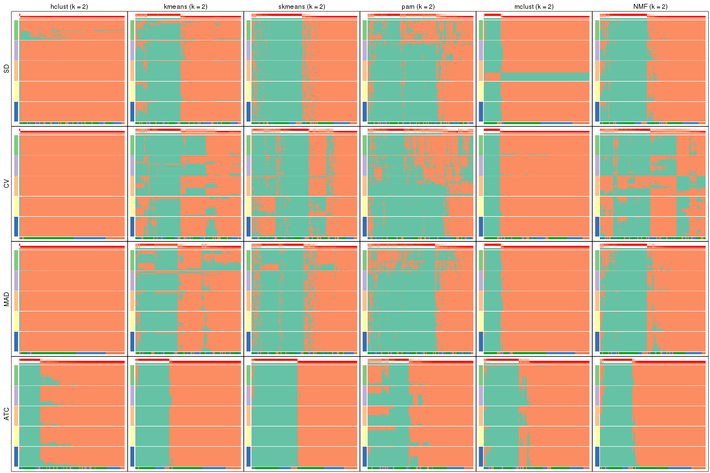
collect_plots(res_list, k = 3, fun = membership_heatmap, mc.cores = 4)
collect_plots(res_list, k = 4, fun = membership_heatmap, mc.cores = 4)
collect_plots(res_list, k = 5, fun = membership_heatmap, mc.cores = 4)
collect_plots(res_list, k = 6, fun = membership_heatmap, mc.cores = 4)
Signature heatmaps for all methods. (What is a signature heatmap?)
Note in following heatmaps, rows are scaled.
collect_plots(res_list, k = 2, fun = get_signatures, mc.cores = 4)
collect_plots(res_list, k = 3, fun = get_signatures, mc.cores = 4)
collect_plots(res_list, k = 4, fun = get_signatures, mc.cores = 4)
collect_plots(res_list, k = 5, fun = get_signatures, mc.cores = 4)
collect_plots(res_list, k = 6, fun = get_signatures, mc.cores = 4)
The statistics used for measuring the stability of consensus partitioning. (How are they defined?)
get_stats(res_list, k = 2)
#> k 1-PAC mean_silhouette concordance area_increased Rand Jaccard
#> SD:NMF 2 0.8011 0.888 0.950 0.4924 0.501 0.501
#> CV:NMF 2 0.1742 0.390 0.704 0.4707 0.496 0.496
#> MAD:NMF 2 0.6906 0.875 0.942 0.4936 0.501 0.501
#> ATC:NMF 2 0.9602 0.929 0.973 0.4255 0.572 0.572
#> SD:skmeans 2 0.7073 0.871 0.942 0.5031 0.496 0.496
#> CV:skmeans 2 0.2754 0.605 0.818 0.5009 0.499 0.499
#> MAD:skmeans 2 0.5795 0.769 0.891 0.5042 0.495 0.495
#> ATC:skmeans 2 1.0000 0.984 0.993 0.4961 0.503 0.503
#> SD:mclust 2 1.0000 0.976 0.908 0.2770 0.726 0.726
#> CV:mclust 2 1.0000 0.991 0.995 0.2676 0.739 0.739
#> MAD:mclust 2 1.0000 0.974 0.990 0.2778 0.726 0.726
#> ATC:mclust 2 0.8431 0.895 0.954 0.4597 0.551 0.551
#> SD:kmeans 2 0.7776 0.899 0.933 0.4746 0.505 0.505
#> CV:kmeans 2 0.2762 0.519 0.788 0.4563 0.505 0.505
#> MAD:kmeans 2 0.4137 0.796 0.870 0.4745 0.515 0.515
#> ATC:kmeans 2 1.0000 0.981 0.991 0.4413 0.558 0.558
#> SD:pam 2 0.2373 0.766 0.841 0.4594 0.539 0.539
#> CV:pam 2 0.0656 0.574 0.759 0.4447 0.580 0.580
#> MAD:pam 2 0.3311 0.834 0.874 0.4735 0.534 0.534
#> ATC:pam 2 0.5292 0.803 0.897 0.4287 0.519 0.519
#> SD:hclust 2 0.9864 0.964 0.978 0.0497 0.981 0.981
#> CV:hclust 2 1.0000 0.990 1.000 0.0206 0.981 0.981
#> MAD:hclust 2 1.0000 0.990 1.000 0.0207 0.981 0.981
#> ATC:hclust 2 0.7654 0.935 0.958 0.3531 0.677 0.677
get_stats(res_list, k = 3)
#> k 1-PAC mean_silhouette concordance area_increased Rand Jaccard
#> SD:NMF 3 0.6135 0.747 0.881 0.307 0.706 0.490
#> CV:NMF 3 0.5094 0.721 0.860 0.373 0.784 0.594
#> MAD:NMF 3 0.5149 0.699 0.845 0.319 0.699 0.481
#> ATC:NMF 3 0.5661 0.793 0.872 0.349 0.782 0.641
#> SD:skmeans 3 0.6077 0.741 0.878 0.319 0.717 0.492
#> CV:skmeans 3 0.4372 0.655 0.828 0.333 0.698 0.467
#> MAD:skmeans 3 0.5110 0.721 0.858 0.319 0.707 0.478
#> ATC:skmeans 3 0.7098 0.723 0.879 0.252 0.840 0.696
#> SD:mclust 3 0.4908 0.587 0.774 0.897 0.807 0.737
#> CV:mclust 3 0.4459 0.711 0.850 1.002 0.730 0.635
#> MAD:mclust 3 0.4764 0.828 0.870 1.017 0.704 0.595
#> ATC:mclust 3 0.5127 0.630 0.787 0.102 0.814 0.721
#> SD:kmeans 3 0.7755 0.875 0.926 0.260 0.734 0.542
#> CV:kmeans 3 0.6865 0.852 0.918 0.295 0.699 0.498
#> MAD:kmeans 3 0.6792 0.820 0.903 0.302 0.687 0.478
#> ATC:kmeans 3 0.6440 0.923 0.924 0.381 0.630 0.429
#> SD:pam 3 0.2309 0.721 0.775 0.191 0.906 0.834
#> CV:pam 3 0.0585 0.562 0.713 0.178 0.896 0.825
#> MAD:pam 3 0.3979 0.774 0.831 0.196 0.914 0.838
#> ATC:pam 3 0.7566 0.902 0.902 0.391 0.609 0.403
#> SD:hclust 3 0.4978 0.737 0.884 3.786 0.828 0.824
#> CV:hclust 3 0.7588 0.887 0.951 4.540 0.963 0.962
#> MAD:hclust 3 0.2926 0.696 0.864 10.891 0.843 0.840
#> ATC:hclust 3 0.4754 0.836 0.826 0.284 0.985 0.978
get_stats(res_list, k = 4)
#> k 1-PAC mean_silhouette concordance area_increased Rand Jaccard
#> SD:NMF 4 0.541 0.593 0.777 0.1375 0.881 0.685
#> CV:NMF 4 0.462 0.513 0.661 0.1340 0.899 0.731
#> MAD:NMF 4 0.480 0.545 0.731 0.1271 0.843 0.598
#> ATC:NMF 4 0.525 0.535 0.785 0.2094 0.802 0.572
#> SD:skmeans 4 0.444 0.533 0.715 0.1230 0.873 0.646
#> CV:skmeans 4 0.374 0.432 0.672 0.1220 0.873 0.645
#> MAD:skmeans 4 0.412 0.450 0.695 0.1249 0.857 0.610
#> ATC:skmeans 4 0.658 0.631 0.823 0.1206 0.880 0.709
#> SD:mclust 4 0.704 0.849 0.908 0.2470 0.732 0.537
#> CV:mclust 4 0.725 0.850 0.911 0.2114 0.756 0.542
#> MAD:mclust 4 0.793 0.856 0.927 0.2092 0.882 0.741
#> ATC:mclust 4 0.582 0.797 0.840 0.2027 0.652 0.475
#> SD:kmeans 4 0.486 0.499 0.703 0.1313 0.811 0.564
#> CV:kmeans 4 0.499 0.503 0.790 0.1227 0.842 0.645
#> MAD:kmeans 4 0.562 0.579 0.760 0.1332 0.791 0.506
#> ATC:kmeans 4 0.705 0.533 0.825 0.1537 0.923 0.799
#> SD:pam 4 0.349 0.473 0.725 0.1768 0.750 0.526
#> CV:pam 4 0.142 0.607 0.706 0.0670 0.850 0.745
#> MAD:pam 4 0.413 0.619 0.798 0.0976 0.982 0.961
#> ATC:pam 4 0.621 0.766 0.884 0.1636 0.806 0.567
#> SD:hclust 4 0.336 0.782 0.875 0.5064 0.843 0.810
#> CV:hclust 4 0.406 0.725 0.874 1.1207 0.910 0.905
#> MAD:hclust 4 0.123 0.720 0.820 0.5848 0.813 0.778
#> ATC:hclust 4 0.444 0.656 0.776 0.1544 0.985 0.977
get_stats(res_list, k = 5)
#> k 1-PAC mean_silhouette concordance area_increased Rand Jaccard
#> SD:NMF 5 0.521 0.484 0.680 0.0656 0.916 0.715
#> CV:NMF 5 0.483 0.416 0.626 0.0753 0.890 0.655
#> MAD:NMF 5 0.507 0.452 0.686 0.0671 0.832 0.505
#> ATC:NMF 5 0.513 0.480 0.711 0.1172 0.751 0.369
#> SD:skmeans 5 0.468 0.358 0.614 0.0647 0.943 0.795
#> CV:skmeans 5 0.405 0.358 0.588 0.0643 0.918 0.712
#> MAD:skmeans 5 0.418 0.352 0.601 0.0635 0.868 0.566
#> ATC:skmeans 5 0.691 0.666 0.832 0.0689 0.917 0.743
#> SD:mclust 5 0.775 0.838 0.906 0.0606 0.952 0.865
#> CV:mclust 5 0.541 0.681 0.819 0.0729 0.986 0.960
#> MAD:mclust 5 0.700 0.686 0.846 0.0533 0.975 0.929
#> ATC:mclust 5 0.488 0.479 0.652 0.0791 0.847 0.646
#> SD:kmeans 5 0.510 0.516 0.727 0.0683 0.892 0.679
#> CV:kmeans 5 0.512 0.501 0.698 0.0911 0.783 0.473
#> MAD:kmeans 5 0.582 0.530 0.774 0.0719 0.879 0.629
#> ATC:kmeans 5 0.686 0.657 0.792 0.0901 0.822 0.520
#> SD:pam 5 0.360 0.440 0.710 0.0393 0.779 0.494
#> CV:pam 5 0.214 0.507 0.711 0.0698 0.876 0.783
#> MAD:pam 5 0.417 0.598 0.783 0.0335 0.989 0.975
#> ATC:pam 5 0.703 0.681 0.843 0.0742 0.829 0.527
#> SD:hclust 5 0.360 0.758 0.868 0.1000 0.994 0.991
#> CV:hclust 5 0.298 0.721 0.841 0.3203 0.831 0.804
#> MAD:hclust 5 0.166 0.666 0.785 0.1702 0.952 0.929
#> ATC:hclust 5 0.449 0.689 0.792 0.1510 0.692 0.524
get_stats(res_list, k = 6)
#> k 1-PAC mean_silhouette concordance area_increased Rand Jaccard
#> SD:NMF 6 0.549 0.417 0.649 0.0436 0.918 0.680
#> CV:NMF 6 0.531 0.341 0.580 0.0428 0.875 0.546
#> MAD:NMF 6 0.526 0.353 0.606 0.0461 0.886 0.581
#> ATC:NMF 6 0.556 0.358 0.602 0.0472 0.913 0.665
#> SD:skmeans 6 0.506 0.280 0.562 0.0396 0.895 0.615
#> CV:skmeans 6 0.449 0.288 0.546 0.0388 0.949 0.781
#> MAD:skmeans 6 0.477 0.280 0.529 0.0416 0.909 0.639
#> ATC:skmeans 6 0.715 0.600 0.788 0.0406 0.978 0.917
#> SD:mclust 6 0.745 0.760 0.869 0.0791 0.923 0.767
#> CV:mclust 6 0.567 0.683 0.798 0.0609 0.911 0.758
#> MAD:mclust 6 0.641 0.617 0.797 0.0546 0.935 0.812
#> ATC:mclust 6 0.459 0.384 0.674 0.0841 0.729 0.373
#> SD:kmeans 6 0.578 0.463 0.669 0.0577 0.911 0.716
#> CV:kmeans 6 0.576 0.502 0.724 0.0599 0.873 0.593
#> MAD:kmeans 6 0.616 0.522 0.719 0.0496 0.892 0.647
#> ATC:kmeans 6 0.730 0.629 0.759 0.0527 0.906 0.634
#> SD:pam 6 0.381 0.469 0.726 0.0212 0.795 0.513
#> CV:pam 6 0.240 0.364 0.688 0.0361 0.903 0.805
#> MAD:pam 6 0.429 0.629 0.774 0.0227 0.979 0.952
#> ATC:pam 6 0.714 0.415 0.739 0.0824 0.829 0.440
#> SD:hclust 6 0.402 0.737 0.864 0.0520 0.993 0.989
#> CV:hclust 6 0.252 0.702 0.827 0.0943 0.979 0.970
#> MAD:hclust 6 0.179 0.634 0.769 0.0841 0.997 0.996
#> ATC:hclust 6 0.539 0.715 0.834 0.1138 0.923 0.800
Following heatmap plots the partition for each combination of methods and the lightness correspond to the silhouette scores for samples in each method. On top the consensus subgroup is inferred from all methods by taking the mean silhouette scores as weight.
collect_stats(res_list, k = 2)
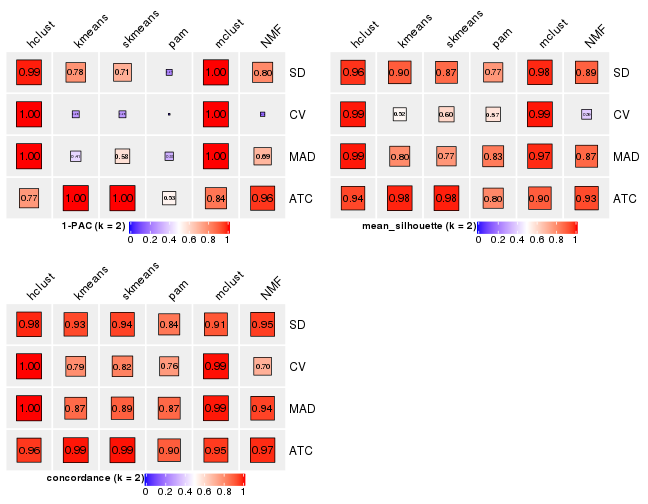
collect_stats(res_list, k = 3)
collect_stats(res_list, k = 4)
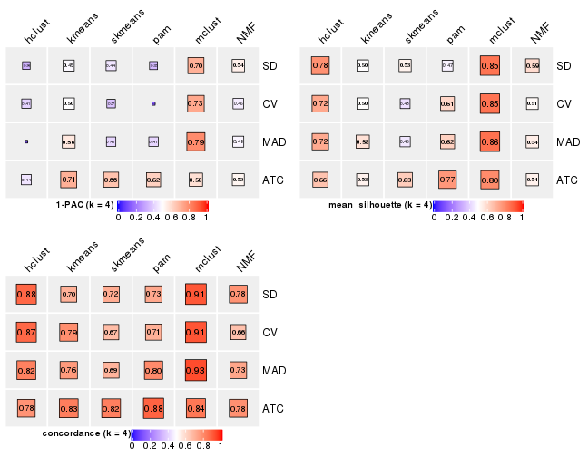
collect_stats(res_list, k = 5)
collect_stats(res_list, k = 6)
Collect partitions from all methods:
collect_classes(res_list, k = 2)
collect_classes(res_list, k = 3)
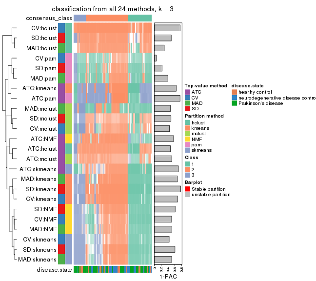
collect_classes(res_list, k = 4)
collect_classes(res_list, k = 5)
collect_classes(res_list, k = 6)
Overlap of top rows from different top-row methods:
top_rows_overlap(res_list, top_n = 1000, method = "euler")
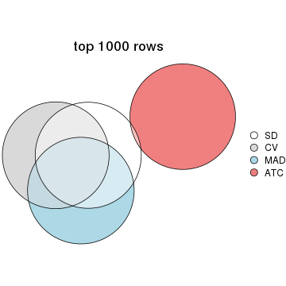
top_rows_overlap(res_list, top_n = 2000, method = "euler")
top_rows_overlap(res_list, top_n = 3000, method = "euler")
top_rows_overlap(res_list, top_n = 4000, method = "euler")
top_rows_overlap(res_list, top_n = 5000, method = "euler")
Also visualize the correspondance of rankings between different top-row methods:
top_rows_overlap(res_list, top_n = 1000, method = "correspondance")
top_rows_overlap(res_list, top_n = 2000, method = "correspondance")
top_rows_overlap(res_list, top_n = 3000, method = "correspondance")
top_rows_overlap(res_list, top_n = 4000, method = "correspondance")
top_rows_overlap(res_list, top_n = 5000, method = "correspondance")
Heatmaps of the top rows:
top_rows_heatmap(res_list, top_n = 1000)
top_rows_heatmap(res_list, top_n = 2000)
top_rows_heatmap(res_list, top_n = 3000)
top_rows_heatmap(res_list, top_n = 4000)

top_rows_heatmap(res_list, top_n = 5000)
Test correlation between subgroups and known annotations. If the known annotation is numeric, one-way ANOVA test is applied, and if the known annotation is discrete, chi-squared contingency table test is applied.
test_to_known_factors(res_list, k = 2)
#> n disease.state(p) k
#> SD:NMF 101 0.25136 2
#> CV:NMF 32 NA 2
#> MAD:NMF 100 0.05649 2
#> ATC:NMF 100 0.52475 2
#> SD:skmeans 98 0.30768 2
#> CV:skmeans 85 0.64766 2
#> MAD:skmeans 93 0.03772 2
#> ATC:skmeans 105 0.45006 2
#> SD:mclust 103 0.00975 2
#> CV:mclust 105 0.01082 2
#> MAD:mclust 104 0.00979 2
#> ATC:mclust 100 0.87598 2
#> SD:kmeans 103 0.46899 2
#> CV:kmeans 60 0.23928 2
#> MAD:kmeans 98 0.11147 2
#> ATC:kmeans 105 0.50246 2
#> SD:pam 98 0.11642 2
#> CV:pam 94 0.17795 2
#> MAD:pam 101 0.02120 2
#> ATC:pam 101 0.49633 2
#> SD:hclust 104 NA 2
#> CV:hclust 104 NA 2
#> MAD:hclust 104 NA 2
#> ATC:hclust 105 0.24298 2
test_to_known_factors(res_list, k = 3)
#> n disease.state(p) k
#> SD:NMF 93 0.24527 3
#> CV:NMF 93 0.13762 3
#> MAD:NMF 87 0.09946 3
#> ATC:NMF 98 0.92847 3
#> SD:skmeans 89 0.12007 3
#> CV:skmeans 82 0.06922 3
#> MAD:skmeans 89 0.04361 3
#> ATC:skmeans 84 0.60138 3
#> SD:mclust 75 0.04705 3
#> CV:mclust 93 0.02085 3
#> MAD:mclust 103 0.00272 3
#> ATC:mclust 91 0.13618 3
#> SD:kmeans 103 0.06320 3
#> CV:kmeans 101 0.04509 3
#> MAD:kmeans 99 0.01712 3
#> ATC:kmeans 103 0.10317 3
#> SD:pam 98 0.07212 3
#> CV:pam 91 0.11859 3
#> MAD:pam 98 0.01238 3
#> ATC:pam 103 0.12948 3
#> SD:hclust 93 0.17467 3
#> CV:hclust 100 NA 3
#> MAD:hclust 92 0.43298 3
#> ATC:hclust 105 0.14581 3
test_to_known_factors(res_list, k = 4)
#> n disease.state(p) k
#> SD:NMF 77 0.37709 4
#> CV:NMF 68 0.13335 4
#> MAD:NMF 69 0.05665 4
#> ATC:NMF 72 0.91080 4
#> SD:skmeans 71 0.04303 4
#> CV:skmeans 52 0.00474 4
#> MAD:skmeans 57 0.00744 4
#> ATC:skmeans 69 0.25691 4
#> SD:mclust 101 0.00870 4
#> CV:mclust 103 0.00984 4
#> MAD:mclust 100 0.00792 4
#> ATC:mclust 97 0.12950 4
#> SD:kmeans 65 0.00828 4
#> CV:kmeans 60 0.02493 4
#> MAD:kmeans 74 0.01098 4
#> ATC:kmeans 69 0.26195 4
#> SD:pam 53 0.03293 4
#> CV:pam 91 0.11859 4
#> MAD:pam 87 0.01187 4
#> ATC:pam 96 0.14020 4
#> SD:hclust 97 0.12717 4
#> CV:hclust 89 0.34097 4
#> MAD:hclust 92 0.34949 4
#> ATC:hclust 78 0.12360 4
test_to_known_factors(res_list, k = 5)
#> n disease.state(p) k
#> SD:NMF 58 0.23225 5
#> CV:NMF 49 0.06322 5
#> MAD:NMF 52 0.03155 5
#> ATC:NMF 51 0.20769 5
#> SD:skmeans 30 0.04634 5
#> CV:skmeans 42 0.00200 5
#> MAD:skmeans 42 0.00402 5
#> ATC:skmeans 73 0.38232 5
#> SD:mclust 100 0.02885 5
#> CV:mclust 90 0.02126 5
#> MAD:mclust 86 0.02151 5
#> ATC:mclust 68 0.07432 5
#> SD:kmeans 64 0.01663 5
#> CV:kmeans 62 0.01052 5
#> MAD:kmeans 70 0.00985 5
#> ATC:kmeans 81 0.11948 5
#> SD:pam 45 0.04613 5
#> CV:pam 75 0.08978 5
#> MAD:pam 85 0.01525 5
#> ATC:pam 87 0.05865 5
#> SD:hclust 91 0.17382 5
#> CV:hclust 92 0.32589 5
#> MAD:hclust 89 0.14421 5
#> ATC:hclust 96 0.04831 5
test_to_known_factors(res_list, k = 6)
#> n disease.state(p) k
#> SD:NMF 41 0.026697 6
#> CV:NMF 31 0.009111 6
#> MAD:NMF 34 0.027984 6
#> ATC:NMF 30 0.482121 6
#> SD:skmeans 38 0.021855 6
#> CV:skmeans 24 0.000123 6
#> MAD:skmeans 21 0.000351 6
#> ATC:skmeans 69 0.079124 6
#> SD:mclust 94 0.034238 6
#> CV:mclust 90 0.026976 6
#> MAD:mclust 80 0.008968 6
#> ATC:mclust 42 0.583380 6
#> SD:kmeans 64 0.036756 6
#> CV:kmeans 66 0.017062 6
#> MAD:kmeans 63 0.001926 6
#> ATC:kmeans 68 0.160909 6
#> SD:pam 55 0.018139 6
#> CV:pam 40 0.055263 6
#> MAD:pam 87 0.018318 6
#> ATC:pam 42 0.000426 6
#> SD:hclust 90 0.266087 6
#> CV:hclust 91 0.173819 6
#> MAD:hclust 80 0.437705 6
#> ATC:hclust 93 0.055308 6
The object with results only for a single top-value method and a single partition method can be extracted as:
res = res_list["SD", "hclust"]
# you can also extract it by
# res = res_list["SD:hclust"]
A summary of res and all the functions that can be applied to it:
res
#> A 'ConsensusPartition' object with k = 2, 3, 4, 5, 6.
#> On a matrix with 21168 rows and 105 columns.
#> Top rows (1000, 2000, 3000, 4000, 5000) are extracted by 'SD' method.
#> Subgroups are detected by 'hclust' method.
#> Performed in total 1250 partitions by row resampling.
#> Best k for subgroups seems to be 3.
#>
#> Following methods can be applied to this 'ConsensusPartition' object:
#> [1] "cola_report" "collect_classes" "collect_plots"
#> [4] "collect_stats" "colnames" "compare_signatures"
#> [7] "consensus_heatmap" "dimension_reduction" "functional_enrichment"
#> [10] "get_anno_col" "get_anno" "get_classes"
#> [13] "get_consensus" "get_matrix" "get_membership"
#> [16] "get_param" "get_signatures" "get_stats"
#> [19] "is_best_k" "is_stable_k" "membership_heatmap"
#> [22] "ncol" "nrow" "plot_ecdf"
#> [25] "rownames" "select_partition_number" "show"
#> [28] "suggest_best_k" "test_to_known_factors"
collect_plots() function collects all the plots made from res for all k (number of partitions)
into one single page to provide an easy and fast comparison between different k.
collect_plots(res)
The plots are:
k and the heatmap of
predicted classes for each k.k.k.k.All the plots in panels can be made by individual functions and they are plotted later in this section.
select_partition_number() produces several plots showing different
statistics for choosing “optimized” k. There are following statistics:
k;k, the area increased is defined as \(A_k - A_{k-1}\).The detailed explanations of these statistics can be found in the cola vignette.
Generally speaking, lower PAC score, higher mean silhouette score or higher
concordance corresponds to better partition. Rand index and Jaccard index
measure how similar the current partition is compared to partition with k-1.
If they are too similar, we won't accept k is better than k-1.
select_partition_number(res)
The numeric values for all these statistics can be obtained by get_stats().
get_stats(res)
#> k 1-PAC mean_silhouette concordance area_increased Rand Jaccard
#> 2 2 0.986 0.964 0.978 0.0497 0.981 0.981
#> 3 3 0.498 0.737 0.884 3.7863 0.828 0.824
#> 4 4 0.336 0.782 0.875 0.5064 0.843 0.810
#> 5 5 0.360 0.758 0.868 0.1000 0.994 0.991
#> 6 6 0.402 0.737 0.864 0.0520 0.993 0.989
suggest_best_k() suggests the best \(k\) based on these statistics. The rules are as follows:
suggest_best_k(res)
#> [1] 3
Following shows the table of the partitions (You need to click the show/hide
code output link to see it). The membership matrix (columns with name p*)
is inferred by
clue::cl_consensus()
function with the SE method. Basically the value in the membership matrix
represents the probability to belong to a certain group. The finall class
label for an item is determined with the group with highest probability it
belongs to.
In get_classes() function, the entropy is calculated from the membership
matrix and the silhouette score is calculated from the consensus matrix.
cbind(get_classes(res, k = 2), get_membership(res, k = 2))
#> class entropy silhouette p1 p2
#> GSM153405 2 0.1633 0.977 0.024 0.976
#> GSM153406 2 0.0376 0.981 0.004 0.996
#> GSM153419 2 0.1414 0.978 0.020 0.980
#> GSM153423 2 0.0376 0.981 0.004 0.996
#> GSM153425 2 0.4431 0.925 0.092 0.908
#> GSM153427 2 0.1184 0.980 0.016 0.984
#> GSM153428 2 0.1843 0.974 0.028 0.972
#> GSM153429 2 0.0672 0.981 0.008 0.992
#> GSM153433 2 0.0672 0.981 0.008 0.992
#> GSM153444 2 0.1184 0.980 0.016 0.984
#> GSM153448 2 0.0938 0.981 0.012 0.988
#> GSM153451 2 0.0376 0.981 0.004 0.996
#> GSM153452 2 0.0000 0.981 0.000 1.000
#> GSM153477 2 0.0672 0.980 0.008 0.992
#> GSM153479 2 0.0938 0.981 0.012 0.988
#> GSM153484 2 0.0672 0.981 0.008 0.992
#> GSM153488 2 0.0376 0.981 0.004 0.996
#> GSM153496 2 0.1633 0.977 0.024 0.976
#> GSM153497 2 0.0376 0.981 0.004 0.996
#> GSM153500 2 0.1843 0.978 0.028 0.972
#> GSM153503 2 0.2948 0.964 0.052 0.948
#> GSM153508 1 0.4431 0.000 0.908 0.092
#> GSM153409 2 0.1184 0.979 0.016 0.984
#> GSM153426 2 0.2043 0.973 0.032 0.968
#> GSM153431 2 0.2778 0.962 0.048 0.952
#> GSM153438 2 0.0376 0.981 0.004 0.996
#> GSM153440 2 0.2603 0.966 0.044 0.956
#> GSM153447 2 0.3431 0.951 0.064 0.936
#> GSM153450 2 0.0376 0.981 0.004 0.996
#> GSM153456 2 0.0376 0.981 0.004 0.996
#> GSM153457 2 0.0376 0.981 0.004 0.996
#> GSM153458 2 0.0376 0.981 0.004 0.996
#> GSM153459 2 0.0376 0.981 0.004 0.996
#> GSM153460 2 0.0376 0.981 0.004 0.996
#> GSM153461 2 0.2236 0.970 0.036 0.964
#> GSM153463 2 0.4298 0.929 0.088 0.912
#> GSM153464 2 0.0672 0.980 0.008 0.992
#> GSM153466 2 0.0672 0.981 0.008 0.992
#> GSM153467 2 0.0376 0.981 0.004 0.996
#> GSM153468 2 0.0376 0.981 0.004 0.996
#> GSM153469 2 0.0672 0.980 0.008 0.992
#> GSM153470 2 0.0376 0.981 0.004 0.996
#> GSM153471 2 0.0672 0.980 0.008 0.992
#> GSM153472 2 0.2043 0.975 0.032 0.968
#> GSM153473 2 0.2423 0.968 0.040 0.960
#> GSM153474 2 0.2236 0.975 0.036 0.964
#> GSM153475 2 0.0672 0.981 0.008 0.992
#> GSM153476 2 0.0672 0.980 0.008 0.992
#> GSM153478 2 0.1184 0.979 0.016 0.984
#> GSM153480 2 0.0376 0.981 0.004 0.996
#> GSM153486 2 0.0672 0.980 0.008 0.992
#> GSM153487 2 0.0672 0.981 0.008 0.992
#> GSM153499 2 0.0672 0.980 0.008 0.992
#> GSM153504 2 0.2043 0.974 0.032 0.968
#> GSM153507 2 0.2603 0.968 0.044 0.956
#> GSM153404 2 0.1633 0.977 0.024 0.976
#> GSM153407 2 0.1843 0.975 0.028 0.972
#> GSM153408 2 0.0376 0.981 0.004 0.996
#> GSM153410 2 0.0376 0.981 0.004 0.996
#> GSM153411 2 0.4431 0.925 0.092 0.908
#> GSM153412 2 0.0376 0.981 0.004 0.996
#> GSM153413 2 0.0376 0.981 0.004 0.996
#> GSM153414 2 0.1414 0.977 0.020 0.980
#> GSM153415 2 0.0376 0.981 0.004 0.996
#> GSM153416 2 0.0376 0.981 0.004 0.996
#> GSM153417 2 0.4431 0.925 0.092 0.908
#> GSM153418 2 0.0376 0.981 0.004 0.996
#> GSM153420 2 0.4431 0.925 0.092 0.908
#> GSM153421 2 0.4431 0.925 0.092 0.908
#> GSM153422 2 0.4431 0.925 0.092 0.908
#> GSM153424 2 0.2043 0.973 0.032 0.968
#> GSM153430 2 0.2423 0.968 0.040 0.960
#> GSM153432 2 0.0672 0.981 0.008 0.992
#> GSM153434 2 0.1184 0.979 0.016 0.984
#> GSM153435 2 0.0376 0.981 0.004 0.996
#> GSM153436 2 0.1633 0.976 0.024 0.976
#> GSM153437 2 0.0000 0.981 0.000 1.000
#> GSM153439 2 0.0376 0.981 0.004 0.996
#> GSM153441 2 0.0672 0.981 0.008 0.992
#> GSM153442 2 0.0938 0.981 0.012 0.988
#> GSM153443 2 0.0672 0.980 0.008 0.992
#> GSM153445 2 0.0376 0.981 0.004 0.996
#> GSM153446 2 0.0376 0.981 0.004 0.996
#> GSM153449 2 0.0938 0.981 0.012 0.988
#> GSM153453 2 0.0672 0.981 0.008 0.992
#> GSM153454 2 0.4022 0.935 0.080 0.920
#> GSM153455 2 0.0376 0.981 0.004 0.996
#> GSM153462 2 0.0376 0.981 0.004 0.996
#> GSM153465 2 0.1184 0.980 0.016 0.984
#> GSM153481 2 0.0376 0.981 0.004 0.996
#> GSM153482 2 0.0672 0.981 0.008 0.992
#> GSM153483 2 0.0376 0.981 0.004 0.996
#> GSM153485 2 0.0376 0.981 0.004 0.996
#> GSM153489 2 0.0938 0.981 0.012 0.988
#> GSM153490 2 0.2603 0.966 0.044 0.956
#> GSM153491 2 0.0938 0.981 0.012 0.988
#> GSM153492 2 0.2236 0.971 0.036 0.964
#> GSM153493 2 0.2603 0.970 0.044 0.956
#> GSM153494 2 0.0672 0.980 0.008 0.992
#> GSM153495 2 0.4022 0.936 0.080 0.920
#> GSM153498 2 0.0672 0.980 0.008 0.992
#> GSM153501 2 0.2236 0.973 0.036 0.964
#> GSM153502 2 0.1843 0.975 0.028 0.972
#> GSM153505 2 0.2423 0.972 0.040 0.960
#> GSM153506 2 0.0672 0.980 0.008 0.992
cbind(get_classes(res, k = 3), get_membership(res, k = 3))
#> class entropy silhouette p1 p2 p3
#> GSM153405 2 0.2711 0.8374 0.000 0.912 0.088
#> GSM153406 2 0.1643 0.8614 0.000 0.956 0.044
#> GSM153419 2 0.2261 0.8507 0.000 0.932 0.068
#> GSM153423 2 0.0592 0.8679 0.000 0.988 0.012
#> GSM153425 3 0.5760 0.9105 0.000 0.328 0.672
#> GSM153427 2 0.1411 0.8669 0.000 0.964 0.036
#> GSM153428 2 0.4750 0.6463 0.000 0.784 0.216
#> GSM153429 2 0.0592 0.8694 0.000 0.988 0.012
#> GSM153433 2 0.3116 0.8187 0.000 0.892 0.108
#> GSM153444 2 0.1031 0.8691 0.000 0.976 0.024
#> GSM153448 2 0.1163 0.8696 0.000 0.972 0.028
#> GSM153451 2 0.0237 0.8668 0.000 0.996 0.004
#> GSM153452 2 0.0237 0.8689 0.000 0.996 0.004
#> GSM153477 2 0.0592 0.8647 0.000 0.988 0.012
#> GSM153479 2 0.1860 0.8649 0.000 0.948 0.052
#> GSM153484 2 0.0592 0.8696 0.000 0.988 0.012
#> GSM153488 2 0.1860 0.8629 0.000 0.948 0.052
#> GSM153496 2 0.3267 0.8018 0.000 0.884 0.116
#> GSM153497 2 0.0424 0.8659 0.000 0.992 0.008
#> GSM153500 2 0.6224 0.2673 0.016 0.688 0.296
#> GSM153503 2 0.7392 -0.5631 0.032 0.500 0.468
#> GSM153508 1 0.0000 0.0000 1.000 0.000 0.000
#> GSM153409 2 0.3267 0.8033 0.000 0.884 0.116
#> GSM153426 2 0.3686 0.7747 0.000 0.860 0.140
#> GSM153431 2 0.5098 0.5740 0.000 0.752 0.248
#> GSM153438 2 0.0237 0.8668 0.000 0.996 0.004
#> GSM153440 2 0.4291 0.7193 0.000 0.820 0.180
#> GSM153447 2 0.5591 0.4173 0.000 0.696 0.304
#> GSM153450 2 0.0237 0.8668 0.000 0.996 0.004
#> GSM153456 2 0.0237 0.8668 0.000 0.996 0.004
#> GSM153457 2 0.0237 0.8668 0.000 0.996 0.004
#> GSM153458 2 0.0237 0.8668 0.000 0.996 0.004
#> GSM153459 2 0.0237 0.8668 0.000 0.996 0.004
#> GSM153460 2 0.0237 0.8668 0.000 0.996 0.004
#> GSM153461 2 0.3752 0.7690 0.000 0.856 0.144
#> GSM153463 3 0.6079 0.8513 0.000 0.388 0.612
#> GSM153464 2 0.0592 0.8647 0.000 0.988 0.012
#> GSM153466 2 0.1411 0.8672 0.000 0.964 0.036
#> GSM153467 2 0.0237 0.8670 0.000 0.996 0.004
#> GSM153468 2 0.1031 0.8696 0.000 0.976 0.024
#> GSM153469 2 0.1031 0.8688 0.000 0.976 0.024
#> GSM153470 2 0.0592 0.8671 0.000 0.988 0.012
#> GSM153471 2 0.0892 0.8655 0.000 0.980 0.020
#> GSM153472 2 0.2959 0.8261 0.000 0.900 0.100
#> GSM153473 2 0.6314 -0.1532 0.004 0.604 0.392
#> GSM153474 3 0.6529 0.3965 0.012 0.368 0.620
#> GSM153475 2 0.0892 0.8697 0.000 0.980 0.020
#> GSM153476 2 0.1529 0.8691 0.000 0.960 0.040
#> GSM153478 2 0.3941 0.7573 0.000 0.844 0.156
#> GSM153480 2 0.0592 0.8671 0.000 0.988 0.012
#> GSM153486 2 0.0592 0.8647 0.000 0.988 0.012
#> GSM153487 2 0.0892 0.8686 0.000 0.980 0.020
#> GSM153499 2 0.1289 0.8682 0.000 0.968 0.032
#> GSM153504 2 0.6587 0.0168 0.016 0.632 0.352
#> GSM153507 2 0.5894 0.5251 0.028 0.752 0.220
#> GSM153404 2 0.2711 0.8374 0.000 0.912 0.088
#> GSM153407 2 0.4452 0.6986 0.000 0.808 0.192
#> GSM153408 2 0.1643 0.8614 0.000 0.956 0.044
#> GSM153410 2 0.1643 0.8614 0.000 0.956 0.044
#> GSM153411 3 0.5760 0.9105 0.000 0.328 0.672
#> GSM153412 2 0.1643 0.8614 0.000 0.956 0.044
#> GSM153413 2 0.1643 0.8614 0.000 0.956 0.044
#> GSM153414 2 0.2537 0.8427 0.000 0.920 0.080
#> GSM153415 2 0.1643 0.8614 0.000 0.956 0.044
#> GSM153416 2 0.0592 0.8679 0.000 0.988 0.012
#> GSM153417 3 0.5760 0.9105 0.000 0.328 0.672
#> GSM153418 2 0.1643 0.8614 0.000 0.956 0.044
#> GSM153420 3 0.5760 0.9105 0.000 0.328 0.672
#> GSM153421 3 0.5760 0.9105 0.000 0.328 0.672
#> GSM153422 3 0.5760 0.9105 0.000 0.328 0.672
#> GSM153424 2 0.4750 0.6451 0.000 0.784 0.216
#> GSM153430 2 0.4555 0.6801 0.000 0.800 0.200
#> GSM153432 2 0.1031 0.8697 0.000 0.976 0.024
#> GSM153434 2 0.3192 0.8097 0.000 0.888 0.112
#> GSM153435 2 0.0424 0.8664 0.000 0.992 0.008
#> GSM153436 2 0.2537 0.8413 0.000 0.920 0.080
#> GSM153437 2 0.0000 0.8674 0.000 1.000 0.000
#> GSM153439 2 0.0892 0.8699 0.000 0.980 0.020
#> GSM153441 2 0.1860 0.8645 0.000 0.948 0.052
#> GSM153442 2 0.2448 0.8472 0.000 0.924 0.076
#> GSM153443 2 0.0592 0.8647 0.000 0.988 0.012
#> GSM153445 2 0.0424 0.8659 0.000 0.992 0.008
#> GSM153446 2 0.0592 0.8671 0.000 0.988 0.012
#> GSM153449 2 0.2066 0.8586 0.000 0.940 0.060
#> GSM153453 2 0.2448 0.8523 0.000 0.924 0.076
#> GSM153454 3 0.6008 0.8721 0.000 0.372 0.628
#> GSM153455 2 0.1031 0.8700 0.000 0.976 0.024
#> GSM153462 2 0.0424 0.8659 0.000 0.992 0.008
#> GSM153465 2 0.1163 0.8693 0.000 0.972 0.028
#> GSM153481 2 0.0592 0.8673 0.000 0.988 0.012
#> GSM153482 2 0.1860 0.8600 0.000 0.948 0.052
#> GSM153483 2 0.0747 0.8670 0.000 0.984 0.016
#> GSM153485 2 0.1529 0.8689 0.000 0.960 0.040
#> GSM153489 2 0.2165 0.8592 0.000 0.936 0.064
#> GSM153490 2 0.6598 -0.3614 0.008 0.564 0.428
#> GSM153491 2 0.2448 0.8501 0.000 0.924 0.076
#> GSM153492 2 0.6180 -0.2277 0.000 0.584 0.416
#> GSM153493 2 0.6451 -0.1496 0.008 0.608 0.384
#> GSM153494 2 0.1289 0.8688 0.000 0.968 0.032
#> GSM153495 3 0.6154 0.8161 0.000 0.408 0.592
#> GSM153498 2 0.1964 0.8552 0.000 0.944 0.056
#> GSM153501 2 0.7492 -0.1146 0.052 0.608 0.340
#> GSM153502 2 0.4700 0.6812 0.008 0.812 0.180
#> GSM153505 2 0.6625 -0.3942 0.008 0.552 0.440
#> GSM153506 2 0.0747 0.8643 0.000 0.984 0.016
cbind(get_classes(res, k = 4), get_membership(res, k = 4))
#> class entropy silhouette p1 p2 p3 p4
#> GSM153405 2 0.3271 0.859 0.132 0.856 0.012 0.000
#> GSM153406 2 0.2542 0.881 0.084 0.904 0.012 0.000
#> GSM153419 2 0.2928 0.872 0.108 0.880 0.012 0.000
#> GSM153423 2 0.0592 0.896 0.016 0.984 0.000 0.000
#> GSM153425 1 0.1722 0.631 0.944 0.048 0.008 0.000
#> GSM153427 2 0.1211 0.898 0.040 0.960 0.000 0.000
#> GSM153428 2 0.4746 0.641 0.304 0.688 0.008 0.000
#> GSM153429 2 0.0921 0.899 0.028 0.972 0.000 0.000
#> GSM153433 2 0.3969 0.815 0.180 0.804 0.016 0.000
#> GSM153444 2 0.0817 0.898 0.024 0.976 0.000 0.000
#> GSM153448 2 0.1474 0.899 0.052 0.948 0.000 0.000
#> GSM153451 2 0.0188 0.895 0.004 0.996 0.000 0.000
#> GSM153452 2 0.0469 0.897 0.012 0.988 0.000 0.000
#> GSM153477 2 0.0779 0.893 0.016 0.980 0.004 0.000
#> GSM153479 2 0.2124 0.893 0.068 0.924 0.008 0.000
#> GSM153484 2 0.0921 0.899 0.028 0.972 0.000 0.000
#> GSM153488 2 0.2402 0.891 0.076 0.912 0.012 0.000
#> GSM153496 2 0.4378 0.799 0.164 0.796 0.040 0.000
#> GSM153497 2 0.0524 0.893 0.008 0.988 0.004 0.000
#> GSM153500 1 0.7888 0.419 0.440 0.344 0.208 0.008
#> GSM153503 1 0.6583 0.613 0.684 0.172 0.116 0.028
#> GSM153508 4 0.0000 0.000 0.000 0.000 0.000 1.000
#> GSM153409 2 0.4011 0.785 0.208 0.784 0.008 0.000
#> GSM153426 2 0.4228 0.756 0.232 0.760 0.008 0.000
#> GSM153431 2 0.4973 0.552 0.348 0.644 0.008 0.000
#> GSM153438 2 0.0188 0.895 0.004 0.996 0.000 0.000
#> GSM153440 2 0.4635 0.705 0.268 0.720 0.012 0.000
#> GSM153447 2 0.5427 0.347 0.416 0.568 0.016 0.000
#> GSM153450 2 0.0376 0.896 0.004 0.992 0.004 0.000
#> GSM153456 2 0.0188 0.895 0.004 0.996 0.000 0.000
#> GSM153457 2 0.0188 0.895 0.004 0.996 0.000 0.000
#> GSM153458 2 0.0188 0.895 0.004 0.996 0.000 0.000
#> GSM153459 2 0.0188 0.895 0.004 0.996 0.000 0.000
#> GSM153460 2 0.0188 0.895 0.004 0.996 0.000 0.000
#> GSM153461 2 0.4262 0.751 0.236 0.756 0.008 0.000
#> GSM153463 1 0.3037 0.645 0.888 0.076 0.036 0.000
#> GSM153464 2 0.0469 0.891 0.012 0.988 0.000 0.000
#> GSM153466 2 0.1576 0.899 0.048 0.948 0.004 0.000
#> GSM153467 2 0.0707 0.898 0.020 0.980 0.000 0.000
#> GSM153468 2 0.1661 0.897 0.052 0.944 0.004 0.000
#> GSM153469 2 0.0895 0.898 0.020 0.976 0.004 0.000
#> GSM153470 2 0.0524 0.893 0.008 0.988 0.004 0.000
#> GSM153471 2 0.0895 0.891 0.020 0.976 0.004 0.000
#> GSM153472 2 0.3708 0.836 0.148 0.832 0.020 0.000
#> GSM153473 1 0.5760 0.487 0.596 0.372 0.028 0.004
#> GSM153474 3 0.2761 0.000 0.048 0.048 0.904 0.000
#> GSM153475 2 0.1388 0.897 0.028 0.960 0.012 0.000
#> GSM153476 2 0.1854 0.897 0.048 0.940 0.012 0.000
#> GSM153478 2 0.4502 0.743 0.236 0.748 0.016 0.000
#> GSM153480 2 0.0524 0.893 0.008 0.988 0.004 0.000
#> GSM153486 2 0.0895 0.895 0.020 0.976 0.004 0.000
#> GSM153487 2 0.1510 0.895 0.028 0.956 0.016 0.000
#> GSM153499 2 0.2376 0.893 0.068 0.916 0.016 0.000
#> GSM153504 1 0.7114 0.525 0.568 0.304 0.116 0.012
#> GSM153507 2 0.6021 0.436 0.288 0.656 0.032 0.024
#> GSM153404 2 0.3271 0.859 0.132 0.856 0.012 0.000
#> GSM153407 2 0.4690 0.690 0.276 0.712 0.012 0.000
#> GSM153408 2 0.2542 0.881 0.084 0.904 0.012 0.000
#> GSM153410 2 0.2542 0.881 0.084 0.904 0.012 0.000
#> GSM153411 1 0.1722 0.631 0.944 0.048 0.008 0.000
#> GSM153412 2 0.2542 0.881 0.084 0.904 0.012 0.000
#> GSM153413 2 0.2542 0.881 0.084 0.904 0.012 0.000
#> GSM153414 2 0.3401 0.849 0.152 0.840 0.008 0.000
#> GSM153415 2 0.2542 0.881 0.084 0.904 0.012 0.000
#> GSM153416 2 0.0921 0.900 0.028 0.972 0.000 0.000
#> GSM153417 1 0.1722 0.631 0.944 0.048 0.008 0.000
#> GSM153418 2 0.2542 0.881 0.084 0.904 0.012 0.000
#> GSM153420 1 0.1722 0.631 0.944 0.048 0.008 0.000
#> GSM153421 1 0.1722 0.631 0.944 0.048 0.008 0.000
#> GSM153422 1 0.1722 0.631 0.944 0.048 0.008 0.000
#> GSM153424 2 0.4746 0.640 0.304 0.688 0.008 0.000
#> GSM153430 2 0.4690 0.682 0.276 0.712 0.012 0.000
#> GSM153432 2 0.0895 0.898 0.020 0.976 0.004 0.000
#> GSM153434 2 0.4095 0.797 0.192 0.792 0.016 0.000
#> GSM153435 2 0.0817 0.896 0.024 0.976 0.000 0.000
#> GSM153436 2 0.3324 0.858 0.136 0.852 0.012 0.000
#> GSM153437 2 0.0336 0.896 0.008 0.992 0.000 0.000
#> GSM153439 2 0.1209 0.900 0.032 0.964 0.004 0.000
#> GSM153441 2 0.2473 0.889 0.080 0.908 0.012 0.000
#> GSM153442 2 0.2859 0.868 0.112 0.880 0.008 0.000
#> GSM153443 2 0.0469 0.891 0.012 0.988 0.000 0.000
#> GSM153445 2 0.0336 0.892 0.008 0.992 0.000 0.000
#> GSM153446 2 0.0524 0.893 0.008 0.988 0.004 0.000
#> GSM153449 2 0.3485 0.863 0.116 0.856 0.028 0.000
#> GSM153453 2 0.3441 0.867 0.120 0.856 0.024 0.000
#> GSM153454 1 0.2965 0.642 0.892 0.072 0.036 0.000
#> GSM153455 2 0.1743 0.899 0.056 0.940 0.004 0.000
#> GSM153462 2 0.0336 0.892 0.008 0.992 0.000 0.000
#> GSM153465 2 0.1211 0.900 0.040 0.960 0.000 0.000
#> GSM153481 2 0.0592 0.895 0.016 0.984 0.000 0.000
#> GSM153482 2 0.2546 0.883 0.092 0.900 0.008 0.000
#> GSM153483 2 0.0592 0.896 0.016 0.984 0.000 0.000
#> GSM153485 2 0.2742 0.889 0.076 0.900 0.024 0.000
#> GSM153489 2 0.3307 0.874 0.104 0.868 0.028 0.000
#> GSM153490 1 0.5935 0.604 0.680 0.240 0.076 0.004
#> GSM153491 2 0.3658 0.845 0.144 0.836 0.020 0.000
#> GSM153492 1 0.6249 0.518 0.592 0.336 0.072 0.000
#> GSM153493 1 0.7611 0.345 0.476 0.268 0.256 0.000
#> GSM153494 2 0.1854 0.898 0.048 0.940 0.012 0.000
#> GSM153495 1 0.3399 0.649 0.868 0.092 0.040 0.000
#> GSM153498 2 0.2741 0.877 0.096 0.892 0.012 0.000
#> GSM153501 1 0.8217 0.508 0.516 0.256 0.184 0.044
#> GSM153502 2 0.6356 0.401 0.308 0.612 0.076 0.004
#> GSM153505 1 0.6471 0.602 0.652 0.212 0.132 0.004
#> GSM153506 2 0.0927 0.890 0.016 0.976 0.008 0.000
cbind(get_classes(res, k = 5), get_membership(res, k = 5))
#> class entropy silhouette p1 p2 p3 p4 p5
#> GSM153405 2 0.3085 0.8660 0.000 0.852 0.000 0.116 0.032
#> GSM153406 2 0.2388 0.8850 0.000 0.900 0.000 0.072 0.028
#> GSM153419 2 0.2740 0.8767 0.000 0.876 0.000 0.096 0.028
#> GSM153423 2 0.0798 0.8994 0.000 0.976 0.008 0.016 0.000
#> GSM153425 4 0.0451 0.6181 0.000 0.008 0.004 0.988 0.000
#> GSM153427 2 0.1538 0.8997 0.000 0.948 0.008 0.036 0.008
#> GSM153428 2 0.4715 0.6690 0.000 0.672 0.004 0.292 0.032
#> GSM153429 2 0.1012 0.9022 0.000 0.968 0.000 0.020 0.012
#> GSM153433 2 0.3695 0.8277 0.000 0.800 0.000 0.164 0.036
#> GSM153444 2 0.1186 0.9002 0.000 0.964 0.008 0.020 0.008
#> GSM153448 2 0.1444 0.9021 0.000 0.948 0.000 0.040 0.012
#> GSM153451 2 0.0451 0.8981 0.000 0.988 0.008 0.004 0.000
#> GSM153452 2 0.0451 0.9002 0.000 0.988 0.004 0.008 0.000
#> GSM153477 2 0.0854 0.8967 0.000 0.976 0.004 0.008 0.012
#> GSM153479 2 0.2331 0.8964 0.000 0.908 0.008 0.068 0.016
#> GSM153484 2 0.0807 0.9014 0.000 0.976 0.000 0.012 0.012
#> GSM153488 2 0.2300 0.8934 0.000 0.904 0.000 0.072 0.024
#> GSM153496 2 0.4590 0.8021 0.000 0.776 0.020 0.088 0.116
#> GSM153497 2 0.0867 0.8975 0.000 0.976 0.008 0.008 0.008
#> GSM153500 5 0.6978 0.3351 0.004 0.132 0.068 0.220 0.576
#> GSM153503 4 0.6564 0.2762 0.024 0.080 0.024 0.580 0.292
#> GSM153508 1 0.0000 0.0000 1.000 0.000 0.000 0.000 0.000
#> GSM153409 2 0.4074 0.7990 0.000 0.772 0.004 0.188 0.036
#> GSM153426 2 0.4197 0.7772 0.000 0.752 0.004 0.212 0.032
#> GSM153431 2 0.4971 0.5925 0.000 0.628 0.004 0.332 0.036
#> GSM153438 2 0.0451 0.8981 0.000 0.988 0.008 0.004 0.000
#> GSM153440 2 0.4404 0.7284 0.000 0.712 0.000 0.252 0.036
#> GSM153447 2 0.5368 0.4099 0.000 0.548 0.004 0.400 0.048
#> GSM153450 2 0.0613 0.8991 0.000 0.984 0.008 0.004 0.004
#> GSM153456 2 0.0451 0.8981 0.000 0.988 0.008 0.004 0.000
#> GSM153457 2 0.0451 0.8981 0.000 0.988 0.008 0.004 0.000
#> GSM153458 2 0.0451 0.8981 0.000 0.988 0.008 0.004 0.000
#> GSM153459 2 0.0451 0.8981 0.000 0.988 0.008 0.004 0.000
#> GSM153460 2 0.0451 0.8981 0.000 0.988 0.008 0.004 0.000
#> GSM153461 2 0.4228 0.7724 0.000 0.748 0.004 0.216 0.032
#> GSM153463 4 0.2708 0.5970 0.000 0.020 0.016 0.892 0.072
#> GSM153464 2 0.0740 0.8953 0.000 0.980 0.008 0.008 0.004
#> GSM153466 2 0.1408 0.9021 0.000 0.948 0.000 0.044 0.008
#> GSM153467 2 0.0693 0.9011 0.000 0.980 0.000 0.008 0.012
#> GSM153468 2 0.1597 0.8995 0.000 0.940 0.000 0.048 0.012
#> GSM153469 2 0.0960 0.9013 0.000 0.972 0.004 0.016 0.008
#> GSM153470 2 0.0740 0.8962 0.000 0.980 0.008 0.008 0.004
#> GSM153471 2 0.0968 0.8965 0.000 0.972 0.004 0.012 0.012
#> GSM153472 2 0.3967 0.8262 0.000 0.808 0.004 0.100 0.088
#> GSM153473 4 0.5602 0.2241 0.004 0.328 0.008 0.600 0.060
#> GSM153474 3 0.0794 0.0000 0.000 0.000 0.972 0.000 0.028
#> GSM153475 2 0.1106 0.9002 0.000 0.964 0.000 0.012 0.024
#> GSM153476 2 0.1960 0.8998 0.000 0.928 0.004 0.048 0.020
#> GSM153478 2 0.4438 0.7592 0.000 0.732 0.004 0.224 0.040
#> GSM153480 2 0.0740 0.8962 0.000 0.980 0.008 0.008 0.004
#> GSM153486 2 0.0968 0.8986 0.000 0.972 0.004 0.012 0.012
#> GSM153487 2 0.1300 0.8981 0.000 0.956 0.000 0.016 0.028
#> GSM153499 2 0.2459 0.8945 0.000 0.904 0.004 0.040 0.052
#> GSM153504 4 0.7410 0.1878 0.008 0.220 0.036 0.480 0.256
#> GSM153507 2 0.6195 0.4545 0.020 0.624 0.008 0.236 0.112
#> GSM153404 2 0.3085 0.8660 0.000 0.852 0.000 0.116 0.032
#> GSM153407 2 0.4503 0.7168 0.000 0.704 0.000 0.256 0.040
#> GSM153408 2 0.2388 0.8850 0.000 0.900 0.000 0.072 0.028
#> GSM153410 2 0.2388 0.8850 0.000 0.900 0.000 0.072 0.028
#> GSM153411 4 0.0451 0.6181 0.000 0.008 0.004 0.988 0.000
#> GSM153412 2 0.2388 0.8850 0.000 0.900 0.000 0.072 0.028
#> GSM153413 2 0.2388 0.8850 0.000 0.900 0.000 0.072 0.028
#> GSM153414 2 0.3445 0.8508 0.000 0.824 0.000 0.140 0.036
#> GSM153415 2 0.2388 0.8850 0.000 0.900 0.000 0.072 0.028
#> GSM153416 2 0.1200 0.9019 0.000 0.964 0.008 0.016 0.012
#> GSM153417 4 0.0451 0.6181 0.000 0.008 0.004 0.988 0.000
#> GSM153418 2 0.2388 0.8850 0.000 0.900 0.000 0.072 0.028
#> GSM153420 4 0.0451 0.6181 0.000 0.008 0.004 0.988 0.000
#> GSM153421 4 0.0451 0.6181 0.000 0.008 0.004 0.988 0.000
#> GSM153422 4 0.0451 0.6181 0.000 0.008 0.004 0.988 0.000
#> GSM153424 2 0.4768 0.6691 0.000 0.672 0.004 0.288 0.036
#> GSM153430 2 0.4633 0.6995 0.000 0.696 0.004 0.264 0.036
#> GSM153432 2 0.0960 0.9013 0.000 0.972 0.004 0.016 0.008
#> GSM153434 2 0.3961 0.8085 0.000 0.780 0.004 0.184 0.032
#> GSM153435 2 0.0693 0.8982 0.000 0.980 0.000 0.008 0.012
#> GSM153436 2 0.3339 0.8592 0.000 0.836 0.000 0.124 0.040
#> GSM153437 2 0.0162 0.8989 0.000 0.996 0.000 0.004 0.000
#> GSM153439 2 0.1106 0.9028 0.000 0.964 0.000 0.024 0.012
#> GSM153441 2 0.2582 0.8912 0.000 0.892 0.004 0.080 0.024
#> GSM153442 2 0.3056 0.8721 0.000 0.860 0.008 0.112 0.020
#> GSM153443 2 0.0740 0.8953 0.000 0.980 0.008 0.008 0.004
#> GSM153445 2 0.0579 0.8955 0.000 0.984 0.008 0.008 0.000
#> GSM153446 2 0.0740 0.8962 0.000 0.980 0.008 0.008 0.004
#> GSM153449 2 0.3373 0.8685 0.000 0.848 0.004 0.092 0.056
#> GSM153453 2 0.3237 0.8712 0.000 0.848 0.000 0.104 0.048
#> GSM153454 4 0.3101 0.5651 0.000 0.012 0.024 0.864 0.100
#> GSM153455 2 0.1741 0.9022 0.000 0.936 0.000 0.040 0.024
#> GSM153462 2 0.0579 0.8955 0.000 0.984 0.008 0.008 0.000
#> GSM153465 2 0.1455 0.9026 0.000 0.952 0.008 0.032 0.008
#> GSM153481 2 0.0854 0.8988 0.000 0.976 0.008 0.012 0.004
#> GSM153482 2 0.2390 0.8884 0.000 0.896 0.000 0.084 0.020
#> GSM153483 2 0.0854 0.8993 0.000 0.976 0.008 0.012 0.004
#> GSM153485 2 0.2728 0.8918 0.000 0.888 0.004 0.068 0.040
#> GSM153489 2 0.3275 0.8766 0.000 0.860 0.008 0.068 0.064
#> GSM153490 4 0.6099 0.3718 0.000 0.168 0.020 0.628 0.184
#> GSM153491 2 0.3787 0.8517 0.000 0.824 0.008 0.104 0.064
#> GSM153492 4 0.6551 0.1955 0.000 0.300 0.016 0.528 0.156
#> GSM153493 5 0.5726 -0.0483 0.000 0.020 0.152 0.156 0.672
#> GSM153494 2 0.1948 0.9027 0.000 0.932 0.008 0.036 0.024
#> GSM153495 4 0.3033 0.5952 0.000 0.032 0.016 0.876 0.076
#> GSM153498 2 0.3021 0.8734 0.000 0.872 0.004 0.060 0.064
#> GSM153501 4 0.8002 -0.0960 0.040 0.128 0.056 0.392 0.384
#> GSM153502 2 0.6578 0.3884 0.000 0.568 0.024 0.216 0.192
#> GSM153505 4 0.6355 0.3238 0.000 0.084 0.056 0.604 0.256
#> GSM153506 2 0.0960 0.8951 0.000 0.972 0.004 0.008 0.016
cbind(get_classes(res, k = 6), get_membership(res, k = 6))
#> class entropy silhouette p1 p2 p3 p4 p5 p6
#> GSM153405 1 0.2908 0.86748 0.848 0.000 0.000 0.048 0.104 0.000
#> GSM153406 1 0.2250 0.88438 0.896 0.000 0.000 0.040 0.064 0.000
#> GSM153419 1 0.2595 0.87710 0.872 0.000 0.000 0.044 0.084 0.000
#> GSM153423 1 0.0862 0.89783 0.972 0.000 0.000 0.016 0.004 0.008
#> GSM153425 5 0.0291 0.63680 0.004 0.000 0.000 0.000 0.992 0.004
#> GSM153427 1 0.1409 0.89763 0.948 0.000 0.000 0.008 0.032 0.012
#> GSM153428 1 0.4677 0.67482 0.664 0.000 0.000 0.064 0.264 0.008
#> GSM153429 1 0.0820 0.90067 0.972 0.000 0.000 0.012 0.016 0.000
#> GSM153433 1 0.3725 0.82400 0.792 0.008 0.000 0.060 0.140 0.000
#> GSM153444 1 0.1078 0.89848 0.964 0.000 0.000 0.008 0.016 0.012
#> GSM153448 1 0.1245 0.90078 0.952 0.000 0.000 0.016 0.032 0.000
#> GSM153451 1 0.0260 0.89625 0.992 0.000 0.000 0.000 0.000 0.008
#> GSM153452 1 0.0291 0.89836 0.992 0.000 0.000 0.000 0.004 0.004
#> GSM153477 1 0.0777 0.89576 0.972 0.000 0.000 0.024 0.000 0.004
#> GSM153479 1 0.2063 0.89561 0.912 0.000 0.000 0.020 0.060 0.008
#> GSM153484 1 0.0862 0.90010 0.972 0.004 0.000 0.016 0.008 0.000
#> GSM153488 1 0.2468 0.89126 0.888 0.000 0.000 0.048 0.060 0.004
#> GSM153496 1 0.4728 0.77596 0.752 0.048 0.000 0.136 0.044 0.020
#> GSM153497 1 0.0862 0.89650 0.972 0.004 0.000 0.016 0.000 0.008
#> GSM153500 2 0.6693 0.16318 0.056 0.540 0.004 0.260 0.120 0.020
#> GSM153503 4 0.6569 0.07522 0.016 0.120 0.024 0.496 0.332 0.012
#> GSM153508 3 0.0000 0.00000 0.000 0.000 1.000 0.000 0.000 0.000
#> GSM153409 1 0.3944 0.79992 0.768 0.000 0.000 0.060 0.164 0.008
#> GSM153426 1 0.4148 0.77971 0.748 0.000 0.000 0.056 0.184 0.012
#> GSM153431 1 0.4860 0.60761 0.624 0.000 0.000 0.064 0.304 0.008
#> GSM153438 1 0.0260 0.89625 0.992 0.000 0.000 0.000 0.000 0.008
#> GSM153440 1 0.4474 0.73112 0.704 0.000 0.000 0.068 0.220 0.008
#> GSM153447 1 0.5582 0.43409 0.540 0.008 0.000 0.084 0.356 0.012
#> GSM153450 1 0.0405 0.89727 0.988 0.004 0.000 0.000 0.000 0.008
#> GSM153456 1 0.0260 0.89625 0.992 0.000 0.000 0.000 0.000 0.008
#> GSM153457 1 0.0260 0.89625 0.992 0.000 0.000 0.000 0.000 0.008
#> GSM153458 1 0.0260 0.89625 0.992 0.000 0.000 0.000 0.000 0.008
#> GSM153459 1 0.0260 0.89625 0.992 0.000 0.000 0.000 0.000 0.008
#> GSM153460 1 0.0260 0.89625 0.992 0.000 0.000 0.000 0.000 0.008
#> GSM153461 1 0.4179 0.77519 0.744 0.000 0.000 0.056 0.188 0.012
#> GSM153463 5 0.2786 0.57821 0.008 0.032 0.000 0.076 0.876 0.008
#> GSM153464 1 0.0717 0.89435 0.976 0.000 0.000 0.016 0.000 0.008
#> GSM153466 1 0.1391 0.90064 0.944 0.000 0.000 0.016 0.040 0.000
#> GSM153467 1 0.0717 0.89953 0.976 0.000 0.000 0.016 0.008 0.000
#> GSM153468 1 0.1408 0.89857 0.944 0.000 0.000 0.020 0.036 0.000
#> GSM153469 1 0.0951 0.89953 0.968 0.000 0.000 0.020 0.008 0.004
#> GSM153470 1 0.0717 0.89510 0.976 0.000 0.000 0.016 0.000 0.008
#> GSM153471 1 0.1003 0.89516 0.964 0.000 0.000 0.028 0.004 0.004
#> GSM153472 1 0.3980 0.81196 0.796 0.044 0.000 0.108 0.052 0.000
#> GSM153473 5 0.5768 0.04257 0.316 0.016 0.004 0.092 0.564 0.008
#> GSM153474 6 0.0717 0.00000 0.000 0.016 0.000 0.008 0.000 0.976
#> GSM153475 1 0.1268 0.89664 0.952 0.008 0.000 0.036 0.000 0.004
#> GSM153476 1 0.1864 0.89824 0.924 0.000 0.000 0.032 0.040 0.004
#> GSM153478 1 0.4339 0.76219 0.728 0.004 0.000 0.068 0.196 0.004
#> GSM153480 1 0.0717 0.89510 0.976 0.000 0.000 0.016 0.000 0.008
#> GSM153486 1 0.0922 0.89748 0.968 0.000 0.000 0.024 0.004 0.004
#> GSM153487 1 0.1452 0.89635 0.948 0.004 0.000 0.032 0.008 0.008
#> GSM153499 1 0.2182 0.89176 0.904 0.004 0.000 0.072 0.016 0.004
#> GSM153504 4 0.6912 0.16132 0.144 0.028 0.008 0.468 0.324 0.028
#> GSM153507 1 0.6491 0.29919 0.564 0.024 0.020 0.196 0.188 0.008
#> GSM153404 1 0.2908 0.86748 0.848 0.000 0.000 0.048 0.104 0.000
#> GSM153407 1 0.4307 0.72945 0.704 0.000 0.000 0.072 0.224 0.000
#> GSM153408 1 0.2250 0.88438 0.896 0.000 0.000 0.040 0.064 0.000
#> GSM153410 1 0.2250 0.88438 0.896 0.000 0.000 0.040 0.064 0.000
#> GSM153411 5 0.0291 0.63680 0.004 0.000 0.000 0.000 0.992 0.004
#> GSM153412 1 0.2250 0.88438 0.896 0.000 0.000 0.040 0.064 0.000
#> GSM153413 1 0.2250 0.88438 0.896 0.000 0.000 0.040 0.064 0.000
#> GSM153414 1 0.3306 0.85395 0.828 0.004 0.000 0.044 0.120 0.004
#> GSM153415 1 0.2250 0.88438 0.896 0.000 0.000 0.040 0.064 0.000
#> GSM153416 1 0.1116 0.90034 0.960 0.000 0.000 0.028 0.004 0.008
#> GSM153417 5 0.0291 0.63680 0.004 0.000 0.000 0.000 0.992 0.004
#> GSM153418 1 0.2250 0.88438 0.896 0.000 0.000 0.040 0.064 0.000
#> GSM153420 5 0.0291 0.63680 0.004 0.000 0.000 0.000 0.992 0.004
#> GSM153421 5 0.0291 0.63680 0.004 0.000 0.000 0.000 0.992 0.004
#> GSM153422 5 0.0291 0.63680 0.004 0.000 0.000 0.000 0.992 0.004
#> GSM153424 1 0.4708 0.67460 0.664 0.000 0.000 0.068 0.260 0.008
#> GSM153430 1 0.4687 0.70261 0.688 0.004 0.000 0.068 0.232 0.008
#> GSM153432 1 0.0964 0.89974 0.968 0.000 0.000 0.016 0.012 0.004
#> GSM153434 1 0.3979 0.80961 0.776 0.008 0.000 0.048 0.160 0.008
#> GSM153435 1 0.0692 0.89718 0.976 0.004 0.000 0.020 0.000 0.000
#> GSM153436 1 0.3292 0.86182 0.840 0.016 0.000 0.036 0.104 0.004
#> GSM153437 1 0.0000 0.89703 1.000 0.000 0.000 0.000 0.000 0.000
#> GSM153439 1 0.0951 0.90120 0.968 0.004 0.000 0.008 0.020 0.000
#> GSM153441 1 0.2426 0.89085 0.896 0.012 0.000 0.020 0.068 0.004
#> GSM153442 1 0.2933 0.87106 0.860 0.004 0.000 0.032 0.096 0.008
#> GSM153443 1 0.0717 0.89435 0.976 0.000 0.000 0.016 0.000 0.008
#> GSM153445 1 0.0622 0.89440 0.980 0.000 0.000 0.012 0.000 0.008
#> GSM153446 1 0.0717 0.89510 0.976 0.000 0.000 0.016 0.000 0.008
#> GSM153449 1 0.3308 0.86518 0.844 0.008 0.000 0.072 0.068 0.008
#> GSM153453 1 0.3529 0.86082 0.832 0.020 0.000 0.072 0.072 0.004
#> GSM153454 5 0.3914 0.42008 0.000 0.104 0.000 0.128 0.768 0.000
#> GSM153455 1 0.1976 0.89965 0.924 0.008 0.000 0.032 0.032 0.004
#> GSM153462 1 0.0622 0.89440 0.980 0.000 0.000 0.012 0.000 0.008
#> GSM153465 1 0.1269 0.90121 0.956 0.000 0.000 0.012 0.020 0.012
#> GSM153481 1 0.0862 0.89766 0.972 0.000 0.000 0.016 0.004 0.008
#> GSM153482 1 0.2437 0.88621 0.888 0.004 0.000 0.036 0.072 0.000
#> GSM153483 1 0.0665 0.89744 0.980 0.000 0.000 0.008 0.004 0.008
#> GSM153485 1 0.2577 0.89143 0.892 0.016 0.000 0.032 0.056 0.004
#> GSM153489 1 0.3153 0.86806 0.852 0.008 0.000 0.088 0.044 0.008
#> GSM153490 5 0.6105 -0.00241 0.104 0.040 0.000 0.276 0.568 0.012
#> GSM153491 1 0.3928 0.83817 0.808 0.024 0.000 0.088 0.072 0.008
#> GSM153492 5 0.7449 -0.14544 0.264 0.096 0.000 0.264 0.368 0.008
#> GSM153493 2 0.4600 0.04587 0.004 0.752 0.000 0.040 0.076 0.128
#> GSM153494 1 0.1736 0.90105 0.936 0.004 0.000 0.032 0.020 0.008
#> GSM153495 5 0.3147 0.56648 0.020 0.028 0.000 0.088 0.856 0.008
#> GSM153498 1 0.3120 0.86041 0.860 0.040 0.000 0.076 0.016 0.008
#> GSM153501 4 0.4559 -0.11081 0.016 0.060 0.040 0.796 0.056 0.032
#> GSM153502 1 0.6549 0.30775 0.536 0.028 0.000 0.248 0.160 0.028
#> GSM153505 5 0.6745 -0.24173 0.024 0.184 0.000 0.340 0.432 0.020
#> GSM153506 1 0.0858 0.89417 0.968 0.000 0.000 0.028 0.000 0.004
Heatmaps for the consensus matrix. It visualizes the probability of two samples to be in a same group.
consensus_heatmap(res, k = 2)
consensus_heatmap(res, k = 3)
consensus_heatmap(res, k = 4)
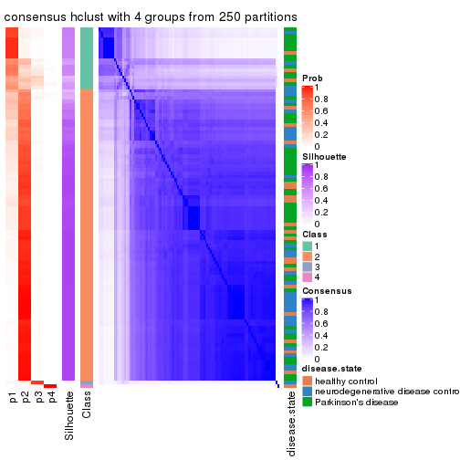
consensus_heatmap(res, k = 5)
consensus_heatmap(res, k = 6)

Heatmaps for the membership of samples in all partitions to see how consistent they are:
membership_heatmap(res, k = 2)
membership_heatmap(res, k = 3)
membership_heatmap(res, k = 4)
membership_heatmap(res, k = 5)
membership_heatmap(res, k = 6)
As soon as we have had the classes for columns, we can look for signatures which are significantly different between classes which can be candidate marks for certain classes. Following are the heatmaps for signatures.
Signature heatmaps where rows are scaled:
get_signatures(res, k = 2)

get_signatures(res, k = 3)
get_signatures(res, k = 4)
get_signatures(res, k = 5)
get_signatures(res, k = 6)
Signature heatmaps where rows are not scaled:
get_signatures(res, k = 2, scale_rows = FALSE)

get_signatures(res, k = 3, scale_rows = FALSE)

get_signatures(res, k = 4, scale_rows = FALSE)
get_signatures(res, k = 5, scale_rows = FALSE)
get_signatures(res, k = 6, scale_rows = FALSE)
Compare the overlap of signatures from different k:
compare_signatures(res)
get_signature() returns a data frame invisibly. TO get the list of signatures, the function
call should be assigned to a variable explicitly. In following code, if plot argument is set
to FALSE, no heatmap is plotted while only the differential analysis is performed.
# code only for demonstration
tb = get_signature(res, k = ..., plot = FALSE)
An example of the output of tb is:
#> which_row fdr mean_1 mean_2 scaled_mean_1 scaled_mean_2 km
#> 1 38 0.042760348 8.373488 9.131774 -0.5533452 0.5164555 1
#> 2 40 0.018707592 7.106213 8.469186 -0.6173731 0.5762149 1
#> 3 55 0.019134737 10.221463 11.207825 -0.6159697 0.5749050 1
#> 4 59 0.006059896 5.921854 7.869574 -0.6899429 0.6439467 1
#> 5 60 0.018055526 8.928898 10.211722 -0.6204761 0.5791110 1
#> 6 98 0.009384629 15.714769 14.887706 0.6635654 -0.6193277 2
...
The columns in tb are:
which_row: row indices corresponding to the input matrix.fdr: FDR for the differential test. mean_x: The mean value in group x.scaled_mean_x: The mean value in group x after rows are scaled.km: Row groups if k-means clustering is applied to rows.UMAP plot which shows how samples are separated.
dimension_reduction(res, k = 2, method = "UMAP")
dimension_reduction(res, k = 3, method = "UMAP")
dimension_reduction(res, k = 4, method = "UMAP")
dimension_reduction(res, k = 5, method = "UMAP")
dimension_reduction(res, k = 6, method = "UMAP")
Following heatmap shows how subgroups are split when increasing k:
collect_classes(res)
Test correlation between subgroups and known annotations. If the known annotation is numeric, one-way ANOVA test is applied, and if the known annotation is discrete, chi-squared contingency table test is applied.
test_to_known_factors(res)
#> n disease.state(p) k
#> SD:hclust 104 NA 2
#> SD:hclust 93 0.175 3
#> SD:hclust 97 0.127 4
#> SD:hclust 91 0.174 5
#> SD:hclust 90 0.266 6
If matrix rows can be associated to genes, consider to use functional_enrichment(res,
...) to perform function enrichment for the signature genes. See this vignette for more detailed explanations.
The object with results only for a single top-value method and a single partition method can be extracted as:
res = res_list["SD", "kmeans"]
# you can also extract it by
# res = res_list["SD:kmeans"]
A summary of res and all the functions that can be applied to it:
res
#> A 'ConsensusPartition' object with k = 2, 3, 4, 5, 6.
#> On a matrix with 21168 rows and 105 columns.
#> Top rows (1000, 2000, 3000, 4000, 5000) are extracted by 'SD' method.
#> Subgroups are detected by 'kmeans' method.
#> Performed in total 1250 partitions by row resampling.
#> Best k for subgroups seems to be 2.
#>
#> Following methods can be applied to this 'ConsensusPartition' object:
#> [1] "cola_report" "collect_classes" "collect_plots"
#> [4] "collect_stats" "colnames" "compare_signatures"
#> [7] "consensus_heatmap" "dimension_reduction" "functional_enrichment"
#> [10] "get_anno_col" "get_anno" "get_classes"
#> [13] "get_consensus" "get_matrix" "get_membership"
#> [16] "get_param" "get_signatures" "get_stats"
#> [19] "is_best_k" "is_stable_k" "membership_heatmap"
#> [22] "ncol" "nrow" "plot_ecdf"
#> [25] "rownames" "select_partition_number" "show"
#> [28] "suggest_best_k" "test_to_known_factors"
collect_plots() function collects all the plots made from res for all k (number of partitions)
into one single page to provide an easy and fast comparison between different k.
collect_plots(res)
The plots are:
k and the heatmap of
predicted classes for each k.k.k.k.All the plots in panels can be made by individual functions and they are plotted later in this section.
select_partition_number() produces several plots showing different
statistics for choosing “optimized” k. There are following statistics:
k;k, the area increased is defined as \(A_k - A_{k-1}\).The detailed explanations of these statistics can be found in the cola vignette.
Generally speaking, lower PAC score, higher mean silhouette score or higher
concordance corresponds to better partition. Rand index and Jaccard index
measure how similar the current partition is compared to partition with k-1.
If they are too similar, we won't accept k is better than k-1.
select_partition_number(res)
The numeric values for all these statistics can be obtained by get_stats().
get_stats(res)
#> k 1-PAC mean_silhouette concordance area_increased Rand Jaccard
#> 2 2 0.778 0.899 0.933 0.4746 0.505 0.505
#> 3 3 0.776 0.875 0.926 0.2601 0.734 0.542
#> 4 4 0.486 0.499 0.703 0.1313 0.811 0.564
#> 5 5 0.510 0.516 0.727 0.0683 0.892 0.679
#> 6 6 0.578 0.463 0.669 0.0577 0.911 0.716
suggest_best_k() suggests the best \(k\) based on these statistics. The rules are as follows:
suggest_best_k(res)
#> [1] 2
Following shows the table of the partitions (You need to click the show/hide
code output link to see it). The membership matrix (columns with name p*)
is inferred by
clue::cl_consensus()
function with the SE method. Basically the value in the membership matrix
represents the probability to belong to a certain group. The finall class
label for an item is determined with the group with highest probability it
belongs to.
In get_classes() function, the entropy is calculated from the membership
matrix and the silhouette score is calculated from the consensus matrix.
cbind(get_classes(res, k = 2), get_membership(res, k = 2))
#> class entropy silhouette p1 p2
#> GSM153405 1 0.8207 0.733 0.744 0.256
#> GSM153406 2 0.2043 0.944 0.032 0.968
#> GSM153419 1 0.4562 0.868 0.904 0.096
#> GSM153423 2 0.0000 0.966 0.000 1.000
#> GSM153425 1 0.2423 0.880 0.960 0.040
#> GSM153427 2 0.0938 0.959 0.012 0.988
#> GSM153428 1 0.8443 0.739 0.728 0.272
#> GSM153429 2 0.1414 0.969 0.020 0.980
#> GSM153433 1 0.2603 0.902 0.956 0.044
#> GSM153444 2 0.0376 0.964 0.004 0.996
#> GSM153448 2 0.1633 0.967 0.024 0.976
#> GSM153451 2 0.0000 0.966 0.000 1.000
#> GSM153452 2 0.0000 0.966 0.000 1.000
#> GSM153477 2 0.1414 0.969 0.020 0.980
#> GSM153479 2 0.2043 0.963 0.032 0.968
#> GSM153484 2 0.1414 0.969 0.020 0.980
#> GSM153488 1 0.9635 0.500 0.612 0.388
#> GSM153496 1 0.2778 0.902 0.952 0.048
#> GSM153497 2 0.0672 0.968 0.008 0.992
#> GSM153500 1 0.2603 0.902 0.956 0.044
#> GSM153503 1 0.2603 0.902 0.956 0.044
#> GSM153508 1 0.3274 0.899 0.940 0.060
#> GSM153409 2 0.0672 0.962 0.008 0.992
#> GSM153426 2 0.0000 0.966 0.000 1.000
#> GSM153431 1 0.7376 0.801 0.792 0.208
#> GSM153438 2 0.0000 0.966 0.000 1.000
#> GSM153440 1 0.3584 0.878 0.932 0.068
#> GSM153447 1 0.1843 0.883 0.972 0.028
#> GSM153450 2 0.0000 0.966 0.000 1.000
#> GSM153456 2 0.0000 0.966 0.000 1.000
#> GSM153457 2 0.0000 0.966 0.000 1.000
#> GSM153458 2 0.0000 0.966 0.000 1.000
#> GSM153459 2 0.0000 0.966 0.000 1.000
#> GSM153460 2 0.0000 0.966 0.000 1.000
#> GSM153461 2 0.0938 0.959 0.012 0.988
#> GSM153463 1 0.0938 0.887 0.988 0.012
#> GSM153464 2 0.1414 0.969 0.020 0.980
#> GSM153466 2 0.3733 0.929 0.072 0.928
#> GSM153467 2 0.1414 0.969 0.020 0.980
#> GSM153468 2 0.2043 0.962 0.032 0.968
#> GSM153469 2 0.1414 0.969 0.020 0.980
#> GSM153470 2 0.1414 0.969 0.020 0.980
#> GSM153471 2 0.1414 0.969 0.020 0.980
#> GSM153472 1 0.3114 0.900 0.944 0.056
#> GSM153473 1 0.2603 0.902 0.956 0.044
#> GSM153474 1 0.2423 0.901 0.960 0.040
#> GSM153475 2 0.6247 0.823 0.156 0.844
#> GSM153476 2 0.1414 0.969 0.020 0.980
#> GSM153478 1 0.3431 0.899 0.936 0.064
#> GSM153480 2 0.1414 0.969 0.020 0.980
#> GSM153486 2 0.1414 0.969 0.020 0.980
#> GSM153487 1 0.7376 0.787 0.792 0.208
#> GSM153499 2 0.2423 0.955 0.040 0.960
#> GSM153504 1 0.2603 0.902 0.956 0.044
#> GSM153507 1 0.3114 0.900 0.944 0.056
#> GSM153404 2 0.2236 0.940 0.036 0.964
#> GSM153407 1 0.7950 0.752 0.760 0.240
#> GSM153408 2 0.3431 0.922 0.064 0.936
#> GSM153410 2 0.1843 0.947 0.028 0.972
#> GSM153411 1 0.2423 0.880 0.960 0.040
#> GSM153412 2 0.1843 0.947 0.028 0.972
#> GSM153413 1 0.9850 0.407 0.572 0.428
#> GSM153414 2 0.0000 0.966 0.000 1.000
#> GSM153415 2 0.2423 0.939 0.040 0.960
#> GSM153416 2 0.0000 0.966 0.000 1.000
#> GSM153417 1 0.2423 0.880 0.960 0.040
#> GSM153418 2 0.2236 0.940 0.036 0.964
#> GSM153420 1 0.2423 0.880 0.960 0.040
#> GSM153421 1 0.2423 0.880 0.960 0.040
#> GSM153422 1 0.2423 0.880 0.960 0.040
#> GSM153424 1 0.9170 0.657 0.668 0.332
#> GSM153430 1 0.2603 0.902 0.956 0.044
#> GSM153432 2 0.1414 0.969 0.020 0.980
#> GSM153434 1 0.8909 0.688 0.692 0.308
#> GSM153435 2 0.1414 0.969 0.020 0.980
#> GSM153436 1 0.9129 0.679 0.672 0.328
#> GSM153437 2 0.0672 0.968 0.008 0.992
#> GSM153439 2 0.1414 0.969 0.020 0.980
#> GSM153441 2 0.1414 0.968 0.020 0.980
#> GSM153442 2 0.7139 0.755 0.196 0.804
#> GSM153443 2 0.1414 0.969 0.020 0.980
#> GSM153445 2 0.1414 0.969 0.020 0.980
#> GSM153446 2 0.1184 0.969 0.016 0.984
#> GSM153449 1 0.4298 0.886 0.912 0.088
#> GSM153453 1 0.2948 0.901 0.948 0.052
#> GSM153454 1 0.2236 0.899 0.964 0.036
#> GSM153455 2 0.2423 0.957 0.040 0.960
#> GSM153462 2 0.1414 0.969 0.020 0.980
#> GSM153465 2 0.1414 0.969 0.020 0.980
#> GSM153481 2 0.1414 0.969 0.020 0.980
#> GSM153482 1 0.9608 0.508 0.616 0.384
#> GSM153483 2 0.1843 0.964 0.028 0.972
#> GSM153485 2 0.7299 0.733 0.204 0.796
#> GSM153489 1 0.9170 0.619 0.668 0.332
#> GSM153490 1 0.2043 0.898 0.968 0.032
#> GSM153491 1 0.2948 0.901 0.948 0.052
#> GSM153492 1 0.2603 0.902 0.956 0.044
#> GSM153493 1 0.2603 0.902 0.956 0.044
#> GSM153494 2 0.2043 0.962 0.032 0.968
#> GSM153495 1 0.2603 0.902 0.956 0.044
#> GSM153498 2 0.6712 0.790 0.176 0.824
#> GSM153501 1 0.2603 0.902 0.956 0.044
#> GSM153502 1 0.2603 0.902 0.956 0.044
#> GSM153505 1 0.2603 0.902 0.956 0.044
#> GSM153506 2 0.2423 0.955 0.040 0.960
cbind(get_classes(res, k = 3), get_membership(res, k = 3))
#> class entropy silhouette p1 p2 p3
#> GSM153405 3 0.3993 0.848 0.052 0.064 0.884
#> GSM153406 3 0.4887 0.771 0.000 0.228 0.772
#> GSM153419 3 0.1964 0.832 0.056 0.000 0.944
#> GSM153423 2 0.1163 0.934 0.000 0.972 0.028
#> GSM153425 3 0.2796 0.827 0.092 0.000 0.908
#> GSM153427 2 0.1289 0.934 0.000 0.968 0.032
#> GSM153428 2 0.5137 0.815 0.104 0.832 0.064
#> GSM153429 2 0.1482 0.932 0.012 0.968 0.020
#> GSM153433 1 0.0661 0.924 0.988 0.004 0.008
#> GSM153444 2 0.1163 0.934 0.000 0.972 0.028
#> GSM153448 2 0.1781 0.928 0.020 0.960 0.020
#> GSM153451 2 0.1163 0.934 0.000 0.972 0.028
#> GSM153452 2 0.1163 0.934 0.000 0.972 0.028
#> GSM153477 2 0.0592 0.938 0.000 0.988 0.012
#> GSM153479 2 0.2527 0.912 0.044 0.936 0.020
#> GSM153484 2 0.2176 0.921 0.032 0.948 0.020
#> GSM153488 1 0.3141 0.892 0.912 0.068 0.020
#> GSM153496 1 0.2050 0.919 0.952 0.028 0.020
#> GSM153497 2 0.0237 0.939 0.000 0.996 0.004
#> GSM153500 1 0.0237 0.924 0.996 0.000 0.004
#> GSM153503 1 0.0000 0.923 1.000 0.000 0.000
#> GSM153508 1 0.3112 0.904 0.916 0.028 0.056
#> GSM153409 2 0.1163 0.934 0.000 0.972 0.028
#> GSM153426 2 0.1163 0.934 0.000 0.972 0.028
#> GSM153431 2 0.7960 0.529 0.136 0.656 0.208
#> GSM153438 2 0.1163 0.934 0.000 0.972 0.028
#> GSM153440 3 0.7536 0.576 0.304 0.064 0.632
#> GSM153447 1 0.2878 0.844 0.904 0.000 0.096
#> GSM153450 2 0.1163 0.934 0.000 0.972 0.028
#> GSM153456 2 0.1163 0.934 0.000 0.972 0.028
#> GSM153457 2 0.1163 0.934 0.000 0.972 0.028
#> GSM153458 2 0.1163 0.934 0.000 0.972 0.028
#> GSM153459 2 0.1163 0.934 0.000 0.972 0.028
#> GSM153460 2 0.1163 0.934 0.000 0.972 0.028
#> GSM153461 2 0.1411 0.933 0.000 0.964 0.036
#> GSM153463 1 0.1289 0.903 0.968 0.000 0.032
#> GSM153464 2 0.0237 0.939 0.000 0.996 0.004
#> GSM153466 2 0.4349 0.823 0.128 0.852 0.020
#> GSM153467 2 0.0237 0.939 0.000 0.996 0.004
#> GSM153468 2 0.2743 0.905 0.052 0.928 0.020
#> GSM153469 2 0.0747 0.937 0.000 0.984 0.016
#> GSM153470 2 0.0892 0.936 0.000 0.980 0.020
#> GSM153471 2 0.0747 0.937 0.000 0.984 0.016
#> GSM153472 1 0.2297 0.915 0.944 0.036 0.020
#> GSM153473 1 0.0000 0.923 1.000 0.000 0.000
#> GSM153474 1 0.1031 0.917 0.976 0.000 0.024
#> GSM153475 2 0.5774 0.664 0.232 0.748 0.020
#> GSM153476 2 0.1781 0.929 0.020 0.960 0.020
#> GSM153478 1 0.1905 0.920 0.956 0.028 0.016
#> GSM153480 2 0.0237 0.939 0.000 0.996 0.004
#> GSM153486 2 0.0237 0.939 0.000 0.996 0.004
#> GSM153487 1 0.2947 0.897 0.920 0.060 0.020
#> GSM153499 1 0.5551 0.702 0.768 0.212 0.020
#> GSM153504 1 0.0000 0.923 1.000 0.000 0.000
#> GSM153507 1 0.2031 0.919 0.952 0.032 0.016
#> GSM153404 3 0.3941 0.836 0.000 0.156 0.844
#> GSM153407 3 0.5696 0.838 0.064 0.136 0.800
#> GSM153408 3 0.3116 0.848 0.000 0.108 0.892
#> GSM153410 3 0.5497 0.679 0.000 0.292 0.708
#> GSM153411 3 0.2878 0.826 0.096 0.000 0.904
#> GSM153412 3 0.5591 0.657 0.000 0.304 0.696
#> GSM153413 3 0.4591 0.847 0.032 0.120 0.848
#> GSM153414 2 0.1289 0.934 0.000 0.968 0.032
#> GSM153415 3 0.3879 0.838 0.000 0.152 0.848
#> GSM153416 2 0.1163 0.934 0.000 0.972 0.028
#> GSM153417 3 0.2878 0.826 0.096 0.000 0.904
#> GSM153418 3 0.3941 0.836 0.000 0.156 0.844
#> GSM153420 3 0.2878 0.826 0.096 0.000 0.904
#> GSM153421 3 0.2878 0.826 0.096 0.000 0.904
#> GSM153422 3 0.2878 0.826 0.096 0.000 0.904
#> GSM153424 2 0.4137 0.855 0.096 0.872 0.032
#> GSM153430 1 0.1015 0.924 0.980 0.012 0.008
#> GSM153432 2 0.0747 0.937 0.000 0.984 0.016
#> GSM153434 2 0.7181 0.036 0.468 0.508 0.024
#> GSM153435 2 0.0424 0.939 0.000 0.992 0.008
#> GSM153436 2 0.4731 0.823 0.128 0.840 0.032
#> GSM153437 2 0.0892 0.936 0.000 0.980 0.020
#> GSM153439 2 0.1129 0.934 0.004 0.976 0.020
#> GSM153441 2 0.1129 0.935 0.004 0.976 0.020
#> GSM153442 2 0.3502 0.875 0.084 0.896 0.020
#> GSM153443 2 0.0000 0.939 0.000 1.000 0.000
#> GSM153445 2 0.0424 0.939 0.000 0.992 0.008
#> GSM153446 2 0.0237 0.939 0.000 0.996 0.004
#> GSM153449 1 0.2297 0.916 0.944 0.036 0.020
#> GSM153453 1 0.2050 0.919 0.952 0.028 0.020
#> GSM153454 1 0.0000 0.923 1.000 0.000 0.000
#> GSM153455 2 0.2297 0.919 0.036 0.944 0.020
#> GSM153462 2 0.0424 0.939 0.000 0.992 0.008
#> GSM153465 2 0.0747 0.937 0.000 0.984 0.016
#> GSM153481 2 0.0424 0.939 0.000 0.992 0.008
#> GSM153482 1 0.3415 0.877 0.900 0.080 0.020
#> GSM153483 2 0.1636 0.930 0.016 0.964 0.020
#> GSM153485 1 0.6950 0.336 0.572 0.408 0.020
#> GSM153489 1 0.2947 0.897 0.920 0.060 0.020
#> GSM153490 1 0.0000 0.923 1.000 0.000 0.000
#> GSM153491 1 0.2050 0.919 0.952 0.028 0.020
#> GSM153492 1 0.0000 0.923 1.000 0.000 0.000
#> GSM153493 1 0.0000 0.923 1.000 0.000 0.000
#> GSM153494 2 0.2527 0.911 0.044 0.936 0.020
#> GSM153495 1 0.0000 0.923 1.000 0.000 0.000
#> GSM153498 1 0.5817 0.662 0.744 0.236 0.020
#> GSM153501 1 0.0000 0.923 1.000 0.000 0.000
#> GSM153502 1 0.0237 0.924 0.996 0.000 0.004
#> GSM153505 1 0.0000 0.923 1.000 0.000 0.000
#> GSM153506 2 0.1337 0.933 0.016 0.972 0.012
cbind(get_classes(res, k = 4), get_membership(res, k = 4))
#> class entropy silhouette p1 p2 p3 p4
#> GSM153405 3 0.3877 0.8078 0.044 0.096 0.852 0.008
#> GSM153406 3 0.5257 0.7592 0.060 0.212 0.728 0.000
#> GSM153419 3 0.2546 0.8000 0.028 0.060 0.912 0.000
#> GSM153423 2 0.0000 0.7459 0.000 1.000 0.000 0.000
#> GSM153425 3 0.3257 0.7592 0.000 0.004 0.844 0.152
#> GSM153427 2 0.2892 0.6888 0.036 0.896 0.068 0.000
#> GSM153428 2 0.6842 0.3348 0.288 0.612 0.072 0.028
#> GSM153429 1 0.5512 -0.2615 0.496 0.488 0.016 0.000
#> GSM153433 1 0.4134 -0.1296 0.740 0.000 0.000 0.260
#> GSM153444 2 0.0376 0.7442 0.004 0.992 0.004 0.000
#> GSM153448 2 0.4999 0.2391 0.492 0.508 0.000 0.000
#> GSM153451 2 0.0188 0.7465 0.004 0.996 0.000 0.000
#> GSM153452 2 0.2335 0.7144 0.060 0.920 0.020 0.000
#> GSM153477 2 0.4250 0.6582 0.276 0.724 0.000 0.000
#> GSM153479 1 0.4972 -0.1427 0.544 0.456 0.000 0.000
#> GSM153484 1 0.4985 -0.1737 0.532 0.468 0.000 0.000
#> GSM153488 1 0.2611 0.2915 0.896 0.008 0.000 0.096
#> GSM153496 1 0.4164 -0.1922 0.736 0.000 0.000 0.264
#> GSM153497 2 0.2011 0.7435 0.080 0.920 0.000 0.000
#> GSM153500 4 0.4661 0.8977 0.348 0.000 0.000 0.652
#> GSM153503 4 0.4713 0.9033 0.360 0.000 0.000 0.640
#> GSM153508 4 0.4418 0.6335 0.184 0.000 0.032 0.784
#> GSM153409 2 0.0895 0.7354 0.004 0.976 0.020 0.000
#> GSM153426 2 0.0707 0.7357 0.000 0.980 0.020 0.000
#> GSM153431 2 0.8109 0.1728 0.292 0.504 0.168 0.036
#> GSM153438 2 0.0000 0.7459 0.000 1.000 0.000 0.000
#> GSM153440 3 0.8516 0.2849 0.376 0.192 0.392 0.040
#> GSM153447 1 0.6801 -0.6723 0.456 0.000 0.096 0.448
#> GSM153450 2 0.0336 0.7452 0.008 0.992 0.000 0.000
#> GSM153456 2 0.0000 0.7459 0.000 1.000 0.000 0.000
#> GSM153457 2 0.0188 0.7465 0.004 0.996 0.000 0.000
#> GSM153458 2 0.0000 0.7459 0.000 1.000 0.000 0.000
#> GSM153459 2 0.0000 0.7459 0.000 1.000 0.000 0.000
#> GSM153460 2 0.0000 0.7459 0.000 1.000 0.000 0.000
#> GSM153461 2 0.4171 0.6587 0.096 0.840 0.052 0.012
#> GSM153463 4 0.5611 0.8579 0.412 0.000 0.024 0.564
#> GSM153464 2 0.3356 0.7235 0.176 0.824 0.000 0.000
#> GSM153466 1 0.5150 0.0305 0.596 0.396 0.000 0.008
#> GSM153467 2 0.4040 0.6872 0.248 0.752 0.000 0.000
#> GSM153468 1 0.4925 -0.0525 0.572 0.428 0.000 0.000
#> GSM153469 2 0.4925 0.4090 0.428 0.572 0.000 0.000
#> GSM153470 2 0.4679 0.5658 0.352 0.648 0.000 0.000
#> GSM153471 2 0.4193 0.6658 0.268 0.732 0.000 0.000
#> GSM153472 1 0.3801 -0.0441 0.780 0.000 0.000 0.220
#> GSM153473 1 0.4994 -0.7598 0.520 0.000 0.000 0.480
#> GSM153474 4 0.4401 0.8524 0.272 0.000 0.004 0.724
#> GSM153475 1 0.4304 0.2821 0.716 0.284 0.000 0.000
#> GSM153476 1 0.6277 0.0214 0.572 0.360 0.068 0.000
#> GSM153478 1 0.3450 0.1789 0.836 0.000 0.008 0.156
#> GSM153480 2 0.3444 0.7208 0.184 0.816 0.000 0.000
#> GSM153486 2 0.3873 0.7030 0.228 0.772 0.000 0.000
#> GSM153487 1 0.2011 0.2959 0.920 0.000 0.000 0.080
#> GSM153499 1 0.3333 0.4234 0.872 0.088 0.000 0.040
#> GSM153504 4 0.4877 0.8929 0.408 0.000 0.000 0.592
#> GSM153507 1 0.3688 0.0236 0.792 0.000 0.000 0.208
#> GSM153404 3 0.4206 0.8131 0.048 0.136 0.816 0.000
#> GSM153407 3 0.7861 0.5661 0.152 0.284 0.532 0.032
#> GSM153408 3 0.4015 0.8152 0.052 0.116 0.832 0.000
#> GSM153410 3 0.5648 0.7113 0.064 0.252 0.684 0.000
#> GSM153411 3 0.3123 0.7573 0.000 0.000 0.844 0.156
#> GSM153412 3 0.5687 0.7135 0.068 0.248 0.684 0.000
#> GSM153413 3 0.4541 0.8074 0.084 0.100 0.812 0.004
#> GSM153414 2 0.4360 0.6360 0.140 0.816 0.032 0.012
#> GSM153415 3 0.4336 0.8123 0.060 0.128 0.812 0.000
#> GSM153416 2 0.0188 0.7456 0.004 0.996 0.000 0.000
#> GSM153417 3 0.3123 0.7573 0.000 0.000 0.844 0.156
#> GSM153418 3 0.4234 0.8126 0.052 0.132 0.816 0.000
#> GSM153420 3 0.3123 0.7573 0.000 0.000 0.844 0.156
#> GSM153421 3 0.3123 0.7573 0.000 0.000 0.844 0.156
#> GSM153422 3 0.3123 0.7573 0.000 0.000 0.844 0.156
#> GSM153424 2 0.6641 0.3497 0.296 0.620 0.052 0.032
#> GSM153430 1 0.4511 -0.1551 0.724 0.000 0.008 0.268
#> GSM153432 2 0.4866 0.4693 0.404 0.596 0.000 0.000
#> GSM153434 1 0.4837 0.4601 0.788 0.160 0.028 0.024
#> GSM153435 2 0.4040 0.6866 0.248 0.752 0.000 0.000
#> GSM153436 2 0.5838 0.1504 0.412 0.560 0.016 0.012
#> GSM153437 2 0.1118 0.7486 0.036 0.964 0.000 0.000
#> GSM153439 1 0.5167 -0.2359 0.508 0.488 0.004 0.000
#> GSM153441 1 0.5165 -0.2180 0.512 0.484 0.000 0.004
#> GSM153442 1 0.5378 -0.1001 0.540 0.448 0.000 0.012
#> GSM153443 2 0.3486 0.7188 0.188 0.812 0.000 0.000
#> GSM153445 2 0.3837 0.7017 0.224 0.776 0.000 0.000
#> GSM153446 2 0.3172 0.7287 0.160 0.840 0.000 0.000
#> GSM153449 1 0.2999 0.2049 0.864 0.004 0.000 0.132
#> GSM153453 1 0.3356 0.0775 0.824 0.000 0.000 0.176
#> GSM153454 4 0.4761 0.9015 0.372 0.000 0.000 0.628
#> GSM153455 1 0.4905 0.1112 0.632 0.364 0.004 0.000
#> GSM153462 2 0.3975 0.6946 0.240 0.760 0.000 0.000
#> GSM153465 2 0.4193 0.6688 0.268 0.732 0.000 0.000
#> GSM153481 2 0.3907 0.6965 0.232 0.768 0.000 0.000
#> GSM153482 1 0.1576 0.3326 0.948 0.004 0.000 0.048
#> GSM153483 2 0.4994 0.2791 0.480 0.520 0.000 0.000
#> GSM153485 1 0.2773 0.4589 0.880 0.116 0.000 0.004
#> GSM153489 1 0.2831 0.2347 0.876 0.004 0.000 0.120
#> GSM153490 4 0.4907 0.8881 0.420 0.000 0.000 0.580
#> GSM153491 1 0.3801 -0.0478 0.780 0.000 0.000 0.220
#> GSM153492 4 0.4977 0.8508 0.460 0.000 0.000 0.540
#> GSM153493 4 0.4761 0.9021 0.372 0.000 0.000 0.628
#> GSM153494 1 0.5281 -0.1667 0.528 0.464 0.000 0.008
#> GSM153495 4 0.4933 0.8767 0.432 0.000 0.000 0.568
#> GSM153498 1 0.2485 0.4132 0.916 0.064 0.004 0.016
#> GSM153501 4 0.4477 0.8852 0.312 0.000 0.000 0.688
#> GSM153502 4 0.4941 0.8778 0.436 0.000 0.000 0.564
#> GSM153505 4 0.4543 0.8907 0.324 0.000 0.000 0.676
#> GSM153506 2 0.4382 0.6403 0.296 0.704 0.000 0.000
cbind(get_classes(res, k = 5), get_membership(res, k = 5))
#> class entropy silhouette p1 p2 p3 p4 p5
#> GSM153405 3 0.6222 0.7612 0.044 0.068 0.576 0.000 0.312
#> GSM153406 3 0.7173 0.7253 0.068 0.128 0.500 0.000 0.304
#> GSM153419 3 0.5268 0.7499 0.028 0.028 0.640 0.000 0.304
#> GSM153423 2 0.0000 0.7071 0.000 1.000 0.000 0.000 0.000
#> GSM153425 3 0.0000 0.6516 0.000 0.000 1.000 0.000 0.000
#> GSM153427 2 0.3012 0.6357 0.036 0.860 0.000 0.000 0.104
#> GSM153428 2 0.7832 0.0451 0.308 0.428 0.032 0.028 0.204
#> GSM153429 1 0.4520 0.4419 0.684 0.284 0.000 0.000 0.032
#> GSM153433 1 0.5851 0.1201 0.588 0.000 0.000 0.272 0.140
#> GSM153444 2 0.0865 0.6972 0.004 0.972 0.000 0.000 0.024
#> GSM153448 1 0.4252 0.4688 0.700 0.280 0.000 0.000 0.020
#> GSM153451 2 0.0000 0.7071 0.000 1.000 0.000 0.000 0.000
#> GSM153452 2 0.2871 0.6366 0.088 0.872 0.000 0.000 0.040
#> GSM153477 2 0.4649 0.3545 0.404 0.580 0.000 0.000 0.016
#> GSM153479 1 0.4132 0.4909 0.720 0.260 0.000 0.000 0.020
#> GSM153484 1 0.3988 0.4976 0.732 0.252 0.000 0.000 0.016
#> GSM153488 1 0.3909 0.4694 0.800 0.004 0.000 0.148 0.048
#> GSM153496 1 0.5382 -0.0283 0.580 0.000 0.000 0.352 0.068
#> GSM153497 2 0.1628 0.6967 0.056 0.936 0.000 0.000 0.008
#> GSM153500 4 0.4909 0.6645 0.164 0.000 0.000 0.716 0.120
#> GSM153503 4 0.4179 0.7087 0.152 0.000 0.000 0.776 0.072
#> GSM153508 5 0.5046 0.0000 0.032 0.000 0.000 0.468 0.500
#> GSM153409 2 0.1701 0.6785 0.016 0.936 0.000 0.000 0.048
#> GSM153426 2 0.1628 0.6773 0.008 0.936 0.000 0.000 0.056
#> GSM153431 2 0.8671 -0.0531 0.316 0.356 0.080 0.044 0.204
#> GSM153438 2 0.0000 0.7071 0.000 1.000 0.000 0.000 0.000
#> GSM153440 1 0.8956 -0.0360 0.352 0.180 0.204 0.028 0.236
#> GSM153447 4 0.7234 0.3543 0.236 0.000 0.056 0.512 0.196
#> GSM153450 2 0.0451 0.7035 0.008 0.988 0.000 0.000 0.004
#> GSM153456 2 0.0000 0.7071 0.000 1.000 0.000 0.000 0.000
#> GSM153457 2 0.0000 0.7071 0.000 1.000 0.000 0.000 0.000
#> GSM153458 2 0.0000 0.7071 0.000 1.000 0.000 0.000 0.000
#> GSM153459 2 0.0162 0.7064 0.000 0.996 0.000 0.000 0.004
#> GSM153460 2 0.0000 0.7071 0.000 1.000 0.000 0.000 0.000
#> GSM153461 2 0.5487 0.4865 0.108 0.684 0.000 0.016 0.192
#> GSM153463 4 0.6216 0.5673 0.196 0.000 0.036 0.632 0.136
#> GSM153464 2 0.3562 0.6308 0.196 0.788 0.000 0.000 0.016
#> GSM153466 1 0.4204 0.5414 0.752 0.216 0.000 0.020 0.012
#> GSM153467 2 0.4384 0.4997 0.324 0.660 0.000 0.000 0.016
#> GSM153468 1 0.3671 0.5233 0.756 0.236 0.000 0.000 0.008
#> GSM153469 1 0.4588 0.2515 0.604 0.380 0.000 0.000 0.016
#> GSM153470 1 0.4731 -0.0212 0.528 0.456 0.000 0.000 0.016
#> GSM153471 2 0.4649 0.3558 0.404 0.580 0.000 0.000 0.016
#> GSM153472 1 0.5124 0.1739 0.644 0.000 0.000 0.288 0.068
#> GSM153473 4 0.5487 0.5863 0.280 0.000 0.000 0.620 0.100
#> GSM153474 4 0.4334 0.4068 0.080 0.000 0.000 0.764 0.156
#> GSM153475 1 0.3277 0.5868 0.832 0.148 0.000 0.012 0.008
#> GSM153476 1 0.4686 0.5341 0.736 0.160 0.000 0.000 0.104
#> GSM153478 1 0.5560 0.2957 0.660 0.004 0.000 0.180 0.156
#> GSM153480 2 0.3527 0.6338 0.192 0.792 0.000 0.000 0.016
#> GSM153486 2 0.4014 0.5874 0.256 0.728 0.000 0.000 0.016
#> GSM153487 1 0.3780 0.4798 0.808 0.000 0.000 0.132 0.060
#> GSM153499 1 0.2483 0.5956 0.908 0.048 0.000 0.028 0.016
#> GSM153504 4 0.4204 0.7294 0.196 0.000 0.000 0.756 0.048
#> GSM153507 1 0.4161 0.4159 0.752 0.000 0.000 0.208 0.040
#> GSM153404 3 0.6546 0.7680 0.052 0.088 0.560 0.000 0.300
#> GSM153407 2 0.8959 -0.1526 0.216 0.312 0.252 0.020 0.200
#> GSM153408 3 0.6460 0.7709 0.056 0.076 0.568 0.000 0.300
#> GSM153410 3 0.7319 0.7089 0.072 0.140 0.484 0.000 0.304
#> GSM153411 3 0.0000 0.6516 0.000 0.000 1.000 0.000 0.000
#> GSM153412 3 0.7349 0.7028 0.072 0.144 0.480 0.000 0.304
#> GSM153413 3 0.6445 0.7652 0.068 0.060 0.564 0.000 0.308
#> GSM153414 2 0.6006 0.3550 0.216 0.612 0.000 0.008 0.164
#> GSM153415 3 0.6532 0.7683 0.060 0.076 0.560 0.000 0.304
#> GSM153416 2 0.0162 0.7064 0.000 0.996 0.000 0.000 0.004
#> GSM153417 3 0.0000 0.6516 0.000 0.000 1.000 0.000 0.000
#> GSM153418 3 0.6566 0.7691 0.060 0.080 0.560 0.000 0.300
#> GSM153420 3 0.0000 0.6516 0.000 0.000 1.000 0.000 0.000
#> GSM153421 3 0.0000 0.6516 0.000 0.000 1.000 0.000 0.000
#> GSM153422 3 0.0000 0.6516 0.000 0.000 1.000 0.000 0.000
#> GSM153424 2 0.7648 0.0255 0.328 0.432 0.032 0.020 0.188
#> GSM153430 1 0.6022 0.0180 0.564 0.000 0.000 0.280 0.156
#> GSM153432 1 0.4630 0.1885 0.588 0.396 0.000 0.000 0.016
#> GSM153434 1 0.5878 0.5200 0.684 0.088 0.000 0.064 0.164
#> GSM153435 2 0.4384 0.5061 0.324 0.660 0.000 0.000 0.016
#> GSM153436 1 0.6612 0.1700 0.452 0.408 0.000 0.024 0.116
#> GSM153437 2 0.2172 0.6893 0.076 0.908 0.000 0.000 0.016
#> GSM153439 1 0.4063 0.4645 0.708 0.280 0.000 0.000 0.012
#> GSM153441 1 0.4734 0.4246 0.652 0.312 0.000 0.000 0.036
#> GSM153442 1 0.5407 0.4820 0.656 0.264 0.000 0.016 0.064
#> GSM153443 2 0.3878 0.6005 0.236 0.748 0.000 0.000 0.016
#> GSM153445 2 0.4090 0.5726 0.268 0.716 0.000 0.000 0.016
#> GSM153446 2 0.3264 0.6511 0.164 0.820 0.000 0.000 0.016
#> GSM153449 1 0.4059 0.4288 0.776 0.000 0.000 0.172 0.052
#> GSM153453 1 0.4497 0.3464 0.732 0.000 0.000 0.208 0.060
#> GSM153454 4 0.3723 0.7277 0.152 0.000 0.000 0.804 0.044
#> GSM153455 1 0.3724 0.5599 0.776 0.204 0.000 0.000 0.020
#> GSM153462 2 0.4309 0.5289 0.308 0.676 0.000 0.000 0.016
#> GSM153465 2 0.4640 0.3344 0.400 0.584 0.000 0.000 0.016
#> GSM153481 2 0.4206 0.5525 0.288 0.696 0.000 0.000 0.016
#> GSM153482 1 0.3442 0.4987 0.836 0.000 0.000 0.104 0.060
#> GSM153483 1 0.4462 0.4164 0.672 0.308 0.000 0.004 0.016
#> GSM153485 1 0.2800 0.6059 0.888 0.072 0.000 0.016 0.024
#> GSM153489 1 0.4418 0.4301 0.756 0.004 0.000 0.180 0.060
#> GSM153490 4 0.3876 0.7308 0.192 0.000 0.000 0.776 0.032
#> GSM153491 1 0.5159 0.1826 0.644 0.000 0.000 0.284 0.072
#> GSM153492 4 0.4649 0.7028 0.220 0.000 0.000 0.716 0.064
#> GSM153493 4 0.4864 0.6701 0.164 0.000 0.000 0.720 0.116
#> GSM153494 1 0.4394 0.4962 0.716 0.256 0.000 0.012 0.016
#> GSM153495 4 0.4065 0.7253 0.180 0.000 0.000 0.772 0.048
#> GSM153498 1 0.3377 0.5597 0.864 0.036 0.000 0.060 0.040
#> GSM153501 4 0.4591 0.6196 0.132 0.000 0.000 0.748 0.120
#> GSM153502 4 0.4010 0.7235 0.208 0.000 0.000 0.760 0.032
#> GSM153505 4 0.4334 0.6735 0.140 0.000 0.000 0.768 0.092
#> GSM153506 2 0.4702 0.2862 0.432 0.552 0.000 0.000 0.016
cbind(get_classes(res, k = 6), get_membership(res, k = 6))
#> class entropy silhouette p1 p2 p3 p4 p5 p6
#> GSM153405 3 0.4635 0.52064 0.008 0.024 0.492 0.000 0.476 0.000
#> GSM153406 3 0.5883 0.58755 0.036 0.088 0.472 0.000 0.404 0.000
#> GSM153419 5 0.4732 -0.62217 0.020 0.016 0.476 0.000 0.488 0.000
#> GSM153423 2 0.0260 0.65486 0.008 0.992 0.000 0.000 0.000 0.000
#> GSM153425 5 0.0000 0.74423 0.000 0.000 0.000 0.000 1.000 0.000
#> GSM153427 2 0.3150 0.56073 0.036 0.840 0.112 0.000 0.000 0.012
#> GSM153428 2 0.8065 0.07693 0.196 0.380 0.292 0.020 0.044 0.068
#> GSM153429 1 0.2652 0.65157 0.868 0.104 0.020 0.000 0.000 0.008
#> GSM153433 4 0.7291 0.03813 0.336 0.000 0.220 0.336 0.000 0.108
#> GSM153444 2 0.0748 0.64543 0.004 0.976 0.016 0.000 0.000 0.004
#> GSM153448 1 0.2742 0.64860 0.852 0.128 0.008 0.000 0.000 0.012
#> GSM153451 2 0.0260 0.65486 0.008 0.992 0.000 0.000 0.000 0.000
#> GSM153452 2 0.1492 0.63005 0.036 0.940 0.024 0.000 0.000 0.000
#> GSM153477 1 0.4284 0.11726 0.588 0.392 0.016 0.000 0.000 0.004
#> GSM153479 1 0.2264 0.65817 0.888 0.096 0.012 0.000 0.000 0.004
#> GSM153484 1 0.2110 0.66057 0.900 0.084 0.012 0.000 0.000 0.004
#> GSM153488 1 0.5075 0.52470 0.672 0.004 0.012 0.200 0.000 0.112
#> GSM153496 1 0.6107 0.13110 0.444 0.000 0.016 0.372 0.000 0.168
#> GSM153497 2 0.2306 0.63212 0.092 0.888 0.016 0.000 0.000 0.004
#> GSM153500 4 0.3725 0.49707 0.008 0.000 0.000 0.676 0.000 0.316
#> GSM153503 4 0.2957 0.61342 0.016 0.000 0.008 0.836 0.000 0.140
#> GSM153508 6 0.4994 0.00000 0.004 0.000 0.228 0.120 0.000 0.648
#> GSM153409 2 0.1226 0.62644 0.004 0.952 0.040 0.000 0.000 0.004
#> GSM153426 2 0.1296 0.62518 0.004 0.948 0.044 0.000 0.000 0.004
#> GSM153431 2 0.8719 -0.00941 0.196 0.316 0.300 0.076 0.048 0.064
#> GSM153438 2 0.0260 0.65486 0.008 0.992 0.000 0.000 0.000 0.000
#> GSM153440 3 0.9133 -0.12609 0.204 0.232 0.308 0.052 0.132 0.072
#> GSM153447 4 0.6681 0.29855 0.032 0.012 0.280 0.548 0.048 0.080
#> GSM153450 2 0.0405 0.65259 0.008 0.988 0.004 0.000 0.000 0.000
#> GSM153456 2 0.0260 0.65486 0.008 0.992 0.000 0.000 0.000 0.000
#> GSM153457 2 0.0260 0.65486 0.008 0.992 0.000 0.000 0.000 0.000
#> GSM153458 2 0.0146 0.65328 0.004 0.996 0.000 0.000 0.000 0.000
#> GSM153459 2 0.0260 0.65486 0.008 0.992 0.000 0.000 0.000 0.000
#> GSM153460 2 0.0260 0.65486 0.008 0.992 0.000 0.000 0.000 0.000
#> GSM153461 2 0.5647 0.30392 0.064 0.584 0.296 0.000 0.000 0.056
#> GSM153463 4 0.5706 0.40215 0.028 0.000 0.228 0.640 0.032 0.072
#> GSM153464 2 0.3990 0.47689 0.304 0.676 0.016 0.000 0.000 0.004
#> GSM153466 1 0.2713 0.67763 0.884 0.068 0.008 0.016 0.000 0.024
#> GSM153467 2 0.4466 0.17083 0.476 0.500 0.020 0.000 0.000 0.004
#> GSM153468 1 0.1900 0.67174 0.916 0.068 0.008 0.000 0.000 0.008
#> GSM153469 1 0.3086 0.59652 0.820 0.156 0.020 0.000 0.000 0.004
#> GSM153470 1 0.3648 0.46768 0.740 0.240 0.016 0.000 0.000 0.004
#> GSM153471 1 0.4293 0.10610 0.584 0.396 0.016 0.000 0.000 0.004
#> GSM153472 1 0.6172 0.23038 0.476 0.000 0.024 0.336 0.000 0.164
#> GSM153473 4 0.4828 0.52506 0.104 0.000 0.080 0.736 0.000 0.080
#> GSM153474 4 0.4190 0.39520 0.012 0.000 0.016 0.668 0.000 0.304
#> GSM153475 1 0.3018 0.67351 0.868 0.028 0.004 0.036 0.000 0.064
#> GSM153476 1 0.3633 0.66308 0.824 0.064 0.076 0.000 0.000 0.036
#> GSM153478 1 0.7331 0.20282 0.448 0.008 0.224 0.192 0.000 0.128
#> GSM153480 2 0.3990 0.47666 0.304 0.676 0.016 0.000 0.000 0.004
#> GSM153486 2 0.4406 0.39791 0.344 0.624 0.008 0.000 0.000 0.024
#> GSM153487 1 0.4833 0.54353 0.688 0.000 0.008 0.172 0.000 0.132
#> GSM153499 1 0.1686 0.68078 0.940 0.016 0.004 0.024 0.000 0.016
#> GSM153504 4 0.2789 0.62472 0.044 0.000 0.004 0.864 0.000 0.088
#> GSM153507 1 0.5106 0.49098 0.644 0.000 0.016 0.248 0.000 0.092
#> GSM153404 3 0.5128 0.58235 0.024 0.036 0.472 0.000 0.468 0.000
#> GSM153407 2 0.8375 0.00963 0.160 0.348 0.300 0.012 0.116 0.064
#> GSM153408 5 0.5073 -0.66825 0.028 0.028 0.472 0.000 0.472 0.000
#> GSM153410 3 0.5986 0.58227 0.044 0.088 0.472 0.000 0.396 0.000
#> GSM153411 5 0.0000 0.74423 0.000 0.000 0.000 0.000 1.000 0.000
#> GSM153412 3 0.5986 0.58227 0.044 0.088 0.472 0.000 0.396 0.000
#> GSM153413 3 0.5073 0.58137 0.028 0.028 0.476 0.000 0.468 0.000
#> GSM153414 2 0.6240 0.27079 0.140 0.544 0.260 0.000 0.000 0.056
#> GSM153415 3 0.5134 0.58734 0.028 0.032 0.472 0.000 0.468 0.000
#> GSM153416 2 0.0363 0.65499 0.012 0.988 0.000 0.000 0.000 0.000
#> GSM153417 5 0.0000 0.74423 0.000 0.000 0.000 0.000 1.000 0.000
#> GSM153418 3 0.5134 0.58734 0.028 0.032 0.472 0.000 0.468 0.000
#> GSM153420 5 0.0000 0.74423 0.000 0.000 0.000 0.000 1.000 0.000
#> GSM153421 5 0.0000 0.74423 0.000 0.000 0.000 0.000 1.000 0.000
#> GSM153422 5 0.0000 0.74423 0.000 0.000 0.000 0.000 1.000 0.000
#> GSM153424 2 0.7981 0.08053 0.216 0.380 0.284 0.020 0.036 0.064
#> GSM153430 1 0.7753 -0.09891 0.312 0.008 0.260 0.272 0.000 0.148
#> GSM153432 1 0.3245 0.55657 0.796 0.184 0.016 0.000 0.000 0.004
#> GSM153434 1 0.6820 0.39916 0.544 0.032 0.232 0.068 0.000 0.124
#> GSM153435 2 0.4465 0.19265 0.472 0.504 0.020 0.000 0.000 0.004
#> GSM153436 2 0.7659 -0.04382 0.332 0.356 0.180 0.024 0.000 0.108
#> GSM153437 2 0.2886 0.61274 0.144 0.836 0.016 0.000 0.000 0.004
#> GSM153439 1 0.2408 0.65154 0.876 0.108 0.012 0.000 0.000 0.004
#> GSM153441 1 0.3774 0.63674 0.804 0.116 0.056 0.000 0.000 0.024
#> GSM153442 1 0.4371 0.62849 0.780 0.084 0.088 0.008 0.000 0.040
#> GSM153443 2 0.4199 0.40470 0.360 0.620 0.016 0.000 0.000 0.004
#> GSM153445 2 0.4317 0.32418 0.408 0.572 0.016 0.000 0.000 0.004
#> GSM153446 2 0.3833 0.51055 0.272 0.708 0.016 0.000 0.000 0.004
#> GSM153449 1 0.5416 0.43202 0.604 0.004 0.012 0.276 0.000 0.104
#> GSM153453 1 0.5535 0.41301 0.584 0.000 0.008 0.248 0.000 0.160
#> GSM153454 4 0.2925 0.63028 0.008 0.000 0.052 0.860 0.000 0.080
#> GSM153455 1 0.2860 0.67971 0.876 0.040 0.008 0.012 0.000 0.064
#> GSM153462 2 0.4384 0.23043 0.460 0.520 0.016 0.000 0.000 0.004
#> GSM153465 1 0.4404 0.15439 0.576 0.400 0.016 0.000 0.000 0.008
#> GSM153481 2 0.4356 0.28030 0.432 0.548 0.016 0.000 0.000 0.004
#> GSM153482 1 0.4656 0.58426 0.732 0.004 0.016 0.128 0.000 0.120
#> GSM153483 1 0.2500 0.63593 0.868 0.116 0.012 0.000 0.000 0.004
#> GSM153485 1 0.3174 0.65796 0.848 0.012 0.004 0.040 0.000 0.096
#> GSM153489 1 0.5160 0.43884 0.604 0.000 0.004 0.284 0.000 0.108
#> GSM153490 4 0.2291 0.63286 0.044 0.000 0.012 0.904 0.000 0.040
#> GSM153491 1 0.6032 0.25696 0.496 0.000 0.016 0.316 0.000 0.172
#> GSM153492 4 0.3785 0.61073 0.040 0.000 0.036 0.804 0.000 0.120
#> GSM153493 4 0.3938 0.50273 0.000 0.000 0.016 0.660 0.000 0.324
#> GSM153494 1 0.2162 0.65951 0.896 0.088 0.012 0.004 0.000 0.000
#> GSM153495 4 0.2507 0.63186 0.016 0.000 0.056 0.892 0.000 0.036
#> GSM153498 1 0.4069 0.62044 0.772 0.008 0.004 0.072 0.000 0.144
#> GSM153501 4 0.3499 0.48421 0.004 0.000 0.004 0.728 0.000 0.264
#> GSM153502 4 0.2608 0.62452 0.048 0.000 0.000 0.872 0.000 0.080
#> GSM153505 4 0.3200 0.55530 0.000 0.000 0.016 0.788 0.000 0.196
#> GSM153506 1 0.4245 0.17409 0.604 0.376 0.016 0.000 0.000 0.004
Heatmaps for the consensus matrix. It visualizes the probability of two samples to be in a same group.
consensus_heatmap(res, k = 2)
consensus_heatmap(res, k = 3)
consensus_heatmap(res, k = 4)
consensus_heatmap(res, k = 5)
consensus_heatmap(res, k = 6)
Heatmaps for the membership of samples in all partitions to see how consistent they are:
membership_heatmap(res, k = 2)
membership_heatmap(res, k = 3)
membership_heatmap(res, k = 4)

membership_heatmap(res, k = 5)
membership_heatmap(res, k = 6)
As soon as we have had the classes for columns, we can look for signatures which are significantly different between classes which can be candidate marks for certain classes. Following are the heatmaps for signatures.
Signature heatmaps where rows are scaled:
get_signatures(res, k = 2)
get_signatures(res, k = 3)
get_signatures(res, k = 4)
get_signatures(res, k = 5)
get_signatures(res, k = 6)
Signature heatmaps where rows are not scaled:
get_signatures(res, k = 2, scale_rows = FALSE)
get_signatures(res, k = 3, scale_rows = FALSE)
get_signatures(res, k = 4, scale_rows = FALSE)
get_signatures(res, k = 5, scale_rows = FALSE)
get_signatures(res, k = 6, scale_rows = FALSE)
Compare the overlap of signatures from different k:
compare_signatures(res)
get_signature() returns a data frame invisibly. TO get the list of signatures, the function
call should be assigned to a variable explicitly. In following code, if plot argument is set
to FALSE, no heatmap is plotted while only the differential analysis is performed.
# code only for demonstration
tb = get_signature(res, k = ..., plot = FALSE)
An example of the output of tb is:
#> which_row fdr mean_1 mean_2 scaled_mean_1 scaled_mean_2 km
#> 1 38 0.042760348 8.373488 9.131774 -0.5533452 0.5164555 1
#> 2 40 0.018707592 7.106213 8.469186 -0.6173731 0.5762149 1
#> 3 55 0.019134737 10.221463 11.207825 -0.6159697 0.5749050 1
#> 4 59 0.006059896 5.921854 7.869574 -0.6899429 0.6439467 1
#> 5 60 0.018055526 8.928898 10.211722 -0.6204761 0.5791110 1
#> 6 98 0.009384629 15.714769 14.887706 0.6635654 -0.6193277 2
...
The columns in tb are:
which_row: row indices corresponding to the input matrix.fdr: FDR for the differential test. mean_x: The mean value in group x.scaled_mean_x: The mean value in group x after rows are scaled.km: Row groups if k-means clustering is applied to rows.UMAP plot which shows how samples are separated.
dimension_reduction(res, k = 2, method = "UMAP")

dimension_reduction(res, k = 3, method = "UMAP")
dimension_reduction(res, k = 4, method = "UMAP")
dimension_reduction(res, k = 5, method = "UMAP")
dimension_reduction(res, k = 6, method = "UMAP")
Following heatmap shows how subgroups are split when increasing k:
collect_classes(res)
Test correlation between subgroups and known annotations. If the known annotation is numeric, one-way ANOVA test is applied, and if the known annotation is discrete, chi-squared contingency table test is applied.
test_to_known_factors(res)
#> n disease.state(p) k
#> SD:kmeans 103 0.46899 2
#> SD:kmeans 103 0.06320 3
#> SD:kmeans 65 0.00828 4
#> SD:kmeans 64 0.01663 5
#> SD:kmeans 64 0.03676 6
If matrix rows can be associated to genes, consider to use functional_enrichment(res,
...) to perform function enrichment for the signature genes. See this vignette for more detailed explanations.
The object with results only for a single top-value method and a single partition method can be extracted as:
res = res_list["SD", "skmeans"]
# you can also extract it by
# res = res_list["SD:skmeans"]
A summary of res and all the functions that can be applied to it:
res
#> A 'ConsensusPartition' object with k = 2, 3, 4, 5, 6.
#> On a matrix with 21168 rows and 105 columns.
#> Top rows (1000, 2000, 3000, 4000, 5000) are extracted by 'SD' method.
#> Subgroups are detected by 'skmeans' method.
#> Performed in total 1250 partitions by row resampling.
#> Best k for subgroups seems to be 2.
#>
#> Following methods can be applied to this 'ConsensusPartition' object:
#> [1] "cola_report" "collect_classes" "collect_plots"
#> [4] "collect_stats" "colnames" "compare_signatures"
#> [7] "consensus_heatmap" "dimension_reduction" "functional_enrichment"
#> [10] "get_anno_col" "get_anno" "get_classes"
#> [13] "get_consensus" "get_matrix" "get_membership"
#> [16] "get_param" "get_signatures" "get_stats"
#> [19] "is_best_k" "is_stable_k" "membership_heatmap"
#> [22] "ncol" "nrow" "plot_ecdf"
#> [25] "rownames" "select_partition_number" "show"
#> [28] "suggest_best_k" "test_to_known_factors"
collect_plots() function collects all the plots made from res for all k (number of partitions)
into one single page to provide an easy and fast comparison between different k.
collect_plots(res)
The plots are:
k and the heatmap of
predicted classes for each k.k.k.k.All the plots in panels can be made by individual functions and they are plotted later in this section.
select_partition_number() produces several plots showing different
statistics for choosing “optimized” k. There are following statistics:
k;k, the area increased is defined as \(A_k - A_{k-1}\).The detailed explanations of these statistics can be found in the cola vignette.
Generally speaking, lower PAC score, higher mean silhouette score or higher
concordance corresponds to better partition. Rand index and Jaccard index
measure how similar the current partition is compared to partition with k-1.
If they are too similar, we won't accept k is better than k-1.
select_partition_number(res)
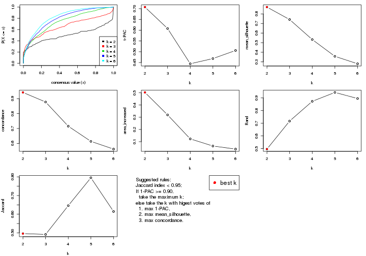
The numeric values for all these statistics can be obtained by get_stats().
get_stats(res)
#> k 1-PAC mean_silhouette concordance area_increased Rand Jaccard
#> 2 2 0.707 0.871 0.942 0.5031 0.496 0.496
#> 3 3 0.608 0.741 0.878 0.3192 0.717 0.492
#> 4 4 0.444 0.533 0.715 0.1230 0.873 0.646
#> 5 5 0.468 0.358 0.614 0.0647 0.943 0.795
#> 6 6 0.506 0.280 0.562 0.0396 0.895 0.615
suggest_best_k() suggests the best \(k\) based on these statistics. The rules are as follows:
suggest_best_k(res)
#> [1] 2
Following shows the table of the partitions (You need to click the show/hide
code output link to see it). The membership matrix (columns with name p*)
is inferred by
clue::cl_consensus()
function with the SE method. Basically the value in the membership matrix
represents the probability to belong to a certain group. The finall class
label for an item is determined with the group with highest probability it
belongs to.
In get_classes() function, the entropy is calculated from the membership
matrix and the silhouette score is calculated from the consensus matrix.
cbind(get_classes(res, k = 2), get_membership(res, k = 2))
#> class entropy silhouette p1 p2
#> GSM153405 1 0.1843 0.918 0.972 0.028
#> GSM153406 2 0.0000 0.943 0.000 1.000
#> GSM153419 1 0.0000 0.929 1.000 0.000
#> GSM153423 2 0.0000 0.943 0.000 1.000
#> GSM153425 1 0.0000 0.929 1.000 0.000
#> GSM153427 2 0.0000 0.943 0.000 1.000
#> GSM153428 1 0.2948 0.904 0.948 0.052
#> GSM153429 2 0.2236 0.923 0.036 0.964
#> GSM153433 1 0.0000 0.929 1.000 0.000
#> GSM153444 2 0.0000 0.943 0.000 1.000
#> GSM153448 2 0.5408 0.851 0.124 0.876
#> GSM153451 2 0.0000 0.943 0.000 1.000
#> GSM153452 2 0.4562 0.879 0.096 0.904
#> GSM153477 2 0.0000 0.943 0.000 1.000
#> GSM153479 2 0.6973 0.778 0.188 0.812
#> GSM153484 2 0.4022 0.892 0.080 0.920
#> GSM153488 1 0.6148 0.812 0.848 0.152
#> GSM153496 1 0.0000 0.929 1.000 0.000
#> GSM153497 2 0.0000 0.943 0.000 1.000
#> GSM153500 1 0.0000 0.929 1.000 0.000
#> GSM153503 1 0.0000 0.929 1.000 0.000
#> GSM153508 1 0.3114 0.901 0.944 0.056
#> GSM153409 2 0.0000 0.943 0.000 1.000
#> GSM153426 2 0.0000 0.943 0.000 1.000
#> GSM153431 1 0.5737 0.829 0.864 0.136
#> GSM153438 2 0.0000 0.943 0.000 1.000
#> GSM153440 1 0.0000 0.929 1.000 0.000
#> GSM153447 1 0.0000 0.929 1.000 0.000
#> GSM153450 2 0.0000 0.943 0.000 1.000
#> GSM153456 2 0.0000 0.943 0.000 1.000
#> GSM153457 2 0.0000 0.943 0.000 1.000
#> GSM153458 2 0.0000 0.943 0.000 1.000
#> GSM153459 2 0.0000 0.943 0.000 1.000
#> GSM153460 2 0.0000 0.943 0.000 1.000
#> GSM153461 2 0.6531 0.802 0.168 0.832
#> GSM153463 1 0.0000 0.929 1.000 0.000
#> GSM153464 2 0.0000 0.943 0.000 1.000
#> GSM153466 2 0.9580 0.392 0.380 0.620
#> GSM153467 2 0.0000 0.943 0.000 1.000
#> GSM153468 2 0.4431 0.881 0.092 0.908
#> GSM153469 2 0.0000 0.943 0.000 1.000
#> GSM153470 2 0.0000 0.943 0.000 1.000
#> GSM153471 2 0.0000 0.943 0.000 1.000
#> GSM153472 1 0.0376 0.928 0.996 0.004
#> GSM153473 1 0.0000 0.929 1.000 0.000
#> GSM153474 1 0.0000 0.929 1.000 0.000
#> GSM153475 1 0.9983 0.116 0.524 0.476
#> GSM153476 2 0.8713 0.605 0.292 0.708
#> GSM153478 1 0.0000 0.929 1.000 0.000
#> GSM153480 2 0.0000 0.943 0.000 1.000
#> GSM153486 2 0.0000 0.943 0.000 1.000
#> GSM153487 1 0.2603 0.910 0.956 0.044
#> GSM153499 2 0.8081 0.681 0.248 0.752
#> GSM153504 1 0.0000 0.929 1.000 0.000
#> GSM153507 1 0.0938 0.925 0.988 0.012
#> GSM153404 2 0.2423 0.920 0.040 0.960
#> GSM153407 1 0.1414 0.922 0.980 0.020
#> GSM153408 2 0.7219 0.765 0.200 0.800
#> GSM153410 2 0.0000 0.943 0.000 1.000
#> GSM153411 1 0.0000 0.929 1.000 0.000
#> GSM153412 2 0.0000 0.943 0.000 1.000
#> GSM153413 1 0.5737 0.828 0.864 0.136
#> GSM153414 2 0.7528 0.737 0.216 0.784
#> GSM153415 2 0.7219 0.763 0.200 0.800
#> GSM153416 2 0.0000 0.943 0.000 1.000
#> GSM153417 1 0.0000 0.929 1.000 0.000
#> GSM153418 2 0.0938 0.937 0.012 0.988
#> GSM153420 1 0.0000 0.929 1.000 0.000
#> GSM153421 1 0.0000 0.929 1.000 0.000
#> GSM153422 1 0.0000 0.929 1.000 0.000
#> GSM153424 1 0.5059 0.855 0.888 0.112
#> GSM153430 1 0.0000 0.929 1.000 0.000
#> GSM153432 2 0.0000 0.943 0.000 1.000
#> GSM153434 1 0.3114 0.901 0.944 0.056
#> GSM153435 2 0.0000 0.943 0.000 1.000
#> GSM153436 1 0.3114 0.901 0.944 0.056
#> GSM153437 2 0.0000 0.943 0.000 1.000
#> GSM153439 2 0.0000 0.943 0.000 1.000
#> GSM153441 2 0.9460 0.437 0.364 0.636
#> GSM153442 1 0.9635 0.387 0.612 0.388
#> GSM153443 2 0.0000 0.943 0.000 1.000
#> GSM153445 2 0.0000 0.943 0.000 1.000
#> GSM153446 2 0.0000 0.943 0.000 1.000
#> GSM153449 1 0.0672 0.927 0.992 0.008
#> GSM153453 1 0.0000 0.929 1.000 0.000
#> GSM153454 1 0.0000 0.929 1.000 0.000
#> GSM153455 1 0.9866 0.261 0.568 0.432
#> GSM153462 2 0.0000 0.943 0.000 1.000
#> GSM153465 2 0.0000 0.943 0.000 1.000
#> GSM153481 2 0.0000 0.943 0.000 1.000
#> GSM153482 1 0.4431 0.873 0.908 0.092
#> GSM153483 2 0.0938 0.937 0.012 0.988
#> GSM153485 1 0.9522 0.438 0.628 0.372
#> GSM153489 1 0.6623 0.787 0.828 0.172
#> GSM153490 1 0.0000 0.929 1.000 0.000
#> GSM153491 1 0.0000 0.929 1.000 0.000
#> GSM153492 1 0.0000 0.929 1.000 0.000
#> GSM153493 1 0.0000 0.929 1.000 0.000
#> GSM153494 2 0.4690 0.876 0.100 0.900
#> GSM153495 1 0.0000 0.929 1.000 0.000
#> GSM153498 1 0.9922 0.214 0.552 0.448
#> GSM153501 1 0.0000 0.929 1.000 0.000
#> GSM153502 1 0.0000 0.929 1.000 0.000
#> GSM153505 1 0.0000 0.929 1.000 0.000
#> GSM153506 2 0.0000 0.943 0.000 1.000
cbind(get_classes(res, k = 3), get_membership(res, k = 3))
#> class entropy silhouette p1 p2 p3
#> GSM153405 3 0.0000 0.8616 0.000 0.000 1.000
#> GSM153406 3 0.1163 0.8576 0.000 0.028 0.972
#> GSM153419 3 0.0000 0.8616 0.000 0.000 1.000
#> GSM153423 2 0.0000 0.8986 0.000 1.000 0.000
#> GSM153425 3 0.0424 0.8616 0.008 0.000 0.992
#> GSM153427 3 0.3412 0.8100 0.000 0.124 0.876
#> GSM153428 3 0.2663 0.8434 0.044 0.024 0.932
#> GSM153429 2 0.8886 0.4272 0.188 0.572 0.240
#> GSM153433 1 0.4399 0.7199 0.812 0.000 0.188
#> GSM153444 2 0.4555 0.7057 0.000 0.800 0.200
#> GSM153448 2 0.7618 0.4737 0.304 0.628 0.068
#> GSM153451 2 0.0237 0.8986 0.000 0.996 0.004
#> GSM153452 3 0.6659 0.1944 0.008 0.460 0.532
#> GSM153477 2 0.1453 0.8924 0.024 0.968 0.008
#> GSM153479 2 0.6952 -0.0166 0.480 0.504 0.016
#> GSM153484 2 0.6750 0.4530 0.336 0.640 0.024
#> GSM153488 1 0.4413 0.7838 0.860 0.036 0.104
#> GSM153496 1 0.0237 0.8366 0.996 0.000 0.004
#> GSM153497 2 0.0237 0.8983 0.004 0.996 0.000
#> GSM153500 1 0.0424 0.8368 0.992 0.000 0.008
#> GSM153503 1 0.0592 0.8363 0.988 0.000 0.012
#> GSM153508 1 0.0000 0.8357 1.000 0.000 0.000
#> GSM153409 2 0.3340 0.8090 0.000 0.880 0.120
#> GSM153426 2 0.1529 0.8801 0.000 0.960 0.040
#> GSM153431 3 0.5377 0.7747 0.112 0.068 0.820
#> GSM153438 2 0.0237 0.8986 0.000 0.996 0.004
#> GSM153440 3 0.0892 0.8579 0.020 0.000 0.980
#> GSM153447 3 0.5327 0.5821 0.272 0.000 0.728
#> GSM153450 2 0.1411 0.8833 0.000 0.964 0.036
#> GSM153456 2 0.0237 0.8986 0.000 0.996 0.004
#> GSM153457 2 0.0237 0.8986 0.000 0.996 0.004
#> GSM153458 2 0.0237 0.8986 0.000 0.996 0.004
#> GSM153459 2 0.0237 0.8986 0.000 0.996 0.004
#> GSM153460 2 0.0237 0.8986 0.000 0.996 0.004
#> GSM153461 3 0.6247 0.4339 0.004 0.376 0.620
#> GSM153463 1 0.4750 0.6845 0.784 0.000 0.216
#> GSM153464 2 0.0000 0.8986 0.000 1.000 0.000
#> GSM153466 1 0.7295 0.0279 0.488 0.484 0.028
#> GSM153467 2 0.0592 0.8964 0.012 0.988 0.000
#> GSM153468 1 0.6683 0.0364 0.500 0.492 0.008
#> GSM153469 2 0.1964 0.8767 0.056 0.944 0.000
#> GSM153470 2 0.2486 0.8730 0.060 0.932 0.008
#> GSM153471 2 0.0892 0.8956 0.020 0.980 0.000
#> GSM153472 1 0.0475 0.8364 0.992 0.004 0.004
#> GSM153473 1 0.2537 0.8083 0.920 0.000 0.080
#> GSM153474 1 0.0424 0.8367 0.992 0.000 0.008
#> GSM153475 1 0.7983 0.5956 0.648 0.228 0.124
#> GSM153476 3 0.8873 0.4977 0.200 0.224 0.576
#> GSM153478 1 0.5291 0.6095 0.732 0.000 0.268
#> GSM153480 2 0.0000 0.8986 0.000 1.000 0.000
#> GSM153486 2 0.1399 0.8922 0.028 0.968 0.004
#> GSM153487 1 0.0592 0.8353 0.988 0.012 0.000
#> GSM153499 1 0.4033 0.7716 0.856 0.136 0.008
#> GSM153504 1 0.0424 0.8367 0.992 0.000 0.008
#> GSM153507 1 0.0237 0.8366 0.996 0.000 0.004
#> GSM153404 3 0.0592 0.8607 0.000 0.012 0.988
#> GSM153407 3 0.0475 0.8625 0.004 0.004 0.992
#> GSM153408 3 0.0424 0.8615 0.000 0.008 0.992
#> GSM153410 3 0.2711 0.8321 0.000 0.088 0.912
#> GSM153411 3 0.0592 0.8609 0.012 0.000 0.988
#> GSM153412 3 0.2796 0.8301 0.000 0.092 0.908
#> GSM153413 3 0.0000 0.8616 0.000 0.000 1.000
#> GSM153414 3 0.7451 0.3565 0.040 0.396 0.564
#> GSM153415 3 0.0237 0.8619 0.000 0.004 0.996
#> GSM153416 2 0.0237 0.8986 0.000 0.996 0.004
#> GSM153417 3 0.0592 0.8609 0.012 0.000 0.988
#> GSM153418 3 0.0747 0.8601 0.000 0.016 0.984
#> GSM153420 3 0.0592 0.8609 0.012 0.000 0.988
#> GSM153421 3 0.0592 0.8609 0.012 0.000 0.988
#> GSM153422 3 0.0592 0.8609 0.012 0.000 0.988
#> GSM153424 3 0.7232 0.6713 0.172 0.116 0.712
#> GSM153430 1 0.4504 0.7121 0.804 0.000 0.196
#> GSM153432 2 0.1620 0.8918 0.024 0.964 0.012
#> GSM153434 1 0.9478 0.2107 0.468 0.196 0.336
#> GSM153435 2 0.0000 0.8986 0.000 1.000 0.000
#> GSM153436 3 0.9683 0.0458 0.368 0.216 0.416
#> GSM153437 2 0.0237 0.8986 0.000 0.996 0.004
#> GSM153439 2 0.7226 0.6123 0.228 0.692 0.080
#> GSM153441 2 0.9298 0.3303 0.248 0.524 0.228
#> GSM153442 1 0.8070 0.0527 0.472 0.464 0.064
#> GSM153443 2 0.0237 0.8983 0.004 0.996 0.000
#> GSM153445 2 0.0000 0.8986 0.000 1.000 0.000
#> GSM153446 2 0.0000 0.8986 0.000 1.000 0.000
#> GSM153449 1 0.4544 0.7927 0.860 0.056 0.084
#> GSM153453 1 0.0237 0.8367 0.996 0.000 0.004
#> GSM153454 1 0.0592 0.8363 0.988 0.000 0.012
#> GSM153455 1 0.9736 0.2000 0.416 0.356 0.228
#> GSM153462 2 0.0237 0.8981 0.004 0.996 0.000
#> GSM153465 2 0.3502 0.8490 0.084 0.896 0.020
#> GSM153481 2 0.0237 0.8981 0.004 0.996 0.000
#> GSM153482 1 0.1620 0.8314 0.964 0.024 0.012
#> GSM153483 2 0.5363 0.6045 0.276 0.724 0.000
#> GSM153485 1 0.5956 0.7113 0.768 0.188 0.044
#> GSM153489 1 0.4569 0.7926 0.860 0.068 0.072
#> GSM153490 1 0.0892 0.8348 0.980 0.000 0.020
#> GSM153491 1 0.0424 0.8358 0.992 0.000 0.008
#> GSM153492 1 0.0747 0.8357 0.984 0.000 0.016
#> GSM153493 1 0.0237 0.8367 0.996 0.000 0.004
#> GSM153494 1 0.6678 0.0780 0.512 0.480 0.008
#> GSM153495 1 0.0592 0.8363 0.988 0.000 0.012
#> GSM153498 1 0.6264 0.7120 0.764 0.168 0.068
#> GSM153501 1 0.0237 0.8366 0.996 0.000 0.004
#> GSM153502 1 0.0424 0.8367 0.992 0.000 0.008
#> GSM153505 1 0.0592 0.8363 0.988 0.000 0.012
#> GSM153506 2 0.2356 0.8652 0.072 0.928 0.000
cbind(get_classes(res, k = 4), get_membership(res, k = 4))
#> class entropy silhouette p1 p2 p3 p4
#> GSM153405 3 0.2081 0.7478 0.000 0.000 0.916 0.084
#> GSM153406 3 0.4436 0.7069 0.000 0.020 0.764 0.216
#> GSM153419 3 0.2921 0.7419 0.000 0.000 0.860 0.140
#> GSM153423 2 0.2329 0.6805 0.000 0.916 0.012 0.072
#> GSM153425 3 0.0188 0.7451 0.004 0.000 0.996 0.000
#> GSM153427 3 0.6739 0.4330 0.000 0.304 0.576 0.120
#> GSM153428 3 0.8010 0.3526 0.080 0.232 0.572 0.116
#> GSM153429 4 0.9230 0.3802 0.124 0.340 0.152 0.384
#> GSM153433 1 0.7270 0.4759 0.588 0.012 0.216 0.184
#> GSM153444 2 0.4646 0.5041 0.000 0.796 0.120 0.084
#> GSM153448 4 0.9008 0.4459 0.196 0.336 0.076 0.392
#> GSM153451 2 0.1211 0.6890 0.000 0.960 0.000 0.040
#> GSM153452 2 0.7150 0.1305 0.016 0.592 0.264 0.128
#> GSM153477 2 0.6171 0.2152 0.024 0.528 0.016 0.432
#> GSM153479 4 0.8505 0.5278 0.248 0.252 0.040 0.460
#> GSM153484 4 0.8378 0.4848 0.232 0.300 0.028 0.440
#> GSM153488 1 0.7053 0.5496 0.640 0.044 0.092 0.224
#> GSM153496 1 0.3495 0.7393 0.844 0.000 0.016 0.140
#> GSM153497 2 0.2281 0.6894 0.000 0.904 0.000 0.096
#> GSM153500 1 0.1902 0.7497 0.932 0.000 0.004 0.064
#> GSM153503 1 0.1042 0.7446 0.972 0.000 0.008 0.020
#> GSM153508 1 0.3850 0.7027 0.804 0.004 0.004 0.188
#> GSM153409 2 0.3354 0.6310 0.000 0.872 0.044 0.084
#> GSM153426 2 0.4057 0.6268 0.000 0.812 0.028 0.160
#> GSM153431 3 0.8094 0.3997 0.116 0.144 0.592 0.148
#> GSM153438 2 0.2266 0.6884 0.000 0.912 0.004 0.084
#> GSM153440 3 0.4303 0.7019 0.064 0.020 0.840 0.076
#> GSM153447 3 0.6389 0.3465 0.300 0.008 0.620 0.072
#> GSM153450 2 0.2909 0.6510 0.000 0.888 0.020 0.092
#> GSM153456 2 0.0921 0.6801 0.000 0.972 0.000 0.028
#> GSM153457 2 0.0921 0.6862 0.000 0.972 0.000 0.028
#> GSM153458 2 0.1109 0.6759 0.000 0.968 0.004 0.028
#> GSM153459 2 0.1576 0.6691 0.000 0.948 0.004 0.048
#> GSM153460 2 0.1118 0.6798 0.000 0.964 0.000 0.036
#> GSM153461 3 0.8148 -0.0426 0.036 0.400 0.420 0.144
#> GSM153463 1 0.5951 0.5051 0.636 0.000 0.300 0.064
#> GSM153464 2 0.3726 0.6346 0.000 0.788 0.000 0.212
#> GSM153466 4 0.8451 0.4879 0.316 0.240 0.028 0.416
#> GSM153467 2 0.4746 0.5465 0.008 0.688 0.000 0.304
#> GSM153468 4 0.7655 0.4683 0.296 0.192 0.008 0.504
#> GSM153469 4 0.6140 -0.0749 0.032 0.448 0.008 0.512
#> GSM153470 4 0.5938 0.0288 0.024 0.424 0.008 0.544
#> GSM153471 2 0.5650 0.2553 0.024 0.544 0.000 0.432
#> GSM153472 1 0.2408 0.7449 0.896 0.000 0.000 0.104
#> GSM153473 1 0.4022 0.7274 0.836 0.000 0.096 0.068
#> GSM153474 1 0.2443 0.7523 0.916 0.000 0.024 0.060
#> GSM153475 4 0.9201 0.3077 0.304 0.124 0.156 0.416
#> GSM153476 4 0.8711 -0.1017 0.096 0.116 0.372 0.416
#> GSM153478 1 0.7613 0.3708 0.508 0.008 0.300 0.184
#> GSM153480 2 0.3873 0.6217 0.000 0.772 0.000 0.228
#> GSM153486 2 0.4922 0.5563 0.036 0.736 0.000 0.228
#> GSM153487 1 0.5325 0.6223 0.692 0.024 0.008 0.276
#> GSM153499 1 0.6253 0.3636 0.564 0.064 0.000 0.372
#> GSM153504 1 0.1398 0.7456 0.956 0.000 0.004 0.040
#> GSM153507 1 0.5339 0.5969 0.664 0.008 0.016 0.312
#> GSM153404 3 0.3545 0.7364 0.000 0.008 0.828 0.164
#> GSM153407 3 0.3189 0.7127 0.004 0.048 0.888 0.060
#> GSM153408 3 0.3494 0.7346 0.000 0.004 0.824 0.172
#> GSM153410 3 0.5716 0.6476 0.000 0.088 0.700 0.212
#> GSM153411 3 0.0336 0.7445 0.008 0.000 0.992 0.000
#> GSM153412 3 0.5466 0.6624 0.000 0.068 0.712 0.220
#> GSM153413 3 0.3400 0.7335 0.000 0.000 0.820 0.180
#> GSM153414 2 0.7827 0.0213 0.032 0.548 0.256 0.164
#> GSM153415 3 0.3626 0.7307 0.000 0.004 0.812 0.184
#> GSM153416 2 0.2125 0.6837 0.000 0.920 0.004 0.076
#> GSM153417 3 0.0336 0.7445 0.008 0.000 0.992 0.000
#> GSM153418 3 0.3626 0.7309 0.000 0.004 0.812 0.184
#> GSM153420 3 0.0376 0.7457 0.004 0.000 0.992 0.004
#> GSM153421 3 0.0336 0.7445 0.008 0.000 0.992 0.000
#> GSM153422 3 0.0188 0.7451 0.004 0.000 0.996 0.000
#> GSM153424 3 0.8814 0.2409 0.140 0.180 0.516 0.164
#> GSM153430 1 0.6879 0.5490 0.648 0.020 0.184 0.148
#> GSM153432 4 0.6360 -0.0158 0.028 0.436 0.020 0.516
#> GSM153434 1 0.9535 -0.1023 0.332 0.112 0.260 0.296
#> GSM153435 2 0.4535 0.5675 0.004 0.704 0.000 0.292
#> GSM153436 3 0.9863 -0.2653 0.228 0.276 0.312 0.184
#> GSM153437 2 0.2760 0.6812 0.000 0.872 0.000 0.128
#> GSM153439 4 0.8347 0.3486 0.120 0.364 0.064 0.452
#> GSM153441 4 0.9610 0.4742 0.236 0.308 0.128 0.328
#> GSM153442 4 0.9430 0.4808 0.260 0.256 0.108 0.376
#> GSM153443 2 0.4401 0.5853 0.004 0.724 0.000 0.272
#> GSM153445 2 0.4624 0.5125 0.000 0.660 0.000 0.340
#> GSM153446 2 0.3219 0.6585 0.000 0.836 0.000 0.164
#> GSM153449 1 0.7381 0.5449 0.616 0.064 0.084 0.236
#> GSM153453 1 0.3161 0.7398 0.864 0.000 0.012 0.124
#> GSM153454 1 0.2722 0.7372 0.904 0.000 0.064 0.032
#> GSM153455 4 0.9830 0.4455 0.268 0.240 0.172 0.320
#> GSM153462 2 0.4761 0.5229 0.004 0.664 0.000 0.332
#> GSM153465 2 0.6771 0.1345 0.052 0.516 0.020 0.412
#> GSM153481 2 0.4477 0.5470 0.000 0.688 0.000 0.312
#> GSM153482 1 0.6864 0.5240 0.616 0.064 0.036 0.284
#> GSM153483 4 0.7464 0.4622 0.208 0.296 0.000 0.496
#> GSM153485 1 0.8259 0.0988 0.476 0.136 0.052 0.336
#> GSM153489 1 0.7109 0.5065 0.604 0.076 0.040 0.280
#> GSM153490 1 0.3245 0.7469 0.880 0.000 0.064 0.056
#> GSM153491 1 0.3249 0.7409 0.852 0.000 0.008 0.140
#> GSM153492 1 0.2483 0.7534 0.916 0.000 0.032 0.052
#> GSM153493 1 0.1722 0.7486 0.944 0.000 0.008 0.048
#> GSM153494 4 0.8466 0.5033 0.304 0.276 0.024 0.396
#> GSM153495 1 0.2670 0.7493 0.908 0.000 0.040 0.052
#> GSM153498 1 0.7598 0.3185 0.548 0.088 0.048 0.316
#> GSM153501 1 0.2048 0.7495 0.928 0.000 0.008 0.064
#> GSM153502 1 0.1970 0.7498 0.932 0.000 0.008 0.060
#> GSM153505 1 0.2174 0.7503 0.928 0.000 0.020 0.052
#> GSM153506 2 0.6546 0.0399 0.076 0.492 0.000 0.432
cbind(get_classes(res, k = 5), get_membership(res, k = 5))
#> class entropy silhouette p1 p2 p3 p4 p5
#> GSM153405 3 0.3274 0.48267 0.000 0.000 0.780 0.000 0.220
#> GSM153406 3 0.5426 0.39704 0.032 0.024 0.600 0.000 0.344
#> GSM153419 3 0.3424 0.47866 0.000 0.000 0.760 0.000 0.240
#> GSM153423 2 0.3420 0.56850 0.084 0.840 0.000 0.000 0.076
#> GSM153425 3 0.0912 0.48529 0.000 0.000 0.972 0.012 0.016
#> GSM153427 3 0.7336 -0.09690 0.044 0.380 0.396 0.000 0.180
#> GSM153428 3 0.7905 -0.11430 0.028 0.224 0.480 0.052 0.216
#> GSM153429 1 0.9113 0.28835 0.320 0.280 0.112 0.056 0.232
#> GSM153433 4 0.7410 0.41890 0.116 0.004 0.156 0.552 0.172
#> GSM153444 2 0.4826 0.46913 0.052 0.772 0.068 0.000 0.108
#> GSM153448 2 0.9060 -0.35870 0.300 0.328 0.048 0.136 0.188
#> GSM153451 2 0.1845 0.58074 0.056 0.928 0.000 0.000 0.016
#> GSM153452 2 0.6936 0.18554 0.064 0.580 0.216 0.004 0.136
#> GSM153477 1 0.6819 0.08798 0.456 0.388 0.016 0.008 0.132
#> GSM153479 1 0.7938 0.38369 0.532 0.152 0.028 0.124 0.164
#> GSM153484 1 0.7791 0.47117 0.524 0.204 0.020 0.092 0.160
#> GSM153488 4 0.8114 0.37206 0.220 0.040 0.064 0.484 0.192
#> GSM153496 4 0.5723 0.61932 0.128 0.008 0.020 0.692 0.152
#> GSM153497 2 0.3098 0.56891 0.148 0.836 0.000 0.000 0.016
#> GSM153500 4 0.3605 0.65943 0.060 0.000 0.016 0.844 0.080
#> GSM153503 4 0.3227 0.65835 0.040 0.000 0.020 0.868 0.072
#> GSM153508 4 0.5513 0.59473 0.188 0.000 0.004 0.664 0.144
#> GSM153409 2 0.5273 0.49022 0.080 0.736 0.052 0.000 0.132
#> GSM153426 2 0.5575 0.46852 0.152 0.676 0.012 0.000 0.160
#> GSM153431 3 0.8693 -0.19180 0.100 0.088 0.468 0.140 0.204
#> GSM153438 2 0.3090 0.57090 0.104 0.860 0.004 0.000 0.032
#> GSM153440 3 0.5286 0.30445 0.012 0.036 0.744 0.068 0.140
#> GSM153447 3 0.7029 -0.18704 0.024 0.012 0.496 0.328 0.140
#> GSM153450 2 0.3951 0.52772 0.056 0.828 0.032 0.000 0.084
#> GSM153456 2 0.0703 0.57684 0.024 0.976 0.000 0.000 0.000
#> GSM153457 2 0.1571 0.57813 0.060 0.936 0.000 0.000 0.004
#> GSM153458 2 0.1278 0.57215 0.020 0.960 0.004 0.000 0.016
#> GSM153459 2 0.2153 0.57002 0.044 0.916 0.000 0.000 0.040
#> GSM153460 2 0.2077 0.57130 0.040 0.920 0.000 0.000 0.040
#> GSM153461 2 0.8394 -0.02167 0.104 0.404 0.236 0.016 0.240
#> GSM153463 4 0.5831 0.32761 0.004 0.000 0.304 0.584 0.108
#> GSM153464 2 0.4494 0.37474 0.380 0.608 0.000 0.000 0.012
#> GSM153466 1 0.8715 0.33889 0.424 0.176 0.032 0.184 0.184
#> GSM153467 2 0.6188 0.10750 0.408 0.488 0.000 0.016 0.088
#> GSM153468 1 0.8229 0.35898 0.444 0.152 0.008 0.176 0.220
#> GSM153469 1 0.7261 0.25490 0.484 0.328 0.008 0.048 0.132
#> GSM153470 1 0.7049 0.37059 0.532 0.272 0.008 0.036 0.152
#> GSM153471 1 0.6594 0.17675 0.496 0.368 0.000 0.032 0.104
#> GSM153472 4 0.6116 0.56258 0.176 0.004 0.008 0.616 0.196
#> GSM153473 4 0.6005 0.53667 0.036 0.000 0.156 0.660 0.148
#> GSM153474 4 0.4537 0.65339 0.080 0.000 0.032 0.788 0.100
#> GSM153475 1 0.9071 0.10833 0.364 0.100 0.072 0.268 0.196
#> GSM153476 5 0.8609 0.02232 0.228 0.068 0.296 0.044 0.364
#> GSM153478 4 0.8358 0.03716 0.112 0.008 0.280 0.372 0.228
#> GSM153480 2 0.4812 0.37738 0.372 0.600 0.000 0.000 0.028
#> GSM153486 2 0.6643 0.26355 0.300 0.560 0.008 0.036 0.096
#> GSM153487 4 0.7563 0.45921 0.236 0.036 0.024 0.504 0.200
#> GSM153499 4 0.7385 0.15904 0.380 0.060 0.000 0.408 0.152
#> GSM153504 4 0.3002 0.65764 0.068 0.000 0.008 0.876 0.048
#> GSM153507 4 0.6969 0.53762 0.228 0.004 0.040 0.552 0.176
#> GSM153404 3 0.4348 0.45506 0.000 0.016 0.668 0.000 0.316
#> GSM153407 3 0.4852 0.31909 0.004 0.068 0.756 0.020 0.152
#> GSM153408 3 0.4165 0.45315 0.008 0.000 0.672 0.000 0.320
#> GSM153410 3 0.5814 0.36589 0.024 0.056 0.576 0.000 0.344
#> GSM153411 3 0.0955 0.47665 0.000 0.000 0.968 0.028 0.004
#> GSM153412 3 0.6082 0.35151 0.044 0.052 0.568 0.000 0.336
#> GSM153413 3 0.4183 0.45064 0.008 0.000 0.668 0.000 0.324
#> GSM153414 2 0.8511 -0.00793 0.116 0.424 0.252 0.028 0.180
#> GSM153415 3 0.4435 0.43788 0.016 0.000 0.648 0.000 0.336
#> GSM153416 2 0.4926 0.49070 0.176 0.712 0.000 0.000 0.112
#> GSM153417 3 0.0703 0.48133 0.000 0.000 0.976 0.024 0.000
#> GSM153418 3 0.4487 0.44387 0.008 0.008 0.652 0.000 0.332
#> GSM153420 3 0.0609 0.48266 0.000 0.000 0.980 0.020 0.000
#> GSM153421 3 0.0703 0.48133 0.000 0.000 0.976 0.024 0.000
#> GSM153422 3 0.0703 0.48133 0.000 0.000 0.976 0.024 0.000
#> GSM153424 3 0.9204 -0.26173 0.060 0.216 0.340 0.132 0.252
#> GSM153430 4 0.8233 0.14781 0.096 0.016 0.232 0.436 0.220
#> GSM153432 1 0.6951 0.31694 0.512 0.292 0.008 0.020 0.168
#> GSM153434 5 0.9551 -0.01394 0.168 0.076 0.240 0.256 0.260
#> GSM153435 2 0.5687 0.17006 0.436 0.484 0.000 0.000 0.080
#> GSM153436 3 0.9759 -0.39085 0.104 0.236 0.256 0.212 0.192
#> GSM153437 2 0.3527 0.54840 0.172 0.804 0.000 0.000 0.024
#> GSM153439 1 0.8860 0.38053 0.364 0.288 0.056 0.088 0.204
#> GSM153441 1 0.9744 0.13426 0.276 0.248 0.160 0.120 0.196
#> GSM153442 1 0.9534 0.21566 0.312 0.172 0.084 0.196 0.236
#> GSM153443 2 0.5541 0.30823 0.372 0.552 0.000 0.000 0.076
#> GSM153445 2 0.5236 0.17386 0.464 0.492 0.000 0.000 0.044
#> GSM153446 2 0.4786 0.44789 0.308 0.652 0.000 0.000 0.040
#> GSM153449 4 0.8251 0.38588 0.208 0.052 0.076 0.492 0.172
#> GSM153453 4 0.5416 0.63753 0.088 0.000 0.040 0.716 0.156
#> GSM153454 4 0.4255 0.61753 0.020 0.000 0.112 0.800 0.068
#> GSM153455 1 0.9616 0.22692 0.332 0.188 0.112 0.172 0.196
#> GSM153462 2 0.5628 0.20551 0.420 0.516 0.000 0.008 0.056
#> GSM153465 1 0.7912 0.22369 0.384 0.344 0.012 0.056 0.204
#> GSM153481 2 0.6090 0.10399 0.440 0.472 0.004 0.012 0.072
#> GSM153482 4 0.8115 0.31292 0.280 0.040 0.040 0.428 0.212
#> GSM153483 1 0.7566 0.42043 0.524 0.200 0.004 0.168 0.104
#> GSM153485 4 0.8249 0.23741 0.280 0.068 0.024 0.408 0.220
#> GSM153489 4 0.8081 0.37294 0.204 0.072 0.040 0.500 0.184
#> GSM153490 4 0.4560 0.64000 0.052 0.000 0.092 0.792 0.064
#> GSM153491 4 0.5052 0.64682 0.100 0.000 0.020 0.736 0.144
#> GSM153492 4 0.4626 0.65181 0.064 0.000 0.056 0.788 0.092
#> GSM153493 4 0.3509 0.65782 0.032 0.000 0.032 0.852 0.084
#> GSM153494 1 0.8587 0.26456 0.344 0.160 0.008 0.280 0.208
#> GSM153495 4 0.4144 0.63855 0.032 0.000 0.068 0.816 0.084
#> GSM153498 4 0.8741 0.02363 0.304 0.088 0.040 0.344 0.224
#> GSM153501 4 0.2859 0.65695 0.056 0.000 0.000 0.876 0.068
#> GSM153502 4 0.3038 0.65722 0.040 0.000 0.008 0.872 0.080
#> GSM153505 4 0.3348 0.65538 0.036 0.000 0.032 0.864 0.068
#> GSM153506 1 0.6873 0.24986 0.496 0.352 0.000 0.068 0.084
cbind(get_classes(res, k = 6), get_membership(res, k = 6))
#> class entropy silhouette p1 p2 p3 p4 p5 p6
#> GSM153405 3 0.2946 0.55512 0.000 0.000 0.812 0.000 0.012 0.176
#> GSM153406 3 0.2341 0.59104 0.024 0.024 0.912 0.000 0.020 0.020
#> GSM153419 3 0.2219 0.58431 0.000 0.000 0.864 0.000 0.000 0.136
#> GSM153423 2 0.3876 0.59187 0.088 0.816 0.012 0.000 0.056 0.028
#> GSM153425 3 0.4257 0.23267 0.004 0.000 0.504 0.004 0.004 0.484
#> GSM153427 3 0.7196 -0.07588 0.040 0.360 0.388 0.000 0.036 0.176
#> GSM153428 6 0.7362 0.36166 0.036 0.184 0.136 0.024 0.076 0.544
#> GSM153429 1 0.9228 -0.03548 0.316 0.212 0.192 0.060 0.144 0.076
#> GSM153433 6 0.7828 -0.15976 0.052 0.008 0.056 0.344 0.188 0.352
#> GSM153444 2 0.5373 0.49492 0.072 0.724 0.060 0.000 0.048 0.096
#> GSM153448 2 0.9148 -0.38293 0.260 0.280 0.036 0.100 0.196 0.128
#> GSM153451 2 0.2844 0.60244 0.112 0.856 0.000 0.000 0.012 0.020
#> GSM153452 2 0.6923 0.28839 0.036 0.588 0.164 0.016 0.068 0.128
#> GSM153477 1 0.7304 0.31242 0.464 0.308 0.040 0.024 0.136 0.028
#> GSM153479 1 0.8902 -0.14451 0.308 0.144 0.040 0.120 0.304 0.084
#> GSM153484 1 0.8419 -0.14541 0.388 0.148 0.032 0.148 0.248 0.036
#> GSM153488 4 0.7959 0.20547 0.104 0.020 0.068 0.444 0.276 0.088
#> GSM153496 4 0.5579 0.53283 0.044 0.012 0.000 0.640 0.236 0.068
#> GSM153497 2 0.3976 0.54236 0.188 0.760 0.000 0.000 0.028 0.024
#> GSM153500 4 0.3671 0.58776 0.028 0.000 0.000 0.816 0.100 0.056
#> GSM153503 4 0.3033 0.58804 0.012 0.000 0.000 0.856 0.076 0.056
#> GSM153508 4 0.5011 0.51348 0.080 0.000 0.000 0.676 0.216 0.028
#> GSM153409 2 0.5660 0.49313 0.128 0.684 0.056 0.000 0.024 0.108
#> GSM153426 2 0.6349 0.40458 0.196 0.612 0.076 0.000 0.036 0.080
#> GSM153431 6 0.8506 0.35683 0.096 0.084 0.220 0.084 0.072 0.444
#> GSM153438 2 0.3803 0.59238 0.088 0.824 0.032 0.000 0.036 0.020
#> GSM153440 6 0.6442 0.09643 0.036 0.020 0.340 0.024 0.056 0.524
#> GSM153447 6 0.6442 0.36121 0.020 0.008 0.104 0.208 0.060 0.600
#> GSM153450 2 0.3984 0.58056 0.100 0.800 0.000 0.004 0.028 0.068
#> GSM153456 2 0.1003 0.61108 0.028 0.964 0.000 0.000 0.004 0.004
#> GSM153457 2 0.1858 0.59774 0.092 0.904 0.000 0.000 0.000 0.004
#> GSM153458 2 0.1592 0.61583 0.024 0.944 0.004 0.000 0.016 0.012
#> GSM153459 2 0.2183 0.61317 0.052 0.912 0.004 0.000 0.012 0.020
#> GSM153460 2 0.2005 0.61443 0.036 0.924 0.004 0.000 0.016 0.020
#> GSM153461 6 0.8161 0.07584 0.108 0.332 0.076 0.020 0.088 0.376
#> GSM153463 6 0.5713 -0.10862 0.000 0.000 0.032 0.412 0.076 0.480
#> GSM153464 2 0.4561 0.03630 0.464 0.508 0.000 0.000 0.020 0.008
#> GSM153466 1 0.9069 -0.31598 0.296 0.116 0.036 0.220 0.240 0.092
#> GSM153467 1 0.6410 0.17876 0.460 0.396 0.008 0.016 0.092 0.028
#> GSM153468 5 0.8736 0.12309 0.304 0.140 0.048 0.136 0.324 0.048
#> GSM153469 1 0.7650 0.25503 0.476 0.236 0.088 0.016 0.152 0.032
#> GSM153470 1 0.7734 0.20033 0.512 0.184 0.064 0.020 0.140 0.080
#> GSM153471 1 0.7348 0.30362 0.476 0.292 0.040 0.048 0.128 0.016
#> GSM153472 4 0.5867 0.50120 0.080 0.012 0.004 0.644 0.200 0.060
#> GSM153473 4 0.6394 0.46863 0.032 0.000 0.028 0.552 0.120 0.268
#> GSM153474 4 0.4638 0.58299 0.020 0.000 0.000 0.728 0.132 0.120
#> GSM153475 5 0.9399 0.24647 0.244 0.108 0.088 0.188 0.284 0.088
#> GSM153476 3 0.8241 -0.08412 0.212 0.052 0.444 0.040 0.172 0.080
#> GSM153478 6 0.8410 0.03219 0.068 0.024 0.084 0.260 0.180 0.384
#> GSM153480 2 0.5804 0.06606 0.396 0.504 0.016 0.000 0.056 0.028
#> GSM153486 2 0.7782 0.00677 0.252 0.464 0.020 0.064 0.148 0.052
#> GSM153487 4 0.7349 0.20191 0.128 0.012 0.020 0.440 0.324 0.076
#> GSM153499 4 0.8640 -0.14120 0.212 0.044 0.044 0.336 0.268 0.096
#> GSM153504 4 0.2981 0.59089 0.020 0.000 0.000 0.864 0.064 0.052
#> GSM153507 4 0.6845 0.42618 0.108 0.004 0.028 0.576 0.176 0.108
#> GSM153404 3 0.0935 0.62426 0.000 0.004 0.964 0.000 0.000 0.032
#> GSM153407 6 0.6299 0.03837 0.020 0.056 0.364 0.004 0.052 0.504
#> GSM153408 3 0.0260 0.62473 0.000 0.000 0.992 0.000 0.000 0.008
#> GSM153410 3 0.2569 0.57079 0.036 0.044 0.896 0.000 0.016 0.008
#> GSM153411 6 0.4222 -0.28058 0.000 0.000 0.472 0.004 0.008 0.516
#> GSM153412 3 0.2295 0.58127 0.032 0.028 0.912 0.000 0.020 0.008
#> GSM153413 3 0.0692 0.62452 0.000 0.000 0.976 0.000 0.004 0.020
#> GSM153414 2 0.8560 0.05014 0.128 0.416 0.100 0.032 0.100 0.224
#> GSM153415 3 0.0146 0.62364 0.000 0.000 0.996 0.000 0.000 0.004
#> GSM153416 2 0.4729 0.55371 0.136 0.752 0.028 0.000 0.056 0.028
#> GSM153417 3 0.4128 0.22926 0.000 0.000 0.500 0.004 0.004 0.492
#> GSM153418 3 0.0810 0.61938 0.004 0.008 0.976 0.000 0.008 0.004
#> GSM153420 3 0.4127 0.24106 0.000 0.000 0.508 0.004 0.004 0.484
#> GSM153421 3 0.4129 0.22254 0.000 0.000 0.496 0.004 0.004 0.496
#> GSM153422 3 0.4129 0.22241 0.000 0.000 0.496 0.004 0.004 0.496
#> GSM153424 6 0.7574 0.34847 0.064 0.168 0.096 0.060 0.056 0.556
#> GSM153430 4 0.7625 0.21988 0.044 0.012 0.044 0.396 0.176 0.328
#> GSM153432 1 0.8161 0.22541 0.452 0.232 0.056 0.036 0.140 0.084
#> GSM153434 6 0.9493 -0.11672 0.136 0.076 0.104 0.176 0.224 0.284
#> GSM153435 1 0.6117 0.24384 0.512 0.360 0.028 0.000 0.076 0.024
#> GSM153436 6 0.9584 -0.07748 0.072 0.216 0.128 0.160 0.152 0.272
#> GSM153437 2 0.4152 0.52067 0.200 0.748 0.028 0.000 0.016 0.008
#> GSM153439 1 0.9185 0.02301 0.280 0.260 0.128 0.060 0.204 0.068
#> GSM153441 1 0.9455 -0.10869 0.268 0.192 0.044 0.140 0.200 0.156
#> GSM153442 1 0.8849 -0.25433 0.296 0.128 0.008 0.140 0.264 0.164
#> GSM153443 1 0.5838 0.09846 0.444 0.440 0.008 0.000 0.092 0.016
#> GSM153445 1 0.5641 0.12832 0.472 0.440 0.024 0.004 0.056 0.004
#> GSM153446 2 0.5081 0.31011 0.316 0.616 0.008 0.000 0.036 0.024
#> GSM153449 4 0.8014 0.26054 0.096 0.028 0.036 0.436 0.260 0.144
#> GSM153453 4 0.5940 0.47439 0.080 0.000 0.004 0.600 0.244 0.072
#> GSM153454 4 0.4885 0.52551 0.004 0.000 0.000 0.644 0.092 0.260
#> GSM153455 1 0.9418 -0.19086 0.288 0.148 0.084 0.136 0.252 0.092
#> GSM153462 1 0.6063 0.20938 0.500 0.372 0.000 0.008 0.076 0.044
#> GSM153465 1 0.8245 0.19347 0.412 0.292 0.040 0.060 0.104 0.092
#> GSM153481 1 0.7338 0.27697 0.428 0.360 0.052 0.028 0.108 0.024
#> GSM153482 4 0.8046 0.14033 0.104 0.052 0.024 0.392 0.328 0.100
#> GSM153483 1 0.8285 -0.11124 0.444 0.116 0.024 0.140 0.208 0.068
#> GSM153485 4 0.8604 -0.17678 0.224 0.048 0.036 0.316 0.284 0.092
#> GSM153489 4 0.7777 0.23430 0.104 0.056 0.016 0.484 0.232 0.108
#> GSM153490 4 0.4761 0.55347 0.008 0.000 0.012 0.712 0.084 0.184
#> GSM153491 4 0.5572 0.50800 0.048 0.000 0.012 0.624 0.264 0.052
#> GSM153492 4 0.5154 0.56067 0.028 0.000 0.000 0.680 0.156 0.136
#> GSM153493 4 0.4168 0.58454 0.016 0.000 0.000 0.764 0.144 0.076
#> GSM153494 1 0.8872 -0.20166 0.320 0.132 0.020 0.188 0.248 0.092
#> GSM153495 4 0.5522 0.52639 0.032 0.000 0.000 0.620 0.108 0.240
#> GSM153498 4 0.8732 -0.17032 0.168 0.040 0.124 0.332 0.284 0.052
#> GSM153501 4 0.3309 0.58759 0.024 0.000 0.000 0.840 0.092 0.044
#> GSM153502 4 0.4594 0.58016 0.020 0.000 0.008 0.748 0.124 0.100
#> GSM153505 4 0.4284 0.58305 0.012 0.000 0.000 0.752 0.096 0.140
#> GSM153506 1 0.7528 0.15448 0.488 0.208 0.008 0.084 0.176 0.036
Heatmaps for the consensus matrix. It visualizes the probability of two samples to be in a same group.
consensus_heatmap(res, k = 2)
consensus_heatmap(res, k = 3)
consensus_heatmap(res, k = 4)
consensus_heatmap(res, k = 5)
consensus_heatmap(res, k = 6)
Heatmaps for the membership of samples in all partitions to see how consistent they are:
membership_heatmap(res, k = 2)
membership_heatmap(res, k = 3)
membership_heatmap(res, k = 4)
membership_heatmap(res, k = 5)

membership_heatmap(res, k = 6)
As soon as we have had the classes for columns, we can look for signatures which are significantly different between classes which can be candidate marks for certain classes. Following are the heatmaps for signatures.
Signature heatmaps where rows are scaled:
get_signatures(res, k = 2)
get_signatures(res, k = 3)
get_signatures(res, k = 4)

get_signatures(res, k = 5)
get_signatures(res, k = 6)
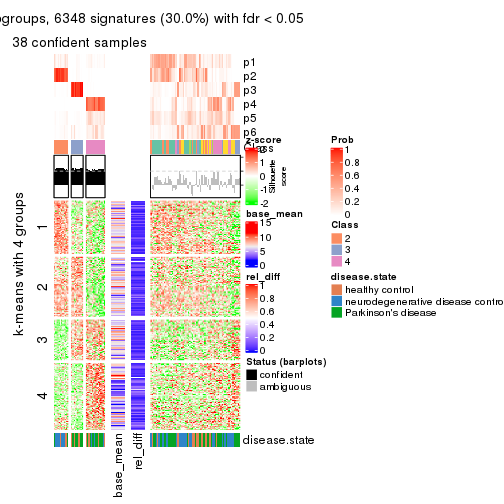
Signature heatmaps where rows are not scaled:
get_signatures(res, k = 2, scale_rows = FALSE)
get_signatures(res, k = 3, scale_rows = FALSE)
get_signatures(res, k = 4, scale_rows = FALSE)
get_signatures(res, k = 5, scale_rows = FALSE)
get_signatures(res, k = 6, scale_rows = FALSE)
Compare the overlap of signatures from different k:
compare_signatures(res)
get_signature() returns a data frame invisibly. TO get the list of signatures, the function
call should be assigned to a variable explicitly. In following code, if plot argument is set
to FALSE, no heatmap is plotted while only the differential analysis is performed.
# code only for demonstration
tb = get_signature(res, k = ..., plot = FALSE)
An example of the output of tb is:
#> which_row fdr mean_1 mean_2 scaled_mean_1 scaled_mean_2 km
#> 1 38 0.042760348 8.373488 9.131774 -0.5533452 0.5164555 1
#> 2 40 0.018707592 7.106213 8.469186 -0.6173731 0.5762149 1
#> 3 55 0.019134737 10.221463 11.207825 -0.6159697 0.5749050 1
#> 4 59 0.006059896 5.921854 7.869574 -0.6899429 0.6439467 1
#> 5 60 0.018055526 8.928898 10.211722 -0.6204761 0.5791110 1
#> 6 98 0.009384629 15.714769 14.887706 0.6635654 -0.6193277 2
...
The columns in tb are:
which_row: row indices corresponding to the input matrix.fdr: FDR for the differential test. mean_x: The mean value in group x.scaled_mean_x: The mean value in group x after rows are scaled.km: Row groups if k-means clustering is applied to rows.UMAP plot which shows how samples are separated.
dimension_reduction(res, k = 2, method = "UMAP")
dimension_reduction(res, k = 3, method = "UMAP")
dimension_reduction(res, k = 4, method = "UMAP")
dimension_reduction(res, k = 5, method = "UMAP")
dimension_reduction(res, k = 6, method = "UMAP")
Following heatmap shows how subgroups are split when increasing k:
collect_classes(res)
Test correlation between subgroups and known annotations. If the known annotation is numeric, one-way ANOVA test is applied, and if the known annotation is discrete, chi-squared contingency table test is applied.
test_to_known_factors(res)
#> n disease.state(p) k
#> SD:skmeans 98 0.3077 2
#> SD:skmeans 89 0.1201 3
#> SD:skmeans 71 0.0430 4
#> SD:skmeans 30 0.0463 5
#> SD:skmeans 38 0.0219 6
If matrix rows can be associated to genes, consider to use functional_enrichment(res,
...) to perform function enrichment for the signature genes. See this vignette for more detailed explanations.
The object with results only for a single top-value method and a single partition method can be extracted as:
res = res_list["SD", "pam"]
# you can also extract it by
# res = res_list["SD:pam"]
A summary of res and all the functions that can be applied to it:
res
#> A 'ConsensusPartition' object with k = 2, 3, 4, 5, 6.
#> On a matrix with 21168 rows and 105 columns.
#> Top rows (1000, 2000, 3000, 4000, 5000) are extracted by 'SD' method.
#> Subgroups are detected by 'pam' method.
#> Performed in total 1250 partitions by row resampling.
#> Best k for subgroups seems to be 2.
#>
#> Following methods can be applied to this 'ConsensusPartition' object:
#> [1] "cola_report" "collect_classes" "collect_plots"
#> [4] "collect_stats" "colnames" "compare_signatures"
#> [7] "consensus_heatmap" "dimension_reduction" "functional_enrichment"
#> [10] "get_anno_col" "get_anno" "get_classes"
#> [13] "get_consensus" "get_matrix" "get_membership"
#> [16] "get_param" "get_signatures" "get_stats"
#> [19] "is_best_k" "is_stable_k" "membership_heatmap"
#> [22] "ncol" "nrow" "plot_ecdf"
#> [25] "rownames" "select_partition_number" "show"
#> [28] "suggest_best_k" "test_to_known_factors"
collect_plots() function collects all the plots made from res for all k (number of partitions)
into one single page to provide an easy and fast comparison between different k.
collect_plots(res)
The plots are:
k and the heatmap of
predicted classes for each k.k.k.k.All the plots in panels can be made by individual functions and they are plotted later in this section.
select_partition_number() produces several plots showing different
statistics for choosing “optimized” k. There are following statistics:
k;k, the area increased is defined as \(A_k - A_{k-1}\).The detailed explanations of these statistics can be found in the cola vignette.
Generally speaking, lower PAC score, higher mean silhouette score or higher
concordance corresponds to better partition. Rand index and Jaccard index
measure how similar the current partition is compared to partition with k-1.
If they are too similar, we won't accept k is better than k-1.
select_partition_number(res)
The numeric values for all these statistics can be obtained by get_stats().
get_stats(res)
#> k 1-PAC mean_silhouette concordance area_increased Rand Jaccard
#> 2 2 0.237 0.766 0.841 0.4594 0.539 0.539
#> 3 3 0.231 0.721 0.775 0.1913 0.906 0.834
#> 4 4 0.349 0.473 0.725 0.1768 0.750 0.526
#> 5 5 0.360 0.440 0.710 0.0393 0.779 0.494
#> 6 6 0.381 0.469 0.726 0.0212 0.795 0.513
suggest_best_k() suggests the best \(k\) based on these statistics. The rules are as follows:
suggest_best_k(res)
#> [1] 2
Following shows the table of the partitions (You need to click the show/hide
code output link to see it). The membership matrix (columns with name p*)
is inferred by
clue::cl_consensus()
function with the SE method. Basically the value in the membership matrix
represents the probability to belong to a certain group. The finall class
label for an item is determined with the group with highest probability it
belongs to.
In get_classes() function, the entropy is calculated from the membership
matrix and the silhouette score is calculated from the consensus matrix.
cbind(get_classes(res, k = 2), get_membership(res, k = 2))
#> class entropy silhouette p1 p2
#> GSM153405 1 0.2603 0.831 0.956 0.044
#> GSM153406 1 0.3114 0.836 0.944 0.056
#> GSM153419 1 0.0938 0.817 0.988 0.012
#> GSM153423 2 0.1184 0.845 0.016 0.984
#> GSM153425 1 0.0376 0.821 0.996 0.004
#> GSM153427 1 0.7139 0.846 0.804 0.196
#> GSM153428 1 0.8016 0.826 0.756 0.244
#> GSM153429 1 0.6801 0.773 0.820 0.180
#> GSM153433 1 0.6623 0.851 0.828 0.172
#> GSM153444 2 0.5737 0.782 0.136 0.864
#> GSM153448 2 0.9170 0.594 0.332 0.668
#> GSM153451 2 0.2043 0.845 0.032 0.968
#> GSM153452 1 0.7139 0.760 0.804 0.196
#> GSM153477 2 0.8499 0.734 0.276 0.724
#> GSM153479 2 0.5059 0.837 0.112 0.888
#> GSM153484 1 0.8608 0.758 0.716 0.284
#> GSM153488 1 0.6623 0.855 0.828 0.172
#> GSM153496 1 0.4161 0.840 0.916 0.084
#> GSM153497 2 0.1414 0.845 0.020 0.980
#> GSM153500 1 0.7674 0.843 0.776 0.224
#> GSM153503 1 0.6343 0.847 0.840 0.160
#> GSM153508 2 0.8608 0.661 0.284 0.716
#> GSM153409 2 0.5408 0.799 0.124 0.876
#> GSM153426 1 0.9795 0.199 0.584 0.416
#> GSM153431 1 0.6247 0.847 0.844 0.156
#> GSM153438 2 0.5178 0.820 0.116 0.884
#> GSM153440 1 0.3431 0.848 0.936 0.064
#> GSM153447 1 0.7453 0.838 0.788 0.212
#> GSM153450 2 0.1414 0.845 0.020 0.980
#> GSM153456 2 0.1414 0.845 0.020 0.980
#> GSM153457 2 0.1184 0.847 0.016 0.984
#> GSM153458 2 0.5842 0.796 0.140 0.860
#> GSM153459 2 0.1414 0.845 0.020 0.980
#> GSM153460 2 0.1414 0.845 0.020 0.980
#> GSM153461 1 0.6973 0.852 0.812 0.188
#> GSM153463 1 0.7528 0.835 0.784 0.216
#> GSM153464 2 0.2948 0.843 0.052 0.948
#> GSM153466 1 0.9044 0.726 0.680 0.320
#> GSM153467 2 0.3584 0.844 0.068 0.932
#> GSM153468 1 0.4815 0.811 0.896 0.104
#> GSM153469 2 1.0000 0.178 0.496 0.504
#> GSM153470 2 0.5629 0.824 0.132 0.868
#> GSM153471 2 0.5629 0.830 0.132 0.868
#> GSM153472 1 0.6531 0.857 0.832 0.168
#> GSM153473 1 0.6247 0.858 0.844 0.156
#> GSM153474 1 0.7139 0.846 0.804 0.196
#> GSM153475 1 0.7883 0.830 0.764 0.236
#> GSM153476 1 0.3879 0.838 0.924 0.076
#> GSM153478 1 0.4298 0.853 0.912 0.088
#> GSM153480 2 0.5519 0.808 0.128 0.872
#> GSM153486 2 0.7219 0.728 0.200 0.800
#> GSM153487 1 0.9881 0.360 0.564 0.436
#> GSM153499 1 0.4939 0.851 0.892 0.108
#> GSM153504 1 0.7299 0.849 0.796 0.204
#> GSM153507 1 0.8499 0.782 0.724 0.276
#> GSM153404 1 0.1633 0.822 0.976 0.024
#> GSM153407 1 0.7376 0.840 0.792 0.208
#> GSM153408 1 0.0938 0.817 0.988 0.012
#> GSM153410 1 0.0938 0.817 0.988 0.012
#> GSM153411 1 0.0000 0.823 1.000 0.000
#> GSM153412 1 0.0938 0.817 0.988 0.012
#> GSM153413 1 0.0938 0.817 0.988 0.012
#> GSM153414 1 0.9460 0.564 0.636 0.364
#> GSM153415 1 0.1414 0.818 0.980 0.020
#> GSM153416 2 0.1843 0.846 0.028 0.972
#> GSM153417 1 0.2236 0.836 0.964 0.036
#> GSM153418 1 0.1414 0.818 0.980 0.020
#> GSM153420 1 0.6343 0.847 0.840 0.160
#> GSM153421 1 0.0672 0.827 0.992 0.008
#> GSM153422 1 0.5629 0.850 0.868 0.132
#> GSM153424 1 0.7674 0.834 0.776 0.224
#> GSM153430 1 0.7299 0.846 0.796 0.204
#> GSM153432 2 0.4562 0.825 0.096 0.904
#> GSM153434 1 0.6973 0.851 0.812 0.188
#> GSM153435 2 0.8207 0.681 0.256 0.744
#> GSM153436 2 0.1633 0.847 0.024 0.976
#> GSM153437 2 0.0938 0.847 0.012 0.988
#> GSM153439 1 1.0000 -0.136 0.504 0.496
#> GSM153441 2 0.9866 0.212 0.432 0.568
#> GSM153442 1 0.9170 0.707 0.668 0.332
#> GSM153443 2 0.2603 0.847 0.044 0.956
#> GSM153445 2 0.5059 0.820 0.112 0.888
#> GSM153446 2 0.3114 0.849 0.056 0.944
#> GSM153449 1 0.9552 0.616 0.624 0.376
#> GSM153453 1 0.1184 0.821 0.984 0.016
#> GSM153454 1 0.6048 0.858 0.852 0.148
#> GSM153455 1 0.9460 0.659 0.636 0.364
#> GSM153462 2 0.4562 0.826 0.096 0.904
#> GSM153465 1 0.8144 0.819 0.748 0.252
#> GSM153481 2 0.7602 0.742 0.220 0.780
#> GSM153482 1 0.8207 0.787 0.744 0.256
#> GSM153483 2 0.9983 -0.195 0.476 0.524
#> GSM153485 2 0.9993 0.263 0.484 0.516
#> GSM153489 1 0.4939 0.840 0.892 0.108
#> GSM153490 1 0.6712 0.851 0.824 0.176
#> GSM153491 1 0.6343 0.856 0.840 0.160
#> GSM153492 1 0.6531 0.849 0.832 0.168
#> GSM153493 1 0.7528 0.838 0.784 0.216
#> GSM153494 1 0.9635 0.534 0.612 0.388
#> GSM153495 1 0.5408 0.851 0.876 0.124
#> GSM153498 1 0.3733 0.832 0.928 0.072
#> GSM153501 1 0.6623 0.854 0.828 0.172
#> GSM153502 1 0.3431 0.842 0.936 0.064
#> GSM153505 1 0.7139 0.844 0.804 0.196
#> GSM153506 2 0.2236 0.846 0.036 0.964
cbind(get_classes(res, k = 3), get_membership(res, k = 3))
#> class entropy silhouette p1 p2 p3
#> GSM153405 1 0.5384 0.7576 0.788 0.024 0.188
#> GSM153406 1 0.5307 0.7654 0.820 0.056 0.124
#> GSM153419 1 0.5850 0.7336 0.772 0.040 0.188
#> GSM153423 2 0.2959 0.8003 0.100 0.900 0.000
#> GSM153425 1 0.6180 0.5474 0.584 0.000 0.416
#> GSM153427 1 0.4342 0.7809 0.856 0.120 0.024
#> GSM153428 1 0.6746 0.7620 0.732 0.192 0.076
#> GSM153429 1 0.7633 0.7245 0.684 0.184 0.132
#> GSM153433 1 0.4413 0.7921 0.860 0.104 0.036
#> GSM153444 2 0.6018 0.6559 0.308 0.684 0.008
#> GSM153448 2 0.7251 0.5278 0.348 0.612 0.040
#> GSM153451 2 0.1289 0.8041 0.032 0.968 0.000
#> GSM153452 1 0.7899 0.6803 0.664 0.192 0.144
#> GSM153477 2 0.6393 0.6869 0.216 0.736 0.048
#> GSM153479 2 0.4994 0.7772 0.160 0.816 0.024
#> GSM153484 1 0.6895 0.7376 0.716 0.212 0.072
#> GSM153488 1 0.3973 0.8016 0.880 0.088 0.032
#> GSM153496 1 0.5573 0.7734 0.796 0.044 0.160
#> GSM153497 2 0.1964 0.8065 0.056 0.944 0.000
#> GSM153500 1 0.6393 0.8063 0.764 0.148 0.088
#> GSM153503 1 0.3295 0.7824 0.896 0.096 0.008
#> GSM153508 2 0.6189 0.5726 0.364 0.632 0.004
#> GSM153409 2 0.6155 0.6447 0.328 0.664 0.008
#> GSM153426 1 0.8676 0.2803 0.520 0.368 0.112
#> GSM153431 1 0.3610 0.7855 0.888 0.096 0.016
#> GSM153438 2 0.3412 0.7914 0.124 0.876 0.000
#> GSM153440 1 0.5746 0.7731 0.780 0.040 0.180
#> GSM153447 1 0.5588 0.7948 0.808 0.124 0.068
#> GSM153450 2 0.1964 0.8066 0.056 0.944 0.000
#> GSM153456 2 0.1643 0.8041 0.044 0.956 0.000
#> GSM153457 2 0.1643 0.8042 0.044 0.956 0.000
#> GSM153458 2 0.3192 0.7693 0.112 0.888 0.000
#> GSM153459 2 0.2066 0.8048 0.060 0.940 0.000
#> GSM153460 2 0.1643 0.8044 0.044 0.956 0.000
#> GSM153461 1 0.4397 0.7919 0.856 0.116 0.028
#> GSM153463 1 0.7128 0.6582 0.684 0.064 0.252
#> GSM153464 2 0.1289 0.7834 0.032 0.968 0.000
#> GSM153466 1 0.5058 0.6757 0.756 0.244 0.000
#> GSM153467 2 0.3340 0.8065 0.120 0.880 0.000
#> GSM153468 1 0.7043 0.7323 0.728 0.136 0.136
#> GSM153469 1 0.7169 0.0233 0.520 0.456 0.024
#> GSM153470 2 0.6404 0.6591 0.344 0.644 0.012
#> GSM153471 2 0.4700 0.7660 0.180 0.812 0.008
#> GSM153472 1 0.6788 0.8047 0.744 0.136 0.120
#> GSM153473 1 0.5815 0.8055 0.800 0.104 0.096
#> GSM153474 1 0.4063 0.7859 0.868 0.112 0.020
#> GSM153475 1 0.4033 0.7769 0.856 0.136 0.008
#> GSM153476 1 0.5202 0.7721 0.820 0.044 0.136
#> GSM153478 1 0.5075 0.8048 0.836 0.068 0.096
#> GSM153480 2 0.3573 0.7246 0.120 0.876 0.004
#> GSM153486 2 0.5842 0.7217 0.196 0.768 0.036
#> GSM153487 1 0.5560 0.5851 0.700 0.300 0.000
#> GSM153499 1 0.5253 0.7973 0.828 0.096 0.076
#> GSM153504 1 0.4591 0.7980 0.848 0.120 0.032
#> GSM153507 1 0.4521 0.7499 0.816 0.180 0.004
#> GSM153404 1 0.6158 0.7391 0.760 0.052 0.188
#> GSM153407 1 0.4821 0.7844 0.840 0.120 0.040
#> GSM153408 1 0.5850 0.7336 0.772 0.040 0.188
#> GSM153410 1 0.5466 0.7396 0.800 0.040 0.160
#> GSM153411 3 0.0000 0.9066 0.000 0.000 1.000
#> GSM153412 1 0.5850 0.7336 0.772 0.040 0.188
#> GSM153413 1 0.5850 0.7336 0.772 0.040 0.188
#> GSM153414 1 0.8737 0.4932 0.536 0.340 0.124
#> GSM153415 1 0.5285 0.7421 0.812 0.040 0.148
#> GSM153416 2 0.3619 0.7896 0.136 0.864 0.000
#> GSM153417 3 0.0000 0.9066 0.000 0.000 1.000
#> GSM153418 1 0.5285 0.7421 0.812 0.040 0.148
#> GSM153420 3 0.3816 0.8386 0.148 0.000 0.852
#> GSM153421 3 0.0237 0.9063 0.004 0.000 0.996
#> GSM153422 3 0.3340 0.8575 0.120 0.000 0.880
#> GSM153424 1 0.4744 0.7800 0.836 0.136 0.028
#> GSM153430 1 0.3769 0.7907 0.880 0.104 0.016
#> GSM153432 2 0.5733 0.6545 0.324 0.676 0.000
#> GSM153434 1 0.6981 0.7991 0.732 0.132 0.136
#> GSM153435 2 0.6742 0.6795 0.240 0.708 0.052
#> GSM153436 2 0.2682 0.8071 0.076 0.920 0.004
#> GSM153437 2 0.1289 0.8068 0.032 0.968 0.000
#> GSM153439 1 0.8515 -0.0627 0.476 0.432 0.092
#> GSM153441 2 0.7979 0.2544 0.440 0.500 0.060
#> GSM153442 1 0.5268 0.7159 0.776 0.212 0.012
#> GSM153443 2 0.2356 0.8081 0.072 0.928 0.000
#> GSM153445 2 0.2200 0.7755 0.056 0.940 0.004
#> GSM153446 2 0.2448 0.8006 0.076 0.924 0.000
#> GSM153449 1 0.4931 0.6631 0.768 0.232 0.000
#> GSM153453 1 0.4862 0.7630 0.820 0.020 0.160
#> GSM153454 1 0.4458 0.8001 0.864 0.056 0.080
#> GSM153455 1 0.8230 0.6726 0.608 0.280 0.112
#> GSM153462 2 0.5650 0.6835 0.312 0.688 0.000
#> GSM153465 1 0.4663 0.7681 0.828 0.156 0.016
#> GSM153481 2 0.3619 0.7093 0.136 0.864 0.000
#> GSM153482 1 0.4808 0.7618 0.804 0.188 0.008
#> GSM153483 1 0.5733 0.4705 0.676 0.324 0.000
#> GSM153485 2 0.8955 0.2722 0.332 0.524 0.144
#> GSM153489 1 0.6448 0.7706 0.764 0.104 0.132
#> GSM153490 1 0.6037 0.7414 0.788 0.112 0.100
#> GSM153491 1 0.5060 0.8054 0.836 0.100 0.064
#> GSM153492 1 0.4249 0.7892 0.864 0.108 0.028
#> GSM153493 1 0.8462 0.6029 0.588 0.124 0.288
#> GSM153494 1 0.8857 0.5322 0.524 0.344 0.132
#> GSM153495 1 0.4838 0.8041 0.848 0.076 0.076
#> GSM153498 1 0.6407 0.7475 0.760 0.080 0.160
#> GSM153501 1 0.6389 0.8037 0.768 0.108 0.124
#> GSM153502 1 0.5581 0.7762 0.792 0.040 0.168
#> GSM153505 1 0.4128 0.7830 0.856 0.132 0.012
#> GSM153506 2 0.1964 0.7998 0.056 0.944 0.000
cbind(get_classes(res, k = 4), get_membership(res, k = 4))
#> class entropy silhouette p1 p2 p3 p4
#> GSM153405 1 0.1545 0.56527 0.952 0.008 0.000 0.040
#> GSM153406 1 0.4331 0.35157 0.712 0.000 0.000 0.288
#> GSM153419 1 0.0000 0.56104 1.000 0.000 0.000 0.000
#> GSM153423 2 0.3907 0.72859 0.000 0.768 0.000 0.232
#> GSM153425 1 0.3486 0.49808 0.812 0.000 0.188 0.000
#> GSM153427 4 0.4998 0.16398 0.488 0.000 0.000 0.512
#> GSM153428 1 0.5070 0.10258 0.580 0.004 0.000 0.416
#> GSM153429 1 0.6357 0.07142 0.544 0.068 0.000 0.388
#> GSM153433 4 0.4996 0.19442 0.484 0.000 0.000 0.516
#> GSM153444 4 0.6068 -0.01097 0.044 0.448 0.000 0.508
#> GSM153448 2 0.7343 -0.03403 0.156 0.428 0.000 0.416
#> GSM153451 2 0.0592 0.82859 0.000 0.984 0.000 0.016
#> GSM153452 1 0.4285 0.51955 0.804 0.156 0.000 0.040
#> GSM153477 2 0.6523 0.60147 0.208 0.636 0.000 0.156
#> GSM153479 2 0.5346 0.70203 0.076 0.732 0.000 0.192
#> GSM153484 4 0.6965 0.16838 0.428 0.112 0.000 0.460
#> GSM153488 4 0.5435 0.33069 0.420 0.016 0.000 0.564
#> GSM153496 1 0.3182 0.56507 0.876 0.028 0.000 0.096
#> GSM153497 2 0.1209 0.83811 0.004 0.964 0.000 0.032
#> GSM153500 1 0.6150 0.23007 0.580 0.060 0.000 0.360
#> GSM153503 4 0.4746 0.49098 0.368 0.000 0.000 0.632
#> GSM153508 4 0.3279 0.30482 0.096 0.032 0.000 0.872
#> GSM153409 4 0.5152 0.34345 0.020 0.316 0.000 0.664
#> GSM153426 1 0.7416 0.14731 0.496 0.312 0.000 0.192
#> GSM153431 4 0.4936 0.50834 0.340 0.008 0.000 0.652
#> GSM153438 2 0.2313 0.83514 0.032 0.924 0.000 0.044
#> GSM153440 1 0.2831 0.55158 0.876 0.004 0.000 0.120
#> GSM153447 1 0.5408 0.17914 0.576 0.016 0.000 0.408
#> GSM153450 2 0.2149 0.82936 0.000 0.912 0.000 0.088
#> GSM153456 2 0.0336 0.82977 0.000 0.992 0.000 0.008
#> GSM153457 2 0.0188 0.82948 0.000 0.996 0.000 0.004
#> GSM153458 2 0.1059 0.83321 0.016 0.972 0.000 0.012
#> GSM153459 2 0.2408 0.82609 0.000 0.896 0.000 0.104
#> GSM153460 2 0.0817 0.83659 0.000 0.976 0.000 0.024
#> GSM153461 1 0.5360 0.02825 0.552 0.012 0.000 0.436
#> GSM153463 1 0.7796 0.00329 0.460 0.012 0.172 0.356
#> GSM153464 2 0.0672 0.82730 0.008 0.984 0.000 0.008
#> GSM153466 4 0.6377 0.51075 0.256 0.112 0.000 0.632
#> GSM153467 2 0.2760 0.81244 0.000 0.872 0.000 0.128
#> GSM153468 1 0.3758 0.54495 0.848 0.104 0.000 0.048
#> GSM153469 1 0.7866 -0.02055 0.384 0.336 0.000 0.280
#> GSM153470 4 0.6350 0.23521 0.072 0.364 0.000 0.564
#> GSM153471 2 0.5798 0.69917 0.112 0.704 0.000 0.184
#> GSM153472 1 0.5623 0.41173 0.660 0.048 0.000 0.292
#> GSM153473 1 0.4431 0.41937 0.696 0.000 0.000 0.304
#> GSM153474 4 0.5271 0.50495 0.340 0.020 0.000 0.640
#> GSM153475 4 0.4914 0.50719 0.312 0.012 0.000 0.676
#> GSM153476 1 0.4194 0.48640 0.764 0.008 0.000 0.228
#> GSM153478 1 0.4546 0.43921 0.732 0.012 0.000 0.256
#> GSM153480 2 0.1661 0.82633 0.052 0.944 0.000 0.004
#> GSM153486 2 0.6231 0.54775 0.184 0.668 0.000 0.148
#> GSM153487 4 0.6536 0.47561 0.324 0.096 0.000 0.580
#> GSM153499 1 0.4819 0.32562 0.652 0.004 0.000 0.344
#> GSM153504 1 0.5147 -0.01765 0.536 0.004 0.000 0.460
#> GSM153507 4 0.5169 0.53959 0.272 0.032 0.000 0.696
#> GSM153404 1 0.0592 0.56192 0.984 0.000 0.000 0.016
#> GSM153407 1 0.4985 -0.06274 0.532 0.000 0.000 0.468
#> GSM153408 1 0.0000 0.56104 1.000 0.000 0.000 0.000
#> GSM153410 1 0.3400 0.47861 0.820 0.000 0.000 0.180
#> GSM153411 3 0.0000 1.00000 0.000 0.000 1.000 0.000
#> GSM153412 1 0.0188 0.56163 0.996 0.000 0.000 0.004
#> GSM153413 1 0.0000 0.56104 1.000 0.000 0.000 0.000
#> GSM153414 1 0.7042 0.27632 0.572 0.188 0.000 0.240
#> GSM153415 1 0.4072 0.39145 0.748 0.000 0.000 0.252
#> GSM153416 2 0.5558 0.55362 0.036 0.640 0.000 0.324
#> GSM153417 3 0.0000 1.00000 0.000 0.000 1.000 0.000
#> GSM153418 1 0.4072 0.39145 0.748 0.000 0.000 0.252
#> GSM153420 3 0.0000 1.00000 0.000 0.000 1.000 0.000
#> GSM153421 3 0.0000 1.00000 0.000 0.000 1.000 0.000
#> GSM153422 3 0.0000 1.00000 0.000 0.000 1.000 0.000
#> GSM153424 4 0.5493 0.22206 0.456 0.016 0.000 0.528
#> GSM153430 4 0.5085 0.44087 0.376 0.008 0.000 0.616
#> GSM153432 4 0.5835 0.22034 0.040 0.372 0.000 0.588
#> GSM153434 1 0.3982 0.49423 0.776 0.004 0.000 0.220
#> GSM153435 2 0.6933 0.44523 0.244 0.584 0.000 0.172
#> GSM153436 2 0.4675 0.69381 0.020 0.736 0.000 0.244
#> GSM153437 2 0.1004 0.83899 0.004 0.972 0.000 0.024
#> GSM153439 1 0.7816 -0.00753 0.412 0.316 0.000 0.272
#> GSM153441 4 0.7795 0.19823 0.252 0.344 0.000 0.404
#> GSM153442 4 0.6031 0.40687 0.388 0.048 0.000 0.564
#> GSM153443 2 0.1792 0.83676 0.000 0.932 0.000 0.068
#> GSM153445 2 0.1284 0.83326 0.024 0.964 0.000 0.012
#> GSM153446 2 0.1297 0.83495 0.016 0.964 0.000 0.020
#> GSM153449 4 0.5417 0.54052 0.284 0.040 0.000 0.676
#> GSM153453 1 0.3485 0.56021 0.856 0.028 0.000 0.116
#> GSM153454 1 0.6032 0.02117 0.536 0.008 0.028 0.428
#> GSM153455 1 0.7061 0.21618 0.540 0.148 0.000 0.312
#> GSM153462 4 0.5691 -0.14196 0.024 0.468 0.000 0.508
#> GSM153465 4 0.5460 0.47313 0.340 0.028 0.000 0.632
#> GSM153481 2 0.1716 0.82351 0.064 0.936 0.000 0.000
#> GSM153482 4 0.5950 0.39670 0.416 0.040 0.000 0.544
#> GSM153483 4 0.5759 0.53376 0.268 0.064 0.000 0.668
#> GSM153485 1 0.6602 -0.08750 0.484 0.436 0.000 0.080
#> GSM153489 1 0.4919 0.52162 0.752 0.048 0.000 0.200
#> GSM153490 4 0.5859 0.50163 0.284 0.000 0.064 0.652
#> GSM153491 1 0.5360 0.06079 0.552 0.012 0.000 0.436
#> GSM153492 4 0.4543 0.51391 0.324 0.000 0.000 0.676
#> GSM153493 4 0.7661 -0.02307 0.376 0.000 0.212 0.412
#> GSM153494 1 0.6975 0.32259 0.584 0.200 0.000 0.216
#> GSM153495 1 0.5291 0.31801 0.652 0.024 0.000 0.324
#> GSM153498 1 0.2124 0.56854 0.932 0.028 0.000 0.040
#> GSM153501 1 0.4542 0.47843 0.752 0.020 0.000 0.228
#> GSM153502 1 0.2737 0.56164 0.888 0.008 0.000 0.104
#> GSM153505 4 0.4605 0.48526 0.336 0.000 0.000 0.664
#> GSM153506 2 0.1807 0.83640 0.008 0.940 0.000 0.052
cbind(get_classes(res, k = 5), get_membership(res, k = 5))
#> class entropy silhouette p1 p2 p3 p4 p5
#> GSM153405 3 0.3942 0.67569 0.260 0.000 0.728 0.012 0.000
#> GSM153406 1 0.5624 -0.13140 0.532 0.000 0.388 0.080 0.000
#> GSM153419 3 0.3961 0.67811 0.248 0.000 0.736 0.016 0.000
#> GSM153423 2 0.3996 0.70916 0.228 0.752 0.012 0.008 0.000
#> GSM153425 3 0.6052 0.58343 0.248 0.000 0.572 0.000 0.180
#> GSM153427 1 0.3421 0.36579 0.788 0.000 0.204 0.008 0.000
#> GSM153428 1 0.4122 0.20750 0.688 0.004 0.304 0.004 0.000
#> GSM153429 1 0.6231 0.18897 0.588 0.060 0.296 0.056 0.000
#> GSM153433 1 0.3353 0.38365 0.796 0.000 0.196 0.008 0.000
#> GSM153444 1 0.6346 -0.03063 0.492 0.404 0.060 0.044 0.000
#> GSM153448 1 0.6919 -0.01309 0.440 0.404 0.108 0.048 0.000
#> GSM153451 2 0.0290 0.82668 0.000 0.992 0.000 0.008 0.000
#> GSM153452 3 0.6047 0.60811 0.268 0.124 0.596 0.012 0.000
#> GSM153477 2 0.6172 0.55580 0.136 0.632 0.200 0.032 0.000
#> GSM153479 2 0.5505 0.65612 0.160 0.708 0.040 0.092 0.000
#> GSM153484 1 0.6386 0.34234 0.640 0.072 0.172 0.116 0.000
#> GSM153488 1 0.4428 0.40904 0.760 0.000 0.144 0.096 0.000
#> GSM153496 3 0.5793 0.62025 0.308 0.012 0.596 0.084 0.000
#> GSM153497 2 0.1267 0.83315 0.012 0.960 0.004 0.024 0.000
#> GSM153500 1 0.6237 0.04218 0.560 0.028 0.324 0.088 0.000
#> GSM153503 1 0.3116 0.48604 0.860 0.000 0.064 0.076 0.000
#> GSM153508 4 0.2736 0.00000 0.068 0.016 0.024 0.892 0.000
#> GSM153409 1 0.5123 0.24368 0.644 0.308 0.020 0.028 0.000
#> GSM153426 1 0.8030 -0.06977 0.336 0.284 0.296 0.084 0.000
#> GSM153431 1 0.2278 0.49256 0.908 0.000 0.032 0.060 0.000
#> GSM153438 2 0.2244 0.82589 0.016 0.920 0.040 0.024 0.000
#> GSM153440 3 0.4371 0.63159 0.344 0.000 0.644 0.012 0.000
#> GSM153447 1 0.4661 0.16200 0.656 0.000 0.312 0.032 0.000
#> GSM153450 2 0.2859 0.81521 0.060 0.888 0.016 0.036 0.000
#> GSM153456 2 0.0000 0.82509 0.000 1.000 0.000 0.000 0.000
#> GSM153457 2 0.0162 0.82725 0.004 0.996 0.000 0.000 0.000
#> GSM153458 2 0.0740 0.82980 0.008 0.980 0.008 0.004 0.000
#> GSM153459 2 0.1732 0.82533 0.080 0.920 0.000 0.000 0.000
#> GSM153460 2 0.1173 0.83408 0.012 0.964 0.004 0.020 0.000
#> GSM153461 1 0.4786 0.22370 0.652 0.000 0.308 0.040 0.000
#> GSM153463 1 0.6364 0.22867 0.596 0.000 0.220 0.024 0.160
#> GSM153464 2 0.0290 0.82646 0.000 0.992 0.000 0.008 0.000
#> GSM153466 1 0.3843 0.48736 0.828 0.100 0.020 0.052 0.000
#> GSM153467 2 0.2439 0.79564 0.120 0.876 0.000 0.004 0.000
#> GSM153468 3 0.6349 0.61061 0.288 0.104 0.576 0.032 0.000
#> GSM153469 1 0.7464 0.12604 0.464 0.308 0.152 0.076 0.000
#> GSM153470 1 0.6693 0.21648 0.540 0.300 0.040 0.120 0.000
#> GSM153471 2 0.5624 0.66097 0.180 0.696 0.068 0.056 0.000
#> GSM153472 1 0.6132 -0.23286 0.496 0.012 0.400 0.092 0.000
#> GSM153473 1 0.4622 -0.23179 0.548 0.000 0.440 0.012 0.000
#> GSM153474 1 0.5525 0.23192 0.612 0.000 0.288 0.100 0.000
#> GSM153475 1 0.1682 0.49595 0.940 0.004 0.044 0.012 0.000
#> GSM153476 1 0.5509 -0.35442 0.472 0.000 0.464 0.064 0.000
#> GSM153478 1 0.4698 -0.28086 0.520 0.004 0.468 0.008 0.000
#> GSM153480 2 0.1059 0.82946 0.004 0.968 0.020 0.008 0.000
#> GSM153486 2 0.6281 0.53599 0.216 0.632 0.088 0.064 0.000
#> GSM153487 1 0.3935 0.48666 0.832 0.068 0.040 0.060 0.000
#> GSM153499 1 0.4856 -0.09092 0.584 0.000 0.388 0.028 0.000
#> GSM153504 1 0.4597 0.29323 0.696 0.000 0.260 0.044 0.000
#> GSM153507 1 0.1153 0.49925 0.964 0.024 0.004 0.008 0.000
#> GSM153404 3 0.3961 0.67811 0.248 0.000 0.736 0.016 0.000
#> GSM153407 1 0.3783 0.29464 0.740 0.000 0.252 0.008 0.000
#> GSM153408 3 0.4223 0.67778 0.248 0.000 0.724 0.028 0.000
#> GSM153410 3 0.5314 0.40017 0.420 0.000 0.528 0.052 0.000
#> GSM153411 5 0.0000 1.00000 0.000 0.000 0.000 0.000 1.000
#> GSM153412 3 0.4080 0.67765 0.252 0.000 0.728 0.020 0.000
#> GSM153413 3 0.4054 0.67777 0.248 0.000 0.732 0.020 0.000
#> GSM153414 3 0.7162 0.15009 0.392 0.180 0.396 0.032 0.000
#> GSM153415 1 0.5677 -0.21588 0.496 0.000 0.424 0.080 0.000
#> GSM153416 2 0.5020 0.52528 0.344 0.620 0.020 0.016 0.000
#> GSM153417 5 0.0000 1.00000 0.000 0.000 0.000 0.000 1.000
#> GSM153418 1 0.5677 -0.21588 0.496 0.000 0.424 0.080 0.000
#> GSM153420 5 0.0000 1.00000 0.000 0.000 0.000 0.000 1.000
#> GSM153421 5 0.0000 1.00000 0.000 0.000 0.000 0.000 1.000
#> GSM153422 5 0.0000 1.00000 0.000 0.000 0.000 0.000 1.000
#> GSM153424 1 0.3670 0.39625 0.792 0.008 0.188 0.012 0.000
#> GSM153430 1 0.3317 0.47586 0.840 0.000 0.116 0.044 0.000
#> GSM153432 1 0.5979 0.17450 0.576 0.328 0.024 0.072 0.000
#> GSM153434 3 0.4787 0.48404 0.432 0.000 0.548 0.020 0.000
#> GSM153435 2 0.6664 0.41040 0.236 0.552 0.188 0.024 0.000
#> GSM153436 2 0.4597 0.64736 0.244 0.716 0.020 0.020 0.000
#> GSM153437 2 0.1630 0.83397 0.016 0.944 0.004 0.036 0.000
#> GSM153439 3 0.7861 -0.07243 0.300 0.304 0.332 0.064 0.000
#> GSM153441 1 0.7313 0.22390 0.428 0.300 0.240 0.032 0.000
#> GSM153442 1 0.4280 0.46597 0.800 0.032 0.120 0.048 0.000
#> GSM153443 2 0.1768 0.82651 0.072 0.924 0.000 0.004 0.000
#> GSM153445 2 0.1059 0.83089 0.008 0.968 0.004 0.020 0.000
#> GSM153446 2 0.1617 0.82854 0.020 0.948 0.012 0.020 0.000
#> GSM153449 1 0.2379 0.50299 0.912 0.028 0.012 0.048 0.000
#> GSM153453 3 0.5554 0.59930 0.344 0.012 0.588 0.056 0.000
#> GSM153454 1 0.5776 0.23209 0.636 0.000 0.260 0.080 0.024
#> GSM153455 1 0.6413 0.00556 0.536 0.148 0.304 0.012 0.000
#> GSM153462 1 0.5462 -0.21250 0.488 0.464 0.012 0.036 0.000
#> GSM153465 1 0.3053 0.48876 0.872 0.008 0.076 0.044 0.000
#> GSM153481 2 0.1522 0.82211 0.000 0.944 0.044 0.012 0.000
#> GSM153482 1 0.3682 0.46546 0.828 0.040 0.120 0.012 0.000
#> GSM153483 1 0.3393 0.49729 0.860 0.044 0.024 0.072 0.000
#> GSM153485 3 0.6772 -0.03035 0.104 0.412 0.444 0.040 0.000
#> GSM153489 3 0.5858 0.48197 0.416 0.024 0.512 0.048 0.000
#> GSM153490 1 0.3110 0.49011 0.876 0.000 0.020 0.044 0.060
#> GSM153491 1 0.4658 0.24482 0.672 0.004 0.296 0.028 0.000
#> GSM153492 1 0.1836 0.49587 0.932 0.000 0.032 0.036 0.000
#> GSM153493 1 0.6897 0.19141 0.532 0.000 0.220 0.032 0.216
#> GSM153494 3 0.7197 0.19177 0.376 0.188 0.404 0.032 0.000
#> GSM153495 1 0.5511 -0.10403 0.524 0.004 0.416 0.056 0.000
#> GSM153498 3 0.4700 0.67538 0.268 0.008 0.692 0.032 0.000
#> GSM153501 3 0.5224 0.45482 0.428 0.004 0.532 0.036 0.000
#> GSM153502 3 0.4456 0.64948 0.320 0.000 0.660 0.020 0.000
#> GSM153505 1 0.1872 0.49048 0.928 0.000 0.052 0.020 0.000
#> GSM153506 2 0.2464 0.82440 0.032 0.908 0.012 0.048 0.000
cbind(get_classes(res, k = 6), get_membership(res, k = 6))
#> class entropy silhouette p1 p2 p3 p4 p5 p6
#> GSM153405 4 0.0622 0.5730 0.000 0.008 0.000 0.980 0.000 0.012
#> GSM153406 4 0.5223 0.3286 0.000 0.300 0.004 0.588 0.000 0.108
#> GSM153419 4 0.0777 0.5708 0.000 0.000 0.004 0.972 0.000 0.024
#> GSM153423 1 0.3678 0.6918 0.748 0.228 0.000 0.016 0.000 0.008
#> GSM153425 4 0.2597 0.5307 0.000 0.000 0.000 0.824 0.176 0.000
#> GSM153427 2 0.4057 0.2345 0.000 0.556 0.000 0.436 0.000 0.008
#> GSM153428 4 0.4120 -0.0485 0.004 0.468 0.000 0.524 0.000 0.004
#> GSM153429 4 0.5887 0.0386 0.044 0.420 0.000 0.460 0.000 0.076
#> GSM153433 2 0.3993 0.3112 0.000 0.592 0.000 0.400 0.000 0.008
#> GSM153444 2 0.5741 0.1795 0.376 0.512 0.000 0.072 0.000 0.040
#> GSM153448 2 0.6385 0.1676 0.372 0.456 0.000 0.104 0.000 0.068
#> GSM153451 1 0.0363 0.8264 0.988 0.000 0.000 0.000 0.000 0.012
#> GSM153452 4 0.2877 0.5442 0.124 0.020 0.000 0.848 0.000 0.008
#> GSM153477 1 0.5970 0.5071 0.616 0.144 0.004 0.180 0.000 0.056
#> GSM153479 1 0.4944 0.6360 0.708 0.152 0.000 0.036 0.000 0.104
#> GSM153484 2 0.6506 0.1563 0.064 0.452 0.000 0.356 0.000 0.128
#> GSM153488 2 0.5205 0.2578 0.000 0.520 0.000 0.384 0.000 0.096
#> GSM153496 4 0.3146 0.5709 0.012 0.060 0.000 0.848 0.000 0.080
#> GSM153497 1 0.1065 0.8313 0.964 0.008 0.000 0.008 0.000 0.020
#> GSM153500 4 0.5956 0.2712 0.024 0.300 0.004 0.544 0.000 0.128
#> GSM153503 2 0.4905 0.4772 0.000 0.620 0.000 0.284 0.000 0.096
#> GSM153508 3 0.0405 0.0000 0.004 0.008 0.988 0.000 0.000 0.000
#> GSM153409 2 0.4499 0.3468 0.284 0.668 0.000 0.024 0.000 0.024
#> GSM153426 4 0.6822 0.1895 0.268 0.164 0.000 0.476 0.000 0.092
#> GSM153431 2 0.4407 0.5245 0.000 0.692 0.000 0.232 0.000 0.076
#> GSM153438 1 0.1974 0.8240 0.920 0.012 0.000 0.048 0.000 0.020
#> GSM153440 4 0.2070 0.5685 0.000 0.092 0.000 0.896 0.000 0.012
#> GSM153447 4 0.4499 0.1094 0.000 0.428 0.000 0.540 0.000 0.032
#> GSM153450 1 0.2541 0.8124 0.892 0.052 0.000 0.024 0.000 0.032
#> GSM153456 1 0.0000 0.8247 1.000 0.000 0.000 0.000 0.000 0.000
#> GSM153457 1 0.0146 0.8266 0.996 0.004 0.000 0.000 0.000 0.000
#> GSM153458 1 0.0508 0.8274 0.984 0.004 0.000 0.012 0.000 0.000
#> GSM153459 1 0.1501 0.8228 0.924 0.076 0.000 0.000 0.000 0.000
#> GSM153460 1 0.1167 0.8323 0.960 0.012 0.000 0.008 0.000 0.020
#> GSM153461 4 0.4544 -0.0136 0.000 0.416 0.000 0.548 0.000 0.036
#> GSM153463 4 0.6163 -0.0224 0.000 0.360 0.000 0.460 0.156 0.024
#> GSM153464 1 0.0363 0.8263 0.988 0.000 0.000 0.000 0.000 0.012
#> GSM153466 2 0.5188 0.5406 0.072 0.684 0.000 0.184 0.000 0.060
#> GSM153467 1 0.2257 0.7913 0.876 0.116 0.000 0.000 0.000 0.008
#> GSM153468 4 0.3795 0.5565 0.108 0.036 0.004 0.812 0.000 0.040
#> GSM153469 4 0.7228 -0.0275 0.288 0.276 0.000 0.348 0.000 0.088
#> GSM153470 2 0.6066 0.2830 0.272 0.552 0.000 0.044 0.000 0.132
#> GSM153471 1 0.5257 0.6394 0.692 0.168 0.004 0.064 0.000 0.072
#> GSM153472 4 0.5084 0.4391 0.012 0.244 0.000 0.644 0.000 0.100
#> GSM153473 4 0.3934 0.4335 0.000 0.304 0.000 0.676 0.000 0.020
#> GSM153474 6 0.3313 0.0000 0.000 0.148 0.004 0.036 0.000 0.812
#> GSM153475 2 0.3560 0.5300 0.004 0.732 0.000 0.256 0.000 0.008
#> GSM153476 4 0.4271 0.4654 0.000 0.244 0.000 0.696 0.000 0.060
#> GSM153478 4 0.3772 0.3962 0.004 0.296 0.000 0.692 0.000 0.008
#> GSM153480 1 0.1007 0.8285 0.968 0.004 0.004 0.016 0.000 0.008
#> GSM153486 1 0.5764 0.5005 0.628 0.112 0.000 0.196 0.000 0.064
#> GSM153487 2 0.5616 0.4940 0.052 0.628 0.004 0.240 0.000 0.076
#> GSM153499 4 0.4568 0.3550 0.000 0.344 0.004 0.612 0.000 0.040
#> GSM153504 4 0.4702 -0.0521 0.000 0.460 0.000 0.496 0.000 0.044
#> GSM153507 2 0.3502 0.5488 0.020 0.780 0.000 0.192 0.000 0.008
#> GSM153404 4 0.0777 0.5708 0.000 0.000 0.004 0.972 0.000 0.024
#> GSM153407 2 0.4091 0.1528 0.000 0.520 0.000 0.472 0.000 0.008
#> GSM153408 4 0.1155 0.5731 0.000 0.004 0.004 0.956 0.000 0.036
#> GSM153410 4 0.4233 0.4899 0.000 0.180 0.004 0.736 0.000 0.080
#> GSM153411 5 0.0000 1.0000 0.000 0.000 0.000 0.000 1.000 0.000
#> GSM153412 4 0.1080 0.5723 0.000 0.004 0.004 0.960 0.000 0.032
#> GSM153413 4 0.0777 0.5708 0.000 0.000 0.004 0.972 0.000 0.024
#> GSM153414 4 0.5796 0.2908 0.168 0.224 0.000 0.584 0.000 0.024
#> GSM153415 4 0.5069 0.3725 0.000 0.264 0.004 0.624 0.000 0.108
#> GSM153416 1 0.4646 0.4781 0.612 0.348 0.004 0.012 0.000 0.024
#> GSM153417 5 0.0000 1.0000 0.000 0.000 0.000 0.000 1.000 0.000
#> GSM153418 4 0.5030 0.3746 0.000 0.264 0.004 0.628 0.000 0.104
#> GSM153420 5 0.0000 1.0000 0.000 0.000 0.000 0.000 1.000 0.000
#> GSM153421 5 0.0000 1.0000 0.000 0.000 0.000 0.000 1.000 0.000
#> GSM153422 5 0.0000 1.0000 0.000 0.000 0.000 0.000 1.000 0.000
#> GSM153424 2 0.4284 0.3371 0.004 0.588 0.000 0.392 0.000 0.016
#> GSM153430 2 0.4357 0.4592 0.000 0.624 0.000 0.340 0.000 0.036
#> GSM153432 2 0.5449 0.3029 0.304 0.588 0.000 0.028 0.000 0.080
#> GSM153434 4 0.3014 0.5157 0.000 0.184 0.000 0.804 0.000 0.012
#> GSM153435 1 0.6052 0.3659 0.544 0.176 0.000 0.252 0.000 0.028
#> GSM153436 1 0.4149 0.6248 0.712 0.248 0.000 0.024 0.000 0.016
#> GSM153437 1 0.1536 0.8320 0.940 0.016 0.000 0.004 0.000 0.040
#> GSM153439 4 0.7161 0.0171 0.288 0.248 0.004 0.388 0.000 0.072
#> GSM153441 2 0.6595 0.2548 0.284 0.424 0.000 0.260 0.000 0.032
#> GSM153442 2 0.5216 0.4195 0.032 0.572 0.000 0.352 0.000 0.044
#> GSM153443 1 0.1501 0.8247 0.924 0.076 0.000 0.000 0.000 0.000
#> GSM153445 1 0.0951 0.8298 0.968 0.008 0.004 0.000 0.000 0.020
#> GSM153446 1 0.1605 0.8247 0.940 0.016 0.000 0.012 0.000 0.032
#> GSM153449 2 0.4380 0.5421 0.012 0.716 0.000 0.216 0.000 0.056
#> GSM153453 4 0.3396 0.5716 0.012 0.100 0.000 0.828 0.000 0.060
#> GSM153454 4 0.5833 0.0773 0.000 0.396 0.000 0.476 0.024 0.104
#> GSM153455 4 0.5740 0.2322 0.148 0.328 0.000 0.516 0.000 0.008
#> GSM153462 2 0.4929 -0.0923 0.456 0.492 0.000 0.008 0.000 0.044
#> GSM153465 2 0.4435 0.4777 0.004 0.648 0.000 0.308 0.000 0.040
#> GSM153481 1 0.1442 0.8211 0.944 0.000 0.004 0.040 0.000 0.012
#> GSM153482 2 0.4726 0.4150 0.036 0.600 0.000 0.352 0.000 0.012
#> GSM153483 2 0.5112 0.5343 0.040 0.676 0.000 0.208 0.000 0.076
#> GSM153485 4 0.5834 -0.0366 0.408 0.060 0.004 0.484 0.000 0.044
#> GSM153489 4 0.4465 0.5337 0.024 0.168 0.004 0.744 0.000 0.060
#> GSM153490 2 0.4648 0.5329 0.000 0.728 0.000 0.172 0.056 0.044
#> GSM153491 4 0.4644 -0.0182 0.004 0.440 0.000 0.524 0.000 0.032
#> GSM153492 2 0.4204 0.5243 0.000 0.696 0.000 0.252 0.000 0.052
#> GSM153493 2 0.6403 -0.2376 0.000 0.576 0.004 0.200 0.108 0.112
#> GSM153494 4 0.6165 0.3450 0.176 0.224 0.000 0.556 0.000 0.044
#> GSM153495 4 0.4544 0.3035 0.004 0.280 0.000 0.660 0.000 0.056
#> GSM153498 4 0.1514 0.5761 0.004 0.012 0.004 0.944 0.000 0.036
#> GSM153501 4 0.3529 0.5109 0.004 0.172 0.000 0.788 0.000 0.036
#> GSM153502 4 0.1807 0.5756 0.000 0.060 0.000 0.920 0.000 0.020
#> GSM153505 2 0.3743 0.5230 0.000 0.724 0.000 0.252 0.000 0.024
#> GSM153506 1 0.2295 0.8198 0.904 0.028 0.000 0.016 0.000 0.052
Heatmaps for the consensus matrix. It visualizes the probability of two samples to be in a same group.
consensus_heatmap(res, k = 2)
consensus_heatmap(res, k = 3)
consensus_heatmap(res, k = 4)
consensus_heatmap(res, k = 5)
consensus_heatmap(res, k = 6)
Heatmaps for the membership of samples in all partitions to see how consistent they are:
membership_heatmap(res, k = 2)
membership_heatmap(res, k = 3)
membership_heatmap(res, k = 4)
membership_heatmap(res, k = 5)
membership_heatmap(res, k = 6)
As soon as we have had the classes for columns, we can look for signatures which are significantly different between classes which can be candidate marks for certain classes. Following are the heatmaps for signatures.
Signature heatmaps where rows are scaled:
get_signatures(res, k = 2)
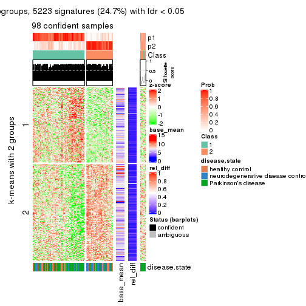
get_signatures(res, k = 3)
get_signatures(res, k = 4)
get_signatures(res, k = 5)
get_signatures(res, k = 6)
Signature heatmaps where rows are not scaled:
get_signatures(res, k = 2, scale_rows = FALSE)
get_signatures(res, k = 3, scale_rows = FALSE)
get_signatures(res, k = 4, scale_rows = FALSE)
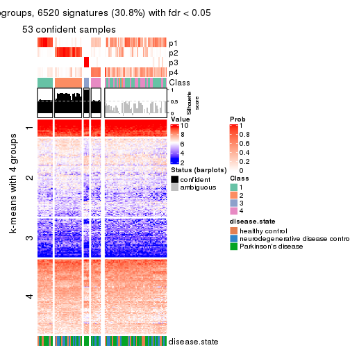
get_signatures(res, k = 5, scale_rows = FALSE)
get_signatures(res, k = 6, scale_rows = FALSE)
Compare the overlap of signatures from different k:
compare_signatures(res)
get_signature() returns a data frame invisibly. TO get the list of signatures, the function
call should be assigned to a variable explicitly. In following code, if plot argument is set
to FALSE, no heatmap is plotted while only the differential analysis is performed.
# code only for demonstration
tb = get_signature(res, k = ..., plot = FALSE)
An example of the output of tb is:
#> which_row fdr mean_1 mean_2 scaled_mean_1 scaled_mean_2 km
#> 1 38 0.042760348 8.373488 9.131774 -0.5533452 0.5164555 1
#> 2 40 0.018707592 7.106213 8.469186 -0.6173731 0.5762149 1
#> 3 55 0.019134737 10.221463 11.207825 -0.6159697 0.5749050 1
#> 4 59 0.006059896 5.921854 7.869574 -0.6899429 0.6439467 1
#> 5 60 0.018055526 8.928898 10.211722 -0.6204761 0.5791110 1
#> 6 98 0.009384629 15.714769 14.887706 0.6635654 -0.6193277 2
...
The columns in tb are:
which_row: row indices corresponding to the input matrix.fdr: FDR for the differential test. mean_x: The mean value in group x.scaled_mean_x: The mean value in group x after rows are scaled.km: Row groups if k-means clustering is applied to rows.UMAP plot which shows how samples are separated.
dimension_reduction(res, k = 2, method = "UMAP")
dimension_reduction(res, k = 3, method = "UMAP")
dimension_reduction(res, k = 4, method = "UMAP")
dimension_reduction(res, k = 5, method = "UMAP")
dimension_reduction(res, k = 6, method = "UMAP")
Following heatmap shows how subgroups are split when increasing k:
collect_classes(res)
Test correlation between subgroups and known annotations. If the known annotation is numeric, one-way ANOVA test is applied, and if the known annotation is discrete, chi-squared contingency table test is applied.
test_to_known_factors(res)
#> n disease.state(p) k
#> SD:pam 98 0.1164 2
#> SD:pam 98 0.0721 3
#> SD:pam 53 0.0329 4
#> SD:pam 45 0.0461 5
#> SD:pam 55 0.0181 6
If matrix rows can be associated to genes, consider to use functional_enrichment(res,
...) to perform function enrichment for the signature genes. See this vignette for more detailed explanations.
The object with results only for a single top-value method and a single partition method can be extracted as:
res = res_list["SD", "mclust"]
# you can also extract it by
# res = res_list["SD:mclust"]
A summary of res and all the functions that can be applied to it:
res
#> A 'ConsensusPartition' object with k = 2, 3, 4, 5, 6.
#> On a matrix with 21168 rows and 105 columns.
#> Top rows (1000, 2000, 3000, 4000, 5000) are extracted by 'SD' method.
#> Subgroups are detected by 'mclust' method.
#> Performed in total 1250 partitions by row resampling.
#> Best k for subgroups seems to be 2.
#>
#> Following methods can be applied to this 'ConsensusPartition' object:
#> [1] "cola_report" "collect_classes" "collect_plots"
#> [4] "collect_stats" "colnames" "compare_signatures"
#> [7] "consensus_heatmap" "dimension_reduction" "functional_enrichment"
#> [10] "get_anno_col" "get_anno" "get_classes"
#> [13] "get_consensus" "get_matrix" "get_membership"
#> [16] "get_param" "get_signatures" "get_stats"
#> [19] "is_best_k" "is_stable_k" "membership_heatmap"
#> [22] "ncol" "nrow" "plot_ecdf"
#> [25] "rownames" "select_partition_number" "show"
#> [28] "suggest_best_k" "test_to_known_factors"
collect_plots() function collects all the plots made from res for all k (number of partitions)
into one single page to provide an easy and fast comparison between different k.
collect_plots(res)
The plots are:
k and the heatmap of
predicted classes for each k.k.k.k.All the plots in panels can be made by individual functions and they are plotted later in this section.
select_partition_number() produces several plots showing different
statistics for choosing “optimized” k. There are following statistics:
k;k, the area increased is defined as \(A_k - A_{k-1}\).The detailed explanations of these statistics can be found in the cola vignette.
Generally speaking, lower PAC score, higher mean silhouette score or higher
concordance corresponds to better partition. Rand index and Jaccard index
measure how similar the current partition is compared to partition with k-1.
If they are too similar, we won't accept k is better than k-1.
select_partition_number(res)
The numeric values for all these statistics can be obtained by get_stats().
get_stats(res)
#> k 1-PAC mean_silhouette concordance area_increased Rand Jaccard
#> 2 2 1.000 0.976 0.908 0.2770 0.726 0.726
#> 3 3 0.491 0.587 0.774 0.8971 0.807 0.737
#> 4 4 0.704 0.849 0.908 0.2470 0.732 0.537
#> 5 5 0.775 0.838 0.906 0.0606 0.952 0.865
#> 6 6 0.745 0.760 0.869 0.0791 0.923 0.767
suggest_best_k() suggests the best \(k\) based on these statistics. The rules are as follows:
suggest_best_k(res)
#> [1] 2
Following shows the table of the partitions (You need to click the show/hide
code output link to see it). The membership matrix (columns with name p*)
is inferred by
clue::cl_consensus()
function with the SE method. Basically the value in the membership matrix
represents the probability to belong to a certain group. The finall class
label for an item is determined with the group with highest probability it
belongs to.
In get_classes() function, the entropy is calculated from the membership
matrix and the silhouette score is calculated from the consensus matrix.
cbind(get_classes(res, k = 2), get_membership(res, k = 2))
#> class entropy silhouette p1 p2
#> GSM153405 1 0.000 0.976 1.000 0.000
#> GSM153406 1 0.000 0.976 1.000 0.000
#> GSM153419 1 0.000 0.976 1.000 0.000
#> GSM153423 2 0.000 0.993 0.000 1.000
#> GSM153425 1 0.000 0.976 1.000 0.000
#> GSM153427 2 0.963 0.346 0.388 0.612
#> GSM153428 2 0.000 0.993 0.000 1.000
#> GSM153429 2 0.000 0.993 0.000 1.000
#> GSM153433 2 0.000 0.993 0.000 1.000
#> GSM153444 2 0.000 0.993 0.000 1.000
#> GSM153448 2 0.000 0.993 0.000 1.000
#> GSM153451 2 0.000 0.993 0.000 1.000
#> GSM153452 2 0.000 0.993 0.000 1.000
#> GSM153477 2 0.000 0.993 0.000 1.000
#> GSM153479 2 0.000 0.993 0.000 1.000
#> GSM153484 2 0.000 0.993 0.000 1.000
#> GSM153488 2 0.000 0.993 0.000 1.000
#> GSM153496 2 0.000 0.993 0.000 1.000
#> GSM153497 2 0.000 0.993 0.000 1.000
#> GSM153500 2 0.000 0.993 0.000 1.000
#> GSM153503 2 0.000 0.993 0.000 1.000
#> GSM153508 2 0.000 0.993 0.000 1.000
#> GSM153409 2 0.000 0.993 0.000 1.000
#> GSM153426 2 0.000 0.993 0.000 1.000
#> GSM153431 2 0.000 0.993 0.000 1.000
#> GSM153438 2 0.000 0.993 0.000 1.000
#> GSM153440 2 0.671 0.779 0.176 0.824
#> GSM153447 2 0.000 0.993 0.000 1.000
#> GSM153450 2 0.000 0.993 0.000 1.000
#> GSM153456 2 0.000 0.993 0.000 1.000
#> GSM153457 2 0.000 0.993 0.000 1.000
#> GSM153458 2 0.000 0.993 0.000 1.000
#> GSM153459 2 0.000 0.993 0.000 1.000
#> GSM153460 2 0.000 0.993 0.000 1.000
#> GSM153461 2 0.000 0.993 0.000 1.000
#> GSM153463 2 0.000 0.993 0.000 1.000
#> GSM153464 2 0.000 0.993 0.000 1.000
#> GSM153466 2 0.000 0.993 0.000 1.000
#> GSM153467 2 0.000 0.993 0.000 1.000
#> GSM153468 2 0.000 0.993 0.000 1.000
#> GSM153469 2 0.000 0.993 0.000 1.000
#> GSM153470 2 0.000 0.993 0.000 1.000
#> GSM153471 2 0.000 0.993 0.000 1.000
#> GSM153472 2 0.000 0.993 0.000 1.000
#> GSM153473 2 0.000 0.993 0.000 1.000
#> GSM153474 2 0.000 0.993 0.000 1.000
#> GSM153475 2 0.000 0.993 0.000 1.000
#> GSM153476 2 0.118 0.977 0.016 0.984
#> GSM153478 2 0.000 0.993 0.000 1.000
#> GSM153480 2 0.000 0.993 0.000 1.000
#> GSM153486 2 0.000 0.993 0.000 1.000
#> GSM153487 2 0.000 0.993 0.000 1.000
#> GSM153499 2 0.000 0.993 0.000 1.000
#> GSM153504 2 0.000 0.993 0.000 1.000
#> GSM153507 2 0.000 0.993 0.000 1.000
#> GSM153404 1 0.000 0.976 1.000 0.000
#> GSM153407 1 0.961 0.365 0.616 0.384
#> GSM153408 1 0.000 0.976 1.000 0.000
#> GSM153410 1 0.000 0.976 1.000 0.000
#> GSM153411 1 0.000 0.976 1.000 0.000
#> GSM153412 1 0.000 0.976 1.000 0.000
#> GSM153413 1 0.000 0.976 1.000 0.000
#> GSM153414 2 0.000 0.993 0.000 1.000
#> GSM153415 1 0.000 0.976 1.000 0.000
#> GSM153416 2 0.000 0.993 0.000 1.000
#> GSM153417 1 0.000 0.976 1.000 0.000
#> GSM153418 1 0.000 0.976 1.000 0.000
#> GSM153420 1 0.000 0.976 1.000 0.000
#> GSM153421 1 0.000 0.976 1.000 0.000
#> GSM153422 1 0.000 0.976 1.000 0.000
#> GSM153424 2 0.000 0.993 0.000 1.000
#> GSM153430 2 0.000 0.993 0.000 1.000
#> GSM153432 2 0.000 0.993 0.000 1.000
#> GSM153434 2 0.000 0.993 0.000 1.000
#> GSM153435 2 0.000 0.993 0.000 1.000
#> GSM153436 2 0.000 0.993 0.000 1.000
#> GSM153437 2 0.000 0.993 0.000 1.000
#> GSM153439 2 0.000 0.993 0.000 1.000
#> GSM153441 2 0.000 0.993 0.000 1.000
#> GSM153442 2 0.000 0.993 0.000 1.000
#> GSM153443 2 0.000 0.993 0.000 1.000
#> GSM153445 2 0.000 0.993 0.000 1.000
#> GSM153446 2 0.000 0.993 0.000 1.000
#> GSM153449 2 0.000 0.993 0.000 1.000
#> GSM153453 2 0.000 0.993 0.000 1.000
#> GSM153454 2 0.000 0.993 0.000 1.000
#> GSM153455 2 0.000 0.993 0.000 1.000
#> GSM153462 2 0.000 0.993 0.000 1.000
#> GSM153465 2 0.000 0.993 0.000 1.000
#> GSM153481 2 0.000 0.993 0.000 1.000
#> GSM153482 2 0.000 0.993 0.000 1.000
#> GSM153483 2 0.000 0.993 0.000 1.000
#> GSM153485 2 0.000 0.993 0.000 1.000
#> GSM153489 2 0.000 0.993 0.000 1.000
#> GSM153490 2 0.000 0.993 0.000 1.000
#> GSM153491 2 0.000 0.993 0.000 1.000
#> GSM153492 2 0.000 0.993 0.000 1.000
#> GSM153493 2 0.000 0.993 0.000 1.000
#> GSM153494 2 0.000 0.993 0.000 1.000
#> GSM153495 2 0.000 0.993 0.000 1.000
#> GSM153498 2 0.000 0.993 0.000 1.000
#> GSM153501 2 0.000 0.993 0.000 1.000
#> GSM153502 2 0.000 0.993 0.000 1.000
#> GSM153505 2 0.000 0.993 0.000 1.000
#> GSM153506 2 0.000 0.993 0.000 1.000
cbind(get_classes(res, k = 3), get_membership(res, k = 3))
#> class entropy silhouette p1 p2 p3
#> GSM153405 3 0.6244 0.815 0.440 0.000 0.560
#> GSM153406 3 0.6244 0.815 0.440 0.000 0.560
#> GSM153419 3 0.6244 0.815 0.440 0.000 0.560
#> GSM153423 2 0.6244 0.500 0.000 0.560 0.440
#> GSM153425 3 0.6079 0.779 0.388 0.000 0.612
#> GSM153427 3 0.9197 -0.130 0.212 0.252 0.536
#> GSM153428 2 0.7814 0.457 0.052 0.512 0.436
#> GSM153429 2 0.1289 0.657 0.032 0.968 0.000
#> GSM153433 2 0.2945 0.588 0.088 0.908 0.004
#> GSM153444 2 0.6244 0.500 0.000 0.560 0.440
#> GSM153448 2 0.2711 0.668 0.000 0.912 0.088
#> GSM153451 2 0.6460 0.497 0.004 0.556 0.440
#> GSM153452 2 0.6897 0.486 0.016 0.548 0.436
#> GSM153477 2 0.0000 0.673 0.000 1.000 0.000
#> GSM153479 2 0.0237 0.675 0.000 0.996 0.004
#> GSM153484 2 0.0424 0.669 0.008 0.992 0.000
#> GSM153488 2 0.0892 0.662 0.020 0.980 0.000
#> GSM153496 2 0.3619 0.495 0.136 0.864 0.000
#> GSM153497 2 0.6460 0.497 0.004 0.556 0.440
#> GSM153500 1 0.6252 0.899 0.556 0.444 0.000
#> GSM153503 1 0.6260 0.901 0.552 0.448 0.000
#> GSM153508 1 0.6483 0.897 0.544 0.452 0.004
#> GSM153409 2 0.6244 0.500 0.000 0.560 0.440
#> GSM153426 2 0.5968 0.541 0.000 0.636 0.364
#> GSM153431 2 0.7406 0.463 0.044 0.596 0.360
#> GSM153438 2 0.5733 0.561 0.000 0.676 0.324
#> GSM153440 3 0.9877 -0.284 0.316 0.276 0.408
#> GSM153447 3 0.9994 -0.358 0.340 0.316 0.344
#> GSM153450 2 0.6244 0.500 0.000 0.560 0.440
#> GSM153456 2 0.6460 0.497 0.004 0.556 0.440
#> GSM153457 2 0.6244 0.500 0.000 0.560 0.440
#> GSM153458 2 0.6244 0.500 0.000 0.560 0.440
#> GSM153459 2 0.6244 0.500 0.000 0.560 0.440
#> GSM153460 2 0.6244 0.500 0.000 0.560 0.440
#> GSM153461 2 0.6763 0.493 0.012 0.552 0.436
#> GSM153463 1 0.9027 0.381 0.532 0.160 0.308
#> GSM153464 2 0.2796 0.675 0.000 0.908 0.092
#> GSM153466 2 0.0747 0.667 0.016 0.984 0.000
#> GSM153467 2 0.3816 0.658 0.000 0.852 0.148
#> GSM153468 2 0.0661 0.671 0.008 0.988 0.004
#> GSM153469 2 0.0829 0.676 0.004 0.984 0.012
#> GSM153470 2 0.0237 0.671 0.004 0.996 0.000
#> GSM153471 2 0.0475 0.673 0.004 0.992 0.004
#> GSM153472 2 0.3941 0.442 0.156 0.844 0.000
#> GSM153473 2 0.2400 0.621 0.064 0.932 0.004
#> GSM153474 1 0.6617 0.897 0.556 0.436 0.008
#> GSM153475 2 0.2448 0.599 0.076 0.924 0.000
#> GSM153476 2 0.5678 -0.286 0.316 0.684 0.000
#> GSM153478 2 0.3539 0.570 0.100 0.888 0.012
#> GSM153480 2 0.2878 0.674 0.000 0.904 0.096
#> GSM153486 2 0.2356 0.681 0.000 0.928 0.072
#> GSM153487 2 0.0592 0.666 0.012 0.988 0.000
#> GSM153499 2 0.0237 0.671 0.004 0.996 0.000
#> GSM153504 2 0.4784 0.282 0.200 0.796 0.004
#> GSM153507 2 0.1399 0.657 0.028 0.968 0.004
#> GSM153404 3 0.6244 0.815 0.440 0.000 0.560
#> GSM153407 3 0.9436 -0.172 0.256 0.240 0.504
#> GSM153408 3 0.6244 0.815 0.440 0.000 0.560
#> GSM153410 3 0.6244 0.815 0.440 0.000 0.560
#> GSM153411 3 0.6244 0.815 0.440 0.000 0.560
#> GSM153412 3 0.6244 0.815 0.440 0.000 0.560
#> GSM153413 3 0.6244 0.815 0.440 0.000 0.560
#> GSM153414 2 0.6625 0.495 0.008 0.552 0.440
#> GSM153415 3 0.6244 0.815 0.440 0.000 0.560
#> GSM153416 2 0.6225 0.505 0.000 0.568 0.432
#> GSM153417 3 0.6244 0.815 0.440 0.000 0.560
#> GSM153418 3 0.6244 0.815 0.440 0.000 0.560
#> GSM153420 3 0.6244 0.815 0.440 0.000 0.560
#> GSM153421 3 0.6244 0.815 0.440 0.000 0.560
#> GSM153422 3 0.6244 0.815 0.440 0.000 0.560
#> GSM153424 2 0.7729 0.461 0.048 0.516 0.436
#> GSM153430 2 0.2356 0.613 0.072 0.928 0.000
#> GSM153432 2 0.0424 0.677 0.000 0.992 0.008
#> GSM153434 2 0.3310 0.665 0.028 0.908 0.064
#> GSM153435 2 0.2711 0.675 0.000 0.912 0.088
#> GSM153436 2 0.7648 0.469 0.048 0.552 0.400
#> GSM153437 2 0.3116 0.672 0.000 0.892 0.108
#> GSM153439 2 0.0592 0.669 0.012 0.988 0.000
#> GSM153441 2 0.2680 0.682 0.008 0.924 0.068
#> GSM153442 2 0.6393 0.597 0.048 0.736 0.216
#> GSM153443 2 0.3412 0.668 0.000 0.876 0.124
#> GSM153445 2 0.2796 0.675 0.000 0.908 0.092
#> GSM153446 2 0.3192 0.671 0.000 0.888 0.112
#> GSM153449 2 0.1031 0.661 0.024 0.976 0.000
#> GSM153453 2 0.3551 0.490 0.132 0.868 0.000
#> GSM153454 1 0.6617 0.897 0.556 0.436 0.008
#> GSM153455 2 0.0424 0.669 0.008 0.992 0.000
#> GSM153462 2 0.2878 0.674 0.000 0.904 0.096
#> GSM153465 2 0.0592 0.678 0.000 0.988 0.012
#> GSM153481 2 0.2173 0.680 0.008 0.944 0.048
#> GSM153482 2 0.0747 0.665 0.016 0.984 0.000
#> GSM153483 2 0.1411 0.680 0.000 0.964 0.036
#> GSM153485 2 0.0424 0.669 0.008 0.992 0.000
#> GSM153489 2 0.0747 0.666 0.016 0.984 0.000
#> GSM153490 2 0.5859 -0.421 0.344 0.656 0.000
#> GSM153491 2 0.3551 0.502 0.132 0.868 0.000
#> GSM153492 1 0.6305 0.866 0.516 0.484 0.000
#> GSM153493 1 0.6286 0.892 0.536 0.464 0.000
#> GSM153494 2 0.0424 0.677 0.000 0.992 0.008
#> GSM153495 1 0.6309 0.833 0.500 0.500 0.000
#> GSM153498 2 0.3192 0.538 0.112 0.888 0.000
#> GSM153501 2 0.6308 -0.832 0.492 0.508 0.000
#> GSM153502 2 0.3272 0.543 0.104 0.892 0.004
#> GSM153505 1 0.6274 0.899 0.544 0.456 0.000
#> GSM153506 2 0.1636 0.673 0.020 0.964 0.016
cbind(get_classes(res, k = 4), get_membership(res, k = 4))
#> class entropy silhouette p1 p2 p3 p4
#> GSM153405 3 0.2310 0.937 0.028 0.004 0.928 0.040
#> GSM153406 3 0.0000 0.949 0.000 0.000 1.000 0.000
#> GSM153419 3 0.0000 0.949 0.000 0.000 1.000 0.000
#> GSM153423 4 0.2589 0.920 0.000 0.116 0.000 0.884
#> GSM153425 3 0.5109 0.802 0.060 0.000 0.744 0.196
#> GSM153427 4 0.1953 0.909 0.012 0.044 0.004 0.940
#> GSM153428 4 0.1398 0.907 0.004 0.040 0.000 0.956
#> GSM153429 2 0.0895 0.896 0.020 0.976 0.000 0.004
#> GSM153433 2 0.0657 0.898 0.012 0.984 0.000 0.004
#> GSM153444 4 0.2149 0.934 0.000 0.088 0.000 0.912
#> GSM153448 2 0.0592 0.897 0.000 0.984 0.000 0.016
#> GSM153451 4 0.2704 0.913 0.000 0.124 0.000 0.876
#> GSM153452 4 0.2149 0.934 0.000 0.088 0.000 0.912
#> GSM153477 2 0.0937 0.899 0.012 0.976 0.000 0.012
#> GSM153479 2 0.0000 0.898 0.000 1.000 0.000 0.000
#> GSM153484 2 0.0000 0.898 0.000 1.000 0.000 0.000
#> GSM153488 2 0.0336 0.897 0.008 0.992 0.000 0.000
#> GSM153496 2 0.2704 0.830 0.124 0.876 0.000 0.000
#> GSM153497 4 0.4040 0.746 0.000 0.248 0.000 0.752
#> GSM153500 1 0.1716 0.862 0.936 0.064 0.000 0.000
#> GSM153503 1 0.2081 0.870 0.916 0.084 0.000 0.000
#> GSM153508 1 0.2011 0.867 0.920 0.080 0.000 0.000
#> GSM153409 4 0.2149 0.934 0.000 0.088 0.000 0.912
#> GSM153426 4 0.2654 0.925 0.004 0.108 0.000 0.888
#> GSM153431 4 0.1302 0.910 0.000 0.044 0.000 0.956
#> GSM153438 4 0.4454 0.644 0.000 0.308 0.000 0.692
#> GSM153440 4 0.1022 0.897 0.000 0.032 0.000 0.968
#> GSM153447 4 0.3479 0.822 0.012 0.148 0.000 0.840
#> GSM153450 4 0.2081 0.933 0.000 0.084 0.000 0.916
#> GSM153456 4 0.2149 0.934 0.000 0.088 0.000 0.912
#> GSM153457 4 0.2589 0.920 0.000 0.116 0.000 0.884
#> GSM153458 4 0.2149 0.934 0.000 0.088 0.000 0.912
#> GSM153459 4 0.2149 0.934 0.000 0.088 0.000 0.912
#> GSM153460 4 0.2216 0.932 0.000 0.092 0.000 0.908
#> GSM153461 4 0.1867 0.928 0.000 0.072 0.000 0.928
#> GSM153463 1 0.6688 0.316 0.492 0.420 0.000 0.088
#> GSM153464 2 0.1389 0.882 0.000 0.952 0.000 0.048
#> GSM153466 2 0.0188 0.898 0.004 0.996 0.000 0.000
#> GSM153467 2 0.0817 0.894 0.000 0.976 0.000 0.024
#> GSM153468 2 0.0000 0.898 0.000 1.000 0.000 0.000
#> GSM153469 2 0.0000 0.898 0.000 1.000 0.000 0.000
#> GSM153470 2 0.0000 0.898 0.000 1.000 0.000 0.000
#> GSM153471 2 0.0000 0.898 0.000 1.000 0.000 0.000
#> GSM153472 2 0.4522 0.535 0.320 0.680 0.000 0.000
#> GSM153473 2 0.2011 0.859 0.080 0.920 0.000 0.000
#> GSM153474 1 0.1890 0.856 0.936 0.056 0.000 0.008
#> GSM153475 2 0.0707 0.897 0.020 0.980 0.000 0.000
#> GSM153476 2 0.2161 0.879 0.048 0.932 0.004 0.016
#> GSM153478 2 0.1767 0.884 0.012 0.944 0.000 0.044
#> GSM153480 2 0.2589 0.820 0.000 0.884 0.000 0.116
#> GSM153486 2 0.0336 0.898 0.000 0.992 0.000 0.008
#> GSM153487 2 0.2469 0.841 0.108 0.892 0.000 0.000
#> GSM153499 2 0.3219 0.777 0.164 0.836 0.000 0.000
#> GSM153504 1 0.4643 0.539 0.656 0.344 0.000 0.000
#> GSM153507 2 0.3486 0.752 0.188 0.812 0.000 0.000
#> GSM153404 3 0.0000 0.949 0.000 0.000 1.000 0.000
#> GSM153407 4 0.1022 0.897 0.000 0.032 0.000 0.968
#> GSM153408 3 0.0000 0.949 0.000 0.000 1.000 0.000
#> GSM153410 3 0.0000 0.949 0.000 0.000 1.000 0.000
#> GSM153411 3 0.3398 0.925 0.060 0.000 0.872 0.068
#> GSM153412 3 0.0000 0.949 0.000 0.000 1.000 0.000
#> GSM153413 3 0.0000 0.949 0.000 0.000 1.000 0.000
#> GSM153414 4 0.2011 0.932 0.000 0.080 0.000 0.920
#> GSM153415 3 0.0000 0.949 0.000 0.000 1.000 0.000
#> GSM153416 4 0.3257 0.884 0.004 0.152 0.000 0.844
#> GSM153417 3 0.3398 0.925 0.060 0.000 0.872 0.068
#> GSM153418 3 0.0000 0.949 0.000 0.000 1.000 0.000
#> GSM153420 3 0.3398 0.925 0.060 0.000 0.872 0.068
#> GSM153421 3 0.3398 0.925 0.060 0.000 0.872 0.068
#> GSM153422 3 0.3398 0.925 0.060 0.000 0.872 0.068
#> GSM153424 4 0.1398 0.907 0.004 0.040 0.000 0.956
#> GSM153430 2 0.0817 0.893 0.024 0.976 0.000 0.000
#> GSM153432 2 0.1118 0.889 0.000 0.964 0.000 0.036
#> GSM153434 2 0.2654 0.824 0.004 0.888 0.000 0.108
#> GSM153435 2 0.0707 0.895 0.000 0.980 0.000 0.020
#> GSM153436 4 0.3626 0.839 0.004 0.184 0.000 0.812
#> GSM153437 2 0.4955 0.117 0.000 0.556 0.000 0.444
#> GSM153439 2 0.0524 0.899 0.008 0.988 0.000 0.004
#> GSM153441 2 0.2011 0.855 0.000 0.920 0.000 0.080
#> GSM153442 2 0.3498 0.767 0.008 0.832 0.000 0.160
#> GSM153443 2 0.1902 0.868 0.004 0.932 0.000 0.064
#> GSM153445 2 0.1022 0.891 0.000 0.968 0.000 0.032
#> GSM153446 2 0.4560 0.551 0.004 0.700 0.000 0.296
#> GSM153449 2 0.0336 0.897 0.008 0.992 0.000 0.000
#> GSM153453 2 0.2868 0.817 0.136 0.864 0.000 0.000
#> GSM153454 1 0.2021 0.855 0.932 0.056 0.000 0.012
#> GSM153455 2 0.0188 0.898 0.004 0.996 0.000 0.000
#> GSM153462 2 0.0707 0.895 0.000 0.980 0.000 0.020
#> GSM153465 2 0.0817 0.894 0.000 0.976 0.000 0.024
#> GSM153481 2 0.0336 0.898 0.000 0.992 0.000 0.008
#> GSM153482 2 0.0469 0.897 0.012 0.988 0.000 0.000
#> GSM153483 2 0.0000 0.898 0.000 1.000 0.000 0.000
#> GSM153485 2 0.0188 0.898 0.004 0.996 0.000 0.000
#> GSM153489 2 0.0817 0.893 0.024 0.976 0.000 0.000
#> GSM153490 2 0.4830 0.296 0.392 0.608 0.000 0.000
#> GSM153491 2 0.3486 0.760 0.188 0.812 0.000 0.000
#> GSM153492 2 0.4925 0.210 0.428 0.572 0.000 0.000
#> GSM153493 1 0.1940 0.870 0.924 0.076 0.000 0.000
#> GSM153494 2 0.0188 0.898 0.004 0.996 0.000 0.000
#> GSM153495 1 0.3610 0.782 0.800 0.200 0.000 0.000
#> GSM153498 2 0.1716 0.878 0.064 0.936 0.000 0.000
#> GSM153501 1 0.2081 0.870 0.916 0.084 0.000 0.000
#> GSM153502 2 0.4072 0.650 0.252 0.748 0.000 0.000
#> GSM153505 1 0.2081 0.870 0.916 0.084 0.000 0.000
#> GSM153506 2 0.2973 0.804 0.144 0.856 0.000 0.000
cbind(get_classes(res, k = 5), get_membership(res, k = 5))
#> class entropy silhouette p1 p2 p3 p4 p5
#> GSM153405 5 0.4420 0.6369 0.000 0.004 0.448 0.000 0.548
#> GSM153406 3 0.0000 0.9978 0.000 0.000 1.000 0.000 0.000
#> GSM153419 3 0.0404 0.9825 0.000 0.000 0.988 0.000 0.012
#> GSM153423 2 0.0000 0.9150 0.000 1.000 0.000 0.000 0.000
#> GSM153425 5 0.2554 0.6978 0.000 0.036 0.072 0.000 0.892
#> GSM153427 2 0.3388 0.7870 0.000 0.792 0.000 0.008 0.200
#> GSM153428 2 0.1988 0.8869 0.016 0.928 0.000 0.008 0.048
#> GSM153429 1 0.0510 0.8966 0.984 0.016 0.000 0.000 0.000
#> GSM153433 1 0.1043 0.8877 0.960 0.000 0.000 0.000 0.040
#> GSM153444 2 0.0162 0.9145 0.000 0.996 0.000 0.004 0.000
#> GSM153448 1 0.1121 0.8858 0.956 0.000 0.000 0.000 0.044
#> GSM153451 2 0.0000 0.9150 0.000 1.000 0.000 0.000 0.000
#> GSM153452 2 0.0898 0.9090 0.000 0.972 0.000 0.008 0.020
#> GSM153477 1 0.0609 0.8963 0.980 0.020 0.000 0.000 0.000
#> GSM153479 1 0.0000 0.8951 1.000 0.000 0.000 0.000 0.000
#> GSM153484 1 0.0290 0.8969 0.992 0.008 0.000 0.000 0.000
#> GSM153488 1 0.0510 0.8947 0.984 0.000 0.000 0.016 0.000
#> GSM153496 1 0.3194 0.8011 0.832 0.000 0.000 0.148 0.020
#> GSM153497 2 0.2280 0.7943 0.120 0.880 0.000 0.000 0.000
#> GSM153500 4 0.0290 0.8484 0.008 0.000 0.000 0.992 0.000
#> GSM153503 4 0.0451 0.8472 0.008 0.000 0.000 0.988 0.004
#> GSM153508 4 0.0451 0.8472 0.008 0.000 0.000 0.988 0.004
#> GSM153409 2 0.0290 0.9135 0.000 0.992 0.000 0.008 0.000
#> GSM153426 2 0.0000 0.9150 0.000 1.000 0.000 0.000 0.000
#> GSM153431 2 0.1484 0.8992 0.000 0.944 0.000 0.008 0.048
#> GSM153438 2 0.1478 0.8715 0.064 0.936 0.000 0.000 0.000
#> GSM153440 2 0.2929 0.8281 0.000 0.840 0.000 0.008 0.152
#> GSM153447 2 0.3977 0.7981 0.100 0.812 0.000 0.008 0.080
#> GSM153450 2 0.0000 0.9150 0.000 1.000 0.000 0.000 0.000
#> GSM153456 2 0.0000 0.9150 0.000 1.000 0.000 0.000 0.000
#> GSM153457 2 0.0000 0.9150 0.000 1.000 0.000 0.000 0.000
#> GSM153458 2 0.0000 0.9150 0.000 1.000 0.000 0.000 0.000
#> GSM153459 2 0.0000 0.9150 0.000 1.000 0.000 0.000 0.000
#> GSM153460 2 0.0000 0.9150 0.000 1.000 0.000 0.000 0.000
#> GSM153461 2 0.0451 0.9132 0.000 0.988 0.000 0.008 0.004
#> GSM153463 1 0.5604 0.5104 0.636 0.084 0.000 0.268 0.012
#> GSM153464 1 0.1410 0.8809 0.940 0.060 0.000 0.000 0.000
#> GSM153466 1 0.0451 0.8960 0.988 0.000 0.000 0.004 0.008
#> GSM153467 1 0.1750 0.8871 0.936 0.036 0.000 0.000 0.028
#> GSM153468 1 0.0613 0.8961 0.984 0.004 0.000 0.008 0.004
#> GSM153469 1 0.0162 0.8961 0.996 0.004 0.000 0.000 0.000
#> GSM153470 1 0.0404 0.8967 0.988 0.012 0.000 0.000 0.000
#> GSM153471 1 0.0693 0.8977 0.980 0.012 0.000 0.008 0.000
#> GSM153472 1 0.4752 0.2933 0.568 0.000 0.000 0.412 0.020
#> GSM153473 1 0.1943 0.8685 0.924 0.000 0.000 0.056 0.020
#> GSM153474 4 0.0324 0.8415 0.004 0.000 0.000 0.992 0.004
#> GSM153475 1 0.0162 0.8961 0.996 0.004 0.000 0.000 0.000
#> GSM153476 1 0.1018 0.8970 0.968 0.016 0.000 0.000 0.016
#> GSM153478 1 0.1651 0.8828 0.944 0.012 0.000 0.008 0.036
#> GSM153480 1 0.2230 0.8378 0.884 0.116 0.000 0.000 0.000
#> GSM153486 1 0.0963 0.8926 0.964 0.036 0.000 0.000 0.000
#> GSM153487 1 0.2669 0.8312 0.876 0.000 0.000 0.104 0.020
#> GSM153499 1 0.3695 0.7654 0.800 0.000 0.000 0.164 0.036
#> GSM153504 4 0.3183 0.7229 0.156 0.000 0.000 0.828 0.016
#> GSM153507 1 0.3656 0.7332 0.784 0.000 0.000 0.196 0.020
#> GSM153404 3 0.0000 0.9978 0.000 0.000 1.000 0.000 0.000
#> GSM153407 2 0.3421 0.7832 0.000 0.788 0.000 0.008 0.204
#> GSM153408 3 0.0000 0.9978 0.000 0.000 1.000 0.000 0.000
#> GSM153410 3 0.0000 0.9978 0.000 0.000 1.000 0.000 0.000
#> GSM153411 5 0.3661 0.9062 0.000 0.000 0.276 0.000 0.724
#> GSM153412 3 0.0000 0.9978 0.000 0.000 1.000 0.000 0.000
#> GSM153413 3 0.0000 0.9978 0.000 0.000 1.000 0.000 0.000
#> GSM153414 2 0.0162 0.9145 0.000 0.996 0.000 0.004 0.000
#> GSM153415 3 0.0000 0.9978 0.000 0.000 1.000 0.000 0.000
#> GSM153416 2 0.0510 0.9079 0.016 0.984 0.000 0.000 0.000
#> GSM153417 5 0.3661 0.9062 0.000 0.000 0.276 0.000 0.724
#> GSM153418 3 0.0000 0.9978 0.000 0.000 1.000 0.000 0.000
#> GSM153420 5 0.3661 0.9062 0.000 0.000 0.276 0.000 0.724
#> GSM153421 5 0.3661 0.9062 0.000 0.000 0.276 0.000 0.724
#> GSM153422 5 0.3661 0.9062 0.000 0.000 0.276 0.000 0.724
#> GSM153424 2 0.1883 0.8907 0.012 0.932 0.000 0.008 0.048
#> GSM153430 1 0.1282 0.8856 0.952 0.000 0.000 0.004 0.044
#> GSM153432 1 0.0703 0.8960 0.976 0.024 0.000 0.000 0.000
#> GSM153434 1 0.4268 0.7165 0.772 0.172 0.000 0.008 0.048
#> GSM153435 1 0.0963 0.8924 0.964 0.036 0.000 0.000 0.000
#> GSM153436 2 0.3423 0.8144 0.108 0.844 0.000 0.008 0.040
#> GSM153437 2 0.4300 0.0422 0.476 0.524 0.000 0.000 0.000
#> GSM153439 1 0.0510 0.8966 0.984 0.016 0.000 0.000 0.000
#> GSM153441 1 0.3141 0.8156 0.852 0.108 0.000 0.000 0.040
#> GSM153442 1 0.3497 0.7976 0.836 0.112 0.000 0.004 0.048
#> GSM153443 1 0.1892 0.8692 0.916 0.080 0.000 0.000 0.004
#> GSM153445 1 0.1043 0.8908 0.960 0.040 0.000 0.000 0.000
#> GSM153446 1 0.3966 0.5294 0.664 0.336 0.000 0.000 0.000
#> GSM153449 1 0.0703 0.8930 0.976 0.000 0.000 0.000 0.024
#> GSM153453 1 0.3621 0.7370 0.788 0.000 0.000 0.192 0.020
#> GSM153454 4 0.1300 0.8317 0.028 0.000 0.000 0.956 0.016
#> GSM153455 1 0.0404 0.8967 0.988 0.012 0.000 0.000 0.000
#> GSM153462 1 0.0703 0.8964 0.976 0.024 0.000 0.000 0.000
#> GSM153465 1 0.0703 0.8957 0.976 0.024 0.000 0.000 0.000
#> GSM153481 1 0.0510 0.8966 0.984 0.016 0.000 0.000 0.000
#> GSM153482 1 0.0912 0.8912 0.972 0.000 0.000 0.012 0.016
#> GSM153483 1 0.0290 0.8960 0.992 0.000 0.000 0.000 0.008
#> GSM153485 1 0.0579 0.8977 0.984 0.008 0.000 0.000 0.008
#> GSM153489 1 0.0865 0.8915 0.972 0.000 0.000 0.024 0.004
#> GSM153490 1 0.4781 0.2077 0.552 0.000 0.000 0.428 0.020
#> GSM153491 1 0.3586 0.7510 0.792 0.000 0.000 0.188 0.020
#> GSM153492 4 0.4760 0.2451 0.416 0.000 0.000 0.564 0.020
#> GSM153493 4 0.0290 0.8484 0.008 0.000 0.000 0.992 0.000
#> GSM153494 1 0.0566 0.8946 0.984 0.000 0.000 0.012 0.004
#> GSM153495 4 0.3852 0.6381 0.220 0.000 0.000 0.760 0.020
#> GSM153498 1 0.1597 0.8897 0.948 0.008 0.000 0.020 0.024
#> GSM153501 4 0.0671 0.8456 0.016 0.000 0.000 0.980 0.004
#> GSM153502 1 0.4570 0.4387 0.632 0.000 0.000 0.348 0.020
#> GSM153505 4 0.0290 0.8484 0.008 0.000 0.000 0.992 0.000
#> GSM153506 1 0.3705 0.8020 0.816 0.000 0.000 0.120 0.064
cbind(get_classes(res, k = 6), get_membership(res, k = 6))
#> class entropy silhouette p1 p2 p3 p4 p5 p6
#> GSM153405 5 0.4569 0.2925 0.000 0.008 0.408 0.000 0.560 0.024
#> GSM153406 3 0.0000 0.9961 0.000 0.000 1.000 0.000 0.000 0.000
#> GSM153419 3 0.0713 0.9679 0.000 0.000 0.972 0.000 0.028 0.000
#> GSM153423 2 0.0146 0.8428 0.000 0.996 0.000 0.000 0.000 0.004
#> GSM153425 5 0.0458 0.9025 0.000 0.000 0.000 0.000 0.984 0.016
#> GSM153427 2 0.2494 0.7246 0.000 0.864 0.000 0.000 0.016 0.120
#> GSM153428 6 0.3887 0.7483 0.008 0.360 0.000 0.000 0.000 0.632
#> GSM153429 1 0.0000 0.8622 1.000 0.000 0.000 0.000 0.000 0.000
#> GSM153433 1 0.2957 0.8365 0.844 0.004 0.000 0.032 0.000 0.120
#> GSM153444 2 0.0547 0.8359 0.000 0.980 0.000 0.000 0.000 0.020
#> GSM153448 1 0.0547 0.8644 0.980 0.000 0.000 0.000 0.000 0.020
#> GSM153451 2 0.0405 0.8371 0.008 0.988 0.000 0.000 0.000 0.004
#> GSM153452 2 0.2100 0.7388 0.004 0.884 0.000 0.000 0.000 0.112
#> GSM153477 1 0.0000 0.8622 1.000 0.000 0.000 0.000 0.000 0.000
#> GSM153479 1 0.1714 0.8547 0.908 0.000 0.000 0.000 0.000 0.092
#> GSM153484 1 0.0363 0.8644 0.988 0.000 0.000 0.000 0.000 0.012
#> GSM153488 1 0.2212 0.8464 0.880 0.000 0.000 0.008 0.000 0.112
#> GSM153496 1 0.5397 0.4957 0.584 0.000 0.000 0.216 0.000 0.200
#> GSM153497 2 0.2402 0.5997 0.140 0.856 0.000 0.000 0.000 0.004
#> GSM153500 4 0.0000 0.7781 0.000 0.000 0.000 1.000 0.000 0.000
#> GSM153503 4 0.0260 0.7750 0.000 0.000 0.000 0.992 0.000 0.008
#> GSM153508 4 0.0865 0.7678 0.000 0.000 0.000 0.964 0.000 0.036
#> GSM153409 2 0.0547 0.8358 0.000 0.980 0.000 0.000 0.000 0.020
#> GSM153426 2 0.0000 0.8437 0.000 1.000 0.000 0.000 0.000 0.000
#> GSM153431 6 0.3923 0.7448 0.008 0.372 0.000 0.000 0.000 0.620
#> GSM153438 2 0.1267 0.7775 0.060 0.940 0.000 0.000 0.000 0.000
#> GSM153440 6 0.4049 0.6993 0.004 0.412 0.000 0.000 0.004 0.580
#> GSM153447 6 0.3642 0.6930 0.036 0.204 0.000 0.000 0.000 0.760
#> GSM153450 2 0.0790 0.8250 0.000 0.968 0.000 0.000 0.000 0.032
#> GSM153456 2 0.0000 0.8437 0.000 1.000 0.000 0.000 0.000 0.000
#> GSM153457 2 0.0000 0.8437 0.000 1.000 0.000 0.000 0.000 0.000
#> GSM153458 2 0.0000 0.8437 0.000 1.000 0.000 0.000 0.000 0.000
#> GSM153459 2 0.0000 0.8437 0.000 1.000 0.000 0.000 0.000 0.000
#> GSM153460 2 0.0000 0.8437 0.000 1.000 0.000 0.000 0.000 0.000
#> GSM153461 2 0.3076 0.4705 0.000 0.760 0.000 0.000 0.000 0.240
#> GSM153463 6 0.3821 0.1098 0.040 0.000 0.000 0.220 0.000 0.740
#> GSM153464 1 0.1958 0.8144 0.896 0.100 0.000 0.000 0.000 0.004
#> GSM153466 1 0.1814 0.8531 0.900 0.000 0.000 0.000 0.000 0.100
#> GSM153467 1 0.1594 0.8509 0.932 0.052 0.000 0.000 0.000 0.016
#> GSM153468 1 0.2048 0.8466 0.880 0.000 0.000 0.000 0.000 0.120
#> GSM153469 1 0.0260 0.8638 0.992 0.000 0.000 0.000 0.000 0.008
#> GSM153470 1 0.0000 0.8622 1.000 0.000 0.000 0.000 0.000 0.000
#> GSM153471 1 0.0458 0.8646 0.984 0.000 0.000 0.000 0.000 0.016
#> GSM153472 4 0.5634 0.2845 0.348 0.000 0.000 0.492 0.000 0.160
#> GSM153473 4 0.5930 0.1015 0.384 0.000 0.000 0.404 0.000 0.212
#> GSM153474 4 0.0865 0.7628 0.000 0.000 0.000 0.964 0.000 0.036
#> GSM153475 1 0.0790 0.8643 0.968 0.000 0.000 0.000 0.000 0.032
#> GSM153476 1 0.0000 0.8622 1.000 0.000 0.000 0.000 0.000 0.000
#> GSM153478 1 0.2431 0.8390 0.860 0.008 0.000 0.000 0.000 0.132
#> GSM153480 1 0.2402 0.7926 0.856 0.140 0.000 0.000 0.000 0.004
#> GSM153486 1 0.0260 0.8615 0.992 0.008 0.000 0.000 0.000 0.000
#> GSM153487 1 0.4328 0.6953 0.708 0.000 0.000 0.080 0.000 0.212
#> GSM153499 1 0.3952 0.7313 0.736 0.000 0.000 0.052 0.000 0.212
#> GSM153504 4 0.2263 0.7671 0.016 0.000 0.000 0.884 0.000 0.100
#> GSM153507 1 0.5927 -0.0791 0.412 0.000 0.000 0.376 0.000 0.212
#> GSM153404 3 0.0000 0.9961 0.000 0.000 1.000 0.000 0.000 0.000
#> GSM153407 6 0.4184 0.6979 0.000 0.408 0.000 0.000 0.016 0.576
#> GSM153408 3 0.0000 0.9961 0.000 0.000 1.000 0.000 0.000 0.000
#> GSM153410 3 0.0000 0.9961 0.000 0.000 1.000 0.000 0.000 0.000
#> GSM153411 5 0.0458 0.9234 0.000 0.000 0.016 0.000 0.984 0.000
#> GSM153412 3 0.0000 0.9961 0.000 0.000 1.000 0.000 0.000 0.000
#> GSM153413 3 0.0000 0.9961 0.000 0.000 1.000 0.000 0.000 0.000
#> GSM153414 2 0.3133 0.5331 0.008 0.780 0.000 0.000 0.000 0.212
#> GSM153415 3 0.0000 0.9961 0.000 0.000 1.000 0.000 0.000 0.000
#> GSM153416 2 0.0790 0.8180 0.032 0.968 0.000 0.000 0.000 0.000
#> GSM153417 5 0.0458 0.9234 0.000 0.000 0.016 0.000 0.984 0.000
#> GSM153418 3 0.0000 0.9961 0.000 0.000 1.000 0.000 0.000 0.000
#> GSM153420 5 0.0458 0.9234 0.000 0.000 0.016 0.000 0.984 0.000
#> GSM153421 5 0.0458 0.9234 0.000 0.000 0.016 0.000 0.984 0.000
#> GSM153422 5 0.0458 0.9234 0.000 0.000 0.016 0.000 0.984 0.000
#> GSM153424 6 0.3769 0.7501 0.004 0.356 0.000 0.000 0.000 0.640
#> GSM153430 1 0.2333 0.8530 0.884 0.000 0.000 0.024 0.000 0.092
#> GSM153432 1 0.0260 0.8618 0.992 0.008 0.000 0.000 0.000 0.000
#> GSM153434 1 0.3417 0.7362 0.796 0.044 0.000 0.000 0.000 0.160
#> GSM153435 1 0.1082 0.8514 0.956 0.040 0.000 0.000 0.000 0.004
#> GSM153436 6 0.5184 0.6509 0.120 0.296 0.000 0.000 0.000 0.584
#> GSM153437 2 0.3966 0.0966 0.444 0.552 0.000 0.000 0.000 0.004
#> GSM153439 1 0.0000 0.8622 1.000 0.000 0.000 0.000 0.000 0.000
#> GSM153441 1 0.2325 0.8241 0.892 0.048 0.000 0.000 0.000 0.060
#> GSM153442 1 0.3977 0.6938 0.692 0.020 0.000 0.004 0.000 0.284
#> GSM153443 1 0.2006 0.8165 0.892 0.104 0.000 0.000 0.000 0.004
#> GSM153445 1 0.0935 0.8551 0.964 0.032 0.000 0.000 0.000 0.004
#> GSM153446 1 0.3728 0.4870 0.652 0.344 0.000 0.000 0.000 0.004
#> GSM153449 1 0.2006 0.8513 0.892 0.000 0.000 0.004 0.000 0.104
#> GSM153453 1 0.5922 -0.0373 0.420 0.000 0.000 0.368 0.000 0.212
#> GSM153454 4 0.1387 0.7724 0.000 0.000 0.000 0.932 0.000 0.068
#> GSM153455 1 0.0146 0.8631 0.996 0.000 0.000 0.000 0.000 0.004
#> GSM153462 1 0.0777 0.8571 0.972 0.024 0.000 0.000 0.000 0.004
#> GSM153465 1 0.0146 0.8618 0.996 0.004 0.000 0.000 0.000 0.000
#> GSM153481 1 0.0405 0.8607 0.988 0.008 0.000 0.000 0.000 0.004
#> GSM153482 1 0.2730 0.8001 0.808 0.000 0.000 0.000 0.000 0.192
#> GSM153483 1 0.1910 0.8508 0.892 0.000 0.000 0.000 0.000 0.108
#> GSM153485 1 0.1663 0.8578 0.912 0.000 0.000 0.000 0.000 0.088
#> GSM153489 1 0.3088 0.8240 0.832 0.000 0.000 0.048 0.000 0.120
#> GSM153490 4 0.4468 0.6703 0.092 0.000 0.000 0.696 0.000 0.212
#> GSM153491 1 0.5909 -0.0239 0.420 0.000 0.000 0.372 0.000 0.208
#> GSM153492 4 0.3776 0.7100 0.048 0.000 0.000 0.756 0.000 0.196
#> GSM153493 4 0.0146 0.7787 0.000 0.000 0.000 0.996 0.000 0.004
#> GSM153494 1 0.2003 0.8476 0.884 0.000 0.000 0.000 0.000 0.116
#> GSM153495 4 0.2653 0.7515 0.012 0.000 0.000 0.844 0.000 0.144
#> GSM153498 1 0.2669 0.8186 0.836 0.000 0.000 0.008 0.000 0.156
#> GSM153501 4 0.0458 0.7743 0.000 0.000 0.000 0.984 0.000 0.016
#> GSM153502 4 0.4974 0.6200 0.144 0.000 0.000 0.644 0.000 0.212
#> GSM153505 4 0.0000 0.7781 0.000 0.000 0.000 1.000 0.000 0.000
#> GSM153506 1 0.3374 0.7688 0.772 0.000 0.000 0.020 0.000 0.208
Heatmaps for the consensus matrix. It visualizes the probability of two samples to be in a same group.
consensus_heatmap(res, k = 2)
consensus_heatmap(res, k = 3)
consensus_heatmap(res, k = 4)
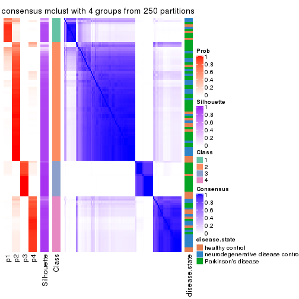
consensus_heatmap(res, k = 5)
consensus_heatmap(res, k = 6)
Heatmaps for the membership of samples in all partitions to see how consistent they are:
membership_heatmap(res, k = 2)
membership_heatmap(res, k = 3)
membership_heatmap(res, k = 4)
membership_heatmap(res, k = 5)
membership_heatmap(res, k = 6)
As soon as we have had the classes for columns, we can look for signatures which are significantly different between classes which can be candidate marks for certain classes. Following are the heatmaps for signatures.
Signature heatmaps where rows are scaled:
get_signatures(res, k = 2)
get_signatures(res, k = 3)
get_signatures(res, k = 4)
get_signatures(res, k = 5)
get_signatures(res, k = 6)
Signature heatmaps where rows are not scaled:
get_signatures(res, k = 2, scale_rows = FALSE)
get_signatures(res, k = 3, scale_rows = FALSE)
get_signatures(res, k = 4, scale_rows = FALSE)
get_signatures(res, k = 5, scale_rows = FALSE)
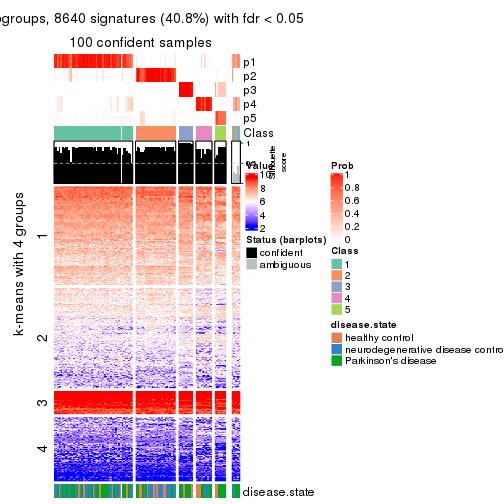
get_signatures(res, k = 6, scale_rows = FALSE)
Compare the overlap of signatures from different k:
compare_signatures(res)
get_signature() returns a data frame invisibly. TO get the list of signatures, the function
call should be assigned to a variable explicitly. In following code, if plot argument is set
to FALSE, no heatmap is plotted while only the differential analysis is performed.
# code only for demonstration
tb = get_signature(res, k = ..., plot = FALSE)
An example of the output of tb is:
#> which_row fdr mean_1 mean_2 scaled_mean_1 scaled_mean_2 km
#> 1 38 0.042760348 8.373488 9.131774 -0.5533452 0.5164555 1
#> 2 40 0.018707592 7.106213 8.469186 -0.6173731 0.5762149 1
#> 3 55 0.019134737 10.221463 11.207825 -0.6159697 0.5749050 1
#> 4 59 0.006059896 5.921854 7.869574 -0.6899429 0.6439467 1
#> 5 60 0.018055526 8.928898 10.211722 -0.6204761 0.5791110 1
#> 6 98 0.009384629 15.714769 14.887706 0.6635654 -0.6193277 2
...
The columns in tb are:
which_row: row indices corresponding to the input matrix.fdr: FDR for the differential test. mean_x: The mean value in group x.scaled_mean_x: The mean value in group x after rows are scaled.km: Row groups if k-means clustering is applied to rows.UMAP plot which shows how samples are separated.
dimension_reduction(res, k = 2, method = "UMAP")
dimension_reduction(res, k = 3, method = "UMAP")
dimension_reduction(res, k = 4, method = "UMAP")
dimension_reduction(res, k = 5, method = "UMAP")
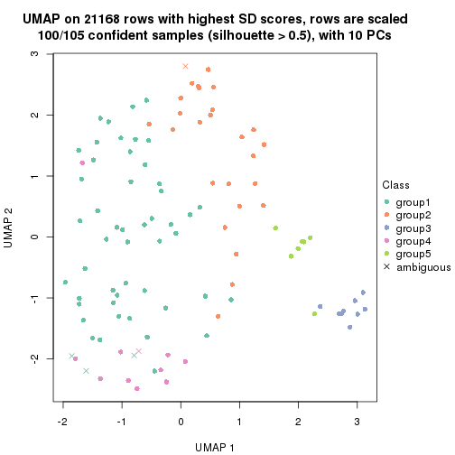
dimension_reduction(res, k = 6, method = "UMAP")
Following heatmap shows how subgroups are split when increasing k:
collect_classes(res)
Test correlation between subgroups and known annotations. If the known annotation is numeric, one-way ANOVA test is applied, and if the known annotation is discrete, chi-squared contingency table test is applied.
test_to_known_factors(res)
#> n disease.state(p) k
#> SD:mclust 103 0.00975 2
#> SD:mclust 75 0.04705 3
#> SD:mclust 101 0.00870 4
#> SD:mclust 100 0.02885 5
#> SD:mclust 94 0.03424 6
If matrix rows can be associated to genes, consider to use functional_enrichment(res,
...) to perform function enrichment for the signature genes. See this vignette for more detailed explanations.
The object with results only for a single top-value method and a single partition method can be extracted as:
res = res_list["SD", "NMF"]
# you can also extract it by
# res = res_list["SD:NMF"]
A summary of res and all the functions that can be applied to it:
res
#> A 'ConsensusPartition' object with k = 2, 3, 4, 5, 6.
#> On a matrix with 21168 rows and 105 columns.
#> Top rows (1000, 2000, 3000, 4000, 5000) are extracted by 'SD' method.
#> Subgroups are detected by 'NMF' method.
#> Performed in total 1250 partitions by row resampling.
#> Best k for subgroups seems to be 2.
#>
#> Following methods can be applied to this 'ConsensusPartition' object:
#> [1] "cola_report" "collect_classes" "collect_plots"
#> [4] "collect_stats" "colnames" "compare_signatures"
#> [7] "consensus_heatmap" "dimension_reduction" "functional_enrichment"
#> [10] "get_anno_col" "get_anno" "get_classes"
#> [13] "get_consensus" "get_matrix" "get_membership"
#> [16] "get_param" "get_signatures" "get_stats"
#> [19] "is_best_k" "is_stable_k" "membership_heatmap"
#> [22] "ncol" "nrow" "plot_ecdf"
#> [25] "rownames" "select_partition_number" "show"
#> [28] "suggest_best_k" "test_to_known_factors"
collect_plots() function collects all the plots made from res for all k (number of partitions)
into one single page to provide an easy and fast comparison between different k.
collect_plots(res)
The plots are:
k and the heatmap of
predicted classes for each k.k.k.k.All the plots in panels can be made by individual functions and they are plotted later in this section.
select_partition_number() produces several plots showing different
statistics for choosing “optimized” k. There are following statistics:
k;k, the area increased is defined as \(A_k - A_{k-1}\).The detailed explanations of these statistics can be found in the cola vignette.
Generally speaking, lower PAC score, higher mean silhouette score or higher
concordance corresponds to better partition. Rand index and Jaccard index
measure how similar the current partition is compared to partition with k-1.
If they are too similar, we won't accept k is better than k-1.
select_partition_number(res)
The numeric values for all these statistics can be obtained by get_stats().
get_stats(res)
#> k 1-PAC mean_silhouette concordance area_increased Rand Jaccard
#> 2 2 0.801 0.888 0.950 0.4924 0.501 0.501
#> 3 3 0.613 0.747 0.881 0.3074 0.706 0.490
#> 4 4 0.541 0.593 0.777 0.1375 0.881 0.685
#> 5 5 0.521 0.484 0.680 0.0656 0.916 0.715
#> 6 6 0.549 0.417 0.649 0.0436 0.918 0.680
suggest_best_k() suggests the best \(k\) based on these statistics. The rules are as follows:
suggest_best_k(res)
#> [1] 2
Following shows the table of the partitions (You need to click the show/hide
code output link to see it). The membership matrix (columns with name p*)
is inferred by
clue::cl_consensus()
function with the SE method. Basically the value in the membership matrix
represents the probability to belong to a certain group. The finall class
label for an item is determined with the group with highest probability it
belongs to.
In get_classes() function, the entropy is calculated from the membership
matrix and the silhouette score is calculated from the consensus matrix.
cbind(get_classes(res, k = 2), get_membership(res, k = 2))
#> class entropy silhouette p1 p2
#> GSM153405 1 0.0000 0.924 1.000 0.000
#> GSM153406 2 0.0000 0.962 0.000 1.000
#> GSM153419 1 0.0000 0.924 1.000 0.000
#> GSM153423 2 0.0000 0.962 0.000 1.000
#> GSM153425 1 0.0000 0.924 1.000 0.000
#> GSM153427 2 0.0000 0.962 0.000 1.000
#> GSM153428 1 0.1184 0.919 0.984 0.016
#> GSM153429 2 0.0672 0.958 0.008 0.992
#> GSM153433 1 0.0000 0.924 1.000 0.000
#> GSM153444 2 0.0000 0.962 0.000 1.000
#> GSM153448 2 0.2423 0.937 0.040 0.960
#> GSM153451 2 0.0000 0.962 0.000 1.000
#> GSM153452 2 0.0938 0.956 0.012 0.988
#> GSM153477 2 0.0000 0.962 0.000 1.000
#> GSM153479 2 0.0672 0.959 0.008 0.992
#> GSM153484 2 0.1184 0.954 0.016 0.984
#> GSM153488 1 0.9944 0.222 0.544 0.456
#> GSM153496 1 0.1843 0.913 0.972 0.028
#> GSM153497 2 0.0000 0.962 0.000 1.000
#> GSM153500 1 0.0000 0.924 1.000 0.000
#> GSM153503 1 0.0000 0.924 1.000 0.000
#> GSM153508 1 0.4022 0.874 0.920 0.080
#> GSM153409 2 0.0000 0.962 0.000 1.000
#> GSM153426 2 0.0000 0.962 0.000 1.000
#> GSM153431 1 0.0376 0.923 0.996 0.004
#> GSM153438 2 0.0000 0.962 0.000 1.000
#> GSM153440 1 0.0000 0.924 1.000 0.000
#> GSM153447 1 0.0000 0.924 1.000 0.000
#> GSM153450 2 0.0000 0.962 0.000 1.000
#> GSM153456 2 0.0000 0.962 0.000 1.000
#> GSM153457 2 0.0000 0.962 0.000 1.000
#> GSM153458 2 0.0000 0.962 0.000 1.000
#> GSM153459 2 0.0000 0.962 0.000 1.000
#> GSM153460 2 0.0000 0.962 0.000 1.000
#> GSM153461 2 0.1414 0.952 0.020 0.980
#> GSM153463 1 0.0000 0.924 1.000 0.000
#> GSM153464 2 0.0000 0.962 0.000 1.000
#> GSM153466 2 0.7528 0.728 0.216 0.784
#> GSM153467 2 0.0000 0.962 0.000 1.000
#> GSM153468 2 0.0672 0.958 0.008 0.992
#> GSM153469 2 0.0000 0.962 0.000 1.000
#> GSM153470 2 0.0000 0.962 0.000 1.000
#> GSM153471 2 0.0000 0.962 0.000 1.000
#> GSM153472 1 0.2043 0.910 0.968 0.032
#> GSM153473 1 0.0000 0.924 1.000 0.000
#> GSM153474 1 0.0000 0.924 1.000 0.000
#> GSM153475 2 0.7674 0.715 0.224 0.776
#> GSM153476 2 0.3431 0.915 0.064 0.936
#> GSM153478 1 0.1414 0.917 0.980 0.020
#> GSM153480 2 0.0000 0.962 0.000 1.000
#> GSM153486 2 0.0000 0.962 0.000 1.000
#> GSM153487 1 0.9754 0.361 0.592 0.408
#> GSM153499 2 0.0672 0.959 0.008 0.992
#> GSM153504 1 0.0000 0.924 1.000 0.000
#> GSM153507 1 0.0938 0.920 0.988 0.012
#> GSM153404 2 0.7950 0.682 0.240 0.760
#> GSM153407 1 0.2043 0.910 0.968 0.032
#> GSM153408 1 0.9170 0.539 0.668 0.332
#> GSM153410 2 0.0000 0.962 0.000 1.000
#> GSM153411 1 0.0000 0.924 1.000 0.000
#> GSM153412 2 0.0000 0.962 0.000 1.000
#> GSM153413 1 0.6887 0.770 0.816 0.184
#> GSM153414 2 0.2603 0.933 0.044 0.956
#> GSM153415 1 0.9323 0.510 0.652 0.348
#> GSM153416 2 0.0000 0.962 0.000 1.000
#> GSM153417 1 0.0000 0.924 1.000 0.000
#> GSM153418 2 0.4431 0.888 0.092 0.908
#> GSM153420 1 0.0000 0.924 1.000 0.000
#> GSM153421 1 0.0000 0.924 1.000 0.000
#> GSM153422 1 0.0000 0.924 1.000 0.000
#> GSM153424 1 0.0376 0.923 0.996 0.004
#> GSM153430 1 0.0376 0.923 0.996 0.004
#> GSM153432 2 0.0000 0.962 0.000 1.000
#> GSM153434 1 0.8327 0.662 0.736 0.264
#> GSM153435 2 0.0000 0.962 0.000 1.000
#> GSM153436 1 0.6148 0.808 0.848 0.152
#> GSM153437 2 0.0000 0.962 0.000 1.000
#> GSM153439 2 0.0000 0.962 0.000 1.000
#> GSM153441 2 0.2948 0.927 0.052 0.948
#> GSM153442 2 0.9044 0.520 0.320 0.680
#> GSM153443 2 0.0000 0.962 0.000 1.000
#> GSM153445 2 0.0000 0.962 0.000 1.000
#> GSM153446 2 0.0000 0.962 0.000 1.000
#> GSM153449 1 0.3431 0.887 0.936 0.064
#> GSM153453 1 0.0938 0.921 0.988 0.012
#> GSM153454 1 0.0000 0.924 1.000 0.000
#> GSM153455 2 0.7602 0.722 0.220 0.780
#> GSM153462 2 0.0000 0.962 0.000 1.000
#> GSM153465 2 0.0000 0.962 0.000 1.000
#> GSM153481 2 0.0000 0.962 0.000 1.000
#> GSM153482 1 0.9866 0.285 0.568 0.432
#> GSM153483 2 0.0000 0.962 0.000 1.000
#> GSM153485 2 0.7139 0.757 0.196 0.804
#> GSM153489 1 0.9732 0.374 0.596 0.404
#> GSM153490 1 0.0000 0.924 1.000 0.000
#> GSM153491 1 0.1843 0.913 0.972 0.028
#> GSM153492 1 0.0000 0.924 1.000 0.000
#> GSM153493 1 0.0000 0.924 1.000 0.000
#> GSM153494 2 0.1633 0.949 0.024 0.976
#> GSM153495 1 0.0000 0.924 1.000 0.000
#> GSM153498 2 0.6438 0.802 0.164 0.836
#> GSM153501 1 0.0000 0.924 1.000 0.000
#> GSM153502 1 0.0000 0.924 1.000 0.000
#> GSM153505 1 0.0000 0.924 1.000 0.000
#> GSM153506 2 0.0000 0.962 0.000 1.000
cbind(get_classes(res, k = 3), get_membership(res, k = 3))
#> class entropy silhouette p1 p2 p3
#> GSM153405 3 0.1163 0.8468 0.000 0.028 0.972
#> GSM153406 2 0.6045 0.3280 0.000 0.620 0.380
#> GSM153419 3 0.0747 0.8481 0.000 0.016 0.984
#> GSM153423 2 0.0424 0.8755 0.000 0.992 0.008
#> GSM153425 3 0.0237 0.8487 0.004 0.000 0.996
#> GSM153427 2 0.5948 0.3828 0.000 0.640 0.360
#> GSM153428 3 0.1129 0.8497 0.004 0.020 0.976
#> GSM153429 2 0.1529 0.8703 0.040 0.960 0.000
#> GSM153433 1 0.4235 0.7446 0.824 0.000 0.176
#> GSM153444 2 0.2448 0.8364 0.000 0.924 0.076
#> GSM153448 2 0.6421 0.1655 0.424 0.572 0.004
#> GSM153451 2 0.0237 0.8757 0.000 0.996 0.004
#> GSM153452 2 0.4796 0.6670 0.000 0.780 0.220
#> GSM153477 2 0.2448 0.8480 0.076 0.924 0.000
#> GSM153479 1 0.5988 0.4688 0.632 0.368 0.000
#> GSM153484 1 0.6309 0.0861 0.500 0.500 0.000
#> GSM153488 1 0.1529 0.8317 0.960 0.040 0.000
#> GSM153496 1 0.0000 0.8378 1.000 0.000 0.000
#> GSM153497 2 0.0237 0.8758 0.004 0.996 0.000
#> GSM153500 1 0.0747 0.8365 0.984 0.000 0.016
#> GSM153503 1 0.1529 0.8306 0.960 0.000 0.040
#> GSM153508 1 0.0237 0.8375 0.996 0.004 0.000
#> GSM153409 2 0.2537 0.8335 0.000 0.920 0.080
#> GSM153426 2 0.0892 0.8715 0.000 0.980 0.020
#> GSM153431 3 0.2173 0.8276 0.048 0.008 0.944
#> GSM153438 2 0.0592 0.8744 0.000 0.988 0.012
#> GSM153440 3 0.0424 0.8483 0.008 0.000 0.992
#> GSM153447 3 0.5138 0.5660 0.252 0.000 0.748
#> GSM153450 2 0.1753 0.8569 0.000 0.952 0.048
#> GSM153456 2 0.0592 0.8744 0.000 0.988 0.012
#> GSM153457 2 0.0237 0.8757 0.000 0.996 0.004
#> GSM153458 2 0.2165 0.8453 0.000 0.936 0.064
#> GSM153459 2 0.1411 0.8640 0.000 0.964 0.036
#> GSM153460 2 0.0747 0.8731 0.000 0.984 0.016
#> GSM153461 2 0.5058 0.6321 0.000 0.756 0.244
#> GSM153463 1 0.6204 0.3088 0.576 0.000 0.424
#> GSM153464 2 0.0747 0.8754 0.016 0.984 0.000
#> GSM153466 1 0.4178 0.7583 0.828 0.172 0.000
#> GSM153467 2 0.4291 0.7402 0.180 0.820 0.000
#> GSM153468 1 0.5560 0.6029 0.700 0.300 0.000
#> GSM153469 2 0.3038 0.8236 0.104 0.896 0.000
#> GSM153470 2 0.3619 0.7933 0.136 0.864 0.000
#> GSM153471 2 0.3267 0.8137 0.116 0.884 0.000
#> GSM153472 1 0.0000 0.8378 1.000 0.000 0.000
#> GSM153473 1 0.4504 0.7208 0.804 0.000 0.196
#> GSM153474 1 0.1411 0.8322 0.964 0.000 0.036
#> GSM153475 1 0.4121 0.7641 0.832 0.168 0.000
#> GSM153476 2 0.2939 0.8522 0.072 0.916 0.012
#> GSM153478 1 0.4682 0.7275 0.804 0.004 0.192
#> GSM153480 2 0.0475 0.8760 0.004 0.992 0.004
#> GSM153486 2 0.2066 0.8592 0.060 0.940 0.000
#> GSM153487 1 0.0592 0.8372 0.988 0.012 0.000
#> GSM153499 1 0.2537 0.8181 0.920 0.080 0.000
#> GSM153504 1 0.1411 0.8323 0.964 0.000 0.036
#> GSM153507 1 0.0000 0.8378 1.000 0.000 0.000
#> GSM153404 3 0.6235 0.2775 0.000 0.436 0.564
#> GSM153407 3 0.1411 0.8451 0.000 0.036 0.964
#> GSM153408 3 0.4931 0.6788 0.000 0.232 0.768
#> GSM153410 2 0.5560 0.5235 0.000 0.700 0.300
#> GSM153411 3 0.1163 0.8376 0.028 0.000 0.972
#> GSM153412 2 0.5560 0.5228 0.000 0.700 0.300
#> GSM153413 3 0.4555 0.7237 0.000 0.200 0.800
#> GSM153414 2 0.2537 0.8392 0.000 0.920 0.080
#> GSM153415 3 0.5465 0.6051 0.000 0.288 0.712
#> GSM153416 2 0.0237 0.8757 0.000 0.996 0.004
#> GSM153417 3 0.0424 0.8483 0.008 0.000 0.992
#> GSM153418 3 0.6225 0.2828 0.000 0.432 0.568
#> GSM153420 3 0.0237 0.8487 0.004 0.000 0.996
#> GSM153421 3 0.0424 0.8483 0.008 0.000 0.992
#> GSM153422 3 0.0424 0.8483 0.008 0.000 0.992
#> GSM153424 3 0.3375 0.7825 0.100 0.008 0.892
#> GSM153430 1 0.3551 0.7820 0.868 0.000 0.132
#> GSM153432 2 0.1525 0.8745 0.032 0.964 0.004
#> GSM153434 1 0.5981 0.7384 0.788 0.132 0.080
#> GSM153435 2 0.0747 0.8754 0.016 0.984 0.000
#> GSM153436 3 0.8939 0.4844 0.176 0.264 0.560
#> GSM153437 2 0.0237 0.8757 0.000 0.996 0.004
#> GSM153439 2 0.2066 0.8597 0.060 0.940 0.000
#> GSM153441 2 0.6168 0.2206 0.412 0.588 0.000
#> GSM153442 1 0.2796 0.8128 0.908 0.092 0.000
#> GSM153443 2 0.1529 0.8698 0.040 0.960 0.000
#> GSM153445 2 0.1031 0.8746 0.024 0.976 0.000
#> GSM153446 2 0.0237 0.8757 0.000 0.996 0.004
#> GSM153449 1 0.0424 0.8379 0.992 0.000 0.008
#> GSM153453 1 0.0237 0.8377 0.996 0.000 0.004
#> GSM153454 1 0.3879 0.7643 0.848 0.000 0.152
#> GSM153455 1 0.6521 0.1062 0.504 0.492 0.004
#> GSM153462 2 0.1411 0.8712 0.036 0.964 0.000
#> GSM153465 2 0.1529 0.8704 0.040 0.960 0.000
#> GSM153481 2 0.1163 0.8740 0.028 0.972 0.000
#> GSM153482 1 0.1163 0.8349 0.972 0.028 0.000
#> GSM153483 1 0.5785 0.5459 0.668 0.332 0.000
#> GSM153485 1 0.3267 0.8013 0.884 0.116 0.000
#> GSM153489 1 0.0747 0.8372 0.984 0.016 0.000
#> GSM153490 1 0.4291 0.7394 0.820 0.000 0.180
#> GSM153491 1 0.0424 0.8376 0.992 0.000 0.008
#> GSM153492 1 0.2165 0.8205 0.936 0.000 0.064
#> GSM153493 1 0.1163 0.8347 0.972 0.000 0.028
#> GSM153494 1 0.4235 0.7557 0.824 0.176 0.000
#> GSM153495 1 0.3752 0.7700 0.856 0.000 0.144
#> GSM153498 1 0.2959 0.8083 0.900 0.100 0.000
#> GSM153501 1 0.0892 0.8358 0.980 0.000 0.020
#> GSM153502 1 0.1163 0.8347 0.972 0.000 0.028
#> GSM153505 1 0.3038 0.7977 0.896 0.000 0.104
#> GSM153506 1 0.6299 0.1739 0.524 0.476 0.000
cbind(get_classes(res, k = 4), get_membership(res, k = 4))
#> class entropy silhouette p1 p2 p3 p4
#> GSM153405 3 0.4250 0.467842 0.000 0.000 0.724 0.276
#> GSM153406 4 0.5118 0.560959 0.000 0.072 0.176 0.752
#> GSM153419 3 0.4804 0.279903 0.000 0.000 0.616 0.384
#> GSM153423 2 0.0927 0.822144 0.000 0.976 0.016 0.008
#> GSM153425 3 0.2715 0.634951 0.004 0.004 0.892 0.100
#> GSM153427 2 0.5489 0.589747 0.000 0.700 0.240 0.060
#> GSM153428 3 0.6331 0.263156 0.044 0.420 0.528 0.008
#> GSM153429 4 0.5475 0.482823 0.036 0.308 0.000 0.656
#> GSM153433 1 0.5152 0.498747 0.664 0.020 0.316 0.000
#> GSM153444 2 0.1576 0.811757 0.000 0.948 0.048 0.004
#> GSM153448 2 0.6502 0.467740 0.248 0.656 0.072 0.024
#> GSM153451 2 0.0707 0.821047 0.000 0.980 0.000 0.020
#> GSM153452 2 0.3048 0.761938 0.000 0.876 0.108 0.016
#> GSM153477 4 0.6220 0.563179 0.104 0.248 0.000 0.648
#> GSM153479 1 0.6163 0.538655 0.676 0.164 0.000 0.160
#> GSM153484 1 0.6079 0.086932 0.492 0.044 0.000 0.464
#> GSM153488 1 0.3751 0.704560 0.800 0.000 0.004 0.196
#> GSM153496 1 0.2089 0.770233 0.932 0.000 0.020 0.048
#> GSM153497 2 0.0469 0.822932 0.000 0.988 0.000 0.012
#> GSM153500 1 0.2089 0.766467 0.932 0.000 0.048 0.020
#> GSM153503 1 0.2329 0.758743 0.916 0.000 0.072 0.012
#> GSM153508 1 0.2814 0.741435 0.868 0.000 0.000 0.132
#> GSM153409 2 0.1807 0.809534 0.000 0.940 0.052 0.008
#> GSM153426 2 0.1629 0.821664 0.000 0.952 0.024 0.024
#> GSM153431 3 0.6132 0.560576 0.080 0.224 0.684 0.012
#> GSM153438 2 0.1474 0.813148 0.000 0.948 0.000 0.052
#> GSM153440 3 0.3659 0.631086 0.044 0.052 0.876 0.028
#> GSM153447 3 0.5522 0.526431 0.204 0.080 0.716 0.000
#> GSM153450 2 0.1576 0.808621 0.000 0.948 0.048 0.004
#> GSM153456 2 0.0000 0.822614 0.000 1.000 0.000 0.000
#> GSM153457 2 0.0921 0.819418 0.000 0.972 0.000 0.028
#> GSM153458 2 0.0336 0.822227 0.000 0.992 0.008 0.000
#> GSM153459 2 0.0469 0.821626 0.000 0.988 0.012 0.000
#> GSM153460 2 0.1109 0.816626 0.000 0.968 0.028 0.004
#> GSM153461 2 0.4049 0.671784 0.008 0.804 0.180 0.008
#> GSM153463 3 0.5594 -0.076642 0.460 0.020 0.520 0.000
#> GSM153464 2 0.4283 0.616306 0.004 0.740 0.000 0.256
#> GSM153466 1 0.3266 0.753332 0.880 0.032 0.004 0.084
#> GSM153467 2 0.1917 0.811212 0.036 0.944 0.008 0.012
#> GSM153468 1 0.5508 0.343279 0.572 0.020 0.000 0.408
#> GSM153469 4 0.5990 0.622766 0.144 0.164 0.000 0.692
#> GSM153470 4 0.6769 0.568031 0.172 0.220 0.000 0.608
#> GSM153471 4 0.6149 0.610015 0.144 0.180 0.000 0.676
#> GSM153472 1 0.1902 0.766557 0.932 0.000 0.004 0.064
#> GSM153473 1 0.2943 0.760813 0.892 0.000 0.076 0.032
#> GSM153474 1 0.2408 0.744519 0.896 0.000 0.104 0.000
#> GSM153475 1 0.5000 0.177340 0.504 0.000 0.000 0.496
#> GSM153476 4 0.3796 0.640203 0.056 0.096 0.000 0.848
#> GSM153478 1 0.5698 0.405063 0.608 0.036 0.356 0.000
#> GSM153480 2 0.4103 0.628227 0.000 0.744 0.000 0.256
#> GSM153486 2 0.3217 0.775005 0.012 0.860 0.000 0.128
#> GSM153487 1 0.3569 0.698095 0.804 0.000 0.000 0.196
#> GSM153499 1 0.4454 0.573753 0.692 0.000 0.000 0.308
#> GSM153504 1 0.2412 0.761895 0.908 0.000 0.008 0.084
#> GSM153507 1 0.3172 0.727700 0.840 0.000 0.000 0.160
#> GSM153404 4 0.5792 0.167127 0.000 0.032 0.416 0.552
#> GSM153407 3 0.4305 0.608762 0.012 0.160 0.808 0.020
#> GSM153408 4 0.5159 0.281150 0.000 0.012 0.364 0.624
#> GSM153410 4 0.5003 0.583093 0.000 0.084 0.148 0.768
#> GSM153411 3 0.3161 0.629914 0.012 0.000 0.864 0.124
#> GSM153412 4 0.4389 0.594751 0.000 0.072 0.116 0.812
#> GSM153413 4 0.4122 0.456954 0.000 0.004 0.236 0.760
#> GSM153414 2 0.4173 0.663363 0.020 0.804 0.172 0.004
#> GSM153415 4 0.3852 0.509374 0.000 0.008 0.192 0.800
#> GSM153416 2 0.0524 0.823875 0.000 0.988 0.004 0.008
#> GSM153417 3 0.2868 0.623403 0.000 0.000 0.864 0.136
#> GSM153418 4 0.5847 0.377330 0.000 0.052 0.320 0.628
#> GSM153420 3 0.3074 0.611574 0.000 0.000 0.848 0.152
#> GSM153421 3 0.2868 0.623588 0.000 0.000 0.864 0.136
#> GSM153422 3 0.3024 0.615100 0.000 0.000 0.852 0.148
#> GSM153424 3 0.6654 0.390657 0.084 0.352 0.560 0.004
#> GSM153430 1 0.5411 0.485097 0.656 0.032 0.312 0.000
#> GSM153432 2 0.5298 0.376420 0.016 0.612 0.000 0.372
#> GSM153434 1 0.7961 -0.099873 0.396 0.252 0.348 0.004
#> GSM153435 2 0.4158 0.672070 0.008 0.768 0.000 0.224
#> GSM153436 3 0.7433 0.221863 0.100 0.424 0.456 0.020
#> GSM153437 2 0.2760 0.773078 0.000 0.872 0.000 0.128
#> GSM153439 4 0.5898 0.400872 0.048 0.348 0.000 0.604
#> GSM153441 2 0.6055 0.463261 0.248 0.668 0.080 0.004
#> GSM153442 1 0.7693 0.107990 0.448 0.388 0.152 0.012
#> GSM153443 2 0.2124 0.805965 0.008 0.924 0.000 0.068
#> GSM153445 2 0.5808 0.186942 0.032 0.544 0.000 0.424
#> GSM153446 2 0.2704 0.775642 0.000 0.876 0.000 0.124
#> GSM153449 1 0.3545 0.699024 0.828 0.000 0.164 0.008
#> GSM153453 1 0.0804 0.768083 0.980 0.000 0.008 0.012
#> GSM153454 1 0.4193 0.590914 0.732 0.000 0.268 0.000
#> GSM153455 4 0.6433 0.000793 0.444 0.056 0.004 0.496
#> GSM153462 2 0.3292 0.783073 0.016 0.868 0.004 0.112
#> GSM153465 2 0.6061 0.232095 0.048 0.552 0.000 0.400
#> GSM153481 4 0.5631 0.593414 0.076 0.224 0.000 0.700
#> GSM153482 1 0.1706 0.770533 0.948 0.000 0.016 0.036
#> GSM153483 1 0.5437 0.668685 0.768 0.088 0.020 0.124
#> GSM153485 1 0.3539 0.715501 0.820 0.004 0.000 0.176
#> GSM153489 1 0.2814 0.742497 0.868 0.000 0.000 0.132
#> GSM153490 1 0.3257 0.718696 0.844 0.000 0.152 0.004
#> GSM153491 1 0.2048 0.767943 0.928 0.000 0.008 0.064
#> GSM153492 1 0.2469 0.738018 0.892 0.000 0.108 0.000
#> GSM153493 1 0.2843 0.752886 0.892 0.000 0.088 0.020
#> GSM153494 1 0.3720 0.749270 0.860 0.024 0.016 0.100
#> GSM153495 1 0.3801 0.654610 0.780 0.000 0.220 0.000
#> GSM153498 4 0.4730 0.204278 0.364 0.000 0.000 0.636
#> GSM153501 1 0.1398 0.767408 0.956 0.000 0.004 0.040
#> GSM153502 1 0.2654 0.755080 0.888 0.000 0.004 0.108
#> GSM153505 1 0.2654 0.740798 0.888 0.000 0.108 0.004
#> GSM153506 1 0.6148 0.256678 0.540 0.052 0.000 0.408
cbind(get_classes(res, k = 5), get_membership(res, k = 5))
#> class entropy silhouette p1 p2 p3 p4 p5
#> GSM153405 5 0.5261 0.3281 0.000 0.004 0.380 0.044 0.572
#> GSM153406 3 0.3069 0.5763 0.000 0.016 0.864 0.016 0.104
#> GSM153419 5 0.4617 0.2074 0.000 0.000 0.436 0.012 0.552
#> GSM153423 2 0.1235 0.7956 0.004 0.964 0.012 0.016 0.004
#> GSM153425 5 0.1686 0.6653 0.000 0.008 0.020 0.028 0.944
#> GSM153427 2 0.6784 0.4141 0.000 0.564 0.080 0.088 0.268
#> GSM153428 5 0.6980 0.0951 0.008 0.224 0.004 0.328 0.436
#> GSM153429 3 0.5555 0.4078 0.040 0.320 0.612 0.028 0.000
#> GSM153433 4 0.5799 0.2381 0.360 0.000 0.004 0.548 0.088
#> GSM153444 2 0.3387 0.7493 0.000 0.852 0.028 0.100 0.020
#> GSM153448 2 0.6181 0.5956 0.132 0.680 0.020 0.132 0.036
#> GSM153451 2 0.0579 0.7951 0.000 0.984 0.008 0.008 0.000
#> GSM153452 2 0.5894 0.5578 0.012 0.668 0.016 0.108 0.196
#> GSM153477 3 0.8140 0.2691 0.196 0.316 0.364 0.124 0.000
#> GSM153479 1 0.7673 0.2067 0.436 0.192 0.076 0.296 0.000
#> GSM153484 1 0.7036 0.2740 0.500 0.044 0.304 0.152 0.000
#> GSM153488 1 0.4354 0.6020 0.768 0.000 0.160 0.068 0.004
#> GSM153496 1 0.4272 0.5606 0.784 0.000 0.020 0.156 0.040
#> GSM153497 2 0.1408 0.7963 0.000 0.948 0.008 0.044 0.000
#> GSM153500 1 0.3732 0.5758 0.820 0.000 0.004 0.120 0.056
#> GSM153503 1 0.4212 0.5296 0.736 0.000 0.004 0.236 0.024
#> GSM153508 1 0.4302 0.5928 0.744 0.000 0.048 0.208 0.000
#> GSM153409 2 0.5115 0.5988 0.000 0.676 0.040 0.264 0.020
#> GSM153426 2 0.5731 0.5462 0.000 0.628 0.132 0.236 0.004
#> GSM153431 4 0.6071 0.2241 0.036 0.044 0.016 0.620 0.284
#> GSM153438 2 0.1205 0.7933 0.000 0.956 0.040 0.004 0.000
#> GSM153440 5 0.5731 0.1432 0.004 0.012 0.044 0.468 0.472
#> GSM153447 4 0.5427 0.3099 0.060 0.012 0.004 0.656 0.268
#> GSM153450 2 0.1708 0.7914 0.004 0.944 0.004 0.032 0.016
#> GSM153456 2 0.0740 0.7946 0.004 0.980 0.008 0.008 0.000
#> GSM153457 2 0.0566 0.7942 0.000 0.984 0.012 0.004 0.000
#> GSM153458 2 0.1605 0.7920 0.000 0.944 0.004 0.040 0.012
#> GSM153459 2 0.1168 0.7935 0.000 0.960 0.008 0.032 0.000
#> GSM153460 2 0.0794 0.7945 0.000 0.972 0.000 0.028 0.000
#> GSM153461 4 0.6264 0.1718 0.000 0.356 0.020 0.528 0.096
#> GSM153463 4 0.5641 0.3930 0.268 0.000 0.000 0.612 0.120
#> GSM153464 2 0.4038 0.7187 0.032 0.808 0.132 0.028 0.000
#> GSM153466 1 0.6109 0.4912 0.668 0.136 0.044 0.148 0.004
#> GSM153467 2 0.2580 0.7911 0.016 0.900 0.020 0.064 0.000
#> GSM153468 1 0.6260 0.3806 0.576 0.036 0.304 0.084 0.000
#> GSM153469 3 0.5825 0.5705 0.164 0.104 0.684 0.048 0.000
#> GSM153470 3 0.7972 0.3085 0.152 0.124 0.444 0.276 0.004
#> GSM153471 3 0.7414 0.4356 0.224 0.144 0.524 0.108 0.000
#> GSM153472 1 0.4158 0.5806 0.812 0.008 0.020 0.120 0.040
#> GSM153473 1 0.5301 0.4812 0.648 0.000 0.012 0.284 0.056
#> GSM153474 1 0.4744 0.2026 0.508 0.000 0.000 0.476 0.016
#> GSM153475 1 0.6215 0.4525 0.628 0.020 0.244 0.092 0.016
#> GSM153476 3 0.2459 0.5973 0.052 0.004 0.908 0.032 0.004
#> GSM153478 4 0.6963 0.2160 0.348 0.016 0.008 0.468 0.160
#> GSM153480 2 0.3495 0.7228 0.000 0.816 0.152 0.032 0.000
#> GSM153486 2 0.4839 0.6964 0.120 0.768 0.048 0.064 0.000
#> GSM153487 1 0.4455 0.5902 0.768 0.004 0.132 0.096 0.000
#> GSM153499 1 0.5983 0.5050 0.580 0.000 0.252 0.168 0.000
#> GSM153504 1 0.3950 0.5972 0.796 0.000 0.048 0.152 0.004
#> GSM153507 1 0.5436 0.5138 0.620 0.004 0.052 0.316 0.008
#> GSM153404 3 0.4604 0.3405 0.000 0.012 0.680 0.016 0.292
#> GSM153407 5 0.5407 0.4850 0.000 0.052 0.036 0.228 0.684
#> GSM153408 3 0.4040 0.3985 0.000 0.012 0.712 0.000 0.276
#> GSM153410 3 0.2208 0.5941 0.000 0.020 0.908 0.000 0.072
#> GSM153411 5 0.1612 0.6632 0.012 0.000 0.016 0.024 0.948
#> GSM153412 3 0.2179 0.5935 0.000 0.008 0.912 0.008 0.072
#> GSM153413 3 0.2753 0.5712 0.008 0.000 0.876 0.012 0.104
#> GSM153414 2 0.5126 0.5926 0.004 0.692 0.008 0.236 0.060
#> GSM153415 3 0.2753 0.5748 0.012 0.000 0.876 0.008 0.104
#> GSM153416 2 0.1484 0.7961 0.000 0.944 0.008 0.048 0.000
#> GSM153417 5 0.1270 0.6804 0.000 0.000 0.052 0.000 0.948
#> GSM153418 3 0.4369 0.4281 0.000 0.012 0.720 0.016 0.252
#> GSM153420 5 0.2362 0.6775 0.000 0.000 0.076 0.024 0.900
#> GSM153421 5 0.1648 0.6776 0.000 0.000 0.040 0.020 0.940
#> GSM153422 5 0.2450 0.6758 0.000 0.000 0.076 0.028 0.896
#> GSM153424 4 0.6924 0.0762 0.020 0.188 0.000 0.464 0.328
#> GSM153430 4 0.5039 0.3497 0.288 0.016 0.008 0.668 0.020
#> GSM153432 2 0.7077 0.3923 0.084 0.560 0.216 0.140 0.000
#> GSM153434 4 0.7666 0.3430 0.252 0.112 0.004 0.496 0.136
#> GSM153435 2 0.5640 0.4754 0.000 0.592 0.304 0.104 0.000
#> GSM153436 5 0.8105 0.0863 0.132 0.304 0.012 0.124 0.428
#> GSM153437 2 0.1830 0.7876 0.000 0.924 0.068 0.008 0.000
#> GSM153439 3 0.6652 0.2108 0.100 0.388 0.476 0.036 0.000
#> GSM153441 2 0.6022 0.5403 0.136 0.652 0.008 0.188 0.016
#> GSM153442 2 0.7841 -0.2080 0.304 0.360 0.004 0.280 0.052
#> GSM153443 2 0.2409 0.7854 0.012 0.908 0.020 0.060 0.000
#> GSM153445 2 0.6069 0.5163 0.076 0.648 0.216 0.060 0.000
#> GSM153446 2 0.2451 0.7823 0.004 0.904 0.036 0.056 0.000
#> GSM153449 1 0.5533 0.4934 0.656 0.016 0.000 0.248 0.080
#> GSM153453 1 0.3548 0.5845 0.796 0.000 0.012 0.188 0.004
#> GSM153454 1 0.6178 -0.0584 0.448 0.000 0.004 0.432 0.116
#> GSM153455 1 0.8211 0.2704 0.500 0.108 0.236 0.096 0.060
#> GSM153462 2 0.4571 0.7252 0.008 0.760 0.080 0.152 0.000
#> GSM153465 4 0.7956 -0.1448 0.060 0.304 0.304 0.328 0.004
#> GSM153481 3 0.6649 0.4990 0.172 0.240 0.560 0.028 0.000
#> GSM153482 1 0.4804 0.4971 0.636 0.000 0.036 0.328 0.000
#> GSM153483 4 0.6757 0.1095 0.312 0.064 0.088 0.536 0.000
#> GSM153485 1 0.4722 0.5810 0.780 0.020 0.088 0.104 0.008
#> GSM153489 1 0.3636 0.6157 0.832 0.004 0.084 0.080 0.000
#> GSM153490 1 0.5673 0.4643 0.628 0.000 0.000 0.216 0.156
#> GSM153491 1 0.3544 0.5927 0.852 0.004 0.020 0.088 0.036
#> GSM153492 1 0.5026 0.3672 0.608 0.000 0.008 0.356 0.028
#> GSM153493 1 0.4393 0.5432 0.768 0.000 0.004 0.152 0.076
#> GSM153494 1 0.4950 0.5505 0.688 0.012 0.044 0.256 0.000
#> GSM153495 4 0.5192 -0.0936 0.472 0.000 0.004 0.492 0.032
#> GSM153498 3 0.5583 -0.0878 0.464 0.004 0.480 0.048 0.004
#> GSM153501 1 0.4358 0.5147 0.696 0.000 0.012 0.284 0.008
#> GSM153502 1 0.3690 0.6092 0.828 0.000 0.052 0.112 0.008
#> GSM153505 1 0.5214 0.2204 0.540 0.000 0.012 0.424 0.024
#> GSM153506 1 0.7119 0.4117 0.568 0.108 0.192 0.132 0.000
cbind(get_classes(res, k = 6), get_membership(res, k = 6))
#> class entropy silhouette p1 p2 p3 p4 p5 p6
#> GSM153405 5 0.5260 -0.0105 0.000 0.064 0.456 0.000 0.468 0.012
#> GSM153406 3 0.3581 0.6682 0.008 0.012 0.800 0.000 0.160 0.020
#> GSM153419 5 0.4400 -0.0108 0.000 0.008 0.456 0.000 0.524 0.012
#> GSM153423 1 0.1254 0.7332 0.960 0.012 0.004 0.004 0.004 0.016
#> GSM153425 5 0.1312 0.6959 0.000 0.020 0.012 0.004 0.956 0.008
#> GSM153427 1 0.7137 0.1882 0.464 0.088 0.096 0.000 0.316 0.036
#> GSM153428 2 0.8130 0.0834 0.188 0.360 0.012 0.088 0.304 0.048
#> GSM153429 3 0.5442 0.3221 0.256 0.016 0.640 0.048 0.000 0.040
#> GSM153433 2 0.6082 0.3178 0.000 0.576 0.000 0.208 0.048 0.168
#> GSM153444 1 0.3428 0.6954 0.840 0.096 0.028 0.000 0.024 0.012
#> GSM153448 1 0.5656 0.6128 0.712 0.108 0.024 0.080 0.020 0.056
#> GSM153451 1 0.0291 0.7316 0.992 0.000 0.004 0.000 0.000 0.004
#> GSM153452 1 0.7161 0.4017 0.560 0.088 0.012 0.084 0.200 0.056
#> GSM153477 6 0.7543 0.3998 0.272 0.024 0.224 0.060 0.008 0.412
#> GSM153479 6 0.6788 0.3844 0.100 0.168 0.024 0.124 0.004 0.580
#> GSM153484 6 0.7787 0.3810 0.060 0.048 0.184 0.268 0.012 0.428
#> GSM153488 4 0.5657 0.4503 0.000 0.080 0.188 0.644 0.000 0.088
#> GSM153496 4 0.3381 0.5095 0.000 0.088 0.012 0.840 0.008 0.052
#> GSM153497 1 0.2263 0.7288 0.896 0.048 0.000 0.000 0.000 0.056
#> GSM153500 4 0.3536 0.5196 0.000 0.060 0.004 0.836 0.032 0.068
#> GSM153503 4 0.5039 0.4749 0.000 0.236 0.000 0.640 0.004 0.120
#> GSM153508 6 0.5319 0.1767 0.000 0.100 0.008 0.284 0.004 0.604
#> GSM153409 1 0.6330 0.3074 0.520 0.320 0.068 0.000 0.008 0.084
#> GSM153426 1 0.6774 0.0624 0.416 0.380 0.112 0.000 0.004 0.088
#> GSM153431 2 0.5753 0.4232 0.028 0.636 0.012 0.000 0.164 0.160
#> GSM153438 1 0.0820 0.7343 0.972 0.000 0.012 0.000 0.000 0.016
#> GSM153440 2 0.6286 0.2930 0.036 0.592 0.068 0.012 0.260 0.032
#> GSM153447 2 0.4197 0.4968 0.012 0.808 0.012 0.056 0.080 0.032
#> GSM153450 1 0.1979 0.7303 0.928 0.024 0.012 0.000 0.024 0.012
#> GSM153456 1 0.0508 0.7318 0.984 0.000 0.004 0.000 0.000 0.012
#> GSM153457 1 0.0405 0.7315 0.988 0.008 0.000 0.000 0.000 0.004
#> GSM153458 1 0.2072 0.7274 0.924 0.024 0.012 0.000 0.016 0.024
#> GSM153459 1 0.1509 0.7308 0.948 0.024 0.008 0.000 0.008 0.012
#> GSM153460 1 0.1697 0.7305 0.936 0.036 0.004 0.000 0.004 0.020
#> GSM153461 2 0.6213 0.3746 0.236 0.600 0.032 0.000 0.052 0.080
#> GSM153463 2 0.5002 0.4326 0.000 0.692 0.000 0.192 0.076 0.040
#> GSM153464 1 0.3485 0.6852 0.824 0.008 0.060 0.004 0.000 0.104
#> GSM153466 6 0.6925 0.3522 0.192 0.048 0.008 0.292 0.004 0.456
#> GSM153467 1 0.2966 0.7153 0.872 0.048 0.008 0.016 0.000 0.056
#> GSM153468 4 0.7563 -0.0027 0.080 0.048 0.312 0.416 0.000 0.144
#> GSM153469 3 0.6150 0.3021 0.104 0.016 0.636 0.132 0.000 0.112
#> GSM153470 6 0.7505 0.4052 0.128 0.156 0.196 0.028 0.004 0.488
#> GSM153471 6 0.7043 0.3629 0.152 0.008 0.328 0.084 0.000 0.428
#> GSM153472 4 0.3920 0.4792 0.000 0.048 0.016 0.800 0.012 0.124
#> GSM153473 4 0.5944 0.3836 0.000 0.312 0.004 0.520 0.012 0.152
#> GSM153474 2 0.6149 0.0740 0.000 0.476 0.012 0.232 0.000 0.280
#> GSM153475 6 0.6769 0.2269 0.024 0.020 0.132 0.352 0.012 0.460
#> GSM153476 3 0.3169 0.6328 0.012 0.044 0.864 0.024 0.000 0.056
#> GSM153478 2 0.6486 0.1739 0.000 0.488 0.012 0.348 0.076 0.076
#> GSM153480 1 0.3908 0.6781 0.796 0.012 0.084 0.004 0.000 0.104
#> GSM153486 1 0.5425 0.5450 0.680 0.012 0.032 0.136 0.000 0.140
#> GSM153487 4 0.6540 -0.0402 0.000 0.060 0.116 0.412 0.004 0.408
#> GSM153499 4 0.7374 0.1328 0.000 0.160 0.252 0.400 0.000 0.188
#> GSM153504 4 0.5619 0.4572 0.000 0.144 0.012 0.596 0.004 0.244
#> GSM153507 6 0.5594 0.3626 0.004 0.084 0.028 0.200 0.020 0.664
#> GSM153404 3 0.4178 0.5065 0.012 0.008 0.684 0.000 0.288 0.008
#> GSM153407 5 0.5877 0.3320 0.080 0.256 0.032 0.000 0.608 0.024
#> GSM153408 3 0.3512 0.5778 0.000 0.000 0.720 0.000 0.272 0.008
#> GSM153410 3 0.2897 0.6937 0.012 0.004 0.852 0.000 0.120 0.012
#> GSM153411 5 0.2381 0.6790 0.000 0.036 0.012 0.028 0.908 0.016
#> GSM153412 3 0.2169 0.6968 0.008 0.000 0.900 0.000 0.080 0.012
#> GSM153413 3 0.2685 0.6872 0.004 0.004 0.864 0.008 0.116 0.004
#> GSM153414 1 0.6349 0.4219 0.596 0.256 0.020 0.040 0.052 0.036
#> GSM153415 3 0.2404 0.6939 0.000 0.000 0.872 0.000 0.112 0.016
#> GSM153416 1 0.1950 0.7353 0.924 0.020 0.004 0.000 0.008 0.044
#> GSM153417 5 0.1628 0.6970 0.000 0.012 0.036 0.008 0.940 0.004
#> GSM153418 3 0.4381 0.5581 0.004 0.020 0.692 0.000 0.264 0.020
#> GSM153420 5 0.2338 0.6787 0.000 0.016 0.068 0.004 0.900 0.012
#> GSM153421 5 0.1508 0.6958 0.000 0.012 0.020 0.016 0.948 0.004
#> GSM153422 5 0.2503 0.6834 0.000 0.012 0.060 0.008 0.896 0.024
#> GSM153424 2 0.6559 0.3348 0.200 0.544 0.000 0.028 0.200 0.028
#> GSM153430 2 0.4330 0.4254 0.008 0.732 0.024 0.216 0.004 0.016
#> GSM153432 1 0.6735 0.1015 0.444 0.068 0.076 0.020 0.004 0.388
#> GSM153434 2 0.8002 0.2590 0.060 0.432 0.016 0.268 0.084 0.140
#> GSM153435 1 0.5979 0.4402 0.564 0.084 0.284 0.000 0.000 0.068
#> GSM153436 5 0.8281 -0.0156 0.284 0.056 0.024 0.256 0.324 0.056
#> GSM153437 1 0.1442 0.7340 0.944 0.004 0.040 0.000 0.000 0.012
#> GSM153439 1 0.7054 0.0210 0.416 0.012 0.348 0.076 0.000 0.148
#> GSM153441 1 0.6323 0.5181 0.640 0.104 0.008 0.116 0.020 0.112
#> GSM153442 1 0.7901 0.0886 0.416 0.192 0.008 0.120 0.028 0.236
#> GSM153443 1 0.3007 0.7009 0.848 0.020 0.004 0.004 0.004 0.120
#> GSM153445 1 0.5835 0.4666 0.612 0.012 0.136 0.024 0.000 0.216
#> GSM153446 1 0.2853 0.7042 0.856 0.012 0.012 0.000 0.004 0.116
#> GSM153449 4 0.7046 0.3563 0.020 0.204 0.008 0.488 0.040 0.240
#> GSM153453 4 0.5150 0.5281 0.000 0.176 0.020 0.680 0.004 0.120
#> GSM153454 4 0.6078 -0.0834 0.000 0.428 0.004 0.444 0.052 0.072
#> GSM153455 4 0.8780 -0.2937 0.156 0.032 0.124 0.320 0.072 0.296
#> GSM153462 1 0.5289 0.5729 0.652 0.092 0.016 0.004 0.004 0.232
#> GSM153465 2 0.8279 -0.0654 0.204 0.324 0.136 0.032 0.012 0.292
#> GSM153481 3 0.7397 -0.1343 0.280 0.012 0.424 0.124 0.000 0.160
#> GSM153482 4 0.6480 0.3193 0.000 0.348 0.036 0.432 0.000 0.184
#> GSM153483 2 0.6357 0.2795 0.024 0.560 0.032 0.132 0.000 0.252
#> GSM153485 4 0.4829 0.4264 0.012 0.016 0.064 0.720 0.004 0.184
#> GSM153489 4 0.5768 0.4128 0.000 0.080 0.076 0.616 0.000 0.228
#> GSM153490 4 0.6897 0.3934 0.000 0.132 0.004 0.508 0.132 0.224
#> GSM153491 4 0.2796 0.5089 0.000 0.032 0.024 0.884 0.008 0.052
#> GSM153492 4 0.5014 0.2890 0.000 0.356 0.004 0.576 0.004 0.060
#> GSM153493 4 0.3973 0.4977 0.000 0.096 0.012 0.808 0.028 0.056
#> GSM153494 4 0.7116 0.2814 0.024 0.264 0.040 0.432 0.000 0.240
#> GSM153495 2 0.5540 0.1416 0.000 0.544 0.008 0.356 0.012 0.080
#> GSM153498 4 0.6183 0.0652 0.012 0.020 0.412 0.452 0.004 0.100
#> GSM153501 4 0.5752 0.4177 0.000 0.280 0.008 0.540 0.000 0.172
#> GSM153502 4 0.5367 0.4946 0.000 0.100 0.068 0.680 0.000 0.152
#> GSM153505 2 0.5547 -0.0638 0.000 0.488 0.004 0.388 0.000 0.120
#> GSM153506 6 0.6653 0.4685 0.096 0.024 0.092 0.224 0.000 0.564
Heatmaps for the consensus matrix. It visualizes the probability of two samples to be in a same group.
consensus_heatmap(res, k = 2)
consensus_heatmap(res, k = 3)
consensus_heatmap(res, k = 4)
consensus_heatmap(res, k = 5)
consensus_heatmap(res, k = 6)
Heatmaps for the membership of samples in all partitions to see how consistent they are:
membership_heatmap(res, k = 2)
membership_heatmap(res, k = 3)
membership_heatmap(res, k = 4)
membership_heatmap(res, k = 5)
membership_heatmap(res, k = 6)
As soon as we have had the classes for columns, we can look for signatures which are significantly different between classes which can be candidate marks for certain classes. Following are the heatmaps for signatures.
Signature heatmaps where rows are scaled:
get_signatures(res, k = 2)
get_signatures(res, k = 3)
get_signatures(res, k = 4)
get_signatures(res, k = 5)
get_signatures(res, k = 6)
Signature heatmaps where rows are not scaled:
get_signatures(res, k = 2, scale_rows = FALSE)
get_signatures(res, k = 3, scale_rows = FALSE)
get_signatures(res, k = 4, scale_rows = FALSE)
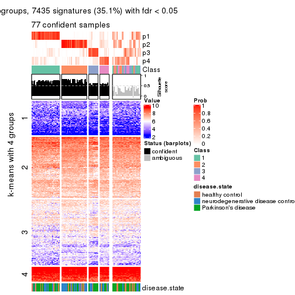
get_signatures(res, k = 5, scale_rows = FALSE)
get_signatures(res, k = 6, scale_rows = FALSE)
Compare the overlap of signatures from different k:
compare_signatures(res)
get_signature() returns a data frame invisibly. TO get the list of signatures, the function
call should be assigned to a variable explicitly. In following code, if plot argument is set
to FALSE, no heatmap is plotted while only the differential analysis is performed.
# code only for demonstration
tb = get_signature(res, k = ..., plot = FALSE)
An example of the output of tb is:
#> which_row fdr mean_1 mean_2 scaled_mean_1 scaled_mean_2 km
#> 1 38 0.042760348 8.373488 9.131774 -0.5533452 0.5164555 1
#> 2 40 0.018707592 7.106213 8.469186 -0.6173731 0.5762149 1
#> 3 55 0.019134737 10.221463 11.207825 -0.6159697 0.5749050 1
#> 4 59 0.006059896 5.921854 7.869574 -0.6899429 0.6439467 1
#> 5 60 0.018055526 8.928898 10.211722 -0.6204761 0.5791110 1
#> 6 98 0.009384629 15.714769 14.887706 0.6635654 -0.6193277 2
...
The columns in tb are:
which_row: row indices corresponding to the input matrix.fdr: FDR for the differential test. mean_x: The mean value in group x.scaled_mean_x: The mean value in group x after rows are scaled.km: Row groups if k-means clustering is applied to rows.UMAP plot which shows how samples are separated.
dimension_reduction(res, k = 2, method = "UMAP")
dimension_reduction(res, k = 3, method = "UMAP")
dimension_reduction(res, k = 4, method = "UMAP")
dimension_reduction(res, k = 5, method = "UMAP")
dimension_reduction(res, k = 6, method = "UMAP")
Following heatmap shows how subgroups are split when increasing k:
collect_classes(res)
Test correlation between subgroups and known annotations. If the known annotation is numeric, one-way ANOVA test is applied, and if the known annotation is discrete, chi-squared contingency table test is applied.
test_to_known_factors(res)
#> n disease.state(p) k
#> SD:NMF 101 0.2514 2
#> SD:NMF 93 0.2453 3
#> SD:NMF 77 0.3771 4
#> SD:NMF 58 0.2323 5
#> SD:NMF 41 0.0267 6
If matrix rows can be associated to genes, consider to use functional_enrichment(res,
...) to perform function enrichment for the signature genes. See this vignette for more detailed explanations.
The object with results only for a single top-value method and a single partition method can be extracted as:
res = res_list["CV", "hclust"]
# you can also extract it by
# res = res_list["CV:hclust"]
A summary of res and all the functions that can be applied to it:
res
#> A 'ConsensusPartition' object with k = 2, 3, 4, 5, 6.
#> On a matrix with 21168 rows and 105 columns.
#> Top rows (1000, 2000, 3000, 4000, 5000) are extracted by 'CV' method.
#> Subgroups are detected by 'hclust' method.
#> Performed in total 1250 partitions by row resampling.
#> Best k for subgroups seems to be 4.
#>
#> Following methods can be applied to this 'ConsensusPartition' object:
#> [1] "cola_report" "collect_classes" "collect_plots"
#> [4] "collect_stats" "colnames" "compare_signatures"
#> [7] "consensus_heatmap" "dimension_reduction" "functional_enrichment"
#> [10] "get_anno_col" "get_anno" "get_classes"
#> [13] "get_consensus" "get_matrix" "get_membership"
#> [16] "get_param" "get_signatures" "get_stats"
#> [19] "is_best_k" "is_stable_k" "membership_heatmap"
#> [22] "ncol" "nrow" "plot_ecdf"
#> [25] "rownames" "select_partition_number" "show"
#> [28] "suggest_best_k" "test_to_known_factors"
collect_plots() function collects all the plots made from res for all k (number of partitions)
into one single page to provide an easy and fast comparison between different k.
collect_plots(res)
The plots are:
k and the heatmap of
predicted classes for each k.k.k.k.All the plots in panels can be made by individual functions and they are plotted later in this section.
select_partition_number() produces several plots showing different
statistics for choosing “optimized” k. There are following statistics:
k;k, the area increased is defined as \(A_k - A_{k-1}\).The detailed explanations of these statistics can be found in the cola vignette.
Generally speaking, lower PAC score, higher mean silhouette score or higher
concordance corresponds to better partition. Rand index and Jaccard index
measure how similar the current partition is compared to partition with k-1.
If they are too similar, we won't accept k is better than k-1.
select_partition_number(res)
The numeric values for all these statistics can be obtained by get_stats().
get_stats(res)
#> k 1-PAC mean_silhouette concordance area_increased Rand Jaccard
#> 2 2 1.000 0.990 1.000 0.0206 0.981 0.981
#> 3 3 0.759 0.887 0.951 4.5397 0.963 0.962
#> 4 4 0.406 0.725 0.874 1.1207 0.910 0.905
#> 5 5 0.298 0.721 0.841 0.3203 0.831 0.804
#> 6 6 0.252 0.702 0.827 0.0943 0.979 0.970
suggest_best_k() suggests the best \(k\) based on these statistics. The rules are as follows:
suggest_best_k(res)
#> [1] 4
Following shows the table of the partitions (You need to click the show/hide
code output link to see it). The membership matrix (columns with name p*)
is inferred by
clue::cl_consensus()
function with the SE method. Basically the value in the membership matrix
represents the probability to belong to a certain group. The finall class
label for an item is determined with the group with highest probability it
belongs to.
In get_classes() function, the entropy is calculated from the membership
matrix and the silhouette score is calculated from the consensus matrix.
cbind(get_classes(res, k = 2), get_membership(res, k = 2))
#> class entropy silhouette p1 p2
#> GSM153405 2 0.0000 1.000 0.000 1.000
#> GSM153406 2 0.0000 1.000 0.000 1.000
#> GSM153419 2 0.0000 1.000 0.000 1.000
#> GSM153423 2 0.0000 1.000 0.000 1.000
#> GSM153425 2 0.0000 1.000 0.000 1.000
#> GSM153427 2 0.0000 1.000 0.000 1.000
#> GSM153428 2 0.0000 1.000 0.000 1.000
#> GSM153429 2 0.0000 1.000 0.000 1.000
#> GSM153433 2 0.0000 1.000 0.000 1.000
#> GSM153444 2 0.0000 1.000 0.000 1.000
#> GSM153448 2 0.0000 1.000 0.000 1.000
#> GSM153451 2 0.0000 1.000 0.000 1.000
#> GSM153452 2 0.0000 1.000 0.000 1.000
#> GSM153477 2 0.0000 1.000 0.000 1.000
#> GSM153479 2 0.0000 1.000 0.000 1.000
#> GSM153484 2 0.0000 1.000 0.000 1.000
#> GSM153488 2 0.0000 1.000 0.000 1.000
#> GSM153496 2 0.0000 1.000 0.000 1.000
#> GSM153497 2 0.0000 1.000 0.000 1.000
#> GSM153500 2 0.0376 0.996 0.004 0.996
#> GSM153503 2 0.0376 0.996 0.004 0.996
#> GSM153508 1 0.0000 0.000 1.000 0.000
#> GSM153409 2 0.0000 1.000 0.000 1.000
#> GSM153426 2 0.0000 1.000 0.000 1.000
#> GSM153431 2 0.0000 1.000 0.000 1.000
#> GSM153438 2 0.0000 1.000 0.000 1.000
#> GSM153440 2 0.0000 1.000 0.000 1.000
#> GSM153447 2 0.0000 1.000 0.000 1.000
#> GSM153450 2 0.0000 1.000 0.000 1.000
#> GSM153456 2 0.0000 1.000 0.000 1.000
#> GSM153457 2 0.0000 1.000 0.000 1.000
#> GSM153458 2 0.0000 1.000 0.000 1.000
#> GSM153459 2 0.0000 1.000 0.000 1.000
#> GSM153460 2 0.0000 1.000 0.000 1.000
#> GSM153461 2 0.0000 1.000 0.000 1.000
#> GSM153463 2 0.0000 1.000 0.000 1.000
#> GSM153464 2 0.0000 1.000 0.000 1.000
#> GSM153466 2 0.0000 1.000 0.000 1.000
#> GSM153467 2 0.0000 1.000 0.000 1.000
#> GSM153468 2 0.0000 1.000 0.000 1.000
#> GSM153469 2 0.0000 1.000 0.000 1.000
#> GSM153470 2 0.0000 1.000 0.000 1.000
#> GSM153471 2 0.0000 1.000 0.000 1.000
#> GSM153472 2 0.0000 1.000 0.000 1.000
#> GSM153473 2 0.0000 1.000 0.000 1.000
#> GSM153474 2 0.1184 0.984 0.016 0.984
#> GSM153475 2 0.0000 1.000 0.000 1.000
#> GSM153476 2 0.0000 1.000 0.000 1.000
#> GSM153478 2 0.0000 1.000 0.000 1.000
#> GSM153480 2 0.0000 1.000 0.000 1.000
#> GSM153486 2 0.0000 1.000 0.000 1.000
#> GSM153487 2 0.0000 1.000 0.000 1.000
#> GSM153499 2 0.0000 1.000 0.000 1.000
#> GSM153504 2 0.0000 1.000 0.000 1.000
#> GSM153507 2 0.0000 1.000 0.000 1.000
#> GSM153404 2 0.0000 1.000 0.000 1.000
#> GSM153407 2 0.0000 1.000 0.000 1.000
#> GSM153408 2 0.0000 1.000 0.000 1.000
#> GSM153410 2 0.0000 1.000 0.000 1.000
#> GSM153411 2 0.0000 1.000 0.000 1.000
#> GSM153412 2 0.0000 1.000 0.000 1.000
#> GSM153413 2 0.0000 1.000 0.000 1.000
#> GSM153414 2 0.0000 1.000 0.000 1.000
#> GSM153415 2 0.0000 1.000 0.000 1.000
#> GSM153416 2 0.0000 1.000 0.000 1.000
#> GSM153417 2 0.0000 1.000 0.000 1.000
#> GSM153418 2 0.0000 1.000 0.000 1.000
#> GSM153420 2 0.0000 1.000 0.000 1.000
#> GSM153421 2 0.0000 1.000 0.000 1.000
#> GSM153422 2 0.0000 1.000 0.000 1.000
#> GSM153424 2 0.0000 1.000 0.000 1.000
#> GSM153430 2 0.0000 1.000 0.000 1.000
#> GSM153432 2 0.0000 1.000 0.000 1.000
#> GSM153434 2 0.0000 1.000 0.000 1.000
#> GSM153435 2 0.0000 1.000 0.000 1.000
#> GSM153436 2 0.0000 1.000 0.000 1.000
#> GSM153437 2 0.0000 1.000 0.000 1.000
#> GSM153439 2 0.0000 1.000 0.000 1.000
#> GSM153441 2 0.0000 1.000 0.000 1.000
#> GSM153442 2 0.0000 1.000 0.000 1.000
#> GSM153443 2 0.0000 1.000 0.000 1.000
#> GSM153445 2 0.0000 1.000 0.000 1.000
#> GSM153446 2 0.0000 1.000 0.000 1.000
#> GSM153449 2 0.0000 1.000 0.000 1.000
#> GSM153453 2 0.0000 1.000 0.000 1.000
#> GSM153454 2 0.0000 1.000 0.000 1.000
#> GSM153455 2 0.0000 1.000 0.000 1.000
#> GSM153462 2 0.0000 1.000 0.000 1.000
#> GSM153465 2 0.0000 1.000 0.000 1.000
#> GSM153481 2 0.0000 1.000 0.000 1.000
#> GSM153482 2 0.0000 1.000 0.000 1.000
#> GSM153483 2 0.0000 1.000 0.000 1.000
#> GSM153485 2 0.0000 1.000 0.000 1.000
#> GSM153489 2 0.0000 1.000 0.000 1.000
#> GSM153490 2 0.0000 1.000 0.000 1.000
#> GSM153491 2 0.0000 1.000 0.000 1.000
#> GSM153492 2 0.0672 0.992 0.008 0.992
#> GSM153493 2 0.0000 1.000 0.000 1.000
#> GSM153494 2 0.0000 1.000 0.000 1.000
#> GSM153495 2 0.0000 1.000 0.000 1.000
#> GSM153498 2 0.0000 1.000 0.000 1.000
#> GSM153501 2 0.0000 1.000 0.000 1.000
#> GSM153502 2 0.0000 1.000 0.000 1.000
#> GSM153505 2 0.0376 0.996 0.004 0.996
#> GSM153506 2 0.0000 1.000 0.000 1.000
cbind(get_classes(res, k = 3), get_membership(res, k = 3))
#> class entropy silhouette p1 p2 p3
#> GSM153405 2 0.0424 0.949 0.008 0.992 0.000
#> GSM153406 2 0.0424 0.949 0.008 0.992 0.000
#> GSM153419 2 0.0424 0.949 0.008 0.992 0.000
#> GSM153423 2 0.0592 0.948 0.012 0.988 0.000
#> GSM153425 2 0.3267 0.875 0.116 0.884 0.000
#> GSM153427 2 0.0892 0.948 0.020 0.980 0.000
#> GSM153428 2 0.1289 0.944 0.032 0.968 0.000
#> GSM153429 2 0.0592 0.949 0.012 0.988 0.000
#> GSM153433 2 0.1860 0.933 0.052 0.948 0.000
#> GSM153444 2 0.0592 0.948 0.012 0.988 0.000
#> GSM153448 2 0.0424 0.948 0.008 0.992 0.000
#> GSM153451 2 0.0424 0.948 0.008 0.992 0.000
#> GSM153452 2 0.0592 0.949 0.012 0.988 0.000
#> GSM153477 2 0.0592 0.948 0.012 0.988 0.000
#> GSM153479 2 0.1411 0.945 0.036 0.964 0.000
#> GSM153484 2 0.0237 0.947 0.004 0.996 0.000
#> GSM153488 2 0.0424 0.948 0.008 0.992 0.000
#> GSM153496 2 0.2165 0.919 0.064 0.936 0.000
#> GSM153497 2 0.0592 0.948 0.012 0.988 0.000
#> GSM153500 2 0.5363 0.522 0.276 0.724 0.000
#> GSM153503 2 0.4682 0.740 0.192 0.804 0.004
#> GSM153508 3 0.0000 0.000 0.000 0.000 1.000
#> GSM153409 2 0.1031 0.947 0.024 0.976 0.000
#> GSM153426 2 0.0892 0.947 0.020 0.980 0.000
#> GSM153431 2 0.1529 0.942 0.040 0.960 0.000
#> GSM153438 2 0.0424 0.948 0.008 0.992 0.000
#> GSM153440 2 0.0892 0.948 0.020 0.980 0.000
#> GSM153447 2 0.1753 0.936 0.048 0.952 0.000
#> GSM153450 2 0.0424 0.948 0.008 0.992 0.000
#> GSM153456 2 0.0424 0.948 0.008 0.992 0.000
#> GSM153457 2 0.0424 0.948 0.008 0.992 0.000
#> GSM153458 2 0.0424 0.948 0.008 0.992 0.000
#> GSM153459 2 0.0424 0.948 0.008 0.992 0.000
#> GSM153460 2 0.0592 0.949 0.012 0.988 0.000
#> GSM153461 2 0.1031 0.947 0.024 0.976 0.000
#> GSM153463 2 0.3340 0.865 0.120 0.880 0.000
#> GSM153464 2 0.0424 0.947 0.008 0.992 0.000
#> GSM153466 2 0.0747 0.950 0.016 0.984 0.000
#> GSM153467 2 0.0592 0.948 0.012 0.988 0.000
#> GSM153468 2 0.0592 0.949 0.012 0.988 0.000
#> GSM153469 2 0.0237 0.947 0.004 0.996 0.000
#> GSM153470 2 0.0747 0.948 0.016 0.984 0.000
#> GSM153471 2 0.1163 0.945 0.028 0.972 0.000
#> GSM153472 2 0.1289 0.944 0.032 0.968 0.000
#> GSM153473 2 0.2625 0.903 0.084 0.916 0.000
#> GSM153474 1 0.3295 -0.465 0.896 0.096 0.008
#> GSM153475 2 0.1289 0.942 0.032 0.968 0.000
#> GSM153476 2 0.0424 0.949 0.008 0.992 0.000
#> GSM153478 2 0.1753 0.935 0.048 0.952 0.000
#> GSM153480 2 0.0424 0.947 0.008 0.992 0.000
#> GSM153486 2 0.0592 0.948 0.012 0.988 0.000
#> GSM153487 2 0.3551 0.831 0.132 0.868 0.000
#> GSM153499 2 0.1964 0.929 0.056 0.944 0.000
#> GSM153504 2 0.3752 0.834 0.144 0.856 0.000
#> GSM153507 2 0.2711 0.899 0.088 0.912 0.000
#> GSM153404 2 0.0424 0.949 0.008 0.992 0.000
#> GSM153407 2 0.1031 0.946 0.024 0.976 0.000
#> GSM153408 2 0.0424 0.949 0.008 0.992 0.000
#> GSM153410 2 0.0424 0.949 0.008 0.992 0.000
#> GSM153411 2 0.3267 0.875 0.116 0.884 0.000
#> GSM153412 2 0.0424 0.949 0.008 0.992 0.000
#> GSM153413 2 0.0424 0.949 0.008 0.992 0.000
#> GSM153414 2 0.0592 0.949 0.012 0.988 0.000
#> GSM153415 2 0.0424 0.949 0.008 0.992 0.000
#> GSM153416 2 0.0424 0.949 0.008 0.992 0.000
#> GSM153417 2 0.3267 0.875 0.116 0.884 0.000
#> GSM153418 2 0.0424 0.949 0.008 0.992 0.000
#> GSM153420 2 0.3267 0.875 0.116 0.884 0.000
#> GSM153421 2 0.3192 0.878 0.112 0.888 0.000
#> GSM153422 2 0.3267 0.875 0.116 0.884 0.000
#> GSM153424 2 0.1411 0.942 0.036 0.964 0.000
#> GSM153430 2 0.1163 0.946 0.028 0.972 0.000
#> GSM153432 2 0.0424 0.949 0.008 0.992 0.000
#> GSM153434 2 0.1411 0.942 0.036 0.964 0.000
#> GSM153435 2 0.0237 0.948 0.004 0.996 0.000
#> GSM153436 2 0.1964 0.929 0.056 0.944 0.000
#> GSM153437 2 0.0237 0.948 0.004 0.996 0.000
#> GSM153439 2 0.0237 0.949 0.004 0.996 0.000
#> GSM153441 2 0.0892 0.949 0.020 0.980 0.000
#> GSM153442 2 0.1031 0.948 0.024 0.976 0.000
#> GSM153443 2 0.0237 0.947 0.004 0.996 0.000
#> GSM153445 2 0.0237 0.948 0.004 0.996 0.000
#> GSM153446 2 0.0424 0.947 0.008 0.992 0.000
#> GSM153449 2 0.1529 0.940 0.040 0.960 0.000
#> GSM153453 2 0.1753 0.939 0.048 0.952 0.000
#> GSM153454 2 0.5178 0.618 0.256 0.744 0.000
#> GSM153455 2 0.1031 0.948 0.024 0.976 0.000
#> GSM153462 2 0.0237 0.948 0.004 0.996 0.000
#> GSM153465 2 0.0592 0.949 0.012 0.988 0.000
#> GSM153481 2 0.0237 0.948 0.004 0.996 0.000
#> GSM153482 2 0.2066 0.926 0.060 0.940 0.000
#> GSM153483 2 0.0424 0.948 0.008 0.992 0.000
#> GSM153485 2 0.1163 0.947 0.028 0.972 0.000
#> GSM153489 2 0.0747 0.949 0.016 0.984 0.000
#> GSM153490 2 0.3267 0.868 0.116 0.884 0.000
#> GSM153491 2 0.1753 0.939 0.048 0.952 0.000
#> GSM153492 2 0.4353 0.794 0.156 0.836 0.008
#> GSM153493 1 0.6260 0.246 0.552 0.448 0.000
#> GSM153494 2 0.0892 0.948 0.020 0.980 0.000
#> GSM153495 2 0.3412 0.860 0.124 0.876 0.000
#> GSM153498 2 0.1031 0.947 0.024 0.976 0.000
#> GSM153501 2 0.5650 0.439 0.312 0.688 0.000
#> GSM153502 2 0.1860 0.931 0.052 0.948 0.000
#> GSM153505 2 0.5560 0.489 0.300 0.700 0.000
#> GSM153506 2 0.1411 0.937 0.036 0.964 0.000
cbind(get_classes(res, k = 4), get_membership(res, k = 4))
#> class entropy silhouette p1 p2 p3 p4
#> GSM153405 2 0.1637 0.85899 0.060 0.940 0.000 0
#> GSM153406 2 0.1557 0.85908 0.056 0.944 0.000 0
#> GSM153419 2 0.1716 0.85815 0.064 0.936 0.000 0
#> GSM153423 2 0.1118 0.86633 0.036 0.964 0.000 0
#> GSM153425 2 0.4746 0.26755 0.368 0.632 0.000 0
#> GSM153427 2 0.1398 0.86631 0.040 0.956 0.004 0
#> GSM153428 2 0.2125 0.85437 0.076 0.920 0.004 0
#> GSM153429 2 0.1209 0.86736 0.032 0.964 0.004 0
#> GSM153433 2 0.2973 0.80247 0.144 0.856 0.000 0
#> GSM153444 2 0.1109 0.86477 0.028 0.968 0.004 0
#> GSM153448 2 0.0657 0.86529 0.012 0.984 0.004 0
#> GSM153451 2 0.0592 0.86160 0.016 0.984 0.000 0
#> GSM153452 2 0.0895 0.86437 0.020 0.976 0.004 0
#> GSM153477 2 0.0921 0.86473 0.028 0.972 0.000 0
#> GSM153479 2 0.2021 0.86341 0.056 0.932 0.012 0
#> GSM153484 2 0.0921 0.86681 0.028 0.972 0.000 0
#> GSM153488 2 0.1356 0.86767 0.032 0.960 0.008 0
#> GSM153496 2 0.3577 0.75908 0.156 0.832 0.012 0
#> GSM153497 2 0.1004 0.86194 0.024 0.972 0.004 0
#> GSM153500 1 0.6669 0.55904 0.564 0.332 0.104 0
#> GSM153503 1 0.5858 0.48625 0.500 0.468 0.032 0
#> GSM153508 4 0.0000 0.00000 0.000 0.000 0.000 1
#> GSM153409 2 0.2466 0.84589 0.096 0.900 0.004 0
#> GSM153426 2 0.2266 0.85069 0.084 0.912 0.004 0
#> GSM153431 2 0.2737 0.83978 0.104 0.888 0.008 0
#> GSM153438 2 0.0895 0.86283 0.020 0.976 0.004 0
#> GSM153440 2 0.2401 0.84707 0.092 0.904 0.004 0
#> GSM153447 2 0.2944 0.82177 0.128 0.868 0.004 0
#> GSM153450 2 0.0895 0.86461 0.020 0.976 0.004 0
#> GSM153456 2 0.0592 0.86160 0.016 0.984 0.000 0
#> GSM153457 2 0.0592 0.86160 0.016 0.984 0.000 0
#> GSM153458 2 0.0592 0.86160 0.016 0.984 0.000 0
#> GSM153459 2 0.0469 0.86242 0.012 0.988 0.000 0
#> GSM153460 2 0.0707 0.86509 0.020 0.980 0.000 0
#> GSM153461 2 0.2466 0.84589 0.096 0.900 0.004 0
#> GSM153463 2 0.4898 -0.00385 0.416 0.584 0.000 0
#> GSM153464 2 0.0817 0.86137 0.024 0.976 0.000 0
#> GSM153466 2 0.1305 0.86903 0.036 0.960 0.004 0
#> GSM153467 2 0.0921 0.86371 0.028 0.972 0.000 0
#> GSM153468 2 0.1452 0.86835 0.036 0.956 0.008 0
#> GSM153469 2 0.0592 0.86441 0.016 0.984 0.000 0
#> GSM153470 2 0.1398 0.86582 0.040 0.956 0.004 0
#> GSM153471 2 0.1807 0.85253 0.052 0.940 0.008 0
#> GSM153472 2 0.2714 0.83144 0.112 0.884 0.004 0
#> GSM153473 2 0.4535 0.47146 0.292 0.704 0.004 0
#> GSM153474 3 0.2142 0.00000 0.056 0.016 0.928 0
#> GSM153475 2 0.2266 0.83590 0.084 0.912 0.004 0
#> GSM153476 2 0.1474 0.86034 0.052 0.948 0.000 0
#> GSM153478 2 0.3074 0.79153 0.152 0.848 0.000 0
#> GSM153480 2 0.0592 0.86228 0.016 0.984 0.000 0
#> GSM153486 2 0.0817 0.86225 0.024 0.976 0.000 0
#> GSM153487 2 0.4919 0.55655 0.200 0.752 0.048 0
#> GSM153499 2 0.3182 0.79745 0.096 0.876 0.028 0
#> GSM153504 2 0.5712 -0.09861 0.384 0.584 0.032 0
#> GSM153507 2 0.4706 0.51817 0.248 0.732 0.020 0
#> GSM153404 2 0.1637 0.85849 0.060 0.940 0.000 0
#> GSM153407 2 0.1902 0.85803 0.064 0.932 0.004 0
#> GSM153408 2 0.1637 0.85849 0.060 0.940 0.000 0
#> GSM153410 2 0.1637 0.85849 0.060 0.940 0.000 0
#> GSM153411 2 0.4746 0.26755 0.368 0.632 0.000 0
#> GSM153412 2 0.1637 0.85849 0.060 0.940 0.000 0
#> GSM153413 2 0.1637 0.85849 0.060 0.940 0.000 0
#> GSM153414 2 0.1545 0.86753 0.040 0.952 0.008 0
#> GSM153415 2 0.1637 0.85849 0.060 0.940 0.000 0
#> GSM153416 2 0.0817 0.86663 0.024 0.976 0.000 0
#> GSM153417 2 0.4746 0.26755 0.368 0.632 0.000 0
#> GSM153418 2 0.1637 0.85849 0.060 0.940 0.000 0
#> GSM153420 2 0.4746 0.26755 0.368 0.632 0.000 0
#> GSM153421 2 0.4730 0.27766 0.364 0.636 0.000 0
#> GSM153422 2 0.4746 0.26755 0.368 0.632 0.000 0
#> GSM153424 2 0.2530 0.83982 0.100 0.896 0.004 0
#> GSM153430 2 0.2401 0.85123 0.092 0.904 0.004 0
#> GSM153432 2 0.0592 0.86705 0.016 0.984 0.000 0
#> GSM153434 2 0.2704 0.81652 0.124 0.876 0.000 0
#> GSM153435 2 0.0657 0.86124 0.012 0.984 0.004 0
#> GSM153436 2 0.4220 0.60639 0.248 0.748 0.004 0
#> GSM153437 2 0.0657 0.86232 0.012 0.984 0.004 0
#> GSM153439 2 0.0921 0.86754 0.028 0.972 0.000 0
#> GSM153441 2 0.1302 0.86821 0.044 0.956 0.000 0
#> GSM153442 2 0.1978 0.86240 0.068 0.928 0.004 0
#> GSM153443 2 0.0707 0.86095 0.020 0.980 0.000 0
#> GSM153445 2 0.0592 0.86246 0.016 0.984 0.000 0
#> GSM153446 2 0.0707 0.86320 0.020 0.980 0.000 0
#> GSM153449 2 0.3249 0.80434 0.140 0.852 0.008 0
#> GSM153453 2 0.3048 0.81553 0.108 0.876 0.016 0
#> GSM153454 1 0.5897 0.67720 0.588 0.368 0.044 0
#> GSM153455 2 0.1792 0.86214 0.068 0.932 0.000 0
#> GSM153462 2 0.0895 0.86331 0.020 0.976 0.004 0
#> GSM153465 2 0.0895 0.86676 0.020 0.976 0.004 0
#> GSM153481 2 0.0469 0.86208 0.012 0.988 0.000 0
#> GSM153482 2 0.3037 0.81282 0.100 0.880 0.020 0
#> GSM153483 2 0.1151 0.86573 0.024 0.968 0.008 0
#> GSM153485 2 0.2334 0.85139 0.088 0.908 0.004 0
#> GSM153489 2 0.1792 0.86063 0.068 0.932 0.000 0
#> GSM153490 2 0.5143 0.15832 0.360 0.628 0.012 0
#> GSM153491 2 0.3217 0.80979 0.128 0.860 0.012 0
#> GSM153492 2 0.5755 0.12537 0.332 0.624 0.044 0
#> GSM153493 1 0.6442 -0.62514 0.492 0.068 0.440 0
#> GSM153494 2 0.1978 0.84923 0.068 0.928 0.004 0
#> GSM153495 2 0.4941 -0.09511 0.436 0.564 0.000 0
#> GSM153498 2 0.2589 0.82819 0.116 0.884 0.000 0
#> GSM153501 1 0.7220 0.68389 0.472 0.384 0.144 0
#> GSM153502 2 0.3402 0.76865 0.164 0.832 0.004 0
#> GSM153505 1 0.6574 0.69394 0.548 0.364 0.088 0
#> GSM153506 2 0.2867 0.80804 0.104 0.884 0.012 0
cbind(get_classes(res, k = 5), get_membership(res, k = 5))
#> class entropy silhouette p1 p2 p3 p4 p5
#> GSM153405 2 0.1732 0.8575 0 0.920 0.000 0.080 0.000
#> GSM153406 2 0.1671 0.8582 0 0.924 0.000 0.076 0.000
#> GSM153419 2 0.1908 0.8531 0 0.908 0.000 0.092 0.000
#> GSM153423 2 0.1282 0.8748 0 0.952 0.000 0.044 0.004
#> GSM153425 4 0.4278 0.6374 0 0.452 0.000 0.548 0.000
#> GSM153427 2 0.1282 0.8736 0 0.952 0.000 0.044 0.004
#> GSM153428 2 0.2179 0.8494 0 0.896 0.000 0.100 0.004
#> GSM153429 2 0.1365 0.8747 0 0.952 0.004 0.040 0.004
#> GSM153433 2 0.3430 0.6634 0 0.776 0.004 0.220 0.000
#> GSM153444 2 0.1041 0.8725 0 0.964 0.000 0.032 0.004
#> GSM153448 2 0.1116 0.8755 0 0.964 0.004 0.028 0.004
#> GSM153451 2 0.0609 0.8687 0 0.980 0.000 0.020 0.000
#> GSM153452 2 0.0865 0.8713 0 0.972 0.000 0.024 0.004
#> GSM153477 2 0.1202 0.8724 0 0.960 0.004 0.032 0.004
#> GSM153479 2 0.2112 0.8649 0 0.908 0.004 0.084 0.004
#> GSM153484 2 0.0865 0.8745 0 0.972 0.004 0.024 0.000
#> GSM153488 2 0.1538 0.8754 0 0.948 0.008 0.036 0.008
#> GSM153496 2 0.4289 0.6345 0 0.764 0.024 0.192 0.020
#> GSM153497 2 0.1299 0.8647 0 0.960 0.012 0.020 0.008
#> GSM153500 4 0.8175 -0.0312 0 0.212 0.152 0.412 0.224
#> GSM153503 4 0.5885 0.4907 0 0.276 0.040 0.624 0.060
#> GSM153508 1 0.0000 0.0000 1 0.000 0.000 0.000 0.000
#> GSM153409 2 0.2865 0.8185 0 0.856 0.008 0.132 0.004
#> GSM153426 2 0.2548 0.8311 0 0.876 0.004 0.116 0.004
#> GSM153431 2 0.2964 0.8040 0 0.840 0.004 0.152 0.004
#> GSM153438 2 0.0865 0.8701 0 0.972 0.000 0.024 0.004
#> GSM153440 2 0.2629 0.8195 0 0.860 0.000 0.136 0.004
#> GSM153447 2 0.3328 0.7679 0 0.812 0.008 0.176 0.004
#> GSM153450 2 0.0865 0.8717 0 0.972 0.000 0.024 0.004
#> GSM153456 2 0.0609 0.8687 0 0.980 0.000 0.020 0.000
#> GSM153457 2 0.0609 0.8687 0 0.980 0.000 0.020 0.000
#> GSM153458 2 0.0609 0.8687 0 0.980 0.000 0.020 0.000
#> GSM153459 2 0.0510 0.8692 0 0.984 0.000 0.016 0.000
#> GSM153460 2 0.0703 0.8717 0 0.976 0.000 0.024 0.000
#> GSM153461 2 0.2741 0.8200 0 0.860 0.004 0.132 0.004
#> GSM153463 4 0.4541 0.6950 0 0.380 0.008 0.608 0.004
#> GSM153464 2 0.1243 0.8656 0 0.960 0.004 0.028 0.008
#> GSM153466 2 0.1408 0.8768 0 0.948 0.000 0.044 0.008
#> GSM153467 2 0.1205 0.8723 0 0.956 0.004 0.040 0.000
#> GSM153468 2 0.1695 0.8756 0 0.940 0.008 0.044 0.008
#> GSM153469 2 0.0880 0.8739 0 0.968 0.000 0.032 0.000
#> GSM153470 2 0.1618 0.8701 0 0.944 0.008 0.040 0.008
#> GSM153471 2 0.1934 0.8548 0 0.928 0.016 0.052 0.004
#> GSM153472 2 0.3277 0.7892 0 0.832 0.008 0.148 0.012
#> GSM153473 2 0.4871 -0.3829 0 0.548 0.008 0.432 0.012
#> GSM153474 3 0.4153 0.0000 0 0.004 0.736 0.020 0.240
#> GSM153475 2 0.2678 0.8193 0 0.880 0.016 0.100 0.004
#> GSM153476 2 0.1544 0.8606 0 0.932 0.000 0.068 0.000
#> GSM153478 2 0.3074 0.7378 0 0.804 0.000 0.196 0.000
#> GSM153480 2 0.0771 0.8687 0 0.976 0.000 0.020 0.004
#> GSM153486 2 0.1041 0.8701 0 0.964 0.000 0.032 0.004
#> GSM153487 2 0.5407 0.4966 0 0.712 0.060 0.176 0.052
#> GSM153499 2 0.3542 0.7708 0 0.840 0.020 0.112 0.028
#> GSM153504 4 0.6691 0.6055 0 0.364 0.108 0.492 0.036
#> GSM153507 2 0.5629 0.1573 0 0.632 0.040 0.288 0.040
#> GSM153404 2 0.1732 0.8571 0 0.920 0.000 0.080 0.000
#> GSM153407 2 0.2011 0.8552 0 0.908 0.000 0.088 0.004
#> GSM153408 2 0.1732 0.8571 0 0.920 0.000 0.080 0.000
#> GSM153410 2 0.1732 0.8571 0 0.920 0.000 0.080 0.000
#> GSM153411 4 0.4278 0.6374 0 0.452 0.000 0.548 0.000
#> GSM153412 2 0.1732 0.8571 0 0.920 0.000 0.080 0.000
#> GSM153413 2 0.1732 0.8571 0 0.920 0.000 0.080 0.000
#> GSM153414 2 0.1798 0.8710 0 0.928 0.004 0.064 0.004
#> GSM153415 2 0.1732 0.8571 0 0.920 0.000 0.080 0.000
#> GSM153416 2 0.1041 0.8733 0 0.964 0.000 0.032 0.004
#> GSM153417 4 0.4278 0.6374 0 0.452 0.000 0.548 0.000
#> GSM153418 2 0.1732 0.8571 0 0.920 0.000 0.080 0.000
#> GSM153420 4 0.4278 0.6374 0 0.452 0.000 0.548 0.000
#> GSM153421 4 0.4283 0.6301 0 0.456 0.000 0.544 0.000
#> GSM153422 4 0.4278 0.6374 0 0.452 0.000 0.548 0.000
#> GSM153424 2 0.2719 0.8083 0 0.852 0.000 0.144 0.004
#> GSM153430 2 0.2488 0.8389 0 0.872 0.000 0.124 0.004
#> GSM153432 2 0.0794 0.8763 0 0.972 0.000 0.028 0.000
#> GSM153434 2 0.3074 0.7141 0 0.804 0.000 0.196 0.000
#> GSM153435 2 0.0960 0.8690 0 0.972 0.008 0.016 0.004
#> GSM153436 2 0.4723 -0.0442 0 0.612 0.008 0.368 0.012
#> GSM153437 2 0.0932 0.8709 0 0.972 0.004 0.020 0.004
#> GSM153439 2 0.1202 0.8763 0 0.960 0.004 0.032 0.004
#> GSM153441 2 0.1270 0.8752 0 0.948 0.000 0.052 0.000
#> GSM153442 2 0.2284 0.8568 0 0.896 0.004 0.096 0.004
#> GSM153443 2 0.1026 0.8693 0 0.968 0.004 0.024 0.004
#> GSM153445 2 0.0932 0.8690 0 0.972 0.004 0.020 0.004
#> GSM153446 2 0.0865 0.8700 0 0.972 0.000 0.024 0.004
#> GSM153449 2 0.3289 0.7606 0 0.816 0.004 0.172 0.008
#> GSM153453 2 0.3727 0.7410 0 0.812 0.020 0.152 0.016
#> GSM153454 4 0.4777 0.0930 0 0.120 0.048 0.772 0.060
#> GSM153455 2 0.1956 0.8649 0 0.916 0.008 0.076 0.000
#> GSM153462 2 0.1243 0.8692 0 0.960 0.008 0.028 0.004
#> GSM153465 2 0.1205 0.8764 0 0.956 0.004 0.040 0.000
#> GSM153481 2 0.0960 0.8694 0 0.972 0.004 0.016 0.008
#> GSM153482 2 0.3427 0.7889 0 0.844 0.032 0.112 0.012
#> GSM153483 2 0.1369 0.8728 0 0.956 0.008 0.028 0.008
#> GSM153485 2 0.2445 0.8535 0 0.884 0.004 0.108 0.004
#> GSM153489 2 0.2052 0.8579 0 0.912 0.004 0.080 0.004
#> GSM153490 4 0.5697 0.6406 0 0.432 0.032 0.508 0.028
#> GSM153491 2 0.3754 0.7381 0 0.796 0.008 0.176 0.020
#> GSM153492 2 0.6213 -0.5316 0 0.464 0.044 0.444 0.048
#> GSM153493 5 0.2351 0.0000 0 0.016 0.000 0.088 0.896
#> GSM153494 2 0.2302 0.8452 0 0.904 0.008 0.080 0.008
#> GSM153495 4 0.4607 0.6985 0 0.368 0.012 0.616 0.004
#> GSM153498 2 0.3344 0.7835 0 0.832 0.012 0.144 0.012
#> GSM153501 4 0.7565 0.0959 0 0.180 0.156 0.520 0.144
#> GSM153502 2 0.4288 0.5590 0 0.732 0.012 0.240 0.016
#> GSM153505 4 0.6113 0.1087 0 0.140 0.128 0.668 0.064
#> GSM153506 2 0.3337 0.7852 0 0.856 0.024 0.096 0.024
cbind(get_classes(res, k = 6), get_membership(res, k = 6))
#> class entropy silhouette p1 p2 p3 p4 p5 p6
#> GSM153405 1 0.2020 0.8481 0.896 0 0.000 0.096 0.000 0.008
#> GSM153406 1 0.1970 0.8490 0.900 0 0.000 0.092 0.000 0.008
#> GSM153419 1 0.2165 0.8426 0.884 0 0.000 0.108 0.000 0.008
#> GSM153423 1 0.1429 0.8733 0.940 0 0.000 0.052 0.004 0.004
#> GSM153425 4 0.3915 0.6505 0.412 0 0.000 0.584 0.000 0.004
#> GSM153427 1 0.1333 0.8710 0.944 0 0.000 0.048 0.008 0.000
#> GSM153428 1 0.2355 0.8402 0.876 0 0.000 0.112 0.008 0.004
#> GSM153429 1 0.1297 0.8722 0.948 0 0.000 0.040 0.012 0.000
#> GSM153433 1 0.3481 0.6531 0.756 0 0.000 0.228 0.004 0.012
#> GSM153444 1 0.1049 0.8702 0.960 0 0.000 0.032 0.008 0.000
#> GSM153448 1 0.1149 0.8728 0.960 0 0.000 0.024 0.008 0.008
#> GSM153451 1 0.0547 0.8650 0.980 0 0.000 0.020 0.000 0.000
#> GSM153452 1 0.0858 0.8681 0.968 0 0.000 0.028 0.004 0.000
#> GSM153477 1 0.1434 0.8691 0.948 0 0.000 0.024 0.008 0.020
#> GSM153479 1 0.2401 0.8627 0.892 0 0.000 0.076 0.016 0.016
#> GSM153484 1 0.1080 0.8731 0.960 0 0.000 0.032 0.004 0.004
#> GSM153488 1 0.1515 0.8722 0.944 0 0.000 0.028 0.020 0.008
#> GSM153496 1 0.4498 0.6072 0.740 0 0.004 0.172 0.060 0.024
#> GSM153497 1 0.1536 0.8587 0.944 0 0.000 0.012 0.024 0.020
#> GSM153500 6 0.5979 0.0000 0.100 0 0.024 0.156 0.068 0.652
#> GSM153503 4 0.6408 -0.0134 0.200 0 0.016 0.580 0.056 0.148
#> GSM153508 2 0.0000 0.0000 0.000 1 0.000 0.000 0.000 0.000
#> GSM153409 1 0.2917 0.8125 0.840 0 0.000 0.136 0.016 0.008
#> GSM153426 1 0.2611 0.8281 0.864 0 0.000 0.116 0.012 0.008
#> GSM153431 1 0.3172 0.8000 0.820 0 0.000 0.152 0.012 0.016
#> GSM153438 1 0.0858 0.8672 0.968 0 0.000 0.028 0.004 0.000
#> GSM153440 1 0.2773 0.8081 0.836 0 0.000 0.152 0.004 0.008
#> GSM153447 1 0.3419 0.7643 0.792 0 0.000 0.180 0.016 0.012
#> GSM153450 1 0.0858 0.8683 0.968 0 0.000 0.028 0.004 0.000
#> GSM153456 1 0.0547 0.8650 0.980 0 0.000 0.020 0.000 0.000
#> GSM153457 1 0.0547 0.8650 0.980 0 0.000 0.020 0.000 0.000
#> GSM153458 1 0.0547 0.8650 0.980 0 0.000 0.020 0.000 0.000
#> GSM153459 1 0.0458 0.8655 0.984 0 0.000 0.016 0.000 0.000
#> GSM153460 1 0.0632 0.8682 0.976 0 0.000 0.024 0.000 0.000
#> GSM153461 1 0.2825 0.8137 0.844 0 0.000 0.136 0.012 0.008
#> GSM153463 4 0.4345 0.6135 0.344 0 0.000 0.628 0.012 0.016
#> GSM153464 1 0.1458 0.8606 0.948 0 0.000 0.020 0.016 0.016
#> GSM153466 1 0.1477 0.8739 0.940 0 0.000 0.048 0.008 0.004
#> GSM153467 1 0.1410 0.8690 0.944 0 0.000 0.044 0.008 0.004
#> GSM153468 1 0.1549 0.8726 0.936 0 0.000 0.044 0.020 0.000
#> GSM153469 1 0.0935 0.8709 0.964 0 0.000 0.032 0.000 0.004
#> GSM153470 1 0.1710 0.8689 0.936 0 0.000 0.028 0.016 0.020
#> GSM153471 1 0.2195 0.8490 0.912 0 0.000 0.028 0.036 0.024
#> GSM153472 1 0.3550 0.7750 0.812 0 0.000 0.132 0.032 0.024
#> GSM153473 1 0.4778 -0.4179 0.508 0 0.000 0.452 0.028 0.012
#> GSM153474 3 0.0291 0.0000 0.000 0 0.992 0.004 0.000 0.004
#> GSM153475 1 0.3078 0.8132 0.860 0 0.000 0.064 0.048 0.028
#> GSM153476 1 0.1757 0.8548 0.916 0 0.000 0.076 0.000 0.008
#> GSM153478 1 0.3273 0.7178 0.776 0 0.000 0.212 0.008 0.004
#> GSM153480 1 0.0951 0.8648 0.968 0 0.000 0.020 0.004 0.008
#> GSM153486 1 0.1232 0.8671 0.956 0 0.000 0.024 0.004 0.016
#> GSM153487 1 0.5710 0.3977 0.656 0 0.004 0.104 0.076 0.160
#> GSM153499 1 0.3820 0.7599 0.816 0 0.012 0.100 0.048 0.024
#> GSM153504 4 0.7249 0.3337 0.292 0 0.016 0.432 0.080 0.180
#> GSM153507 1 0.5972 0.0264 0.580 0 0.000 0.260 0.076 0.084
#> GSM153404 1 0.2020 0.8476 0.896 0 0.000 0.096 0.000 0.008
#> GSM153407 1 0.2101 0.8482 0.892 0 0.000 0.100 0.004 0.004
#> GSM153408 1 0.2020 0.8476 0.896 0 0.000 0.096 0.000 0.008
#> GSM153410 1 0.2020 0.8476 0.896 0 0.000 0.096 0.000 0.008
#> GSM153411 4 0.3915 0.6505 0.412 0 0.000 0.584 0.000 0.004
#> GSM153412 1 0.2020 0.8476 0.896 0 0.000 0.096 0.000 0.008
#> GSM153413 1 0.2020 0.8476 0.896 0 0.000 0.096 0.000 0.008
#> GSM153414 1 0.1895 0.8662 0.912 0 0.000 0.072 0.016 0.000
#> GSM153415 1 0.2020 0.8476 0.896 0 0.000 0.096 0.000 0.008
#> GSM153416 1 0.1194 0.8713 0.956 0 0.000 0.032 0.008 0.004
#> GSM153417 4 0.3915 0.6505 0.412 0 0.000 0.584 0.000 0.004
#> GSM153418 1 0.2020 0.8476 0.896 0 0.000 0.096 0.000 0.008
#> GSM153420 4 0.3915 0.6505 0.412 0 0.000 0.584 0.000 0.004
#> GSM153421 4 0.3923 0.6440 0.416 0 0.000 0.580 0.000 0.004
#> GSM153422 4 0.3915 0.6505 0.412 0 0.000 0.584 0.000 0.004
#> GSM153424 1 0.2982 0.8008 0.828 0 0.000 0.152 0.008 0.012
#> GSM153430 1 0.2699 0.8324 0.856 0 0.000 0.124 0.012 0.008
#> GSM153432 1 0.1049 0.8744 0.960 0 0.000 0.032 0.000 0.008
#> GSM153434 1 0.2994 0.7118 0.788 0 0.000 0.208 0.000 0.004
#> GSM153435 1 0.1053 0.8658 0.964 0 0.000 0.012 0.020 0.004
#> GSM153436 1 0.4684 -0.0806 0.580 0 0.000 0.380 0.024 0.016
#> GSM153437 1 0.0914 0.8673 0.968 0 0.000 0.016 0.016 0.000
#> GSM153439 1 0.1268 0.8745 0.952 0 0.000 0.036 0.008 0.004
#> GSM153441 1 0.1584 0.8707 0.928 0 0.000 0.064 0.000 0.008
#> GSM153442 1 0.2426 0.8575 0.884 0 0.000 0.092 0.012 0.012
#> GSM153443 1 0.1078 0.8664 0.964 0 0.000 0.016 0.012 0.008
#> GSM153445 1 0.1078 0.8655 0.964 0 0.000 0.016 0.012 0.008
#> GSM153446 1 0.1149 0.8652 0.960 0 0.000 0.024 0.008 0.008
#> GSM153449 1 0.3700 0.7525 0.792 0 0.000 0.156 0.020 0.032
#> GSM153453 1 0.3831 0.7459 0.804 0 0.008 0.128 0.036 0.024
#> GSM153454 4 0.4424 -0.2215 0.072 0 0.008 0.780 0.080 0.060
#> GSM153455 1 0.2162 0.8573 0.896 0 0.000 0.088 0.004 0.012
#> GSM153462 1 0.1350 0.8633 0.952 0 0.000 0.020 0.020 0.008
#> GSM153465 1 0.1523 0.8734 0.940 0 0.000 0.044 0.008 0.008
#> GSM153481 1 0.1180 0.8637 0.960 0 0.000 0.016 0.012 0.012
#> GSM153482 1 0.3837 0.7725 0.816 0 0.004 0.084 0.048 0.048
#> GSM153483 1 0.1426 0.8676 0.948 0 0.000 0.016 0.028 0.008
#> GSM153485 1 0.2704 0.8461 0.868 0 0.000 0.100 0.020 0.012
#> GSM153489 1 0.2487 0.8505 0.892 0 0.000 0.064 0.024 0.020
#> GSM153490 4 0.5692 0.5946 0.404 0 0.000 0.492 0.040 0.064
#> GSM153491 1 0.3700 0.7508 0.792 0 0.000 0.156 0.032 0.020
#> GSM153492 4 0.6548 0.4632 0.404 0 0.036 0.444 0.044 0.072
#> GSM153493 5 0.3771 0.0000 0.008 0 0.172 0.044 0.776 0.000
#> GSM153494 1 0.2528 0.8458 0.892 0 0.000 0.056 0.024 0.028
#> GSM153495 4 0.4373 0.5941 0.328 0 0.000 0.640 0.016 0.016
#> GSM153498 1 0.3789 0.7528 0.804 0 0.004 0.128 0.040 0.024
#> GSM153501 4 0.7654 -0.4492 0.104 0 0.068 0.396 0.092 0.340
#> GSM153502 1 0.4690 0.5263 0.700 0 0.000 0.220 0.040 0.040
#> GSM153505 4 0.5928 -0.3475 0.080 0 0.028 0.608 0.032 0.252
#> GSM153506 1 0.3610 0.7659 0.828 0 0.000 0.064 0.060 0.048
Heatmaps for the consensus matrix. It visualizes the probability of two samples to be in a same group.
consensus_heatmap(res, k = 2)
consensus_heatmap(res, k = 3)
consensus_heatmap(res, k = 4)

consensus_heatmap(res, k = 5)
consensus_heatmap(res, k = 6)
Heatmaps for the membership of samples in all partitions to see how consistent they are:
membership_heatmap(res, k = 2)
membership_heatmap(res, k = 3)
membership_heatmap(res, k = 4)
membership_heatmap(res, k = 5)
membership_heatmap(res, k = 6)
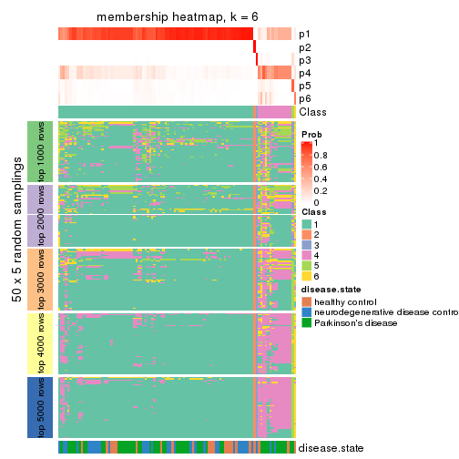
As soon as we have had the classes for columns, we can look for signatures which are significantly different between classes which can be candidate marks for certain classes. Following are the heatmaps for signatures.
Signature heatmaps where rows are scaled:
get_signatures(res, k = 2)

get_signatures(res, k = 3)

get_signatures(res, k = 4)
get_signatures(res, k = 5)
get_signatures(res, k = 6)
Signature heatmaps where rows are not scaled:
get_signatures(res, k = 2, scale_rows = FALSE)

get_signatures(res, k = 3, scale_rows = FALSE)

get_signatures(res, k = 4, scale_rows = FALSE)
get_signatures(res, k = 5, scale_rows = FALSE)
get_signatures(res, k = 6, scale_rows = FALSE)
Compare the overlap of signatures from different k:
compare_signatures(res)
get_signature() returns a data frame invisibly. TO get the list of signatures, the function
call should be assigned to a variable explicitly. In following code, if plot argument is set
to FALSE, no heatmap is plotted while only the differential analysis is performed.
# code only for demonstration
tb = get_signature(res, k = ..., plot = FALSE)
An example of the output of tb is:
#> which_row fdr mean_1 mean_2 scaled_mean_1 scaled_mean_2 km
#> 1 38 0.042760348 8.373488 9.131774 -0.5533452 0.5164555 1
#> 2 40 0.018707592 7.106213 8.469186 -0.6173731 0.5762149 1
#> 3 55 0.019134737 10.221463 11.207825 -0.6159697 0.5749050 1
#> 4 59 0.006059896 5.921854 7.869574 -0.6899429 0.6439467 1
#> 5 60 0.018055526 8.928898 10.211722 -0.6204761 0.5791110 1
#> 6 98 0.009384629 15.714769 14.887706 0.6635654 -0.6193277 2
...
The columns in tb are:
which_row: row indices corresponding to the input matrix.fdr: FDR for the differential test. mean_x: The mean value in group x.scaled_mean_x: The mean value in group x after rows are scaled.km: Row groups if k-means clustering is applied to rows.UMAP plot which shows how samples are separated.
dimension_reduction(res, k = 2, method = "UMAP")
dimension_reduction(res, k = 3, method = "UMAP")
dimension_reduction(res, k = 4, method = "UMAP")
dimension_reduction(res, k = 5, method = "UMAP")
dimension_reduction(res, k = 6, method = "UMAP")
Following heatmap shows how subgroups are split when increasing k:
collect_classes(res)
Test correlation between subgroups and known annotations. If the known annotation is numeric, one-way ANOVA test is applied, and if the known annotation is discrete, chi-squared contingency table test is applied.
test_to_known_factors(res)
#> n disease.state(p) k
#> CV:hclust 104 NA 2
#> CV:hclust 100 NA 3
#> CV:hclust 89 0.341 4
#> CV:hclust 92 0.326 5
#> CV:hclust 91 0.174 6
If matrix rows can be associated to genes, consider to use functional_enrichment(res,
...) to perform function enrichment for the signature genes. See this vignette for more detailed explanations.
The object with results only for a single top-value method and a single partition method can be extracted as:
res = res_list["CV", "kmeans"]
# you can also extract it by
# res = res_list["CV:kmeans"]
A summary of res and all the functions that can be applied to it:
res
#> A 'ConsensusPartition' object with k = 2, 3, 4, 5, 6.
#> On a matrix with 21168 rows and 105 columns.
#> Top rows (1000, 2000, 3000, 4000, 5000) are extracted by 'CV' method.
#> Subgroups are detected by 'kmeans' method.
#> Performed in total 1250 partitions by row resampling.
#> Best k for subgroups seems to be 3.
#>
#> Following methods can be applied to this 'ConsensusPartition' object:
#> [1] "cola_report" "collect_classes" "collect_plots"
#> [4] "collect_stats" "colnames" "compare_signatures"
#> [7] "consensus_heatmap" "dimension_reduction" "functional_enrichment"
#> [10] "get_anno_col" "get_anno" "get_classes"
#> [13] "get_consensus" "get_matrix" "get_membership"
#> [16] "get_param" "get_signatures" "get_stats"
#> [19] "is_best_k" "is_stable_k" "membership_heatmap"
#> [22] "ncol" "nrow" "plot_ecdf"
#> [25] "rownames" "select_partition_number" "show"
#> [28] "suggest_best_k" "test_to_known_factors"
collect_plots() function collects all the plots made from res for all k (number of partitions)
into one single page to provide an easy and fast comparison between different k.
collect_plots(res)
The plots are:
k and the heatmap of
predicted classes for each k.k.k.k.All the plots in panels can be made by individual functions and they are plotted later in this section.
select_partition_number() produces several plots showing different
statistics for choosing “optimized” k. There are following statistics:
k;k, the area increased is defined as \(A_k - A_{k-1}\).The detailed explanations of these statistics can be found in the cola vignette.
Generally speaking, lower PAC score, higher mean silhouette score or higher
concordance corresponds to better partition. Rand index and Jaccard index
measure how similar the current partition is compared to partition with k-1.
If they are too similar, we won't accept k is better than k-1.
select_partition_number(res)
The numeric values for all these statistics can be obtained by get_stats().
get_stats(res)
#> k 1-PAC mean_silhouette concordance area_increased Rand Jaccard
#> 2 2 0.276 0.519 0.788 0.4563 0.505 0.505
#> 3 3 0.686 0.852 0.918 0.2950 0.699 0.498
#> 4 4 0.499 0.503 0.790 0.1227 0.842 0.645
#> 5 5 0.512 0.501 0.698 0.0911 0.783 0.473
#> 6 6 0.576 0.502 0.724 0.0599 0.873 0.593
suggest_best_k() suggests the best \(k\) based on these statistics. The rules are as follows:
suggest_best_k(res)
#> [1] 3
Following shows the table of the partitions (You need to click the show/hide
code output link to see it). The membership matrix (columns with name p*)
is inferred by
clue::cl_consensus()
function with the SE method. Basically the value in the membership matrix
represents the probability to belong to a certain group. The finall class
label for an item is determined with the group with highest probability it
belongs to.
In get_classes() function, the entropy is calculated from the membership
matrix and the silhouette score is calculated from the consensus matrix.
cbind(get_classes(res, k = 2), get_membership(res, k = 2))
#> class entropy silhouette p1 p2
#> GSM153405 2 0.1633 0.6299 0.024 0.976
#> GSM153406 2 0.1184 0.6314 0.016 0.984
#> GSM153419 2 0.4161 0.6005 0.084 0.916
#> GSM153423 2 0.8144 0.5505 0.252 0.748
#> GSM153425 2 0.9087 0.3526 0.324 0.676
#> GSM153427 2 0.2043 0.6394 0.032 0.968
#> GSM153428 2 0.7299 0.5660 0.204 0.796
#> GSM153429 2 0.9866 0.3323 0.432 0.568
#> GSM153433 1 0.4022 0.7239 0.920 0.080
#> GSM153444 2 0.3584 0.6501 0.068 0.932
#> GSM153448 2 0.9909 0.2989 0.444 0.556
#> GSM153451 2 0.8016 0.5575 0.244 0.756
#> GSM153452 2 0.3274 0.6467 0.060 0.940
#> GSM153477 2 0.9970 0.2218 0.468 0.532
#> GSM153479 1 0.9944 0.0431 0.544 0.456
#> GSM153484 1 1.0000 -0.1238 0.504 0.496
#> GSM153488 1 0.5629 0.7038 0.868 0.132
#> GSM153496 1 0.0000 0.7719 1.000 0.000
#> GSM153497 2 0.9850 0.3422 0.428 0.572
#> GSM153500 1 0.0000 0.7719 1.000 0.000
#> GSM153503 1 0.0000 0.7719 1.000 0.000
#> GSM153508 1 0.1184 0.7691 0.984 0.016
#> GSM153409 2 0.4815 0.6422 0.104 0.896
#> GSM153426 2 0.3431 0.6499 0.064 0.936
#> GSM153431 2 0.9998 0.1935 0.492 0.508
#> GSM153438 2 0.3879 0.6495 0.076 0.924
#> GSM153440 2 0.8661 0.4500 0.288 0.712
#> GSM153447 1 0.9710 0.0970 0.600 0.400
#> GSM153450 2 0.3431 0.6500 0.064 0.936
#> GSM153456 2 0.3733 0.6499 0.072 0.928
#> GSM153457 2 0.4690 0.6434 0.100 0.900
#> GSM153458 2 0.3431 0.6499 0.064 0.936
#> GSM153459 2 0.3733 0.6499 0.072 0.928
#> GSM153460 2 0.4431 0.6462 0.092 0.908
#> GSM153461 2 0.4298 0.6495 0.088 0.912
#> GSM153463 1 0.2603 0.7300 0.956 0.044
#> GSM153464 2 0.9850 0.3422 0.428 0.572
#> GSM153466 1 0.9710 0.2387 0.600 0.400
#> GSM153467 2 0.9922 0.2872 0.448 0.552
#> GSM153468 1 0.9795 0.1953 0.584 0.416
#> GSM153469 2 0.9850 0.3422 0.428 0.572
#> GSM153470 1 0.9977 -0.0180 0.528 0.472
#> GSM153471 2 0.9977 0.2080 0.472 0.528
#> GSM153472 1 0.0672 0.7713 0.992 0.008
#> GSM153473 1 0.0000 0.7719 1.000 0.000
#> GSM153474 1 0.0000 0.7719 1.000 0.000
#> GSM153475 1 0.5946 0.6952 0.856 0.144
#> GSM153476 2 0.9909 0.3277 0.444 0.556
#> GSM153478 1 0.1633 0.7665 0.976 0.024
#> GSM153480 2 0.9850 0.3422 0.428 0.572
#> GSM153486 2 0.9850 0.3422 0.428 0.572
#> GSM153487 1 0.0938 0.7704 0.988 0.012
#> GSM153499 1 0.9044 0.4210 0.680 0.320
#> GSM153504 1 0.0000 0.7719 1.000 0.000
#> GSM153507 1 0.1414 0.7688 0.980 0.020
#> GSM153404 2 0.1184 0.6314 0.016 0.984
#> GSM153407 2 0.6343 0.5568 0.160 0.840
#> GSM153408 2 0.1184 0.6314 0.016 0.984
#> GSM153410 2 0.0938 0.6320 0.012 0.988
#> GSM153411 2 0.9087 0.3526 0.324 0.676
#> GSM153412 2 0.0938 0.6320 0.012 0.988
#> GSM153413 2 0.1633 0.6299 0.024 0.976
#> GSM153414 2 0.4161 0.6502 0.084 0.916
#> GSM153415 2 0.1184 0.6314 0.016 0.984
#> GSM153416 2 0.9323 0.4497 0.348 0.652
#> GSM153417 2 0.9087 0.3526 0.324 0.676
#> GSM153418 2 0.1184 0.6314 0.016 0.984
#> GSM153420 2 0.9087 0.3526 0.324 0.676
#> GSM153421 2 0.9087 0.3526 0.324 0.676
#> GSM153422 2 0.9087 0.3526 0.324 0.676
#> GSM153424 2 0.9358 0.4187 0.352 0.648
#> GSM153430 1 0.7219 0.5686 0.800 0.200
#> GSM153432 2 0.9850 0.3422 0.428 0.572
#> GSM153434 1 0.9963 -0.0868 0.536 0.464
#> GSM153435 2 0.9850 0.3422 0.428 0.572
#> GSM153436 2 0.9491 0.3918 0.368 0.632
#> GSM153437 2 0.8909 0.4958 0.308 0.692
#> GSM153439 2 0.9866 0.3323 0.432 0.568
#> GSM153441 1 0.9988 -0.1199 0.520 0.480
#> GSM153442 1 0.7139 0.6372 0.804 0.196
#> GSM153443 2 0.9850 0.3422 0.428 0.572
#> GSM153445 2 0.9850 0.3422 0.428 0.572
#> GSM153446 2 0.9850 0.3422 0.428 0.572
#> GSM153449 1 0.1633 0.7691 0.976 0.024
#> GSM153453 1 0.0376 0.7717 0.996 0.004
#> GSM153454 1 0.0000 0.7719 1.000 0.000
#> GSM153455 1 0.9491 0.2705 0.632 0.368
#> GSM153462 2 0.9866 0.3323 0.432 0.568
#> GSM153465 2 0.9850 0.3422 0.428 0.572
#> GSM153481 2 0.9850 0.3422 0.428 0.572
#> GSM153482 1 0.3584 0.7500 0.932 0.068
#> GSM153483 1 0.9608 0.2876 0.616 0.384
#> GSM153485 1 0.6148 0.6858 0.848 0.152
#> GSM153489 1 0.2778 0.7609 0.952 0.048
#> GSM153490 1 0.0000 0.7719 1.000 0.000
#> GSM153491 1 0.0376 0.7718 0.996 0.004
#> GSM153492 1 0.0000 0.7719 1.000 0.000
#> GSM153493 1 0.0000 0.7719 1.000 0.000
#> GSM153494 1 0.9358 0.3625 0.648 0.352
#> GSM153495 1 0.0000 0.7719 1.000 0.000
#> GSM153498 1 0.5294 0.7132 0.880 0.120
#> GSM153501 1 0.0000 0.7719 1.000 0.000
#> GSM153502 1 0.0000 0.7719 1.000 0.000
#> GSM153505 1 0.0000 0.7719 1.000 0.000
#> GSM153506 1 0.9087 0.4149 0.676 0.324
cbind(get_classes(res, k = 3), get_membership(res, k = 3))
#> class entropy silhouette p1 p2 p3
#> GSM153405 3 0.2590 0.94004 0.004 0.072 0.924
#> GSM153406 3 0.2448 0.94051 0.000 0.076 0.924
#> GSM153419 3 0.2743 0.93488 0.020 0.052 0.928
#> GSM153423 2 0.0237 0.92778 0.000 0.996 0.004
#> GSM153425 3 0.3039 0.92673 0.044 0.036 0.920
#> GSM153427 2 0.2537 0.87833 0.000 0.920 0.080
#> GSM153428 2 0.2443 0.90446 0.032 0.940 0.028
#> GSM153429 2 0.2165 0.90292 0.064 0.936 0.000
#> GSM153433 1 0.4291 0.80172 0.820 0.180 0.000
#> GSM153444 2 0.0747 0.92395 0.000 0.984 0.016
#> GSM153448 2 0.0237 0.92895 0.004 0.996 0.000
#> GSM153451 2 0.0237 0.92778 0.000 0.996 0.004
#> GSM153452 2 0.3030 0.85770 0.004 0.904 0.092
#> GSM153477 2 0.1289 0.91993 0.032 0.968 0.000
#> GSM153479 2 0.4235 0.79777 0.176 0.824 0.000
#> GSM153484 2 0.2878 0.87880 0.096 0.904 0.000
#> GSM153488 1 0.5397 0.67780 0.720 0.280 0.000
#> GSM153496 1 0.0592 0.87183 0.988 0.012 0.000
#> GSM153497 2 0.0237 0.92895 0.004 0.996 0.000
#> GSM153500 1 0.0237 0.87037 0.996 0.004 0.000
#> GSM153503 1 0.0237 0.87037 0.996 0.004 0.000
#> GSM153508 1 0.2774 0.83885 0.920 0.008 0.072
#> GSM153409 2 0.0747 0.92395 0.000 0.984 0.016
#> GSM153426 2 0.0747 0.92395 0.000 0.984 0.016
#> GSM153431 2 0.4390 0.83059 0.148 0.840 0.012
#> GSM153438 2 0.0592 0.92555 0.000 0.988 0.012
#> GSM153440 2 0.7740 -0.00561 0.048 0.508 0.444
#> GSM153447 1 0.6374 0.73631 0.768 0.132 0.100
#> GSM153450 2 0.0747 0.92429 0.000 0.984 0.016
#> GSM153456 2 0.0592 0.92555 0.000 0.988 0.012
#> GSM153457 2 0.0237 0.92778 0.000 0.996 0.004
#> GSM153458 2 0.0747 0.92395 0.000 0.984 0.016
#> GSM153459 2 0.0592 0.92555 0.000 0.988 0.012
#> GSM153460 2 0.0592 0.92555 0.000 0.988 0.012
#> GSM153461 2 0.0747 0.92395 0.000 0.984 0.016
#> GSM153463 1 0.1525 0.86994 0.964 0.032 0.004
#> GSM153464 2 0.0237 0.92895 0.004 0.996 0.000
#> GSM153466 2 0.4002 0.81205 0.160 0.840 0.000
#> GSM153467 2 0.0424 0.92812 0.008 0.992 0.000
#> GSM153468 2 0.3941 0.81953 0.156 0.844 0.000
#> GSM153469 2 0.0237 0.92895 0.004 0.996 0.000
#> GSM153470 2 0.2165 0.90227 0.064 0.936 0.000
#> GSM153471 2 0.2356 0.89692 0.072 0.928 0.000
#> GSM153472 1 0.0892 0.87248 0.980 0.020 0.000
#> GSM153473 1 0.0237 0.87037 0.996 0.004 0.000
#> GSM153474 1 0.0475 0.86933 0.992 0.004 0.004
#> GSM153475 1 0.5760 0.58765 0.672 0.328 0.000
#> GSM153476 2 0.1289 0.92041 0.032 0.968 0.000
#> GSM153478 1 0.3816 0.82800 0.852 0.148 0.000
#> GSM153480 2 0.0237 0.92895 0.004 0.996 0.000
#> GSM153486 2 0.0237 0.92895 0.004 0.996 0.000
#> GSM153487 1 0.1031 0.87205 0.976 0.024 0.000
#> GSM153499 1 0.5098 0.71720 0.752 0.248 0.000
#> GSM153504 1 0.0237 0.87037 0.996 0.004 0.000
#> GSM153507 1 0.2878 0.85486 0.904 0.096 0.000
#> GSM153404 3 0.2448 0.94051 0.000 0.076 0.924
#> GSM153407 3 0.7394 0.12055 0.032 0.472 0.496
#> GSM153408 3 0.2448 0.94051 0.000 0.076 0.924
#> GSM153410 3 0.2448 0.94051 0.000 0.076 0.924
#> GSM153411 3 0.3039 0.92673 0.044 0.036 0.920
#> GSM153412 3 0.2448 0.94051 0.000 0.076 0.924
#> GSM153413 3 0.2448 0.94051 0.000 0.076 0.924
#> GSM153414 2 0.0747 0.92395 0.000 0.984 0.016
#> GSM153415 3 0.2448 0.94051 0.000 0.076 0.924
#> GSM153416 2 0.0237 0.92778 0.000 0.996 0.004
#> GSM153417 3 0.3039 0.92673 0.044 0.036 0.920
#> GSM153418 3 0.2448 0.94051 0.000 0.076 0.924
#> GSM153420 3 0.3039 0.92673 0.044 0.036 0.920
#> GSM153421 3 0.3039 0.92673 0.044 0.036 0.920
#> GSM153422 3 0.3039 0.92673 0.044 0.036 0.920
#> GSM153424 2 0.2229 0.90640 0.044 0.944 0.012
#> GSM153430 1 0.6307 0.12820 0.512 0.488 0.000
#> GSM153432 2 0.0237 0.92895 0.004 0.996 0.000
#> GSM153434 2 0.3192 0.85865 0.112 0.888 0.000
#> GSM153435 2 0.0237 0.92895 0.004 0.996 0.000
#> GSM153436 2 0.4897 0.78101 0.172 0.812 0.016
#> GSM153437 2 0.0237 0.92778 0.000 0.996 0.004
#> GSM153439 2 0.0424 0.92812 0.008 0.992 0.000
#> GSM153441 2 0.0592 0.92755 0.012 0.988 0.000
#> GSM153442 2 0.4002 0.81411 0.160 0.840 0.000
#> GSM153443 2 0.0424 0.92850 0.008 0.992 0.000
#> GSM153445 2 0.0237 0.92895 0.004 0.996 0.000
#> GSM153446 2 0.0237 0.92895 0.004 0.996 0.000
#> GSM153449 1 0.4235 0.80574 0.824 0.176 0.000
#> GSM153453 1 0.2356 0.86306 0.928 0.072 0.000
#> GSM153454 1 0.0000 0.86669 1.000 0.000 0.000
#> GSM153455 2 0.4399 0.76925 0.188 0.812 0.000
#> GSM153462 2 0.0237 0.92895 0.004 0.996 0.000
#> GSM153465 2 0.0237 0.92895 0.004 0.996 0.000
#> GSM153481 2 0.0237 0.92895 0.004 0.996 0.000
#> GSM153482 1 0.2261 0.86293 0.932 0.068 0.000
#> GSM153483 2 0.5098 0.67773 0.248 0.752 0.000
#> GSM153485 1 0.6140 0.43335 0.596 0.404 0.000
#> GSM153489 1 0.3816 0.82701 0.852 0.148 0.000
#> GSM153490 1 0.0424 0.87140 0.992 0.008 0.000
#> GSM153491 1 0.3038 0.85035 0.896 0.104 0.000
#> GSM153492 1 0.0237 0.87037 0.996 0.004 0.000
#> GSM153493 1 0.0237 0.87037 0.996 0.004 0.000
#> GSM153494 2 0.4796 0.72388 0.220 0.780 0.000
#> GSM153495 1 0.0237 0.87037 0.996 0.004 0.000
#> GSM153498 1 0.4887 0.75903 0.772 0.228 0.000
#> GSM153501 1 0.0237 0.87037 0.996 0.004 0.000
#> GSM153502 1 0.1031 0.87255 0.976 0.024 0.000
#> GSM153505 1 0.0237 0.87037 0.996 0.004 0.000
#> GSM153506 2 0.5465 0.59530 0.288 0.712 0.000
cbind(get_classes(res, k = 4), get_membership(res, k = 4))
#> class entropy silhouette p1 p2 p3 p4
#> GSM153405 3 0.1209 0.9240 0.000 0.032 0.964 0.004
#> GSM153406 3 0.1211 0.9261 0.000 0.040 0.960 0.000
#> GSM153419 3 0.0592 0.9218 0.000 0.016 0.984 0.000
#> GSM153423 2 0.0188 0.7647 0.004 0.996 0.000 0.000
#> GSM153425 3 0.1118 0.9100 0.000 0.000 0.964 0.036
#> GSM153427 2 0.2380 0.7262 0.008 0.920 0.064 0.008
#> GSM153428 2 0.4247 0.6818 0.116 0.832 0.036 0.016
#> GSM153429 2 0.4948 0.4822 0.440 0.560 0.000 0.000
#> GSM153433 1 0.2385 0.4693 0.920 0.028 0.000 0.052
#> GSM153444 2 0.0967 0.7566 0.004 0.976 0.016 0.004
#> GSM153448 2 0.4454 0.6654 0.308 0.692 0.000 0.000
#> GSM153451 2 0.0000 0.7638 0.000 1.000 0.000 0.000
#> GSM153452 2 0.1994 0.7363 0.008 0.936 0.052 0.004
#> GSM153477 2 0.4920 0.5819 0.368 0.628 0.000 0.004
#> GSM153479 2 0.5597 0.3862 0.464 0.516 0.000 0.020
#> GSM153484 2 0.4994 0.3914 0.480 0.520 0.000 0.000
#> GSM153488 1 0.2342 0.4897 0.912 0.080 0.000 0.008
#> GSM153496 1 0.3444 0.2619 0.816 0.000 0.000 0.184
#> GSM153497 2 0.2973 0.7613 0.144 0.856 0.000 0.000
#> GSM153500 4 0.4941 0.7366 0.436 0.000 0.000 0.564
#> GSM153503 1 0.4985 -0.6134 0.532 0.000 0.000 0.468
#> GSM153508 4 0.1389 0.5025 0.048 0.000 0.000 0.952
#> GSM153409 2 0.1339 0.7514 0.004 0.964 0.024 0.008
#> GSM153426 2 0.1151 0.7518 0.000 0.968 0.024 0.008
#> GSM153431 2 0.6167 0.3744 0.388 0.568 0.028 0.016
#> GSM153438 2 0.0000 0.7638 0.000 1.000 0.000 0.000
#> GSM153440 3 0.8279 0.0369 0.248 0.368 0.368 0.016
#> GSM153447 1 0.5896 0.2595 0.744 0.148 0.060 0.048
#> GSM153450 2 0.0712 0.7615 0.004 0.984 0.008 0.004
#> GSM153456 2 0.0188 0.7629 0.000 0.996 0.000 0.004
#> GSM153457 2 0.0000 0.7638 0.000 1.000 0.000 0.000
#> GSM153458 2 0.0524 0.7602 0.000 0.988 0.008 0.004
#> GSM153459 2 0.0188 0.7629 0.000 0.996 0.000 0.004
#> GSM153460 2 0.0188 0.7629 0.000 0.996 0.000 0.004
#> GSM153461 2 0.3007 0.7358 0.060 0.900 0.028 0.012
#> GSM153463 1 0.4380 0.2928 0.800 0.032 0.004 0.164
#> GSM153464 2 0.3024 0.7603 0.148 0.852 0.000 0.000
#> GSM153466 1 0.4994 -0.3136 0.520 0.480 0.000 0.000
#> GSM153467 2 0.3311 0.7535 0.172 0.828 0.000 0.000
#> GSM153468 1 0.4961 -0.2251 0.552 0.448 0.000 0.000
#> GSM153469 2 0.4454 0.6626 0.308 0.692 0.000 0.000
#> GSM153470 2 0.4933 0.4875 0.432 0.568 0.000 0.000
#> GSM153471 2 0.4820 0.6630 0.296 0.692 0.000 0.012
#> GSM153472 1 0.2216 0.4233 0.908 0.000 0.000 0.092
#> GSM153473 1 0.4228 0.1027 0.760 0.008 0.000 0.232
#> GSM153474 4 0.4661 0.7458 0.348 0.000 0.000 0.652
#> GSM153475 1 0.3335 0.4817 0.856 0.128 0.000 0.016
#> GSM153476 1 0.5838 -0.2754 0.528 0.444 0.024 0.004
#> GSM153478 1 0.1584 0.4738 0.952 0.012 0.000 0.036
#> GSM153480 2 0.2760 0.7637 0.128 0.872 0.000 0.000
#> GSM153486 2 0.3074 0.7595 0.152 0.848 0.000 0.000
#> GSM153487 1 0.3123 0.3517 0.844 0.000 0.000 0.156
#> GSM153499 1 0.5495 0.4144 0.728 0.176 0.000 0.096
#> GSM153504 1 0.4977 -0.5968 0.540 0.000 0.000 0.460
#> GSM153507 1 0.3634 0.4533 0.856 0.048 0.000 0.096
#> GSM153404 3 0.1211 0.9261 0.000 0.040 0.960 0.000
#> GSM153407 2 0.6681 0.0376 0.052 0.516 0.416 0.016
#> GSM153408 3 0.1211 0.9261 0.000 0.040 0.960 0.000
#> GSM153410 3 0.1211 0.9261 0.000 0.040 0.960 0.000
#> GSM153411 3 0.1118 0.9100 0.000 0.000 0.964 0.036
#> GSM153412 3 0.1211 0.9261 0.000 0.040 0.960 0.000
#> GSM153413 3 0.1118 0.9257 0.000 0.036 0.964 0.000
#> GSM153414 2 0.1985 0.7461 0.020 0.944 0.024 0.012
#> GSM153415 3 0.1211 0.9261 0.000 0.040 0.960 0.000
#> GSM153416 2 0.0000 0.7638 0.000 1.000 0.000 0.000
#> GSM153417 3 0.1118 0.9100 0.000 0.000 0.964 0.036
#> GSM153418 3 0.1211 0.9261 0.000 0.040 0.960 0.000
#> GSM153420 3 0.1118 0.9100 0.000 0.000 0.964 0.036
#> GSM153421 3 0.1118 0.9100 0.000 0.000 0.964 0.036
#> GSM153422 3 0.1118 0.9100 0.000 0.000 0.964 0.036
#> GSM153424 2 0.5085 0.6143 0.204 0.752 0.028 0.016
#> GSM153430 1 0.4993 0.4272 0.756 0.204 0.020 0.020
#> GSM153432 2 0.4661 0.6201 0.348 0.652 0.000 0.000
#> GSM153434 1 0.5623 -0.0595 0.564 0.416 0.008 0.012
#> GSM153435 2 0.3569 0.7423 0.196 0.804 0.000 0.000
#> GSM153436 2 0.5961 0.0903 0.424 0.544 0.012 0.020
#> GSM153437 2 0.1302 0.7680 0.044 0.956 0.000 0.000
#> GSM153439 2 0.4855 0.5492 0.400 0.600 0.000 0.000
#> GSM153441 2 0.4855 0.5576 0.400 0.600 0.000 0.000
#> GSM153442 1 0.5236 -0.1958 0.560 0.432 0.000 0.008
#> GSM153443 2 0.3907 0.7225 0.232 0.768 0.000 0.000
#> GSM153445 2 0.3172 0.7574 0.160 0.840 0.000 0.000
#> GSM153446 2 0.2921 0.7621 0.140 0.860 0.000 0.000
#> GSM153449 1 0.1936 0.4823 0.940 0.032 0.000 0.028
#> GSM153453 1 0.2918 0.3980 0.876 0.008 0.000 0.116
#> GSM153454 1 0.4961 -0.6020 0.552 0.000 0.000 0.448
#> GSM153455 1 0.4500 0.2284 0.684 0.316 0.000 0.000
#> GSM153462 2 0.3801 0.7298 0.220 0.780 0.000 0.000
#> GSM153465 2 0.3764 0.7341 0.216 0.784 0.000 0.000
#> GSM153481 2 0.3074 0.7596 0.152 0.848 0.000 0.000
#> GSM153482 1 0.2675 0.4143 0.892 0.008 0.000 0.100
#> GSM153483 1 0.5404 -0.2975 0.512 0.476 0.000 0.012
#> GSM153485 1 0.2654 0.4836 0.888 0.108 0.000 0.004
#> GSM153489 1 0.1256 0.4714 0.964 0.008 0.000 0.028
#> GSM153490 1 0.4605 -0.2653 0.664 0.000 0.000 0.336
#> GSM153491 1 0.2831 0.3864 0.876 0.004 0.000 0.120
#> GSM153492 1 0.4661 -0.2877 0.652 0.000 0.000 0.348
#> GSM153493 1 0.4999 -0.6924 0.508 0.000 0.000 0.492
#> GSM153494 1 0.4992 -0.2876 0.524 0.476 0.000 0.000
#> GSM153495 1 0.3873 0.1462 0.772 0.000 0.000 0.228
#> GSM153498 1 0.2589 0.4704 0.912 0.044 0.000 0.044
#> GSM153501 4 0.4855 0.7576 0.400 0.000 0.000 0.600
#> GSM153502 1 0.3610 0.2208 0.800 0.000 0.000 0.200
#> GSM153505 4 0.4999 0.6439 0.492 0.000 0.000 0.508
#> GSM153506 2 0.5685 0.3642 0.460 0.516 0.000 0.024
cbind(get_classes(res, k = 5), get_membership(res, k = 5))
#> class entropy silhouette p1 p2 p3 p4 p5
#> GSM153405 3 0.1270 0.94277 0.000 0.052 0.948 0.000 0.000
#> GSM153406 3 0.1270 0.94277 0.000 0.052 0.948 0.000 0.000
#> GSM153419 3 0.0703 0.93287 0.000 0.024 0.976 0.000 0.000
#> GSM153423 2 0.1282 0.68304 0.044 0.952 0.000 0.000 0.004
#> GSM153425 3 0.1965 0.90898 0.024 0.000 0.924 0.000 0.052
#> GSM153427 2 0.1299 0.67068 0.008 0.960 0.020 0.000 0.012
#> GSM153428 2 0.4714 0.52488 0.148 0.772 0.008 0.044 0.028
#> GSM153429 1 0.4025 0.57522 0.748 0.232 0.000 0.012 0.008
#> GSM153433 1 0.5140 -0.19918 0.524 0.008 0.000 0.444 0.024
#> GSM153444 2 0.0613 0.68354 0.008 0.984 0.004 0.000 0.004
#> GSM153448 1 0.4422 0.45262 0.664 0.320 0.000 0.004 0.012
#> GSM153451 2 0.0794 0.68945 0.028 0.972 0.000 0.000 0.000
#> GSM153452 2 0.0771 0.67742 0.000 0.976 0.020 0.000 0.004
#> GSM153477 1 0.4552 0.46460 0.668 0.308 0.000 0.004 0.020
#> GSM153479 1 0.4001 0.60445 0.768 0.204 0.000 0.020 0.008
#> GSM153484 1 0.3373 0.62710 0.816 0.168 0.000 0.008 0.008
#> GSM153488 1 0.3963 0.37651 0.732 0.004 0.000 0.256 0.008
#> GSM153496 4 0.4630 0.45310 0.396 0.000 0.000 0.588 0.016
#> GSM153497 2 0.4288 0.32114 0.384 0.612 0.000 0.000 0.004
#> GSM153500 4 0.3877 0.36974 0.024 0.000 0.000 0.764 0.212
#> GSM153503 4 0.4219 0.50554 0.072 0.000 0.000 0.772 0.156
#> GSM153508 5 0.1965 0.00000 0.000 0.000 0.000 0.096 0.904
#> GSM153409 2 0.0693 0.68065 0.000 0.980 0.008 0.000 0.012
#> GSM153426 2 0.0740 0.67988 0.004 0.980 0.008 0.000 0.008
#> GSM153431 2 0.6962 0.05595 0.376 0.460 0.008 0.132 0.024
#> GSM153438 2 0.0703 0.68963 0.024 0.976 0.000 0.000 0.000
#> GSM153440 2 0.8226 0.02433 0.248 0.436 0.224 0.056 0.036
#> GSM153447 4 0.7850 0.25507 0.328 0.244 0.016 0.376 0.036
#> GSM153450 2 0.1026 0.68873 0.024 0.968 0.004 0.000 0.004
#> GSM153456 2 0.0794 0.68945 0.028 0.972 0.000 0.000 0.000
#> GSM153457 2 0.0794 0.68945 0.028 0.972 0.000 0.000 0.000
#> GSM153458 2 0.0609 0.68947 0.020 0.980 0.000 0.000 0.000
#> GSM153459 2 0.0703 0.68963 0.024 0.976 0.000 0.000 0.000
#> GSM153460 2 0.0794 0.68945 0.028 0.972 0.000 0.000 0.000
#> GSM153461 2 0.3909 0.58264 0.088 0.836 0.008 0.044 0.024
#> GSM153463 4 0.5376 0.55164 0.316 0.020 0.000 0.624 0.040
#> GSM153464 2 0.4574 0.25230 0.412 0.576 0.000 0.000 0.012
#> GSM153466 1 0.3612 0.61987 0.796 0.184 0.000 0.016 0.004
#> GSM153467 2 0.4528 0.17595 0.444 0.548 0.000 0.000 0.008
#> GSM153468 1 0.3548 0.64397 0.836 0.112 0.000 0.044 0.008
#> GSM153469 1 0.4302 0.40798 0.648 0.344 0.000 0.004 0.004
#> GSM153470 1 0.4173 0.58039 0.748 0.224 0.000 0.012 0.016
#> GSM153471 1 0.5133 0.27313 0.580 0.384 0.000 0.012 0.024
#> GSM153472 4 0.4561 0.26479 0.488 0.000 0.000 0.504 0.008
#> GSM153473 4 0.4475 0.60308 0.276 0.000 0.000 0.692 0.032
#> GSM153474 4 0.4227 0.18787 0.016 0.000 0.000 0.692 0.292
#> GSM153475 1 0.3982 0.49199 0.772 0.016 0.000 0.200 0.012
#> GSM153476 1 0.4001 0.63110 0.804 0.144 0.008 0.040 0.004
#> GSM153478 1 0.4446 0.00252 0.592 0.000 0.000 0.400 0.008
#> GSM153480 2 0.4517 0.29839 0.388 0.600 0.000 0.000 0.012
#> GSM153486 2 0.4489 0.24552 0.420 0.572 0.000 0.000 0.008
#> GSM153487 1 0.4953 -0.15305 0.532 0.000 0.000 0.440 0.028
#> GSM153499 1 0.5490 0.56619 0.708 0.088 0.000 0.164 0.040
#> GSM153504 4 0.4891 0.58602 0.172 0.000 0.000 0.716 0.112
#> GSM153507 1 0.4337 0.30424 0.696 0.004 0.000 0.284 0.016
#> GSM153404 3 0.1270 0.94277 0.000 0.052 0.948 0.000 0.000
#> GSM153407 2 0.6837 0.23803 0.108 0.604 0.224 0.032 0.032
#> GSM153408 3 0.1270 0.94277 0.000 0.052 0.948 0.000 0.000
#> GSM153410 3 0.1270 0.94277 0.000 0.052 0.948 0.000 0.000
#> GSM153411 3 0.1965 0.90898 0.024 0.000 0.924 0.000 0.052
#> GSM153412 3 0.1270 0.94277 0.000 0.052 0.948 0.000 0.000
#> GSM153413 3 0.1270 0.94277 0.000 0.052 0.948 0.000 0.000
#> GSM153414 2 0.2311 0.64688 0.040 0.920 0.004 0.016 0.020
#> GSM153415 3 0.1270 0.94277 0.000 0.052 0.948 0.000 0.000
#> GSM153416 2 0.0794 0.68903 0.028 0.972 0.000 0.000 0.000
#> GSM153417 3 0.1965 0.90898 0.024 0.000 0.924 0.000 0.052
#> GSM153418 3 0.1270 0.94277 0.000 0.052 0.948 0.000 0.000
#> GSM153420 3 0.1965 0.90898 0.024 0.000 0.924 0.000 0.052
#> GSM153421 3 0.1965 0.90898 0.024 0.000 0.924 0.000 0.052
#> GSM153422 3 0.1965 0.90898 0.024 0.000 0.924 0.000 0.052
#> GSM153424 2 0.5386 0.44734 0.216 0.696 0.004 0.056 0.028
#> GSM153430 1 0.6735 -0.02463 0.516 0.144 0.000 0.312 0.028
#> GSM153432 1 0.4262 0.50092 0.696 0.288 0.000 0.012 0.004
#> GSM153434 1 0.5376 0.53724 0.708 0.140 0.000 0.132 0.020
#> GSM153435 2 0.4706 0.03495 0.488 0.500 0.000 0.004 0.008
#> GSM153436 2 0.6098 0.22813 0.328 0.560 0.000 0.096 0.016
#> GSM153437 2 0.3266 0.56437 0.200 0.796 0.000 0.000 0.004
#> GSM153439 1 0.3756 0.56093 0.744 0.248 0.000 0.000 0.008
#> GSM153441 1 0.4751 0.53598 0.692 0.264 0.000 0.036 0.008
#> GSM153442 1 0.4058 0.62715 0.796 0.144 0.000 0.052 0.008
#> GSM153443 2 0.4562 0.03117 0.492 0.500 0.000 0.000 0.008
#> GSM153445 2 0.4522 0.19076 0.440 0.552 0.000 0.000 0.008
#> GSM153446 2 0.4288 0.31450 0.384 0.612 0.000 0.000 0.004
#> GSM153449 1 0.4403 0.13521 0.648 0.004 0.000 0.340 0.008
#> GSM153453 1 0.4420 -0.20526 0.548 0.000 0.000 0.448 0.004
#> GSM153454 4 0.2989 0.53883 0.060 0.000 0.000 0.868 0.072
#> GSM153455 1 0.4141 0.60029 0.800 0.088 0.000 0.104 0.008
#> GSM153462 1 0.4560 -0.02817 0.508 0.484 0.000 0.000 0.008
#> GSM153465 1 0.4434 0.15353 0.536 0.460 0.000 0.000 0.004
#> GSM153481 2 0.4497 0.22503 0.424 0.568 0.000 0.000 0.008
#> GSM153482 1 0.4668 0.17186 0.624 0.000 0.000 0.352 0.024
#> GSM153483 1 0.3989 0.61914 0.784 0.180 0.000 0.024 0.012
#> GSM153485 1 0.3734 0.50966 0.796 0.036 0.000 0.168 0.000
#> GSM153489 1 0.4313 0.11167 0.636 0.000 0.000 0.356 0.008
#> GSM153490 4 0.3804 0.60137 0.160 0.000 0.000 0.796 0.044
#> GSM153491 4 0.4562 0.30449 0.492 0.000 0.000 0.500 0.008
#> GSM153492 4 0.4734 0.61172 0.188 0.000 0.000 0.724 0.088
#> GSM153493 4 0.3459 0.49882 0.052 0.000 0.000 0.832 0.116
#> GSM153494 1 0.3982 0.60653 0.772 0.200 0.000 0.016 0.012
#> GSM153495 4 0.3999 0.60854 0.240 0.000 0.000 0.740 0.020
#> GSM153498 1 0.4179 0.46620 0.756 0.016 0.000 0.212 0.016
#> GSM153501 4 0.3835 0.27487 0.008 0.000 0.000 0.732 0.260
#> GSM153502 4 0.4152 0.60579 0.296 0.000 0.000 0.692 0.012
#> GSM153505 4 0.3608 0.47730 0.040 0.000 0.000 0.812 0.148
#> GSM153506 1 0.4792 0.56576 0.720 0.224 0.000 0.024 0.032
cbind(get_classes(res, k = 6), get_membership(res, k = 6))
#> class entropy silhouette p1 p2 p3 p4 p5 p6
#> GSM153405 3 0.1082 0.92432 0.000 0.040 0.956 0.004 0.000 0.000
#> GSM153406 3 0.1075 0.92643 0.000 0.048 0.952 0.000 0.000 0.000
#> GSM153419 3 0.0547 0.91834 0.000 0.020 0.980 0.000 0.000 0.000
#> GSM153423 2 0.1555 0.68324 0.040 0.940 0.000 0.008 0.000 0.012
#> GSM153425 3 0.2730 0.88121 0.008 0.000 0.884 0.060 0.012 0.036
#> GSM153427 2 0.2508 0.66297 0.012 0.900 0.036 0.040 0.000 0.012
#> GSM153428 2 0.5732 0.44342 0.096 0.620 0.032 0.240 0.000 0.012
#> GSM153429 1 0.3160 0.65625 0.840 0.104 0.000 0.048 0.000 0.008
#> GSM153433 4 0.4564 0.50935 0.264 0.012 0.000 0.680 0.040 0.004
#> GSM153444 2 0.2127 0.67785 0.016 0.920 0.024 0.032 0.000 0.008
#> GSM153448 1 0.3660 0.66242 0.772 0.188 0.000 0.036 0.000 0.004
#> GSM153451 2 0.1116 0.68569 0.028 0.960 0.000 0.004 0.000 0.008
#> GSM153452 2 0.1983 0.67587 0.012 0.924 0.044 0.012 0.000 0.008
#> GSM153477 1 0.3985 0.65716 0.764 0.180 0.000 0.024 0.000 0.032
#> GSM153479 1 0.3431 0.64732 0.840 0.080 0.000 0.056 0.016 0.008
#> GSM153484 1 0.2647 0.65079 0.868 0.088 0.000 0.044 0.000 0.000
#> GSM153488 1 0.4480 -0.10534 0.620 0.004 0.000 0.348 0.020 0.008
#> GSM153496 4 0.5798 0.53924 0.268 0.000 0.000 0.568 0.140 0.024
#> GSM153497 2 0.4569 -0.19088 0.456 0.516 0.000 0.016 0.000 0.012
#> GSM153500 5 0.3453 0.70372 0.000 0.000 0.000 0.164 0.792 0.044
#> GSM153503 5 0.4822 0.69338 0.032 0.000 0.000 0.224 0.688 0.056
#> GSM153508 6 0.2234 0.00000 0.000 0.000 0.000 0.004 0.124 0.872
#> GSM153409 2 0.1586 0.68583 0.004 0.940 0.012 0.040 0.000 0.004
#> GSM153426 2 0.1608 0.68514 0.004 0.940 0.016 0.036 0.000 0.004
#> GSM153431 2 0.7356 -0.04692 0.236 0.356 0.016 0.344 0.032 0.016
#> GSM153438 2 0.0363 0.69229 0.012 0.988 0.000 0.000 0.000 0.000
#> GSM153440 2 0.7360 0.22637 0.152 0.448 0.108 0.272 0.000 0.020
#> GSM153447 4 0.6796 0.23065 0.132 0.196 0.020 0.576 0.060 0.016
#> GSM153450 2 0.1621 0.69113 0.020 0.944 0.008 0.016 0.000 0.012
#> GSM153456 2 0.0767 0.69014 0.012 0.976 0.000 0.004 0.000 0.008
#> GSM153457 2 0.1116 0.68569 0.028 0.960 0.000 0.004 0.000 0.008
#> GSM153458 2 0.0653 0.69251 0.012 0.980 0.004 0.000 0.000 0.004
#> GSM153459 2 0.0508 0.69254 0.012 0.984 0.000 0.000 0.000 0.004
#> GSM153460 2 0.0717 0.69040 0.016 0.976 0.000 0.000 0.000 0.008
#> GSM153461 2 0.4815 0.52060 0.044 0.700 0.024 0.220 0.000 0.012
#> GSM153463 4 0.4880 0.33533 0.124 0.016 0.000 0.708 0.148 0.004
#> GSM153464 1 0.4500 0.20848 0.488 0.488 0.000 0.012 0.000 0.012
#> GSM153466 1 0.2448 0.63281 0.884 0.064 0.000 0.052 0.000 0.000
#> GSM153467 1 0.4344 0.38451 0.568 0.412 0.000 0.012 0.000 0.008
#> GSM153468 1 0.2706 0.62391 0.876 0.060 0.000 0.056 0.000 0.008
#> GSM153469 1 0.4109 0.65419 0.736 0.212 0.000 0.040 0.000 0.012
#> GSM153470 1 0.3046 0.66292 0.848 0.112 0.000 0.028 0.004 0.008
#> GSM153471 1 0.4568 0.61656 0.704 0.232 0.000 0.028 0.004 0.032
#> GSM153472 4 0.5952 0.53005 0.320 0.000 0.000 0.524 0.128 0.028
#> GSM153473 4 0.6053 0.39838 0.164 0.008 0.000 0.600 0.188 0.040
#> GSM153474 5 0.2833 0.54515 0.012 0.000 0.000 0.024 0.860 0.104
#> GSM153475 1 0.4714 0.20942 0.676 0.008 0.000 0.264 0.024 0.028
#> GSM153476 1 0.4840 0.46042 0.704 0.076 0.008 0.196 0.000 0.016
#> GSM153478 4 0.4851 0.53281 0.372 0.004 0.000 0.580 0.032 0.012
#> GSM153480 2 0.4546 -0.13281 0.432 0.540 0.000 0.016 0.000 0.012
#> GSM153486 2 0.4987 -0.26141 0.468 0.480 0.000 0.036 0.000 0.016
#> GSM153487 4 0.6234 0.52393 0.352 0.000 0.000 0.476 0.132 0.040
#> GSM153499 1 0.4260 0.49444 0.784 0.024 0.000 0.128 0.028 0.036
#> GSM153504 4 0.6308 -0.20484 0.084 0.000 0.000 0.452 0.388 0.076
#> GSM153507 1 0.5203 -0.10871 0.588 0.000 0.000 0.332 0.052 0.028
#> GSM153404 3 0.1075 0.92643 0.000 0.048 0.952 0.000 0.000 0.000
#> GSM153407 2 0.6427 0.36265 0.056 0.572 0.136 0.220 0.000 0.016
#> GSM153408 3 0.1075 0.92643 0.000 0.048 0.952 0.000 0.000 0.000
#> GSM153410 3 0.1075 0.92643 0.000 0.048 0.952 0.000 0.000 0.000
#> GSM153411 3 0.2730 0.88121 0.008 0.000 0.884 0.060 0.012 0.036
#> GSM153412 3 0.1075 0.92643 0.000 0.048 0.952 0.000 0.000 0.000
#> GSM153413 3 0.1075 0.92643 0.000 0.048 0.952 0.000 0.000 0.000
#> GSM153414 2 0.3825 0.60540 0.028 0.804 0.024 0.132 0.000 0.012
#> GSM153415 3 0.1075 0.92643 0.000 0.048 0.952 0.000 0.000 0.000
#> GSM153416 2 0.1152 0.68564 0.044 0.952 0.000 0.000 0.000 0.004
#> GSM153417 3 0.2730 0.88121 0.008 0.000 0.884 0.060 0.012 0.036
#> GSM153418 3 0.1075 0.92643 0.000 0.048 0.952 0.000 0.000 0.000
#> GSM153420 3 0.2730 0.88121 0.008 0.000 0.884 0.060 0.012 0.036
#> GSM153421 3 0.2730 0.88121 0.008 0.000 0.884 0.060 0.012 0.036
#> GSM153422 3 0.2730 0.88121 0.008 0.000 0.884 0.060 0.012 0.036
#> GSM153424 2 0.6239 0.36595 0.156 0.556 0.016 0.252 0.004 0.016
#> GSM153430 4 0.5876 0.45183 0.264 0.096 0.000 0.596 0.020 0.024
#> GSM153432 1 0.3610 0.66381 0.792 0.152 0.000 0.052 0.000 0.004
#> GSM153434 1 0.5633 -0.16264 0.460 0.084 0.004 0.440 0.004 0.008
#> GSM153435 1 0.4253 0.38004 0.572 0.412 0.000 0.008 0.000 0.008
#> GSM153436 2 0.6706 0.05559 0.204 0.436 0.008 0.324 0.004 0.024
#> GSM153437 2 0.3859 0.30358 0.292 0.692 0.000 0.008 0.000 0.008
#> GSM153439 1 0.2894 0.65899 0.852 0.108 0.000 0.036 0.000 0.004
#> GSM153441 1 0.4291 0.65478 0.756 0.152 0.000 0.076 0.004 0.012
#> GSM153442 1 0.3413 0.57714 0.820 0.048 0.000 0.124 0.004 0.004
#> GSM153443 1 0.4376 0.42943 0.592 0.384 0.000 0.012 0.000 0.012
#> GSM153445 1 0.4551 0.33673 0.536 0.436 0.000 0.016 0.000 0.012
#> GSM153446 2 0.4496 -0.21177 0.468 0.508 0.000 0.012 0.000 0.012
#> GSM153449 4 0.5237 0.52959 0.408 0.004 0.000 0.524 0.048 0.016
#> GSM153453 4 0.5775 0.53376 0.416 0.000 0.000 0.472 0.076 0.036
#> GSM153454 5 0.4507 0.59978 0.020 0.000 0.000 0.372 0.596 0.012
#> GSM153455 1 0.4663 0.27956 0.688 0.028 0.000 0.248 0.004 0.032
#> GSM153462 1 0.4212 0.41402 0.592 0.392 0.000 0.008 0.000 0.008
#> GSM153465 1 0.4768 0.54300 0.628 0.312 0.000 0.048 0.000 0.012
#> GSM153481 1 0.4400 0.29871 0.524 0.456 0.000 0.012 0.000 0.008
#> GSM153482 1 0.5620 -0.40085 0.492 0.000 0.000 0.396 0.096 0.016
#> GSM153483 1 0.3520 0.64352 0.840 0.076 0.000 0.048 0.012 0.024
#> GSM153485 1 0.5280 0.03077 0.612 0.012 0.000 0.308 0.036 0.032
#> GSM153489 4 0.5703 0.45900 0.436 0.004 0.000 0.468 0.052 0.040
#> GSM153490 5 0.5308 0.42947 0.076 0.000 0.000 0.376 0.536 0.012
#> GSM153491 4 0.6040 0.53597 0.360 0.000 0.000 0.484 0.128 0.028
#> GSM153492 4 0.6195 -0.11105 0.084 0.000 0.000 0.484 0.364 0.068
#> GSM153493 5 0.3771 0.64563 0.032 0.000 0.000 0.164 0.784 0.020
#> GSM153494 1 0.2903 0.63368 0.868 0.068 0.000 0.052 0.008 0.004
#> GSM153495 4 0.5558 0.21380 0.120 0.000 0.000 0.592 0.268 0.020
#> GSM153498 1 0.5913 0.00104 0.576 0.024 0.000 0.304 0.056 0.040
#> GSM153501 5 0.3307 0.67635 0.000 0.000 0.000 0.108 0.820 0.072
#> GSM153502 4 0.6078 0.24094 0.160 0.000 0.000 0.540 0.268 0.032
#> GSM153505 5 0.3328 0.71865 0.012 0.000 0.000 0.192 0.788 0.008
#> GSM153506 1 0.4682 0.63764 0.752 0.140 0.000 0.048 0.016 0.044
Heatmaps for the consensus matrix. It visualizes the probability of two samples to be in a same group.
consensus_heatmap(res, k = 2)
consensus_heatmap(res, k = 3)
consensus_heatmap(res, k = 4)
consensus_heatmap(res, k = 5)
consensus_heatmap(res, k = 6)
Heatmaps for the membership of samples in all partitions to see how consistent they are:
membership_heatmap(res, k = 2)
membership_heatmap(res, k = 3)
membership_heatmap(res, k = 4)
membership_heatmap(res, k = 5)
membership_heatmap(res, k = 6)

As soon as we have had the classes for columns, we can look for signatures which are significantly different between classes which can be candidate marks for certain classes. Following are the heatmaps for signatures.
Signature heatmaps where rows are scaled:
get_signatures(res, k = 2)
get_signatures(res, k = 3)
get_signatures(res, k = 4)
get_signatures(res, k = 5)
get_signatures(res, k = 6)

Signature heatmaps where rows are not scaled:
get_signatures(res, k = 2, scale_rows = FALSE)
get_signatures(res, k = 3, scale_rows = FALSE)
get_signatures(res, k = 4, scale_rows = FALSE)
get_signatures(res, k = 5, scale_rows = FALSE)
get_signatures(res, k = 6, scale_rows = FALSE)
Compare the overlap of signatures from different k:
compare_signatures(res)
get_signature() returns a data frame invisibly. TO get the list of signatures, the function
call should be assigned to a variable explicitly. In following code, if plot argument is set
to FALSE, no heatmap is plotted while only the differential analysis is performed.
# code only for demonstration
tb = get_signature(res, k = ..., plot = FALSE)
An example of the output of tb is:
#> which_row fdr mean_1 mean_2 scaled_mean_1 scaled_mean_2 km
#> 1 38 0.042760348 8.373488 9.131774 -0.5533452 0.5164555 1
#> 2 40 0.018707592 7.106213 8.469186 -0.6173731 0.5762149 1
#> 3 55 0.019134737 10.221463 11.207825 -0.6159697 0.5749050 1
#> 4 59 0.006059896 5.921854 7.869574 -0.6899429 0.6439467 1
#> 5 60 0.018055526 8.928898 10.211722 -0.6204761 0.5791110 1
#> 6 98 0.009384629 15.714769 14.887706 0.6635654 -0.6193277 2
...
The columns in tb are:
which_row: row indices corresponding to the input matrix.fdr: FDR for the differential test. mean_x: The mean value in group x.scaled_mean_x: The mean value in group x after rows are scaled.km: Row groups if k-means clustering is applied to rows.UMAP plot which shows how samples are separated.
dimension_reduction(res, k = 2, method = "UMAP")
dimension_reduction(res, k = 3, method = "UMAP")
dimension_reduction(res, k = 4, method = "UMAP")
dimension_reduction(res, k = 5, method = "UMAP")
dimension_reduction(res, k = 6, method = "UMAP")
Following heatmap shows how subgroups are split when increasing k:
collect_classes(res)
Test correlation between subgroups and known annotations. If the known annotation is numeric, one-way ANOVA test is applied, and if the known annotation is discrete, chi-squared contingency table test is applied.
test_to_known_factors(res)
#> n disease.state(p) k
#> CV:kmeans 60 0.2393 2
#> CV:kmeans 101 0.0451 3
#> CV:kmeans 60 0.0249 4
#> CV:kmeans 62 0.0105 5
#> CV:kmeans 66 0.0171 6
If matrix rows can be associated to genes, consider to use functional_enrichment(res,
...) to perform function enrichment for the signature genes. See this vignette for more detailed explanations.
The object with results only for a single top-value method and a single partition method can be extracted as:
res = res_list["CV", "skmeans"]
# you can also extract it by
# res = res_list["CV:skmeans"]
A summary of res and all the functions that can be applied to it:
res
#> A 'ConsensusPartition' object with k = 2, 3, 4, 5, 6.
#> On a matrix with 21168 rows and 105 columns.
#> Top rows (1000, 2000, 3000, 4000, 5000) are extracted by 'CV' method.
#> Subgroups are detected by 'skmeans' method.
#> Performed in total 1250 partitions by row resampling.
#> Best k for subgroups seems to be 3.
#>
#> Following methods can be applied to this 'ConsensusPartition' object:
#> [1] "cola_report" "collect_classes" "collect_plots"
#> [4] "collect_stats" "colnames" "compare_signatures"
#> [7] "consensus_heatmap" "dimension_reduction" "functional_enrichment"
#> [10] "get_anno_col" "get_anno" "get_classes"
#> [13] "get_consensus" "get_matrix" "get_membership"
#> [16] "get_param" "get_signatures" "get_stats"
#> [19] "is_best_k" "is_stable_k" "membership_heatmap"
#> [22] "ncol" "nrow" "plot_ecdf"
#> [25] "rownames" "select_partition_number" "show"
#> [28] "suggest_best_k" "test_to_known_factors"
collect_plots() function collects all the plots made from res for all k (number of partitions)
into one single page to provide an easy and fast comparison between different k.
collect_plots(res)
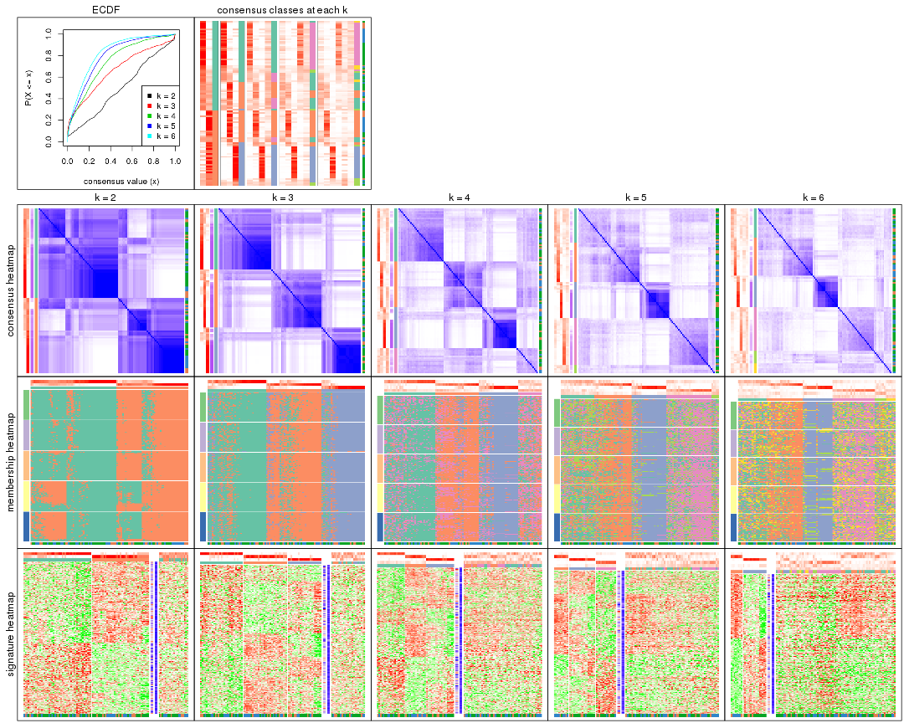
The plots are:
k and the heatmap of
predicted classes for each k.k.k.k.All the plots in panels can be made by individual functions and they are plotted later in this section.
select_partition_number() produces several plots showing different
statistics for choosing “optimized” k. There are following statistics:
k;k, the area increased is defined as \(A_k - A_{k-1}\).The detailed explanations of these statistics can be found in the cola vignette.
Generally speaking, lower PAC score, higher mean silhouette score or higher
concordance corresponds to better partition. Rand index and Jaccard index
measure how similar the current partition is compared to partition with k-1.
If they are too similar, we won't accept k is better than k-1.
select_partition_number(res)
The numeric values for all these statistics can be obtained by get_stats().
get_stats(res)
#> k 1-PAC mean_silhouette concordance area_increased Rand Jaccard
#> 2 2 0.275 0.605 0.818 0.5009 0.499 0.499
#> 3 3 0.437 0.655 0.828 0.3333 0.698 0.467
#> 4 4 0.374 0.432 0.672 0.1220 0.873 0.645
#> 5 5 0.405 0.358 0.588 0.0643 0.918 0.712
#> 6 6 0.449 0.288 0.546 0.0388 0.949 0.781
suggest_best_k() suggests the best \(k\) based on these statistics. The rules are as follows:
suggest_best_k(res)
#> [1] 3
Following shows the table of the partitions (You need to click the show/hide
code output link to see it). The membership matrix (columns with name p*)
is inferred by
clue::cl_consensus()
function with the SE method. Basically the value in the membership matrix
represents the probability to belong to a certain group. The finall class
label for an item is determined with the group with highest probability it
belongs to.
In get_classes() function, the entropy is calculated from the membership
matrix and the silhouette score is calculated from the consensus matrix.
cbind(get_classes(res, k = 2), get_membership(res, k = 2))
#> class entropy silhouette p1 p2
#> GSM153405 2 0.6623 0.692 0.172 0.828
#> GSM153406 2 0.0000 0.750 0.000 1.000
#> GSM153419 2 0.8207 0.639 0.256 0.744
#> GSM153423 2 0.2778 0.723 0.048 0.952
#> GSM153425 2 0.9129 0.576 0.328 0.672
#> GSM153427 2 0.0000 0.750 0.000 1.000
#> GSM153428 2 0.8443 0.627 0.272 0.728
#> GSM153429 2 0.9988 -0.265 0.480 0.520
#> GSM153433 1 0.8267 0.434 0.740 0.260
#> GSM153444 2 0.0000 0.750 0.000 1.000
#> GSM153448 1 0.9977 0.289 0.528 0.472
#> GSM153451 2 0.1843 0.736 0.028 0.972
#> GSM153452 2 0.2236 0.746 0.036 0.964
#> GSM153477 1 0.9580 0.557 0.620 0.380
#> GSM153479 1 0.8144 0.682 0.748 0.252
#> GSM153484 1 0.8555 0.662 0.720 0.280
#> GSM153488 1 0.4161 0.753 0.916 0.084
#> GSM153496 1 0.0000 0.751 1.000 0.000
#> GSM153497 2 0.9996 -0.326 0.488 0.512
#> GSM153500 1 0.0000 0.751 1.000 0.000
#> GSM153503 1 0.0000 0.751 1.000 0.000
#> GSM153508 1 0.0000 0.751 1.000 0.000
#> GSM153409 2 0.0000 0.750 0.000 1.000
#> GSM153426 2 0.0000 0.750 0.000 1.000
#> GSM153431 2 0.9491 0.493 0.368 0.632
#> GSM153438 2 0.0000 0.750 0.000 1.000
#> GSM153440 2 0.9044 0.585 0.320 0.680
#> GSM153447 2 0.9795 0.465 0.416 0.584
#> GSM153450 2 0.0000 0.750 0.000 1.000
#> GSM153456 2 0.0000 0.750 0.000 1.000
#> GSM153457 2 0.0376 0.748 0.004 0.996
#> GSM153458 2 0.0000 0.750 0.000 1.000
#> GSM153459 2 0.0000 0.750 0.000 1.000
#> GSM153460 2 0.0000 0.750 0.000 1.000
#> GSM153461 2 0.2423 0.745 0.040 0.960
#> GSM153463 1 0.9170 0.241 0.668 0.332
#> GSM153464 1 0.9944 0.435 0.544 0.456
#> GSM153466 1 0.7299 0.708 0.796 0.204
#> GSM153467 1 0.9460 0.574 0.636 0.364
#> GSM153468 1 0.7139 0.714 0.804 0.196
#> GSM153469 2 0.9998 -0.329 0.492 0.508
#> GSM153470 1 0.9129 0.608 0.672 0.328
#> GSM153471 1 0.9323 0.587 0.652 0.348
#> GSM153472 1 0.0000 0.751 1.000 0.000
#> GSM153473 1 0.3584 0.712 0.932 0.068
#> GSM153474 1 0.0000 0.751 1.000 0.000
#> GSM153475 1 0.4431 0.750 0.908 0.092
#> GSM153476 2 0.9358 0.278 0.352 0.648
#> GSM153478 1 0.3274 0.721 0.940 0.060
#> GSM153480 2 0.9170 0.225 0.332 0.668
#> GSM153486 1 0.9993 0.363 0.516 0.484
#> GSM153487 1 0.2043 0.755 0.968 0.032
#> GSM153499 1 0.6801 0.720 0.820 0.180
#> GSM153504 1 0.0000 0.751 1.000 0.000
#> GSM153507 1 0.0376 0.751 0.996 0.004
#> GSM153404 2 0.0000 0.750 0.000 1.000
#> GSM153407 2 0.8499 0.624 0.276 0.724
#> GSM153408 2 0.0672 0.750 0.008 0.992
#> GSM153410 2 0.0000 0.750 0.000 1.000
#> GSM153411 2 0.9323 0.554 0.348 0.652
#> GSM153412 2 0.0000 0.750 0.000 1.000
#> GSM153413 2 0.6712 0.690 0.176 0.824
#> GSM153414 2 0.4690 0.725 0.100 0.900
#> GSM153415 2 0.1184 0.749 0.016 0.984
#> GSM153416 2 0.6343 0.604 0.160 0.840
#> GSM153417 2 0.9286 0.559 0.344 0.656
#> GSM153418 2 0.0000 0.750 0.000 1.000
#> GSM153420 2 0.9286 0.559 0.344 0.656
#> GSM153421 2 0.9286 0.559 0.344 0.656
#> GSM153422 2 0.9323 0.554 0.348 0.652
#> GSM153424 2 0.9248 0.566 0.340 0.660
#> GSM153430 1 0.8955 0.312 0.688 0.312
#> GSM153432 1 0.9977 0.409 0.528 0.472
#> GSM153434 1 0.9393 0.218 0.644 0.356
#> GSM153435 1 0.9909 0.463 0.556 0.444
#> GSM153436 2 0.9608 0.511 0.384 0.616
#> GSM153437 2 0.4298 0.688 0.088 0.912
#> GSM153439 1 0.9983 0.395 0.524 0.476
#> GSM153441 1 0.9209 0.563 0.664 0.336
#> GSM153442 1 0.4161 0.753 0.916 0.084
#> GSM153443 1 0.9552 0.560 0.624 0.376
#> GSM153445 1 0.9710 0.531 0.600 0.400
#> GSM153446 2 0.9170 0.227 0.332 0.668
#> GSM153449 1 0.5519 0.661 0.872 0.128
#> GSM153453 1 0.0000 0.751 1.000 0.000
#> GSM153454 1 0.0000 0.751 1.000 0.000
#> GSM153455 1 0.8207 0.620 0.744 0.256
#> GSM153462 1 0.9710 0.531 0.600 0.400
#> GSM153465 2 0.9866 -0.135 0.432 0.568
#> GSM153481 1 0.9977 0.404 0.528 0.472
#> GSM153482 1 0.2948 0.756 0.948 0.052
#> GSM153483 1 0.8763 0.640 0.704 0.296
#> GSM153485 1 0.5842 0.728 0.860 0.140
#> GSM153489 1 0.3114 0.755 0.944 0.056
#> GSM153490 1 0.0376 0.750 0.996 0.004
#> GSM153491 1 0.0000 0.751 1.000 0.000
#> GSM153492 1 0.0000 0.751 1.000 0.000
#> GSM153493 1 0.0000 0.751 1.000 0.000
#> GSM153494 1 0.8144 0.677 0.748 0.252
#> GSM153495 1 0.0000 0.751 1.000 0.000
#> GSM153498 1 0.5946 0.736 0.856 0.144
#> GSM153501 1 0.0000 0.751 1.000 0.000
#> GSM153502 1 0.0000 0.751 1.000 0.000
#> GSM153505 1 0.0000 0.751 1.000 0.000
#> GSM153506 1 0.8955 0.624 0.688 0.312
cbind(get_classes(res, k = 3), get_membership(res, k = 3))
#> class entropy silhouette p1 p2 p3
#> GSM153405 3 0.0000 0.85086 0.000 0.000 1.000
#> GSM153406 3 0.0424 0.85023 0.000 0.008 0.992
#> GSM153419 3 0.0237 0.85118 0.000 0.004 0.996
#> GSM153423 2 0.3030 0.77709 0.004 0.904 0.092
#> GSM153425 3 0.0000 0.85086 0.000 0.000 1.000
#> GSM153427 3 0.2878 0.79803 0.000 0.096 0.904
#> GSM153428 3 0.3370 0.80767 0.024 0.072 0.904
#> GSM153429 2 0.9989 0.06737 0.328 0.356 0.316
#> GSM153433 1 0.8044 0.45192 0.600 0.088 0.312
#> GSM153444 2 0.6308 0.03224 0.000 0.508 0.492
#> GSM153448 2 0.8460 0.51124 0.264 0.600 0.136
#> GSM153451 2 0.0237 0.78660 0.000 0.996 0.004
#> GSM153452 3 0.5363 0.58106 0.000 0.276 0.724
#> GSM153477 2 0.5024 0.67007 0.220 0.776 0.004
#> GSM153479 1 0.8434 0.37904 0.560 0.336 0.104
#> GSM153484 2 0.7759 -0.02163 0.472 0.480 0.048
#> GSM153488 1 0.7437 0.63573 0.692 0.200 0.108
#> GSM153496 1 0.1878 0.79453 0.952 0.044 0.004
#> GSM153497 2 0.0592 0.78711 0.012 0.988 0.000
#> GSM153500 1 0.0237 0.79866 0.996 0.004 0.000
#> GSM153503 1 0.0000 0.79846 1.000 0.000 0.000
#> GSM153508 1 0.0237 0.79866 0.996 0.004 0.000
#> GSM153409 2 0.5216 0.60429 0.000 0.740 0.260
#> GSM153426 2 0.4654 0.67263 0.000 0.792 0.208
#> GSM153431 3 0.9437 0.29329 0.300 0.208 0.492
#> GSM153438 2 0.1860 0.78909 0.000 0.948 0.052
#> GSM153440 3 0.0475 0.85000 0.004 0.004 0.992
#> GSM153447 3 0.5008 0.70560 0.180 0.016 0.804
#> GSM153450 2 0.5760 0.50339 0.000 0.672 0.328
#> GSM153456 2 0.0892 0.78802 0.000 0.980 0.020
#> GSM153457 2 0.0237 0.78657 0.000 0.996 0.004
#> GSM153458 2 0.3340 0.75405 0.000 0.880 0.120
#> GSM153459 2 0.2625 0.77546 0.000 0.916 0.084
#> GSM153460 2 0.1529 0.78806 0.000 0.960 0.040
#> GSM153461 3 0.6053 0.60194 0.020 0.260 0.720
#> GSM153463 1 0.6205 0.46443 0.656 0.008 0.336
#> GSM153464 2 0.0424 0.78719 0.008 0.992 0.000
#> GSM153466 1 0.7245 0.39199 0.596 0.368 0.036
#> GSM153467 2 0.3482 0.75536 0.128 0.872 0.000
#> GSM153468 1 0.6924 0.31904 0.580 0.400 0.020
#> GSM153469 2 0.7412 0.64612 0.192 0.696 0.112
#> GSM153470 2 0.6587 0.43970 0.352 0.632 0.016
#> GSM153471 2 0.4235 0.71431 0.176 0.824 0.000
#> GSM153472 1 0.0747 0.79964 0.984 0.016 0.000
#> GSM153473 1 0.3349 0.76430 0.888 0.004 0.108
#> GSM153474 1 0.0237 0.79866 0.996 0.004 0.000
#> GSM153475 1 0.5955 0.70539 0.772 0.180 0.048
#> GSM153476 3 0.9517 0.28289 0.280 0.232 0.488
#> GSM153478 1 0.5947 0.70751 0.776 0.052 0.172
#> GSM153480 2 0.0000 0.78583 0.000 1.000 0.000
#> GSM153486 2 0.2945 0.77268 0.088 0.908 0.004
#> GSM153487 1 0.1529 0.79601 0.960 0.040 0.000
#> GSM153499 1 0.4978 0.67793 0.780 0.216 0.004
#> GSM153504 1 0.0000 0.79846 1.000 0.000 0.000
#> GSM153507 1 0.2878 0.77604 0.904 0.096 0.000
#> GSM153404 3 0.0237 0.85118 0.000 0.004 0.996
#> GSM153407 3 0.0000 0.85086 0.000 0.000 1.000
#> GSM153408 3 0.0237 0.85118 0.000 0.004 0.996
#> GSM153410 3 0.0747 0.84700 0.000 0.016 0.984
#> GSM153411 3 0.0237 0.85053 0.004 0.000 0.996
#> GSM153412 3 0.0424 0.85010 0.000 0.008 0.992
#> GSM153413 3 0.0237 0.85118 0.000 0.004 0.996
#> GSM153414 3 0.7471 0.12238 0.036 0.448 0.516
#> GSM153415 3 0.0237 0.85118 0.000 0.004 0.996
#> GSM153416 2 0.4708 0.75834 0.036 0.844 0.120
#> GSM153417 3 0.0237 0.85053 0.004 0.000 0.996
#> GSM153418 3 0.0237 0.85118 0.000 0.004 0.996
#> GSM153420 3 0.0237 0.85053 0.004 0.000 0.996
#> GSM153421 3 0.0237 0.85053 0.004 0.000 0.996
#> GSM153422 3 0.0237 0.85053 0.004 0.000 0.996
#> GSM153424 3 0.8743 0.46309 0.268 0.156 0.576
#> GSM153430 1 0.9162 0.21035 0.480 0.152 0.368
#> GSM153432 2 0.7843 0.62626 0.192 0.668 0.140
#> GSM153434 3 0.9776 -0.04976 0.380 0.232 0.388
#> GSM153435 2 0.1031 0.78697 0.024 0.976 0.000
#> GSM153436 3 0.9145 0.41872 0.240 0.216 0.544
#> GSM153437 2 0.0424 0.78781 0.000 0.992 0.008
#> GSM153439 2 0.8698 0.41437 0.300 0.564 0.136
#> GSM153441 2 0.9302 0.00662 0.416 0.424 0.160
#> GSM153442 1 0.7749 0.48850 0.616 0.312 0.072
#> GSM153443 2 0.0747 0.78900 0.016 0.984 0.000
#> GSM153445 2 0.0892 0.78855 0.020 0.980 0.000
#> GSM153446 2 0.0983 0.79052 0.016 0.980 0.004
#> GSM153449 1 0.8379 0.56008 0.624 0.168 0.208
#> GSM153453 1 0.0892 0.79955 0.980 0.020 0.000
#> GSM153454 1 0.0237 0.79826 0.996 0.000 0.004
#> GSM153455 1 0.9865 0.08053 0.404 0.332 0.264
#> GSM153462 2 0.3340 0.75680 0.120 0.880 0.000
#> GSM153465 2 0.6703 0.62506 0.236 0.712 0.052
#> GSM153481 2 0.2486 0.78414 0.060 0.932 0.008
#> GSM153482 1 0.2845 0.78598 0.920 0.068 0.012
#> GSM153483 1 0.6410 0.28193 0.576 0.420 0.004
#> GSM153485 1 0.7222 0.63321 0.696 0.220 0.084
#> GSM153489 1 0.5028 0.74640 0.828 0.132 0.040
#> GSM153490 1 0.0475 0.79938 0.992 0.004 0.004
#> GSM153491 1 0.1031 0.79899 0.976 0.024 0.000
#> GSM153492 1 0.0475 0.79900 0.992 0.004 0.004
#> GSM153493 1 0.0000 0.79846 1.000 0.000 0.000
#> GSM153494 1 0.6836 0.30517 0.572 0.412 0.016
#> GSM153495 1 0.0237 0.79920 0.996 0.004 0.000
#> GSM153498 1 0.6929 0.60482 0.688 0.260 0.052
#> GSM153501 1 0.0000 0.79846 1.000 0.000 0.000
#> GSM153502 1 0.0424 0.79974 0.992 0.008 0.000
#> GSM153505 1 0.0000 0.79846 1.000 0.000 0.000
#> GSM153506 2 0.6192 0.25816 0.420 0.580 0.000
cbind(get_classes(res, k = 4), get_membership(res, k = 4))
#> class entropy silhouette p1 p2 p3 p4
#> GSM153405 3 0.0817 0.7916 0.000 0.000 0.976 0.024
#> GSM153406 3 0.1929 0.7849 0.000 0.024 0.940 0.036
#> GSM153419 3 0.0469 0.7919 0.000 0.000 0.988 0.012
#> GSM153423 2 0.5173 0.5413 0.044 0.788 0.040 0.128
#> GSM153425 3 0.0657 0.7907 0.004 0.000 0.984 0.012
#> GSM153427 3 0.5413 0.5902 0.004 0.236 0.712 0.048
#> GSM153428 3 0.7936 0.4433 0.064 0.224 0.576 0.136
#> GSM153429 4 0.9667 0.3599 0.188 0.288 0.168 0.356
#> GSM153433 1 0.8730 0.1450 0.468 0.064 0.220 0.248
#> GSM153444 2 0.6654 0.3122 0.000 0.588 0.296 0.116
#> GSM153448 2 0.8853 -0.2560 0.200 0.416 0.064 0.320
#> GSM153451 2 0.2480 0.5862 0.000 0.904 0.008 0.088
#> GSM153452 2 0.6294 0.0804 0.004 0.512 0.436 0.048
#> GSM153477 4 0.7563 0.3118 0.168 0.376 0.004 0.452
#> GSM153479 4 0.9259 0.3625 0.316 0.192 0.104 0.388
#> GSM153484 4 0.8522 0.4144 0.300 0.216 0.040 0.444
#> GSM153488 1 0.8554 0.1702 0.472 0.124 0.084 0.320
#> GSM153496 1 0.5441 0.5880 0.736 0.052 0.012 0.200
#> GSM153497 2 0.4290 0.5255 0.016 0.772 0.000 0.212
#> GSM153500 1 0.2976 0.6272 0.872 0.008 0.000 0.120
#> GSM153503 1 0.2831 0.6270 0.876 0.004 0.000 0.120
#> GSM153508 1 0.3306 0.6165 0.840 0.004 0.000 0.156
#> GSM153409 2 0.6394 0.4450 0.008 0.676 0.156 0.160
#> GSM153426 2 0.5731 0.5060 0.000 0.712 0.116 0.172
#> GSM153431 3 0.9828 -0.2591 0.260 0.176 0.328 0.236
#> GSM153438 2 0.3966 0.5740 0.000 0.840 0.072 0.088
#> GSM153440 3 0.4973 0.7156 0.036 0.072 0.808 0.084
#> GSM153447 3 0.7901 0.3832 0.224 0.044 0.564 0.168
#> GSM153450 2 0.6313 0.3785 0.004 0.644 0.260 0.092
#> GSM153456 2 0.1356 0.5815 0.000 0.960 0.008 0.032
#> GSM153457 2 0.1004 0.5803 0.000 0.972 0.004 0.024
#> GSM153458 2 0.2882 0.5667 0.000 0.892 0.084 0.024
#> GSM153459 2 0.2926 0.5795 0.000 0.896 0.048 0.056
#> GSM153460 2 0.2224 0.5837 0.000 0.928 0.032 0.040
#> GSM153461 3 0.8315 -0.0031 0.032 0.392 0.396 0.180
#> GSM153463 1 0.7386 0.3365 0.572 0.012 0.228 0.188
#> GSM153464 2 0.4295 0.5075 0.008 0.752 0.000 0.240
#> GSM153466 4 0.8192 0.2975 0.348 0.192 0.024 0.436
#> GSM153467 2 0.6568 0.1966 0.096 0.572 0.000 0.332
#> GSM153468 4 0.8622 0.3688 0.328 0.224 0.040 0.408
#> GSM153469 4 0.8695 0.2228 0.124 0.372 0.088 0.416
#> GSM153470 4 0.7966 0.4828 0.232 0.260 0.016 0.492
#> GSM153471 2 0.7372 -0.1247 0.140 0.456 0.004 0.400
#> GSM153472 1 0.4993 0.5805 0.712 0.028 0.000 0.260
#> GSM153473 1 0.6273 0.5499 0.696 0.020 0.096 0.188
#> GSM153474 1 0.2408 0.6249 0.896 0.000 0.000 0.104
#> GSM153475 1 0.8243 0.1025 0.440 0.096 0.072 0.392
#> GSM153476 3 0.9311 -0.1054 0.152 0.140 0.400 0.308
#> GSM153478 1 0.8231 0.2934 0.544 0.068 0.152 0.236
#> GSM153480 2 0.4262 0.5275 0.008 0.756 0.000 0.236
#> GSM153486 2 0.6100 0.3741 0.084 0.644 0.000 0.272
#> GSM153487 1 0.5079 0.5782 0.728 0.032 0.004 0.236
#> GSM153499 1 0.7181 0.1148 0.512 0.152 0.000 0.336
#> GSM153504 1 0.3024 0.6273 0.852 0.000 0.000 0.148
#> GSM153507 1 0.5746 0.4674 0.600 0.028 0.004 0.368
#> GSM153404 3 0.1042 0.7918 0.000 0.008 0.972 0.020
#> GSM153407 3 0.4096 0.7369 0.016 0.084 0.848 0.052
#> GSM153408 3 0.1109 0.7909 0.000 0.004 0.968 0.028
#> GSM153410 3 0.2319 0.7770 0.000 0.036 0.924 0.040
#> GSM153411 3 0.0657 0.7905 0.004 0.000 0.984 0.012
#> GSM153412 3 0.2408 0.7759 0.000 0.036 0.920 0.044
#> GSM153413 3 0.1004 0.7914 0.000 0.004 0.972 0.024
#> GSM153414 2 0.8153 0.1800 0.044 0.504 0.300 0.152
#> GSM153415 3 0.1356 0.7898 0.000 0.008 0.960 0.032
#> GSM153416 2 0.6326 0.4737 0.064 0.692 0.036 0.208
#> GSM153417 3 0.0657 0.7905 0.004 0.000 0.984 0.012
#> GSM153418 3 0.1388 0.7899 0.000 0.012 0.960 0.028
#> GSM153420 3 0.0657 0.7905 0.004 0.000 0.984 0.012
#> GSM153421 3 0.0657 0.7905 0.004 0.000 0.984 0.012
#> GSM153422 3 0.0657 0.7905 0.004 0.000 0.984 0.012
#> GSM153424 3 0.9776 -0.0683 0.196 0.216 0.360 0.228
#> GSM153430 1 0.9307 -0.0187 0.372 0.104 0.200 0.324
#> GSM153432 4 0.8581 0.2924 0.112 0.340 0.092 0.456
#> GSM153434 1 0.9711 -0.1357 0.324 0.144 0.292 0.240
#> GSM153435 2 0.5835 0.3375 0.040 0.588 0.000 0.372
#> GSM153436 3 0.9606 -0.0102 0.204 0.208 0.400 0.188
#> GSM153437 2 0.3443 0.5790 0.000 0.848 0.016 0.136
#> GSM153439 4 0.8904 0.3468 0.160 0.348 0.084 0.408
#> GSM153441 4 0.9889 0.4104 0.252 0.280 0.180 0.288
#> GSM153442 1 0.8770 -0.2546 0.380 0.184 0.060 0.376
#> GSM153443 2 0.6054 0.3049 0.056 0.592 0.000 0.352
#> GSM153445 2 0.6554 0.1475 0.080 0.520 0.000 0.400
#> GSM153446 2 0.4632 0.5215 0.012 0.740 0.004 0.244
#> GSM153449 1 0.8602 0.2322 0.532 0.136 0.124 0.208
#> GSM153453 1 0.4348 0.6024 0.780 0.024 0.000 0.196
#> GSM153454 1 0.2676 0.6223 0.896 0.000 0.012 0.092
#> GSM153455 4 0.9788 0.2599 0.304 0.196 0.184 0.316
#> GSM153462 2 0.6392 0.1893 0.068 0.528 0.000 0.404
#> GSM153465 4 0.7659 0.1418 0.092 0.412 0.036 0.460
#> GSM153481 2 0.6014 0.3785 0.060 0.644 0.004 0.292
#> GSM153482 1 0.5759 0.4981 0.668 0.064 0.000 0.268
#> GSM153483 4 0.7861 0.3804 0.332 0.232 0.004 0.432
#> GSM153485 1 0.8433 0.0314 0.436 0.116 0.072 0.376
#> GSM153489 1 0.7813 0.3142 0.536 0.108 0.048 0.308
#> GSM153490 1 0.3335 0.6297 0.856 0.000 0.016 0.128
#> GSM153491 1 0.5217 0.5865 0.728 0.028 0.012 0.232
#> GSM153492 1 0.2831 0.6292 0.876 0.000 0.004 0.120
#> GSM153493 1 0.2647 0.6261 0.880 0.000 0.000 0.120
#> GSM153494 4 0.7656 0.1661 0.408 0.160 0.008 0.424
#> GSM153495 1 0.3236 0.6240 0.856 0.004 0.004 0.136
#> GSM153498 1 0.8810 -0.0536 0.412 0.128 0.096 0.364
#> GSM153501 1 0.3355 0.6229 0.836 0.004 0.000 0.160
#> GSM153502 1 0.4475 0.6063 0.748 0.008 0.004 0.240
#> GSM153505 1 0.2944 0.6276 0.868 0.004 0.000 0.128
#> GSM153506 4 0.7721 0.4835 0.272 0.280 0.000 0.448
cbind(get_classes(res, k = 5), get_membership(res, k = 5))
#> class entropy silhouette p1 p2 p3 p4 p5
#> GSM153405 3 0.0865 0.7551 0.000 0.004 0.972 0.000 0.024
#> GSM153406 3 0.1653 0.7415 0.024 0.004 0.944 0.000 0.028
#> GSM153419 3 0.0404 0.7551 0.000 0.000 0.988 0.000 0.012
#> GSM153423 2 0.5622 0.5276 0.100 0.736 0.048 0.020 0.096
#> GSM153425 3 0.2011 0.7421 0.000 0.000 0.908 0.004 0.088
#> GSM153427 3 0.5987 0.2780 0.024 0.292 0.600 0.000 0.084
#> GSM153428 3 0.8254 -0.1585 0.040 0.276 0.404 0.044 0.236
#> GSM153429 1 0.9500 0.2368 0.340 0.208 0.096 0.152 0.204
#> GSM153433 5 0.8510 0.1106 0.116 0.048 0.108 0.336 0.392
#> GSM153444 2 0.6908 0.3614 0.064 0.588 0.224 0.008 0.116
#> GSM153448 2 0.9243 -0.2921 0.240 0.328 0.056 0.144 0.232
#> GSM153451 2 0.3058 0.5552 0.096 0.860 0.000 0.000 0.044
#> GSM153452 2 0.6020 0.2864 0.012 0.588 0.304 0.004 0.092
#> GSM153477 1 0.8041 0.3907 0.432 0.280 0.008 0.096 0.184
#> GSM153479 1 0.8761 0.2309 0.388 0.116 0.036 0.256 0.204
#> GSM153484 1 0.8756 0.3073 0.392 0.168 0.024 0.216 0.200
#> GSM153488 4 0.8887 0.1634 0.204 0.096 0.064 0.404 0.232
#> GSM153496 4 0.6740 0.4399 0.144 0.040 0.004 0.580 0.232
#> GSM153497 2 0.5526 0.4214 0.224 0.676 0.000 0.028 0.072
#> GSM153500 4 0.4455 0.5504 0.096 0.004 0.000 0.768 0.132
#> GSM153503 4 0.3779 0.5518 0.056 0.004 0.000 0.816 0.124
#> GSM153508 4 0.4364 0.5469 0.148 0.000 0.000 0.764 0.088
#> GSM153409 2 0.6223 0.5000 0.088 0.692 0.076 0.020 0.124
#> GSM153426 2 0.6570 0.4584 0.104 0.628 0.100 0.000 0.168
#> GSM153431 5 0.9751 0.3115 0.160 0.168 0.216 0.148 0.308
#> GSM153438 2 0.4240 0.5623 0.088 0.812 0.048 0.000 0.052
#> GSM153440 3 0.6163 0.5167 0.020 0.064 0.672 0.052 0.192
#> GSM153447 3 0.8081 -0.3427 0.024 0.052 0.372 0.200 0.352
#> GSM153450 2 0.5839 0.4814 0.068 0.696 0.160 0.004 0.072
#> GSM153456 2 0.1026 0.5629 0.024 0.968 0.004 0.000 0.004
#> GSM153457 2 0.1124 0.5601 0.036 0.960 0.004 0.000 0.000
#> GSM153458 2 0.3091 0.5660 0.032 0.880 0.044 0.000 0.044
#> GSM153459 2 0.3201 0.5684 0.044 0.872 0.024 0.000 0.060
#> GSM153460 2 0.3075 0.5687 0.072 0.876 0.008 0.004 0.040
#> GSM153461 2 0.8277 -0.0782 0.068 0.384 0.212 0.024 0.312
#> GSM153463 4 0.7908 -0.2412 0.056 0.012 0.220 0.416 0.296
#> GSM153464 2 0.5223 0.3113 0.332 0.616 0.000 0.008 0.044
#> GSM153466 1 0.8761 0.2295 0.348 0.112 0.028 0.264 0.248
#> GSM153467 2 0.7425 -0.1643 0.368 0.416 0.000 0.064 0.152
#> GSM153468 1 0.8522 0.2492 0.392 0.156 0.012 0.252 0.188
#> GSM153469 1 0.8568 0.3478 0.416 0.264 0.052 0.072 0.196
#> GSM153470 1 0.8223 0.3668 0.488 0.140 0.024 0.172 0.176
#> GSM153471 1 0.7641 0.3757 0.488 0.272 0.004 0.128 0.108
#> GSM153472 4 0.6663 0.4589 0.156 0.020 0.012 0.584 0.228
#> GSM153473 4 0.7265 0.3196 0.108 0.008 0.096 0.556 0.232
#> GSM153474 4 0.3732 0.5519 0.056 0.000 0.004 0.820 0.120
#> GSM153475 4 0.8836 0.0760 0.288 0.056 0.076 0.348 0.232
#> GSM153476 3 0.9169 -0.3758 0.204 0.072 0.364 0.116 0.244
#> GSM153478 4 0.8946 -0.0159 0.184 0.048 0.128 0.376 0.264
#> GSM153480 2 0.5735 0.3239 0.312 0.608 0.004 0.016 0.060
#> GSM153486 2 0.7117 0.1585 0.284 0.524 0.000 0.088 0.104
#> GSM153487 4 0.6993 0.4152 0.208 0.024 0.004 0.516 0.248
#> GSM153499 4 0.8055 0.1595 0.288 0.100 0.008 0.428 0.176
#> GSM153504 4 0.3543 0.5559 0.040 0.000 0.004 0.828 0.128
#> GSM153507 4 0.7487 0.3331 0.284 0.044 0.012 0.484 0.176
#> GSM153404 3 0.0854 0.7543 0.004 0.008 0.976 0.000 0.012
#> GSM153407 3 0.5057 0.5749 0.000 0.100 0.716 0.008 0.176
#> GSM153408 3 0.0740 0.7530 0.008 0.004 0.980 0.000 0.008
#> GSM153410 3 0.1815 0.7391 0.016 0.024 0.940 0.000 0.020
#> GSM153411 3 0.2136 0.7412 0.000 0.000 0.904 0.008 0.088
#> GSM153412 3 0.2006 0.7345 0.020 0.024 0.932 0.000 0.024
#> GSM153413 3 0.1074 0.7530 0.012 0.004 0.968 0.000 0.016
#> GSM153414 2 0.8848 0.0223 0.088 0.412 0.212 0.068 0.220
#> GSM153415 3 0.1200 0.7490 0.012 0.008 0.964 0.000 0.016
#> GSM153416 2 0.7232 0.3370 0.176 0.584 0.024 0.056 0.160
#> GSM153417 3 0.2017 0.7430 0.000 0.000 0.912 0.008 0.080
#> GSM153418 3 0.0968 0.7510 0.012 0.004 0.972 0.000 0.012
#> GSM153420 3 0.2136 0.7414 0.000 0.000 0.904 0.008 0.088
#> GSM153421 3 0.2077 0.7419 0.000 0.000 0.908 0.008 0.084
#> GSM153422 3 0.2249 0.7374 0.000 0.000 0.896 0.008 0.096
#> GSM153424 5 0.9532 0.3501 0.072 0.240 0.228 0.180 0.280
#> GSM153430 5 0.9146 0.2442 0.112 0.096 0.136 0.312 0.344
#> GSM153432 1 0.8448 0.3641 0.464 0.208 0.056 0.076 0.196
#> GSM153434 5 0.9370 0.3066 0.204 0.064 0.200 0.196 0.336
#> GSM153435 1 0.7651 0.1056 0.388 0.384 0.008 0.056 0.164
#> GSM153436 3 0.9651 -0.4774 0.128 0.228 0.264 0.116 0.264
#> GSM153437 2 0.4498 0.5032 0.168 0.772 0.016 0.008 0.036
#> GSM153439 1 0.9068 0.3272 0.376 0.272 0.076 0.112 0.164
#> GSM153441 1 0.9616 0.0730 0.264 0.212 0.080 0.196 0.248
#> GSM153442 1 0.8634 0.1289 0.304 0.128 0.012 0.288 0.268
#> GSM153443 1 0.6872 0.2250 0.496 0.344 0.004 0.032 0.124
#> GSM153445 1 0.6784 0.1405 0.480 0.388 0.008 0.036 0.088
#> GSM153446 2 0.5522 0.3963 0.264 0.656 0.008 0.012 0.060
#> GSM153449 4 0.9316 -0.0739 0.200 0.096 0.104 0.340 0.260
#> GSM153453 4 0.6107 0.4726 0.204 0.000 0.004 0.588 0.204
#> GSM153454 4 0.4572 0.5108 0.056 0.000 0.016 0.760 0.168
#> GSM153455 1 0.9639 -0.0530 0.284 0.104 0.144 0.244 0.224
#> GSM153462 1 0.7404 0.2880 0.488 0.320 0.008 0.084 0.100
#> GSM153465 1 0.8687 0.2851 0.344 0.316 0.032 0.100 0.208
#> GSM153481 2 0.7477 -0.0338 0.376 0.444 0.016 0.072 0.092
#> GSM153482 4 0.7469 0.3709 0.232 0.048 0.008 0.496 0.216
#> GSM153483 1 0.8588 0.2662 0.352 0.148 0.012 0.292 0.196
#> GSM153485 4 0.9117 -0.0169 0.268 0.104 0.072 0.356 0.200
#> GSM153489 4 0.8533 0.0992 0.328 0.064 0.044 0.356 0.208
#> GSM153490 4 0.4904 0.5383 0.080 0.000 0.012 0.732 0.176
#> GSM153491 4 0.5782 0.5030 0.176 0.008 0.000 0.644 0.172
#> GSM153492 4 0.3950 0.5421 0.048 0.000 0.004 0.796 0.152
#> GSM153493 4 0.4183 0.5439 0.084 0.000 0.000 0.780 0.136
#> GSM153494 1 0.8031 0.0966 0.384 0.108 0.000 0.308 0.200
#> GSM153495 4 0.4297 0.5261 0.072 0.000 0.000 0.764 0.164
#> GSM153498 4 0.9149 -0.0417 0.264 0.140 0.056 0.348 0.192
#> GSM153501 4 0.4016 0.5523 0.092 0.000 0.000 0.796 0.112
#> GSM153502 4 0.5726 0.5133 0.144 0.004 0.004 0.652 0.196
#> GSM153505 4 0.3916 0.5457 0.056 0.004 0.000 0.804 0.136
#> GSM153506 1 0.7673 0.4328 0.476 0.216 0.000 0.216 0.092
cbind(get_classes(res, k = 6), get_membership(res, k = 6))
#> class entropy silhouette p1 p2 p3 p4 p5 p6
#> GSM153405 3 0.1787 0.757963 0.008 0.000 0.920 0.000 0.068 0.004
#> GSM153406 3 0.1622 0.736795 0.016 0.000 0.940 0.000 0.028 0.016
#> GSM153419 3 0.1610 0.756762 0.000 0.000 0.916 0.000 0.084 0.000
#> GSM153423 2 0.5422 0.508338 0.132 0.708 0.032 0.000 0.052 0.076
#> GSM153425 3 0.3359 0.725004 0.004 0.000 0.788 0.004 0.192 0.012
#> GSM153427 3 0.6875 0.103769 0.036 0.252 0.520 0.000 0.144 0.048
#> GSM153428 5 0.8159 0.359642 0.024 0.204 0.288 0.036 0.368 0.080
#> GSM153429 1 0.9634 0.109537 0.292 0.172 0.148 0.112 0.100 0.176
#> GSM153433 4 0.8600 -0.009600 0.064 0.048 0.072 0.332 0.316 0.168
#> GSM153444 2 0.6669 0.389163 0.056 0.588 0.144 0.000 0.164 0.048
#> GSM153448 2 0.9092 -0.241152 0.236 0.300 0.024 0.132 0.124 0.184
#> GSM153451 2 0.3344 0.546736 0.088 0.844 0.008 0.000 0.044 0.016
#> GSM153452 2 0.7138 0.161311 0.044 0.504 0.268 0.008 0.132 0.044
#> GSM153477 1 0.7983 0.275567 0.456 0.180 0.016 0.080 0.060 0.208
#> GSM153479 1 0.9293 -0.035406 0.264 0.148 0.036 0.228 0.112 0.212
#> GSM153484 1 0.8373 0.041050 0.404 0.112 0.008 0.216 0.092 0.168
#> GSM153488 6 0.8708 0.136775 0.164 0.068 0.036 0.292 0.104 0.336
#> GSM153496 4 0.6974 0.265665 0.088 0.036 0.008 0.544 0.080 0.244
#> GSM153497 2 0.5808 0.429496 0.196 0.656 0.000 0.048 0.056 0.044
#> GSM153500 4 0.4508 0.404601 0.036 0.000 0.000 0.740 0.060 0.164
#> GSM153503 4 0.4638 0.404601 0.036 0.000 0.000 0.724 0.060 0.180
#> GSM153508 4 0.4671 0.374256 0.084 0.000 0.000 0.720 0.024 0.172
#> GSM153409 2 0.6829 0.388308 0.092 0.556 0.092 0.012 0.232 0.016
#> GSM153426 2 0.7021 0.350685 0.100 0.528 0.136 0.004 0.216 0.016
#> GSM153431 5 0.9122 0.238360 0.120 0.080 0.172 0.184 0.368 0.076
#> GSM153438 2 0.4958 0.535016 0.080 0.752 0.064 0.000 0.076 0.028
#> GSM153440 3 0.6756 0.221292 0.028 0.056 0.480 0.040 0.368 0.028
#> GSM153447 5 0.7788 0.354914 0.032 0.032 0.256 0.152 0.460 0.068
#> GSM153450 2 0.6073 0.475921 0.072 0.668 0.104 0.000 0.096 0.060
#> GSM153456 2 0.1598 0.550316 0.040 0.940 0.004 0.000 0.008 0.008
#> GSM153457 2 0.1906 0.547766 0.040 0.928 0.008 0.000 0.016 0.008
#> GSM153458 2 0.3041 0.551242 0.044 0.864 0.036 0.000 0.056 0.000
#> GSM153459 2 0.3907 0.550427 0.060 0.812 0.024 0.000 0.092 0.012
#> GSM153460 2 0.3287 0.552473 0.056 0.852 0.004 0.000 0.060 0.028
#> GSM153461 5 0.8247 0.198233 0.060 0.292 0.152 0.028 0.392 0.076
#> GSM153463 4 0.7882 -0.078015 0.020 0.016 0.144 0.364 0.336 0.120
#> GSM153464 2 0.5679 0.206843 0.392 0.524 0.008 0.016 0.020 0.040
#> GSM153466 6 0.8602 0.181871 0.284 0.072 0.016 0.248 0.096 0.284
#> GSM153467 2 0.7515 -0.070332 0.372 0.384 0.004 0.060 0.056 0.124
#> GSM153468 1 0.8772 -0.018064 0.320 0.160 0.012 0.180 0.084 0.244
#> GSM153469 1 0.8773 0.246012 0.396 0.224 0.064 0.064 0.104 0.148
#> GSM153470 1 0.8451 0.136728 0.420 0.084 0.028 0.132 0.104 0.232
#> GSM153471 1 0.8459 0.239320 0.372 0.212 0.016 0.148 0.048 0.204
#> GSM153472 4 0.6896 0.128430 0.124 0.008 0.000 0.432 0.084 0.352
#> GSM153473 4 0.7115 0.244019 0.068 0.004 0.044 0.544 0.156 0.184
#> GSM153474 4 0.4690 0.393837 0.044 0.000 0.000 0.736 0.080 0.140
#> GSM153475 6 0.8492 0.131096 0.212 0.040 0.032 0.284 0.100 0.332
#> GSM153476 3 0.9094 -0.311989 0.176 0.088 0.384 0.076 0.132 0.144
#> GSM153478 4 0.8614 -0.070914 0.080 0.040 0.060 0.360 0.228 0.232
#> GSM153480 2 0.6199 0.318692 0.292 0.568 0.020 0.004 0.052 0.064
#> GSM153486 2 0.8035 0.000297 0.304 0.392 0.008 0.068 0.088 0.140
#> GSM153487 4 0.7372 0.132770 0.140 0.016 0.004 0.456 0.112 0.272
#> GSM153499 4 0.8417 -0.088557 0.224 0.092 0.008 0.368 0.088 0.220
#> GSM153504 4 0.4330 0.404199 0.032 0.000 0.000 0.748 0.048 0.172
#> GSM153507 4 0.7417 0.110169 0.164 0.012 0.008 0.452 0.100 0.264
#> GSM153404 3 0.0951 0.758498 0.004 0.000 0.968 0.000 0.020 0.008
#> GSM153407 3 0.6122 0.380992 0.004 0.112 0.548 0.008 0.300 0.028
#> GSM153408 3 0.0767 0.749672 0.004 0.000 0.976 0.000 0.012 0.008
#> GSM153410 3 0.1337 0.741327 0.008 0.008 0.956 0.000 0.012 0.016
#> GSM153411 3 0.3674 0.706865 0.004 0.000 0.756 0.008 0.220 0.012
#> GSM153412 3 0.1129 0.744752 0.008 0.004 0.964 0.000 0.012 0.012
#> GSM153413 3 0.0547 0.757640 0.000 0.000 0.980 0.000 0.020 0.000
#> GSM153414 2 0.8381 0.033287 0.084 0.404 0.132 0.032 0.272 0.076
#> GSM153415 3 0.0862 0.751169 0.008 0.000 0.972 0.000 0.016 0.004
#> GSM153416 2 0.7924 0.265518 0.212 0.476 0.032 0.036 0.148 0.096
#> GSM153417 3 0.3383 0.717176 0.004 0.000 0.776 0.004 0.208 0.008
#> GSM153418 3 0.1026 0.746906 0.008 0.004 0.968 0.000 0.012 0.008
#> GSM153420 3 0.3412 0.716384 0.004 0.000 0.772 0.004 0.212 0.008
#> GSM153421 3 0.3412 0.716384 0.004 0.000 0.772 0.004 0.212 0.008
#> GSM153422 3 0.3599 0.712972 0.004 0.000 0.764 0.004 0.212 0.016
#> GSM153424 5 0.8461 0.343551 0.056 0.176 0.120 0.120 0.460 0.068
#> GSM153430 5 0.8994 -0.085121 0.100 0.060 0.068 0.272 0.316 0.184
#> GSM153432 1 0.8540 0.243336 0.440 0.176 0.052 0.064 0.108 0.160
#> GSM153434 5 0.9454 -0.089646 0.168 0.052 0.112 0.216 0.268 0.184
#> GSM153435 1 0.7393 0.217132 0.476 0.304 0.020 0.040 0.068 0.092
#> GSM153436 5 0.9247 0.255596 0.044 0.188 0.188 0.120 0.324 0.136
#> GSM153437 2 0.5332 0.480924 0.180 0.700 0.028 0.004 0.044 0.044
#> GSM153439 1 0.9081 0.216313 0.352 0.224 0.072 0.080 0.100 0.172
#> GSM153441 1 0.9470 -0.076068 0.268 0.116 0.052 0.212 0.176 0.176
#> GSM153442 6 0.8972 0.172247 0.224 0.120 0.012 0.256 0.132 0.256
#> GSM153443 1 0.6632 0.023999 0.440 0.380 0.000 0.008 0.076 0.096
#> GSM153445 1 0.7164 0.084728 0.440 0.356 0.016 0.024 0.052 0.112
#> GSM153446 2 0.6641 0.314801 0.272 0.560 0.016 0.028 0.064 0.060
#> GSM153449 6 0.8978 0.119661 0.144 0.052 0.060 0.292 0.152 0.300
#> GSM153453 4 0.6648 0.251861 0.116 0.016 0.004 0.560 0.072 0.232
#> GSM153454 4 0.5235 0.381425 0.016 0.004 0.004 0.680 0.152 0.144
#> GSM153455 6 0.9609 0.123808 0.224 0.080 0.100 0.176 0.172 0.248
#> GSM153462 1 0.7171 0.319145 0.528 0.252 0.008 0.072 0.068 0.072
#> GSM153465 1 0.8697 0.199179 0.400 0.180 0.040 0.060 0.172 0.148
#> GSM153481 2 0.7885 0.005212 0.324 0.424 0.036 0.060 0.064 0.092
#> GSM153482 4 0.8315 -0.095194 0.248 0.060 0.008 0.380 0.128 0.176
#> GSM153483 1 0.8760 0.037355 0.336 0.124 0.012 0.232 0.104 0.192
#> GSM153485 4 0.8825 -0.163383 0.192 0.060 0.040 0.300 0.112 0.296
#> GSM153489 4 0.8562 -0.150361 0.200 0.036 0.028 0.320 0.136 0.280
#> GSM153490 4 0.5302 0.379165 0.024 0.000 0.008 0.676 0.120 0.172
#> GSM153491 4 0.7038 0.191655 0.096 0.016 0.008 0.496 0.096 0.288
#> GSM153492 4 0.5176 0.388129 0.060 0.000 0.000 0.700 0.120 0.120
#> GSM153493 4 0.4967 0.390556 0.084 0.000 0.000 0.712 0.052 0.152
#> GSM153494 1 0.8379 -0.133597 0.360 0.072 0.008 0.244 0.100 0.216
#> GSM153495 4 0.5914 0.345599 0.048 0.004 0.000 0.616 0.188 0.144
#> GSM153498 4 0.8811 -0.148611 0.232 0.076 0.052 0.316 0.064 0.260
#> GSM153501 4 0.4894 0.386378 0.088 0.000 0.000 0.716 0.044 0.152
#> GSM153502 4 0.6415 0.303859 0.108 0.008 0.000 0.580 0.100 0.204
#> GSM153505 4 0.4966 0.400981 0.048 0.000 0.000 0.712 0.092 0.148
#> GSM153506 1 0.7893 0.112099 0.388 0.140 0.000 0.252 0.032 0.188
Heatmaps for the consensus matrix. It visualizes the probability of two samples to be in a same group.
consensus_heatmap(res, k = 2)
consensus_heatmap(res, k = 3)
consensus_heatmap(res, k = 4)
consensus_heatmap(res, k = 5)
consensus_heatmap(res, k = 6)
Heatmaps for the membership of samples in all partitions to see how consistent they are:
membership_heatmap(res, k = 2)
membership_heatmap(res, k = 3)
membership_heatmap(res, k = 4)
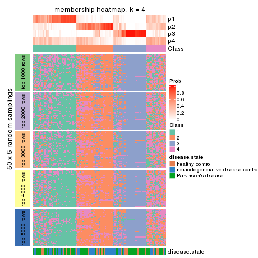
membership_heatmap(res, k = 5)
membership_heatmap(res, k = 6)
As soon as we have had the classes for columns, we can look for signatures which are significantly different between classes which can be candidate marks for certain classes. Following are the heatmaps for signatures.
Signature heatmaps where rows are scaled:
get_signatures(res, k = 2)
get_signatures(res, k = 3)
get_signatures(res, k = 4)
get_signatures(res, k = 5)
get_signatures(res, k = 6)
Signature heatmaps where rows are not scaled:
get_signatures(res, k = 2, scale_rows = FALSE)
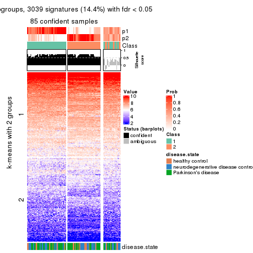
get_signatures(res, k = 3, scale_rows = FALSE)
get_signatures(res, k = 4, scale_rows = FALSE)
get_signatures(res, k = 5, scale_rows = FALSE)
get_signatures(res, k = 6, scale_rows = FALSE)
Compare the overlap of signatures from different k:
compare_signatures(res)
get_signature() returns a data frame invisibly. TO get the list of signatures, the function
call should be assigned to a variable explicitly. In following code, if plot argument is set
to FALSE, no heatmap is plotted while only the differential analysis is performed.
# code only for demonstration
tb = get_signature(res, k = ..., plot = FALSE)
An example of the output of tb is:
#> which_row fdr mean_1 mean_2 scaled_mean_1 scaled_mean_2 km
#> 1 38 0.042760348 8.373488 9.131774 -0.5533452 0.5164555 1
#> 2 40 0.018707592 7.106213 8.469186 -0.6173731 0.5762149 1
#> 3 55 0.019134737 10.221463 11.207825 -0.6159697 0.5749050 1
#> 4 59 0.006059896 5.921854 7.869574 -0.6899429 0.6439467 1
#> 5 60 0.018055526 8.928898 10.211722 -0.6204761 0.5791110 1
#> 6 98 0.009384629 15.714769 14.887706 0.6635654 -0.6193277 2
...
The columns in tb are:
which_row: row indices corresponding to the input matrix.fdr: FDR for the differential test. mean_x: The mean value in group x.scaled_mean_x: The mean value in group x after rows are scaled.km: Row groups if k-means clustering is applied to rows.UMAP plot which shows how samples are separated.
dimension_reduction(res, k = 2, method = "UMAP")
dimension_reduction(res, k = 3, method = "UMAP")
dimension_reduction(res, k = 4, method = "UMAP")
dimension_reduction(res, k = 5, method = "UMAP")
dimension_reduction(res, k = 6, method = "UMAP")
Following heatmap shows how subgroups are split when increasing k:
collect_classes(res)
Test correlation between subgroups and known annotations. If the known annotation is numeric, one-way ANOVA test is applied, and if the known annotation is discrete, chi-squared contingency table test is applied.
test_to_known_factors(res)
#> n disease.state(p) k
#> CV:skmeans 85 0.647657 2
#> CV:skmeans 82 0.069218 3
#> CV:skmeans 52 0.004742 4
#> CV:skmeans 42 0.002003 5
#> CV:skmeans 24 0.000123 6
If matrix rows can be associated to genes, consider to use functional_enrichment(res,
...) to perform function enrichment for the signature genes. See this vignette for more detailed explanations.
The object with results only for a single top-value method and a single partition method can be extracted as:
res = res_list["CV", "pam"]
# you can also extract it by
# res = res_list["CV:pam"]
A summary of res and all the functions that can be applied to it:
res
#> A 'ConsensusPartition' object with k = 2, 3, 4, 5, 6.
#> On a matrix with 21168 rows and 105 columns.
#> Top rows (1000, 2000, 3000, 4000, 5000) are extracted by 'CV' method.
#> Subgroups are detected by 'pam' method.
#> Performed in total 1250 partitions by row resampling.
#> Best k for subgroups seems to be 2.
#>
#> Following methods can be applied to this 'ConsensusPartition' object:
#> [1] "cola_report" "collect_classes" "collect_plots"
#> [4] "collect_stats" "colnames" "compare_signatures"
#> [7] "consensus_heatmap" "dimension_reduction" "functional_enrichment"
#> [10] "get_anno_col" "get_anno" "get_classes"
#> [13] "get_consensus" "get_matrix" "get_membership"
#> [16] "get_param" "get_signatures" "get_stats"
#> [19] "is_best_k" "is_stable_k" "membership_heatmap"
#> [22] "ncol" "nrow" "plot_ecdf"
#> [25] "rownames" "select_partition_number" "show"
#> [28] "suggest_best_k" "test_to_known_factors"
collect_plots() function collects all the plots made from res for all k (number of partitions)
into one single page to provide an easy and fast comparison between different k.
collect_plots(res)
The plots are:
k and the heatmap of
predicted classes for each k.k.k.k.All the plots in panels can be made by individual functions and they are plotted later in this section.
select_partition_number() produces several plots showing different
statistics for choosing “optimized” k. There are following statistics:
k;k, the area increased is defined as \(A_k - A_{k-1}\).The detailed explanations of these statistics can be found in the cola vignette.
Generally speaking, lower PAC score, higher mean silhouette score or higher
concordance corresponds to better partition. Rand index and Jaccard index
measure how similar the current partition is compared to partition with k-1.
If they are too similar, we won't accept k is better than k-1.
select_partition_number(res)
The numeric values for all these statistics can be obtained by get_stats().
get_stats(res)
#> k 1-PAC mean_silhouette concordance area_increased Rand Jaccard
#> 2 2 0.0656 0.574 0.759 0.4447 0.580 0.580
#> 3 3 0.0585 0.562 0.713 0.1779 0.896 0.825
#> 4 4 0.1420 0.607 0.706 0.0670 0.850 0.745
#> 5 5 0.2138 0.507 0.711 0.0698 0.876 0.783
#> 6 6 0.2404 0.364 0.688 0.0361 0.903 0.805
suggest_best_k() suggests the best \(k\) based on these statistics. The rules are as follows:
suggest_best_k(res)
#> [1] 2
Following shows the table of the partitions (You need to click the show/hide
code output link to see it). The membership matrix (columns with name p*)
is inferred by
clue::cl_consensus()
function with the SE method. Basically the value in the membership matrix
represents the probability to belong to a certain group. The finall class
label for an item is determined with the group with highest probability it
belongs to.
In get_classes() function, the entropy is calculated from the membership
matrix and the silhouette score is calculated from the consensus matrix.
cbind(get_classes(res, k = 2), get_membership(res, k = 2))
#> class entropy silhouette p1 p2
#> GSM153405 1 0.0000 0.6716 1.000 0.000
#> GSM153406 1 0.6343 0.6786 0.840 0.160
#> GSM153419 1 0.0000 0.6716 1.000 0.000
#> GSM153423 2 0.7139 0.6859 0.196 0.804
#> GSM153425 1 0.0000 0.6716 1.000 0.000
#> GSM153427 1 0.9000 0.6179 0.684 0.316
#> GSM153428 1 0.8267 0.6636 0.740 0.260
#> GSM153429 1 0.9522 0.6042 0.628 0.372
#> GSM153433 1 0.8813 0.6406 0.700 0.300
#> GSM153444 1 0.9460 0.4810 0.636 0.364
#> GSM153448 1 0.9815 0.2110 0.580 0.420
#> GSM153451 2 0.9909 0.5560 0.444 0.556
#> GSM153452 1 0.0672 0.6689 0.992 0.008
#> GSM153477 2 0.9661 0.5626 0.392 0.608
#> GSM153479 2 0.2603 0.6504 0.044 0.956
#> GSM153484 1 0.7883 0.6802 0.764 0.236
#> GSM153488 1 0.9044 0.6559 0.680 0.320
#> GSM153496 1 0.3584 0.6872 0.932 0.068
#> GSM153497 2 0.9044 0.6514 0.320 0.680
#> GSM153500 1 0.9710 0.5997 0.600 0.400
#> GSM153503 1 0.9963 0.5279 0.536 0.464
#> GSM153508 2 0.0938 0.6339 0.012 0.988
#> GSM153409 2 0.9635 0.2445 0.388 0.612
#> GSM153426 1 0.6801 0.7013 0.820 0.180
#> GSM153431 1 0.9963 0.5289 0.536 0.464
#> GSM153438 2 0.9954 0.5391 0.460 0.540
#> GSM153440 1 0.0938 0.6780 0.988 0.012
#> GSM153447 1 0.9732 0.5857 0.596 0.404
#> GSM153450 2 0.9710 0.5954 0.400 0.600
#> GSM153456 2 0.8608 0.6660 0.284 0.716
#> GSM153457 2 0.7139 0.6887 0.196 0.804
#> GSM153458 1 0.9522 -0.2716 0.628 0.372
#> GSM153459 2 0.9922 0.5480 0.448 0.552
#> GSM153460 2 0.6343 0.6863 0.160 0.840
#> GSM153461 1 0.7219 0.6946 0.800 0.200
#> GSM153463 1 0.8144 0.6943 0.748 0.252
#> GSM153464 2 0.6247 0.6818 0.156 0.844
#> GSM153466 1 0.7674 0.6711 0.776 0.224
#> GSM153467 2 0.5842 0.6818 0.140 0.860
#> GSM153468 1 0.4562 0.6824 0.904 0.096
#> GSM153469 1 0.6973 0.6620 0.812 0.188
#> GSM153470 2 0.6438 0.5332 0.164 0.836
#> GSM153471 2 0.9044 0.5422 0.320 0.680
#> GSM153472 1 0.3733 0.6965 0.928 0.072
#> GSM153473 1 0.5059 0.7096 0.888 0.112
#> GSM153474 2 0.9988 -0.4706 0.480 0.520
#> GSM153475 1 0.9815 0.5760 0.580 0.420
#> GSM153476 1 0.7745 0.6945 0.772 0.228
#> GSM153478 1 0.7674 0.6963 0.776 0.224
#> GSM153480 2 0.6623 0.6775 0.172 0.828
#> GSM153486 1 0.9909 -0.3166 0.556 0.444
#> GSM153487 2 0.9491 -0.0452 0.368 0.632
#> GSM153499 1 0.9323 0.6390 0.652 0.348
#> GSM153504 1 0.9427 0.6309 0.640 0.360
#> GSM153507 1 0.9993 0.5029 0.516 0.484
#> GSM153404 1 0.0000 0.6716 1.000 0.000
#> GSM153407 1 0.6801 0.6880 0.820 0.180
#> GSM153408 1 0.0376 0.6739 0.996 0.004
#> GSM153410 1 0.0672 0.6735 0.992 0.008
#> GSM153411 1 0.0672 0.6693 0.992 0.008
#> GSM153412 1 0.0672 0.6735 0.992 0.008
#> GSM153413 1 0.0000 0.6716 1.000 0.000
#> GSM153414 1 0.5059 0.6483 0.888 0.112
#> GSM153415 1 0.5629 0.6679 0.868 0.132
#> GSM153416 2 0.5946 0.6742 0.144 0.856
#> GSM153417 1 0.0672 0.6693 0.992 0.008
#> GSM153418 1 0.2423 0.6829 0.960 0.040
#> GSM153420 1 0.5178 0.7102 0.884 0.116
#> GSM153421 1 0.0672 0.6693 0.992 0.008
#> GSM153422 1 0.1184 0.6739 0.984 0.016
#> GSM153424 1 0.9866 0.5598 0.568 0.432
#> GSM153430 1 0.7453 0.7009 0.788 0.212
#> GSM153432 2 0.9552 0.6083 0.376 0.624
#> GSM153434 1 0.6148 0.7038 0.848 0.152
#> GSM153435 1 0.6531 0.5550 0.832 0.168
#> GSM153436 1 0.9661 0.0257 0.608 0.392
#> GSM153437 2 0.8608 0.6701 0.284 0.716
#> GSM153439 1 0.5946 0.5124 0.856 0.144
#> GSM153441 2 0.9552 0.2686 0.376 0.624
#> GSM153442 1 0.5737 0.6954 0.864 0.136
#> GSM153443 2 0.7453 0.6958 0.212 0.788
#> GSM153445 2 0.7883 0.6573 0.236 0.764
#> GSM153446 2 0.6343 0.6731 0.160 0.840
#> GSM153449 1 0.9635 0.6093 0.612 0.388
#> GSM153453 1 0.6531 0.7109 0.832 0.168
#> GSM153454 1 0.9881 0.5667 0.564 0.436
#> GSM153455 1 0.8608 0.6724 0.716 0.284
#> GSM153462 2 0.5519 0.6048 0.128 0.872
#> GSM153465 1 0.9850 0.5505 0.572 0.428
#> GSM153481 2 0.9970 0.5300 0.468 0.532
#> GSM153482 1 0.9815 0.5586 0.580 0.420
#> GSM153483 2 0.9608 -0.1875 0.384 0.616
#> GSM153485 1 0.8763 0.1345 0.704 0.296
#> GSM153489 1 0.9087 0.6628 0.676 0.324
#> GSM153490 1 0.9833 0.5725 0.576 0.424
#> GSM153491 1 0.8909 0.6351 0.692 0.308
#> GSM153492 1 0.9988 0.5149 0.520 0.480
#> GSM153493 1 0.9815 0.5825 0.580 0.420
#> GSM153494 1 0.6712 0.6973 0.824 0.176
#> GSM153495 1 0.9129 0.6293 0.672 0.328
#> GSM153498 1 0.0938 0.6747 0.988 0.012
#> GSM153501 1 0.7950 0.6743 0.760 0.240
#> GSM153502 1 0.6887 0.7048 0.816 0.184
#> GSM153505 1 0.9970 0.5246 0.532 0.468
#> GSM153506 2 0.4690 0.6783 0.100 0.900
cbind(get_classes(res, k = 3), get_membership(res, k = 3))
#> class entropy silhouette p1 p2 p3
#> GSM153405 1 0.0661 0.6254 0.988 0.004 0.008
#> GSM153406 1 0.5663 0.6495 0.808 0.096 0.096
#> GSM153419 1 0.1860 0.6082 0.948 0.000 0.052
#> GSM153423 2 0.3896 0.6631 0.128 0.864 0.008
#> GSM153425 1 0.3941 0.5454 0.844 0.000 0.156
#> GSM153427 1 0.6102 0.6417 0.672 0.320 0.008
#> GSM153428 1 0.5656 0.6737 0.728 0.264 0.008
#> GSM153429 1 0.8014 0.6306 0.628 0.268 0.104
#> GSM153433 1 0.6129 0.6675 0.700 0.284 0.016
#> GSM153444 1 0.6758 0.5305 0.620 0.360 0.020
#> GSM153448 1 0.8043 0.2038 0.556 0.372 0.072
#> GSM153451 2 0.6566 0.5884 0.348 0.636 0.016
#> GSM153452 1 0.1989 0.6350 0.948 0.048 0.004
#> GSM153477 2 0.7962 0.5753 0.352 0.576 0.072
#> GSM153479 2 0.5874 0.6178 0.088 0.796 0.116
#> GSM153484 1 0.7113 0.6633 0.720 0.168 0.112
#> GSM153488 1 0.7344 0.6635 0.684 0.232 0.084
#> GSM153496 1 0.3406 0.6640 0.904 0.068 0.028
#> GSM153497 2 0.6053 0.6470 0.260 0.720 0.020
#> GSM153500 1 0.8198 0.6240 0.596 0.304 0.100
#> GSM153503 1 0.8573 0.5851 0.524 0.372 0.104
#> GSM153508 2 0.6621 0.4933 0.032 0.684 0.284
#> GSM153409 2 0.7505 0.0724 0.384 0.572 0.044
#> GSM153426 1 0.5571 0.6900 0.804 0.140 0.056
#> GSM153431 1 0.8559 0.5734 0.512 0.388 0.100
#> GSM153438 2 0.6617 0.5778 0.388 0.600 0.012
#> GSM153440 1 0.4228 0.5650 0.844 0.008 0.148
#> GSM153447 1 0.8843 0.5970 0.564 0.276 0.160
#> GSM153450 2 0.6008 0.6057 0.332 0.664 0.004
#> GSM153456 2 0.5122 0.6679 0.200 0.788 0.012
#> GSM153457 2 0.4195 0.6751 0.136 0.852 0.012
#> GSM153458 1 0.6598 -0.3003 0.564 0.428 0.008
#> GSM153459 2 0.6673 0.5910 0.344 0.636 0.020
#> GSM153460 2 0.4591 0.6717 0.120 0.848 0.032
#> GSM153461 1 0.5643 0.6843 0.760 0.220 0.020
#> GSM153463 1 0.8913 0.0560 0.508 0.132 0.360
#> GSM153464 2 0.5688 0.6647 0.168 0.788 0.044
#> GSM153466 1 0.6679 0.6598 0.748 0.152 0.100
#> GSM153467 2 0.3213 0.6511 0.092 0.900 0.008
#> GSM153468 1 0.4095 0.6529 0.880 0.056 0.064
#> GSM153469 1 0.6383 0.6369 0.768 0.128 0.104
#> GSM153470 2 0.7216 0.4571 0.176 0.712 0.112
#> GSM153471 2 0.7613 0.5197 0.316 0.620 0.064
#> GSM153472 1 0.3406 0.6717 0.904 0.068 0.028
#> GSM153473 1 0.4059 0.6887 0.860 0.128 0.012
#> GSM153474 1 0.8840 0.5177 0.456 0.428 0.116
#> GSM153475 1 0.7937 0.6233 0.568 0.364 0.068
#> GSM153476 1 0.6906 0.6864 0.724 0.192 0.084
#> GSM153478 1 0.5070 0.6986 0.772 0.224 0.004
#> GSM153480 2 0.5777 0.6618 0.160 0.788 0.052
#> GSM153486 1 0.7063 -0.3253 0.516 0.464 0.020
#> GSM153487 2 0.8202 -0.2325 0.376 0.544 0.080
#> GSM153499 1 0.7418 0.6603 0.672 0.248 0.080
#> GSM153504 1 0.7587 0.6556 0.640 0.288 0.072
#> GSM153507 1 0.8535 0.5667 0.500 0.404 0.096
#> GSM153404 1 0.0237 0.6239 0.996 0.000 0.004
#> GSM153407 1 0.6463 0.6415 0.756 0.164 0.080
#> GSM153408 1 0.0829 0.6291 0.984 0.004 0.012
#> GSM153410 1 0.1129 0.6343 0.976 0.004 0.020
#> GSM153411 3 0.5706 0.7771 0.320 0.000 0.680
#> GSM153412 1 0.1267 0.6349 0.972 0.004 0.024
#> GSM153413 1 0.0892 0.6295 0.980 0.000 0.020
#> GSM153414 1 0.4723 0.6396 0.824 0.160 0.016
#> GSM153415 1 0.5243 0.6353 0.828 0.072 0.100
#> GSM153416 2 0.4591 0.6530 0.120 0.848 0.032
#> GSM153417 3 0.5706 0.7771 0.320 0.000 0.680
#> GSM153418 1 0.2443 0.6463 0.940 0.028 0.032
#> GSM153420 3 0.6195 0.7573 0.276 0.020 0.704
#> GSM153421 3 0.5706 0.7771 0.320 0.000 0.680
#> GSM153422 3 0.6047 0.7753 0.312 0.008 0.680
#> GSM153424 1 0.7890 0.6015 0.544 0.396 0.060
#> GSM153430 1 0.5874 0.7006 0.760 0.208 0.032
#> GSM153432 2 0.6726 0.6093 0.332 0.644 0.024
#> GSM153434 1 0.4575 0.6850 0.812 0.184 0.004
#> GSM153435 1 0.4575 0.5542 0.828 0.160 0.012
#> GSM153436 1 0.6896 0.0964 0.588 0.392 0.020
#> GSM153437 2 0.6335 0.6574 0.240 0.724 0.036
#> GSM153439 1 0.4172 0.5156 0.840 0.156 0.004
#> GSM153441 2 0.7279 0.0826 0.376 0.588 0.036
#> GSM153442 1 0.5722 0.6851 0.800 0.132 0.068
#> GSM153443 2 0.4979 0.6798 0.168 0.812 0.020
#> GSM153445 2 0.6232 0.6367 0.220 0.740 0.040
#> GSM153446 2 0.6463 0.6368 0.164 0.756 0.080
#> GSM153449 1 0.7924 0.6455 0.612 0.304 0.084
#> GSM153453 1 0.5119 0.7005 0.812 0.160 0.028
#> GSM153454 1 0.9197 0.5451 0.536 0.252 0.212
#> GSM153455 1 0.6857 0.6823 0.696 0.252 0.052
#> GSM153462 2 0.5915 0.5558 0.128 0.792 0.080
#> GSM153465 1 0.7570 0.6127 0.552 0.404 0.044
#> GSM153481 2 0.7311 0.5771 0.384 0.580 0.036
#> GSM153482 1 0.7607 0.6248 0.584 0.364 0.052
#> GSM153483 2 0.8627 -0.3495 0.392 0.504 0.104
#> GSM153485 1 0.6793 0.1458 0.672 0.292 0.036
#> GSM153489 1 0.7265 0.6760 0.684 0.240 0.076
#> GSM153490 3 0.9916 0.0144 0.316 0.288 0.396
#> GSM153491 1 0.6075 0.6556 0.676 0.316 0.008
#> GSM153492 1 0.8710 0.5742 0.508 0.380 0.112
#> GSM153493 3 0.9527 0.3379 0.220 0.300 0.480
#> GSM153494 1 0.5526 0.6919 0.792 0.172 0.036
#> GSM153495 1 0.6880 0.6594 0.660 0.304 0.036
#> GSM153498 1 0.1129 0.6356 0.976 0.004 0.020
#> GSM153501 1 0.5404 0.6741 0.740 0.256 0.004
#> GSM153502 1 0.4912 0.6954 0.796 0.196 0.008
#> GSM153505 1 0.8363 0.5743 0.504 0.412 0.084
#> GSM153506 2 0.4289 0.6569 0.092 0.868 0.040
cbind(get_classes(res, k = 4), get_membership(res, k = 4))
#> class entropy silhouette p1 p2 p3 p4
#> GSM153405 1 0.600 0.6614 0.648 0.300 0.028 0.024
#> GSM153406 1 0.638 0.6928 0.680 0.216 0.024 0.080
#> GSM153419 1 0.650 0.6601 0.640 0.272 0.068 0.020
#> GSM153423 2 0.555 0.6817 0.248 0.704 0.016 0.032
#> GSM153425 1 0.686 0.6468 0.640 0.140 0.204 0.016
#> GSM153427 1 0.430 0.6844 0.844 0.076 0.040 0.040
#> GSM153428 1 0.493 0.7094 0.804 0.116 0.040 0.040
#> GSM153429 1 0.652 0.6769 0.684 0.196 0.032 0.088
#> GSM153433 1 0.472 0.7018 0.820 0.096 0.040 0.044
#> GSM153444 1 0.636 0.5728 0.648 0.276 0.028 0.048
#> GSM153448 1 0.746 0.2654 0.504 0.380 0.036 0.080
#> GSM153451 2 0.274 0.6504 0.076 0.900 0.000 0.024
#> GSM153452 1 0.603 0.6649 0.656 0.288 0.028 0.028
#> GSM153477 2 0.493 0.6373 0.136 0.792 0.016 0.056
#> GSM153479 2 0.698 0.6001 0.256 0.624 0.032 0.088
#> GSM153484 1 0.606 0.7080 0.720 0.168 0.024 0.088
#> GSM153488 1 0.513 0.7106 0.792 0.104 0.024 0.080
#> GSM153496 1 0.625 0.6954 0.672 0.248 0.028 0.052
#> GSM153497 2 0.351 0.6872 0.112 0.860 0.004 0.024
#> GSM153500 1 0.528 0.6815 0.780 0.092 0.020 0.108
#> GSM153503 1 0.536 0.6475 0.788 0.072 0.048 0.092
#> GSM153508 4 0.222 0.0000 0.060 0.016 0.000 0.924
#> GSM153409 1 0.722 0.0836 0.556 0.340 0.056 0.048
#> GSM153426 1 0.528 0.7181 0.740 0.204 0.008 0.048
#> GSM153431 1 0.415 0.6443 0.848 0.044 0.024 0.084
#> GSM153438 2 0.469 0.6597 0.176 0.784 0.028 0.012
#> GSM153440 1 0.685 0.6570 0.652 0.124 0.200 0.024
#> GSM153447 1 0.594 0.6769 0.744 0.048 0.140 0.068
#> GSM153450 2 0.572 0.6698 0.192 0.732 0.036 0.040
#> GSM153456 2 0.447 0.7037 0.220 0.760 0.000 0.020
#> GSM153457 2 0.502 0.6914 0.252 0.720 0.004 0.024
#> GSM153458 2 0.629 0.3207 0.304 0.632 0.028 0.036
#> GSM153459 2 0.273 0.6572 0.076 0.904 0.008 0.012
#> GSM153460 2 0.508 0.6814 0.200 0.752 0.008 0.040
#> GSM153461 1 0.569 0.7187 0.744 0.172 0.036 0.048
#> GSM153463 1 0.666 0.3284 0.528 0.032 0.408 0.032
#> GSM153464 2 0.504 0.6923 0.196 0.748 0.000 0.056
#> GSM153466 1 0.695 0.6985 0.636 0.236 0.032 0.096
#> GSM153467 2 0.584 0.6439 0.296 0.656 0.012 0.036
#> GSM153468 1 0.586 0.6909 0.684 0.248 0.008 0.060
#> GSM153469 1 0.669 0.6766 0.652 0.232 0.024 0.092
#> GSM153470 1 0.767 -0.3493 0.460 0.408 0.032 0.100
#> GSM153471 2 0.649 0.5047 0.404 0.536 0.012 0.048
#> GSM153472 1 0.610 0.7006 0.680 0.248 0.028 0.044
#> GSM153473 1 0.547 0.7170 0.748 0.184 0.032 0.036
#> GSM153474 1 0.625 0.5647 0.736 0.076 0.096 0.092
#> GSM153475 1 0.374 0.6797 0.872 0.048 0.028 0.052
#> GSM153476 1 0.451 0.7263 0.820 0.116 0.016 0.048
#> GSM153478 1 0.379 0.7286 0.844 0.128 0.016 0.012
#> GSM153480 2 0.564 0.6885 0.232 0.708 0.012 0.048
#> GSM153486 2 0.642 0.3157 0.380 0.564 0.024 0.032
#> GSM153487 1 0.639 0.3689 0.676 0.224 0.024 0.076
#> GSM153499 1 0.481 0.7096 0.812 0.096 0.024 0.068
#> GSM153504 1 0.334 0.7047 0.884 0.052 0.008 0.056
#> GSM153507 1 0.512 0.6366 0.796 0.068 0.032 0.104
#> GSM153404 1 0.602 0.6599 0.644 0.304 0.028 0.024
#> GSM153407 1 0.669 0.6970 0.688 0.148 0.124 0.040
#> GSM153408 1 0.614 0.6650 0.648 0.292 0.032 0.028
#> GSM153410 1 0.646 0.6701 0.640 0.280 0.028 0.052
#> GSM153411 3 0.158 0.8015 0.036 0.012 0.952 0.000
#> GSM153412 1 0.648 0.6700 0.640 0.280 0.032 0.048
#> GSM153413 1 0.616 0.6644 0.644 0.296 0.032 0.028
#> GSM153414 1 0.620 0.6572 0.636 0.304 0.028 0.032
#> GSM153415 1 0.668 0.6813 0.656 0.224 0.024 0.096
#> GSM153416 2 0.664 0.6496 0.296 0.616 0.020 0.068
#> GSM153417 3 0.158 0.8015 0.036 0.012 0.952 0.000
#> GSM153418 1 0.621 0.6810 0.644 0.292 0.040 0.024
#> GSM153420 3 0.155 0.7905 0.040 0.008 0.952 0.000
#> GSM153421 3 0.158 0.8015 0.036 0.012 0.952 0.000
#> GSM153422 3 0.145 0.7963 0.036 0.008 0.956 0.000
#> GSM153424 1 0.406 0.6585 0.856 0.052 0.028 0.064
#> GSM153430 1 0.590 0.7327 0.732 0.176 0.044 0.048
#> GSM153432 2 0.522 0.6608 0.188 0.756 0.036 0.020
#> GSM153434 1 0.444 0.7190 0.816 0.136 0.028 0.020
#> GSM153435 1 0.671 0.5519 0.528 0.404 0.024 0.044
#> GSM153436 1 0.721 0.1345 0.468 0.440 0.052 0.040
#> GSM153437 2 0.434 0.6956 0.116 0.824 0.008 0.052
#> GSM153439 1 0.634 0.5169 0.528 0.424 0.028 0.020
#> GSM153441 1 0.664 0.1010 0.596 0.328 0.028 0.048
#> GSM153442 1 0.629 0.7154 0.680 0.224 0.020 0.076
#> GSM153443 2 0.539 0.7075 0.212 0.732 0.012 0.044
#> GSM153445 2 0.375 0.6684 0.088 0.860 0.008 0.044
#> GSM153446 2 0.677 0.6317 0.364 0.560 0.028 0.048
#> GSM153449 1 0.393 0.6994 0.860 0.052 0.020 0.068
#> GSM153453 1 0.457 0.7281 0.784 0.184 0.012 0.020
#> GSM153454 1 0.571 0.6532 0.744 0.024 0.160 0.072
#> GSM153455 1 0.558 0.7176 0.748 0.172 0.028 0.052
#> GSM153462 2 0.712 0.5179 0.432 0.480 0.032 0.056
#> GSM153465 1 0.388 0.6594 0.860 0.084 0.024 0.032
#> GSM153481 2 0.365 0.6526 0.076 0.864 0.004 0.056
#> GSM153482 1 0.542 0.6624 0.768 0.144 0.028 0.060
#> GSM153483 1 0.638 0.4615 0.696 0.188 0.032 0.084
#> GSM153485 2 0.701 -0.1546 0.364 0.544 0.024 0.068
#> GSM153489 1 0.451 0.7222 0.812 0.112 0.004 0.072
#> GSM153490 1 0.814 0.1161 0.464 0.048 0.364 0.124
#> GSM153491 1 0.306 0.6998 0.900 0.052 0.032 0.016
#> GSM153492 1 0.473 0.6460 0.820 0.052 0.036 0.092
#> GSM153493 3 0.660 0.0401 0.396 0.020 0.540 0.044
#> GSM153494 1 0.594 0.7179 0.720 0.188 0.024 0.068
#> GSM153495 1 0.517 0.7014 0.796 0.100 0.040 0.064
#> GSM153498 1 0.660 0.6739 0.640 0.268 0.028 0.064
#> GSM153501 1 0.359 0.7129 0.872 0.080 0.032 0.016
#> GSM153502 1 0.459 0.7245 0.800 0.156 0.024 0.020
#> GSM153505 1 0.446 0.6396 0.836 0.060 0.032 0.072
#> GSM153506 2 0.550 0.6691 0.220 0.720 0.008 0.052
cbind(get_classes(res, k = 5), get_membership(res, k = 5))
#> class entropy silhouette p1 p2 p3 p4 p5
#> GSM153405 1 0.0162 0.6163 0.996 0.004 0 0.000 0.000
#> GSM153406 1 0.4298 0.6070 0.756 0.060 0 0.184 0.000
#> GSM153419 1 0.1205 0.6108 0.956 0.004 0 0.000 0.040
#> GSM153423 2 0.3994 0.5854 0.068 0.792 0 0.140 0.000
#> GSM153425 1 0.2929 0.5692 0.820 0.000 0 0.000 0.180
#> GSM153427 1 0.5642 0.5554 0.636 0.184 0 0.180 0.000
#> GSM153428 1 0.5162 0.6052 0.692 0.160 0 0.148 0.000
#> GSM153429 1 0.6024 0.5216 0.560 0.152 0 0.288 0.000
#> GSM153433 1 0.5447 0.5945 0.660 0.172 0 0.168 0.000
#> GSM153444 1 0.6098 0.4480 0.568 0.236 0 0.196 0.000
#> GSM153448 1 0.6233 0.2469 0.520 0.312 0 0.168 0.000
#> GSM153451 2 0.3274 0.6082 0.220 0.780 0 0.000 0.000
#> GSM153452 1 0.1300 0.6169 0.956 0.028 0 0.016 0.000
#> GSM153477 2 0.5693 0.5474 0.236 0.620 0 0.144 0.000
#> GSM153479 2 0.4563 0.5222 0.048 0.708 0 0.244 0.000
#> GSM153484 1 0.5115 0.6010 0.676 0.092 0 0.232 0.000
#> GSM153488 1 0.5299 0.6078 0.668 0.120 0 0.212 0.000
#> GSM153496 1 0.3119 0.6457 0.860 0.068 0 0.072 0.000
#> GSM153497 2 0.3081 0.6321 0.156 0.832 0 0.012 0.000
#> GSM153500 1 0.5855 0.5113 0.552 0.096 0 0.348 0.004
#> GSM153503 1 0.6587 0.4336 0.460 0.164 0 0.368 0.008
#> GSM153508 3 0.0000 0.0000 0.000 0.000 1 0.000 0.000
#> GSM153409 2 0.6635 -0.1087 0.360 0.416 0 0.224 0.000
#> GSM153426 1 0.4078 0.6467 0.784 0.068 0 0.148 0.000
#> GSM153431 1 0.6360 0.4329 0.476 0.172 0 0.352 0.000
#> GSM153438 2 0.4101 0.5620 0.332 0.664 0 0.004 0.000
#> GSM153440 1 0.3264 0.5816 0.820 0.000 0 0.016 0.164
#> GSM153447 1 0.7181 0.4731 0.528 0.100 0 0.268 0.104
#> GSM153450 2 0.5717 0.4959 0.324 0.572 0 0.104 0.000
#> GSM153456 2 0.2130 0.6438 0.080 0.908 0 0.012 0.000
#> GSM153457 2 0.1907 0.6386 0.044 0.928 0 0.028 0.000
#> GSM153458 1 0.4517 -0.2638 0.556 0.436 0 0.008 0.000
#> GSM153459 2 0.3612 0.6031 0.268 0.732 0 0.000 0.000
#> GSM153460 2 0.1753 0.6367 0.032 0.936 0 0.032 0.000
#> GSM153461 1 0.4819 0.6278 0.724 0.112 0 0.164 0.000
#> GSM153463 1 0.7072 -0.0596 0.460 0.068 0 0.100 0.372
#> GSM153464 2 0.2770 0.6355 0.044 0.880 0 0.076 0.000
#> GSM153466 1 0.4326 0.5901 0.708 0.028 0 0.264 0.000
#> GSM153467 2 0.3284 0.5524 0.024 0.828 0 0.148 0.000
#> GSM153468 1 0.3521 0.6264 0.820 0.040 0 0.140 0.000
#> GSM153469 1 0.4823 0.5825 0.700 0.072 0 0.228 0.000
#> GSM153470 2 0.6416 -0.1135 0.176 0.452 0 0.372 0.000
#> GSM153471 2 0.5968 0.3316 0.268 0.576 0 0.156 0.000
#> GSM153472 1 0.3601 0.6494 0.820 0.052 0 0.128 0.000
#> GSM153473 1 0.2989 0.6609 0.868 0.072 0 0.060 0.000
#> GSM153474 4 0.2629 0.2341 0.004 0.136 0 0.860 0.000
#> GSM153475 1 0.6135 0.5397 0.560 0.192 0 0.248 0.000
#> GSM153476 1 0.4852 0.6361 0.716 0.100 0 0.184 0.000
#> GSM153478 1 0.4410 0.6576 0.764 0.124 0 0.112 0.000
#> GSM153480 2 0.3102 0.6322 0.056 0.860 0 0.084 0.000
#> GSM153486 1 0.5492 -0.2067 0.504 0.432 0 0.064 0.000
#> GSM153487 1 0.6794 0.1514 0.368 0.344 0 0.288 0.000
#> GSM153499 1 0.5482 0.6078 0.652 0.144 0 0.204 0.000
#> GSM153504 1 0.5680 0.5853 0.624 0.148 0 0.228 0.000
#> GSM153507 1 0.6420 0.4182 0.448 0.176 0 0.376 0.000
#> GSM153404 1 0.0162 0.6163 0.996 0.004 0 0.000 0.000
#> GSM153407 1 0.5578 0.5847 0.712 0.060 0 0.144 0.084
#> GSM153408 1 0.0865 0.6234 0.972 0.004 0 0.024 0.000
#> GSM153410 1 0.2260 0.6283 0.908 0.028 0 0.064 0.000
#> GSM153411 5 0.0162 0.8115 0.004 0.000 0 0.000 0.996
#> GSM153412 1 0.2260 0.6282 0.908 0.028 0 0.064 0.000
#> GSM153413 1 0.0992 0.6228 0.968 0.008 0 0.024 0.000
#> GSM153414 1 0.3479 0.6091 0.836 0.084 0 0.080 0.000
#> GSM153415 1 0.4087 0.5940 0.756 0.036 0 0.208 0.000
#> GSM153416 2 0.4645 0.5030 0.072 0.724 0 0.204 0.000
#> GSM153417 5 0.0162 0.8115 0.004 0.000 0 0.000 0.996
#> GSM153418 1 0.1942 0.6351 0.920 0.012 0 0.068 0.000
#> GSM153420 5 0.0162 0.8115 0.004 0.000 0 0.000 0.996
#> GSM153421 5 0.0162 0.8115 0.004 0.000 0 0.000 0.996
#> GSM153422 5 0.0162 0.8115 0.004 0.000 0 0.000 0.996
#> GSM153424 1 0.6422 0.4589 0.492 0.200 0 0.308 0.000
#> GSM153430 1 0.4848 0.6446 0.724 0.144 0 0.132 0.000
#> GSM153432 2 0.6024 0.4756 0.336 0.532 0 0.132 0.000
#> GSM153434 1 0.3601 0.6529 0.820 0.128 0 0.052 0.000
#> GSM153435 1 0.4036 0.5315 0.788 0.144 0 0.068 0.000
#> GSM153436 1 0.6107 0.2200 0.560 0.332 0 0.088 0.020
#> GSM153437 2 0.4016 0.6411 0.112 0.796 0 0.092 0.000
#> GSM153439 1 0.2997 0.5168 0.840 0.148 0 0.012 0.000
#> GSM153441 2 0.6727 -0.2368 0.364 0.384 0 0.252 0.000
#> GSM153442 1 0.4066 0.6383 0.768 0.032 0 0.196 0.004
#> GSM153443 2 0.4121 0.6380 0.100 0.788 0 0.112 0.000
#> GSM153445 2 0.4104 0.6339 0.124 0.788 0 0.088 0.000
#> GSM153446 2 0.5404 0.4592 0.152 0.664 0 0.184 0.000
#> GSM153449 1 0.5887 0.5663 0.592 0.156 0 0.252 0.000
#> GSM153453 1 0.3752 0.6669 0.812 0.064 0 0.124 0.000
#> GSM153454 1 0.7446 0.4501 0.520 0.116 0 0.228 0.136
#> GSM153455 1 0.5237 0.6288 0.684 0.156 0 0.160 0.000
#> GSM153462 2 0.5701 0.2760 0.124 0.604 0 0.272 0.000
#> GSM153465 1 0.6367 0.5020 0.520 0.232 0 0.248 0.000
#> GSM153481 2 0.4355 0.6167 0.164 0.760 0 0.076 0.000
#> GSM153482 1 0.6323 0.4937 0.528 0.252 0 0.220 0.000
#> GSM153483 1 0.6788 0.2007 0.372 0.284 0 0.344 0.000
#> GSM153485 1 0.5797 0.2406 0.592 0.276 0 0.132 0.000
#> GSM153489 1 0.5354 0.6124 0.652 0.108 0 0.240 0.000
#> GSM153490 4 0.8180 0.2811 0.236 0.112 0 0.336 0.316
#> GSM153491 1 0.5274 0.6071 0.676 0.192 0 0.132 0.000
#> GSM153492 1 0.6504 0.4291 0.472 0.172 0 0.352 0.004
#> GSM153493 5 0.7214 -0.3092 0.080 0.160 0 0.220 0.540
#> GSM153494 1 0.4636 0.6504 0.744 0.124 0 0.132 0.000
#> GSM153495 1 0.5748 0.5733 0.608 0.140 0 0.252 0.000
#> GSM153498 1 0.2260 0.6317 0.908 0.028 0 0.064 0.000
#> GSM153501 1 0.4486 0.6334 0.748 0.172 0 0.080 0.000
#> GSM153502 1 0.3971 0.6596 0.800 0.100 0 0.100 0.000
#> GSM153505 1 0.6477 0.4266 0.464 0.196 0 0.340 0.000
#> GSM153506 2 0.2561 0.6276 0.020 0.884 0 0.096 0.000
cbind(get_classes(res, k = 6), get_membership(res, k = 6))
#> class entropy silhouette p1 p2 p3 p4 p5 p6
#> GSM153405 2 0.0146 0.5224 0.004 0.996 0 0.000 0.000 0.000
#> GSM153406 2 0.3998 0.3587 0.040 0.712 0 0.248 0.000 0.000
#> GSM153419 2 0.1010 0.5206 0.004 0.960 0 0.000 0.036 0.000
#> GSM153423 1 0.4029 0.6275 0.784 0.068 0 0.124 0.000 0.024
#> GSM153425 2 0.2597 0.4760 0.000 0.824 0 0.000 0.176 0.000
#> GSM153427 2 0.5616 0.1391 0.192 0.608 0 0.180 0.000 0.020
#> GSM153428 2 0.5222 0.2650 0.164 0.656 0 0.164 0.000 0.016
#> GSM153429 2 0.5611 0.0144 0.128 0.528 0 0.336 0.000 0.008
#> GSM153433 2 0.5341 0.2519 0.180 0.640 0 0.164 0.000 0.016
#> GSM153444 2 0.6019 0.0881 0.224 0.548 0 0.204 0.000 0.024
#> GSM153448 2 0.5767 0.0269 0.300 0.496 0 0.204 0.000 0.000
#> GSM153451 1 0.2823 0.6046 0.796 0.204 0 0.000 0.000 0.000
#> GSM153452 2 0.1074 0.5230 0.028 0.960 0 0.012 0.000 0.000
#> GSM153477 1 0.5413 0.5754 0.580 0.228 0 0.192 0.000 0.000
#> GSM153479 1 0.4326 0.5603 0.656 0.044 0 0.300 0.000 0.000
#> GSM153484 2 0.4818 0.2821 0.076 0.636 0 0.284 0.000 0.004
#> GSM153488 2 0.4895 0.2309 0.108 0.636 0 0.256 0.000 0.000
#> GSM153496 2 0.3013 0.5287 0.068 0.844 0 0.088 0.000 0.000
#> GSM153497 1 0.2744 0.6292 0.840 0.144 0 0.016 0.000 0.000
#> GSM153500 4 0.5472 0.2080 0.036 0.268 0 0.620 0.004 0.072
#> GSM153503 4 0.6284 0.3892 0.144 0.404 0 0.424 0.008 0.020
#> GSM153508 3 0.0000 0.0000 0.000 0.000 1 0.000 0.000 0.000
#> GSM153409 1 0.6387 -0.3689 0.408 0.324 0 0.252 0.000 0.016
#> GSM153426 2 0.3857 0.4847 0.064 0.772 0 0.160 0.000 0.004
#> GSM153431 4 0.6005 0.4153 0.176 0.408 0 0.408 0.000 0.008
#> GSM153438 1 0.3684 0.5871 0.664 0.332 0 0.004 0.000 0.000
#> GSM153440 2 0.2932 0.4780 0.000 0.820 0 0.016 0.164 0.000
#> GSM153447 2 0.6724 -0.2561 0.096 0.464 0 0.332 0.104 0.004
#> GSM153450 1 0.5357 0.5515 0.576 0.316 0 0.096 0.000 0.012
#> GSM153456 1 0.1745 0.6561 0.920 0.068 0 0.012 0.000 0.000
#> GSM153457 1 0.1492 0.6531 0.940 0.036 0 0.024 0.000 0.000
#> GSM153458 2 0.4051 -0.2260 0.432 0.560 0 0.008 0.000 0.000
#> GSM153459 1 0.3175 0.6088 0.744 0.256 0 0.000 0.000 0.000
#> GSM153460 1 0.1418 0.6523 0.944 0.024 0 0.032 0.000 0.000
#> GSM153461 2 0.4892 0.3844 0.108 0.696 0 0.176 0.000 0.020
#> GSM153463 2 0.6553 -0.0738 0.068 0.444 0 0.128 0.360 0.000
#> GSM153464 1 0.2542 0.6484 0.876 0.044 0 0.080 0.000 0.000
#> GSM153466 2 0.3938 0.2501 0.016 0.660 0 0.324 0.000 0.000
#> GSM153467 1 0.3016 0.5960 0.836 0.012 0 0.136 0.000 0.016
#> GSM153468 2 0.3098 0.4785 0.024 0.812 0 0.164 0.000 0.000
#> GSM153469 2 0.4408 0.3310 0.056 0.664 0 0.280 0.000 0.000
#> GSM153470 4 0.5809 0.1438 0.420 0.140 0 0.432 0.000 0.008
#> GSM153471 1 0.5588 0.3526 0.560 0.264 0 0.172 0.000 0.004
#> GSM153472 2 0.3249 0.5197 0.044 0.824 0 0.128 0.000 0.004
#> GSM153473 2 0.2801 0.5332 0.068 0.860 0 0.072 0.000 0.000
#> GSM153474 6 0.2279 0.0000 0.048 0.004 0 0.048 0.000 0.900
#> GSM153475 2 0.6012 -0.1529 0.192 0.520 0 0.272 0.000 0.016
#> GSM153476 2 0.4582 0.3509 0.100 0.684 0 0.216 0.000 0.000
#> GSM153478 2 0.4469 0.4319 0.128 0.736 0 0.124 0.000 0.012
#> GSM153480 1 0.2837 0.6564 0.856 0.056 0 0.088 0.000 0.000
#> GSM153486 2 0.5052 -0.1473 0.420 0.512 0 0.064 0.000 0.004
#> GSM153487 4 0.6342 0.3972 0.332 0.324 0 0.336 0.000 0.008
#> GSM153499 2 0.5123 0.2030 0.140 0.616 0 0.244 0.000 0.000
#> GSM153504 2 0.5246 0.1265 0.148 0.596 0 0.256 0.000 0.000
#> GSM153507 4 0.6257 0.4172 0.168 0.392 0 0.416 0.000 0.024
#> GSM153404 2 0.0146 0.5224 0.004 0.996 0 0.000 0.000 0.000
#> GSM153407 2 0.5588 0.3372 0.060 0.684 0 0.152 0.084 0.020
#> GSM153408 2 0.0790 0.5273 0.000 0.968 0 0.032 0.000 0.000
#> GSM153410 2 0.1895 0.5260 0.016 0.912 0 0.072 0.000 0.000
#> GSM153411 5 0.0146 0.8128 0.000 0.004 0 0.000 0.996 0.000
#> GSM153412 2 0.1951 0.5257 0.016 0.908 0 0.076 0.000 0.000
#> GSM153413 2 0.0858 0.5273 0.004 0.968 0 0.028 0.000 0.000
#> GSM153414 2 0.3318 0.4873 0.084 0.828 0 0.084 0.000 0.004
#> GSM153415 2 0.3695 0.3601 0.016 0.712 0 0.272 0.000 0.000
#> GSM153416 1 0.4579 0.5533 0.708 0.060 0 0.212 0.000 0.020
#> GSM153417 5 0.0146 0.8128 0.000 0.004 0 0.000 0.996 0.000
#> GSM153418 2 0.1858 0.5243 0.004 0.904 0 0.092 0.000 0.000
#> GSM153420 5 0.0146 0.8128 0.000 0.004 0 0.000 0.996 0.000
#> GSM153421 5 0.0146 0.8128 0.000 0.004 0 0.000 0.996 0.000
#> GSM153422 5 0.0146 0.8128 0.000 0.004 0 0.000 0.996 0.000
#> GSM153424 2 0.6351 -0.3534 0.200 0.444 0 0.332 0.000 0.024
#> GSM153430 2 0.4530 0.4038 0.136 0.704 0 0.160 0.000 0.000
#> GSM153432 1 0.6026 0.4996 0.500 0.324 0 0.156 0.000 0.020
#> GSM153434 2 0.3314 0.4934 0.128 0.820 0 0.048 0.000 0.004
#> GSM153435 2 0.3840 0.4243 0.136 0.788 0 0.064 0.000 0.012
#> GSM153436 2 0.5597 0.1227 0.312 0.572 0 0.092 0.020 0.004
#> GSM153437 1 0.3673 0.6455 0.804 0.100 0 0.088 0.000 0.008
#> GSM153439 2 0.2872 0.4274 0.140 0.836 0 0.024 0.000 0.000
#> GSM153441 1 0.6480 -0.4395 0.372 0.356 0 0.252 0.000 0.020
#> GSM153442 2 0.3732 0.4378 0.024 0.744 0 0.228 0.004 0.000
#> GSM153443 1 0.3611 0.6693 0.796 0.096 0 0.108 0.000 0.000
#> GSM153445 1 0.3686 0.6415 0.788 0.124 0 0.088 0.000 0.000
#> GSM153446 1 0.5232 0.5041 0.644 0.144 0 0.200 0.000 0.012
#> GSM153449 2 0.5526 -0.1198 0.152 0.524 0 0.324 0.000 0.000
#> GSM153453 2 0.3677 0.5169 0.064 0.804 0 0.120 0.000 0.012
#> GSM153454 2 0.6734 -0.1154 0.108 0.492 0 0.272 0.128 0.000
#> GSM153455 2 0.5029 0.3795 0.144 0.664 0 0.184 0.000 0.008
#> GSM153462 1 0.5173 0.2449 0.568 0.108 0 0.324 0.000 0.000
#> GSM153465 2 0.6262 -0.1516 0.232 0.496 0 0.248 0.000 0.024
#> GSM153481 1 0.3893 0.6188 0.764 0.156 0 0.080 0.000 0.000
#> GSM153482 2 0.6223 -0.1470 0.232 0.492 0 0.256 0.000 0.020
#> GSM153483 4 0.6160 0.4700 0.260 0.328 0 0.408 0.000 0.004
#> GSM153485 2 0.5399 0.1705 0.260 0.588 0 0.148 0.000 0.004
#> GSM153489 2 0.4969 0.2972 0.100 0.636 0 0.260 0.000 0.004
#> GSM153490 4 0.7333 0.3353 0.100 0.196 0 0.404 0.292 0.008
#> GSM153491 2 0.5307 0.2924 0.196 0.652 0 0.128 0.000 0.024
#> GSM153492 4 0.5850 0.4083 0.164 0.412 0 0.420 0.000 0.004
#> GSM153493 5 0.7151 -0.0763 0.148 0.048 0 0.356 0.412 0.036
#> GSM153494 2 0.4343 0.4705 0.120 0.724 0 0.156 0.000 0.000
#> GSM153495 2 0.5740 0.1454 0.144 0.584 0 0.248 0.000 0.024
#> GSM153498 2 0.2069 0.5304 0.020 0.908 0 0.068 0.000 0.004
#> GSM153501 2 0.4186 0.4162 0.180 0.744 0 0.068 0.000 0.008
#> GSM153502 2 0.3771 0.4995 0.100 0.800 0 0.088 0.000 0.012
#> GSM153505 4 0.6380 0.4304 0.196 0.380 0 0.400 0.000 0.024
#> GSM153506 1 0.2445 0.6428 0.872 0.020 0 0.108 0.000 0.000
Heatmaps for the consensus matrix. It visualizes the probability of two samples to be in a same group.
consensus_heatmap(res, k = 2)
consensus_heatmap(res, k = 3)
consensus_heatmap(res, k = 4)
consensus_heatmap(res, k = 5)
consensus_heatmap(res, k = 6)
Heatmaps for the membership of samples in all partitions to see how consistent they are:
membership_heatmap(res, k = 2)
membership_heatmap(res, k = 3)
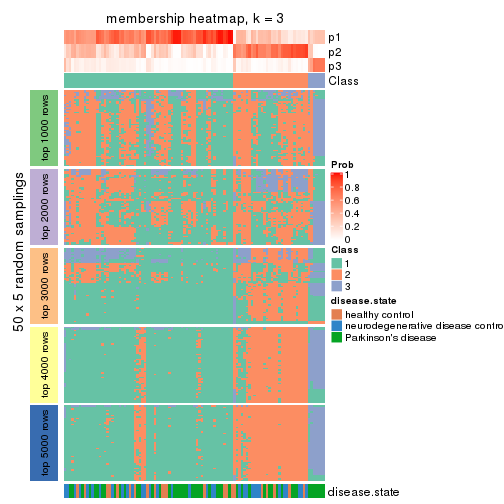
membership_heatmap(res, k = 4)
membership_heatmap(res, k = 5)
membership_heatmap(res, k = 6)
As soon as we have had the classes for columns, we can look for signatures which are significantly different between classes which can be candidate marks for certain classes. Following are the heatmaps for signatures.
Signature heatmaps where rows are scaled:
get_signatures(res, k = 2)
get_signatures(res, k = 3)
get_signatures(res, k = 4)
get_signatures(res, k = 5)

get_signatures(res, k = 6)
Signature heatmaps where rows are not scaled:
get_signatures(res, k = 2, scale_rows = FALSE)
get_signatures(res, k = 3, scale_rows = FALSE)
get_signatures(res, k = 4, scale_rows = FALSE)
get_signatures(res, k = 5, scale_rows = FALSE)
get_signatures(res, k = 6, scale_rows = FALSE)
Compare the overlap of signatures from different k:
compare_signatures(res)
get_signature() returns a data frame invisibly. TO get the list of signatures, the function
call should be assigned to a variable explicitly. In following code, if plot argument is set
to FALSE, no heatmap is plotted while only the differential analysis is performed.
# code only for demonstration
tb = get_signature(res, k = ..., plot = FALSE)
An example of the output of tb is:
#> which_row fdr mean_1 mean_2 scaled_mean_1 scaled_mean_2 km
#> 1 38 0.042760348 8.373488 9.131774 -0.5533452 0.5164555 1
#> 2 40 0.018707592 7.106213 8.469186 -0.6173731 0.5762149 1
#> 3 55 0.019134737 10.221463 11.207825 -0.6159697 0.5749050 1
#> 4 59 0.006059896 5.921854 7.869574 -0.6899429 0.6439467 1
#> 5 60 0.018055526 8.928898 10.211722 -0.6204761 0.5791110 1
#> 6 98 0.009384629 15.714769 14.887706 0.6635654 -0.6193277 2
...
The columns in tb are:
which_row: row indices corresponding to the input matrix.fdr: FDR for the differential test. mean_x: The mean value in group x.scaled_mean_x: The mean value in group x after rows are scaled.km: Row groups if k-means clustering is applied to rows.UMAP plot which shows how samples are separated.
dimension_reduction(res, k = 2, method = "UMAP")
dimension_reduction(res, k = 3, method = "UMAP")
dimension_reduction(res, k = 4, method = "UMAP")
dimension_reduction(res, k = 5, method = "UMAP")
dimension_reduction(res, k = 6, method = "UMAP")
Following heatmap shows how subgroups are split when increasing k:
collect_classes(res)
Test correlation between subgroups and known annotations. If the known annotation is numeric, one-way ANOVA test is applied, and if the known annotation is discrete, chi-squared contingency table test is applied.
test_to_known_factors(res)
#> n disease.state(p) k
#> CV:pam 94 0.1780 2
#> CV:pam 91 0.1186 3
#> CV:pam 91 0.1186 4
#> CV:pam 75 0.0898 5
#> CV:pam 40 0.0553 6
If matrix rows can be associated to genes, consider to use functional_enrichment(res,
...) to perform function enrichment for the signature genes. See this vignette for more detailed explanations.
The object with results only for a single top-value method and a single partition method can be extracted as:
res = res_list["CV", "mclust"]
# you can also extract it by
# res = res_list["CV:mclust"]
A summary of res and all the functions that can be applied to it:
res
#> A 'ConsensusPartition' object with k = 2, 3, 4, 5, 6.
#> On a matrix with 21168 rows and 105 columns.
#> Top rows (1000, 2000, 3000, 4000, 5000) are extracted by 'CV' method.
#> Subgroups are detected by 'mclust' method.
#> Performed in total 1250 partitions by row resampling.
#> Best k for subgroups seems to be 2.
#>
#> Following methods can be applied to this 'ConsensusPartition' object:
#> [1] "cola_report" "collect_classes" "collect_plots"
#> [4] "collect_stats" "colnames" "compare_signatures"
#> [7] "consensus_heatmap" "dimension_reduction" "functional_enrichment"
#> [10] "get_anno_col" "get_anno" "get_classes"
#> [13] "get_consensus" "get_matrix" "get_membership"
#> [16] "get_param" "get_signatures" "get_stats"
#> [19] "is_best_k" "is_stable_k" "membership_heatmap"
#> [22] "ncol" "nrow" "plot_ecdf"
#> [25] "rownames" "select_partition_number" "show"
#> [28] "suggest_best_k" "test_to_known_factors"
collect_plots() function collects all the plots made from res for all k (number of partitions)
into one single page to provide an easy and fast comparison between different k.
collect_plots(res)
The plots are:
k and the heatmap of
predicted classes for each k.k.k.k.All the plots in panels can be made by individual functions and they are plotted later in this section.
select_partition_number() produces several plots showing different
statistics for choosing “optimized” k. There are following statistics:
k;k, the area increased is defined as \(A_k - A_{k-1}\).The detailed explanations of these statistics can be found in the cola vignette.
Generally speaking, lower PAC score, higher mean silhouette score or higher
concordance corresponds to better partition. Rand index and Jaccard index
measure how similar the current partition is compared to partition with k-1.
If they are too similar, we won't accept k is better than k-1.
select_partition_number(res)
The numeric values for all these statistics can be obtained by get_stats().
get_stats(res)
#> k 1-PAC mean_silhouette concordance area_increased Rand Jaccard
#> 2 2 1.000 0.991 0.995 0.2676 0.739 0.739
#> 3 3 0.446 0.711 0.850 1.0020 0.730 0.635
#> 4 4 0.725 0.850 0.911 0.2114 0.756 0.542
#> 5 5 0.541 0.681 0.819 0.0729 0.986 0.960
#> 6 6 0.567 0.683 0.798 0.0609 0.911 0.758
suggest_best_k() suggests the best \(k\) based on these statistics. The rules are as follows:
suggest_best_k(res)
#> [1] 2
Following shows the table of the partitions (You need to click the show/hide
code output link to see it). The membership matrix (columns with name p*)
is inferred by
clue::cl_consensus()
function with the SE method. Basically the value in the membership matrix
represents the probability to belong to a certain group. The finall class
label for an item is determined with the group with highest probability it
belongs to.
In get_classes() function, the entropy is calculated from the membership
matrix and the silhouette score is calculated from the consensus matrix.
cbind(get_classes(res, k = 2), get_membership(res, k = 2))
#> class entropy silhouette p1 p2
#> GSM153405 1 0.0000 0.999 1.000 0.000
#> GSM153406 1 0.0376 0.996 0.996 0.004
#> GSM153419 1 0.0000 0.999 1.000 0.000
#> GSM153423 2 0.0000 0.994 0.000 1.000
#> GSM153425 1 0.0000 0.999 1.000 0.000
#> GSM153427 2 0.4298 0.908 0.088 0.912
#> GSM153428 2 0.0376 0.993 0.004 0.996
#> GSM153429 2 0.0376 0.993 0.004 0.996
#> GSM153433 2 0.0376 0.993 0.004 0.996
#> GSM153444 2 0.0376 0.993 0.004 0.996
#> GSM153448 2 0.0000 0.994 0.000 1.000
#> GSM153451 2 0.0376 0.993 0.004 0.996
#> GSM153452 2 0.0672 0.991 0.008 0.992
#> GSM153477 2 0.0000 0.994 0.000 1.000
#> GSM153479 2 0.0000 0.994 0.000 1.000
#> GSM153484 2 0.0000 0.994 0.000 1.000
#> GSM153488 2 0.0000 0.994 0.000 1.000
#> GSM153496 2 0.0376 0.993 0.004 0.996
#> GSM153497 2 0.0000 0.994 0.000 1.000
#> GSM153500 2 0.1184 0.986 0.016 0.984
#> GSM153503 2 0.0376 0.993 0.004 0.996
#> GSM153508 2 0.0672 0.991 0.008 0.992
#> GSM153409 2 0.0376 0.993 0.004 0.996
#> GSM153426 2 0.0376 0.993 0.004 0.996
#> GSM153431 2 0.0376 0.993 0.004 0.996
#> GSM153438 2 0.0376 0.993 0.004 0.996
#> GSM153440 2 0.2948 0.952 0.052 0.948
#> GSM153447 2 0.0672 0.991 0.008 0.992
#> GSM153450 2 0.0376 0.993 0.004 0.996
#> GSM153456 2 0.0376 0.993 0.004 0.996
#> GSM153457 2 0.0376 0.993 0.004 0.996
#> GSM153458 2 0.0376 0.993 0.004 0.996
#> GSM153459 2 0.0376 0.993 0.004 0.996
#> GSM153460 2 0.0376 0.993 0.004 0.996
#> GSM153461 2 0.0000 0.994 0.000 1.000
#> GSM153463 2 0.0938 0.989 0.012 0.988
#> GSM153464 2 0.0000 0.994 0.000 1.000
#> GSM153466 2 0.0000 0.994 0.000 1.000
#> GSM153467 2 0.0000 0.994 0.000 1.000
#> GSM153468 2 0.0000 0.994 0.000 1.000
#> GSM153469 2 0.0376 0.993 0.004 0.996
#> GSM153470 2 0.0000 0.994 0.000 1.000
#> GSM153471 2 0.0000 0.994 0.000 1.000
#> GSM153472 2 0.0000 0.994 0.000 1.000
#> GSM153473 2 0.0376 0.993 0.004 0.996
#> GSM153474 2 0.1184 0.986 0.016 0.984
#> GSM153475 2 0.0000 0.994 0.000 1.000
#> GSM153476 2 0.1843 0.975 0.028 0.972
#> GSM153478 2 0.0000 0.994 0.000 1.000
#> GSM153480 2 0.0000 0.994 0.000 1.000
#> GSM153486 2 0.0000 0.994 0.000 1.000
#> GSM153487 2 0.0000 0.994 0.000 1.000
#> GSM153499 2 0.0000 0.994 0.000 1.000
#> GSM153504 2 0.0376 0.993 0.004 0.996
#> GSM153507 2 0.0000 0.994 0.000 1.000
#> GSM153404 1 0.0000 0.999 1.000 0.000
#> GSM153407 2 0.5408 0.864 0.124 0.876
#> GSM153408 1 0.0000 0.999 1.000 0.000
#> GSM153410 1 0.0376 0.996 0.996 0.004
#> GSM153411 1 0.0000 0.999 1.000 0.000
#> GSM153412 1 0.0000 0.999 1.000 0.000
#> GSM153413 1 0.0000 0.999 1.000 0.000
#> GSM153414 2 0.0376 0.993 0.004 0.996
#> GSM153415 1 0.0000 0.999 1.000 0.000
#> GSM153416 2 0.0000 0.994 0.000 1.000
#> GSM153417 1 0.0000 0.999 1.000 0.000
#> GSM153418 1 0.0000 0.999 1.000 0.000
#> GSM153420 1 0.0000 0.999 1.000 0.000
#> GSM153421 1 0.0000 0.999 1.000 0.000
#> GSM153422 1 0.0000 0.999 1.000 0.000
#> GSM153424 2 0.0000 0.994 0.000 1.000
#> GSM153430 2 0.0376 0.993 0.004 0.996
#> GSM153432 2 0.0376 0.993 0.004 0.996
#> GSM153434 2 0.0938 0.988 0.012 0.988
#> GSM153435 2 0.0000 0.994 0.000 1.000
#> GSM153436 2 0.0376 0.993 0.004 0.996
#> GSM153437 2 0.0000 0.994 0.000 1.000
#> GSM153439 2 0.0376 0.993 0.004 0.996
#> GSM153441 2 0.0000 0.994 0.000 1.000
#> GSM153442 2 0.0000 0.994 0.000 1.000
#> GSM153443 2 0.0000 0.994 0.000 1.000
#> GSM153445 2 0.0000 0.994 0.000 1.000
#> GSM153446 2 0.0000 0.994 0.000 1.000
#> GSM153449 2 0.0000 0.994 0.000 1.000
#> GSM153453 2 0.0000 0.994 0.000 1.000
#> GSM153454 2 0.0938 0.988 0.012 0.988
#> GSM153455 2 0.0376 0.993 0.004 0.996
#> GSM153462 2 0.0000 0.994 0.000 1.000
#> GSM153465 2 0.0000 0.994 0.000 1.000
#> GSM153481 2 0.0000 0.994 0.000 1.000
#> GSM153482 2 0.0376 0.993 0.004 0.996
#> GSM153483 2 0.0000 0.994 0.000 1.000
#> GSM153485 2 0.0376 0.993 0.004 0.996
#> GSM153489 2 0.0376 0.993 0.004 0.996
#> GSM153490 2 0.0376 0.993 0.004 0.996
#> GSM153491 2 0.0000 0.994 0.000 1.000
#> GSM153492 2 0.0938 0.988 0.012 0.988
#> GSM153493 2 0.0938 0.988 0.012 0.988
#> GSM153494 2 0.0000 0.994 0.000 1.000
#> GSM153495 2 0.0376 0.993 0.004 0.996
#> GSM153498 2 0.0672 0.991 0.008 0.992
#> GSM153501 2 0.1184 0.986 0.016 0.984
#> GSM153502 2 0.0000 0.994 0.000 1.000
#> GSM153505 2 0.0938 0.989 0.012 0.988
#> GSM153506 2 0.0000 0.994 0.000 1.000
cbind(get_classes(res, k = 3), get_membership(res, k = 3))
#> class entropy silhouette p1 p2 p3
#> GSM153405 3 0.0000 0.996 0.000 0.000 1.000
#> GSM153406 3 0.0661 0.991 0.008 0.004 0.988
#> GSM153419 3 0.0000 0.996 0.000 0.000 1.000
#> GSM153423 2 0.3619 0.715 0.136 0.864 0.000
#> GSM153425 3 0.0424 0.991 0.008 0.000 0.992
#> GSM153427 1 0.7128 0.649 0.664 0.284 0.052
#> GSM153428 1 0.5982 0.611 0.668 0.328 0.004
#> GSM153429 2 0.2796 0.777 0.092 0.908 0.000
#> GSM153433 1 0.6252 0.535 0.556 0.444 0.000
#> GSM153444 2 0.4399 0.689 0.188 0.812 0.000
#> GSM153448 2 0.1163 0.799 0.028 0.972 0.000
#> GSM153451 2 0.4178 0.686 0.172 0.828 0.000
#> GSM153452 1 0.6753 0.467 0.596 0.388 0.016
#> GSM153477 2 0.1289 0.795 0.032 0.968 0.000
#> GSM153479 2 0.2537 0.783 0.080 0.920 0.000
#> GSM153484 2 0.1860 0.791 0.052 0.948 0.000
#> GSM153488 2 0.2959 0.774 0.100 0.900 0.000
#> GSM153496 2 0.6225 -0.140 0.432 0.568 0.000
#> GSM153497 2 0.3192 0.739 0.112 0.888 0.000
#> GSM153500 1 0.4346 0.714 0.816 0.184 0.000
#> GSM153503 1 0.5098 0.721 0.752 0.248 0.000
#> GSM153508 1 0.6154 0.478 0.592 0.408 0.000
#> GSM153409 2 0.4062 0.697 0.164 0.836 0.000
#> GSM153426 2 0.4002 0.695 0.160 0.840 0.000
#> GSM153431 1 0.6026 0.555 0.624 0.376 0.000
#> GSM153438 2 0.3941 0.699 0.156 0.844 0.000
#> GSM153440 1 0.6414 0.694 0.716 0.248 0.036
#> GSM153447 1 0.5325 0.700 0.748 0.248 0.004
#> GSM153450 2 0.4346 0.690 0.184 0.816 0.000
#> GSM153456 2 0.4178 0.686 0.172 0.828 0.000
#> GSM153457 2 0.4178 0.686 0.172 0.828 0.000
#> GSM153458 2 0.4178 0.685 0.172 0.828 0.000
#> GSM153459 2 0.4178 0.685 0.172 0.828 0.000
#> GSM153460 2 0.4235 0.681 0.176 0.824 0.000
#> GSM153461 2 0.6282 0.312 0.384 0.612 0.004
#> GSM153463 1 0.4654 0.722 0.792 0.208 0.000
#> GSM153464 2 0.0424 0.795 0.008 0.992 0.000
#> GSM153466 2 0.1860 0.791 0.052 0.948 0.000
#> GSM153467 2 0.0424 0.795 0.008 0.992 0.000
#> GSM153468 2 0.1529 0.795 0.040 0.960 0.000
#> GSM153469 2 0.1643 0.793 0.044 0.956 0.000
#> GSM153470 2 0.0592 0.797 0.012 0.988 0.000
#> GSM153471 2 0.0424 0.796 0.008 0.992 0.000
#> GSM153472 2 0.5327 0.546 0.272 0.728 0.000
#> GSM153473 2 0.5138 0.573 0.252 0.748 0.000
#> GSM153474 1 0.4346 0.713 0.816 0.184 0.000
#> GSM153475 2 0.4121 0.708 0.168 0.832 0.000
#> GSM153476 2 0.6062 0.488 0.276 0.708 0.016
#> GSM153478 2 0.6192 -0.116 0.420 0.580 0.000
#> GSM153480 2 0.0747 0.794 0.016 0.984 0.000
#> GSM153486 2 0.0892 0.794 0.020 0.980 0.000
#> GSM153487 2 0.3482 0.749 0.128 0.872 0.000
#> GSM153499 2 0.0592 0.797 0.012 0.988 0.000
#> GSM153504 2 0.5465 0.518 0.288 0.712 0.000
#> GSM153507 2 0.3038 0.768 0.104 0.896 0.000
#> GSM153404 3 0.0424 0.992 0.008 0.000 0.992
#> GSM153407 1 0.6148 0.688 0.728 0.244 0.028
#> GSM153408 3 0.0237 0.996 0.004 0.000 0.996
#> GSM153410 3 0.0475 0.993 0.004 0.004 0.992
#> GSM153411 3 0.0000 0.996 0.000 0.000 1.000
#> GSM153412 3 0.0237 0.996 0.004 0.000 0.996
#> GSM153413 3 0.0237 0.996 0.004 0.000 0.996
#> GSM153414 2 0.5216 0.600 0.260 0.740 0.000
#> GSM153415 3 0.0237 0.996 0.004 0.000 0.996
#> GSM153416 2 0.3879 0.705 0.152 0.848 0.000
#> GSM153417 3 0.0000 0.996 0.000 0.000 1.000
#> GSM153418 3 0.0237 0.996 0.004 0.000 0.996
#> GSM153420 3 0.0000 0.996 0.000 0.000 1.000
#> GSM153421 3 0.0000 0.996 0.000 0.000 1.000
#> GSM153422 3 0.0000 0.996 0.000 0.000 1.000
#> GSM153424 1 0.5815 0.643 0.692 0.304 0.004
#> GSM153430 1 0.6308 0.364 0.508 0.492 0.000
#> GSM153432 2 0.1753 0.794 0.048 0.952 0.000
#> GSM153434 2 0.5835 0.311 0.340 0.660 0.000
#> GSM153435 2 0.0747 0.797 0.016 0.984 0.000
#> GSM153436 1 0.5591 0.669 0.696 0.304 0.000
#> GSM153437 2 0.2711 0.757 0.088 0.912 0.000
#> GSM153439 2 0.1964 0.791 0.056 0.944 0.000
#> GSM153441 2 0.3340 0.750 0.120 0.880 0.000
#> GSM153442 2 0.5327 0.450 0.272 0.728 0.000
#> GSM153443 2 0.0592 0.795 0.012 0.988 0.000
#> GSM153445 2 0.0000 0.796 0.000 1.000 0.000
#> GSM153446 2 0.0747 0.795 0.016 0.984 0.000
#> GSM153449 2 0.5591 0.416 0.304 0.696 0.000
#> GSM153453 2 0.5760 0.364 0.328 0.672 0.000
#> GSM153454 1 0.4291 0.713 0.820 0.180 0.000
#> GSM153455 2 0.3116 0.768 0.108 0.892 0.000
#> GSM153462 2 0.0424 0.797 0.008 0.992 0.000
#> GSM153465 2 0.0747 0.797 0.016 0.984 0.000
#> GSM153481 2 0.1163 0.796 0.028 0.972 0.000
#> GSM153482 2 0.4235 0.697 0.176 0.824 0.000
#> GSM153483 2 0.0424 0.797 0.008 0.992 0.000
#> GSM153485 2 0.2878 0.774 0.096 0.904 0.000
#> GSM153489 2 0.2711 0.777 0.088 0.912 0.000
#> GSM153490 2 0.6307 -0.364 0.488 0.512 0.000
#> GSM153491 2 0.5291 0.541 0.268 0.732 0.000
#> GSM153492 1 0.5465 0.705 0.712 0.288 0.000
#> GSM153493 1 0.4555 0.716 0.800 0.200 0.000
#> GSM153494 2 0.1753 0.794 0.048 0.952 0.000
#> GSM153495 1 0.4974 0.727 0.764 0.236 0.000
#> GSM153498 2 0.3879 0.724 0.152 0.848 0.000
#> GSM153501 1 0.4796 0.716 0.780 0.220 0.000
#> GSM153502 2 0.5058 0.582 0.244 0.756 0.000
#> GSM153505 1 0.4555 0.719 0.800 0.200 0.000
#> GSM153506 2 0.0237 0.797 0.004 0.996 0.000
cbind(get_classes(res, k = 4), get_membership(res, k = 4))
#> class entropy silhouette p1 p2 p3 p4
#> GSM153405 3 0.0000 0.982 0.000 0.000 1.000 0.000
#> GSM153406 3 0.0000 0.982 0.000 0.000 1.000 0.000
#> GSM153419 3 0.0000 0.982 0.000 0.000 1.000 0.000
#> GSM153423 4 0.4040 0.688 0.000 0.248 0.000 0.752
#> GSM153425 3 0.3485 0.843 0.028 0.000 0.856 0.116
#> GSM153427 4 0.1890 0.860 0.008 0.056 0.000 0.936
#> GSM153428 4 0.2021 0.864 0.012 0.056 0.000 0.932
#> GSM153429 2 0.1059 0.907 0.016 0.972 0.000 0.012
#> GSM153433 2 0.3367 0.838 0.028 0.864 0.000 0.108
#> GSM153444 4 0.1474 0.869 0.000 0.052 0.000 0.948
#> GSM153448 2 0.1389 0.908 0.000 0.952 0.000 0.048
#> GSM153451 4 0.2647 0.822 0.000 0.120 0.000 0.880
#> GSM153452 4 0.1854 0.862 0.012 0.048 0.000 0.940
#> GSM153477 2 0.0921 0.908 0.000 0.972 0.000 0.028
#> GSM153479 2 0.0188 0.908 0.000 0.996 0.000 0.004
#> GSM153484 2 0.0592 0.909 0.000 0.984 0.000 0.016
#> GSM153488 2 0.0707 0.909 0.000 0.980 0.000 0.020
#> GSM153496 2 0.1733 0.904 0.024 0.948 0.000 0.028
#> GSM153497 2 0.4624 0.532 0.000 0.660 0.000 0.340
#> GSM153500 1 0.1209 0.859 0.964 0.032 0.000 0.004
#> GSM153503 1 0.3217 0.834 0.860 0.128 0.000 0.012
#> GSM153508 1 0.2408 0.859 0.920 0.044 0.000 0.036
#> GSM153409 4 0.1474 0.867 0.000 0.052 0.000 0.948
#> GSM153426 4 0.1557 0.866 0.000 0.056 0.000 0.944
#> GSM153431 4 0.5384 0.570 0.028 0.324 0.000 0.648
#> GSM153438 4 0.2973 0.804 0.000 0.144 0.000 0.856
#> GSM153440 4 0.3653 0.819 0.024 0.112 0.008 0.856
#> GSM153447 4 0.4868 0.665 0.024 0.256 0.000 0.720
#> GSM153450 4 0.1743 0.869 0.004 0.056 0.000 0.940
#> GSM153456 4 0.1022 0.861 0.000 0.032 0.000 0.968
#> GSM153457 4 0.1474 0.861 0.000 0.052 0.000 0.948
#> GSM153458 4 0.0817 0.860 0.000 0.024 0.000 0.976
#> GSM153459 4 0.0921 0.863 0.000 0.028 0.000 0.972
#> GSM153460 4 0.1022 0.862 0.000 0.032 0.000 0.968
#> GSM153461 4 0.1807 0.864 0.008 0.052 0.000 0.940
#> GSM153463 2 0.7500 -0.321 0.404 0.416 0.000 0.180
#> GSM153464 2 0.2868 0.854 0.000 0.864 0.000 0.136
#> GSM153466 2 0.0895 0.910 0.004 0.976 0.000 0.020
#> GSM153467 2 0.2469 0.876 0.000 0.892 0.000 0.108
#> GSM153468 2 0.0592 0.909 0.000 0.984 0.000 0.016
#> GSM153469 2 0.1209 0.910 0.004 0.964 0.000 0.032
#> GSM153470 2 0.0921 0.909 0.000 0.972 0.000 0.028
#> GSM153471 2 0.1302 0.907 0.000 0.956 0.000 0.044
#> GSM153472 2 0.1677 0.904 0.040 0.948 0.000 0.012
#> GSM153473 2 0.1305 0.903 0.036 0.960 0.000 0.004
#> GSM153474 1 0.1004 0.853 0.972 0.024 0.000 0.004
#> GSM153475 2 0.1297 0.908 0.020 0.964 0.000 0.016
#> GSM153476 2 0.2099 0.900 0.040 0.936 0.004 0.020
#> GSM153478 2 0.1624 0.898 0.028 0.952 0.000 0.020
#> GSM153480 2 0.3266 0.822 0.000 0.832 0.000 0.168
#> GSM153486 2 0.3208 0.840 0.004 0.848 0.000 0.148
#> GSM153487 2 0.1820 0.902 0.036 0.944 0.000 0.020
#> GSM153499 2 0.1398 0.910 0.004 0.956 0.000 0.040
#> GSM153504 1 0.4920 0.509 0.628 0.368 0.000 0.004
#> GSM153507 2 0.1488 0.905 0.032 0.956 0.000 0.012
#> GSM153404 3 0.0000 0.982 0.000 0.000 1.000 0.000
#> GSM153407 4 0.2060 0.861 0.016 0.052 0.000 0.932
#> GSM153408 3 0.0000 0.982 0.000 0.000 1.000 0.000
#> GSM153410 3 0.0000 0.982 0.000 0.000 1.000 0.000
#> GSM153411 3 0.0921 0.975 0.028 0.000 0.972 0.000
#> GSM153412 3 0.0000 0.982 0.000 0.000 1.000 0.000
#> GSM153413 3 0.0000 0.982 0.000 0.000 1.000 0.000
#> GSM153414 4 0.1722 0.866 0.008 0.048 0.000 0.944
#> GSM153415 3 0.0000 0.982 0.000 0.000 1.000 0.000
#> GSM153416 4 0.4605 0.566 0.000 0.336 0.000 0.664
#> GSM153417 3 0.0921 0.975 0.028 0.000 0.972 0.000
#> GSM153418 3 0.0000 0.982 0.000 0.000 1.000 0.000
#> GSM153420 3 0.0921 0.975 0.028 0.000 0.972 0.000
#> GSM153421 3 0.0921 0.975 0.028 0.000 0.972 0.000
#> GSM153422 3 0.0921 0.975 0.028 0.000 0.972 0.000
#> GSM153424 4 0.2635 0.856 0.020 0.076 0.000 0.904
#> GSM153430 2 0.3862 0.794 0.024 0.824 0.000 0.152
#> GSM153432 2 0.1398 0.910 0.004 0.956 0.000 0.040
#> GSM153434 2 0.3913 0.810 0.028 0.824 0.000 0.148
#> GSM153435 2 0.2530 0.868 0.000 0.888 0.000 0.112
#> GSM153436 4 0.5110 0.566 0.016 0.328 0.000 0.656
#> GSM153437 2 0.4500 0.551 0.000 0.684 0.000 0.316
#> GSM153439 2 0.1209 0.910 0.004 0.964 0.000 0.032
#> GSM153441 2 0.2730 0.886 0.016 0.896 0.000 0.088
#> GSM153442 2 0.2521 0.890 0.024 0.912 0.000 0.064
#> GSM153443 2 0.2469 0.873 0.000 0.892 0.000 0.108
#> GSM153445 2 0.2081 0.889 0.000 0.916 0.000 0.084
#> GSM153446 2 0.3219 0.827 0.000 0.836 0.000 0.164
#> GSM153449 2 0.1833 0.901 0.032 0.944 0.000 0.024
#> GSM153453 2 0.1677 0.900 0.040 0.948 0.000 0.012
#> GSM153454 1 0.2402 0.857 0.912 0.076 0.000 0.012
#> GSM153455 2 0.1059 0.907 0.016 0.972 0.000 0.012
#> GSM153462 2 0.1118 0.906 0.000 0.964 0.000 0.036
#> GSM153465 2 0.2011 0.893 0.000 0.920 0.000 0.080
#> GSM153481 2 0.1474 0.904 0.000 0.948 0.000 0.052
#> GSM153482 2 0.1706 0.900 0.036 0.948 0.000 0.016
#> GSM153483 2 0.1022 0.907 0.000 0.968 0.000 0.032
#> GSM153485 2 0.0672 0.908 0.008 0.984 0.000 0.008
#> GSM153489 2 0.0937 0.906 0.012 0.976 0.000 0.012
#> GSM153490 2 0.4746 0.495 0.304 0.688 0.000 0.008
#> GSM153491 2 0.1854 0.899 0.048 0.940 0.000 0.012
#> GSM153492 2 0.4567 0.587 0.276 0.716 0.000 0.008
#> GSM153493 1 0.1389 0.868 0.952 0.048 0.000 0.000
#> GSM153494 2 0.0592 0.909 0.000 0.984 0.000 0.016
#> GSM153495 1 0.4720 0.614 0.672 0.324 0.000 0.004
#> GSM153498 2 0.1707 0.909 0.024 0.952 0.004 0.020
#> GSM153501 1 0.1389 0.866 0.952 0.048 0.000 0.000
#> GSM153502 2 0.1584 0.899 0.036 0.952 0.000 0.012
#> GSM153505 1 0.1474 0.869 0.948 0.052 0.000 0.000
#> GSM153506 2 0.2032 0.902 0.028 0.936 0.000 0.036
cbind(get_classes(res, k = 5), get_membership(res, k = 5))
#> class entropy silhouette p1 p2 p3 p4 p5
#> GSM153405 3 0.2690 0.5380 0.000 0.000 0.844 0.000 0.156
#> GSM153406 3 0.0000 0.7077 0.000 0.000 1.000 0.000 0.000
#> GSM153419 3 0.1478 0.6616 0.000 0.000 0.936 0.000 0.064
#> GSM153423 2 0.2818 0.7210 0.132 0.856 0.000 0.000 0.012
#> GSM153425 5 0.5649 0.0000 0.000 0.076 0.452 0.000 0.472
#> GSM153427 2 0.4988 0.6608 0.060 0.656 0.000 0.000 0.284
#> GSM153428 2 0.4990 0.6886 0.056 0.688 0.000 0.008 0.248
#> GSM153429 1 0.1731 0.8202 0.940 0.012 0.000 0.008 0.040
#> GSM153433 1 0.4824 0.7060 0.720 0.076 0.000 0.004 0.200
#> GSM153444 2 0.2735 0.7760 0.036 0.880 0.000 0.000 0.084
#> GSM153448 1 0.4985 0.7521 0.728 0.116 0.000 0.008 0.148
#> GSM153451 2 0.1914 0.7620 0.060 0.924 0.000 0.000 0.016
#> GSM153452 2 0.4706 0.6849 0.052 0.692 0.000 0.000 0.256
#> GSM153477 1 0.1644 0.8181 0.940 0.048 0.000 0.004 0.008
#> GSM153479 1 0.0162 0.8166 0.996 0.004 0.000 0.000 0.000
#> GSM153484 1 0.0992 0.8203 0.968 0.024 0.000 0.000 0.008
#> GSM153488 1 0.1095 0.8189 0.968 0.008 0.000 0.012 0.012
#> GSM153496 1 0.2824 0.8144 0.888 0.016 0.000 0.028 0.068
#> GSM153497 1 0.5021 0.4246 0.556 0.416 0.000 0.008 0.020
#> GSM153500 4 0.1197 0.8530 0.048 0.000 0.000 0.952 0.000
#> GSM153503 4 0.3080 0.8135 0.124 0.004 0.000 0.852 0.020
#> GSM153508 4 0.3314 0.7460 0.020 0.020 0.000 0.852 0.108
#> GSM153409 2 0.0290 0.7822 0.008 0.992 0.000 0.000 0.000
#> GSM153426 2 0.0898 0.7833 0.020 0.972 0.000 0.000 0.008
#> GSM153431 2 0.6762 0.3563 0.336 0.452 0.000 0.008 0.204
#> GSM153438 2 0.1740 0.7757 0.056 0.932 0.000 0.000 0.012
#> GSM153440 2 0.5741 0.6391 0.096 0.616 0.004 0.004 0.280
#> GSM153447 2 0.6816 0.5241 0.208 0.496 0.000 0.016 0.280
#> GSM153450 2 0.2605 0.7833 0.044 0.896 0.000 0.004 0.056
#> GSM153456 2 0.0798 0.7782 0.008 0.976 0.000 0.000 0.016
#> GSM153457 2 0.1117 0.7782 0.020 0.964 0.000 0.000 0.016
#> GSM153458 2 0.0566 0.7794 0.004 0.984 0.000 0.000 0.012
#> GSM153459 2 0.0451 0.7797 0.004 0.988 0.000 0.000 0.008
#> GSM153460 2 0.0693 0.7791 0.008 0.980 0.000 0.000 0.012
#> GSM153461 2 0.3496 0.7735 0.056 0.844 0.000 0.008 0.092
#> GSM153463 1 0.7055 0.1367 0.488 0.160 0.000 0.312 0.040
#> GSM153464 1 0.4394 0.7185 0.732 0.228 0.000 0.004 0.036
#> GSM153466 1 0.0960 0.8180 0.972 0.016 0.000 0.004 0.008
#> GSM153467 1 0.4235 0.7618 0.768 0.184 0.000 0.008 0.040
#> GSM153468 1 0.1493 0.8238 0.948 0.024 0.000 0.000 0.028
#> GSM153469 1 0.2331 0.8210 0.908 0.064 0.000 0.004 0.024
#> GSM153470 1 0.2012 0.8185 0.920 0.060 0.000 0.000 0.020
#> GSM153471 1 0.2570 0.8127 0.888 0.084 0.000 0.000 0.028
#> GSM153472 1 0.3536 0.7813 0.840 0.008 0.000 0.100 0.052
#> GSM153473 1 0.2193 0.8152 0.920 0.008 0.000 0.028 0.044
#> GSM153474 4 0.2074 0.8293 0.036 0.000 0.000 0.920 0.044
#> GSM153475 1 0.1770 0.8190 0.936 0.008 0.000 0.008 0.048
#> GSM153476 1 0.3519 0.7922 0.836 0.020 0.004 0.012 0.128
#> GSM153478 1 0.3341 0.7883 0.840 0.024 0.000 0.008 0.128
#> GSM153480 1 0.4491 0.6876 0.708 0.260 0.000 0.008 0.024
#> GSM153486 1 0.4235 0.7316 0.748 0.220 0.000 0.012 0.020
#> GSM153487 1 0.4121 0.7556 0.808 0.016 0.000 0.104 0.072
#> GSM153499 1 0.5538 0.7247 0.700 0.056 0.000 0.060 0.184
#> GSM153504 1 0.5527 -0.0807 0.476 0.012 0.000 0.472 0.040
#> GSM153507 1 0.3936 0.7448 0.812 0.008 0.000 0.116 0.064
#> GSM153404 3 0.0703 0.6866 0.000 0.000 0.976 0.000 0.024
#> GSM153407 2 0.5219 0.6521 0.064 0.644 0.000 0.004 0.288
#> GSM153408 3 0.0000 0.7077 0.000 0.000 1.000 0.000 0.000
#> GSM153410 3 0.0000 0.7077 0.000 0.000 1.000 0.000 0.000
#> GSM153411 3 0.3999 0.0795 0.000 0.000 0.656 0.000 0.344
#> GSM153412 3 0.0000 0.7077 0.000 0.000 1.000 0.000 0.000
#> GSM153413 3 0.0000 0.7077 0.000 0.000 1.000 0.000 0.000
#> GSM153414 2 0.2632 0.7780 0.040 0.888 0.000 0.000 0.072
#> GSM153415 3 0.0000 0.7077 0.000 0.000 1.000 0.000 0.000
#> GSM153416 2 0.3242 0.6719 0.172 0.816 0.000 0.000 0.012
#> GSM153417 3 0.3999 0.0795 0.000 0.000 0.656 0.000 0.344
#> GSM153418 3 0.0000 0.7077 0.000 0.000 1.000 0.000 0.000
#> GSM153420 3 0.3999 0.0795 0.000 0.000 0.656 0.000 0.344
#> GSM153421 3 0.3999 0.0795 0.000 0.000 0.656 0.000 0.344
#> GSM153422 3 0.3999 0.0795 0.000 0.000 0.656 0.000 0.344
#> GSM153424 2 0.5660 0.6486 0.096 0.640 0.000 0.012 0.252
#> GSM153430 1 0.5764 0.6273 0.656 0.128 0.000 0.016 0.200
#> GSM153432 1 0.2228 0.8237 0.916 0.056 0.000 0.008 0.020
#> GSM153434 1 0.5453 0.6556 0.672 0.112 0.000 0.008 0.208
#> GSM153435 1 0.3972 0.7480 0.764 0.212 0.000 0.008 0.016
#> GSM153436 2 0.6810 0.4294 0.300 0.460 0.000 0.008 0.232
#> GSM153437 1 0.4883 0.2481 0.516 0.464 0.000 0.004 0.016
#> GSM153439 1 0.1211 0.8183 0.960 0.024 0.000 0.000 0.016
#> GSM153441 1 0.4473 0.7571 0.768 0.076 0.000 0.008 0.148
#> GSM153442 1 0.4487 0.7476 0.768 0.036 0.000 0.028 0.168
#> GSM153443 1 0.4106 0.7501 0.768 0.196 0.000 0.008 0.028
#> GSM153445 1 0.3525 0.7810 0.816 0.156 0.000 0.004 0.024
#> GSM153446 1 0.3947 0.7252 0.748 0.236 0.000 0.008 0.008
#> GSM153449 1 0.3815 0.7709 0.804 0.032 0.000 0.008 0.156
#> GSM153453 1 0.3124 0.8012 0.872 0.012 0.000 0.056 0.060
#> GSM153454 4 0.2654 0.8395 0.084 0.000 0.000 0.884 0.032
#> GSM153455 1 0.1569 0.8169 0.944 0.004 0.000 0.008 0.044
#> GSM153462 1 0.2305 0.8110 0.896 0.092 0.000 0.000 0.012
#> GSM153465 1 0.3145 0.8002 0.844 0.136 0.000 0.008 0.012
#> GSM153481 1 0.2589 0.8130 0.888 0.092 0.000 0.008 0.012
#> GSM153482 1 0.2774 0.8098 0.892 0.012 0.000 0.048 0.048
#> GSM153483 1 0.3629 0.8083 0.832 0.072 0.000 0.004 0.092
#> GSM153485 1 0.1471 0.8213 0.952 0.020 0.000 0.004 0.024
#> GSM153489 1 0.1314 0.8176 0.960 0.012 0.000 0.012 0.016
#> GSM153490 1 0.5421 0.3608 0.584 0.012 0.000 0.360 0.044
#> GSM153491 1 0.2976 0.8036 0.880 0.012 0.000 0.064 0.044
#> GSM153492 1 0.5207 0.4689 0.620 0.008 0.000 0.328 0.044
#> GSM153493 4 0.1608 0.8580 0.072 0.000 0.000 0.928 0.000
#> GSM153494 1 0.2075 0.8240 0.924 0.040 0.000 0.004 0.032
#> GSM153495 4 0.5280 0.3702 0.364 0.004 0.000 0.584 0.048
#> GSM153498 1 0.3018 0.8159 0.876 0.024 0.000 0.020 0.080
#> GSM153501 4 0.1410 0.8604 0.060 0.000 0.000 0.940 0.000
#> GSM153502 1 0.3197 0.7878 0.864 0.008 0.000 0.076 0.052
#> GSM153505 4 0.1894 0.8607 0.072 0.000 0.000 0.920 0.008
#> GSM153506 1 0.6845 0.6202 0.588 0.080 0.000 0.128 0.204
cbind(get_classes(res, k = 6), get_membership(res, k = 6))
#> class entropy silhouette p1 p2 p3 p4 p5 p6
#> GSM153405 3 0.4460 0.0489 0.000 0.000 0.520 0.000 0.452 0.028
#> GSM153406 3 0.0000 0.9160 0.000 0.000 1.000 0.000 0.000 0.000
#> GSM153419 3 0.2814 0.7403 0.000 0.000 0.820 0.000 0.172 0.008
#> GSM153423 2 0.2112 0.6641 0.088 0.896 0.000 0.000 0.000 0.016
#> GSM153425 5 0.3293 0.8335 0.000 0.008 0.040 0.000 0.824 0.128
#> GSM153427 2 0.5240 0.2314 0.028 0.600 0.000 0.000 0.060 0.312
#> GSM153428 6 0.4658 0.6146 0.040 0.376 0.000 0.000 0.004 0.580
#> GSM153429 1 0.1699 0.7930 0.936 0.012 0.000 0.008 0.004 0.040
#> GSM153433 1 0.5497 0.3999 0.560 0.124 0.000 0.008 0.000 0.308
#> GSM153444 2 0.2425 0.6840 0.024 0.884 0.000 0.000 0.004 0.088
#> GSM153448 1 0.3516 0.7658 0.812 0.096 0.000 0.004 0.000 0.088
#> GSM153451 2 0.0767 0.7397 0.012 0.976 0.000 0.000 0.004 0.008
#> GSM153452 2 0.4295 0.3889 0.032 0.692 0.000 0.000 0.012 0.264
#> GSM153477 1 0.1623 0.7871 0.940 0.032 0.000 0.004 0.004 0.020
#> GSM153479 1 0.1265 0.7914 0.948 0.000 0.000 0.008 0.000 0.044
#> GSM153484 1 0.1065 0.7930 0.964 0.008 0.000 0.008 0.000 0.020
#> GSM153488 1 0.1956 0.7859 0.908 0.000 0.000 0.008 0.004 0.080
#> GSM153496 1 0.4077 0.7261 0.736 0.008 0.000 0.044 0.000 0.212
#> GSM153497 1 0.4634 0.4684 0.588 0.376 0.000 0.004 0.008 0.024
#> GSM153500 4 0.0717 0.7776 0.016 0.000 0.000 0.976 0.000 0.008
#> GSM153503 4 0.2801 0.7611 0.072 0.000 0.000 0.860 0.000 0.068
#> GSM153508 4 0.4028 0.6751 0.012 0.000 0.000 0.756 0.048 0.184
#> GSM153409 2 0.1092 0.7428 0.020 0.960 0.000 0.000 0.000 0.020
#> GSM153426 2 0.0725 0.7484 0.012 0.976 0.000 0.000 0.000 0.012
#> GSM153431 6 0.5830 0.5950 0.180 0.264 0.000 0.012 0.000 0.544
#> GSM153438 2 0.0458 0.7467 0.016 0.984 0.000 0.000 0.000 0.000
#> GSM153440 6 0.5282 0.5662 0.048 0.356 0.004 0.000 0.024 0.568
#> GSM153447 6 0.5025 0.6754 0.080 0.276 0.000 0.012 0.000 0.632
#> GSM153450 2 0.2526 0.6725 0.024 0.876 0.000 0.000 0.004 0.096
#> GSM153456 2 0.0520 0.7445 0.000 0.984 0.000 0.000 0.008 0.008
#> GSM153457 2 0.0291 0.7449 0.000 0.992 0.000 0.000 0.004 0.004
#> GSM153458 2 0.0508 0.7449 0.000 0.984 0.000 0.000 0.004 0.012
#> GSM153459 2 0.0551 0.7482 0.004 0.984 0.000 0.000 0.004 0.008
#> GSM153460 2 0.0405 0.7471 0.000 0.988 0.000 0.000 0.004 0.008
#> GSM153461 2 0.4840 -0.0938 0.056 0.580 0.000 0.000 0.004 0.360
#> GSM153463 6 0.7388 0.2584 0.176 0.152 0.000 0.316 0.000 0.356
#> GSM153464 1 0.4569 0.5056 0.600 0.364 0.000 0.004 0.004 0.028
#> GSM153466 1 0.1615 0.7914 0.928 0.004 0.000 0.004 0.000 0.064
#> GSM153467 1 0.4027 0.6799 0.736 0.224 0.000 0.004 0.008 0.028
#> GSM153468 1 0.1461 0.7949 0.940 0.016 0.000 0.000 0.000 0.044
#> GSM153469 1 0.2113 0.7826 0.908 0.060 0.000 0.000 0.004 0.028
#> GSM153470 1 0.1624 0.7860 0.936 0.040 0.000 0.000 0.004 0.020
#> GSM153471 1 0.2443 0.7735 0.880 0.096 0.000 0.000 0.004 0.020
#> GSM153472 1 0.4066 0.7222 0.732 0.000 0.000 0.064 0.000 0.204
#> GSM153473 1 0.4352 0.7139 0.728 0.000 0.000 0.076 0.008 0.188
#> GSM153474 4 0.1036 0.7509 0.004 0.000 0.000 0.964 0.024 0.008
#> GSM153475 1 0.1946 0.7934 0.912 0.004 0.000 0.012 0.000 0.072
#> GSM153476 1 0.2350 0.7891 0.896 0.016 0.000 0.008 0.004 0.076
#> GSM153478 1 0.3674 0.7232 0.756 0.012 0.000 0.008 0.004 0.220
#> GSM153480 1 0.4601 0.4804 0.588 0.376 0.000 0.004 0.004 0.028
#> GSM153486 1 0.4012 0.6531 0.712 0.256 0.000 0.008 0.000 0.024
#> GSM153487 1 0.4366 0.6994 0.712 0.000 0.000 0.072 0.004 0.212
#> GSM153499 1 0.3383 0.7786 0.832 0.016 0.000 0.036 0.004 0.112
#> GSM153504 4 0.4868 0.5882 0.220 0.000 0.000 0.664 0.004 0.112
#> GSM153507 1 0.4584 0.6660 0.700 0.000 0.000 0.100 0.004 0.196
#> GSM153404 3 0.0891 0.8983 0.000 0.000 0.968 0.000 0.024 0.008
#> GSM153407 6 0.5046 0.4848 0.028 0.384 0.000 0.000 0.032 0.556
#> GSM153408 3 0.0000 0.9160 0.000 0.000 1.000 0.000 0.000 0.000
#> GSM153410 3 0.0000 0.9160 0.000 0.000 1.000 0.000 0.000 0.000
#> GSM153411 5 0.1663 0.9668 0.000 0.000 0.088 0.000 0.912 0.000
#> GSM153412 3 0.0000 0.9160 0.000 0.000 1.000 0.000 0.000 0.000
#> GSM153413 3 0.0000 0.9160 0.000 0.000 1.000 0.000 0.000 0.000
#> GSM153414 2 0.4544 0.1600 0.052 0.652 0.000 0.000 0.004 0.292
#> GSM153415 3 0.0000 0.9160 0.000 0.000 1.000 0.000 0.000 0.000
#> GSM153416 2 0.2667 0.5960 0.128 0.852 0.000 0.000 0.000 0.020
#> GSM153417 5 0.1663 0.9668 0.000 0.000 0.088 0.000 0.912 0.000
#> GSM153418 3 0.0000 0.9160 0.000 0.000 1.000 0.000 0.000 0.000
#> GSM153420 5 0.1663 0.9668 0.000 0.000 0.088 0.000 0.912 0.000
#> GSM153421 5 0.1663 0.9668 0.000 0.000 0.088 0.000 0.912 0.000
#> GSM153422 5 0.1663 0.9668 0.000 0.000 0.088 0.000 0.912 0.000
#> GSM153424 6 0.4612 0.6692 0.052 0.308 0.000 0.000 0.004 0.636
#> GSM153430 1 0.5930 0.1400 0.488 0.180 0.000 0.008 0.000 0.324
#> GSM153432 1 0.1931 0.7903 0.924 0.040 0.000 0.004 0.004 0.028
#> GSM153434 1 0.5548 0.3212 0.540 0.140 0.000 0.004 0.000 0.316
#> GSM153435 1 0.4184 0.6007 0.672 0.296 0.000 0.004 0.000 0.028
#> GSM153436 6 0.5909 0.5216 0.208 0.372 0.000 0.000 0.000 0.420
#> GSM153437 2 0.4459 -0.1574 0.460 0.516 0.000 0.004 0.000 0.020
#> GSM153439 1 0.1405 0.7898 0.948 0.024 0.000 0.000 0.004 0.024
#> GSM153441 1 0.4151 0.7136 0.744 0.076 0.000 0.004 0.000 0.176
#> GSM153442 1 0.4743 0.6512 0.684 0.032 0.000 0.044 0.000 0.240
#> GSM153443 1 0.3871 0.6723 0.740 0.228 0.000 0.004 0.004 0.024
#> GSM153445 1 0.3894 0.6636 0.728 0.244 0.000 0.004 0.004 0.020
#> GSM153446 1 0.4328 0.5103 0.620 0.352 0.000 0.004 0.000 0.024
#> GSM153449 1 0.3761 0.7270 0.764 0.032 0.000 0.008 0.000 0.196
#> GSM153453 1 0.4085 0.7172 0.736 0.000 0.000 0.072 0.000 0.192
#> GSM153454 4 0.1151 0.7750 0.012 0.000 0.000 0.956 0.000 0.032
#> GSM153455 1 0.1686 0.7927 0.932 0.004 0.000 0.008 0.004 0.052
#> GSM153462 1 0.2623 0.7548 0.852 0.132 0.000 0.000 0.000 0.016
#> GSM153465 1 0.3010 0.7585 0.836 0.132 0.000 0.004 0.000 0.028
#> GSM153481 1 0.3502 0.7184 0.784 0.188 0.000 0.004 0.004 0.020
#> GSM153482 1 0.3618 0.7384 0.776 0.000 0.000 0.048 0.000 0.176
#> GSM153483 1 0.2189 0.7949 0.904 0.032 0.000 0.000 0.004 0.060
#> GSM153485 1 0.1841 0.7900 0.920 0.008 0.000 0.008 0.000 0.064
#> GSM153489 1 0.1956 0.7891 0.908 0.000 0.000 0.008 0.004 0.080
#> GSM153490 4 0.5230 0.4729 0.292 0.000 0.000 0.592 0.004 0.112
#> GSM153491 1 0.4114 0.7319 0.740 0.000 0.000 0.052 0.008 0.200
#> GSM153492 4 0.5759 0.2671 0.364 0.012 0.000 0.496 0.000 0.128
#> GSM153493 4 0.0914 0.7804 0.016 0.000 0.000 0.968 0.000 0.016
#> GSM153494 1 0.1863 0.7939 0.920 0.016 0.000 0.004 0.000 0.060
#> GSM153495 4 0.3775 0.7032 0.128 0.000 0.000 0.780 0.000 0.092
#> GSM153498 1 0.2697 0.7866 0.876 0.012 0.000 0.020 0.004 0.088
#> GSM153501 4 0.1421 0.7833 0.028 0.000 0.000 0.944 0.000 0.028
#> GSM153502 1 0.4768 0.6478 0.688 0.000 0.000 0.140 0.004 0.168
#> GSM153505 4 0.1196 0.7838 0.040 0.000 0.000 0.952 0.000 0.008
#> GSM153506 1 0.5077 0.7215 0.720 0.056 0.000 0.064 0.012 0.148
Heatmaps for the consensus matrix. It visualizes the probability of two samples to be in a same group.
consensus_heatmap(res, k = 2)

consensus_heatmap(res, k = 3)
consensus_heatmap(res, k = 4)
consensus_heatmap(res, k = 5)
consensus_heatmap(res, k = 6)
Heatmaps for the membership of samples in all partitions to see how consistent they are:
membership_heatmap(res, k = 2)
membership_heatmap(res, k = 3)
membership_heatmap(res, k = 4)
membership_heatmap(res, k = 5)
membership_heatmap(res, k = 6)
As soon as we have had the classes for columns, we can look for signatures which are significantly different between classes which can be candidate marks for certain classes. Following are the heatmaps for signatures.
Signature heatmaps where rows are scaled:
get_signatures(res, k = 2)
get_signatures(res, k = 3)
get_signatures(res, k = 4)
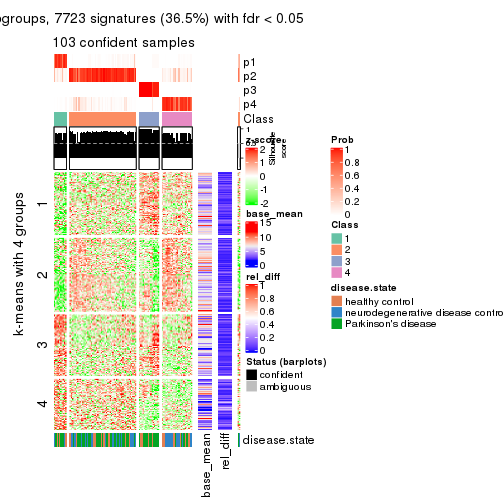
get_signatures(res, k = 5)
get_signatures(res, k = 6)
Signature heatmaps where rows are not scaled:
get_signatures(res, k = 2, scale_rows = FALSE)
get_signatures(res, k = 3, scale_rows = FALSE)
get_signatures(res, k = 4, scale_rows = FALSE)
get_signatures(res, k = 5, scale_rows = FALSE)
get_signatures(res, k = 6, scale_rows = FALSE)
Compare the overlap of signatures from different k:
compare_signatures(res)
get_signature() returns a data frame invisibly. TO get the list of signatures, the function
call should be assigned to a variable explicitly. In following code, if plot argument is set
to FALSE, no heatmap is plotted while only the differential analysis is performed.
# code only for demonstration
tb = get_signature(res, k = ..., plot = FALSE)
An example of the output of tb is:
#> which_row fdr mean_1 mean_2 scaled_mean_1 scaled_mean_2 km
#> 1 38 0.042760348 8.373488 9.131774 -0.5533452 0.5164555 1
#> 2 40 0.018707592 7.106213 8.469186 -0.6173731 0.5762149 1
#> 3 55 0.019134737 10.221463 11.207825 -0.6159697 0.5749050 1
#> 4 59 0.006059896 5.921854 7.869574 -0.6899429 0.6439467 1
#> 5 60 0.018055526 8.928898 10.211722 -0.6204761 0.5791110 1
#> 6 98 0.009384629 15.714769 14.887706 0.6635654 -0.6193277 2
...
The columns in tb are:
which_row: row indices corresponding to the input matrix.fdr: FDR for the differential test. mean_x: The mean value in group x.scaled_mean_x: The mean value in group x after rows are scaled.km: Row groups if k-means clustering is applied to rows.UMAP plot which shows how samples are separated.
dimension_reduction(res, k = 2, method = "UMAP")
dimension_reduction(res, k = 3, method = "UMAP")
dimension_reduction(res, k = 4, method = "UMAP")
dimension_reduction(res, k = 5, method = "UMAP")
dimension_reduction(res, k = 6, method = "UMAP")
Following heatmap shows how subgroups are split when increasing k:
collect_classes(res)
Test correlation between subgroups and known annotations. If the known annotation is numeric, one-way ANOVA test is applied, and if the known annotation is discrete, chi-squared contingency table test is applied.
test_to_known_factors(res)
#> n disease.state(p) k
#> CV:mclust 105 0.01082 2
#> CV:mclust 93 0.02085 3
#> CV:mclust 103 0.00984 4
#> CV:mclust 90 0.02126 5
#> CV:mclust 90 0.02698 6
If matrix rows can be associated to genes, consider to use functional_enrichment(res,
...) to perform function enrichment for the signature genes. See this vignette for more detailed explanations.
The object with results only for a single top-value method and a single partition method can be extracted as:
res = res_list["CV", "NMF"]
# you can also extract it by
# res = res_list["CV:NMF"]
A summary of res and all the functions that can be applied to it:
res
#> A 'ConsensusPartition' object with k = 2, 3, 4, 5, 6.
#> On a matrix with 21168 rows and 105 columns.
#> Top rows (1000, 2000, 3000, 4000, 5000) are extracted by 'CV' method.
#> Subgroups are detected by 'NMF' method.
#> Performed in total 1250 partitions by row resampling.
#> Best k for subgroups seems to be 3.
#>
#> Following methods can be applied to this 'ConsensusPartition' object:
#> [1] "cola_report" "collect_classes" "collect_plots"
#> [4] "collect_stats" "colnames" "compare_signatures"
#> [7] "consensus_heatmap" "dimension_reduction" "functional_enrichment"
#> [10] "get_anno_col" "get_anno" "get_classes"
#> [13] "get_consensus" "get_matrix" "get_membership"
#> [16] "get_param" "get_signatures" "get_stats"
#> [19] "is_best_k" "is_stable_k" "membership_heatmap"
#> [22] "ncol" "nrow" "plot_ecdf"
#> [25] "rownames" "select_partition_number" "show"
#> [28] "suggest_best_k" "test_to_known_factors"
collect_plots() function collects all the plots made from res for all k (number of partitions)
into one single page to provide an easy and fast comparison between different k.
collect_plots(res)
The plots are:
k and the heatmap of
predicted classes for each k.k.k.k.All the plots in panels can be made by individual functions and they are plotted later in this section.
select_partition_number() produces several plots showing different
statistics for choosing “optimized” k. There are following statistics:
k;k, the area increased is defined as \(A_k - A_{k-1}\).The detailed explanations of these statistics can be found in the cola vignette.
Generally speaking, lower PAC score, higher mean silhouette score or higher
concordance corresponds to better partition. Rand index and Jaccard index
measure how similar the current partition is compared to partition with k-1.
If they are too similar, we won't accept k is better than k-1.
select_partition_number(res)
The numeric values for all these statistics can be obtained by get_stats().
get_stats(res)
#> k 1-PAC mean_silhouette concordance area_increased Rand Jaccard
#> 2 2 0.174 0.390 0.704 0.4707 0.496 0.496
#> 3 3 0.509 0.721 0.860 0.3729 0.784 0.594
#> 4 4 0.462 0.513 0.661 0.1340 0.899 0.731
#> 5 5 0.483 0.416 0.626 0.0753 0.890 0.655
#> 6 6 0.531 0.341 0.580 0.0428 0.875 0.546
suggest_best_k() suggests the best \(k\) based on these statistics. The rules are as follows:
suggest_best_k(res)
#> [1] 3
Following shows the table of the partitions (You need to click the show/hide
code output link to see it). The membership matrix (columns with name p*)
is inferred by
clue::cl_consensus()
function with the SE method. Basically the value in the membership matrix
represents the probability to belong to a certain group. The finall class
label for an item is determined with the group with highest probability it
belongs to.
In get_classes() function, the entropy is calculated from the membership
matrix and the silhouette score is calculated from the consensus matrix.
cbind(get_classes(res, k = 2), get_membership(res, k = 2))
#> class entropy silhouette p1 p2
#> GSM153405 2 0.9209 0.26321 0.336 0.664
#> GSM153406 2 0.2043 0.45449 0.032 0.968
#> GSM153419 2 0.9358 0.24838 0.352 0.648
#> GSM153423 2 0.9661 0.33189 0.392 0.608
#> GSM153425 2 0.9661 0.20498 0.392 0.608
#> GSM153427 2 0.2043 0.45449 0.032 0.968
#> GSM153428 2 0.9552 0.22313 0.376 0.624
#> GSM153429 2 0.9686 0.32367 0.396 0.604
#> GSM153433 1 0.4939 0.59629 0.892 0.108
#> GSM153444 2 0.4815 0.46759 0.104 0.896
#> GSM153448 1 0.9970 -0.02132 0.532 0.468
#> GSM153451 2 0.9580 0.34747 0.380 0.620
#> GSM153452 2 0.2778 0.45671 0.048 0.952
#> GSM153477 1 0.9944 -0.00318 0.544 0.456
#> GSM153479 1 0.9661 0.19424 0.608 0.392
#> GSM153484 1 0.9635 0.20447 0.612 0.388
#> GSM153488 1 0.5059 0.64837 0.888 0.112
#> GSM153496 1 0.1414 0.68053 0.980 0.020
#> GSM153497 2 0.9909 0.25909 0.444 0.556
#> GSM153500 1 0.0376 0.67836 0.996 0.004
#> GSM153503 1 0.0672 0.67768 0.992 0.008
#> GSM153508 1 0.2423 0.67737 0.960 0.040
#> GSM153409 2 0.8443 0.42479 0.272 0.728
#> GSM153426 2 0.7602 0.44902 0.220 0.780
#> GSM153431 1 0.9815 0.09755 0.580 0.420
#> GSM153438 2 0.8267 0.43308 0.260 0.740
#> GSM153440 2 0.9710 0.19533 0.400 0.600
#> GSM153447 1 0.9393 0.20071 0.644 0.356
#> GSM153450 2 0.5178 0.46699 0.116 0.884
#> GSM153456 2 0.9129 0.39278 0.328 0.672
#> GSM153457 2 0.9635 0.33934 0.388 0.612
#> GSM153458 2 0.6343 0.46339 0.160 0.840
#> GSM153459 2 0.6887 0.45898 0.184 0.816
#> GSM153460 2 0.8861 0.40935 0.304 0.696
#> GSM153461 2 0.5946 0.45845 0.144 0.856
#> GSM153463 1 0.8016 0.38910 0.756 0.244
#> GSM153464 2 0.9933 0.24345 0.452 0.548
#> GSM153466 1 0.8443 0.44383 0.728 0.272
#> GSM153467 1 0.9983 -0.07258 0.524 0.476
#> GSM153468 1 0.9491 0.25924 0.632 0.368
#> GSM153469 2 0.9993 0.16673 0.484 0.516
#> GSM153470 1 0.9944 -0.00101 0.544 0.456
#> GSM153471 2 0.9998 0.14673 0.492 0.508
#> GSM153472 1 0.2423 0.67790 0.960 0.040
#> GSM153473 1 0.4431 0.61400 0.908 0.092
#> GSM153474 1 0.0672 0.67768 0.992 0.008
#> GSM153475 1 0.5408 0.63949 0.876 0.124
#> GSM153476 2 0.9815 0.26900 0.420 0.580
#> GSM153478 1 0.3584 0.63966 0.932 0.068
#> GSM153480 2 0.9866 0.27912 0.432 0.568
#> GSM153486 2 1.0000 0.13353 0.496 0.504
#> GSM153487 1 0.4562 0.65751 0.904 0.096
#> GSM153499 1 0.9286 0.30568 0.656 0.344
#> GSM153504 1 0.0672 0.67768 0.992 0.008
#> GSM153507 1 0.3114 0.67304 0.944 0.056
#> GSM153404 2 0.5519 0.41530 0.128 0.872
#> GSM153407 2 0.9323 0.25231 0.348 0.652
#> GSM153408 2 0.6623 0.38952 0.172 0.828
#> GSM153410 2 0.1184 0.45747 0.016 0.984
#> GSM153411 2 0.9922 0.12827 0.448 0.552
#> GSM153412 2 0.1184 0.45747 0.016 0.984
#> GSM153413 2 0.9170 0.26627 0.332 0.668
#> GSM153414 2 0.8327 0.42082 0.264 0.736
#> GSM153415 2 0.6438 0.39478 0.164 0.836
#> GSM153416 2 0.9775 0.30942 0.412 0.588
#> GSM153417 2 0.9866 0.15259 0.432 0.568
#> GSM153418 2 0.4161 0.43580 0.084 0.916
#> GSM153420 2 0.9732 0.19025 0.404 0.596
#> GSM153421 2 0.9896 0.14078 0.440 0.560
#> GSM153422 2 0.9922 0.12827 0.448 0.552
#> GSM153424 2 0.9954 0.11375 0.460 0.540
#> GSM153430 1 0.4161 0.63884 0.916 0.084
#> GSM153432 2 0.9983 0.18736 0.476 0.524
#> GSM153434 1 0.9209 0.33321 0.664 0.336
#> GSM153435 2 0.9909 0.25824 0.444 0.556
#> GSM153436 1 0.9710 0.11012 0.600 0.400
#> GSM153437 2 0.9209 0.38642 0.336 0.664
#> GSM153439 2 0.9988 0.17780 0.480 0.520
#> GSM153441 1 0.8661 0.44614 0.712 0.288
#> GSM153442 1 0.5842 0.62556 0.860 0.140
#> GSM153443 2 0.9996 0.15814 0.488 0.512
#> GSM153445 2 1.0000 0.12267 0.500 0.500
#> GSM153446 2 0.9833 0.29236 0.424 0.576
#> GSM153449 1 0.2778 0.66937 0.952 0.048
#> GSM153453 1 0.1633 0.67985 0.976 0.024
#> GSM153454 1 0.4815 0.59790 0.896 0.104
#> GSM153455 1 0.7139 0.59380 0.804 0.196
#> GSM153462 2 0.9998 0.14733 0.492 0.508
#> GSM153465 2 0.9922 0.25151 0.448 0.552
#> GSM153481 2 0.9954 0.22630 0.460 0.540
#> GSM153482 1 0.5629 0.63354 0.868 0.132
#> GSM153483 1 0.9815 0.11341 0.580 0.420
#> GSM153485 1 0.6148 0.61259 0.848 0.152
#> GSM153489 1 0.4562 0.65707 0.904 0.096
#> GSM153490 1 0.4022 0.62557 0.920 0.080
#> GSM153491 1 0.1184 0.67958 0.984 0.016
#> GSM153492 1 0.1843 0.66731 0.972 0.028
#> GSM153493 1 0.0938 0.67600 0.988 0.012
#> GSM153494 1 0.9170 0.33162 0.668 0.332
#> GSM153495 1 0.4022 0.62579 0.920 0.080
#> GSM153498 1 0.5842 0.62935 0.860 0.140
#> GSM153501 1 0.0938 0.67633 0.988 0.012
#> GSM153502 1 0.0672 0.67989 0.992 0.008
#> GSM153505 1 0.2948 0.65059 0.948 0.052
#> GSM153506 1 0.9732 0.16053 0.596 0.404
cbind(get_classes(res, k = 3), get_membership(res, k = 3))
#> class entropy silhouette p1 p2 p3
#> GSM153405 3 0.1753 0.810 0.000 0.048 0.952
#> GSM153406 3 0.6168 0.294 0.000 0.412 0.588
#> GSM153419 3 0.1031 0.818 0.000 0.024 0.976
#> GSM153423 2 0.1031 0.803 0.024 0.976 0.000
#> GSM153425 3 0.0592 0.822 0.012 0.000 0.988
#> GSM153427 2 0.6235 0.142 0.000 0.564 0.436
#> GSM153428 3 0.1399 0.820 0.004 0.028 0.968
#> GSM153429 2 0.5327 0.645 0.272 0.728 0.000
#> GSM153433 1 0.3551 0.803 0.868 0.000 0.132
#> GSM153444 2 0.2878 0.751 0.000 0.904 0.096
#> GSM153448 2 0.5968 0.415 0.364 0.636 0.000
#> GSM153451 2 0.0237 0.796 0.000 0.996 0.004
#> GSM153452 2 0.6026 0.316 0.000 0.624 0.376
#> GSM153477 2 0.5882 0.497 0.348 0.652 0.000
#> GSM153479 1 0.5465 0.596 0.712 0.288 0.000
#> GSM153484 1 0.5291 0.633 0.732 0.268 0.000
#> GSM153488 1 0.2066 0.857 0.940 0.060 0.000
#> GSM153496 1 0.0475 0.865 0.992 0.004 0.004
#> GSM153497 2 0.1289 0.802 0.032 0.968 0.000
#> GSM153500 1 0.1031 0.861 0.976 0.000 0.024
#> GSM153503 1 0.1411 0.858 0.964 0.000 0.036
#> GSM153508 1 0.0000 0.864 1.000 0.000 0.000
#> GSM153409 2 0.2165 0.772 0.000 0.936 0.064
#> GSM153426 2 0.1860 0.779 0.000 0.948 0.052
#> GSM153431 3 0.6262 0.542 0.284 0.020 0.696
#> GSM153438 2 0.1289 0.788 0.000 0.968 0.032
#> GSM153440 3 0.1529 0.822 0.040 0.000 0.960
#> GSM153447 3 0.5431 0.565 0.284 0.000 0.716
#> GSM153450 2 0.2356 0.770 0.000 0.928 0.072
#> GSM153456 2 0.1529 0.785 0.000 0.960 0.040
#> GSM153457 2 0.0592 0.795 0.000 0.988 0.012
#> GSM153458 2 0.2537 0.761 0.000 0.920 0.080
#> GSM153459 2 0.2261 0.770 0.000 0.932 0.068
#> GSM153460 2 0.1529 0.785 0.000 0.960 0.040
#> GSM153461 2 0.6180 0.567 0.024 0.716 0.260
#> GSM153463 1 0.6192 0.276 0.580 0.000 0.420
#> GSM153464 2 0.1289 0.802 0.032 0.968 0.000
#> GSM153466 1 0.3038 0.834 0.896 0.104 0.000
#> GSM153467 2 0.5397 0.626 0.280 0.720 0.000
#> GSM153468 1 0.5497 0.602 0.708 0.292 0.000
#> GSM153469 2 0.4121 0.755 0.168 0.832 0.000
#> GSM153470 2 0.6168 0.335 0.412 0.588 0.000
#> GSM153471 2 0.4235 0.753 0.176 0.824 0.000
#> GSM153472 1 0.0000 0.864 1.000 0.000 0.000
#> GSM153473 1 0.4291 0.751 0.820 0.000 0.180
#> GSM153474 1 0.1163 0.860 0.972 0.000 0.028
#> GSM153475 1 0.2356 0.852 0.928 0.072 0.000
#> GSM153476 2 0.7366 0.319 0.400 0.564 0.036
#> GSM153478 1 0.2945 0.836 0.908 0.004 0.088
#> GSM153480 2 0.0747 0.800 0.016 0.984 0.000
#> GSM153486 2 0.3482 0.779 0.128 0.872 0.000
#> GSM153487 1 0.0747 0.864 0.984 0.016 0.000
#> GSM153499 1 0.4062 0.786 0.836 0.164 0.000
#> GSM153504 1 0.0892 0.863 0.980 0.000 0.020
#> GSM153507 1 0.1031 0.863 0.976 0.024 0.000
#> GSM153404 3 0.5560 0.568 0.000 0.300 0.700
#> GSM153407 3 0.1289 0.816 0.000 0.032 0.968
#> GSM153408 3 0.4121 0.725 0.000 0.168 0.832
#> GSM153410 2 0.6267 0.110 0.000 0.548 0.452
#> GSM153411 3 0.2261 0.810 0.068 0.000 0.932
#> GSM153412 2 0.6267 0.080 0.000 0.548 0.452
#> GSM153413 3 0.2796 0.787 0.000 0.092 0.908
#> GSM153414 2 0.4723 0.703 0.016 0.824 0.160
#> GSM153415 3 0.5138 0.638 0.000 0.252 0.748
#> GSM153416 2 0.1647 0.804 0.036 0.960 0.004
#> GSM153417 3 0.1289 0.822 0.032 0.000 0.968
#> GSM153418 3 0.5760 0.504 0.000 0.328 0.672
#> GSM153420 3 0.0892 0.823 0.020 0.000 0.980
#> GSM153421 3 0.1643 0.819 0.044 0.000 0.956
#> GSM153422 3 0.1964 0.815 0.056 0.000 0.944
#> GSM153424 3 0.3482 0.769 0.128 0.000 0.872
#> GSM153430 1 0.4121 0.767 0.832 0.000 0.168
#> GSM153432 2 0.4974 0.689 0.236 0.764 0.000
#> GSM153434 1 0.5726 0.697 0.760 0.024 0.216
#> GSM153435 2 0.1529 0.802 0.040 0.960 0.000
#> GSM153436 3 0.6468 0.157 0.444 0.004 0.552
#> GSM153437 2 0.0424 0.796 0.000 0.992 0.008
#> GSM153439 2 0.5098 0.671 0.248 0.752 0.000
#> GSM153441 1 0.4110 0.799 0.844 0.152 0.004
#> GSM153442 1 0.2066 0.856 0.940 0.060 0.000
#> GSM153443 2 0.3340 0.782 0.120 0.880 0.000
#> GSM153445 2 0.2625 0.793 0.084 0.916 0.000
#> GSM153446 2 0.1753 0.802 0.048 0.952 0.000
#> GSM153449 1 0.1774 0.866 0.960 0.016 0.024
#> GSM153453 1 0.0237 0.864 0.996 0.000 0.004
#> GSM153454 1 0.4062 0.768 0.836 0.000 0.164
#> GSM153455 1 0.4897 0.775 0.812 0.172 0.016
#> GSM153462 2 0.4178 0.753 0.172 0.828 0.000
#> GSM153465 2 0.3192 0.786 0.112 0.888 0.000
#> GSM153481 2 0.1643 0.802 0.044 0.956 0.000
#> GSM153482 1 0.1753 0.859 0.952 0.048 0.000
#> GSM153483 1 0.5835 0.490 0.660 0.340 0.000
#> GSM153485 1 0.2625 0.848 0.916 0.084 0.000
#> GSM153489 1 0.2066 0.856 0.940 0.060 0.000
#> GSM153490 1 0.3482 0.803 0.872 0.000 0.128
#> GSM153491 1 0.0592 0.864 0.988 0.000 0.012
#> GSM153492 1 0.2711 0.831 0.912 0.000 0.088
#> GSM153493 1 0.1753 0.853 0.952 0.000 0.048
#> GSM153494 1 0.3879 0.796 0.848 0.152 0.000
#> GSM153495 1 0.3340 0.810 0.880 0.000 0.120
#> GSM153498 1 0.3879 0.803 0.848 0.152 0.000
#> GSM153501 1 0.1753 0.853 0.952 0.000 0.048
#> GSM153502 1 0.1163 0.861 0.972 0.000 0.028
#> GSM153505 1 0.2625 0.835 0.916 0.000 0.084
#> GSM153506 1 0.5760 0.522 0.672 0.328 0.000
cbind(get_classes(res, k = 4), get_membership(res, k = 4))
#> class entropy silhouette p1 p2 p3 p4
#> GSM153405 3 0.3497 0.612934 0.000 0.024 0.852 0.124
#> GSM153406 3 0.6611 0.156851 0.000 0.080 0.460 0.460
#> GSM153419 3 0.3494 0.596618 0.004 0.000 0.824 0.172
#> GSM153423 2 0.1118 0.683066 0.000 0.964 0.000 0.036
#> GSM153425 3 0.2676 0.630030 0.012 0.028 0.916 0.044
#> GSM153427 2 0.5061 0.553365 0.004 0.752 0.196 0.048
#> GSM153428 2 0.8930 -0.046298 0.064 0.392 0.332 0.212
#> GSM153429 4 0.7058 0.653184 0.200 0.228 0.000 0.572
#> GSM153433 1 0.8313 0.391817 0.532 0.060 0.192 0.216
#> GSM153444 2 0.2466 0.668846 0.000 0.916 0.028 0.056
#> GSM153448 2 0.6580 0.462092 0.148 0.656 0.008 0.188
#> GSM153451 2 0.1716 0.667080 0.000 0.936 0.000 0.064
#> GSM153452 2 0.4465 0.598160 0.000 0.800 0.144 0.056
#> GSM153477 4 0.7205 0.505936 0.344 0.152 0.000 0.504
#> GSM153479 1 0.5219 0.582420 0.728 0.056 0.000 0.216
#> GSM153484 1 0.5367 0.481141 0.664 0.032 0.000 0.304
#> GSM153488 1 0.3051 0.717494 0.884 0.028 0.000 0.088
#> GSM153496 1 0.3427 0.720384 0.868 0.008 0.020 0.104
#> GSM153497 2 0.2773 0.645768 0.004 0.880 0.000 0.116
#> GSM153500 1 0.4100 0.708185 0.844 0.016 0.040 0.100
#> GSM153503 1 0.2699 0.714395 0.904 0.000 0.028 0.068
#> GSM153508 1 0.2469 0.697198 0.892 0.000 0.000 0.108
#> GSM153409 2 0.1938 0.675023 0.000 0.936 0.012 0.052
#> GSM153426 2 0.1902 0.681320 0.000 0.932 0.004 0.064
#> GSM153431 2 0.9868 -0.157527 0.188 0.300 0.292 0.220
#> GSM153438 2 0.2266 0.662462 0.000 0.912 0.004 0.084
#> GSM153440 3 0.7146 0.506580 0.056 0.116 0.656 0.172
#> GSM153447 3 0.9360 0.303344 0.188 0.152 0.436 0.224
#> GSM153450 2 0.3241 0.654025 0.004 0.884 0.040 0.072
#> GSM153456 2 0.1022 0.677446 0.000 0.968 0.000 0.032
#> GSM153457 2 0.2011 0.658805 0.000 0.920 0.000 0.080
#> GSM153458 2 0.1297 0.682661 0.000 0.964 0.016 0.020
#> GSM153459 2 0.0895 0.682804 0.000 0.976 0.004 0.020
#> GSM153460 2 0.1022 0.681936 0.000 0.968 0.000 0.032
#> GSM153461 2 0.7176 0.446546 0.044 0.640 0.116 0.200
#> GSM153463 3 0.9044 -0.000493 0.356 0.072 0.360 0.212
#> GSM153464 2 0.5398 0.083012 0.016 0.580 0.000 0.404
#> GSM153466 1 0.3910 0.665614 0.820 0.024 0.000 0.156
#> GSM153467 2 0.4001 0.637568 0.048 0.840 0.004 0.108
#> GSM153468 1 0.6121 0.408016 0.620 0.072 0.000 0.308
#> GSM153469 4 0.6840 0.664593 0.180 0.220 0.000 0.600
#> GSM153470 4 0.7421 0.459056 0.372 0.172 0.000 0.456
#> GSM153471 4 0.7474 0.632087 0.212 0.292 0.000 0.496
#> GSM153472 1 0.3142 0.708115 0.860 0.000 0.008 0.132
#> GSM153473 1 0.4879 0.687896 0.796 0.012 0.124 0.068
#> GSM153474 1 0.4548 0.677159 0.804 0.008 0.044 0.144
#> GSM153475 1 0.5175 0.519922 0.656 0.012 0.004 0.328
#> GSM153476 4 0.7475 0.590045 0.240 0.116 0.044 0.600
#> GSM153478 1 0.6632 0.604707 0.672 0.020 0.136 0.172
#> GSM153480 2 0.4605 0.335076 0.000 0.664 0.000 0.336
#> GSM153486 2 0.4664 0.501696 0.012 0.736 0.004 0.248
#> GSM153487 1 0.3157 0.694254 0.852 0.004 0.000 0.144
#> GSM153499 1 0.4793 0.610884 0.756 0.040 0.000 0.204
#> GSM153504 1 0.3367 0.701193 0.864 0.000 0.028 0.108
#> GSM153507 1 0.3539 0.665474 0.820 0.000 0.004 0.176
#> GSM153404 3 0.5672 0.502971 0.000 0.056 0.668 0.276
#> GSM153407 3 0.7714 0.325836 0.020 0.272 0.536 0.172
#> GSM153408 3 0.5423 0.468954 0.000 0.028 0.640 0.332
#> GSM153410 4 0.6895 -0.119175 0.000 0.108 0.400 0.492
#> GSM153411 3 0.1411 0.642573 0.020 0.000 0.960 0.020
#> GSM153412 4 0.6764 -0.144763 0.000 0.096 0.404 0.500
#> GSM153413 3 0.5064 0.453402 0.004 0.004 0.632 0.360
#> GSM153414 2 0.6587 0.503794 0.048 0.688 0.076 0.188
#> GSM153415 3 0.5693 0.276400 0.000 0.024 0.504 0.472
#> GSM153416 2 0.1807 0.683752 0.008 0.940 0.000 0.052
#> GSM153417 3 0.0376 0.647718 0.004 0.000 0.992 0.004
#> GSM153418 3 0.6286 0.352817 0.000 0.064 0.552 0.384
#> GSM153420 3 0.0657 0.646827 0.004 0.000 0.984 0.012
#> GSM153421 3 0.0524 0.647757 0.008 0.000 0.988 0.004
#> GSM153422 3 0.1297 0.647841 0.016 0.000 0.964 0.020
#> GSM153424 2 0.9483 -0.105279 0.112 0.344 0.312 0.232
#> GSM153430 1 0.9727 0.081339 0.372 0.192 0.208 0.228
#> GSM153432 4 0.7314 0.393462 0.132 0.416 0.004 0.448
#> GSM153434 1 0.9349 0.141904 0.424 0.128 0.240 0.208
#> GSM153435 2 0.4957 0.404528 0.016 0.684 0.000 0.300
#> GSM153436 3 0.9683 0.235349 0.184 0.232 0.380 0.204
#> GSM153437 2 0.4134 0.497349 0.000 0.740 0.000 0.260
#> GSM153439 4 0.7396 0.647196 0.216 0.268 0.000 0.516
#> GSM153441 1 0.8410 0.172217 0.420 0.356 0.036 0.188
#> GSM153442 1 0.6408 0.595262 0.692 0.124 0.020 0.164
#> GSM153443 2 0.5256 0.396153 0.036 0.692 0.000 0.272
#> GSM153445 4 0.6994 0.439709 0.116 0.412 0.000 0.472
#> GSM153446 2 0.4770 0.419106 0.012 0.700 0.000 0.288
#> GSM153449 1 0.6048 0.643448 0.724 0.044 0.056 0.176
#> GSM153453 1 0.1576 0.717417 0.948 0.000 0.004 0.048
#> GSM153454 1 0.7551 0.463859 0.592 0.032 0.168 0.208
#> GSM153455 1 0.5797 0.458465 0.624 0.024 0.012 0.340
#> GSM153462 2 0.6681 0.138523 0.120 0.588 0.000 0.292
#> GSM153465 2 0.5363 0.566247 0.056 0.728 0.004 0.212
#> GSM153481 4 0.6566 0.608103 0.112 0.288 0.000 0.600
#> GSM153482 1 0.2452 0.719729 0.908 0.004 0.004 0.084
#> GSM153483 1 0.6504 0.450660 0.636 0.148 0.000 0.216
#> GSM153485 1 0.4187 0.701079 0.816 0.024 0.008 0.152
#> GSM153489 1 0.4018 0.641090 0.772 0.000 0.004 0.224
#> GSM153490 1 0.4071 0.697389 0.832 0.000 0.104 0.064
#> GSM153491 1 0.3659 0.716314 0.840 0.000 0.024 0.136
#> GSM153492 1 0.3885 0.694007 0.844 0.000 0.064 0.092
#> GSM153493 1 0.3216 0.717976 0.880 0.000 0.044 0.076
#> GSM153494 1 0.4204 0.660803 0.788 0.020 0.000 0.192
#> GSM153495 1 0.7081 0.521914 0.632 0.024 0.148 0.196
#> GSM153498 1 0.5781 0.080370 0.492 0.028 0.000 0.480
#> GSM153501 1 0.2809 0.720068 0.904 0.004 0.028 0.064
#> GSM153502 1 0.3266 0.707900 0.868 0.000 0.024 0.108
#> GSM153505 1 0.4586 0.673997 0.796 0.000 0.068 0.136
#> GSM153506 1 0.6023 0.351155 0.612 0.060 0.000 0.328
cbind(get_classes(res, k = 5), get_membership(res, k = 5))
#> class entropy silhouette p1 p2 p3 p4 p5
#> GSM153405 3 0.3554 0.5975 0.000 0.004 0.776 0.004 0.216
#> GSM153406 3 0.5008 0.2593 0.000 0.012 0.500 0.012 0.476
#> GSM153419 3 0.2966 0.6122 0.000 0.000 0.816 0.000 0.184
#> GSM153423 2 0.3215 0.6861 0.012 0.872 0.004 0.056 0.056
#> GSM153425 3 0.2522 0.6193 0.004 0.000 0.896 0.076 0.024
#> GSM153427 2 0.7188 0.3329 0.000 0.524 0.248 0.164 0.064
#> GSM153428 2 0.7852 -0.1750 0.004 0.336 0.276 0.332 0.052
#> GSM153429 5 0.7029 0.4974 0.156 0.212 0.016 0.040 0.576
#> GSM153433 4 0.6223 0.3302 0.280 0.024 0.044 0.616 0.036
#> GSM153444 2 0.4970 0.5558 0.000 0.708 0.024 0.228 0.040
#> GSM153448 2 0.5893 0.5907 0.048 0.692 0.004 0.120 0.136
#> GSM153451 2 0.1408 0.6801 0.000 0.948 0.000 0.008 0.044
#> GSM153452 2 0.5734 0.5316 0.000 0.688 0.164 0.108 0.040
#> GSM153477 5 0.6403 0.3093 0.332 0.136 0.000 0.012 0.520
#> GSM153479 1 0.7246 0.4657 0.524 0.068 0.000 0.232 0.176
#> GSM153484 1 0.5993 0.4564 0.600 0.016 0.000 0.104 0.280
#> GSM153488 1 0.5497 0.5688 0.668 0.008 0.000 0.208 0.116
#> GSM153496 1 0.6260 0.5119 0.620 0.008 0.016 0.216 0.140
#> GSM153497 2 0.3423 0.6702 0.016 0.856 0.000 0.060 0.068
#> GSM153500 1 0.6412 0.4886 0.628 0.016 0.028 0.220 0.108
#> GSM153503 1 0.4763 0.4578 0.632 0.000 0.000 0.336 0.032
#> GSM153508 1 0.4818 0.5768 0.720 0.000 0.000 0.180 0.100
#> GSM153409 2 0.5359 0.3922 0.000 0.616 0.012 0.324 0.048
#> GSM153426 2 0.5942 0.4234 0.000 0.600 0.012 0.280 0.108
#> GSM153431 4 0.7125 0.5242 0.092 0.116 0.116 0.632 0.044
#> GSM153438 2 0.1725 0.6810 0.000 0.936 0.000 0.020 0.044
#> GSM153440 4 0.6687 0.1870 0.024 0.072 0.408 0.476 0.020
#> GSM153447 4 0.6426 0.5380 0.076 0.068 0.164 0.668 0.024
#> GSM153450 2 0.4253 0.6406 0.000 0.804 0.032 0.112 0.052
#> GSM153456 2 0.1018 0.6824 0.000 0.968 0.000 0.016 0.016
#> GSM153457 2 0.1124 0.6767 0.000 0.960 0.000 0.004 0.036
#> GSM153458 2 0.2086 0.6841 0.000 0.924 0.008 0.048 0.020
#> GSM153459 2 0.2026 0.6838 0.000 0.924 0.008 0.056 0.012
#> GSM153460 2 0.2251 0.6842 0.000 0.916 0.008 0.052 0.024
#> GSM153461 4 0.6319 0.1732 0.004 0.376 0.060 0.524 0.036
#> GSM153463 4 0.6310 0.4763 0.168 0.016 0.144 0.648 0.024
#> GSM153464 2 0.5478 0.3868 0.044 0.640 0.000 0.028 0.288
#> GSM153466 1 0.6824 0.5141 0.584 0.064 0.000 0.152 0.200
#> GSM153467 2 0.3798 0.6588 0.032 0.836 0.000 0.044 0.088
#> GSM153468 1 0.7567 0.2781 0.472 0.124 0.000 0.112 0.292
#> GSM153469 5 0.6273 0.4993 0.172 0.192 0.000 0.024 0.612
#> GSM153470 1 0.8100 0.1111 0.348 0.080 0.004 0.256 0.312
#> GSM153471 5 0.7443 0.3703 0.276 0.228 0.000 0.048 0.448
#> GSM153472 1 0.5086 0.5773 0.728 0.004 0.008 0.152 0.108
#> GSM153473 1 0.5403 0.5255 0.672 0.000 0.024 0.244 0.060
#> GSM153474 1 0.5678 0.4146 0.552 0.000 0.004 0.368 0.076
#> GSM153475 1 0.5386 0.5506 0.664 0.000 0.008 0.088 0.240
#> GSM153476 5 0.7085 0.3424 0.208 0.020 0.096 0.080 0.596
#> GSM153478 1 0.6892 0.2527 0.464 0.008 0.048 0.400 0.080
#> GSM153480 2 0.4161 0.4900 0.000 0.704 0.000 0.016 0.280
#> GSM153486 2 0.5833 0.5164 0.096 0.680 0.000 0.048 0.176
#> GSM153487 1 0.5006 0.5956 0.708 0.000 0.000 0.156 0.136
#> GSM153499 1 0.6150 0.5549 0.588 0.008 0.000 0.164 0.240
#> GSM153504 1 0.3669 0.6000 0.816 0.000 0.000 0.128 0.056
#> GSM153507 1 0.4889 0.5947 0.720 0.000 0.000 0.144 0.136
#> GSM153404 3 0.4213 0.5353 0.000 0.012 0.680 0.000 0.308
#> GSM153407 3 0.6890 0.0521 0.000 0.196 0.540 0.228 0.036
#> GSM153408 3 0.4354 0.4681 0.000 0.008 0.624 0.000 0.368
#> GSM153410 5 0.4978 -0.3086 0.000 0.028 0.476 0.000 0.496
#> GSM153411 3 0.2664 0.6171 0.004 0.000 0.892 0.064 0.040
#> GSM153412 5 0.5096 -0.2587 0.000 0.036 0.444 0.000 0.520
#> GSM153413 3 0.4704 0.3675 0.004 0.004 0.548 0.004 0.440
#> GSM153414 2 0.5968 0.4291 0.000 0.624 0.064 0.268 0.044
#> GSM153415 5 0.4803 -0.3598 0.004 0.012 0.492 0.000 0.492
#> GSM153416 2 0.3463 0.6811 0.020 0.852 0.000 0.088 0.040
#> GSM153417 3 0.1124 0.6500 0.000 0.000 0.960 0.036 0.004
#> GSM153418 3 0.4651 0.3784 0.000 0.008 0.560 0.004 0.428
#> GSM153420 3 0.1117 0.6510 0.000 0.000 0.964 0.020 0.016
#> GSM153421 3 0.1557 0.6421 0.000 0.000 0.940 0.052 0.008
#> GSM153422 3 0.0865 0.6513 0.000 0.000 0.972 0.024 0.004
#> GSM153424 4 0.7222 0.3448 0.016 0.260 0.176 0.520 0.028
#> GSM153430 4 0.5128 0.4704 0.196 0.072 0.008 0.716 0.008
#> GSM153432 5 0.7991 0.2900 0.192 0.304 0.000 0.108 0.396
#> GSM153434 4 0.9072 0.2139 0.224 0.080 0.156 0.408 0.132
#> GSM153435 2 0.6442 0.3303 0.028 0.548 0.008 0.080 0.336
#> GSM153436 3 0.9596 -0.2741 0.128 0.160 0.296 0.280 0.136
#> GSM153437 2 0.3013 0.6279 0.000 0.832 0.000 0.008 0.160
#> GSM153439 5 0.7097 0.4427 0.200 0.268 0.000 0.036 0.496
#> GSM153441 2 0.8662 -0.2178 0.288 0.328 0.024 0.260 0.100
#> GSM153442 1 0.7952 0.2272 0.404 0.108 0.008 0.348 0.132
#> GSM153443 2 0.5588 0.5010 0.044 0.688 0.000 0.068 0.200
#> GSM153445 2 0.7221 -0.0940 0.160 0.460 0.000 0.048 0.332
#> GSM153446 2 0.4814 0.5575 0.032 0.736 0.000 0.036 0.196
#> GSM153449 1 0.7402 0.3166 0.488 0.024 0.068 0.340 0.080
#> GSM153453 1 0.4190 0.5855 0.768 0.000 0.000 0.172 0.060
#> GSM153454 4 0.7299 0.0370 0.344 0.012 0.088 0.484 0.072
#> GSM153455 1 0.7276 0.3938 0.524 0.056 0.028 0.084 0.308
#> GSM153462 2 0.7519 0.2246 0.128 0.492 0.000 0.112 0.268
#> GSM153465 4 0.7832 0.1953 0.112 0.336 0.000 0.404 0.148
#> GSM153481 5 0.6387 0.2482 0.148 0.380 0.000 0.004 0.468
#> GSM153482 1 0.5754 0.4525 0.564 0.000 0.004 0.344 0.088
#> GSM153483 4 0.7182 -0.1392 0.388 0.036 0.000 0.404 0.172
#> GSM153485 1 0.5421 0.5764 0.704 0.012 0.008 0.096 0.180
#> GSM153489 1 0.4944 0.5878 0.700 0.000 0.000 0.092 0.208
#> GSM153490 1 0.6106 0.5044 0.628 0.000 0.060 0.248 0.064
#> GSM153491 1 0.5576 0.5533 0.676 0.000 0.012 0.156 0.156
#> GSM153492 1 0.4774 0.4113 0.612 0.000 0.000 0.360 0.028
#> GSM153493 1 0.6436 0.4761 0.616 0.000 0.048 0.204 0.132
#> GSM153494 1 0.6338 0.5593 0.596 0.020 0.000 0.200 0.184
#> GSM153495 4 0.6024 0.0762 0.376 0.004 0.040 0.544 0.036
#> GSM153498 1 0.5057 0.2888 0.532 0.008 0.000 0.020 0.440
#> GSM153501 1 0.4750 0.5411 0.692 0.000 0.004 0.260 0.044
#> GSM153502 1 0.5000 0.5547 0.688 0.004 0.000 0.240 0.068
#> GSM153505 1 0.5140 0.3033 0.540 0.000 0.020 0.428 0.012
#> GSM153506 1 0.6142 0.4353 0.592 0.028 0.000 0.092 0.288
cbind(get_classes(res, k = 6), get_membership(res, k = 6))
#> class entropy silhouette p1 p2 p3 p4 p5 p6
#> GSM153405 3 0.4339 0.2027 0.000 0.032 0.648 0.000 0.316 0.004
#> GSM153406 3 0.2213 0.6404 0.008 0.008 0.912 0.000 0.048 0.024
#> GSM153419 3 0.3872 0.0200 0.000 0.004 0.604 0.000 0.392 0.000
#> GSM153423 1 0.3193 0.6784 0.868 0.032 0.000 0.028 0.032 0.040
#> GSM153425 5 0.4022 0.6087 0.000 0.020 0.272 0.008 0.700 0.000
#> GSM153427 1 0.7250 0.2444 0.488 0.168 0.124 0.000 0.204 0.016
#> GSM153428 5 0.6858 0.0647 0.312 0.200 0.008 0.020 0.444 0.016
#> GSM153429 3 0.7904 -0.1338 0.136 0.044 0.460 0.112 0.016 0.232
#> GSM153433 2 0.5633 0.3160 0.004 0.632 0.000 0.232 0.060 0.072
#> GSM153444 1 0.4514 0.5784 0.732 0.200 0.020 0.004 0.036 0.008
#> GSM153448 1 0.7126 0.4778 0.584 0.056 0.044 0.052 0.076 0.188
#> GSM153451 1 0.1057 0.6816 0.968 0.004 0.004 0.008 0.004 0.012
#> GSM153452 1 0.5375 0.4960 0.668 0.036 0.012 0.040 0.232 0.012
#> GSM153477 6 0.8016 0.3186 0.080 0.048 0.288 0.236 0.004 0.344
#> GSM153479 6 0.6244 0.2785 0.020 0.100 0.036 0.112 0.064 0.668
#> GSM153484 6 0.7664 0.2728 0.008 0.096 0.172 0.272 0.024 0.428
#> GSM153488 4 0.6385 0.4061 0.000 0.220 0.060 0.588 0.024 0.108
#> GSM153496 4 0.5995 0.4194 0.012 0.140 0.012 0.664 0.076 0.096
#> GSM153497 1 0.3442 0.6754 0.840 0.060 0.004 0.008 0.008 0.080
#> GSM153500 4 0.5555 0.4149 0.008 0.052 0.000 0.664 0.184 0.092
#> GSM153503 4 0.6164 0.2920 0.000 0.364 0.000 0.476 0.040 0.120
#> GSM153508 6 0.6275 0.0628 0.000 0.116 0.008 0.248 0.060 0.568
#> GSM153409 1 0.5588 0.2942 0.532 0.384 0.028 0.000 0.020 0.036
#> GSM153426 1 0.5928 0.2391 0.496 0.384 0.084 0.000 0.008 0.028
#> GSM153431 2 0.4706 0.4596 0.056 0.776 0.012 0.012 0.072 0.072
#> GSM153438 1 0.1680 0.6846 0.940 0.024 0.012 0.000 0.004 0.020
#> GSM153440 2 0.7440 0.0128 0.064 0.444 0.112 0.036 0.328 0.016
#> GSM153447 2 0.4051 0.4634 0.032 0.820 0.012 0.036 0.080 0.020
#> GSM153450 1 0.2944 0.6677 0.868 0.036 0.004 0.008 0.080 0.004
#> GSM153456 1 0.0291 0.6787 0.992 0.004 0.000 0.000 0.004 0.000
#> GSM153457 1 0.0922 0.6789 0.968 0.004 0.004 0.000 0.000 0.024
#> GSM153458 1 0.1521 0.6783 0.948 0.024 0.004 0.004 0.016 0.004
#> GSM153459 1 0.1333 0.6792 0.944 0.048 0.000 0.000 0.008 0.000
#> GSM153460 1 0.0909 0.6783 0.968 0.020 0.000 0.000 0.012 0.000
#> GSM153461 2 0.5290 0.4052 0.220 0.676 0.012 0.008 0.060 0.024
#> GSM153463 2 0.5609 0.4036 0.004 0.656 0.000 0.116 0.172 0.052
#> GSM153464 1 0.5466 0.5246 0.668 0.008 0.080 0.024 0.012 0.208
#> GSM153466 6 0.7246 0.2646 0.088 0.084 0.016 0.244 0.040 0.528
#> GSM153467 1 0.4479 0.6387 0.776 0.032 0.008 0.024 0.028 0.132
#> GSM153468 6 0.9064 0.1426 0.116 0.100 0.096 0.284 0.076 0.328
#> GSM153469 3 0.7571 -0.1976 0.100 0.020 0.440 0.140 0.012 0.288
#> GSM153470 2 0.8338 -0.2400 0.040 0.340 0.196 0.120 0.016 0.288
#> GSM153471 6 0.7911 0.3469 0.236 0.060 0.216 0.072 0.004 0.412
#> GSM153472 4 0.3893 0.4251 0.000 0.024 0.024 0.820 0.052 0.080
#> GSM153473 4 0.7701 0.2441 0.004 0.268 0.016 0.368 0.096 0.248
#> GSM153474 2 0.7044 -0.0918 0.000 0.372 0.000 0.260 0.068 0.300
#> GSM153475 6 0.7586 0.0863 0.000 0.128 0.148 0.348 0.020 0.356
#> GSM153476 3 0.6540 0.1089 0.008 0.068 0.568 0.148 0.004 0.204
#> GSM153478 2 0.7563 -0.0904 0.000 0.340 0.004 0.316 0.164 0.176
#> GSM153480 1 0.5500 0.5349 0.664 0.020 0.148 0.016 0.000 0.152
#> GSM153486 1 0.6959 0.3297 0.528 0.020 0.020 0.272 0.060 0.100
#> GSM153487 4 0.6816 0.3348 0.000 0.216 0.016 0.484 0.040 0.244
#> GSM153499 4 0.8105 0.0711 0.008 0.204 0.100 0.324 0.040 0.324
#> GSM153504 4 0.6468 0.3622 0.000 0.176 0.016 0.536 0.032 0.240
#> GSM153507 6 0.6245 0.0327 0.000 0.124 0.008 0.332 0.032 0.504
#> GSM153404 3 0.3163 0.4701 0.004 0.004 0.780 0.000 0.212 0.000
#> GSM153407 5 0.6871 0.3569 0.144 0.220 0.108 0.000 0.520 0.008
#> GSM153408 3 0.2482 0.5742 0.000 0.000 0.848 0.004 0.148 0.000
#> GSM153410 3 0.1684 0.6428 0.008 0.008 0.940 0.000 0.028 0.016
#> GSM153411 5 0.3961 0.5979 0.000 0.008 0.276 0.016 0.700 0.000
#> GSM153412 3 0.1325 0.6404 0.016 0.000 0.956 0.004 0.012 0.012
#> GSM153413 3 0.2019 0.6252 0.004 0.004 0.912 0.004 0.072 0.004
#> GSM153414 1 0.6061 0.4843 0.624 0.148 0.000 0.036 0.168 0.024
#> GSM153415 3 0.1642 0.6395 0.000 0.000 0.936 0.004 0.028 0.032
#> GSM153416 1 0.4168 0.6693 0.816 0.060 0.008 0.036 0.028 0.052
#> GSM153417 5 0.3819 0.5753 0.000 0.008 0.340 0.000 0.652 0.000
#> GSM153418 3 0.2755 0.6076 0.008 0.016 0.864 0.000 0.108 0.004
#> GSM153420 5 0.4039 0.5615 0.000 0.016 0.352 0.000 0.632 0.000
#> GSM153421 5 0.3565 0.6030 0.000 0.004 0.304 0.000 0.692 0.000
#> GSM153422 5 0.4213 0.5734 0.000 0.020 0.340 0.000 0.636 0.004
#> GSM153424 2 0.7256 0.2243 0.220 0.428 0.000 0.040 0.276 0.036
#> GSM153430 2 0.4939 0.4455 0.052 0.760 0.004 0.092 0.056 0.036
#> GSM153432 6 0.9256 0.3190 0.140 0.136 0.196 0.200 0.032 0.296
#> GSM153434 2 0.8969 0.0984 0.060 0.284 0.032 0.244 0.220 0.160
#> GSM153435 1 0.8191 0.2318 0.420 0.160 0.212 0.040 0.016 0.152
#> GSM153436 5 0.7099 0.0661 0.156 0.060 0.000 0.212 0.524 0.048
#> GSM153437 1 0.3120 0.6637 0.852 0.004 0.052 0.008 0.000 0.084
#> GSM153439 6 0.8340 0.3571 0.180 0.036 0.284 0.140 0.016 0.344
#> GSM153441 1 0.8509 -0.1229 0.324 0.116 0.000 0.276 0.144 0.140
#> GSM153442 6 0.8590 0.0750 0.128 0.212 0.000 0.208 0.120 0.332
#> GSM153443 1 0.5621 0.5522 0.668 0.040 0.024 0.044 0.012 0.212
#> GSM153445 1 0.7641 0.1296 0.440 0.012 0.112 0.160 0.016 0.260
#> GSM153446 1 0.5879 0.5529 0.652 0.028 0.068 0.040 0.008 0.204
#> GSM153449 4 0.6954 0.3095 0.016 0.240 0.004 0.512 0.164 0.064
#> GSM153453 4 0.5647 0.4449 0.000 0.140 0.004 0.660 0.060 0.136
#> GSM153454 4 0.7242 -0.0718 0.008 0.332 0.000 0.352 0.240 0.068
#> GSM153455 4 0.7865 0.0241 0.044 0.032 0.076 0.472 0.132 0.244
#> GSM153462 1 0.8163 0.2656 0.424 0.144 0.096 0.076 0.012 0.248
#> GSM153465 2 0.7617 0.2867 0.204 0.524 0.088 0.076 0.020 0.088
#> GSM153481 1 0.7962 -0.1360 0.348 0.004 0.232 0.152 0.016 0.248
#> GSM153482 4 0.6779 0.2893 0.000 0.368 0.012 0.412 0.040 0.168
#> GSM153483 2 0.6103 0.2285 0.004 0.616 0.048 0.148 0.008 0.176
#> GSM153485 4 0.5297 0.3665 0.024 0.020 0.024 0.724 0.068 0.140
#> GSM153489 4 0.5855 0.3477 0.000 0.096 0.084 0.656 0.012 0.152
#> GSM153490 4 0.6792 0.4296 0.000 0.200 0.000 0.516 0.132 0.152
#> GSM153491 4 0.3952 0.4265 0.004 0.020 0.008 0.808 0.104 0.056
#> GSM153492 2 0.6249 -0.2094 0.000 0.428 0.004 0.416 0.036 0.116
#> GSM153493 4 0.5025 0.4056 0.004 0.032 0.004 0.708 0.176 0.076
#> GSM153494 4 0.7194 0.2546 0.008 0.180 0.048 0.488 0.028 0.248
#> GSM153495 2 0.6029 0.2701 0.000 0.608 0.008 0.224 0.084 0.076
#> GSM153498 4 0.7003 -0.0608 0.020 0.008 0.224 0.468 0.028 0.252
#> GSM153501 4 0.7034 0.3477 0.000 0.280 0.004 0.424 0.068 0.224
#> GSM153502 4 0.6224 0.4252 0.000 0.276 0.020 0.540 0.016 0.148
#> GSM153505 2 0.6402 -0.0292 0.000 0.480 0.000 0.344 0.088 0.088
#> GSM153506 6 0.7141 0.1482 0.032 0.088 0.060 0.332 0.016 0.472
Heatmaps for the consensus matrix. It visualizes the probability of two samples to be in a same group.
consensus_heatmap(res, k = 2)
consensus_heatmap(res, k = 3)
consensus_heatmap(res, k = 4)
consensus_heatmap(res, k = 5)
consensus_heatmap(res, k = 6)
Heatmaps for the membership of samples in all partitions to see how consistent they are:
membership_heatmap(res, k = 2)
membership_heatmap(res, k = 3)
membership_heatmap(res, k = 4)
membership_heatmap(res, k = 5)
membership_heatmap(res, k = 6)
As soon as we have had the classes for columns, we can look for signatures which are significantly different between classes which can be candidate marks for certain classes. Following are the heatmaps for signatures.
Signature heatmaps where rows are scaled:
get_signatures(res, k = 2)

get_signatures(res, k = 3)
get_signatures(res, k = 4)
get_signatures(res, k = 5)
get_signatures(res, k = 6)
Signature heatmaps where rows are not scaled:
get_signatures(res, k = 2, scale_rows = FALSE)

get_signatures(res, k = 3, scale_rows = FALSE)
get_signatures(res, k = 4, scale_rows = FALSE)
get_signatures(res, k = 5, scale_rows = FALSE)
get_signatures(res, k = 6, scale_rows = FALSE)
Compare the overlap of signatures from different k:
compare_signatures(res)
get_signature() returns a data frame invisibly. TO get the list of signatures, the function
call should be assigned to a variable explicitly. In following code, if plot argument is set
to FALSE, no heatmap is plotted while only the differential analysis is performed.
# code only for demonstration
tb = get_signature(res, k = ..., plot = FALSE)
An example of the output of tb is:
#> which_row fdr mean_1 mean_2 scaled_mean_1 scaled_mean_2 km
#> 1 38 0.042760348 8.373488 9.131774 -0.5533452 0.5164555 1
#> 2 40 0.018707592 7.106213 8.469186 -0.6173731 0.5762149 1
#> 3 55 0.019134737 10.221463 11.207825 -0.6159697 0.5749050 1
#> 4 59 0.006059896 5.921854 7.869574 -0.6899429 0.6439467 1
#> 5 60 0.018055526 8.928898 10.211722 -0.6204761 0.5791110 1
#> 6 98 0.009384629 15.714769 14.887706 0.6635654 -0.6193277 2
...
The columns in tb are:
which_row: row indices corresponding to the input matrix.fdr: FDR for the differential test. mean_x: The mean value in group x.scaled_mean_x: The mean value in group x after rows are scaled.km: Row groups if k-means clustering is applied to rows.UMAP plot which shows how samples are separated.
dimension_reduction(res, k = 2, method = "UMAP")
dimension_reduction(res, k = 3, method = "UMAP")
dimension_reduction(res, k = 4, method = "UMAP")
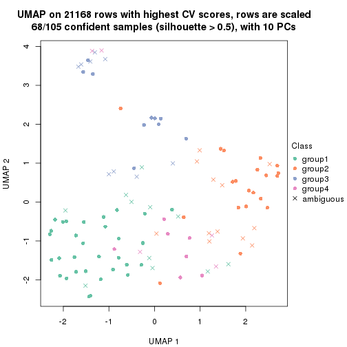
dimension_reduction(res, k = 5, method = "UMAP")
dimension_reduction(res, k = 6, method = "UMAP")
Following heatmap shows how subgroups are split when increasing k:
collect_classes(res)
Test correlation between subgroups and known annotations. If the known annotation is numeric, one-way ANOVA test is applied, and if the known annotation is discrete, chi-squared contingency table test is applied.
test_to_known_factors(res)
#> n disease.state(p) k
#> CV:NMF 32 NA 2
#> CV:NMF 93 0.13762 3
#> CV:NMF 68 0.13335 4
#> CV:NMF 49 0.06322 5
#> CV:NMF 31 0.00911 6
If matrix rows can be associated to genes, consider to use functional_enrichment(res,
...) to perform function enrichment for the signature genes. See this vignette for more detailed explanations.
The object with results only for a single top-value method and a single partition method can be extracted as:
res = res_list["MAD", "hclust"]
# you can also extract it by
# res = res_list["MAD:hclust"]
A summary of res and all the functions that can be applied to it:
res
#> A 'ConsensusPartition' object with k = 2, 3, 4, 5, 6.
#> On a matrix with 21168 rows and 105 columns.
#> Top rows (1000, 2000, 3000, 4000, 5000) are extracted by 'MAD' method.
#> Subgroups are detected by 'hclust' method.
#> Performed in total 1250 partitions by row resampling.
#> Best k for subgroups seems to be 3.
#>
#> Following methods can be applied to this 'ConsensusPartition' object:
#> [1] "cola_report" "collect_classes" "collect_plots"
#> [4] "collect_stats" "colnames" "compare_signatures"
#> [7] "consensus_heatmap" "dimension_reduction" "functional_enrichment"
#> [10] "get_anno_col" "get_anno" "get_classes"
#> [13] "get_consensus" "get_matrix" "get_membership"
#> [16] "get_param" "get_signatures" "get_stats"
#> [19] "is_best_k" "is_stable_k" "membership_heatmap"
#> [22] "ncol" "nrow" "plot_ecdf"
#> [25] "rownames" "select_partition_number" "show"
#> [28] "suggest_best_k" "test_to_known_factors"
collect_plots() function collects all the plots made from res for all k (number of partitions)
into one single page to provide an easy and fast comparison between different k.
collect_plots(res)
The plots are:
k and the heatmap of
predicted classes for each k.k.k.k.All the plots in panels can be made by individual functions and they are plotted later in this section.
select_partition_number() produces several plots showing different
statistics for choosing “optimized” k. There are following statistics:
k;k, the area increased is defined as \(A_k - A_{k-1}\).The detailed explanations of these statistics can be found in the cola vignette.
Generally speaking, lower PAC score, higher mean silhouette score or higher
concordance corresponds to better partition. Rand index and Jaccard index
measure how similar the current partition is compared to partition with k-1.
If they are too similar, we won't accept k is better than k-1.
select_partition_number(res)
The numeric values for all these statistics can be obtained by get_stats().
get_stats(res)
#> k 1-PAC mean_silhouette concordance area_increased Rand Jaccard
#> 2 2 1.000 0.990 1.000 0.0207 0.981 0.981
#> 3 3 0.293 0.696 0.864 10.8910 0.843 0.840
#> 4 4 0.123 0.720 0.820 0.5848 0.813 0.778
#> 5 5 0.166 0.666 0.785 0.1702 0.952 0.929
#> 6 6 0.179 0.634 0.769 0.0841 0.997 0.996
suggest_best_k() suggests the best \(k\) based on these statistics. The rules are as follows:
suggest_best_k(res)
#> [1] 3
Following shows the table of the partitions (You need to click the show/hide
code output link to see it). The membership matrix (columns with name p*)
is inferred by
clue::cl_consensus()
function with the SE method. Basically the value in the membership matrix
represents the probability to belong to a certain group. The finall class
label for an item is determined with the group with highest probability it
belongs to.
In get_classes() function, the entropy is calculated from the membership
matrix and the silhouette score is calculated from the consensus matrix.
cbind(get_classes(res, k = 2), get_membership(res, k = 2))
#> class entropy silhouette p1 p2
#> GSM153405 2 0.0000 0.999 0.000 1.000
#> GSM153406 2 0.0000 0.999 0.000 1.000
#> GSM153419 2 0.0000 0.999 0.000 1.000
#> GSM153423 2 0.0000 0.999 0.000 1.000
#> GSM153425 2 0.0000 0.999 0.000 1.000
#> GSM153427 2 0.0000 0.999 0.000 1.000
#> GSM153428 2 0.0000 0.999 0.000 1.000
#> GSM153429 2 0.0000 0.999 0.000 1.000
#> GSM153433 2 0.0000 0.999 0.000 1.000
#> GSM153444 2 0.0000 0.999 0.000 1.000
#> GSM153448 2 0.0000 0.999 0.000 1.000
#> GSM153451 2 0.0000 0.999 0.000 1.000
#> GSM153452 2 0.0000 0.999 0.000 1.000
#> GSM153477 2 0.0000 0.999 0.000 1.000
#> GSM153479 2 0.0000 0.999 0.000 1.000
#> GSM153484 2 0.0000 0.999 0.000 1.000
#> GSM153488 2 0.0000 0.999 0.000 1.000
#> GSM153496 2 0.0000 0.999 0.000 1.000
#> GSM153497 2 0.0376 0.996 0.004 0.996
#> GSM153500 2 0.0672 0.992 0.008 0.992
#> GSM153503 2 0.0000 0.999 0.000 1.000
#> GSM153508 1 0.0000 0.000 1.000 0.000
#> GSM153409 2 0.0000 0.999 0.000 1.000
#> GSM153426 2 0.0000 0.999 0.000 1.000
#> GSM153431 2 0.0000 0.999 0.000 1.000
#> GSM153438 2 0.0000 0.999 0.000 1.000
#> GSM153440 2 0.0000 0.999 0.000 1.000
#> GSM153447 2 0.0000 0.999 0.000 1.000
#> GSM153450 2 0.0000 0.999 0.000 1.000
#> GSM153456 2 0.0000 0.999 0.000 1.000
#> GSM153457 2 0.0000 0.999 0.000 1.000
#> GSM153458 2 0.0000 0.999 0.000 1.000
#> GSM153459 2 0.0000 0.999 0.000 1.000
#> GSM153460 2 0.0000 0.999 0.000 1.000
#> GSM153461 2 0.0000 0.999 0.000 1.000
#> GSM153463 2 0.0000 0.999 0.000 1.000
#> GSM153464 2 0.0376 0.996 0.004 0.996
#> GSM153466 2 0.0000 0.999 0.000 1.000
#> GSM153467 2 0.0376 0.996 0.004 0.996
#> GSM153468 2 0.0000 0.999 0.000 1.000
#> GSM153469 2 0.0000 0.999 0.000 1.000
#> GSM153470 2 0.0000 0.999 0.000 1.000
#> GSM153471 2 0.0376 0.996 0.004 0.996
#> GSM153472 2 0.0000 0.999 0.000 1.000
#> GSM153473 2 0.0000 0.999 0.000 1.000
#> GSM153474 2 0.0000 0.999 0.000 1.000
#> GSM153475 2 0.0000 0.999 0.000 1.000
#> GSM153476 2 0.0000 0.999 0.000 1.000
#> GSM153478 2 0.0000 0.999 0.000 1.000
#> GSM153480 2 0.0376 0.996 0.004 0.996
#> GSM153486 2 0.0000 0.999 0.000 1.000
#> GSM153487 2 0.0000 0.999 0.000 1.000
#> GSM153499 2 0.0000 0.999 0.000 1.000
#> GSM153504 2 0.0000 0.999 0.000 1.000
#> GSM153507 2 0.0000 0.999 0.000 1.000
#> GSM153404 2 0.0000 0.999 0.000 1.000
#> GSM153407 2 0.0000 0.999 0.000 1.000
#> GSM153408 2 0.0000 0.999 0.000 1.000
#> GSM153410 2 0.0000 0.999 0.000 1.000
#> GSM153411 2 0.0000 0.999 0.000 1.000
#> GSM153412 2 0.0000 0.999 0.000 1.000
#> GSM153413 2 0.0000 0.999 0.000 1.000
#> GSM153414 2 0.0000 0.999 0.000 1.000
#> GSM153415 2 0.0000 0.999 0.000 1.000
#> GSM153416 2 0.0000 0.999 0.000 1.000
#> GSM153417 2 0.0000 0.999 0.000 1.000
#> GSM153418 2 0.0000 0.999 0.000 1.000
#> GSM153420 2 0.0000 0.999 0.000 1.000
#> GSM153421 2 0.0000 0.999 0.000 1.000
#> GSM153422 2 0.0000 0.999 0.000 1.000
#> GSM153424 2 0.0000 0.999 0.000 1.000
#> GSM153430 2 0.0000 0.999 0.000 1.000
#> GSM153432 2 0.0000 0.999 0.000 1.000
#> GSM153434 2 0.0000 0.999 0.000 1.000
#> GSM153435 2 0.0376 0.996 0.004 0.996
#> GSM153436 2 0.0000 0.999 0.000 1.000
#> GSM153437 2 0.0376 0.996 0.004 0.996
#> GSM153439 2 0.0000 0.999 0.000 1.000
#> GSM153441 2 0.0000 0.999 0.000 1.000
#> GSM153442 2 0.0000 0.999 0.000 1.000
#> GSM153443 2 0.0000 0.999 0.000 1.000
#> GSM153445 2 0.0000 0.999 0.000 1.000
#> GSM153446 2 0.0376 0.996 0.004 0.996
#> GSM153449 2 0.0000 0.999 0.000 1.000
#> GSM153453 2 0.0000 0.999 0.000 1.000
#> GSM153454 2 0.0000 0.999 0.000 1.000
#> GSM153455 2 0.0000 0.999 0.000 1.000
#> GSM153462 2 0.0376 0.996 0.004 0.996
#> GSM153465 2 0.0000 0.999 0.000 1.000
#> GSM153481 2 0.0376 0.996 0.004 0.996
#> GSM153482 2 0.0000 0.999 0.000 1.000
#> GSM153483 2 0.0000 0.999 0.000 1.000
#> GSM153485 2 0.0000 0.999 0.000 1.000
#> GSM153489 2 0.0000 0.999 0.000 1.000
#> GSM153490 2 0.0000 0.999 0.000 1.000
#> GSM153491 2 0.0000 0.999 0.000 1.000
#> GSM153492 2 0.0000 0.999 0.000 1.000
#> GSM153493 2 0.0000 0.999 0.000 1.000
#> GSM153494 2 0.0000 0.999 0.000 1.000
#> GSM153495 2 0.0000 0.999 0.000 1.000
#> GSM153498 2 0.0000 0.999 0.000 1.000
#> GSM153501 2 0.0000 0.999 0.000 1.000
#> GSM153502 2 0.0000 0.999 0.000 1.000
#> GSM153505 2 0.0000 0.999 0.000 1.000
#> GSM153506 2 0.0376 0.996 0.004 0.996
cbind(get_classes(res, k = 3), get_membership(res, k = 3))
#> class entropy silhouette p1 p2 p3
#> GSM153405 2 0.3192 0.8034 0.112 0.888 0.000
#> GSM153406 2 0.2959 0.8102 0.100 0.900 0.000
#> GSM153419 2 0.3192 0.8034 0.112 0.888 0.000
#> GSM153423 2 0.0892 0.8356 0.020 0.980 0.000
#> GSM153425 2 0.6168 -0.1149 0.412 0.588 0.000
#> GSM153427 2 0.1860 0.8380 0.052 0.948 0.000
#> GSM153428 2 0.5016 0.6084 0.240 0.760 0.000
#> GSM153429 2 0.1289 0.8437 0.032 0.968 0.000
#> GSM153433 2 0.4796 0.6378 0.220 0.780 0.000
#> GSM153444 2 0.1753 0.8380 0.048 0.952 0.000
#> GSM153448 2 0.1964 0.8442 0.056 0.944 0.000
#> GSM153451 2 0.1529 0.8388 0.040 0.960 0.000
#> GSM153452 2 0.2356 0.8370 0.072 0.928 0.000
#> GSM153477 2 0.1031 0.8313 0.024 0.976 0.000
#> GSM153479 2 0.1964 0.8423 0.056 0.944 0.000
#> GSM153484 2 0.1411 0.8428 0.036 0.964 0.000
#> GSM153488 2 0.1411 0.8431 0.036 0.964 0.000
#> GSM153496 2 0.4605 0.6588 0.204 0.796 0.000
#> GSM153497 2 0.1129 0.8320 0.020 0.976 0.004
#> GSM153500 1 0.6339 0.7925 0.632 0.360 0.008
#> GSM153503 1 0.5968 0.7946 0.636 0.364 0.000
#> GSM153508 3 0.0000 0.0000 0.000 0.000 1.000
#> GSM153409 2 0.2165 0.8359 0.064 0.936 0.000
#> GSM153426 2 0.2165 0.8359 0.064 0.936 0.000
#> GSM153431 2 0.3686 0.7780 0.140 0.860 0.000
#> GSM153438 2 0.1643 0.8381 0.044 0.956 0.000
#> GSM153440 2 0.3551 0.7868 0.132 0.868 0.000
#> GSM153447 2 0.5327 0.5078 0.272 0.728 0.000
#> GSM153450 2 0.1643 0.8389 0.044 0.956 0.000
#> GSM153456 2 0.1529 0.8382 0.040 0.960 0.000
#> GSM153457 2 0.1529 0.8382 0.040 0.960 0.000
#> GSM153458 2 0.1529 0.8382 0.040 0.960 0.000
#> GSM153459 2 0.1643 0.8387 0.044 0.956 0.000
#> GSM153460 2 0.1643 0.8380 0.044 0.956 0.000
#> GSM153461 2 0.2261 0.8347 0.068 0.932 0.000
#> GSM153463 1 0.6309 0.5129 0.504 0.496 0.000
#> GSM153464 2 0.1267 0.8311 0.024 0.972 0.004
#> GSM153466 2 0.1753 0.8432 0.048 0.952 0.000
#> GSM153467 2 0.0983 0.8405 0.016 0.980 0.004
#> GSM153468 2 0.1753 0.8427 0.048 0.952 0.000
#> GSM153469 2 0.1289 0.8299 0.032 0.968 0.000
#> GSM153470 2 0.1289 0.8323 0.032 0.968 0.000
#> GSM153471 2 0.1267 0.8308 0.024 0.972 0.004
#> GSM153472 2 0.4062 0.7378 0.164 0.836 0.000
#> GSM153473 2 0.5948 0.1248 0.360 0.640 0.000
#> GSM153474 1 0.4346 0.0759 0.816 0.184 0.000
#> GSM153475 2 0.1411 0.8414 0.036 0.964 0.000
#> GSM153476 2 0.0747 0.8369 0.016 0.984 0.000
#> GSM153478 2 0.3551 0.7858 0.132 0.868 0.000
#> GSM153480 2 0.1399 0.8289 0.028 0.968 0.004
#> GSM153486 2 0.1163 0.8412 0.028 0.972 0.000
#> GSM153487 2 0.1643 0.8333 0.044 0.956 0.000
#> GSM153499 2 0.2165 0.8363 0.064 0.936 0.000
#> GSM153504 2 0.6168 -0.2102 0.412 0.588 0.000
#> GSM153507 2 0.2796 0.8194 0.092 0.908 0.000
#> GSM153404 2 0.3038 0.8073 0.104 0.896 0.000
#> GSM153407 2 0.4062 0.7548 0.164 0.836 0.000
#> GSM153408 2 0.2959 0.8102 0.100 0.900 0.000
#> GSM153410 2 0.2959 0.8102 0.100 0.900 0.000
#> GSM153411 2 0.6168 -0.1149 0.412 0.588 0.000
#> GSM153412 2 0.2959 0.8102 0.100 0.900 0.000
#> GSM153413 2 0.2959 0.8102 0.100 0.900 0.000
#> GSM153414 2 0.3267 0.8127 0.116 0.884 0.000
#> GSM153415 2 0.2959 0.8102 0.100 0.900 0.000
#> GSM153416 2 0.0592 0.8339 0.012 0.988 0.000
#> GSM153417 2 0.6168 -0.1149 0.412 0.588 0.000
#> GSM153418 2 0.2959 0.8102 0.100 0.900 0.000
#> GSM153420 2 0.6168 -0.1149 0.412 0.588 0.000
#> GSM153421 2 0.6168 -0.1149 0.412 0.588 0.000
#> GSM153422 2 0.6168 -0.1149 0.412 0.588 0.000
#> GSM153424 2 0.5098 0.5776 0.248 0.752 0.000
#> GSM153430 2 0.4235 0.7081 0.176 0.824 0.000
#> GSM153432 2 0.0892 0.8350 0.020 0.980 0.000
#> GSM153434 2 0.3619 0.7716 0.136 0.864 0.000
#> GSM153435 2 0.1399 0.8356 0.028 0.968 0.004
#> GSM153436 2 0.3619 0.7903 0.136 0.864 0.000
#> GSM153437 2 0.1525 0.8386 0.032 0.964 0.004
#> GSM153439 2 0.1289 0.8403 0.032 0.968 0.000
#> GSM153441 2 0.2066 0.8406 0.060 0.940 0.000
#> GSM153442 2 0.2711 0.8357 0.088 0.912 0.000
#> GSM153443 2 0.1289 0.8299 0.032 0.968 0.000
#> GSM153445 2 0.1031 0.8314 0.024 0.976 0.000
#> GSM153446 2 0.1399 0.8289 0.028 0.968 0.004
#> GSM153449 2 0.2878 0.8269 0.096 0.904 0.000
#> GSM153453 2 0.3879 0.7519 0.152 0.848 0.000
#> GSM153454 1 0.5678 0.7866 0.684 0.316 0.000
#> GSM153455 2 0.1860 0.8447 0.052 0.948 0.000
#> GSM153462 2 0.1129 0.8318 0.020 0.976 0.004
#> GSM153465 2 0.1529 0.8410 0.040 0.960 0.000
#> GSM153481 2 0.1399 0.8356 0.028 0.968 0.004
#> GSM153482 2 0.2878 0.8233 0.096 0.904 0.000
#> GSM153483 2 0.0892 0.8380 0.020 0.980 0.000
#> GSM153485 2 0.3038 0.8232 0.104 0.896 0.000
#> GSM153489 2 0.3551 0.7970 0.132 0.868 0.000
#> GSM153490 2 0.6008 0.0909 0.372 0.628 0.000
#> GSM153491 2 0.4346 0.7200 0.184 0.816 0.000
#> GSM153492 2 0.6274 -0.3849 0.456 0.544 0.000
#> GSM153493 1 0.6154 0.7310 0.592 0.408 0.000
#> GSM153494 2 0.2261 0.8388 0.068 0.932 0.000
#> GSM153495 1 0.6307 0.5459 0.512 0.488 0.000
#> GSM153498 2 0.3412 0.7990 0.124 0.876 0.000
#> GSM153501 1 0.5988 0.7938 0.632 0.368 0.000
#> GSM153502 2 0.5465 0.4418 0.288 0.712 0.000
#> GSM153505 1 0.5621 0.7692 0.692 0.308 0.000
#> GSM153506 2 0.1399 0.8289 0.028 0.968 0.004
cbind(get_classes(res, k = 4), get_membership(res, k = 4))
#> class entropy silhouette p1 p2 p3 p4
#> GSM153405 2 0.409 0.7601 0.232 0.764 0.004 0.000
#> GSM153406 2 0.387 0.7774 0.208 0.788 0.004 0.000
#> GSM153419 2 0.405 0.7627 0.228 0.768 0.004 0.000
#> GSM153423 2 0.172 0.8490 0.064 0.936 0.000 0.000
#> GSM153425 1 0.391 0.7218 0.768 0.232 0.000 0.000
#> GSM153427 2 0.276 0.8354 0.128 0.872 0.000 0.000
#> GSM153428 2 0.490 0.3608 0.416 0.584 0.000 0.000
#> GSM153429 2 0.218 0.8531 0.064 0.924 0.012 0.000
#> GSM153433 2 0.496 0.3959 0.380 0.616 0.004 0.000
#> GSM153444 2 0.228 0.8408 0.096 0.904 0.000 0.000
#> GSM153448 2 0.287 0.8498 0.104 0.884 0.012 0.000
#> GSM153451 2 0.156 0.8447 0.056 0.944 0.000 0.000
#> GSM153452 2 0.276 0.8344 0.128 0.872 0.000 0.000
#> GSM153477 2 0.145 0.8394 0.036 0.956 0.008 0.000
#> GSM153479 2 0.300 0.8451 0.132 0.864 0.004 0.000
#> GSM153484 2 0.156 0.8525 0.056 0.944 0.000 0.000
#> GSM153488 2 0.254 0.8511 0.084 0.904 0.012 0.000
#> GSM153496 2 0.550 0.5194 0.312 0.652 0.036 0.000
#> GSM153497 2 0.117 0.8381 0.020 0.968 0.012 0.000
#> GSM153500 1 0.583 0.4073 0.712 0.084 0.196 0.008
#> GSM153503 1 0.566 0.3926 0.696 0.076 0.228 0.000
#> GSM153508 4 0.000 0.0000 0.000 0.000 0.000 1.000
#> GSM153409 2 0.345 0.8140 0.156 0.836 0.008 0.000
#> GSM153426 2 0.345 0.8140 0.156 0.836 0.008 0.000
#> GSM153431 2 0.434 0.6990 0.264 0.732 0.004 0.000
#> GSM153438 2 0.215 0.8436 0.088 0.912 0.000 0.000
#> GSM153440 2 0.458 0.6568 0.300 0.696 0.004 0.000
#> GSM153447 2 0.578 -0.0386 0.484 0.488 0.028 0.000
#> GSM153450 2 0.222 0.8444 0.092 0.908 0.000 0.000
#> GSM153456 2 0.172 0.8433 0.064 0.936 0.000 0.000
#> GSM153457 2 0.172 0.8433 0.064 0.936 0.000 0.000
#> GSM153458 2 0.172 0.8433 0.064 0.936 0.000 0.000
#> GSM153459 2 0.179 0.8437 0.068 0.932 0.000 0.000
#> GSM153460 2 0.164 0.8441 0.060 0.940 0.000 0.000
#> GSM153461 2 0.350 0.8122 0.160 0.832 0.008 0.000
#> GSM153463 1 0.473 0.6603 0.780 0.160 0.060 0.000
#> GSM153464 2 0.151 0.8297 0.028 0.956 0.016 0.000
#> GSM153466 2 0.261 0.8485 0.088 0.900 0.012 0.000
#> GSM153467 2 0.189 0.8437 0.044 0.940 0.016 0.000
#> GSM153468 2 0.284 0.8472 0.088 0.892 0.020 0.000
#> GSM153469 2 0.158 0.8373 0.036 0.952 0.012 0.000
#> GSM153470 2 0.128 0.8407 0.024 0.964 0.012 0.000
#> GSM153471 2 0.130 0.8290 0.020 0.964 0.016 0.000
#> GSM153472 2 0.506 0.6840 0.224 0.732 0.044 0.000
#> GSM153473 1 0.567 0.5513 0.596 0.372 0.032 0.000
#> GSM153474 3 0.194 0.0000 0.052 0.012 0.936 0.000
#> GSM153475 2 0.220 0.8513 0.080 0.916 0.004 0.000
#> GSM153476 2 0.155 0.8491 0.040 0.952 0.008 0.000
#> GSM153478 2 0.422 0.7362 0.248 0.748 0.004 0.000
#> GSM153480 2 0.141 0.8277 0.024 0.960 0.016 0.000
#> GSM153486 2 0.185 0.8457 0.048 0.940 0.012 0.000
#> GSM153487 2 0.210 0.8397 0.060 0.928 0.012 0.000
#> GSM153499 2 0.284 0.8399 0.076 0.896 0.028 0.000
#> GSM153504 1 0.622 0.6509 0.616 0.304 0.080 0.000
#> GSM153507 2 0.325 0.8079 0.140 0.852 0.008 0.000
#> GSM153404 2 0.395 0.7704 0.216 0.780 0.004 0.000
#> GSM153407 2 0.454 0.6401 0.324 0.676 0.000 0.000
#> GSM153408 2 0.391 0.7743 0.212 0.784 0.004 0.000
#> GSM153410 2 0.387 0.7774 0.208 0.788 0.004 0.000
#> GSM153411 1 0.391 0.7218 0.768 0.232 0.000 0.000
#> GSM153412 2 0.387 0.7774 0.208 0.788 0.004 0.000
#> GSM153413 2 0.387 0.7774 0.208 0.788 0.004 0.000
#> GSM153414 2 0.384 0.7799 0.224 0.776 0.000 0.000
#> GSM153415 2 0.387 0.7774 0.208 0.788 0.004 0.000
#> GSM153416 2 0.139 0.8487 0.048 0.952 0.000 0.000
#> GSM153417 1 0.391 0.7218 0.768 0.232 0.000 0.000
#> GSM153418 2 0.387 0.7774 0.208 0.788 0.004 0.000
#> GSM153420 1 0.391 0.7218 0.768 0.232 0.000 0.000
#> GSM153421 1 0.391 0.7218 0.768 0.232 0.000 0.000
#> GSM153422 1 0.391 0.7218 0.768 0.232 0.000 0.000
#> GSM153424 2 0.523 0.2683 0.428 0.564 0.008 0.000
#> GSM153430 2 0.496 0.5736 0.320 0.668 0.012 0.000
#> GSM153432 2 0.145 0.8433 0.036 0.956 0.008 0.000
#> GSM153434 2 0.433 0.7037 0.244 0.748 0.008 0.000
#> GSM153435 2 0.158 0.8407 0.036 0.952 0.012 0.000
#> GSM153436 2 0.433 0.7029 0.288 0.712 0.000 0.000
#> GSM153437 2 0.145 0.8441 0.036 0.956 0.008 0.000
#> GSM153439 2 0.166 0.8487 0.052 0.944 0.004 0.000
#> GSM153441 2 0.287 0.8405 0.136 0.864 0.000 0.000
#> GSM153442 2 0.368 0.8198 0.176 0.816 0.008 0.000
#> GSM153443 2 0.161 0.8334 0.032 0.952 0.016 0.000
#> GSM153445 2 0.104 0.8387 0.020 0.972 0.008 0.000
#> GSM153446 2 0.130 0.8290 0.020 0.964 0.016 0.000
#> GSM153449 2 0.393 0.7893 0.200 0.792 0.008 0.000
#> GSM153453 2 0.460 0.6848 0.248 0.736 0.016 0.000
#> GSM153454 1 0.471 0.2411 0.748 0.028 0.224 0.000
#> GSM153455 2 0.255 0.8518 0.092 0.900 0.008 0.000
#> GSM153462 2 0.130 0.8323 0.020 0.964 0.016 0.000
#> GSM153465 2 0.233 0.8492 0.088 0.908 0.004 0.000
#> GSM153481 2 0.130 0.8396 0.020 0.964 0.016 0.000
#> GSM153482 2 0.376 0.8144 0.152 0.828 0.020 0.000
#> GSM153483 2 0.141 0.8412 0.020 0.960 0.020 0.000
#> GSM153485 2 0.355 0.8290 0.136 0.844 0.020 0.000
#> GSM153489 2 0.454 0.7592 0.228 0.752 0.020 0.000
#> GSM153490 1 0.597 0.6072 0.600 0.348 0.052 0.000
#> GSM153491 2 0.517 0.6288 0.272 0.696 0.032 0.000
#> GSM153492 1 0.731 0.5965 0.504 0.324 0.172 0.000
#> GSM153493 1 0.650 0.4389 0.624 0.124 0.252 0.000
#> GSM153494 2 0.332 0.8454 0.136 0.852 0.012 0.000
#> GSM153495 1 0.496 0.6593 0.764 0.168 0.068 0.000
#> GSM153498 2 0.427 0.7662 0.188 0.788 0.024 0.000
#> GSM153501 1 0.585 0.3624 0.676 0.080 0.244 0.000
#> GSM153502 1 0.569 0.2511 0.508 0.468 0.024 0.000
#> GSM153505 1 0.614 0.2387 0.632 0.080 0.288 0.000
#> GSM153506 2 0.161 0.8310 0.032 0.952 0.016 0.000
cbind(get_classes(res, k = 5), get_membership(res, k = 5))
#> class entropy silhouette p1 p2 p3 p4 p5
#> GSM153405 2 0.4206 0.7094 0.000 0.708 0.000 0.020 0.272
#> GSM153406 2 0.4026 0.7328 0.000 0.736 0.000 0.020 0.244
#> GSM153419 2 0.4181 0.7122 0.000 0.712 0.000 0.020 0.268
#> GSM153423 2 0.1956 0.8310 0.000 0.916 0.000 0.008 0.076
#> GSM153425 5 0.1792 0.5224 0.000 0.084 0.000 0.000 0.916
#> GSM153427 2 0.2997 0.8142 0.000 0.840 0.000 0.012 0.148
#> GSM153428 2 0.5171 0.1679 0.000 0.504 0.000 0.040 0.456
#> GSM153429 2 0.2588 0.8341 0.000 0.884 0.008 0.008 0.100
#> GSM153433 2 0.5036 0.2712 0.000 0.560 0.000 0.036 0.404
#> GSM153444 2 0.2563 0.8196 0.000 0.872 0.000 0.008 0.120
#> GSM153448 2 0.3067 0.8284 0.000 0.844 0.004 0.012 0.140
#> GSM153451 2 0.1628 0.8243 0.000 0.936 0.000 0.008 0.056
#> GSM153452 2 0.3236 0.8090 0.000 0.828 0.000 0.020 0.152
#> GSM153477 2 0.1710 0.8151 0.000 0.940 0.016 0.004 0.040
#> GSM153479 2 0.3141 0.8211 0.000 0.832 0.000 0.016 0.152
#> GSM153484 2 0.2006 0.8348 0.000 0.916 0.000 0.012 0.072
#> GSM153488 2 0.3007 0.8301 0.000 0.864 0.004 0.028 0.104
#> GSM153496 2 0.5988 0.4638 0.000 0.592 0.020 0.088 0.300
#> GSM153497 2 0.1442 0.8162 0.000 0.952 0.012 0.004 0.032
#> GSM153500 4 0.6868 0.6134 0.008 0.012 0.160 0.476 0.344
#> GSM153503 4 0.4674 0.7408 0.000 0.004 0.024 0.656 0.316
#> GSM153508 1 0.0000 0.0000 1.000 0.000 0.000 0.000 0.000
#> GSM153409 2 0.3848 0.7707 0.000 0.780 0.012 0.012 0.196
#> GSM153426 2 0.3848 0.7707 0.000 0.780 0.012 0.012 0.196
#> GSM153431 2 0.4809 0.6064 0.000 0.664 0.004 0.036 0.296
#> GSM153438 2 0.2338 0.8236 0.000 0.884 0.000 0.004 0.112
#> GSM153440 2 0.4869 0.5710 0.000 0.624 0.004 0.028 0.344
#> GSM153447 5 0.6168 0.1907 0.000 0.412 0.004 0.116 0.468
#> GSM153450 2 0.2727 0.8218 0.000 0.868 0.000 0.016 0.116
#> GSM153456 2 0.2017 0.8221 0.000 0.912 0.000 0.008 0.080
#> GSM153457 2 0.2017 0.8221 0.000 0.912 0.000 0.008 0.080
#> GSM153458 2 0.2077 0.8219 0.000 0.908 0.000 0.008 0.084
#> GSM153459 2 0.2077 0.8224 0.000 0.908 0.000 0.008 0.084
#> GSM153460 2 0.1956 0.8230 0.000 0.916 0.000 0.008 0.076
#> GSM153461 2 0.3982 0.7662 0.000 0.772 0.012 0.016 0.200
#> GSM153463 5 0.4818 0.0191 0.000 0.048 0.004 0.260 0.688
#> GSM153464 2 0.1469 0.8052 0.000 0.948 0.016 0.000 0.036
#> GSM153466 2 0.2796 0.8295 0.000 0.868 0.008 0.008 0.116
#> GSM153467 2 0.2141 0.8213 0.000 0.916 0.016 0.004 0.064
#> GSM153468 2 0.3147 0.8292 0.000 0.856 0.008 0.024 0.112
#> GSM153469 2 0.1717 0.8221 0.000 0.936 0.004 0.008 0.052
#> GSM153470 2 0.1372 0.8183 0.000 0.956 0.016 0.004 0.024
#> GSM153471 2 0.1547 0.8058 0.000 0.948 0.016 0.004 0.032
#> GSM153472 2 0.5476 0.6587 0.000 0.696 0.048 0.056 0.200
#> GSM153473 5 0.4878 0.4944 0.000 0.248 0.024 0.028 0.700
#> GSM153474 3 0.2694 0.0000 0.000 0.004 0.864 0.128 0.004
#> GSM153475 2 0.2349 0.8309 0.000 0.900 0.012 0.004 0.084
#> GSM153476 2 0.2362 0.8302 0.000 0.900 0.008 0.008 0.084
#> GSM153478 2 0.4768 0.6232 0.000 0.656 0.000 0.040 0.304
#> GSM153480 2 0.1386 0.8032 0.000 0.952 0.016 0.000 0.032
#> GSM153486 2 0.2006 0.8238 0.000 0.916 0.012 0.000 0.072
#> GSM153487 2 0.2363 0.8161 0.000 0.912 0.024 0.012 0.052
#> GSM153499 2 0.3012 0.8088 0.000 0.876 0.008 0.060 0.056
#> GSM153504 5 0.7132 0.2374 0.000 0.200 0.056 0.212 0.532
#> GSM153507 2 0.4022 0.7504 0.000 0.772 0.024 0.008 0.196
#> GSM153404 2 0.4080 0.7254 0.000 0.728 0.000 0.020 0.252
#> GSM153407 2 0.4696 0.5629 0.000 0.616 0.000 0.024 0.360
#> GSM153408 2 0.4054 0.7296 0.000 0.732 0.000 0.020 0.248
#> GSM153410 2 0.4026 0.7328 0.000 0.736 0.000 0.020 0.244
#> GSM153411 5 0.1792 0.5224 0.000 0.084 0.000 0.000 0.916
#> GSM153412 2 0.4026 0.7328 0.000 0.736 0.000 0.020 0.244
#> GSM153413 2 0.4026 0.7328 0.000 0.736 0.000 0.020 0.244
#> GSM153414 2 0.4088 0.7303 0.000 0.712 0.004 0.008 0.276
#> GSM153415 2 0.4026 0.7328 0.000 0.736 0.000 0.020 0.244
#> GSM153416 2 0.1671 0.8314 0.000 0.924 0.000 0.000 0.076
#> GSM153417 5 0.1792 0.5224 0.000 0.084 0.000 0.000 0.916
#> GSM153418 2 0.4026 0.7328 0.000 0.736 0.000 0.020 0.244
#> GSM153420 5 0.1792 0.5224 0.000 0.084 0.000 0.000 0.916
#> GSM153421 5 0.1792 0.5224 0.000 0.084 0.000 0.000 0.916
#> GSM153422 5 0.1792 0.5224 0.000 0.084 0.000 0.000 0.916
#> GSM153424 5 0.5320 -0.0411 0.000 0.468 0.004 0.040 0.488
#> GSM153430 2 0.5253 0.4647 0.000 0.608 0.008 0.044 0.340
#> GSM153432 2 0.1843 0.8226 0.000 0.932 0.008 0.008 0.052
#> GSM153434 2 0.4661 0.6053 0.000 0.656 0.000 0.032 0.312
#> GSM153435 2 0.1757 0.8185 0.000 0.936 0.012 0.004 0.048
#> GSM153436 2 0.4661 0.6065 0.000 0.624 0.004 0.016 0.356
#> GSM153437 2 0.1651 0.8236 0.000 0.944 0.012 0.008 0.036
#> GSM153439 2 0.2241 0.8314 0.000 0.908 0.008 0.008 0.076
#> GSM153441 2 0.3318 0.8000 0.000 0.800 0.000 0.008 0.192
#> GSM153442 2 0.4348 0.7762 0.000 0.744 0.008 0.032 0.216
#> GSM153443 2 0.1329 0.8112 0.000 0.956 0.008 0.004 0.032
#> GSM153445 2 0.0955 0.8158 0.000 0.968 0.004 0.000 0.028
#> GSM153446 2 0.1300 0.8047 0.000 0.956 0.016 0.000 0.028
#> GSM153449 2 0.4128 0.7577 0.000 0.752 0.008 0.020 0.220
#> GSM153453 2 0.4818 0.6477 0.000 0.688 0.004 0.048 0.260
#> GSM153454 4 0.5363 0.7190 0.000 0.004 0.064 0.612 0.320
#> GSM153455 2 0.2952 0.8310 0.000 0.868 0.008 0.020 0.104
#> GSM153462 2 0.1547 0.8096 0.000 0.948 0.016 0.004 0.032
#> GSM153465 2 0.2354 0.8285 0.000 0.904 0.008 0.012 0.076
#> GSM153481 2 0.1630 0.8194 0.000 0.944 0.016 0.004 0.036
#> GSM153482 2 0.4043 0.7871 0.000 0.792 0.012 0.036 0.160
#> GSM153483 2 0.1869 0.8207 0.000 0.936 0.016 0.012 0.036
#> GSM153485 2 0.3678 0.8015 0.000 0.804 0.008 0.020 0.168
#> GSM153489 2 0.4509 0.7403 0.000 0.728 0.016 0.024 0.232
#> GSM153490 5 0.6871 0.3807 0.000 0.248 0.032 0.188 0.532
#> GSM153491 2 0.5628 0.5738 0.000 0.636 0.028 0.056 0.280
#> GSM153492 5 0.7291 0.2823 0.000 0.248 0.028 0.308 0.416
#> GSM153493 5 0.7088 -0.3284 0.000 0.036 0.180 0.300 0.484
#> GSM153494 2 0.3357 0.8251 0.000 0.836 0.012 0.016 0.136
#> GSM153495 5 0.5336 -0.1076 0.000 0.052 0.012 0.304 0.632
#> GSM153498 2 0.4499 0.7426 0.000 0.764 0.020 0.044 0.172
#> GSM153501 4 0.5588 0.6783 0.000 0.024 0.056 0.632 0.288
#> GSM153502 5 0.6167 0.3328 0.000 0.396 0.020 0.080 0.504
#> GSM153505 4 0.5440 0.6866 0.000 0.012 0.084 0.664 0.240
#> GSM153506 2 0.1854 0.8082 0.000 0.936 0.020 0.008 0.036
cbind(get_classes(res, k = 6), get_membership(res, k = 6))
#> class entropy silhouette p1 p2 p3 p4 p5 p6
#> GSM153405 1 0.402 0.71131 0.704 0.028 0.000 0.004 0.264 0.000
#> GSM153406 1 0.386 0.72950 0.732 0.028 0.000 0.004 0.236 0.000
#> GSM153419 1 0.400 0.71376 0.708 0.028 0.000 0.004 0.260 0.000
#> GSM153423 1 0.198 0.81675 0.908 0.020 0.000 0.000 0.072 0.000
#> GSM153425 5 0.136 0.47954 0.048 0.004 0.000 0.004 0.944 0.000
#> GSM153427 1 0.285 0.80178 0.840 0.016 0.000 0.004 0.140 0.000
#> GSM153428 1 0.493 0.15927 0.480 0.016 0.000 0.032 0.472 0.000
#> GSM153429 1 0.274 0.82063 0.868 0.044 0.000 0.004 0.084 0.000
#> GSM153433 1 0.523 0.21710 0.512 0.036 0.000 0.032 0.420 0.000
#> GSM153444 1 0.249 0.80582 0.868 0.020 0.000 0.000 0.112 0.000
#> GSM153448 1 0.311 0.81474 0.832 0.036 0.000 0.004 0.128 0.000
#> GSM153451 1 0.175 0.80930 0.924 0.020 0.000 0.000 0.056 0.000
#> GSM153452 1 0.316 0.79818 0.824 0.024 0.000 0.008 0.144 0.000
#> GSM153477 1 0.206 0.79924 0.900 0.084 0.000 0.000 0.016 0.000
#> GSM153479 1 0.316 0.80975 0.824 0.032 0.000 0.004 0.140 0.000
#> GSM153484 1 0.225 0.82204 0.900 0.032 0.000 0.004 0.064 0.000
#> GSM153488 1 0.319 0.81431 0.836 0.060 0.000 0.004 0.100 0.000
#> GSM153496 1 0.611 0.38716 0.552 0.116 0.000 0.044 0.284 0.004
#> GSM153497 1 0.170 0.80415 0.928 0.048 0.000 0.000 0.024 0.000
#> GSM153500 4 0.756 0.18266 0.008 0.256 0.004 0.404 0.212 0.116
#> GSM153503 4 0.423 0.56512 0.000 0.032 0.000 0.744 0.192 0.032
#> GSM153508 3 0.000 0.00000 0.000 0.000 1.000 0.000 0.000 0.000
#> GSM153409 1 0.365 0.76142 0.768 0.032 0.000 0.004 0.196 0.000
#> GSM153426 1 0.365 0.76142 0.768 0.032 0.000 0.004 0.196 0.000
#> GSM153431 1 0.462 0.59264 0.640 0.024 0.000 0.024 0.312 0.000
#> GSM153438 1 0.235 0.80920 0.880 0.020 0.000 0.000 0.100 0.000
#> GSM153440 1 0.473 0.55390 0.608 0.028 0.000 0.020 0.344 0.000
#> GSM153447 5 0.611 0.19667 0.384 0.040 0.000 0.084 0.484 0.008
#> GSM153450 1 0.263 0.80769 0.864 0.020 0.000 0.004 0.112 0.000
#> GSM153456 1 0.209 0.80671 0.900 0.020 0.000 0.000 0.080 0.000
#> GSM153457 1 0.209 0.80671 0.900 0.020 0.000 0.000 0.080 0.000
#> GSM153458 1 0.223 0.80696 0.892 0.024 0.000 0.000 0.084 0.000
#> GSM153459 1 0.215 0.80706 0.896 0.020 0.000 0.000 0.084 0.000
#> GSM153460 1 0.195 0.80745 0.908 0.016 0.000 0.000 0.076 0.000
#> GSM153461 1 0.379 0.75731 0.760 0.032 0.000 0.008 0.200 0.000
#> GSM153463 5 0.516 0.07469 0.028 0.056 0.000 0.252 0.656 0.008
#> GSM153464 1 0.186 0.78987 0.912 0.076 0.000 0.000 0.012 0.000
#> GSM153466 1 0.304 0.81617 0.848 0.060 0.000 0.004 0.088 0.000
#> GSM153467 1 0.222 0.80721 0.896 0.072 0.000 0.000 0.032 0.000
#> GSM153468 1 0.320 0.81584 0.836 0.064 0.000 0.000 0.096 0.004
#> GSM153469 1 0.205 0.80805 0.908 0.060 0.000 0.000 0.032 0.000
#> GSM153470 1 0.189 0.80325 0.916 0.060 0.000 0.000 0.024 0.000
#> GSM153471 1 0.202 0.79104 0.900 0.088 0.000 0.000 0.012 0.000
#> GSM153472 1 0.574 0.59600 0.640 0.124 0.000 0.028 0.192 0.016
#> GSM153473 5 0.486 0.40044 0.196 0.064 0.000 0.020 0.708 0.012
#> GSM153474 6 0.181 0.00000 0.000 0.004 0.000 0.088 0.000 0.908
#> GSM153475 1 0.268 0.81579 0.868 0.056 0.000 0.000 0.076 0.000
#> GSM153476 1 0.244 0.81707 0.888 0.036 0.000 0.004 0.072 0.000
#> GSM153478 1 0.470 0.60991 0.632 0.032 0.000 0.020 0.316 0.000
#> GSM153480 1 0.186 0.79005 0.912 0.076 0.000 0.000 0.012 0.000
#> GSM153486 1 0.220 0.81110 0.900 0.056 0.000 0.000 0.044 0.000
#> GSM153487 1 0.305 0.78609 0.840 0.116 0.000 0.000 0.040 0.004
#> GSM153499 1 0.330 0.79024 0.844 0.084 0.000 0.036 0.036 0.000
#> GSM153504 5 0.731 -0.08994 0.132 0.248 0.000 0.120 0.476 0.024
#> GSM153507 1 0.549 0.50876 0.600 0.184 0.000 0.008 0.208 0.000
#> GSM153404 1 0.391 0.72296 0.724 0.028 0.000 0.004 0.244 0.000
#> GSM153407 1 0.466 0.55169 0.592 0.020 0.000 0.020 0.368 0.000
#> GSM153408 1 0.388 0.72661 0.728 0.028 0.000 0.004 0.240 0.000
#> GSM153410 1 0.386 0.72950 0.732 0.028 0.000 0.004 0.236 0.000
#> GSM153411 5 0.136 0.47954 0.048 0.004 0.000 0.004 0.944 0.000
#> GSM153412 1 0.386 0.72950 0.732 0.028 0.000 0.004 0.236 0.000
#> GSM153413 1 0.386 0.72950 0.732 0.028 0.000 0.004 0.236 0.000
#> GSM153414 1 0.396 0.71510 0.696 0.020 0.000 0.004 0.280 0.000
#> GSM153415 1 0.386 0.72950 0.732 0.028 0.000 0.004 0.236 0.000
#> GSM153416 1 0.178 0.81740 0.920 0.016 0.000 0.000 0.064 0.000
#> GSM153417 5 0.136 0.47954 0.048 0.004 0.000 0.004 0.944 0.000
#> GSM153418 1 0.386 0.72950 0.732 0.028 0.000 0.004 0.236 0.000
#> GSM153420 5 0.136 0.47954 0.048 0.004 0.000 0.004 0.944 0.000
#> GSM153421 5 0.136 0.47954 0.048 0.004 0.000 0.004 0.944 0.000
#> GSM153422 5 0.136 0.47954 0.048 0.004 0.000 0.004 0.944 0.000
#> GSM153424 5 0.504 -0.00114 0.436 0.020 0.000 0.036 0.508 0.000
#> GSM153430 1 0.514 0.42391 0.568 0.032 0.000 0.028 0.368 0.004
#> GSM153432 1 0.203 0.80535 0.912 0.060 0.000 0.004 0.024 0.000
#> GSM153434 1 0.478 0.58704 0.636 0.040 0.000 0.020 0.304 0.000
#> GSM153435 1 0.209 0.80210 0.904 0.068 0.000 0.000 0.028 0.000
#> GSM153436 1 0.429 0.60546 0.612 0.028 0.000 0.000 0.360 0.000
#> GSM153437 1 0.192 0.80842 0.916 0.052 0.000 0.000 0.032 0.000
#> GSM153439 1 0.238 0.81901 0.888 0.048 0.000 0.000 0.064 0.000
#> GSM153441 1 0.348 0.77669 0.772 0.020 0.000 0.004 0.204 0.000
#> GSM153442 1 0.429 0.75920 0.720 0.048 0.000 0.012 0.220 0.000
#> GSM153443 1 0.172 0.79723 0.924 0.060 0.000 0.000 0.016 0.000
#> GSM153445 1 0.139 0.80275 0.944 0.040 0.000 0.000 0.016 0.000
#> GSM153446 1 0.180 0.79143 0.916 0.072 0.000 0.000 0.012 0.000
#> GSM153449 1 0.428 0.73939 0.716 0.052 0.000 0.008 0.224 0.000
#> GSM153453 1 0.540 0.57952 0.628 0.092 0.000 0.032 0.248 0.000
#> GSM153454 4 0.561 0.48807 0.000 0.128 0.000 0.624 0.212 0.036
#> GSM153455 1 0.296 0.81697 0.848 0.040 0.000 0.004 0.108 0.000
#> GSM153462 1 0.174 0.79372 0.920 0.068 0.000 0.000 0.012 0.000
#> GSM153465 1 0.253 0.81560 0.876 0.040 0.000 0.000 0.084 0.000
#> GSM153481 1 0.198 0.80729 0.912 0.056 0.000 0.000 0.032 0.000
#> GSM153482 1 0.434 0.75502 0.744 0.064 0.000 0.020 0.172 0.000
#> GSM153483 1 0.209 0.80609 0.904 0.068 0.000 0.000 0.028 0.000
#> GSM153485 1 0.414 0.77117 0.760 0.064 0.000 0.008 0.164 0.004
#> GSM153489 1 0.471 0.71502 0.688 0.092 0.000 0.008 0.212 0.000
#> GSM153490 5 0.710 0.23220 0.180 0.184 0.000 0.120 0.504 0.012
#> GSM153491 1 0.578 0.54431 0.596 0.116 0.000 0.024 0.256 0.008
#> GSM153492 5 0.709 0.18719 0.212 0.036 0.000 0.332 0.396 0.024
#> GSM153493 2 0.643 0.00000 0.020 0.544 0.000 0.064 0.288 0.084
#> GSM153494 1 0.359 0.80935 0.796 0.084 0.000 0.000 0.120 0.000
#> GSM153495 5 0.566 -0.02961 0.032 0.076 0.000 0.292 0.592 0.008
#> GSM153498 1 0.491 0.68433 0.700 0.144 0.000 0.012 0.140 0.004
#> GSM153501 4 0.593 0.43053 0.008 0.192 0.000 0.624 0.124 0.052
#> GSM153502 5 0.650 0.28579 0.324 0.164 0.000 0.032 0.472 0.008
#> GSM153505 4 0.487 0.53060 0.000 0.068 0.000 0.728 0.128 0.076
#> GSM153506 1 0.263 0.78738 0.864 0.112 0.000 0.000 0.020 0.004
Heatmaps for the consensus matrix. It visualizes the probability of two samples to be in a same group.
consensus_heatmap(res, k = 2)
consensus_heatmap(res, k = 3)
consensus_heatmap(res, k = 4)

consensus_heatmap(res, k = 5)
consensus_heatmap(res, k = 6)
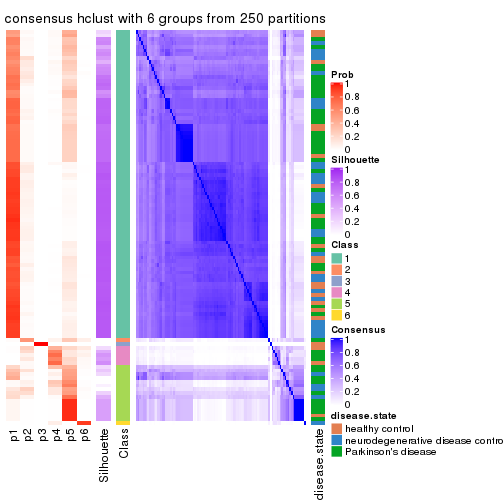
Heatmaps for the membership of samples in all partitions to see how consistent they are:
membership_heatmap(res, k = 2)
membership_heatmap(res, k = 3)
membership_heatmap(res, k = 4)
membership_heatmap(res, k = 5)
membership_heatmap(res, k = 6)
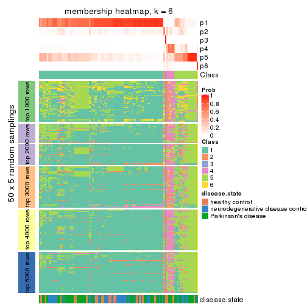
As soon as we have had the classes for columns, we can look for signatures which are significantly different between classes which can be candidate marks for certain classes. Following are the heatmaps for signatures.
Signature heatmaps where rows are scaled:
get_signatures(res, k = 2)

get_signatures(res, k = 3)
get_signatures(res, k = 4)

get_signatures(res, k = 5)
get_signatures(res, k = 6)
Signature heatmaps where rows are not scaled:
get_signatures(res, k = 2, scale_rows = FALSE)

get_signatures(res, k = 3, scale_rows = FALSE)
get_signatures(res, k = 4, scale_rows = FALSE)
get_signatures(res, k = 5, scale_rows = FALSE)
get_signatures(res, k = 6, scale_rows = FALSE)
Compare the overlap of signatures from different k:
compare_signatures(res)
get_signature() returns a data frame invisibly. TO get the list of signatures, the function
call should be assigned to a variable explicitly. In following code, if plot argument is set
to FALSE, no heatmap is plotted while only the differential analysis is performed.
# code only for demonstration
tb = get_signature(res, k = ..., plot = FALSE)
An example of the output of tb is:
#> which_row fdr mean_1 mean_2 scaled_mean_1 scaled_mean_2 km
#> 1 38 0.042760348 8.373488 9.131774 -0.5533452 0.5164555 1
#> 2 40 0.018707592 7.106213 8.469186 -0.6173731 0.5762149 1
#> 3 55 0.019134737 10.221463 11.207825 -0.6159697 0.5749050 1
#> 4 59 0.006059896 5.921854 7.869574 -0.6899429 0.6439467 1
#> 5 60 0.018055526 8.928898 10.211722 -0.6204761 0.5791110 1
#> 6 98 0.009384629 15.714769 14.887706 0.6635654 -0.6193277 2
...
The columns in tb are:
which_row: row indices corresponding to the input matrix.fdr: FDR for the differential test. mean_x: The mean value in group x.scaled_mean_x: The mean value in group x after rows are scaled.km: Row groups if k-means clustering is applied to rows.UMAP plot which shows how samples are separated.
dimension_reduction(res, k = 2, method = "UMAP")
dimension_reduction(res, k = 3, method = "UMAP")
dimension_reduction(res, k = 4, method = "UMAP")
dimension_reduction(res, k = 5, method = "UMAP")
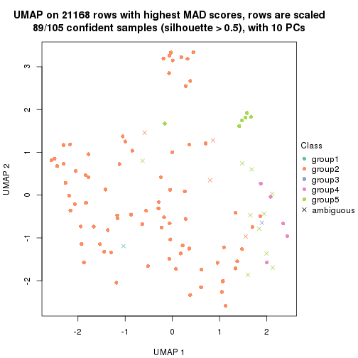
dimension_reduction(res, k = 6, method = "UMAP")
Following heatmap shows how subgroups are split when increasing k:
collect_classes(res)

Test correlation between subgroups and known annotations. If the known annotation is numeric, one-way ANOVA test is applied, and if the known annotation is discrete, chi-squared contingency table test is applied.
test_to_known_factors(res)
#> n disease.state(p) k
#> MAD:hclust 104 NA 2
#> MAD:hclust 92 0.433 3
#> MAD:hclust 92 0.349 4
#> MAD:hclust 89 0.144 5
#> MAD:hclust 80 0.438 6
If matrix rows can be associated to genes, consider to use functional_enrichment(res,
...) to perform function enrichment for the signature genes. See this vignette for more detailed explanations.
The object with results only for a single top-value method and a single partition method can be extracted as:
res = res_list["MAD", "kmeans"]
# you can also extract it by
# res = res_list["MAD:kmeans"]
A summary of res and all the functions that can be applied to it:
res
#> A 'ConsensusPartition' object with k = 2, 3, 4, 5, 6.
#> On a matrix with 21168 rows and 105 columns.
#> Top rows (1000, 2000, 3000, 4000, 5000) are extracted by 'MAD' method.
#> Subgroups are detected by 'kmeans' method.
#> Performed in total 1250 partitions by row resampling.
#> Best k for subgroups seems to be 3.
#>
#> Following methods can be applied to this 'ConsensusPartition' object:
#> [1] "cola_report" "collect_classes" "collect_plots"
#> [4] "collect_stats" "colnames" "compare_signatures"
#> [7] "consensus_heatmap" "dimension_reduction" "functional_enrichment"
#> [10] "get_anno_col" "get_anno" "get_classes"
#> [13] "get_consensus" "get_matrix" "get_membership"
#> [16] "get_param" "get_signatures" "get_stats"
#> [19] "is_best_k" "is_stable_k" "membership_heatmap"
#> [22] "ncol" "nrow" "plot_ecdf"
#> [25] "rownames" "select_partition_number" "show"
#> [28] "suggest_best_k" "test_to_known_factors"
collect_plots() function collects all the plots made from res for all k (number of partitions)
into one single page to provide an easy and fast comparison between different k.
collect_plots(res)
The plots are:
k and the heatmap of
predicted classes for each k.k.k.k.All the plots in panels can be made by individual functions and they are plotted later in this section.
select_partition_number() produces several plots showing different
statistics for choosing “optimized” k. There are following statistics:
k;k, the area increased is defined as \(A_k - A_{k-1}\).The detailed explanations of these statistics can be found in the cola vignette.
Generally speaking, lower PAC score, higher mean silhouette score or higher
concordance corresponds to better partition. Rand index and Jaccard index
measure how similar the current partition is compared to partition with k-1.
If they are too similar, we won't accept k is better than k-1.
select_partition_number(res)
The numeric values for all these statistics can be obtained by get_stats().
get_stats(res)
#> k 1-PAC mean_silhouette concordance area_increased Rand Jaccard
#> 2 2 0.414 0.796 0.870 0.4745 0.515 0.515
#> 3 3 0.679 0.820 0.903 0.3018 0.687 0.478
#> 4 4 0.562 0.579 0.760 0.1332 0.791 0.506
#> 5 5 0.582 0.530 0.774 0.0719 0.879 0.629
#> 6 6 0.616 0.522 0.719 0.0496 0.892 0.647
suggest_best_k() suggests the best \(k\) based on these statistics. The rules are as follows:
suggest_best_k(res)
#> [1] 3
Following shows the table of the partitions (You need to click the show/hide
code output link to see it). The membership matrix (columns with name p*)
is inferred by
clue::cl_consensus()
function with the SE method. Basically the value in the membership matrix
represents the probability to belong to a certain group. The finall class
label for an item is determined with the group with highest probability it
belongs to.
In get_classes() function, the entropy is calculated from the membership
matrix and the silhouette score is calculated from the consensus matrix.
cbind(get_classes(res, k = 2), get_membership(res, k = 2))
#> class entropy silhouette p1 p2
#> GSM153405 1 0.2948 0.8222 0.948 0.052
#> GSM153406 2 0.6048 0.8112 0.148 0.852
#> GSM153419 1 0.2948 0.8222 0.948 0.052
#> GSM153423 2 0.3584 0.8647 0.068 0.932
#> GSM153425 1 0.2948 0.8222 0.948 0.052
#> GSM153427 2 0.4022 0.8588 0.080 0.920
#> GSM153428 1 0.5059 0.8440 0.888 0.112
#> GSM153429 2 0.3431 0.8592 0.064 0.936
#> GSM153433 1 0.5946 0.8808 0.856 0.144
#> GSM153444 2 0.3879 0.8611 0.076 0.924
#> GSM153448 2 0.2948 0.8723 0.052 0.948
#> GSM153451 2 0.3584 0.8647 0.068 0.932
#> GSM153452 1 0.9815 0.2772 0.580 0.420
#> GSM153477 2 0.2236 0.8656 0.036 0.964
#> GSM153479 2 0.3879 0.8514 0.076 0.924
#> GSM153484 2 0.1184 0.8762 0.016 0.984
#> GSM153488 1 0.9661 0.5136 0.608 0.392
#> GSM153496 1 0.5842 0.8821 0.860 0.140
#> GSM153497 2 0.0672 0.8777 0.008 0.992
#> GSM153500 1 0.5842 0.8821 0.860 0.140
#> GSM153503 1 0.5842 0.8821 0.860 0.140
#> GSM153508 2 0.9963 -0.0530 0.464 0.536
#> GSM153409 2 0.4022 0.8588 0.080 0.920
#> GSM153426 2 0.3879 0.8611 0.076 0.924
#> GSM153431 2 0.9170 0.5716 0.332 0.668
#> GSM153438 2 0.3584 0.8649 0.068 0.932
#> GSM153440 1 0.4161 0.8370 0.916 0.084
#> GSM153447 1 0.3274 0.8582 0.940 0.060
#> GSM153450 2 0.3879 0.8611 0.076 0.924
#> GSM153456 2 0.3733 0.8629 0.072 0.928
#> GSM153457 2 0.3584 0.8647 0.068 0.932
#> GSM153458 2 0.3879 0.8611 0.076 0.924
#> GSM153459 2 0.3879 0.8611 0.076 0.924
#> GSM153460 2 0.3879 0.8611 0.076 0.924
#> GSM153461 2 0.4161 0.8586 0.084 0.916
#> GSM153463 1 0.5629 0.8811 0.868 0.132
#> GSM153464 2 0.0376 0.8773 0.004 0.996
#> GSM153466 2 0.4562 0.8317 0.096 0.904
#> GSM153467 2 0.1184 0.8743 0.016 0.984
#> GSM153468 2 0.5737 0.7969 0.136 0.864
#> GSM153469 2 0.2236 0.8659 0.036 0.964
#> GSM153470 2 0.1184 0.8742 0.016 0.984
#> GSM153471 2 0.2236 0.8656 0.036 0.964
#> GSM153472 1 0.6048 0.8783 0.852 0.148
#> GSM153473 1 0.5842 0.8821 0.860 0.140
#> GSM153474 1 0.5842 0.8821 0.860 0.140
#> GSM153475 2 0.3733 0.8535 0.072 0.928
#> GSM153476 2 0.2043 0.8737 0.032 0.968
#> GSM153478 1 0.6438 0.8762 0.836 0.164
#> GSM153480 2 0.0000 0.8777 0.000 1.000
#> GSM153486 2 0.0376 0.8773 0.004 0.996
#> GSM153487 2 0.6973 0.7302 0.188 0.812
#> GSM153499 2 0.3431 0.8520 0.064 0.936
#> GSM153504 1 0.5946 0.8805 0.856 0.144
#> GSM153507 2 0.9661 0.2472 0.392 0.608
#> GSM153404 2 0.9129 0.6229 0.328 0.672
#> GSM153407 1 0.4431 0.8396 0.908 0.092
#> GSM153408 2 0.9358 0.5876 0.352 0.648
#> GSM153410 2 0.5946 0.8125 0.144 0.856
#> GSM153411 1 0.2603 0.8240 0.956 0.044
#> GSM153412 2 0.5946 0.8125 0.144 0.856
#> GSM153413 1 0.6887 0.7060 0.816 0.184
#> GSM153414 2 0.7602 0.7501 0.220 0.780
#> GSM153415 2 0.9170 0.6246 0.332 0.668
#> GSM153416 2 0.3584 0.8647 0.068 0.932
#> GSM153417 1 0.2778 0.8231 0.952 0.048
#> GSM153418 2 0.6438 0.8033 0.164 0.836
#> GSM153420 1 0.2948 0.8222 0.948 0.052
#> GSM153421 1 0.2948 0.8222 0.948 0.052
#> GSM153422 1 0.2948 0.8222 0.948 0.052
#> GSM153424 1 0.5059 0.8440 0.888 0.112
#> GSM153430 1 0.5946 0.8816 0.856 0.144
#> GSM153432 2 0.0938 0.8755 0.012 0.988
#> GSM153434 1 0.7376 0.8543 0.792 0.208
#> GSM153435 2 0.0376 0.8773 0.004 0.996
#> GSM153436 1 0.5629 0.8455 0.868 0.132
#> GSM153437 2 0.1184 0.8770 0.016 0.984
#> GSM153439 2 0.1184 0.8762 0.016 0.984
#> GSM153441 2 0.4022 0.8637 0.080 0.920
#> GSM153442 2 0.8555 0.5539 0.280 0.720
#> GSM153443 2 0.0376 0.8773 0.004 0.996
#> GSM153445 2 0.0376 0.8773 0.004 0.996
#> GSM153446 2 0.0938 0.8773 0.012 0.988
#> GSM153449 1 0.6343 0.8723 0.840 0.160
#> GSM153453 1 0.6623 0.8626 0.828 0.172
#> GSM153454 1 0.5842 0.8821 0.860 0.140
#> GSM153455 2 0.9896 0.0384 0.440 0.560
#> GSM153462 2 0.0000 0.8777 0.000 1.000
#> GSM153465 2 0.0672 0.8778 0.008 0.992
#> GSM153481 2 0.0376 0.8773 0.004 0.996
#> GSM153482 1 0.9993 0.2316 0.516 0.484
#> GSM153483 2 0.2423 0.8634 0.040 0.960
#> GSM153485 2 0.6887 0.7295 0.184 0.816
#> GSM153489 1 0.9996 0.2080 0.512 0.488
#> GSM153490 1 0.5842 0.8821 0.860 0.140
#> GSM153491 1 0.6343 0.8714 0.840 0.160
#> GSM153492 1 0.5842 0.8821 0.860 0.140
#> GSM153493 1 0.5842 0.8821 0.860 0.140
#> GSM153494 2 0.3274 0.8539 0.060 0.940
#> GSM153495 1 0.5842 0.8821 0.860 0.140
#> GSM153498 2 0.9000 0.4937 0.316 0.684
#> GSM153501 1 0.5842 0.8821 0.860 0.140
#> GSM153502 1 0.5842 0.8821 0.860 0.140
#> GSM153505 1 0.5842 0.8821 0.860 0.140
#> GSM153506 2 0.2236 0.8656 0.036 0.964
cbind(get_classes(res, k = 3), get_membership(res, k = 3))
#> class entropy silhouette p1 p2 p3
#> GSM153405 3 0.2496 0.8923 0.068 0.004 0.928
#> GSM153406 3 0.1989 0.8896 0.004 0.048 0.948
#> GSM153419 3 0.2496 0.8923 0.068 0.004 0.928
#> GSM153423 2 0.1289 0.9043 0.000 0.968 0.032
#> GSM153425 3 0.2945 0.8895 0.088 0.004 0.908
#> GSM153427 2 0.1411 0.9029 0.000 0.964 0.036
#> GSM153428 2 0.7634 0.1033 0.432 0.524 0.044
#> GSM153429 2 0.6148 0.6715 0.244 0.728 0.028
#> GSM153433 1 0.0661 0.8655 0.988 0.004 0.008
#> GSM153444 2 0.1289 0.9043 0.000 0.968 0.032
#> GSM153448 2 0.5921 0.6970 0.212 0.756 0.032
#> GSM153451 2 0.1289 0.9043 0.000 0.968 0.032
#> GSM153452 2 0.4526 0.8353 0.104 0.856 0.040
#> GSM153477 2 0.3009 0.8903 0.052 0.920 0.028
#> GSM153479 2 0.5939 0.7012 0.224 0.748 0.028
#> GSM153484 2 0.3406 0.8795 0.068 0.904 0.028
#> GSM153488 1 0.3406 0.8489 0.904 0.068 0.028
#> GSM153496 1 0.0829 0.8652 0.984 0.004 0.012
#> GSM153497 2 0.0661 0.9081 0.004 0.988 0.008
#> GSM153500 1 0.0424 0.8651 0.992 0.000 0.008
#> GSM153503 1 0.0424 0.8651 0.992 0.000 0.008
#> GSM153508 1 0.3434 0.8473 0.904 0.032 0.064
#> GSM153409 2 0.1289 0.9043 0.000 0.968 0.032
#> GSM153426 2 0.1289 0.9043 0.000 0.968 0.032
#> GSM153431 2 0.3583 0.8796 0.056 0.900 0.044
#> GSM153438 2 0.1289 0.9043 0.000 0.968 0.032
#> GSM153440 3 0.7901 0.2891 0.400 0.060 0.540
#> GSM153447 1 0.0829 0.8594 0.984 0.004 0.012
#> GSM153450 2 0.1289 0.9043 0.000 0.968 0.032
#> GSM153456 2 0.1289 0.9043 0.000 0.968 0.032
#> GSM153457 2 0.1289 0.9043 0.000 0.968 0.032
#> GSM153458 2 0.1289 0.9043 0.000 0.968 0.032
#> GSM153459 2 0.1289 0.9043 0.000 0.968 0.032
#> GSM153460 2 0.1289 0.9043 0.000 0.968 0.032
#> GSM153461 2 0.1289 0.9043 0.000 0.968 0.032
#> GSM153463 1 0.0424 0.8651 0.992 0.000 0.008
#> GSM153464 2 0.0661 0.9089 0.004 0.988 0.008
#> GSM153466 1 0.7278 0.1629 0.516 0.456 0.028
#> GSM153467 2 0.1751 0.9048 0.012 0.960 0.028
#> GSM153468 1 0.5508 0.7588 0.784 0.188 0.028
#> GSM153469 2 0.4874 0.8082 0.144 0.828 0.028
#> GSM153470 2 0.2318 0.9004 0.028 0.944 0.028
#> GSM153471 2 0.2313 0.9010 0.032 0.944 0.024
#> GSM153472 1 0.1919 0.8619 0.956 0.020 0.024
#> GSM153473 1 0.0424 0.8651 0.992 0.000 0.008
#> GSM153474 1 0.0592 0.8645 0.988 0.000 0.012
#> GSM153475 2 0.6337 0.6312 0.264 0.708 0.028
#> GSM153476 2 0.4249 0.8455 0.108 0.864 0.028
#> GSM153478 1 0.2845 0.8556 0.920 0.068 0.012
#> GSM153480 2 0.0829 0.9091 0.004 0.984 0.012
#> GSM153486 2 0.0829 0.9096 0.012 0.984 0.004
#> GSM153487 1 0.4324 0.8247 0.860 0.112 0.028
#> GSM153499 1 0.4810 0.8041 0.832 0.140 0.028
#> GSM153504 1 0.0424 0.8651 0.992 0.000 0.008
#> GSM153507 1 0.3590 0.8462 0.896 0.076 0.028
#> GSM153404 3 0.1765 0.8908 0.004 0.040 0.956
#> GSM153407 3 0.8316 0.1827 0.080 0.424 0.496
#> GSM153408 3 0.1878 0.8911 0.004 0.044 0.952
#> GSM153410 3 0.1989 0.8896 0.004 0.048 0.948
#> GSM153411 3 0.3030 0.8878 0.092 0.004 0.904
#> GSM153412 3 0.1989 0.8896 0.004 0.048 0.948
#> GSM153413 3 0.2116 0.8934 0.040 0.012 0.948
#> GSM153414 2 0.1877 0.8997 0.012 0.956 0.032
#> GSM153415 3 0.1878 0.8911 0.004 0.044 0.952
#> GSM153416 2 0.1289 0.9043 0.000 0.968 0.032
#> GSM153417 3 0.3030 0.8878 0.092 0.004 0.904
#> GSM153418 3 0.1878 0.8911 0.004 0.044 0.952
#> GSM153420 3 0.2945 0.8895 0.088 0.004 0.908
#> GSM153421 3 0.3030 0.8878 0.092 0.004 0.904
#> GSM153422 3 0.3030 0.8878 0.092 0.004 0.904
#> GSM153424 1 0.6955 0.0364 0.492 0.492 0.016
#> GSM153430 1 0.0829 0.8670 0.984 0.012 0.004
#> GSM153432 2 0.1751 0.9048 0.012 0.960 0.028
#> GSM153434 1 0.5723 0.7055 0.744 0.240 0.016
#> GSM153435 2 0.1482 0.9067 0.012 0.968 0.020
#> GSM153436 1 0.6715 0.5463 0.660 0.312 0.028
#> GSM153437 2 0.1129 0.9072 0.004 0.976 0.020
#> GSM153439 2 0.4324 0.8417 0.112 0.860 0.028
#> GSM153441 2 0.3415 0.8737 0.080 0.900 0.020
#> GSM153442 1 0.7289 0.1435 0.504 0.468 0.028
#> GSM153443 2 0.1482 0.9065 0.012 0.968 0.020
#> GSM153445 2 0.1015 0.9083 0.012 0.980 0.008
#> GSM153446 2 0.0829 0.9091 0.004 0.984 0.012
#> GSM153449 1 0.2229 0.8636 0.944 0.044 0.012
#> GSM153453 1 0.1905 0.8651 0.956 0.028 0.016
#> GSM153454 1 0.0424 0.8651 0.992 0.000 0.008
#> GSM153455 1 0.5939 0.7189 0.748 0.224 0.028
#> GSM153462 2 0.0848 0.9085 0.008 0.984 0.008
#> GSM153465 2 0.1751 0.9048 0.012 0.960 0.028
#> GSM153481 2 0.1751 0.9048 0.012 0.960 0.028
#> GSM153482 1 0.3310 0.8514 0.908 0.064 0.028
#> GSM153483 2 0.4469 0.8340 0.120 0.852 0.028
#> GSM153485 1 0.5660 0.7550 0.772 0.200 0.028
#> GSM153489 1 0.3678 0.8441 0.892 0.080 0.028
#> GSM153490 1 0.0424 0.8651 0.992 0.000 0.008
#> GSM153491 1 0.1774 0.8633 0.960 0.024 0.016
#> GSM153492 1 0.0424 0.8651 0.992 0.000 0.008
#> GSM153493 1 0.0424 0.8651 0.992 0.000 0.008
#> GSM153494 2 0.6187 0.6632 0.248 0.724 0.028
#> GSM153495 1 0.0424 0.8651 0.992 0.000 0.008
#> GSM153498 1 0.4324 0.8261 0.860 0.112 0.028
#> GSM153501 1 0.0424 0.8651 0.992 0.000 0.008
#> GSM153502 1 0.0424 0.8651 0.992 0.000 0.008
#> GSM153505 1 0.0424 0.8651 0.992 0.000 0.008
#> GSM153506 2 0.2056 0.9039 0.024 0.952 0.024
cbind(get_classes(res, k = 4), get_membership(res, k = 4))
#> class entropy silhouette p1 p2 p3 p4
#> GSM153405 3 0.1191 0.93398 0.004 0.024 0.968 0.004
#> GSM153406 3 0.1488 0.93389 0.000 0.032 0.956 0.012
#> GSM153419 3 0.0524 0.93245 0.004 0.008 0.988 0.000
#> GSM153423 2 0.0000 0.67700 0.000 1.000 0.000 0.000
#> GSM153425 3 0.1722 0.92458 0.008 0.000 0.944 0.048
#> GSM153427 2 0.1452 0.65983 0.000 0.956 0.008 0.036
#> GSM153428 2 0.7986 0.06818 0.180 0.496 0.024 0.300
#> GSM153429 4 0.5417 0.61751 0.056 0.240 0.000 0.704
#> GSM153433 1 0.4790 0.52465 0.620 0.000 0.000 0.380
#> GSM153444 2 0.0188 0.67635 0.000 0.996 0.000 0.004
#> GSM153448 4 0.6296 0.37003 0.064 0.388 0.000 0.548
#> GSM153451 2 0.0188 0.67701 0.000 0.996 0.000 0.004
#> GSM153452 2 0.5769 0.32422 0.036 0.668 0.012 0.284
#> GSM153477 2 0.5105 0.26377 0.004 0.564 0.000 0.432
#> GSM153479 4 0.5365 0.58178 0.044 0.264 0.000 0.692
#> GSM153484 4 0.4769 0.51865 0.008 0.308 0.000 0.684
#> GSM153488 4 0.4836 0.48377 0.320 0.008 0.000 0.672
#> GSM153496 1 0.4643 0.55436 0.656 0.000 0.000 0.344
#> GSM153497 2 0.2149 0.65283 0.000 0.912 0.000 0.088
#> GSM153500 1 0.0188 0.78865 0.996 0.000 0.000 0.004
#> GSM153503 1 0.0336 0.78798 0.992 0.000 0.000 0.008
#> GSM153508 1 0.5150 0.43207 0.596 0.000 0.008 0.396
#> GSM153409 2 0.1151 0.66805 0.000 0.968 0.008 0.024
#> GSM153426 2 0.1151 0.66805 0.000 0.968 0.008 0.024
#> GSM153431 2 0.5238 0.51922 0.040 0.752 0.016 0.192
#> GSM153438 2 0.0188 0.67701 0.000 0.996 0.000 0.004
#> GSM153440 3 0.9684 0.10365 0.160 0.240 0.368 0.232
#> GSM153447 1 0.4486 0.72919 0.784 0.008 0.020 0.188
#> GSM153450 2 0.0707 0.67207 0.000 0.980 0.000 0.020
#> GSM153456 2 0.0188 0.67701 0.000 0.996 0.000 0.004
#> GSM153457 2 0.0188 0.67701 0.000 0.996 0.000 0.004
#> GSM153458 2 0.0000 0.67700 0.000 1.000 0.000 0.000
#> GSM153459 2 0.0000 0.67700 0.000 1.000 0.000 0.000
#> GSM153460 2 0.0000 0.67700 0.000 1.000 0.000 0.000
#> GSM153461 2 0.2156 0.64987 0.004 0.928 0.008 0.060
#> GSM153463 1 0.2081 0.78483 0.916 0.000 0.000 0.084
#> GSM153464 2 0.4356 0.51378 0.000 0.708 0.000 0.292
#> GSM153466 4 0.5604 0.67222 0.116 0.160 0.000 0.724
#> GSM153467 4 0.4898 0.27669 0.000 0.416 0.000 0.584
#> GSM153468 4 0.5632 0.65553 0.196 0.092 0.000 0.712
#> GSM153469 4 0.5203 0.44016 0.016 0.348 0.000 0.636
#> GSM153470 2 0.4933 0.26561 0.000 0.568 0.000 0.432
#> GSM153471 2 0.4925 0.28083 0.000 0.572 0.000 0.428
#> GSM153472 1 0.4961 0.31450 0.552 0.000 0.000 0.448
#> GSM153473 1 0.3726 0.71547 0.788 0.000 0.000 0.212
#> GSM153474 1 0.0469 0.78494 0.988 0.000 0.000 0.012
#> GSM153475 4 0.5052 0.60849 0.036 0.244 0.000 0.720
#> GSM153476 4 0.5468 0.37284 0.012 0.364 0.008 0.616
#> GSM153478 4 0.5329 0.02714 0.420 0.012 0.000 0.568
#> GSM153480 2 0.4356 0.51403 0.000 0.708 0.000 0.292
#> GSM153486 2 0.4406 0.50858 0.000 0.700 0.000 0.300
#> GSM153487 4 0.4767 0.57802 0.256 0.020 0.000 0.724
#> GSM153499 4 0.5256 0.60048 0.260 0.040 0.000 0.700
#> GSM153504 1 0.1867 0.79330 0.928 0.000 0.000 0.072
#> GSM153507 4 0.4663 0.55557 0.272 0.012 0.000 0.716
#> GSM153404 3 0.1388 0.93568 0.000 0.028 0.960 0.012
#> GSM153407 2 0.8261 0.19396 0.032 0.488 0.240 0.240
#> GSM153408 3 0.1388 0.93568 0.000 0.028 0.960 0.012
#> GSM153410 3 0.1488 0.93389 0.000 0.032 0.956 0.012
#> GSM153411 3 0.1722 0.92458 0.008 0.000 0.944 0.048
#> GSM153412 3 0.1488 0.93389 0.000 0.032 0.956 0.012
#> GSM153413 3 0.1388 0.93568 0.000 0.028 0.960 0.012
#> GSM153414 2 0.3916 0.55434 0.008 0.816 0.008 0.168
#> GSM153415 3 0.1388 0.93568 0.000 0.028 0.960 0.012
#> GSM153416 2 0.0336 0.67558 0.000 0.992 0.000 0.008
#> GSM153417 3 0.1722 0.92458 0.008 0.000 0.944 0.048
#> GSM153418 3 0.1388 0.93568 0.000 0.028 0.960 0.012
#> GSM153420 3 0.1722 0.92458 0.008 0.000 0.944 0.048
#> GSM153421 3 0.1722 0.92458 0.008 0.000 0.944 0.048
#> GSM153422 3 0.1722 0.92458 0.008 0.000 0.944 0.048
#> GSM153424 2 0.8068 0.00885 0.220 0.460 0.016 0.304
#> GSM153430 1 0.5182 0.55266 0.632 0.008 0.004 0.356
#> GSM153432 4 0.4994 0.00893 0.000 0.480 0.000 0.520
#> GSM153434 4 0.5565 0.57166 0.232 0.068 0.000 0.700
#> GSM153435 2 0.4697 0.42512 0.000 0.644 0.000 0.356
#> GSM153436 2 0.7650 -0.17568 0.212 0.424 0.000 0.364
#> GSM153437 2 0.1867 0.65990 0.000 0.928 0.000 0.072
#> GSM153439 4 0.4914 0.50962 0.012 0.312 0.000 0.676
#> GSM153441 4 0.5558 0.26047 0.020 0.432 0.000 0.548
#> GSM153442 4 0.5528 0.67415 0.124 0.144 0.000 0.732
#> GSM153443 2 0.4605 0.45639 0.000 0.664 0.000 0.336
#> GSM153445 2 0.4477 0.48923 0.000 0.688 0.000 0.312
#> GSM153446 2 0.4193 0.53544 0.000 0.732 0.000 0.268
#> GSM153449 4 0.5167 -0.16294 0.488 0.004 0.000 0.508
#> GSM153453 1 0.4941 0.34981 0.564 0.000 0.000 0.436
#> GSM153454 1 0.0188 0.78624 0.996 0.000 0.000 0.004
#> GSM153455 4 0.5628 0.63982 0.216 0.080 0.000 0.704
#> GSM153462 2 0.4382 0.50987 0.000 0.704 0.000 0.296
#> GSM153465 2 0.4761 0.39790 0.000 0.628 0.000 0.372
#> GSM153481 2 0.4955 0.23191 0.000 0.556 0.000 0.444
#> GSM153482 4 0.4837 0.41107 0.348 0.004 0.000 0.648
#> GSM153483 2 0.5600 0.07872 0.020 0.512 0.000 0.468
#> GSM153485 4 0.5363 0.63770 0.216 0.064 0.000 0.720
#> GSM153489 4 0.5143 0.37214 0.360 0.012 0.000 0.628
#> GSM153490 1 0.2345 0.78768 0.900 0.000 0.000 0.100
#> GSM153491 1 0.4948 0.33318 0.560 0.000 0.000 0.440
#> GSM153492 1 0.2469 0.78173 0.892 0.000 0.000 0.108
#> GSM153493 1 0.2011 0.79446 0.920 0.000 0.000 0.080
#> GSM153494 4 0.5941 0.57302 0.072 0.276 0.000 0.652
#> GSM153495 1 0.1022 0.79199 0.968 0.000 0.000 0.032
#> GSM153498 4 0.5137 0.53773 0.296 0.024 0.000 0.680
#> GSM153501 1 0.0188 0.78865 0.996 0.000 0.000 0.004
#> GSM153502 1 0.2408 0.78763 0.896 0.000 0.000 0.104
#> GSM153505 1 0.0188 0.78865 0.996 0.000 0.000 0.004
#> GSM153506 2 0.4925 0.28571 0.000 0.572 0.000 0.428
cbind(get_classes(res, k = 5), get_membership(res, k = 5))
#> class entropy silhouette p1 p2 p3 p4 p5
#> GSM153405 3 0.0960 0.90916 0.004 0.008 0.972 0.000 0.016
#> GSM153406 3 0.0798 0.91065 0.008 0.016 0.976 0.000 0.000
#> GSM153419 3 0.0324 0.91071 0.004 0.004 0.992 0.000 0.000
#> GSM153423 2 0.0000 0.67617 0.000 1.000 0.000 0.000 0.000
#> GSM153425 3 0.3003 0.85727 0.000 0.000 0.812 0.000 0.188
#> GSM153427 2 0.1408 0.64425 0.000 0.948 0.008 0.000 0.044
#> GSM153428 2 0.7927 -0.31769 0.228 0.388 0.012 0.052 0.320
#> GSM153429 1 0.2158 0.68593 0.920 0.052 0.000 0.008 0.020
#> GSM153433 4 0.6357 0.33735 0.288 0.000 0.000 0.512 0.200
#> GSM153444 2 0.0000 0.67617 0.000 1.000 0.000 0.000 0.000
#> GSM153448 1 0.4608 0.55259 0.744 0.188 0.000 0.008 0.060
#> GSM153451 2 0.0000 0.67617 0.000 1.000 0.000 0.000 0.000
#> GSM153452 2 0.5766 0.23381 0.196 0.656 0.008 0.004 0.136
#> GSM153477 1 0.5654 0.25055 0.536 0.380 0.000 0.000 0.084
#> GSM153479 1 0.2955 0.67442 0.876 0.060 0.000 0.004 0.060
#> GSM153484 1 0.2676 0.68202 0.884 0.080 0.000 0.000 0.036
#> GSM153488 1 0.3386 0.59665 0.832 0.000 0.000 0.128 0.040
#> GSM153496 4 0.5223 0.25090 0.444 0.000 0.000 0.512 0.044
#> GSM153497 2 0.3037 0.62299 0.100 0.860 0.000 0.000 0.040
#> GSM153500 4 0.2873 0.62206 0.020 0.000 0.000 0.860 0.120
#> GSM153503 4 0.2561 0.62897 0.020 0.000 0.000 0.884 0.096
#> GSM153508 5 0.5922 -0.23596 0.108 0.000 0.000 0.388 0.504
#> GSM153409 2 0.0510 0.66894 0.000 0.984 0.000 0.000 0.016
#> GSM153426 2 0.0609 0.67033 0.000 0.980 0.000 0.000 0.020
#> GSM153431 2 0.6908 0.07676 0.132 0.540 0.012 0.028 0.288
#> GSM153438 2 0.0000 0.67617 0.000 1.000 0.000 0.000 0.000
#> GSM153440 5 0.9207 0.12962 0.208 0.252 0.176 0.044 0.320
#> GSM153447 4 0.5318 0.38489 0.052 0.000 0.008 0.616 0.324
#> GSM153450 2 0.0451 0.67181 0.004 0.988 0.000 0.000 0.008
#> GSM153456 2 0.0000 0.67617 0.000 1.000 0.000 0.000 0.000
#> GSM153457 2 0.0000 0.67617 0.000 1.000 0.000 0.000 0.000
#> GSM153458 2 0.0000 0.67617 0.000 1.000 0.000 0.000 0.000
#> GSM153459 2 0.0000 0.67617 0.000 1.000 0.000 0.000 0.000
#> GSM153460 2 0.0000 0.67617 0.000 1.000 0.000 0.000 0.000
#> GSM153461 2 0.4255 0.45701 0.032 0.760 0.004 0.004 0.200
#> GSM153463 4 0.4605 0.52240 0.040 0.000 0.004 0.708 0.248
#> GSM153464 2 0.4907 0.43139 0.280 0.664 0.000 0.000 0.056
#> GSM153466 1 0.1314 0.67950 0.960 0.016 0.000 0.012 0.012
#> GSM153467 1 0.3847 0.63751 0.784 0.180 0.000 0.000 0.036
#> GSM153468 1 0.1569 0.67470 0.948 0.008 0.000 0.032 0.012
#> GSM153469 1 0.3339 0.66681 0.840 0.112 0.000 0.000 0.048
#> GSM153470 1 0.5274 0.36362 0.600 0.336 0.000 0.000 0.064
#> GSM153471 1 0.5708 0.23028 0.528 0.384 0.000 0.000 0.088
#> GSM153472 1 0.4950 0.19171 0.612 0.000 0.000 0.348 0.040
#> GSM153473 4 0.4786 0.60223 0.188 0.000 0.000 0.720 0.092
#> GSM153474 4 0.2773 0.62028 0.020 0.000 0.000 0.868 0.112
#> GSM153475 1 0.1990 0.68604 0.928 0.040 0.000 0.004 0.028
#> GSM153476 1 0.3572 0.66188 0.832 0.120 0.008 0.000 0.040
#> GSM153478 1 0.6030 0.21727 0.580 0.000 0.000 0.196 0.224
#> GSM153480 2 0.4885 0.43783 0.276 0.668 0.000 0.000 0.056
#> GSM153486 2 0.5204 0.27412 0.368 0.580 0.000 0.000 0.052
#> GSM153487 1 0.2580 0.66043 0.892 0.000 0.000 0.044 0.064
#> GSM153499 1 0.2592 0.66540 0.892 0.000 0.000 0.052 0.056
#> GSM153504 4 0.3355 0.66181 0.132 0.000 0.000 0.832 0.036
#> GSM153507 1 0.2077 0.67044 0.920 0.000 0.000 0.040 0.040
#> GSM153404 3 0.0693 0.91269 0.008 0.012 0.980 0.000 0.000
#> GSM153407 2 0.8181 -0.32299 0.172 0.400 0.100 0.012 0.316
#> GSM153408 3 0.0693 0.91269 0.008 0.012 0.980 0.000 0.000
#> GSM153410 3 0.0798 0.91065 0.008 0.016 0.976 0.000 0.000
#> GSM153411 3 0.3003 0.85727 0.000 0.000 0.812 0.000 0.188
#> GSM153412 3 0.0798 0.91065 0.008 0.016 0.976 0.000 0.000
#> GSM153413 3 0.0693 0.91269 0.008 0.012 0.980 0.000 0.000
#> GSM153414 2 0.5570 0.32646 0.112 0.684 0.008 0.008 0.188
#> GSM153415 3 0.0693 0.91269 0.008 0.012 0.980 0.000 0.000
#> GSM153416 2 0.0162 0.67465 0.000 0.996 0.000 0.000 0.004
#> GSM153417 3 0.3003 0.85727 0.000 0.000 0.812 0.000 0.188
#> GSM153418 3 0.0693 0.91269 0.008 0.012 0.980 0.000 0.000
#> GSM153420 3 0.3003 0.85727 0.000 0.000 0.812 0.000 0.188
#> GSM153421 3 0.3003 0.85727 0.000 0.000 0.812 0.000 0.188
#> GSM153422 3 0.3003 0.85727 0.000 0.000 0.812 0.000 0.188
#> GSM153424 2 0.8420 -0.39091 0.216 0.336 0.008 0.120 0.320
#> GSM153430 4 0.6709 0.12200 0.352 0.000 0.000 0.400 0.248
#> GSM153432 1 0.4305 0.59440 0.748 0.200 0.000 0.000 0.052
#> GSM153434 1 0.5106 0.40996 0.692 0.004 0.000 0.088 0.216
#> GSM153435 2 0.5508 -0.02277 0.460 0.476 0.000 0.000 0.064
#> GSM153436 1 0.7488 -0.20324 0.440 0.324 0.000 0.064 0.172
#> GSM153437 2 0.2491 0.64108 0.068 0.896 0.000 0.000 0.036
#> GSM153439 1 0.2448 0.68005 0.892 0.088 0.000 0.000 0.020
#> GSM153441 1 0.4719 0.53936 0.696 0.248 0.000 0.000 0.056
#> GSM153442 1 0.2734 0.66655 0.888 0.028 0.000 0.008 0.076
#> GSM153443 2 0.5276 0.08404 0.436 0.516 0.000 0.000 0.048
#> GSM153445 2 0.5263 0.25585 0.368 0.576 0.000 0.000 0.056
#> GSM153446 2 0.4754 0.45828 0.264 0.684 0.000 0.000 0.052
#> GSM153449 1 0.4930 0.39696 0.684 0.000 0.000 0.244 0.072
#> GSM153453 1 0.4909 -0.00893 0.560 0.000 0.000 0.412 0.028
#> GSM153454 4 0.2012 0.65984 0.020 0.000 0.000 0.920 0.060
#> GSM153455 1 0.2804 0.67164 0.892 0.016 0.000 0.044 0.048
#> GSM153462 2 0.5188 0.34625 0.328 0.612 0.000 0.000 0.060
#> GSM153465 1 0.5520 0.31452 0.560 0.364 0.000 0.000 0.076
#> GSM153481 1 0.5320 0.15440 0.524 0.424 0.000 0.000 0.052
#> GSM153482 1 0.3825 0.57197 0.804 0.000 0.000 0.136 0.060
#> GSM153483 1 0.5136 0.48820 0.660 0.260 0.000 0.000 0.080
#> GSM153485 1 0.1911 0.67068 0.932 0.004 0.000 0.036 0.028
#> GSM153489 1 0.3882 0.55894 0.788 0.000 0.000 0.168 0.044
#> GSM153490 4 0.3061 0.66285 0.136 0.000 0.000 0.844 0.020
#> GSM153491 1 0.5213 0.03247 0.556 0.000 0.000 0.396 0.048
#> GSM153492 4 0.4073 0.66730 0.104 0.000 0.000 0.792 0.104
#> GSM153493 4 0.3289 0.66742 0.108 0.000 0.000 0.844 0.048
#> GSM153494 1 0.3011 0.68340 0.876 0.076 0.000 0.012 0.036
#> GSM153495 4 0.3002 0.65147 0.028 0.000 0.000 0.856 0.116
#> GSM153498 1 0.3454 0.63277 0.836 0.000 0.000 0.100 0.064
#> GSM153501 4 0.2561 0.62758 0.020 0.000 0.000 0.884 0.096
#> GSM153502 4 0.3681 0.64871 0.148 0.000 0.000 0.808 0.044
#> GSM153505 4 0.2669 0.62300 0.020 0.000 0.000 0.876 0.104
#> GSM153506 1 0.5654 0.24171 0.536 0.380 0.000 0.000 0.084
cbind(get_classes(res, k = 6), get_membership(res, k = 6))
#> class entropy silhouette p1 p2 p3 p4 p5 p6
#> GSM153405 3 0.0777 0.87426 0.000 0.024 0.972 0.000 0.000 0.004
#> GSM153406 3 0.0632 0.87509 0.000 0.024 0.976 0.000 0.000 0.000
#> GSM153419 3 0.0260 0.86801 0.000 0.008 0.992 0.000 0.000 0.000
#> GSM153423 2 0.0291 0.74945 0.004 0.992 0.000 0.000 0.000 0.004
#> GSM153425 3 0.4295 0.78142 0.000 0.000 0.728 0.000 0.160 0.112
#> GSM153427 2 0.2218 0.64525 0.000 0.884 0.012 0.000 0.000 0.104
#> GSM153428 6 0.6073 0.47066 0.084 0.356 0.012 0.012 0.016 0.520
#> GSM153429 1 0.2713 0.61822 0.880 0.016 0.000 0.004 0.024 0.076
#> GSM153433 6 0.6240 -0.10646 0.136 0.000 0.000 0.340 0.040 0.484
#> GSM153444 2 0.0363 0.74335 0.000 0.988 0.000 0.000 0.000 0.012
#> GSM153448 1 0.4974 0.46433 0.692 0.144 0.000 0.000 0.020 0.144
#> GSM153451 2 0.0260 0.74821 0.008 0.992 0.000 0.000 0.000 0.000
#> GSM153452 2 0.4856 0.26132 0.080 0.684 0.012 0.000 0.004 0.220
#> GSM153477 1 0.5549 0.49502 0.648 0.196 0.000 0.000 0.060 0.096
#> GSM153479 1 0.3448 0.60116 0.828 0.024 0.000 0.004 0.028 0.116
#> GSM153484 1 0.2467 0.62875 0.896 0.036 0.000 0.000 0.020 0.048
#> GSM153488 1 0.5320 0.43632 0.652 0.000 0.000 0.056 0.064 0.228
#> GSM153496 1 0.7495 -0.13207 0.304 0.000 0.000 0.272 0.132 0.292
#> GSM153497 2 0.4443 0.57794 0.176 0.732 0.000 0.000 0.016 0.076
#> GSM153500 4 0.2579 0.51377 0.000 0.000 0.000 0.872 0.088 0.040
#> GSM153503 4 0.1408 0.56018 0.000 0.000 0.000 0.944 0.036 0.020
#> GSM153508 5 0.4203 0.00000 0.016 0.000 0.000 0.288 0.680 0.016
#> GSM153409 2 0.1866 0.69162 0.000 0.908 0.000 0.000 0.008 0.084
#> GSM153426 2 0.2612 0.69852 0.008 0.868 0.000 0.000 0.016 0.108
#> GSM153431 6 0.5287 0.25880 0.028 0.444 0.008 0.004 0.020 0.496
#> GSM153438 2 0.0291 0.74945 0.004 0.992 0.000 0.000 0.000 0.004
#> GSM153440 6 0.6950 0.46031 0.080 0.252 0.100 0.012 0.020 0.536
#> GSM153447 6 0.5081 -0.02231 0.008 0.012 0.008 0.356 0.028 0.588
#> GSM153450 2 0.0717 0.74074 0.008 0.976 0.000 0.000 0.000 0.016
#> GSM153456 2 0.0146 0.74906 0.004 0.996 0.000 0.000 0.000 0.000
#> GSM153457 2 0.0260 0.74821 0.008 0.992 0.000 0.000 0.000 0.000
#> GSM153458 2 0.0291 0.74945 0.004 0.992 0.000 0.000 0.000 0.004
#> GSM153459 2 0.0291 0.74945 0.004 0.992 0.000 0.000 0.000 0.004
#> GSM153460 2 0.0291 0.74945 0.004 0.992 0.000 0.000 0.000 0.004
#> GSM153461 2 0.4319 0.24376 0.012 0.652 0.008 0.000 0.008 0.320
#> GSM153463 4 0.4701 0.24845 0.008 0.000 0.000 0.484 0.028 0.480
#> GSM153464 2 0.5521 0.17966 0.384 0.516 0.000 0.000 0.020 0.080
#> GSM153466 1 0.3070 0.60268 0.852 0.004 0.000 0.004 0.056 0.084
#> GSM153467 1 0.3069 0.61960 0.852 0.096 0.000 0.000 0.020 0.032
#> GSM153468 1 0.2742 0.60566 0.872 0.000 0.000 0.008 0.044 0.076
#> GSM153469 1 0.2587 0.61907 0.892 0.036 0.000 0.004 0.016 0.052
#> GSM153470 1 0.4716 0.51910 0.708 0.188 0.000 0.000 0.020 0.084
#> GSM153471 1 0.5386 0.47866 0.656 0.208 0.000 0.000 0.052 0.084
#> GSM153472 1 0.7185 0.17583 0.432 0.000 0.000 0.180 0.132 0.256
#> GSM153473 4 0.6458 0.47352 0.092 0.000 0.000 0.504 0.100 0.304
#> GSM153474 4 0.2106 0.49067 0.000 0.000 0.000 0.904 0.064 0.032
#> GSM153475 1 0.2973 0.61738 0.860 0.004 0.000 0.004 0.064 0.068
#> GSM153476 1 0.3958 0.61199 0.812 0.064 0.008 0.004 0.024 0.088
#> GSM153478 6 0.4750 0.30364 0.340 0.000 0.000 0.040 0.012 0.608
#> GSM153480 2 0.5483 0.23658 0.364 0.536 0.000 0.000 0.020 0.080
#> GSM153486 2 0.6065 -0.00291 0.404 0.456 0.000 0.000 0.044 0.096
#> GSM153487 1 0.4484 0.53752 0.728 0.000 0.000 0.012 0.092 0.168
#> GSM153499 1 0.3645 0.60590 0.816 0.000 0.000 0.020 0.072 0.092
#> GSM153504 4 0.5738 0.54048 0.068 0.000 0.000 0.640 0.128 0.164
#> GSM153507 1 0.3248 0.59188 0.828 0.000 0.000 0.004 0.052 0.116
#> GSM153404 3 0.0632 0.87509 0.000 0.024 0.976 0.000 0.000 0.000
#> GSM153407 6 0.5956 0.38201 0.068 0.408 0.028 0.000 0.016 0.480
#> GSM153408 3 0.0632 0.87509 0.000 0.024 0.976 0.000 0.000 0.000
#> GSM153410 3 0.0632 0.87509 0.000 0.024 0.976 0.000 0.000 0.000
#> GSM153411 3 0.4295 0.78142 0.000 0.000 0.728 0.000 0.160 0.112
#> GSM153412 3 0.0632 0.87509 0.000 0.024 0.976 0.000 0.000 0.000
#> GSM153413 3 0.0632 0.87509 0.000 0.024 0.976 0.000 0.000 0.000
#> GSM153414 2 0.4593 0.15119 0.024 0.628 0.004 0.000 0.012 0.332
#> GSM153415 3 0.0632 0.87509 0.000 0.024 0.976 0.000 0.000 0.000
#> GSM153416 2 0.0405 0.74793 0.004 0.988 0.000 0.000 0.000 0.008
#> GSM153417 3 0.4295 0.78142 0.000 0.000 0.728 0.000 0.160 0.112
#> GSM153418 3 0.0632 0.87509 0.000 0.024 0.976 0.000 0.000 0.000
#> GSM153420 3 0.4295 0.78142 0.000 0.000 0.728 0.000 0.160 0.112
#> GSM153421 3 0.4295 0.78142 0.000 0.000 0.728 0.000 0.160 0.112
#> GSM153422 3 0.4295 0.78142 0.000 0.000 0.728 0.000 0.160 0.112
#> GSM153424 6 0.6676 0.48286 0.072 0.300 0.008 0.080 0.016 0.524
#> GSM153430 6 0.5378 0.36357 0.172 0.012 0.004 0.140 0.008 0.664
#> GSM153432 1 0.3956 0.59115 0.792 0.112 0.000 0.000 0.024 0.072
#> GSM153434 6 0.4598 0.22294 0.392 0.004 0.000 0.020 0.008 0.576
#> GSM153435 1 0.5264 0.39403 0.620 0.276 0.000 0.000 0.024 0.080
#> GSM153436 6 0.7276 0.34866 0.288 0.176 0.000 0.032 0.060 0.444
#> GSM153437 2 0.3772 0.62592 0.128 0.792 0.000 0.000 0.008 0.072
#> GSM153439 1 0.2189 0.62288 0.912 0.032 0.000 0.004 0.008 0.044
#> GSM153441 1 0.5048 0.51199 0.672 0.192 0.000 0.000 0.016 0.120
#> GSM153442 1 0.3895 0.56532 0.776 0.016 0.000 0.004 0.032 0.172
#> GSM153443 1 0.5210 0.35403 0.596 0.316 0.000 0.000 0.020 0.068
#> GSM153445 1 0.5508 0.12647 0.500 0.404 0.000 0.000 0.020 0.076
#> GSM153446 2 0.5424 0.28657 0.340 0.560 0.000 0.000 0.020 0.080
#> GSM153449 1 0.6617 0.18072 0.468 0.000 0.000 0.092 0.112 0.328
#> GSM153453 1 0.6826 0.15556 0.464 0.000 0.000 0.220 0.072 0.244
#> GSM153454 4 0.2988 0.56618 0.000 0.000 0.000 0.824 0.024 0.152
#> GSM153455 1 0.4893 0.48729 0.680 0.000 0.000 0.016 0.092 0.212
#> GSM153462 1 0.5662 0.08048 0.484 0.408 0.000 0.000 0.024 0.084
#> GSM153465 1 0.5564 0.50873 0.644 0.196 0.000 0.000 0.052 0.108
#> GSM153481 1 0.5227 0.41720 0.628 0.268 0.000 0.000 0.024 0.080
#> GSM153482 1 0.5562 0.37022 0.596 0.000 0.000 0.052 0.064 0.288
#> GSM153483 1 0.4720 0.56830 0.736 0.128 0.000 0.000 0.044 0.092
#> GSM153485 1 0.4387 0.54827 0.748 0.004 0.000 0.020 0.060 0.168
#> GSM153489 1 0.6555 0.30647 0.516 0.000 0.000 0.100 0.116 0.268
#> GSM153490 4 0.4975 0.57808 0.060 0.000 0.000 0.716 0.084 0.140
#> GSM153491 1 0.7128 0.12806 0.416 0.000 0.000 0.196 0.104 0.284
#> GSM153492 4 0.4797 0.56227 0.028 0.000 0.000 0.648 0.036 0.288
#> GSM153493 4 0.5358 0.49876 0.036 0.000 0.000 0.640 0.088 0.236
#> GSM153494 1 0.2728 0.62836 0.888 0.016 0.000 0.024 0.016 0.056
#> GSM153495 4 0.3740 0.57222 0.008 0.000 0.000 0.728 0.012 0.252
#> GSM153498 1 0.5987 0.44830 0.612 0.000 0.000 0.084 0.116 0.188
#> GSM153501 4 0.1152 0.54472 0.000 0.000 0.000 0.952 0.044 0.004
#> GSM153502 4 0.5803 0.54000 0.076 0.000 0.000 0.632 0.112 0.180
#> GSM153505 4 0.1461 0.53202 0.000 0.000 0.000 0.940 0.044 0.016
#> GSM153506 1 0.5354 0.47570 0.656 0.212 0.000 0.000 0.048 0.084
Heatmaps for the consensus matrix. It visualizes the probability of two samples to be in a same group.
consensus_heatmap(res, k = 2)
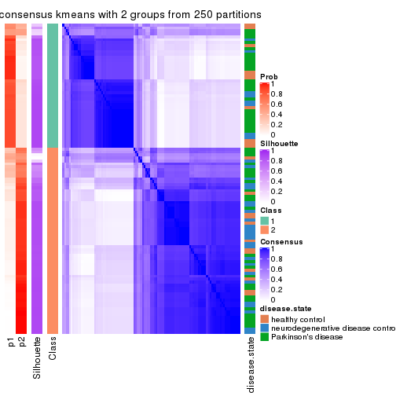
consensus_heatmap(res, k = 3)
consensus_heatmap(res, k = 4)
consensus_heatmap(res, k = 5)
consensus_heatmap(res, k = 6)
Heatmaps for the membership of samples in all partitions to see how consistent they are:
membership_heatmap(res, k = 2)
membership_heatmap(res, k = 3)
membership_heatmap(res, k = 4)
membership_heatmap(res, k = 5)
membership_heatmap(res, k = 6)
As soon as we have had the classes for columns, we can look for signatures which are significantly different between classes which can be candidate marks for certain classes. Following are the heatmaps for signatures.
Signature heatmaps where rows are scaled:
get_signatures(res, k = 2)
get_signatures(res, k = 3)
get_signatures(res, k = 4)
get_signatures(res, k = 5)
get_signatures(res, k = 6)
Signature heatmaps where rows are not scaled:
get_signatures(res, k = 2, scale_rows = FALSE)
get_signatures(res, k = 3, scale_rows = FALSE)
get_signatures(res, k = 4, scale_rows = FALSE)
get_signatures(res, k = 5, scale_rows = FALSE)
get_signatures(res, k = 6, scale_rows = FALSE)
Compare the overlap of signatures from different k:
compare_signatures(res)
get_signature() returns a data frame invisibly. TO get the list of signatures, the function
call should be assigned to a variable explicitly. In following code, if plot argument is set
to FALSE, no heatmap is plotted while only the differential analysis is performed.
# code only for demonstration
tb = get_signature(res, k = ..., plot = FALSE)
An example of the output of tb is:
#> which_row fdr mean_1 mean_2 scaled_mean_1 scaled_mean_2 km
#> 1 38 0.042760348 8.373488 9.131774 -0.5533452 0.5164555 1
#> 2 40 0.018707592 7.106213 8.469186 -0.6173731 0.5762149 1
#> 3 55 0.019134737 10.221463 11.207825 -0.6159697 0.5749050 1
#> 4 59 0.006059896 5.921854 7.869574 -0.6899429 0.6439467 1
#> 5 60 0.018055526 8.928898 10.211722 -0.6204761 0.5791110 1
#> 6 98 0.009384629 15.714769 14.887706 0.6635654 -0.6193277 2
...
The columns in tb are:
which_row: row indices corresponding to the input matrix.fdr: FDR for the differential test. mean_x: The mean value in group x.scaled_mean_x: The mean value in group x after rows are scaled.km: Row groups if k-means clustering is applied to rows.UMAP plot which shows how samples are separated.
dimension_reduction(res, k = 2, method = "UMAP")

dimension_reduction(res, k = 3, method = "UMAP")
dimension_reduction(res, k = 4, method = "UMAP")
dimension_reduction(res, k = 5, method = "UMAP")
dimension_reduction(res, k = 6, method = "UMAP")
Following heatmap shows how subgroups are split when increasing k:
collect_classes(res)
Test correlation between subgroups and known annotations. If the known annotation is numeric, one-way ANOVA test is applied, and if the known annotation is discrete, chi-squared contingency table test is applied.
test_to_known_factors(res)
#> n disease.state(p) k
#> MAD:kmeans 98 0.11147 2
#> MAD:kmeans 99 0.01712 3
#> MAD:kmeans 74 0.01098 4
#> MAD:kmeans 70 0.00985 5
#> MAD:kmeans 63 0.00193 6
If matrix rows can be associated to genes, consider to use functional_enrichment(res,
...) to perform function enrichment for the signature genes. See this vignette for more detailed explanations.
The object with results only for a single top-value method and a single partition method can be extracted as:
res = res_list["MAD", "skmeans"]
# you can also extract it by
# res = res_list["MAD:skmeans"]
A summary of res and all the functions that can be applied to it:
res
#> A 'ConsensusPartition' object with k = 2, 3, 4, 5, 6.
#> On a matrix with 21168 rows and 105 columns.
#> Top rows (1000, 2000, 3000, 4000, 5000) are extracted by 'MAD' method.
#> Subgroups are detected by 'skmeans' method.
#> Performed in total 1250 partitions by row resampling.
#> Best k for subgroups seems to be 2.
#>
#> Following methods can be applied to this 'ConsensusPartition' object:
#> [1] "cola_report" "collect_classes" "collect_plots"
#> [4] "collect_stats" "colnames" "compare_signatures"
#> [7] "consensus_heatmap" "dimension_reduction" "functional_enrichment"
#> [10] "get_anno_col" "get_anno" "get_classes"
#> [13] "get_consensus" "get_matrix" "get_membership"
#> [16] "get_param" "get_signatures" "get_stats"
#> [19] "is_best_k" "is_stable_k" "membership_heatmap"
#> [22] "ncol" "nrow" "plot_ecdf"
#> [25] "rownames" "select_partition_number" "show"
#> [28] "suggest_best_k" "test_to_known_factors"
collect_plots() function collects all the plots made from res for all k (number of partitions)
into one single page to provide an easy and fast comparison between different k.
collect_plots(res)
The plots are:
k and the heatmap of
predicted classes for each k.k.k.k.All the plots in panels can be made by individual functions and they are plotted later in this section.
select_partition_number() produces several plots showing different
statistics for choosing “optimized” k. There are following statistics:
k;k, the area increased is defined as \(A_k - A_{k-1}\).The detailed explanations of these statistics can be found in the cola vignette.
Generally speaking, lower PAC score, higher mean silhouette score or higher
concordance corresponds to better partition. Rand index and Jaccard index
measure how similar the current partition is compared to partition with k-1.
If they are too similar, we won't accept k is better than k-1.
select_partition_number(res)
The numeric values for all these statistics can be obtained by get_stats().
get_stats(res)
#> k 1-PAC mean_silhouette concordance area_increased Rand Jaccard
#> 2 2 0.579 0.769 0.891 0.5042 0.495 0.495
#> 3 3 0.511 0.721 0.858 0.3185 0.707 0.478
#> 4 4 0.412 0.450 0.695 0.1249 0.857 0.610
#> 5 5 0.418 0.352 0.601 0.0635 0.868 0.566
#> 6 6 0.477 0.280 0.529 0.0416 0.909 0.639
suggest_best_k() suggests the best \(k\) based on these statistics. The rules are as follows:
suggest_best_k(res)
#> [1] 2
Following shows the table of the partitions (You need to click the show/hide
code output link to see it). The membership matrix (columns with name p*)
is inferred by
clue::cl_consensus()
function with the SE method. Basically the value in the membership matrix
represents the probability to belong to a certain group. The finall class
label for an item is determined with the group with highest probability it
belongs to.
In get_classes() function, the entropy is calculated from the membership
matrix and the silhouette score is calculated from the consensus matrix.
cbind(get_classes(res, k = 2), get_membership(res, k = 2))
#> class entropy silhouette p1 p2
#> GSM153405 1 0.3733 0.85871 0.928 0.072
#> GSM153406 2 0.1414 0.87740 0.020 0.980
#> GSM153419 1 0.3431 0.86060 0.936 0.064
#> GSM153423 2 0.0000 0.88209 0.000 1.000
#> GSM153425 1 0.3431 0.86060 0.936 0.064
#> GSM153427 2 0.0672 0.88089 0.008 0.992
#> GSM153428 1 0.3431 0.86060 0.936 0.064
#> GSM153429 2 0.9129 0.58964 0.328 0.672
#> GSM153433 1 0.0000 0.86908 1.000 0.000
#> GSM153444 2 0.0000 0.88209 0.000 1.000
#> GSM153448 2 0.9983 -0.00128 0.476 0.524
#> GSM153451 2 0.0000 0.88209 0.000 1.000
#> GSM153452 1 0.8016 0.71946 0.756 0.244
#> GSM153477 2 0.3431 0.87338 0.064 0.936
#> GSM153479 2 0.9087 0.58847 0.324 0.676
#> GSM153484 2 0.4939 0.85128 0.108 0.892
#> GSM153488 1 0.6973 0.73618 0.812 0.188
#> GSM153496 1 0.0672 0.86724 0.992 0.008
#> GSM153497 2 0.1184 0.88354 0.016 0.984
#> GSM153500 1 0.0000 0.86908 1.000 0.000
#> GSM153503 1 0.0000 0.86908 1.000 0.000
#> GSM153508 1 0.8861 0.55619 0.696 0.304
#> GSM153409 2 0.0000 0.88209 0.000 1.000
#> GSM153426 2 0.0000 0.88209 0.000 1.000
#> GSM153431 1 0.9909 0.30820 0.556 0.444
#> GSM153438 2 0.0000 0.88209 0.000 1.000
#> GSM153440 1 0.3733 0.85871 0.928 0.072
#> GSM153447 1 0.3274 0.86162 0.940 0.060
#> GSM153450 2 0.0376 0.88212 0.004 0.996
#> GSM153456 2 0.0000 0.88209 0.000 1.000
#> GSM153457 2 0.0000 0.88209 0.000 1.000
#> GSM153458 2 0.0000 0.88209 0.000 1.000
#> GSM153459 2 0.0000 0.88209 0.000 1.000
#> GSM153460 2 0.0000 0.88209 0.000 1.000
#> GSM153461 2 0.5842 0.78699 0.140 0.860
#> GSM153463 1 0.0376 0.86911 0.996 0.004
#> GSM153464 2 0.2603 0.88057 0.044 0.956
#> GSM153466 1 0.9998 -0.04538 0.508 0.492
#> GSM153467 2 0.4022 0.86903 0.080 0.920
#> GSM153468 2 0.9988 0.14458 0.480 0.520
#> GSM153469 2 0.3584 0.87265 0.068 0.932
#> GSM153470 2 0.3274 0.87532 0.060 0.940
#> GSM153471 2 0.3431 0.87338 0.064 0.936
#> GSM153472 1 0.0000 0.86908 1.000 0.000
#> GSM153473 1 0.0000 0.86908 1.000 0.000
#> GSM153474 1 0.0000 0.86908 1.000 0.000
#> GSM153475 2 0.9170 0.57785 0.332 0.668
#> GSM153476 2 0.4690 0.85179 0.100 0.900
#> GSM153478 1 0.2043 0.86865 0.968 0.032
#> GSM153480 2 0.1633 0.88329 0.024 0.976
#> GSM153486 2 0.3431 0.87669 0.064 0.936
#> GSM153487 1 0.9833 0.24377 0.576 0.424
#> GSM153499 2 0.8813 0.62748 0.300 0.700
#> GSM153504 1 0.0000 0.86908 1.000 0.000
#> GSM153507 1 0.9358 0.45606 0.648 0.352
#> GSM153404 2 0.9087 0.48543 0.324 0.676
#> GSM153407 1 0.3733 0.85919 0.928 0.072
#> GSM153408 2 0.9358 0.42517 0.352 0.648
#> GSM153410 2 0.0672 0.88033 0.008 0.992
#> GSM153411 1 0.3431 0.86060 0.936 0.064
#> GSM153412 2 0.0938 0.87913 0.012 0.988
#> GSM153413 1 0.6148 0.81009 0.848 0.152
#> GSM153414 1 0.9977 0.21114 0.528 0.472
#> GSM153415 2 0.8909 0.52972 0.308 0.692
#> GSM153416 2 0.0000 0.88209 0.000 1.000
#> GSM153417 1 0.3431 0.86060 0.936 0.064
#> GSM153418 2 0.3584 0.84845 0.068 0.932
#> GSM153420 1 0.3431 0.86060 0.936 0.064
#> GSM153421 1 0.3431 0.86060 0.936 0.064
#> GSM153422 1 0.3431 0.86060 0.936 0.064
#> GSM153424 1 0.3879 0.85792 0.924 0.076
#> GSM153430 1 0.2043 0.86753 0.968 0.032
#> GSM153432 2 0.3431 0.87338 0.064 0.936
#> GSM153434 1 0.2603 0.86654 0.956 0.044
#> GSM153435 2 0.2778 0.87956 0.048 0.952
#> GSM153436 1 0.2948 0.86356 0.948 0.052
#> GSM153437 2 0.0376 0.88278 0.004 0.996
#> GSM153439 2 0.4562 0.86124 0.096 0.904
#> GSM153441 2 0.9944 0.07225 0.456 0.544
#> GSM153442 1 0.9000 0.54131 0.684 0.316
#> GSM153443 2 0.2778 0.87987 0.048 0.952
#> GSM153445 2 0.3274 0.87554 0.060 0.940
#> GSM153446 2 0.0672 0.88311 0.008 0.992
#> GSM153449 1 0.3733 0.83745 0.928 0.072
#> GSM153453 1 0.1414 0.86351 0.980 0.020
#> GSM153454 1 0.0000 0.86908 1.000 0.000
#> GSM153455 1 0.8207 0.65106 0.744 0.256
#> GSM153462 2 0.2236 0.88233 0.036 0.964
#> GSM153465 2 0.2236 0.88250 0.036 0.964
#> GSM153481 2 0.3274 0.87521 0.060 0.940
#> GSM153482 1 0.6801 0.74697 0.820 0.180
#> GSM153483 2 0.3431 0.87338 0.064 0.936
#> GSM153485 1 0.9608 0.37765 0.616 0.384
#> GSM153489 1 0.7376 0.71147 0.792 0.208
#> GSM153490 1 0.0000 0.86908 1.000 0.000
#> GSM153491 1 0.0672 0.86774 0.992 0.008
#> GSM153492 1 0.0000 0.86908 1.000 0.000
#> GSM153493 1 0.0000 0.86908 1.000 0.000
#> GSM153494 2 0.8763 0.64401 0.296 0.704
#> GSM153495 1 0.0000 0.86908 1.000 0.000
#> GSM153498 1 0.9608 0.35219 0.616 0.384
#> GSM153501 1 0.0000 0.86908 1.000 0.000
#> GSM153502 1 0.0000 0.86908 1.000 0.000
#> GSM153505 1 0.0000 0.86908 1.000 0.000
#> GSM153506 2 0.3431 0.87338 0.064 0.936
cbind(get_classes(res, k = 3), get_membership(res, k = 3))
#> class entropy silhouette p1 p2 p3
#> GSM153405 3 0.0237 0.8638 0.004 0.000 0.996
#> GSM153406 3 0.0592 0.8617 0.000 0.012 0.988
#> GSM153419 3 0.0424 0.8636 0.008 0.000 0.992
#> GSM153423 2 0.0424 0.8719 0.000 0.992 0.008
#> GSM153425 3 0.0592 0.8638 0.012 0.000 0.988
#> GSM153427 3 0.4931 0.6772 0.000 0.232 0.768
#> GSM153428 3 0.4295 0.7925 0.104 0.032 0.864
#> GSM153429 2 0.9955 -0.1051 0.348 0.364 0.288
#> GSM153433 1 0.3030 0.7795 0.904 0.004 0.092
#> GSM153444 2 0.3340 0.8045 0.000 0.880 0.120
#> GSM153448 1 0.9370 0.1230 0.416 0.416 0.168
#> GSM153451 2 0.0237 0.8720 0.000 0.996 0.004
#> GSM153452 3 0.5295 0.7555 0.036 0.156 0.808
#> GSM153477 2 0.3349 0.8183 0.108 0.888 0.004
#> GSM153479 1 0.9224 0.3257 0.480 0.360 0.160
#> GSM153484 2 0.8648 0.2882 0.332 0.548 0.120
#> GSM153488 1 0.6731 0.7032 0.740 0.088 0.172
#> GSM153496 1 0.0000 0.8104 1.000 0.000 0.000
#> GSM153497 2 0.0237 0.8720 0.000 0.996 0.004
#> GSM153500 1 0.0000 0.8104 1.000 0.000 0.000
#> GSM153503 1 0.0000 0.8104 1.000 0.000 0.000
#> GSM153508 1 0.1031 0.8106 0.976 0.024 0.000
#> GSM153409 2 0.3267 0.8082 0.000 0.884 0.116
#> GSM153426 2 0.1753 0.8609 0.000 0.952 0.048
#> GSM153431 3 0.8176 0.5777 0.140 0.224 0.636
#> GSM153438 2 0.0592 0.8720 0.000 0.988 0.012
#> GSM153440 3 0.1647 0.8517 0.036 0.004 0.960
#> GSM153447 3 0.5988 0.3931 0.368 0.000 0.632
#> GSM153450 2 0.2796 0.8303 0.000 0.908 0.092
#> GSM153456 2 0.0237 0.8720 0.000 0.996 0.004
#> GSM153457 2 0.0237 0.8720 0.000 0.996 0.004
#> GSM153458 2 0.1289 0.8665 0.000 0.968 0.032
#> GSM153459 2 0.0237 0.8720 0.000 0.996 0.004
#> GSM153460 2 0.0424 0.8723 0.000 0.992 0.008
#> GSM153461 2 0.6771 0.1685 0.012 0.548 0.440
#> GSM153463 1 0.3412 0.7578 0.876 0.000 0.124
#> GSM153464 2 0.0237 0.8717 0.000 0.996 0.004
#> GSM153466 1 0.6229 0.6221 0.700 0.280 0.020
#> GSM153467 2 0.4062 0.7567 0.164 0.836 0.000
#> GSM153468 1 0.4047 0.7725 0.848 0.148 0.004
#> GSM153469 2 0.5956 0.5992 0.264 0.720 0.016
#> GSM153470 2 0.2682 0.8420 0.076 0.920 0.004
#> GSM153471 2 0.2400 0.8505 0.064 0.932 0.004
#> GSM153472 1 0.0424 0.8109 0.992 0.000 0.008
#> GSM153473 1 0.2356 0.7906 0.928 0.000 0.072
#> GSM153474 1 0.0000 0.8104 1.000 0.000 0.000
#> GSM153475 1 0.9457 0.2864 0.460 0.352 0.188
#> GSM153476 3 0.9109 0.2140 0.148 0.364 0.488
#> GSM153478 1 0.6357 0.5425 0.684 0.020 0.296
#> GSM153480 2 0.0237 0.8717 0.000 0.996 0.004
#> GSM153486 2 0.2680 0.8502 0.068 0.924 0.008
#> GSM153487 1 0.3551 0.7824 0.868 0.132 0.000
#> GSM153499 1 0.4409 0.7521 0.824 0.172 0.004
#> GSM153504 1 0.0237 0.8102 0.996 0.000 0.004
#> GSM153507 1 0.3349 0.7934 0.888 0.108 0.004
#> GSM153404 3 0.0000 0.8639 0.000 0.000 1.000
#> GSM153407 3 0.0661 0.8640 0.008 0.004 0.988
#> GSM153408 3 0.0000 0.8639 0.000 0.000 1.000
#> GSM153410 3 0.1163 0.8547 0.000 0.028 0.972
#> GSM153411 3 0.0592 0.8638 0.012 0.000 0.988
#> GSM153412 3 0.0747 0.8601 0.000 0.016 0.984
#> GSM153413 3 0.0000 0.8639 0.000 0.000 1.000
#> GSM153414 3 0.7559 0.4471 0.056 0.336 0.608
#> GSM153415 3 0.0000 0.8639 0.000 0.000 1.000
#> GSM153416 2 0.0747 0.8716 0.000 0.984 0.016
#> GSM153417 3 0.0592 0.8638 0.012 0.000 0.988
#> GSM153418 3 0.0237 0.8634 0.000 0.004 0.996
#> GSM153420 3 0.0592 0.8638 0.012 0.000 0.988
#> GSM153421 3 0.0592 0.8638 0.012 0.000 0.988
#> GSM153422 3 0.0592 0.8638 0.012 0.000 0.988
#> GSM153424 3 0.8188 0.2991 0.372 0.080 0.548
#> GSM153430 1 0.6632 0.5755 0.692 0.036 0.272
#> GSM153432 2 0.2939 0.8443 0.072 0.916 0.012
#> GSM153434 1 0.8877 0.4945 0.572 0.184 0.244
#> GSM153435 2 0.0475 0.8715 0.004 0.992 0.004
#> GSM153436 3 0.9666 0.0711 0.356 0.216 0.428
#> GSM153437 2 0.0000 0.8715 0.000 1.000 0.000
#> GSM153439 2 0.8614 0.3522 0.304 0.568 0.128
#> GSM153441 2 0.8841 0.2379 0.340 0.528 0.132
#> GSM153442 1 0.8749 0.5215 0.572 0.276 0.152
#> GSM153443 2 0.0237 0.8716 0.004 0.996 0.000
#> GSM153445 2 0.0237 0.8717 0.000 0.996 0.004
#> GSM153446 2 0.0237 0.8720 0.000 0.996 0.004
#> GSM153449 1 0.6424 0.7270 0.752 0.180 0.068
#> GSM153453 1 0.0000 0.8104 1.000 0.000 0.000
#> GSM153454 1 0.0000 0.8104 1.000 0.000 0.000
#> GSM153455 1 0.9025 0.4842 0.544 0.284 0.172
#> GSM153462 2 0.0237 0.8717 0.000 0.996 0.004
#> GSM153465 2 0.6062 0.7217 0.160 0.776 0.064
#> GSM153481 2 0.1315 0.8688 0.020 0.972 0.008
#> GSM153482 1 0.5000 0.7781 0.832 0.124 0.044
#> GSM153483 2 0.5928 0.5469 0.296 0.696 0.008
#> GSM153485 1 0.7666 0.5773 0.636 0.288 0.076
#> GSM153489 1 0.8255 0.6263 0.636 0.196 0.168
#> GSM153490 1 0.0592 0.8100 0.988 0.000 0.012
#> GSM153491 1 0.0592 0.8105 0.988 0.000 0.012
#> GSM153492 1 0.0424 0.8105 0.992 0.000 0.008
#> GSM153493 1 0.0000 0.8104 1.000 0.000 0.000
#> GSM153494 1 0.8140 0.2903 0.524 0.404 0.072
#> GSM153495 1 0.0237 0.8105 0.996 0.000 0.004
#> GSM153498 1 0.8063 0.6310 0.644 0.224 0.132
#> GSM153501 1 0.0000 0.8104 1.000 0.000 0.000
#> GSM153502 1 0.1031 0.8074 0.976 0.000 0.024
#> GSM153505 1 0.0000 0.8104 1.000 0.000 0.000
#> GSM153506 2 0.2096 0.8576 0.052 0.944 0.004
cbind(get_classes(res, k = 4), get_membership(res, k = 4))
#> class entropy silhouette p1 p2 p3 p4
#> GSM153405 3 0.0188 0.78917 0.000 0.000 0.996 0.004
#> GSM153406 3 0.2546 0.77422 0.000 0.008 0.900 0.092
#> GSM153419 3 0.1022 0.78890 0.000 0.000 0.968 0.032
#> GSM153423 2 0.1970 0.65824 0.000 0.932 0.008 0.060
#> GSM153425 3 0.1004 0.78697 0.004 0.000 0.972 0.024
#> GSM153427 3 0.6246 0.15021 0.004 0.464 0.488 0.044
#> GSM153428 3 0.8804 0.32163 0.156 0.232 0.500 0.112
#> GSM153429 4 0.9811 0.38782 0.236 0.236 0.184 0.344
#> GSM153433 1 0.5299 0.61293 0.752 0.008 0.064 0.176
#> GSM153444 2 0.3168 0.60120 0.000 0.884 0.060 0.056
#> GSM153448 4 0.9216 0.42788 0.240 0.292 0.084 0.384
#> GSM153451 2 0.1389 0.65908 0.000 0.952 0.000 0.048
#> GSM153452 3 0.8607 0.10092 0.100 0.388 0.412 0.100
#> GSM153477 2 0.6869 0.00392 0.088 0.472 0.004 0.436
#> GSM153479 4 0.9107 0.39840 0.264 0.196 0.100 0.440
#> GSM153484 4 0.8719 0.41414 0.156 0.316 0.076 0.452
#> GSM153488 1 0.8724 0.20512 0.472 0.076 0.172 0.280
#> GSM153496 1 0.3351 0.65818 0.844 0.000 0.008 0.148
#> GSM153497 2 0.3123 0.64428 0.000 0.844 0.000 0.156
#> GSM153500 1 0.1978 0.66129 0.928 0.000 0.004 0.068
#> GSM153503 1 0.1637 0.66233 0.940 0.000 0.000 0.060
#> GSM153508 1 0.5010 0.53109 0.700 0.024 0.000 0.276
#> GSM153409 2 0.3764 0.61711 0.000 0.844 0.040 0.116
#> GSM153426 2 0.4595 0.60823 0.000 0.776 0.040 0.184
#> GSM153431 3 0.9527 0.03744 0.160 0.208 0.408 0.224
#> GSM153438 2 0.2216 0.65382 0.000 0.908 0.000 0.092
#> GSM153440 3 0.5118 0.69575 0.072 0.060 0.804 0.064
#> GSM153447 1 0.7663 0.25035 0.492 0.032 0.372 0.104
#> GSM153450 2 0.3334 0.59129 0.008 0.884 0.048 0.060
#> GSM153456 2 0.0469 0.65494 0.000 0.988 0.000 0.012
#> GSM153457 2 0.1022 0.65768 0.000 0.968 0.000 0.032
#> GSM153458 2 0.0895 0.64692 0.000 0.976 0.004 0.020
#> GSM153459 2 0.0895 0.65327 0.000 0.976 0.004 0.020
#> GSM153460 2 0.1118 0.64548 0.000 0.964 0.000 0.036
#> GSM153461 2 0.7840 0.17451 0.040 0.568 0.216 0.176
#> GSM153463 1 0.4213 0.62189 0.832 0.004 0.092 0.072
#> GSM153464 2 0.4304 0.54226 0.000 0.716 0.000 0.284
#> GSM153466 4 0.7685 0.18198 0.380 0.140 0.016 0.464
#> GSM153467 4 0.6214 0.01754 0.052 0.468 0.000 0.480
#> GSM153468 4 0.6963 -0.09966 0.424 0.112 0.000 0.464
#> GSM153469 4 0.7475 0.40466 0.120 0.308 0.024 0.548
#> GSM153470 4 0.6212 0.15288 0.060 0.380 0.000 0.560
#> GSM153471 2 0.6143 0.09832 0.048 0.496 0.000 0.456
#> GSM153472 1 0.4339 0.60714 0.764 0.008 0.004 0.224
#> GSM153473 1 0.4969 0.62829 0.772 0.000 0.088 0.140
#> GSM153474 1 0.2281 0.66260 0.904 0.000 0.000 0.096
#> GSM153475 4 0.9431 0.38768 0.232 0.184 0.160 0.424
#> GSM153476 3 0.9066 -0.13845 0.080 0.196 0.372 0.352
#> GSM153478 1 0.8441 0.29646 0.484 0.044 0.236 0.236
#> GSM153480 2 0.4134 0.57599 0.000 0.740 0.000 0.260
#> GSM153486 2 0.6598 0.27837 0.096 0.600 0.004 0.300
#> GSM153487 1 0.6777 0.08993 0.460 0.080 0.004 0.456
#> GSM153499 1 0.7042 0.22202 0.532 0.092 0.012 0.364
#> GSM153504 1 0.2408 0.66186 0.896 0.000 0.000 0.104
#> GSM153507 1 0.6602 0.14292 0.496 0.068 0.004 0.432
#> GSM153404 3 0.1302 0.78800 0.000 0.000 0.956 0.044
#> GSM153407 3 0.5220 0.68511 0.032 0.116 0.788 0.064
#> GSM153408 3 0.1716 0.78458 0.000 0.000 0.936 0.064
#> GSM153410 3 0.3128 0.76329 0.000 0.040 0.884 0.076
#> GSM153411 3 0.1109 0.78621 0.004 0.000 0.968 0.028
#> GSM153412 3 0.2882 0.76834 0.000 0.024 0.892 0.084
#> GSM153413 3 0.1637 0.78559 0.000 0.000 0.940 0.060
#> GSM153414 2 0.8789 -0.08181 0.080 0.428 0.340 0.152
#> GSM153415 3 0.1792 0.78369 0.000 0.000 0.932 0.068
#> GSM153416 2 0.2831 0.65510 0.000 0.876 0.004 0.120
#> GSM153417 3 0.1004 0.78697 0.004 0.000 0.972 0.024
#> GSM153418 3 0.1978 0.78261 0.000 0.004 0.928 0.068
#> GSM153420 3 0.0895 0.78736 0.004 0.000 0.976 0.020
#> GSM153421 3 0.1004 0.78697 0.004 0.000 0.972 0.024
#> GSM153422 3 0.1004 0.78697 0.004 0.000 0.972 0.024
#> GSM153424 3 0.9759 -0.11913 0.304 0.208 0.320 0.168
#> GSM153430 1 0.7922 0.41839 0.592 0.072 0.156 0.180
#> GSM153432 4 0.6822 0.15422 0.072 0.384 0.012 0.532
#> GSM153434 1 0.9540 -0.03306 0.384 0.156 0.180 0.280
#> GSM153435 2 0.5095 0.44323 0.004 0.624 0.004 0.368
#> GSM153436 1 0.9921 -0.19962 0.276 0.268 0.268 0.188
#> GSM153437 2 0.2973 0.64806 0.000 0.856 0.000 0.144
#> GSM153439 4 0.9099 0.43782 0.152 0.304 0.116 0.428
#> GSM153441 2 0.9536 -0.34817 0.204 0.372 0.136 0.288
#> GSM153442 4 0.8442 0.30681 0.320 0.236 0.028 0.416
#> GSM153443 2 0.4819 0.47297 0.004 0.652 0.000 0.344
#> GSM153445 2 0.4776 0.42926 0.000 0.624 0.000 0.376
#> GSM153446 2 0.4040 0.59351 0.000 0.752 0.000 0.248
#> GSM153449 1 0.8537 0.25738 0.524 0.152 0.092 0.232
#> GSM153453 1 0.3688 0.62360 0.792 0.000 0.000 0.208
#> GSM153454 1 0.1452 0.65736 0.956 0.000 0.008 0.036
#> GSM153455 4 0.9448 0.14671 0.336 0.116 0.208 0.340
#> GSM153462 2 0.4605 0.50029 0.000 0.664 0.000 0.336
#> GSM153465 4 0.7976 0.20522 0.112 0.376 0.044 0.468
#> GSM153481 2 0.6115 0.09144 0.020 0.492 0.016 0.472
#> GSM153482 1 0.7114 0.40296 0.568 0.056 0.044 0.332
#> GSM153483 4 0.7439 0.40301 0.176 0.304 0.004 0.516
#> GSM153485 1 0.8785 -0.11266 0.420 0.184 0.064 0.332
#> GSM153489 1 0.8503 0.19542 0.496 0.108 0.100 0.296
#> GSM153490 1 0.3117 0.66641 0.880 0.000 0.028 0.092
#> GSM153491 1 0.3946 0.64536 0.812 0.004 0.012 0.172
#> GSM153492 1 0.2198 0.66438 0.920 0.000 0.008 0.072
#> GSM153493 1 0.2345 0.66170 0.900 0.000 0.000 0.100
#> GSM153494 4 0.8687 0.35538 0.336 0.260 0.036 0.368
#> GSM153495 1 0.2255 0.66250 0.920 0.000 0.012 0.068
#> GSM153498 1 0.9004 -0.08249 0.388 0.128 0.116 0.368
#> GSM153501 1 0.1867 0.66053 0.928 0.000 0.000 0.072
#> GSM153502 1 0.3749 0.65906 0.840 0.000 0.032 0.128
#> GSM153505 1 0.2053 0.66195 0.924 0.000 0.004 0.072
#> GSM153506 4 0.6273 -0.02773 0.056 0.456 0.000 0.488
cbind(get_classes(res, k = 5), get_membership(res, k = 5))
#> class entropy silhouette p1 p2 p3 p4 p5
#> GSM153405 3 0.1892 0.77145 0.000 0.000 0.916 0.004 0.080
#> GSM153406 3 0.1978 0.74564 0.024 0.012 0.932 0.000 0.032
#> GSM153419 3 0.1831 0.77213 0.000 0.000 0.920 0.004 0.076
#> GSM153423 2 0.3423 0.57767 0.108 0.844 0.008 0.000 0.040
#> GSM153425 3 0.3399 0.74176 0.000 0.000 0.812 0.020 0.168
#> GSM153427 2 0.6807 -0.01588 0.052 0.492 0.360 0.000 0.096
#> GSM153428 5 0.8881 0.40812 0.024 0.228 0.248 0.156 0.344
#> GSM153429 1 0.9801 0.03554 0.276 0.152 0.144 0.188 0.240
#> GSM153433 4 0.6724 0.39289 0.080 0.016 0.048 0.584 0.272
#> GSM153444 2 0.3696 0.56492 0.076 0.844 0.032 0.000 0.048
#> GSM153448 2 0.9243 -0.32971 0.248 0.292 0.048 0.152 0.260
#> GSM153451 2 0.2616 0.58686 0.100 0.880 0.000 0.000 0.020
#> GSM153452 2 0.8363 -0.30123 0.040 0.376 0.336 0.060 0.188
#> GSM153477 1 0.7400 0.22981 0.508 0.300 0.024 0.044 0.124
#> GSM153479 1 0.9349 0.06818 0.336 0.152 0.076 0.176 0.260
#> GSM153484 1 0.8888 0.29180 0.420 0.152 0.068 0.120 0.240
#> GSM153488 4 0.8847 0.10819 0.200 0.044 0.148 0.416 0.192
#> GSM153496 4 0.5692 0.53498 0.084 0.016 0.012 0.680 0.208
#> GSM153497 2 0.3934 0.52097 0.244 0.740 0.000 0.000 0.016
#> GSM153500 4 0.3692 0.57846 0.052 0.000 0.000 0.812 0.136
#> GSM153503 4 0.3485 0.57713 0.048 0.000 0.000 0.828 0.124
#> GSM153508 4 0.6862 0.39162 0.232 0.012 0.008 0.524 0.224
#> GSM153409 2 0.5628 0.49940 0.132 0.712 0.088 0.000 0.068
#> GSM153426 2 0.6128 0.48154 0.180 0.660 0.072 0.000 0.088
#> GSM153431 5 0.9752 0.29886 0.148 0.212 0.256 0.124 0.260
#> GSM153438 2 0.3842 0.57707 0.100 0.836 0.032 0.008 0.024
#> GSM153440 3 0.7413 0.23994 0.016 0.076 0.516 0.100 0.292
#> GSM153447 4 0.7789 -0.21082 0.020 0.032 0.220 0.400 0.328
#> GSM153450 2 0.4874 0.51923 0.088 0.764 0.036 0.000 0.112
#> GSM153456 2 0.1041 0.58615 0.032 0.964 0.000 0.000 0.004
#> GSM153457 2 0.2295 0.58703 0.088 0.900 0.004 0.000 0.008
#> GSM153458 2 0.1617 0.57903 0.012 0.948 0.020 0.000 0.020
#> GSM153459 2 0.2095 0.58827 0.060 0.920 0.008 0.000 0.012
#> GSM153460 2 0.2152 0.58378 0.044 0.920 0.004 0.000 0.032
#> GSM153461 2 0.8485 0.14218 0.144 0.484 0.120 0.056 0.196
#> GSM153463 4 0.5323 0.38863 0.032 0.000 0.032 0.652 0.284
#> GSM153464 2 0.4990 0.35018 0.384 0.580 0.000 0.000 0.036
#> GSM153466 1 0.8228 0.15395 0.416 0.072 0.024 0.200 0.288
#> GSM153467 1 0.7474 0.29755 0.492 0.288 0.004 0.080 0.136
#> GSM153468 1 0.8052 0.13942 0.368 0.056 0.012 0.292 0.272
#> GSM153469 1 0.8627 0.36466 0.456 0.196 0.056 0.104 0.188
#> GSM153470 1 0.6853 0.15138 0.536 0.324 0.028 0.024 0.088
#> GSM153471 1 0.7359 0.09279 0.472 0.360 0.020 0.064 0.084
#> GSM153472 4 0.6833 0.44491 0.160 0.016 0.020 0.568 0.236
#> GSM153473 4 0.6138 0.43799 0.048 0.000 0.080 0.624 0.248
#> GSM153474 4 0.3459 0.57904 0.052 0.000 0.000 0.832 0.116
#> GSM153475 1 0.9386 0.14505 0.352 0.128 0.140 0.120 0.260
#> GSM153476 3 0.9204 -0.33887 0.296 0.128 0.344 0.084 0.148
#> GSM153478 5 0.9201 0.18538 0.160 0.072 0.136 0.296 0.336
#> GSM153480 2 0.5158 0.42299 0.344 0.616 0.012 0.004 0.024
#> GSM153486 2 0.7468 0.11458 0.284 0.500 0.004 0.104 0.108
#> GSM153487 1 0.7825 -0.00849 0.392 0.048 0.012 0.340 0.208
#> GSM153499 1 0.7819 0.02666 0.408 0.060 0.016 0.360 0.156
#> GSM153504 4 0.3798 0.57808 0.064 0.000 0.000 0.808 0.128
#> GSM153507 1 0.7626 -0.01854 0.348 0.044 0.000 0.324 0.284
#> GSM153404 3 0.0566 0.77158 0.004 0.000 0.984 0.000 0.012
#> GSM153407 3 0.7484 0.19641 0.004 0.176 0.500 0.068 0.252
#> GSM153408 3 0.1012 0.76511 0.012 0.000 0.968 0.000 0.020
#> GSM153410 3 0.2188 0.73723 0.024 0.024 0.924 0.000 0.028
#> GSM153411 3 0.3612 0.73426 0.000 0.000 0.800 0.028 0.172
#> GSM153412 3 0.2184 0.73973 0.028 0.020 0.924 0.000 0.028
#> GSM153413 3 0.0798 0.76910 0.008 0.000 0.976 0.000 0.016
#> GSM153414 2 0.8312 -0.15344 0.060 0.464 0.164 0.060 0.252
#> GSM153415 3 0.1106 0.76328 0.012 0.000 0.964 0.000 0.024
#> GSM153416 2 0.4312 0.55343 0.160 0.780 0.020 0.000 0.040
#> GSM153417 3 0.3565 0.73543 0.000 0.000 0.800 0.024 0.176
#> GSM153418 3 0.1483 0.75782 0.012 0.008 0.952 0.000 0.028
#> GSM153420 3 0.3399 0.74210 0.000 0.000 0.812 0.020 0.168
#> GSM153421 3 0.3527 0.73733 0.000 0.000 0.804 0.024 0.172
#> GSM153422 3 0.3612 0.73400 0.000 0.000 0.800 0.028 0.172
#> GSM153424 5 0.9171 0.35734 0.080 0.160 0.132 0.248 0.380
#> GSM153430 4 0.7803 0.15571 0.064 0.076 0.060 0.484 0.316
#> GSM153432 1 0.7060 0.26474 0.560 0.244 0.020 0.032 0.144
#> GSM153434 5 0.9429 0.25120 0.172 0.108 0.124 0.256 0.340
#> GSM153435 1 0.6365 -0.02123 0.508 0.384 0.016 0.008 0.084
#> GSM153436 5 0.9414 0.27453 0.080 0.280 0.140 0.196 0.304
#> GSM153437 2 0.4407 0.52611 0.244 0.724 0.012 0.000 0.020
#> GSM153439 1 0.8796 0.27810 0.408 0.196 0.056 0.096 0.244
#> GSM153441 4 0.9793 -0.30107 0.224 0.228 0.108 0.244 0.196
#> GSM153442 1 0.8972 0.08874 0.336 0.148 0.032 0.264 0.220
#> GSM153443 2 0.5650 0.15377 0.456 0.468 0.000 0.000 0.076
#> GSM153445 2 0.5787 0.19830 0.440 0.488 0.004 0.004 0.064
#> GSM153446 2 0.5141 0.39883 0.360 0.600 0.012 0.000 0.028
#> GSM153449 4 0.9169 -0.11223 0.224 0.100 0.072 0.328 0.276
#> GSM153453 4 0.5941 0.48759 0.188 0.004 0.000 0.612 0.196
#> GSM153454 4 0.2997 0.55605 0.012 0.000 0.000 0.840 0.148
#> GSM153455 5 0.9409 0.03532 0.240 0.096 0.108 0.240 0.316
#> GSM153462 2 0.5998 0.20457 0.452 0.468 0.012 0.004 0.064
#> GSM153465 1 0.8335 0.12040 0.400 0.348 0.096 0.044 0.112
#> GSM153481 1 0.7299 0.02122 0.428 0.396 0.036 0.016 0.124
#> GSM153482 4 0.8274 0.17295 0.244 0.056 0.036 0.424 0.240
#> GSM153483 1 0.8339 0.35004 0.432 0.256 0.016 0.136 0.160
#> GSM153485 1 0.9245 0.08866 0.320 0.116 0.068 0.264 0.232
#> GSM153489 4 0.9504 -0.07619 0.208 0.140 0.100 0.336 0.216
#> GSM153490 4 0.4791 0.56704 0.064 0.000 0.020 0.748 0.168
#> GSM153491 4 0.6446 0.48257 0.128 0.028 0.008 0.612 0.224
#> GSM153492 4 0.4658 0.56135 0.060 0.004 0.008 0.752 0.176
#> GSM153493 4 0.4668 0.56652 0.072 0.000 0.004 0.736 0.188
#> GSM153494 1 0.8559 0.13125 0.356 0.160 0.016 0.316 0.152
#> GSM153495 4 0.3837 0.54010 0.024 0.000 0.012 0.800 0.164
#> GSM153498 4 0.9426 -0.05520 0.216 0.084 0.128 0.304 0.268
#> GSM153501 4 0.2570 0.57671 0.028 0.000 0.000 0.888 0.084
#> GSM153502 4 0.5521 0.54434 0.064 0.004 0.044 0.708 0.180
#> GSM153505 4 0.2712 0.57430 0.032 0.000 0.000 0.880 0.088
#> GSM153506 1 0.7160 0.16024 0.484 0.336 0.004 0.052 0.124
cbind(get_classes(res, k = 6), get_membership(res, k = 6))
#> class entropy silhouette p1 p2 p3 p4 p5 p6
#> GSM153405 3 0.2442 0.678747 0.000 0.000 0.852 0.000 0.144 0.004
#> GSM153406 3 0.1854 0.669295 0.016 0.004 0.932 0.000 0.020 0.028
#> GSM153419 3 0.2340 0.677286 0.000 0.000 0.852 0.000 0.148 0.000
#> GSM153423 2 0.3793 0.520346 0.080 0.816 0.000 0.004 0.072 0.028
#> GSM153425 3 0.4537 0.449935 0.000 0.000 0.576 0.024 0.392 0.008
#> GSM153427 2 0.7351 0.028111 0.028 0.436 0.260 0.000 0.212 0.064
#> GSM153428 5 0.8167 0.473450 0.020 0.160 0.124 0.148 0.472 0.076
#> GSM153429 6 0.9670 0.158368 0.232 0.100 0.112 0.192 0.124 0.240
#> GSM153433 4 0.7323 0.292882 0.064 0.008 0.028 0.492 0.200 0.208
#> GSM153444 2 0.4640 0.499800 0.052 0.772 0.044 0.000 0.100 0.032
#> GSM153448 2 0.9431 -0.328233 0.232 0.236 0.036 0.156 0.188 0.152
#> GSM153451 2 0.2542 0.523451 0.080 0.884 0.000 0.000 0.016 0.020
#> GSM153452 2 0.8453 -0.065825 0.036 0.408 0.212 0.056 0.196 0.092
#> GSM153477 1 0.8044 0.344561 0.432 0.268 0.024 0.056 0.076 0.144
#> GSM153479 1 0.8997 -0.005296 0.344 0.116 0.040 0.112 0.140 0.248
#> GSM153484 1 0.8589 0.081348 0.396 0.136 0.048 0.100 0.064 0.256
#> GSM153488 4 0.9009 -0.123187 0.140 0.032 0.136 0.340 0.116 0.236
#> GSM153496 4 0.6333 0.331770 0.064 0.008 0.008 0.584 0.096 0.240
#> GSM153497 2 0.4028 0.461588 0.176 0.764 0.000 0.000 0.032 0.028
#> GSM153500 4 0.4367 0.432074 0.044 0.000 0.000 0.752 0.044 0.160
#> GSM153503 4 0.3708 0.457882 0.032 0.000 0.000 0.816 0.060 0.092
#> GSM153508 4 0.7515 -0.123726 0.252 0.032 0.000 0.388 0.060 0.268
#> GSM153409 2 0.6484 0.391034 0.084 0.616 0.068 0.008 0.188 0.036
#> GSM153426 2 0.7003 0.346942 0.124 0.564 0.068 0.004 0.188 0.052
#> GSM153431 5 0.8934 0.258943 0.060 0.152 0.128 0.132 0.412 0.116
#> GSM153438 2 0.4513 0.506645 0.084 0.784 0.040 0.000 0.056 0.036
#> GSM153440 5 0.7195 0.187195 0.020 0.032 0.376 0.108 0.424 0.040
#> GSM153447 5 0.6310 0.267594 0.008 0.004 0.096 0.312 0.532 0.048
#> GSM153450 2 0.5072 0.489141 0.104 0.740 0.036 0.000 0.080 0.040
#> GSM153456 2 0.0665 0.528629 0.008 0.980 0.000 0.000 0.008 0.004
#> GSM153457 2 0.1787 0.524168 0.068 0.920 0.000 0.000 0.008 0.004
#> GSM153458 2 0.2228 0.534163 0.024 0.908 0.004 0.000 0.056 0.008
#> GSM153459 2 0.2137 0.533926 0.028 0.912 0.000 0.000 0.048 0.012
#> GSM153460 2 0.3070 0.531005 0.056 0.856 0.000 0.000 0.072 0.016
#> GSM153461 2 0.8015 0.009393 0.056 0.376 0.076 0.052 0.368 0.072
#> GSM153463 4 0.5851 0.242402 0.012 0.000 0.032 0.560 0.320 0.076
#> GSM153464 2 0.5065 0.056356 0.452 0.492 0.000 0.000 0.032 0.024
#> GSM153466 1 0.8039 -0.249406 0.388 0.048 0.012 0.204 0.076 0.272
#> GSM153467 1 0.7789 0.309368 0.404 0.300 0.008 0.072 0.044 0.172
#> GSM153468 1 0.8209 -0.277031 0.324 0.044 0.016 0.256 0.076 0.284
#> GSM153469 1 0.8348 0.251665 0.444 0.180 0.044 0.068 0.072 0.192
#> GSM153470 1 0.8237 0.309165 0.404 0.224 0.036 0.036 0.080 0.220
#> GSM153471 1 0.7650 0.351825 0.472 0.276 0.024 0.064 0.048 0.116
#> GSM153472 4 0.6864 0.160496 0.100 0.000 0.016 0.472 0.088 0.324
#> GSM153473 4 0.7090 0.305348 0.032 0.000 0.048 0.484 0.232 0.204
#> GSM153474 4 0.5806 0.395149 0.076 0.000 0.000 0.628 0.104 0.192
#> GSM153475 1 0.9202 -0.125786 0.320 0.096 0.100 0.148 0.076 0.260
#> GSM153476 3 0.8632 -0.183754 0.168 0.080 0.428 0.040 0.128 0.156
#> GSM153478 4 0.8855 0.010262 0.120 0.036 0.060 0.304 0.268 0.212
#> GSM153480 2 0.5496 0.222484 0.344 0.568 0.012 0.000 0.024 0.052
#> GSM153486 2 0.7563 0.000762 0.212 0.476 0.004 0.052 0.068 0.188
#> GSM153487 6 0.8173 0.278567 0.248 0.056 0.020 0.184 0.080 0.412
#> GSM153499 6 0.8219 0.189102 0.256 0.048 0.012 0.292 0.080 0.312
#> GSM153504 4 0.5528 0.379957 0.052 0.000 0.008 0.660 0.080 0.200
#> GSM153507 6 0.7488 0.240768 0.256 0.020 0.000 0.248 0.080 0.396
#> GSM153404 3 0.1327 0.701350 0.000 0.000 0.936 0.000 0.064 0.000
#> GSM153407 5 0.7285 0.369271 0.012 0.156 0.272 0.048 0.480 0.032
#> GSM153408 3 0.0405 0.700298 0.004 0.000 0.988 0.000 0.008 0.000
#> GSM153410 3 0.1621 0.676214 0.016 0.012 0.944 0.000 0.008 0.020
#> GSM153411 3 0.4952 0.436368 0.004 0.000 0.568 0.032 0.380 0.016
#> GSM153412 3 0.1337 0.684605 0.016 0.008 0.956 0.000 0.008 0.012
#> GSM153413 3 0.0837 0.702425 0.004 0.000 0.972 0.000 0.020 0.004
#> GSM153414 2 0.8098 0.033645 0.048 0.408 0.112 0.040 0.312 0.080
#> GSM153415 3 0.0551 0.697602 0.008 0.000 0.984 0.000 0.004 0.004
#> GSM153416 2 0.4871 0.476629 0.132 0.740 0.012 0.000 0.064 0.052
#> GSM153417 3 0.4456 0.500454 0.000 0.000 0.608 0.024 0.360 0.008
#> GSM153418 3 0.0810 0.693838 0.008 0.004 0.976 0.000 0.004 0.008
#> GSM153420 3 0.3925 0.550428 0.000 0.000 0.656 0.008 0.332 0.004
#> GSM153421 3 0.4386 0.488931 0.000 0.000 0.600 0.024 0.372 0.004
#> GSM153422 3 0.4155 0.511317 0.000 0.000 0.616 0.020 0.364 0.000
#> GSM153424 5 0.8099 0.360336 0.060 0.132 0.060 0.228 0.468 0.052
#> GSM153430 4 0.8355 0.135914 0.072 0.028 0.072 0.396 0.264 0.168
#> GSM153432 1 0.7723 0.348087 0.492 0.224 0.032 0.032 0.084 0.136
#> GSM153434 4 0.9400 -0.107580 0.172 0.056 0.092 0.268 0.232 0.180
#> GSM153435 1 0.7165 0.177498 0.440 0.356 0.040 0.004 0.080 0.080
#> GSM153436 2 0.9751 -0.307635 0.100 0.216 0.104 0.168 0.212 0.200
#> GSM153437 2 0.5345 0.405183 0.212 0.672 0.016 0.000 0.064 0.036
#> GSM153439 1 0.9269 0.127549 0.356 0.172 0.100 0.088 0.108 0.176
#> GSM153441 1 0.9414 0.005754 0.240 0.236 0.036 0.172 0.176 0.140
#> GSM153442 1 0.8838 -0.207942 0.320 0.084 0.028 0.208 0.104 0.256
#> GSM153443 1 0.6133 0.124945 0.468 0.396 0.004 0.016 0.012 0.104
#> GSM153445 2 0.6103 -0.012619 0.420 0.456 0.004 0.004 0.044 0.072
#> GSM153446 2 0.5349 0.222487 0.348 0.576 0.012 0.000 0.032 0.032
#> GSM153449 4 0.8639 -0.065647 0.124 0.068 0.028 0.340 0.144 0.296
#> GSM153453 4 0.6247 0.292920 0.088 0.004 0.012 0.584 0.060 0.252
#> GSM153454 4 0.3934 0.457927 0.012 0.000 0.000 0.764 0.180 0.044
#> GSM153455 6 0.9678 0.222390 0.232 0.080 0.148 0.164 0.136 0.240
#> GSM153462 1 0.6743 0.101721 0.432 0.392 0.012 0.004 0.072 0.088
#> GSM153465 1 0.9332 0.152018 0.292 0.192 0.076 0.060 0.188 0.192
#> GSM153481 1 0.7791 0.268942 0.432 0.300 0.052 0.024 0.052 0.140
#> GSM153482 4 0.8055 -0.065004 0.112 0.036 0.036 0.408 0.100 0.308
#> GSM153483 1 0.8826 0.103913 0.336 0.136 0.020 0.100 0.152 0.256
#> GSM153485 6 0.8688 0.257253 0.240 0.064 0.044 0.276 0.068 0.308
#> GSM153489 6 0.8867 0.189804 0.104 0.060 0.080 0.264 0.128 0.364
#> GSM153490 4 0.5861 0.403983 0.044 0.000 0.024 0.656 0.140 0.136
#> GSM153491 4 0.6340 0.257284 0.088 0.008 0.004 0.552 0.064 0.284
#> GSM153492 4 0.5054 0.438297 0.048 0.000 0.004 0.716 0.104 0.128
#> GSM153493 4 0.4716 0.431615 0.020 0.000 0.000 0.708 0.084 0.188
#> GSM153494 4 0.9122 -0.273995 0.252 0.104 0.024 0.264 0.152 0.204
#> GSM153495 4 0.4475 0.450771 0.008 0.000 0.012 0.736 0.180 0.064
#> GSM153498 6 0.9229 0.281981 0.204 0.048 0.160 0.228 0.076 0.284
#> GSM153501 4 0.3659 0.449008 0.032 0.000 0.000 0.808 0.032 0.128
#> GSM153502 4 0.6335 0.359858 0.060 0.008 0.040 0.624 0.068 0.200
#> GSM153505 4 0.3882 0.462029 0.024 0.000 0.000 0.800 0.092 0.084
#> GSM153506 1 0.7080 0.308784 0.452 0.304 0.004 0.028 0.036 0.176
Heatmaps for the consensus matrix. It visualizes the probability of two samples to be in a same group.
consensus_heatmap(res, k = 2)
consensus_heatmap(res, k = 3)
consensus_heatmap(res, k = 4)
consensus_heatmap(res, k = 5)
consensus_heatmap(res, k = 6)
Heatmaps for the membership of samples in all partitions to see how consistent they are:
membership_heatmap(res, k = 2)
membership_heatmap(res, k = 3)
membership_heatmap(res, k = 4)
membership_heatmap(res, k = 5)
membership_heatmap(res, k = 6)
As soon as we have had the classes for columns, we can look for signatures which are significantly different between classes which can be candidate marks for certain classes. Following are the heatmaps for signatures.
Signature heatmaps where rows are scaled:
get_signatures(res, k = 2)
get_signatures(res, k = 3)
get_signatures(res, k = 4)
get_signatures(res, k = 5)
get_signatures(res, k = 6)
Signature heatmaps where rows are not scaled:
get_signatures(res, k = 2, scale_rows = FALSE)
get_signatures(res, k = 3, scale_rows = FALSE)
get_signatures(res, k = 4, scale_rows = FALSE)
get_signatures(res, k = 5, scale_rows = FALSE)
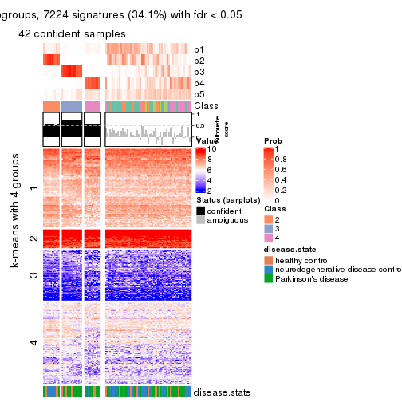
get_signatures(res, k = 6, scale_rows = FALSE)
Compare the overlap of signatures from different k:
compare_signatures(res)
get_signature() returns a data frame invisibly. TO get the list of signatures, the function
call should be assigned to a variable explicitly. In following code, if plot argument is set
to FALSE, no heatmap is plotted while only the differential analysis is performed.
# code only for demonstration
tb = get_signature(res, k = ..., plot = FALSE)
An example of the output of tb is:
#> which_row fdr mean_1 mean_2 scaled_mean_1 scaled_mean_2 km
#> 1 38 0.042760348 8.373488 9.131774 -0.5533452 0.5164555 1
#> 2 40 0.018707592 7.106213 8.469186 -0.6173731 0.5762149 1
#> 3 55 0.019134737 10.221463 11.207825 -0.6159697 0.5749050 1
#> 4 59 0.006059896 5.921854 7.869574 -0.6899429 0.6439467 1
#> 5 60 0.018055526 8.928898 10.211722 -0.6204761 0.5791110 1
#> 6 98 0.009384629 15.714769 14.887706 0.6635654 -0.6193277 2
...
The columns in tb are:
which_row: row indices corresponding to the input matrix.fdr: FDR for the differential test. mean_x: The mean value in group x.scaled_mean_x: The mean value in group x after rows are scaled.km: Row groups if k-means clustering is applied to rows.UMAP plot which shows how samples are separated.
dimension_reduction(res, k = 2, method = "UMAP")
dimension_reduction(res, k = 3, method = "UMAP")
dimension_reduction(res, k = 4, method = "UMAP")
dimension_reduction(res, k = 5, method = "UMAP")
dimension_reduction(res, k = 6, method = "UMAP")
Following heatmap shows how subgroups are split when increasing k:
collect_classes(res)
Test correlation between subgroups and known annotations. If the known annotation is numeric, one-way ANOVA test is applied, and if the known annotation is discrete, chi-squared contingency table test is applied.
test_to_known_factors(res)
#> n disease.state(p) k
#> MAD:skmeans 93 0.037721 2
#> MAD:skmeans 89 0.043605 3
#> MAD:skmeans 57 0.007439 4
#> MAD:skmeans 42 0.004020 5
#> MAD:skmeans 21 0.000351 6
If matrix rows can be associated to genes, consider to use functional_enrichment(res,
...) to perform function enrichment for the signature genes. See this vignette for more detailed explanations.
The object with results only for a single top-value method and a single partition method can be extracted as:
res = res_list["MAD", "pam"]
# you can also extract it by
# res = res_list["MAD:pam"]
A summary of res and all the functions that can be applied to it:
res
#> A 'ConsensusPartition' object with k = 2, 3, 4, 5, 6.
#> On a matrix with 21168 rows and 105 columns.
#> Top rows (1000, 2000, 3000, 4000, 5000) are extracted by 'MAD' method.
#> Subgroups are detected by 'pam' method.
#> Performed in total 1250 partitions by row resampling.
#> Best k for subgroups seems to be 2.
#>
#> Following methods can be applied to this 'ConsensusPartition' object:
#> [1] "cola_report" "collect_classes" "collect_plots"
#> [4] "collect_stats" "colnames" "compare_signatures"
#> [7] "consensus_heatmap" "dimension_reduction" "functional_enrichment"
#> [10] "get_anno_col" "get_anno" "get_classes"
#> [13] "get_consensus" "get_matrix" "get_membership"
#> [16] "get_param" "get_signatures" "get_stats"
#> [19] "is_best_k" "is_stable_k" "membership_heatmap"
#> [22] "ncol" "nrow" "plot_ecdf"
#> [25] "rownames" "select_partition_number" "show"
#> [28] "suggest_best_k" "test_to_known_factors"
collect_plots() function collects all the plots made from res for all k (number of partitions)
into one single page to provide an easy and fast comparison between different k.
collect_plots(res)
The plots are:
k and the heatmap of
predicted classes for each k.k.k.k.All the plots in panels can be made by individual functions and they are plotted later in this section.
select_partition_number() produces several plots showing different
statistics for choosing “optimized” k. There are following statistics:
k;k, the area increased is defined as \(A_k - A_{k-1}\).The detailed explanations of these statistics can be found in the cola vignette.
Generally speaking, lower PAC score, higher mean silhouette score or higher
concordance corresponds to better partition. Rand index and Jaccard index
measure how similar the current partition is compared to partition with k-1.
If they are too similar, we won't accept k is better than k-1.
select_partition_number(res)
The numeric values for all these statistics can be obtained by get_stats().
get_stats(res)
#> k 1-PAC mean_silhouette concordance area_increased Rand Jaccard
#> 2 2 0.331 0.834 0.874 0.4735 0.534 0.534
#> 3 3 0.398 0.774 0.831 0.1957 0.914 0.838
#> 4 4 0.413 0.619 0.798 0.0976 0.982 0.961
#> 5 5 0.417 0.598 0.783 0.0335 0.989 0.975
#> 6 6 0.429 0.629 0.774 0.0227 0.979 0.952
suggest_best_k() suggests the best \(k\) based on these statistics. The rules are as follows:
suggest_best_k(res)
#> [1] 2
Following shows the table of the partitions (You need to click the show/hide
code output link to see it). The membership matrix (columns with name p*)
is inferred by
clue::cl_consensus()
function with the SE method. Basically the value in the membership matrix
represents the probability to belong to a certain group. The finall class
label for an item is determined with the group with highest probability it
belongs to.
In get_classes() function, the entropy is calculated from the membership
matrix and the silhouette score is calculated from the consensus matrix.
cbind(get_classes(res, k = 2), get_membership(res, k = 2))
#> class entropy silhouette p1 p2
#> GSM153405 1 0.3733 0.887 0.928 0.072
#> GSM153406 1 0.1184 0.880 0.984 0.016
#> GSM153419 1 0.0000 0.874 1.000 0.000
#> GSM153423 2 0.0000 0.888 0.000 1.000
#> GSM153425 1 0.0376 0.875 0.996 0.004
#> GSM153427 1 0.7883 0.849 0.764 0.236
#> GSM153428 1 0.6712 0.874 0.824 0.176
#> GSM153429 1 0.7219 0.784 0.800 0.200
#> GSM153433 1 0.5408 0.885 0.876 0.124
#> GSM153444 2 0.0000 0.888 0.000 1.000
#> GSM153448 2 0.9866 0.123 0.432 0.568
#> GSM153451 2 0.0938 0.890 0.012 0.988
#> GSM153452 1 0.6973 0.870 0.812 0.188
#> GSM153477 2 0.4939 0.877 0.108 0.892
#> GSM153479 2 0.4431 0.884 0.092 0.908
#> GSM153484 2 0.9323 0.576 0.348 0.652
#> GSM153488 1 0.3733 0.886 0.928 0.072
#> GSM153496 1 0.1843 0.880 0.972 0.028
#> GSM153497 2 0.4298 0.883 0.088 0.912
#> GSM153500 1 0.6343 0.884 0.840 0.160
#> GSM153503 1 0.4431 0.894 0.908 0.092
#> GSM153508 2 0.7376 0.838 0.208 0.792
#> GSM153409 2 0.3114 0.881 0.056 0.944
#> GSM153426 1 0.9977 0.368 0.528 0.472
#> GSM153431 1 0.4431 0.890 0.908 0.092
#> GSM153438 2 0.0672 0.890 0.008 0.992
#> GSM153440 1 0.6048 0.881 0.852 0.148
#> GSM153447 1 0.6623 0.876 0.828 0.172
#> GSM153450 2 0.0000 0.888 0.000 1.000
#> GSM153456 2 0.0000 0.888 0.000 1.000
#> GSM153457 2 0.0938 0.891 0.012 0.988
#> GSM153458 2 0.1414 0.889 0.020 0.980
#> GSM153459 2 0.0000 0.888 0.000 1.000
#> GSM153460 2 0.0000 0.888 0.000 1.000
#> GSM153461 1 0.8909 0.769 0.692 0.308
#> GSM153463 1 0.5946 0.885 0.856 0.144
#> GSM153464 2 0.5294 0.878 0.120 0.880
#> GSM153466 1 0.7376 0.785 0.792 0.208
#> GSM153467 2 0.1633 0.888 0.024 0.976
#> GSM153468 1 0.5408 0.867 0.876 0.124
#> GSM153469 2 0.7602 0.827 0.220 0.780
#> GSM153470 2 0.5408 0.872 0.124 0.876
#> GSM153471 2 0.6048 0.872 0.148 0.852
#> GSM153472 1 0.3733 0.889 0.928 0.072
#> GSM153473 1 0.2778 0.888 0.952 0.048
#> GSM153474 1 0.8386 0.752 0.732 0.268
#> GSM153475 1 0.7883 0.829 0.764 0.236
#> GSM153476 1 0.2236 0.884 0.964 0.036
#> GSM153478 1 0.5059 0.894 0.888 0.112
#> GSM153480 2 0.6048 0.864 0.148 0.852
#> GSM153486 2 0.8813 0.739 0.300 0.700
#> GSM153487 2 0.6048 0.866 0.148 0.852
#> GSM153499 1 0.4161 0.892 0.916 0.084
#> GSM153504 1 0.5059 0.896 0.888 0.112
#> GSM153507 2 0.6623 0.839 0.172 0.828
#> GSM153404 1 0.0672 0.877 0.992 0.008
#> GSM153407 1 0.6887 0.871 0.816 0.184
#> GSM153408 1 0.0000 0.874 1.000 0.000
#> GSM153410 1 0.0000 0.874 1.000 0.000
#> GSM153411 1 0.0000 0.874 1.000 0.000
#> GSM153412 1 0.0000 0.874 1.000 0.000
#> GSM153413 1 0.0000 0.874 1.000 0.000
#> GSM153414 1 0.8207 0.813 0.744 0.256
#> GSM153415 1 0.0000 0.874 1.000 0.000
#> GSM153416 2 0.0000 0.888 0.000 1.000
#> GSM153417 1 0.4431 0.882 0.908 0.092
#> GSM153418 1 0.0000 0.874 1.000 0.000
#> GSM153420 1 0.6343 0.878 0.840 0.160
#> GSM153421 1 0.3879 0.887 0.924 0.076
#> GSM153422 1 0.5842 0.880 0.860 0.140
#> GSM153424 1 0.7299 0.863 0.796 0.204
#> GSM153430 1 0.5946 0.889 0.856 0.144
#> GSM153432 2 0.2948 0.893 0.052 0.948
#> GSM153434 1 0.2423 0.887 0.960 0.040
#> GSM153435 1 0.9795 0.576 0.584 0.416
#> GSM153436 2 0.2236 0.882 0.036 0.964
#> GSM153437 2 0.0672 0.890 0.008 0.992
#> GSM153439 1 0.8327 0.659 0.736 0.264
#> GSM153441 1 1.0000 0.325 0.500 0.500
#> GSM153442 1 0.8016 0.839 0.756 0.244
#> GSM153443 2 0.0672 0.888 0.008 0.992
#> GSM153445 2 0.5737 0.869 0.136 0.864
#> GSM153446 2 0.6148 0.860 0.152 0.848
#> GSM153449 1 0.4161 0.894 0.916 0.084
#> GSM153453 1 0.3431 0.888 0.936 0.064
#> GSM153454 1 0.2603 0.887 0.956 0.044
#> GSM153455 1 0.6531 0.865 0.832 0.168
#> GSM153462 2 0.3431 0.890 0.064 0.936
#> GSM153465 1 0.9323 0.590 0.652 0.348
#> GSM153481 2 0.5178 0.883 0.116 0.884
#> GSM153482 1 0.6887 0.874 0.816 0.184
#> GSM153483 1 0.8813 0.625 0.700 0.300
#> GSM153485 2 0.9427 0.535 0.360 0.640
#> GSM153489 1 0.5946 0.890 0.856 0.144
#> GSM153490 1 0.4431 0.895 0.908 0.092
#> GSM153491 1 0.6623 0.875 0.828 0.172
#> GSM153492 1 0.6343 0.883 0.840 0.160
#> GSM153493 1 0.5059 0.892 0.888 0.112
#> GSM153494 2 0.9775 0.259 0.412 0.588
#> GSM153495 1 0.3879 0.893 0.924 0.076
#> GSM153498 1 0.2778 0.890 0.952 0.048
#> GSM153501 1 0.6148 0.888 0.848 0.152
#> GSM153502 1 0.2423 0.884 0.960 0.040
#> GSM153505 1 0.5629 0.889 0.868 0.132
#> GSM153506 2 0.4022 0.888 0.080 0.920
cbind(get_classes(res, k = 3), get_membership(res, k = 3))
#> class entropy silhouette p1 p2 p3
#> GSM153405 1 0.4121 0.841 0.876 0.040 0.084
#> GSM153406 1 0.2301 0.834 0.936 0.004 0.060
#> GSM153419 1 0.3816 0.805 0.852 0.000 0.148
#> GSM153423 2 0.2749 0.845 0.064 0.924 0.012
#> GSM153425 3 0.6244 0.112 0.440 0.000 0.560
#> GSM153427 1 0.4345 0.826 0.848 0.136 0.016
#> GSM153428 1 0.4519 0.831 0.852 0.116 0.032
#> GSM153429 1 0.5159 0.763 0.820 0.140 0.040
#> GSM153433 1 0.3765 0.846 0.888 0.084 0.028
#> GSM153444 2 0.3091 0.839 0.072 0.912 0.016
#> GSM153448 2 0.6779 0.087 0.444 0.544 0.012
#> GSM153451 2 0.1031 0.860 0.024 0.976 0.000
#> GSM153452 1 0.5053 0.825 0.812 0.164 0.024
#> GSM153477 2 0.2301 0.862 0.060 0.936 0.004
#> GSM153479 2 0.2711 0.854 0.088 0.912 0.000
#> GSM153484 2 0.6865 0.516 0.384 0.596 0.020
#> GSM153488 1 0.1482 0.844 0.968 0.012 0.020
#> GSM153496 1 0.2846 0.838 0.924 0.020 0.056
#> GSM153497 2 0.2774 0.861 0.072 0.920 0.008
#> GSM153500 1 0.4892 0.842 0.840 0.112 0.048
#> GSM153503 1 0.6016 0.627 0.724 0.020 0.256
#> GSM153508 2 0.5167 0.810 0.192 0.792 0.016
#> GSM153409 2 0.4136 0.826 0.116 0.864 0.020
#> GSM153426 1 0.6783 0.427 0.588 0.396 0.016
#> GSM153431 1 0.2050 0.847 0.952 0.020 0.028
#> GSM153438 2 0.1015 0.862 0.012 0.980 0.008
#> GSM153440 1 0.4662 0.814 0.844 0.032 0.124
#> GSM153447 1 0.4945 0.837 0.840 0.104 0.056
#> GSM153450 2 0.0661 0.859 0.008 0.988 0.004
#> GSM153456 2 0.0000 0.858 0.000 1.000 0.000
#> GSM153457 2 0.0424 0.860 0.008 0.992 0.000
#> GSM153458 2 0.0237 0.858 0.004 0.996 0.000
#> GSM153459 2 0.0000 0.858 0.000 1.000 0.000
#> GSM153460 2 0.1753 0.854 0.048 0.952 0.000
#> GSM153461 1 0.5461 0.763 0.768 0.216 0.016
#> GSM153463 1 0.6062 0.392 0.616 0.000 0.384
#> GSM153464 2 0.2796 0.850 0.092 0.908 0.000
#> GSM153466 1 0.5119 0.756 0.812 0.160 0.028
#> GSM153467 2 0.2955 0.855 0.080 0.912 0.008
#> GSM153468 1 0.5239 0.788 0.808 0.160 0.032
#> GSM153469 2 0.4521 0.813 0.180 0.816 0.004
#> GSM153470 2 0.4164 0.838 0.144 0.848 0.008
#> GSM153471 2 0.4634 0.838 0.164 0.824 0.012
#> GSM153472 1 0.3042 0.852 0.920 0.040 0.040
#> GSM153473 1 0.2443 0.851 0.940 0.032 0.028
#> GSM153474 1 0.5610 0.723 0.776 0.196 0.028
#> GSM153475 1 0.4411 0.812 0.844 0.140 0.016
#> GSM153476 1 0.2280 0.838 0.940 0.008 0.052
#> GSM153478 1 0.3310 0.851 0.908 0.064 0.028
#> GSM153480 2 0.3500 0.843 0.116 0.880 0.004
#> GSM153486 2 0.5956 0.716 0.264 0.720 0.016
#> GSM153487 2 0.5020 0.819 0.192 0.796 0.012
#> GSM153499 1 0.2569 0.851 0.936 0.032 0.032
#> GSM153504 1 0.2845 0.850 0.920 0.068 0.012
#> GSM153507 2 0.5687 0.775 0.224 0.756 0.020
#> GSM153404 1 0.2774 0.831 0.920 0.008 0.072
#> GSM153407 1 0.5319 0.820 0.824 0.104 0.072
#> GSM153408 1 0.2356 0.827 0.928 0.000 0.072
#> GSM153410 1 0.2356 0.827 0.928 0.000 0.072
#> GSM153411 3 0.0747 0.799 0.016 0.000 0.984
#> GSM153412 1 0.2356 0.827 0.928 0.000 0.072
#> GSM153413 1 0.2625 0.827 0.916 0.000 0.084
#> GSM153414 1 0.6066 0.755 0.728 0.248 0.024
#> GSM153415 1 0.2356 0.827 0.928 0.000 0.072
#> GSM153416 2 0.2939 0.844 0.072 0.916 0.012
#> GSM153417 3 0.0747 0.799 0.016 0.000 0.984
#> GSM153418 1 0.2356 0.827 0.928 0.000 0.072
#> GSM153420 3 0.1753 0.785 0.048 0.000 0.952
#> GSM153421 3 0.0747 0.799 0.016 0.000 0.984
#> GSM153422 3 0.1529 0.793 0.040 0.000 0.960
#> GSM153424 1 0.5304 0.816 0.824 0.108 0.068
#> GSM153430 1 0.3742 0.851 0.892 0.072 0.036
#> GSM153432 2 0.2165 0.869 0.064 0.936 0.000
#> GSM153434 1 0.3589 0.848 0.900 0.048 0.052
#> GSM153435 1 0.6333 0.605 0.656 0.332 0.012
#> GSM153436 2 0.3415 0.838 0.020 0.900 0.080
#> GSM153437 2 0.0424 0.861 0.008 0.992 0.000
#> GSM153439 1 0.6295 0.637 0.728 0.236 0.036
#> GSM153441 1 0.6836 0.399 0.572 0.412 0.016
#> GSM153442 1 0.4921 0.815 0.816 0.164 0.020
#> GSM153443 2 0.1399 0.859 0.028 0.968 0.004
#> GSM153445 2 0.2711 0.851 0.088 0.912 0.000
#> GSM153446 2 0.2878 0.850 0.096 0.904 0.000
#> GSM153449 1 0.2564 0.851 0.936 0.036 0.028
#> GSM153453 1 0.3583 0.849 0.900 0.056 0.044
#> GSM153454 1 0.5623 0.576 0.716 0.004 0.280
#> GSM153455 1 0.5659 0.818 0.796 0.152 0.052
#> GSM153462 2 0.3272 0.862 0.104 0.892 0.004
#> GSM153465 1 0.6062 0.626 0.708 0.276 0.016
#> GSM153481 2 0.2261 0.866 0.068 0.932 0.000
#> GSM153482 1 0.3690 0.832 0.884 0.100 0.016
#> GSM153483 1 0.5461 0.647 0.768 0.216 0.016
#> GSM153485 2 0.6541 0.573 0.304 0.672 0.024
#> GSM153489 1 0.4479 0.850 0.860 0.096 0.044
#> GSM153490 3 0.7346 0.300 0.432 0.032 0.536
#> GSM153491 1 0.5178 0.825 0.808 0.164 0.028
#> GSM153492 1 0.4232 0.840 0.872 0.084 0.044
#> GSM153493 3 0.6049 0.699 0.204 0.040 0.756
#> GSM153494 2 0.6676 0.125 0.476 0.516 0.008
#> GSM153495 1 0.5117 0.838 0.832 0.060 0.108
#> GSM153498 1 0.3237 0.846 0.912 0.032 0.056
#> GSM153501 1 0.4174 0.843 0.872 0.092 0.036
#> GSM153502 1 0.3499 0.840 0.900 0.028 0.072
#> GSM153505 1 0.2383 0.849 0.940 0.044 0.016
#> GSM153506 2 0.2400 0.865 0.064 0.932 0.004
cbind(get_classes(res, k = 4), get_membership(res, k = 4))
#> class entropy silhouette p1 p2 p3 p4
#> GSM153405 1 0.2198 0.7590 0.920 0.000 0.008 0.072
#> GSM153406 1 0.1211 0.7475 0.960 0.000 0.000 0.040
#> GSM153419 1 0.2662 0.7337 0.900 0.000 0.084 0.016
#> GSM153423 2 0.4245 0.6753 0.020 0.784 0.000 0.196
#> GSM153425 3 0.4925 0.0756 0.428 0.000 0.572 0.000
#> GSM153427 1 0.5016 0.6052 0.600 0.004 0.000 0.396
#> GSM153428 1 0.4201 0.7313 0.788 0.012 0.004 0.196
#> GSM153429 1 0.4647 0.6635 0.704 0.008 0.000 0.288
#> GSM153433 1 0.3052 0.7523 0.860 0.000 0.004 0.136
#> GSM153444 2 0.5476 0.3952 0.020 0.584 0.000 0.396
#> GSM153448 2 0.6562 -0.2560 0.404 0.516 0.000 0.080
#> GSM153451 2 0.0188 0.7569 0.000 0.996 0.000 0.004
#> GSM153452 1 0.4215 0.7377 0.824 0.072 0.000 0.104
#> GSM153477 2 0.1042 0.7617 0.020 0.972 0.000 0.008
#> GSM153479 2 0.1576 0.7591 0.048 0.948 0.000 0.004
#> GSM153484 2 0.6264 0.1926 0.376 0.560 0.000 0.064
#> GSM153488 1 0.3448 0.7442 0.828 0.004 0.000 0.168
#> GSM153496 1 0.1707 0.7566 0.952 0.020 0.004 0.024
#> GSM153497 2 0.3494 0.6745 0.004 0.824 0.000 0.172
#> GSM153500 1 0.4917 0.6619 0.656 0.008 0.000 0.336
#> GSM153503 1 0.5816 0.6247 0.700 0.008 0.224 0.068
#> GSM153508 4 0.6719 -0.1304 0.152 0.240 0.000 0.608
#> GSM153409 2 0.5792 0.5323 0.056 0.648 0.000 0.296
#> GSM153426 1 0.7717 -0.1106 0.448 0.264 0.000 0.288
#> GSM153431 1 0.3569 0.7376 0.804 0.000 0.000 0.196
#> GSM153438 2 0.2179 0.7632 0.012 0.924 0.000 0.064
#> GSM153440 1 0.4344 0.7346 0.816 0.000 0.108 0.076
#> GSM153447 1 0.5008 0.7193 0.716 0.008 0.016 0.260
#> GSM153450 2 0.1824 0.7602 0.004 0.936 0.000 0.060
#> GSM153456 2 0.0188 0.7574 0.004 0.996 0.000 0.000
#> GSM153457 2 0.0000 0.7576 0.000 1.000 0.000 0.000
#> GSM153458 2 0.0000 0.7576 0.000 1.000 0.000 0.000
#> GSM153459 2 0.0000 0.7576 0.000 1.000 0.000 0.000
#> GSM153460 2 0.3335 0.7313 0.020 0.860 0.000 0.120
#> GSM153461 1 0.6773 0.4288 0.532 0.104 0.000 0.364
#> GSM153463 1 0.5183 0.4015 0.584 0.000 0.408 0.008
#> GSM153464 2 0.0336 0.7562 0.000 0.992 0.000 0.008
#> GSM153466 1 0.5308 0.6308 0.684 0.036 0.000 0.280
#> GSM153467 2 0.4012 0.6892 0.016 0.800 0.000 0.184
#> GSM153468 1 0.4644 0.6005 0.748 0.228 0.000 0.024
#> GSM153469 2 0.4804 0.6454 0.160 0.776 0.000 0.064
#> GSM153470 2 0.6116 0.5291 0.112 0.668 0.000 0.220
#> GSM153471 2 0.4753 0.6800 0.128 0.788 0.000 0.084
#> GSM153472 1 0.4497 0.7236 0.776 0.008 0.016 0.200
#> GSM153473 1 0.1209 0.7570 0.964 0.000 0.004 0.032
#> GSM153474 1 0.5936 0.5696 0.604 0.040 0.004 0.352
#> GSM153475 1 0.5420 0.6263 0.624 0.024 0.000 0.352
#> GSM153476 1 0.1902 0.7569 0.932 0.004 0.000 0.064
#> GSM153478 1 0.2999 0.7627 0.864 0.000 0.004 0.132
#> GSM153480 2 0.2179 0.7486 0.064 0.924 0.000 0.012
#> GSM153486 2 0.5664 0.5256 0.228 0.696 0.000 0.076
#> GSM153487 2 0.5515 0.6338 0.152 0.732 0.000 0.116
#> GSM153499 1 0.1661 0.7616 0.944 0.004 0.000 0.052
#> GSM153504 1 0.2814 0.7682 0.868 0.000 0.000 0.132
#> GSM153507 2 0.6897 0.3515 0.144 0.572 0.000 0.284
#> GSM153404 1 0.0895 0.7450 0.976 0.000 0.004 0.020
#> GSM153407 1 0.5041 0.7259 0.764 0.024 0.024 0.188
#> GSM153408 1 0.1004 0.7431 0.972 0.000 0.004 0.024
#> GSM153410 1 0.1109 0.7436 0.968 0.000 0.004 0.028
#> GSM153411 3 0.0000 0.7243 0.000 0.000 1.000 0.000
#> GSM153412 1 0.1022 0.7437 0.968 0.000 0.000 0.032
#> GSM153413 1 0.1284 0.7447 0.964 0.000 0.012 0.024
#> GSM153414 1 0.5615 0.6022 0.716 0.188 0.000 0.096
#> GSM153415 1 0.1022 0.7437 0.968 0.000 0.000 0.032
#> GSM153416 2 0.4524 0.6594 0.028 0.768 0.000 0.204
#> GSM153417 3 0.0000 0.7243 0.000 0.000 1.000 0.000
#> GSM153418 1 0.1209 0.7436 0.964 0.000 0.004 0.032
#> GSM153420 3 0.0188 0.7231 0.000 0.000 0.996 0.004
#> GSM153421 3 0.0000 0.7243 0.000 0.000 1.000 0.000
#> GSM153422 3 0.0188 0.7231 0.000 0.000 0.996 0.004
#> GSM153424 1 0.5429 0.5958 0.592 0.004 0.012 0.392
#> GSM153430 1 0.4228 0.7339 0.760 0.008 0.000 0.232
#> GSM153432 2 0.2214 0.7664 0.028 0.928 0.000 0.044
#> GSM153434 1 0.1863 0.7617 0.944 0.012 0.004 0.040
#> GSM153435 1 0.6977 0.3674 0.584 0.204 0.000 0.212
#> GSM153436 2 0.3396 0.7476 0.016 0.884 0.036 0.064
#> GSM153437 2 0.0672 0.7620 0.008 0.984 0.000 0.008
#> GSM153439 1 0.5328 0.4793 0.724 0.212 0.000 0.064
#> GSM153441 4 0.7852 -0.1572 0.332 0.276 0.000 0.392
#> GSM153442 1 0.5144 0.7054 0.732 0.052 0.000 0.216
#> GSM153443 2 0.3384 0.7337 0.024 0.860 0.000 0.116
#> GSM153445 2 0.0188 0.7572 0.004 0.996 0.000 0.000
#> GSM153446 2 0.1174 0.7635 0.020 0.968 0.000 0.012
#> GSM153449 1 0.3196 0.7607 0.856 0.008 0.000 0.136
#> GSM153453 1 0.4004 0.7580 0.836 0.040 0.004 0.120
#> GSM153454 1 0.5485 0.4641 0.680 0.004 0.280 0.036
#> GSM153455 1 0.4487 0.7137 0.808 0.092 0.000 0.100
#> GSM153462 2 0.3082 0.7547 0.032 0.884 0.000 0.084
#> GSM153465 1 0.7283 0.1739 0.524 0.184 0.000 0.292
#> GSM153481 2 0.1042 0.7610 0.020 0.972 0.000 0.008
#> GSM153482 1 0.4535 0.7091 0.704 0.004 0.000 0.292
#> GSM153483 1 0.7102 0.2605 0.548 0.164 0.000 0.288
#> GSM153485 2 0.6522 0.3816 0.224 0.632 0.000 0.144
#> GSM153489 1 0.5266 0.6506 0.656 0.016 0.004 0.324
#> GSM153490 3 0.6751 0.1192 0.396 0.000 0.508 0.096
#> GSM153491 1 0.4229 0.7429 0.824 0.048 0.004 0.124
#> GSM153492 1 0.4936 0.6254 0.624 0.004 0.000 0.372
#> GSM153493 3 0.5473 0.5075 0.152 0.004 0.744 0.100
#> GSM153494 2 0.7854 -0.3158 0.344 0.384 0.000 0.272
#> GSM153495 1 0.3370 0.7577 0.872 0.000 0.048 0.080
#> GSM153498 1 0.1489 0.7577 0.952 0.000 0.004 0.044
#> GSM153501 1 0.3863 0.7584 0.812 0.008 0.004 0.176
#> GSM153502 1 0.1722 0.7575 0.944 0.008 0.000 0.048
#> GSM153505 1 0.4382 0.6884 0.704 0.000 0.000 0.296
#> GSM153506 2 0.1305 0.7627 0.004 0.960 0.000 0.036
cbind(get_classes(res, k = 5), get_membership(res, k = 5))
#> class entropy silhouette p1 p2 p3 p4 p5
#> GSM153405 1 0.1869 0.73734 0.936 0.000 0.028 0.028 0.008
#> GSM153406 1 0.2771 0.72727 0.860 0.000 0.128 0.012 0.000
#> GSM153419 1 0.1743 0.73000 0.940 0.000 0.028 0.004 0.028
#> GSM153423 2 0.3759 0.69488 0.016 0.764 0.000 0.220 0.000
#> GSM153425 5 0.4249 0.03141 0.432 0.000 0.000 0.000 0.568
#> GSM153427 1 0.4473 0.53673 0.580 0.000 0.008 0.412 0.000
#> GSM153428 1 0.3652 0.71295 0.784 0.004 0.012 0.200 0.000
#> GSM153429 1 0.5798 0.59679 0.624 0.008 0.120 0.248 0.000
#> GSM153433 1 0.2389 0.74580 0.880 0.000 0.004 0.116 0.000
#> GSM153444 2 0.4830 0.39741 0.016 0.560 0.004 0.420 0.000
#> GSM153448 2 0.6255 -0.22656 0.396 0.496 0.020 0.088 0.000
#> GSM153451 2 0.0000 0.77827 0.000 1.000 0.000 0.000 0.000
#> GSM153452 1 0.3279 0.73979 0.864 0.048 0.016 0.072 0.000
#> GSM153477 2 0.0693 0.78187 0.012 0.980 0.008 0.000 0.000
#> GSM153479 2 0.1493 0.78267 0.024 0.948 0.028 0.000 0.000
#> GSM153484 2 0.6633 0.29926 0.304 0.548 0.100 0.048 0.000
#> GSM153488 1 0.4548 0.70314 0.752 0.000 0.120 0.128 0.000
#> GSM153496 1 0.1808 0.74959 0.936 0.008 0.044 0.012 0.000
#> GSM153497 2 0.3365 0.69542 0.008 0.808 0.004 0.180 0.000
#> GSM153500 1 0.4734 0.63328 0.652 0.000 0.036 0.312 0.000
#> GSM153503 1 0.6122 0.59862 0.644 0.000 0.080 0.060 0.216
#> GSM153508 3 0.1934 0.00000 0.052 0.016 0.928 0.004 0.000
#> GSM153409 2 0.5075 0.54123 0.044 0.628 0.004 0.324 0.000
#> GSM153426 1 0.6856 -0.16258 0.452 0.252 0.008 0.288 0.000
#> GSM153431 1 0.4867 0.68953 0.716 0.000 0.104 0.180 0.000
#> GSM153438 2 0.1894 0.78316 0.008 0.920 0.000 0.072 0.000
#> GSM153440 1 0.3859 0.73367 0.820 0.000 0.008 0.072 0.100
#> GSM153447 1 0.4560 0.69230 0.700 0.000 0.020 0.268 0.012
#> GSM153450 2 0.1894 0.77827 0.008 0.920 0.000 0.072 0.000
#> GSM153456 2 0.0000 0.77827 0.000 1.000 0.000 0.000 0.000
#> GSM153457 2 0.0000 0.77827 0.000 1.000 0.000 0.000 0.000
#> GSM153458 2 0.0000 0.77827 0.000 1.000 0.000 0.000 0.000
#> GSM153459 2 0.0000 0.77827 0.000 1.000 0.000 0.000 0.000
#> GSM153460 2 0.3022 0.75181 0.012 0.848 0.004 0.136 0.000
#> GSM153461 1 0.6000 0.35079 0.536 0.096 0.008 0.360 0.000
#> GSM153463 1 0.4350 0.42198 0.588 0.000 0.000 0.004 0.408
#> GSM153464 2 0.0000 0.77827 0.000 1.000 0.000 0.000 0.000
#> GSM153466 1 0.6171 0.54621 0.608 0.032 0.100 0.260 0.000
#> GSM153467 2 0.3596 0.71317 0.008 0.792 0.008 0.192 0.000
#> GSM153468 1 0.4121 0.62658 0.760 0.208 0.024 0.008 0.000
#> GSM153469 2 0.5286 0.65314 0.096 0.736 0.120 0.048 0.000
#> GSM153470 2 0.6416 0.51933 0.060 0.624 0.112 0.204 0.000
#> GSM153471 2 0.4686 0.71958 0.088 0.784 0.076 0.052 0.000
#> GSM153472 1 0.4961 0.68643 0.720 0.000 0.072 0.196 0.012
#> GSM153473 1 0.1981 0.75254 0.924 0.000 0.048 0.028 0.000
#> GSM153474 4 0.2754 -0.40493 0.040 0.000 0.080 0.880 0.000
#> GSM153475 1 0.5858 0.55756 0.576 0.024 0.060 0.340 0.000
#> GSM153476 1 0.3355 0.72776 0.832 0.000 0.132 0.036 0.000
#> GSM153478 1 0.2740 0.75358 0.876 0.000 0.028 0.096 0.000
#> GSM153480 2 0.2331 0.76693 0.020 0.900 0.080 0.000 0.000
#> GSM153486 2 0.5873 0.56957 0.196 0.672 0.064 0.068 0.000
#> GSM153487 2 0.5639 0.66326 0.096 0.716 0.104 0.084 0.000
#> GSM153499 1 0.1560 0.75100 0.948 0.004 0.020 0.028 0.000
#> GSM153504 1 0.3688 0.75279 0.816 0.000 0.060 0.124 0.000
#> GSM153507 2 0.6877 0.38996 0.084 0.556 0.092 0.268 0.000
#> GSM153404 1 0.1281 0.73243 0.956 0.000 0.032 0.012 0.000
#> GSM153407 1 0.4739 0.70551 0.744 0.024 0.012 0.200 0.020
#> GSM153408 1 0.1195 0.73384 0.960 0.000 0.028 0.012 0.000
#> GSM153410 1 0.1877 0.74114 0.924 0.000 0.064 0.012 0.000
#> GSM153411 5 0.0000 0.60895 0.000 0.000 0.000 0.000 1.000
#> GSM153412 1 0.1670 0.74153 0.936 0.000 0.052 0.012 0.000
#> GSM153413 1 0.1444 0.73319 0.948 0.000 0.040 0.012 0.000
#> GSM153414 1 0.4665 0.62877 0.752 0.156 0.008 0.084 0.000
#> GSM153415 1 0.2727 0.73382 0.868 0.000 0.116 0.016 0.000
#> GSM153416 2 0.4128 0.68102 0.020 0.752 0.008 0.220 0.000
#> GSM153417 5 0.0000 0.60895 0.000 0.000 0.000 0.000 1.000
#> GSM153418 1 0.2305 0.73812 0.896 0.000 0.092 0.012 0.000
#> GSM153420 5 0.0000 0.60895 0.000 0.000 0.000 0.000 1.000
#> GSM153421 5 0.0000 0.60895 0.000 0.000 0.000 0.000 1.000
#> GSM153422 5 0.0000 0.60895 0.000 0.000 0.000 0.000 1.000
#> GSM153424 1 0.4630 0.52545 0.572 0.000 0.008 0.416 0.004
#> GSM153430 1 0.4585 0.70759 0.728 0.004 0.052 0.216 0.000
#> GSM153432 2 0.1967 0.78652 0.020 0.932 0.012 0.036 0.000
#> GSM153434 1 0.1690 0.74362 0.944 0.008 0.024 0.024 0.000
#> GSM153435 1 0.6269 0.34127 0.576 0.196 0.008 0.220 0.000
#> GSM153436 2 0.2933 0.77271 0.012 0.892 0.016 0.056 0.024
#> GSM153437 2 0.0613 0.78240 0.004 0.984 0.004 0.008 0.000
#> GSM153439 1 0.5879 0.45329 0.656 0.204 0.112 0.028 0.000
#> GSM153441 4 0.6723 0.00177 0.324 0.264 0.000 0.412 0.000
#> GSM153442 1 0.4804 0.67948 0.716 0.048 0.012 0.224 0.000
#> GSM153443 2 0.2783 0.75954 0.012 0.868 0.004 0.116 0.000
#> GSM153445 2 0.0000 0.77827 0.000 1.000 0.000 0.000 0.000
#> GSM153446 2 0.1267 0.78442 0.012 0.960 0.024 0.004 0.000
#> GSM153449 1 0.4449 0.73202 0.776 0.008 0.112 0.104 0.000
#> GSM153453 1 0.4135 0.74102 0.800 0.020 0.044 0.136 0.000
#> GSM153454 1 0.5904 0.44541 0.616 0.000 0.116 0.012 0.256
#> GSM153455 1 0.4674 0.70567 0.780 0.088 0.036 0.096 0.000
#> GSM153462 2 0.3270 0.77071 0.020 0.864 0.036 0.080 0.000
#> GSM153465 1 0.7399 -0.02513 0.456 0.180 0.056 0.308 0.000
#> GSM153481 2 0.0671 0.78163 0.016 0.980 0.000 0.004 0.000
#> GSM153482 1 0.4025 0.67831 0.700 0.000 0.008 0.292 0.000
#> GSM153483 1 0.7715 0.13605 0.480 0.152 0.124 0.244 0.000
#> GSM153485 2 0.6341 0.40337 0.220 0.604 0.028 0.148 0.000
#> GSM153489 1 0.4850 0.60624 0.660 0.016 0.020 0.304 0.000
#> GSM153490 5 0.6988 0.06739 0.340 0.000 0.080 0.084 0.496
#> GSM153491 1 0.3379 0.74228 0.860 0.040 0.024 0.076 0.000
#> GSM153492 1 0.4969 0.55546 0.588 0.000 0.036 0.376 0.000
#> GSM153493 5 0.4803 0.38218 0.144 0.000 0.008 0.104 0.744
#> GSM153494 2 0.7820 -0.33063 0.292 0.368 0.064 0.276 0.000
#> GSM153495 1 0.3016 0.74018 0.884 0.000 0.032 0.040 0.044
#> GSM153498 1 0.1753 0.74473 0.936 0.000 0.032 0.032 0.000
#> GSM153501 1 0.2971 0.74783 0.836 0.000 0.008 0.156 0.000
#> GSM153502 1 0.2370 0.75275 0.904 0.000 0.056 0.040 0.000
#> GSM153505 1 0.5083 0.63025 0.652 0.000 0.068 0.280 0.000
#> GSM153506 2 0.1569 0.78192 0.008 0.944 0.004 0.044 0.000
cbind(get_classes(res, k = 6), get_membership(res, k = 6))
#> class entropy silhouette p1 p2 p3 p4 p5 p6
#> GSM153405 4 0.1590 0.74395 0.000 0.000 0.008 0.936 0.008 0.048
#> GSM153406 4 0.3529 0.73268 0.000 0.008 0.152 0.800 0.000 0.040
#> GSM153419 4 0.1976 0.74186 0.000 0.000 0.008 0.916 0.016 0.060
#> GSM153423 1 0.4360 0.71901 0.764 0.000 0.096 0.032 0.000 0.108
#> GSM153425 5 0.3817 0.01722 0.000 0.000 0.000 0.432 0.568 0.000
#> GSM153427 4 0.5188 0.61501 0.000 0.000 0.288 0.588 0.000 0.124
#> GSM153428 4 0.3703 0.73924 0.004 0.000 0.092 0.796 0.000 0.108
#> GSM153429 4 0.4940 0.64771 0.008 0.004 0.332 0.604 0.000 0.052
#> GSM153433 4 0.2190 0.76200 0.000 0.000 0.060 0.900 0.000 0.040
#> GSM153444 1 0.5787 0.46999 0.552 0.000 0.312 0.032 0.000 0.104
#> GSM153448 1 0.5862 -0.01192 0.492 0.008 0.076 0.396 0.000 0.028
#> GSM153451 1 0.0000 0.78246 1.000 0.000 0.000 0.000 0.000 0.000
#> GSM153452 4 0.3029 0.75929 0.044 0.000 0.032 0.864 0.000 0.060
#> GSM153477 1 0.0881 0.78702 0.972 0.000 0.008 0.012 0.000 0.008
#> GSM153479 1 0.1810 0.78642 0.932 0.004 0.036 0.020 0.000 0.008
#> GSM153484 1 0.6053 0.38306 0.540 0.000 0.152 0.276 0.000 0.032
#> GSM153488 4 0.3957 0.72055 0.000 0.008 0.260 0.712 0.000 0.020
#> GSM153496 4 0.2308 0.76101 0.008 0.004 0.056 0.904 0.000 0.028
#> GSM153497 1 0.3219 0.71379 0.808 0.000 0.168 0.008 0.000 0.016
#> GSM153500 4 0.5112 0.67600 0.000 0.004 0.236 0.632 0.000 0.128
#> GSM153503 4 0.5703 0.63768 0.000 0.004 0.096 0.632 0.216 0.052
#> GSM153508 2 0.0291 0.00000 0.000 0.992 0.004 0.000 0.000 0.004
#> GSM153409 1 0.5714 0.58081 0.616 0.000 0.232 0.056 0.000 0.096
#> GSM153426 4 0.6883 0.22249 0.252 0.000 0.208 0.460 0.000 0.080
#> GSM153431 4 0.4177 0.71047 0.000 0.004 0.280 0.684 0.000 0.032
#> GSM153438 1 0.2068 0.79024 0.916 0.000 0.048 0.020 0.000 0.016
#> GSM153440 4 0.3391 0.75192 0.000 0.000 0.016 0.832 0.092 0.060
#> GSM153447 4 0.4538 0.73103 0.000 0.000 0.144 0.728 0.012 0.116
#> GSM153450 1 0.1863 0.78555 0.920 0.000 0.060 0.004 0.000 0.016
#> GSM153456 1 0.0000 0.78246 1.000 0.000 0.000 0.000 0.000 0.000
#> GSM153457 1 0.0000 0.78246 1.000 0.000 0.000 0.000 0.000 0.000
#> GSM153458 1 0.0000 0.78246 1.000 0.000 0.000 0.000 0.000 0.000
#> GSM153459 1 0.0000 0.78246 1.000 0.000 0.000 0.000 0.000 0.000
#> GSM153460 1 0.3192 0.76504 0.848 0.000 0.048 0.020 0.000 0.084
#> GSM153461 4 0.6130 0.50247 0.096 0.000 0.292 0.544 0.000 0.068
#> GSM153463 4 0.4168 0.44219 0.000 0.000 0.000 0.584 0.400 0.016
#> GSM153464 1 0.0000 0.78246 1.000 0.000 0.000 0.000 0.000 0.000
#> GSM153466 4 0.5027 0.60614 0.028 0.008 0.364 0.580 0.000 0.020
#> GSM153467 1 0.4075 0.72899 0.784 0.000 0.096 0.024 0.000 0.096
#> GSM153468 4 0.4089 0.67652 0.204 0.000 0.020 0.744 0.000 0.032
#> GSM153469 1 0.5189 0.63499 0.692 0.008 0.180 0.084 0.000 0.036
#> GSM153470 1 0.5439 0.50092 0.580 0.008 0.332 0.052 0.000 0.028
#> GSM153471 1 0.4302 0.73430 0.780 0.004 0.100 0.076 0.000 0.040
#> GSM153472 4 0.4259 0.72273 0.000 0.000 0.220 0.716 0.004 0.060
#> GSM153473 4 0.1807 0.76336 0.000 0.000 0.060 0.920 0.000 0.020
#> GSM153474 3 0.3761 0.00000 0.000 0.008 0.764 0.032 0.000 0.196
#> GSM153475 4 0.5481 0.63484 0.024 0.000 0.308 0.580 0.000 0.088
#> GSM153476 4 0.3582 0.73209 0.000 0.008 0.192 0.776 0.000 0.024
#> GSM153478 4 0.2442 0.76841 0.000 0.000 0.068 0.884 0.000 0.048
#> GSM153480 1 0.2265 0.77366 0.896 0.004 0.076 0.024 0.000 0.000
#> GSM153486 1 0.5136 0.60017 0.664 0.004 0.144 0.180 0.000 0.008
#> GSM153487 1 0.4994 0.67714 0.704 0.008 0.176 0.088 0.000 0.024
#> GSM153499 4 0.2144 0.76319 0.004 0.004 0.048 0.912 0.000 0.032
#> GSM153504 4 0.3372 0.76966 0.000 0.000 0.100 0.816 0.000 0.084
#> GSM153507 1 0.5894 0.44125 0.536 0.000 0.332 0.080 0.000 0.052
#> GSM153404 4 0.1471 0.74144 0.000 0.000 0.004 0.932 0.000 0.064
#> GSM153407 4 0.4474 0.73440 0.020 0.000 0.092 0.764 0.012 0.112
#> GSM153408 4 0.1779 0.74581 0.000 0.000 0.016 0.920 0.000 0.064
#> GSM153410 4 0.2876 0.75187 0.000 0.004 0.080 0.860 0.000 0.056
#> GSM153411 5 0.0000 0.61215 0.000 0.000 0.000 0.000 1.000 0.000
#> GSM153412 4 0.2328 0.75557 0.000 0.000 0.052 0.892 0.000 0.056
#> GSM153413 4 0.1812 0.74395 0.000 0.000 0.008 0.912 0.000 0.080
#> GSM153414 4 0.4403 0.68004 0.152 0.000 0.076 0.748 0.000 0.024
#> GSM153415 4 0.3593 0.73923 0.000 0.004 0.132 0.800 0.000 0.064
#> GSM153416 1 0.4455 0.70417 0.752 0.000 0.096 0.028 0.000 0.124
#> GSM153417 5 0.0000 0.61215 0.000 0.000 0.000 0.000 1.000 0.000
#> GSM153418 4 0.2701 0.74841 0.000 0.004 0.104 0.864 0.000 0.028
#> GSM153420 5 0.0000 0.61215 0.000 0.000 0.000 0.000 1.000 0.000
#> GSM153421 5 0.0000 0.61215 0.000 0.000 0.000 0.000 1.000 0.000
#> GSM153422 5 0.0000 0.61215 0.000 0.000 0.000 0.000 1.000 0.000
#> GSM153424 4 0.5204 0.60974 0.000 0.000 0.292 0.584 0.000 0.124
#> GSM153430 4 0.4275 0.74014 0.004 0.000 0.192 0.728 0.000 0.076
#> GSM153432 1 0.2045 0.79262 0.920 0.000 0.028 0.024 0.000 0.028
#> GSM153434 4 0.1788 0.75310 0.000 0.004 0.040 0.928 0.000 0.028
#> GSM153435 4 0.6233 0.50937 0.188 0.000 0.112 0.588 0.000 0.112
#> GSM153436 1 0.2728 0.77950 0.888 0.000 0.016 0.016 0.024 0.056
#> GSM153437 1 0.0551 0.78665 0.984 0.000 0.008 0.004 0.000 0.004
#> GSM153439 4 0.5809 0.52801 0.204 0.008 0.136 0.620 0.000 0.032
#> GSM153441 4 0.7330 -0.00492 0.260 0.000 0.300 0.336 0.000 0.104
#> GSM153442 4 0.4963 0.71533 0.048 0.000 0.116 0.716 0.000 0.120
#> GSM153443 1 0.3098 0.76853 0.860 0.000 0.052 0.032 0.000 0.056
#> GSM153445 1 0.0000 0.78246 1.000 0.000 0.000 0.000 0.000 0.000
#> GSM153446 1 0.1149 0.78918 0.960 0.000 0.024 0.008 0.000 0.008
#> GSM153449 4 0.3947 0.75048 0.008 0.008 0.188 0.764 0.000 0.032
#> GSM153453 4 0.3736 0.76341 0.020 0.000 0.160 0.788 0.000 0.032
#> GSM153454 4 0.6095 0.44572 0.000 0.004 0.128 0.584 0.232 0.052
#> GSM153455 4 0.4092 0.73820 0.088 0.004 0.036 0.796 0.000 0.076
#> GSM153462 1 0.3046 0.78030 0.860 0.004 0.084 0.036 0.000 0.016
#> GSM153465 4 0.6746 0.25648 0.176 0.000 0.324 0.436 0.000 0.064
#> GSM153481 1 0.0748 0.78676 0.976 0.000 0.004 0.016 0.000 0.004
#> GSM153482 4 0.4583 0.71632 0.000 0.000 0.176 0.696 0.000 0.128
#> GSM153483 4 0.6179 0.33897 0.140 0.008 0.388 0.448 0.000 0.016
#> GSM153485 1 0.5867 0.48236 0.604 0.000 0.156 0.196 0.000 0.044
#> GSM153489 4 0.5144 0.65161 0.016 0.000 0.264 0.632 0.000 0.088
#> GSM153490 5 0.6394 -0.02577 0.000 0.004 0.112 0.340 0.488 0.056
#> GSM153491 4 0.3106 0.76244 0.036 0.000 0.048 0.860 0.000 0.056
#> GSM153492 4 0.5003 0.62208 0.000 0.000 0.320 0.588 0.000 0.092
#> GSM153493 5 0.4577 0.34155 0.000 0.000 0.084 0.144 0.740 0.032
#> GSM153494 1 0.6958 -0.05274 0.360 0.000 0.312 0.272 0.000 0.056
#> GSM153495 4 0.3018 0.75464 0.000 0.004 0.024 0.868 0.044 0.060
#> GSM153498 4 0.2094 0.75857 0.000 0.004 0.024 0.908 0.000 0.064
#> GSM153501 4 0.3032 0.76802 0.000 0.000 0.104 0.840 0.000 0.056
#> GSM153502 4 0.2488 0.76572 0.000 0.000 0.076 0.880 0.000 0.044
#> GSM153505 6 0.4853 0.00000 0.000 0.004 0.292 0.076 0.000 0.628
#> GSM153506 1 0.1577 0.78799 0.940 0.000 0.036 0.008 0.000 0.016
Heatmaps for the consensus matrix. It visualizes the probability of two samples to be in a same group.
consensus_heatmap(res, k = 2)
consensus_heatmap(res, k = 3)
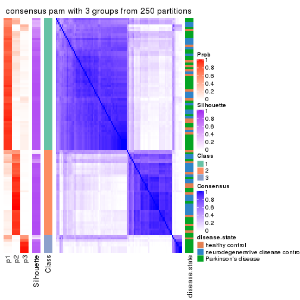
consensus_heatmap(res, k = 4)
consensus_heatmap(res, k = 5)
consensus_heatmap(res, k = 6)
Heatmaps for the membership of samples in all partitions to see how consistent they are:
membership_heatmap(res, k = 2)
membership_heatmap(res, k = 3)
membership_heatmap(res, k = 4)
membership_heatmap(res, k = 5)
membership_heatmap(res, k = 6)
As soon as we have had the classes for columns, we can look for signatures which are significantly different between classes which can be candidate marks for certain classes. Following are the heatmaps for signatures.
Signature heatmaps where rows are scaled:
get_signatures(res, k = 2)
get_signatures(res, k = 3)
get_signatures(res, k = 4)
get_signatures(res, k = 5)
get_signatures(res, k = 6)
Signature heatmaps where rows are not scaled:
get_signatures(res, k = 2, scale_rows = FALSE)
get_signatures(res, k = 3, scale_rows = FALSE)

get_signatures(res, k = 4, scale_rows = FALSE)
get_signatures(res, k = 5, scale_rows = FALSE)
get_signatures(res, k = 6, scale_rows = FALSE)
Compare the overlap of signatures from different k:
compare_signatures(res)
get_signature() returns a data frame invisibly. TO get the list of signatures, the function
call should be assigned to a variable explicitly. In following code, if plot argument is set
to FALSE, no heatmap is plotted while only the differential analysis is performed.
# code only for demonstration
tb = get_signature(res, k = ..., plot = FALSE)
An example of the output of tb is:
#> which_row fdr mean_1 mean_2 scaled_mean_1 scaled_mean_2 km
#> 1 38 0.042760348 8.373488 9.131774 -0.5533452 0.5164555 1
#> 2 40 0.018707592 7.106213 8.469186 -0.6173731 0.5762149 1
#> 3 55 0.019134737 10.221463 11.207825 -0.6159697 0.5749050 1
#> 4 59 0.006059896 5.921854 7.869574 -0.6899429 0.6439467 1
#> 5 60 0.018055526 8.928898 10.211722 -0.6204761 0.5791110 1
#> 6 98 0.009384629 15.714769 14.887706 0.6635654 -0.6193277 2
...
The columns in tb are:
which_row: row indices corresponding to the input matrix.fdr: FDR for the differential test. mean_x: The mean value in group x.scaled_mean_x: The mean value in group x after rows are scaled.km: Row groups if k-means clustering is applied to rows.UMAP plot which shows how samples are separated.
dimension_reduction(res, k = 2, method = "UMAP")
dimension_reduction(res, k = 3, method = "UMAP")
dimension_reduction(res, k = 4, method = "UMAP")
dimension_reduction(res, k = 5, method = "UMAP")
dimension_reduction(res, k = 6, method = "UMAP")
Following heatmap shows how subgroups are split when increasing k:
collect_classes(res)
Test correlation between subgroups and known annotations. If the known annotation is numeric, one-way ANOVA test is applied, and if the known annotation is discrete, chi-squared contingency table test is applied.
test_to_known_factors(res)
#> n disease.state(p) k
#> MAD:pam 101 0.0212 2
#> MAD:pam 98 0.0124 3
#> MAD:pam 87 0.0119 4
#> MAD:pam 85 0.0152 5
#> MAD:pam 87 0.0183 6
If matrix rows can be associated to genes, consider to use functional_enrichment(res,
...) to perform function enrichment for the signature genes. See this vignette for more detailed explanations.
The object with results only for a single top-value method and a single partition method can be extracted as:
res = res_list["MAD", "mclust"]
# you can also extract it by
# res = res_list["MAD:mclust"]
A summary of res and all the functions that can be applied to it:
res
#> A 'ConsensusPartition' object with k = 2, 3, 4, 5, 6.
#> On a matrix with 21168 rows and 105 columns.
#> Top rows (1000, 2000, 3000, 4000, 5000) are extracted by 'MAD' method.
#> Subgroups are detected by 'mclust' method.
#> Performed in total 1250 partitions by row resampling.
#> Best k for subgroups seems to be 2.
#>
#> Following methods can be applied to this 'ConsensusPartition' object:
#> [1] "cola_report" "collect_classes" "collect_plots"
#> [4] "collect_stats" "colnames" "compare_signatures"
#> [7] "consensus_heatmap" "dimension_reduction" "functional_enrichment"
#> [10] "get_anno_col" "get_anno" "get_classes"
#> [13] "get_consensus" "get_matrix" "get_membership"
#> [16] "get_param" "get_signatures" "get_stats"
#> [19] "is_best_k" "is_stable_k" "membership_heatmap"
#> [22] "ncol" "nrow" "plot_ecdf"
#> [25] "rownames" "select_partition_number" "show"
#> [28] "suggest_best_k" "test_to_known_factors"
collect_plots() function collects all the plots made from res for all k (number of partitions)
into one single page to provide an easy and fast comparison between different k.
collect_plots(res)
The plots are:
k and the heatmap of
predicted classes for each k.k.k.k.All the plots in panels can be made by individual functions and they are plotted later in this section.
select_partition_number() produces several plots showing different
statistics for choosing “optimized” k. There are following statistics:
k;k, the area increased is defined as \(A_k - A_{k-1}\).The detailed explanations of these statistics can be found in the cola vignette.
Generally speaking, lower PAC score, higher mean silhouette score or higher
concordance corresponds to better partition. Rand index and Jaccard index
measure how similar the current partition is compared to partition with k-1.
If they are too similar, we won't accept k is better than k-1.
select_partition_number(res)
The numeric values for all these statistics can be obtained by get_stats().
get_stats(res)
#> k 1-PAC mean_silhouette concordance area_increased Rand Jaccard
#> 2 2 1.000 0.974 0.990 0.2778 0.726 0.726
#> 3 3 0.476 0.828 0.870 1.0170 0.704 0.595
#> 4 4 0.793 0.856 0.927 0.2092 0.882 0.741
#> 5 5 0.700 0.686 0.846 0.0533 0.975 0.929
#> 6 6 0.641 0.617 0.797 0.0546 0.935 0.812
suggest_best_k() suggests the best \(k\) based on these statistics. The rules are as follows:
suggest_best_k(res)
#> [1] 2
Following shows the table of the partitions (You need to click the show/hide
code output link to see it). The membership matrix (columns with name p*)
is inferred by
clue::cl_consensus()
function with the SE method. Basically the value in the membership matrix
represents the probability to belong to a certain group. The finall class
label for an item is determined with the group with highest probability it
belongs to.
In get_classes() function, the entropy is calculated from the membership
matrix and the silhouette score is calculated from the consensus matrix.
cbind(get_classes(res, k = 2), get_membership(res, k = 2))
#> class entropy silhouette p1 p2
#> GSM153405 1 0.0000 0.974 1.000 0.000
#> GSM153406 1 0.0000 0.974 1.000 0.000
#> GSM153419 1 0.0000 0.974 1.000 0.000
#> GSM153423 2 0.0000 0.992 0.000 1.000
#> GSM153425 1 0.0000 0.974 1.000 0.000
#> GSM153427 2 0.7745 0.696 0.228 0.772
#> GSM153428 2 0.0000 0.992 0.000 1.000
#> GSM153429 2 0.0000 0.992 0.000 1.000
#> GSM153433 2 0.0000 0.992 0.000 1.000
#> GSM153444 2 0.0000 0.992 0.000 1.000
#> GSM153448 2 0.0000 0.992 0.000 1.000
#> GSM153451 2 0.0000 0.992 0.000 1.000
#> GSM153452 2 0.0000 0.992 0.000 1.000
#> GSM153477 2 0.0000 0.992 0.000 1.000
#> GSM153479 2 0.0000 0.992 0.000 1.000
#> GSM153484 2 0.0000 0.992 0.000 1.000
#> GSM153488 2 0.0000 0.992 0.000 1.000
#> GSM153496 2 0.0000 0.992 0.000 1.000
#> GSM153497 2 0.0000 0.992 0.000 1.000
#> GSM153500 2 0.0376 0.989 0.004 0.996
#> GSM153503 2 0.0376 0.989 0.004 0.996
#> GSM153508 2 0.0376 0.989 0.004 0.996
#> GSM153409 2 0.0000 0.992 0.000 1.000
#> GSM153426 2 0.0000 0.992 0.000 1.000
#> GSM153431 2 0.0000 0.992 0.000 1.000
#> GSM153438 2 0.0000 0.992 0.000 1.000
#> GSM153440 2 0.9087 0.511 0.324 0.676
#> GSM153447 2 0.0000 0.992 0.000 1.000
#> GSM153450 2 0.0000 0.992 0.000 1.000
#> GSM153456 2 0.0000 0.992 0.000 1.000
#> GSM153457 2 0.0000 0.992 0.000 1.000
#> GSM153458 2 0.0000 0.992 0.000 1.000
#> GSM153459 2 0.0000 0.992 0.000 1.000
#> GSM153460 2 0.0000 0.992 0.000 1.000
#> GSM153461 2 0.0000 0.992 0.000 1.000
#> GSM153463 2 0.0376 0.989 0.004 0.996
#> GSM153464 2 0.0000 0.992 0.000 1.000
#> GSM153466 2 0.0000 0.992 0.000 1.000
#> GSM153467 2 0.0000 0.992 0.000 1.000
#> GSM153468 2 0.0000 0.992 0.000 1.000
#> GSM153469 2 0.0000 0.992 0.000 1.000
#> GSM153470 2 0.0000 0.992 0.000 1.000
#> GSM153471 2 0.0000 0.992 0.000 1.000
#> GSM153472 2 0.0000 0.992 0.000 1.000
#> GSM153473 2 0.0000 0.992 0.000 1.000
#> GSM153474 2 0.0376 0.989 0.004 0.996
#> GSM153475 2 0.0000 0.992 0.000 1.000
#> GSM153476 2 0.4562 0.889 0.096 0.904
#> GSM153478 2 0.0000 0.992 0.000 1.000
#> GSM153480 2 0.0000 0.992 0.000 1.000
#> GSM153486 2 0.0000 0.992 0.000 1.000
#> GSM153487 2 0.0000 0.992 0.000 1.000
#> GSM153499 2 0.0000 0.992 0.000 1.000
#> GSM153504 2 0.0000 0.992 0.000 1.000
#> GSM153507 2 0.0000 0.992 0.000 1.000
#> GSM153404 1 0.0000 0.974 1.000 0.000
#> GSM153407 1 0.9795 0.278 0.584 0.416
#> GSM153408 1 0.0000 0.974 1.000 0.000
#> GSM153410 1 0.0000 0.974 1.000 0.000
#> GSM153411 1 0.0000 0.974 1.000 0.000
#> GSM153412 1 0.0000 0.974 1.000 0.000
#> GSM153413 1 0.0000 0.974 1.000 0.000
#> GSM153414 2 0.0000 0.992 0.000 1.000
#> GSM153415 1 0.0000 0.974 1.000 0.000
#> GSM153416 2 0.0000 0.992 0.000 1.000
#> GSM153417 1 0.0000 0.974 1.000 0.000
#> GSM153418 1 0.0000 0.974 1.000 0.000
#> GSM153420 1 0.0000 0.974 1.000 0.000
#> GSM153421 1 0.0000 0.974 1.000 0.000
#> GSM153422 1 0.0000 0.974 1.000 0.000
#> GSM153424 2 0.0000 0.992 0.000 1.000
#> GSM153430 2 0.0000 0.992 0.000 1.000
#> GSM153432 2 0.0000 0.992 0.000 1.000
#> GSM153434 2 0.0000 0.992 0.000 1.000
#> GSM153435 2 0.0000 0.992 0.000 1.000
#> GSM153436 2 0.0000 0.992 0.000 1.000
#> GSM153437 2 0.0000 0.992 0.000 1.000
#> GSM153439 2 0.0000 0.992 0.000 1.000
#> GSM153441 2 0.0000 0.992 0.000 1.000
#> GSM153442 2 0.0000 0.992 0.000 1.000
#> GSM153443 2 0.0000 0.992 0.000 1.000
#> GSM153445 2 0.0000 0.992 0.000 1.000
#> GSM153446 2 0.0000 0.992 0.000 1.000
#> GSM153449 2 0.0000 0.992 0.000 1.000
#> GSM153453 2 0.0000 0.992 0.000 1.000
#> GSM153454 2 0.0376 0.989 0.004 0.996
#> GSM153455 2 0.0000 0.992 0.000 1.000
#> GSM153462 2 0.0000 0.992 0.000 1.000
#> GSM153465 2 0.0000 0.992 0.000 1.000
#> GSM153481 2 0.0000 0.992 0.000 1.000
#> GSM153482 2 0.0000 0.992 0.000 1.000
#> GSM153483 2 0.0000 0.992 0.000 1.000
#> GSM153485 2 0.0000 0.992 0.000 1.000
#> GSM153489 2 0.0000 0.992 0.000 1.000
#> GSM153490 2 0.0000 0.992 0.000 1.000
#> GSM153491 2 0.0000 0.992 0.000 1.000
#> GSM153492 2 0.0000 0.992 0.000 1.000
#> GSM153493 2 0.0000 0.992 0.000 1.000
#> GSM153494 2 0.0000 0.992 0.000 1.000
#> GSM153495 2 0.0376 0.989 0.004 0.996
#> GSM153498 2 0.0000 0.992 0.000 1.000
#> GSM153501 2 0.0376 0.989 0.004 0.996
#> GSM153502 2 0.0000 0.992 0.000 1.000
#> GSM153505 2 0.0376 0.989 0.004 0.996
#> GSM153506 2 0.0000 0.992 0.000 1.000
cbind(get_classes(res, k = 3), get_membership(res, k = 3))
#> class entropy silhouette p1 p2 p3
#> GSM153405 3 0.0000 0.997 0.000 0.000 1.000
#> GSM153406 3 0.0000 0.997 0.000 0.000 1.000
#> GSM153419 3 0.0000 0.997 0.000 0.000 1.000
#> GSM153423 2 0.4974 0.890 0.236 0.764 0.000
#> GSM153425 3 0.1529 0.959 0.000 0.040 0.960
#> GSM153427 2 0.5000 0.819 0.124 0.832 0.044
#> GSM153428 2 0.3941 0.854 0.156 0.844 0.000
#> GSM153429 1 0.0424 0.859 0.992 0.008 0.000
#> GSM153433 1 0.3482 0.815 0.872 0.128 0.000
#> GSM153444 2 0.4974 0.890 0.236 0.764 0.000
#> GSM153448 1 0.4702 0.669 0.788 0.212 0.000
#> GSM153451 2 0.4974 0.890 0.236 0.764 0.000
#> GSM153452 2 0.4235 0.853 0.176 0.824 0.000
#> GSM153477 1 0.0747 0.855 0.984 0.016 0.000
#> GSM153479 1 0.0424 0.858 0.992 0.008 0.000
#> GSM153484 1 0.0424 0.859 0.992 0.008 0.000
#> GSM153488 1 0.1643 0.856 0.956 0.044 0.000
#> GSM153496 1 0.4452 0.782 0.808 0.192 0.000
#> GSM153497 2 0.5016 0.887 0.240 0.760 0.000
#> GSM153500 1 0.5098 0.736 0.752 0.248 0.000
#> GSM153503 1 0.5098 0.736 0.752 0.248 0.000
#> GSM153508 1 0.4346 0.798 0.816 0.184 0.000
#> GSM153409 2 0.4974 0.890 0.236 0.764 0.000
#> GSM153426 2 0.6111 0.643 0.396 0.604 0.000
#> GSM153431 2 0.4702 0.861 0.212 0.788 0.000
#> GSM153438 2 0.5363 0.855 0.276 0.724 0.000
#> GSM153440 2 0.6519 0.713 0.132 0.760 0.108
#> GSM153447 2 0.5098 0.745 0.248 0.752 0.000
#> GSM153450 2 0.4974 0.890 0.236 0.764 0.000
#> GSM153456 2 0.4974 0.890 0.236 0.764 0.000
#> GSM153457 2 0.4974 0.890 0.236 0.764 0.000
#> GSM153458 2 0.4974 0.890 0.236 0.764 0.000
#> GSM153459 2 0.4974 0.890 0.236 0.764 0.000
#> GSM153460 2 0.4974 0.890 0.236 0.764 0.000
#> GSM153461 2 0.5138 0.885 0.252 0.748 0.000
#> GSM153463 2 0.6286 -0.146 0.464 0.536 0.000
#> GSM153464 1 0.4178 0.722 0.828 0.172 0.000
#> GSM153466 1 0.1411 0.856 0.964 0.036 0.000
#> GSM153467 1 0.4291 0.723 0.820 0.180 0.000
#> GSM153468 1 0.0892 0.860 0.980 0.020 0.000
#> GSM153469 1 0.0237 0.857 0.996 0.004 0.000
#> GSM153470 1 0.0892 0.854 0.980 0.020 0.000
#> GSM153471 1 0.0892 0.854 0.980 0.020 0.000
#> GSM153472 1 0.2356 0.846 0.928 0.072 0.000
#> GSM153473 1 0.2356 0.843 0.928 0.072 0.000
#> GSM153474 1 0.5138 0.737 0.748 0.252 0.000
#> GSM153475 1 0.1643 0.855 0.956 0.044 0.000
#> GSM153476 1 0.4015 0.823 0.876 0.096 0.028
#> GSM153478 1 0.4504 0.764 0.804 0.196 0.000
#> GSM153480 1 0.4291 0.711 0.820 0.180 0.000
#> GSM153486 1 0.4399 0.714 0.812 0.188 0.000
#> GSM153487 1 0.0424 0.858 0.992 0.008 0.000
#> GSM153499 1 0.1031 0.857 0.976 0.024 0.000
#> GSM153504 1 0.2959 0.832 0.900 0.100 0.000
#> GSM153507 1 0.0747 0.859 0.984 0.016 0.000
#> GSM153404 3 0.0000 0.997 0.000 0.000 1.000
#> GSM153407 2 0.5207 0.812 0.124 0.824 0.052
#> GSM153408 3 0.0000 0.997 0.000 0.000 1.000
#> GSM153410 3 0.0000 0.997 0.000 0.000 1.000
#> GSM153411 3 0.0000 0.997 0.000 0.000 1.000
#> GSM153412 3 0.0000 0.997 0.000 0.000 1.000
#> GSM153413 3 0.0000 0.997 0.000 0.000 1.000
#> GSM153414 2 0.4504 0.872 0.196 0.804 0.000
#> GSM153415 3 0.0000 0.997 0.000 0.000 1.000
#> GSM153416 2 0.5178 0.875 0.256 0.744 0.000
#> GSM153417 3 0.0000 0.997 0.000 0.000 1.000
#> GSM153418 3 0.0000 0.997 0.000 0.000 1.000
#> GSM153420 3 0.0000 0.997 0.000 0.000 1.000
#> GSM153421 3 0.0000 0.997 0.000 0.000 1.000
#> GSM153422 3 0.0000 0.997 0.000 0.000 1.000
#> GSM153424 2 0.3941 0.854 0.156 0.844 0.000
#> GSM153430 1 0.4002 0.792 0.840 0.160 0.000
#> GSM153432 1 0.1860 0.839 0.948 0.052 0.000
#> GSM153434 1 0.4750 0.725 0.784 0.216 0.000
#> GSM153435 1 0.4062 0.732 0.836 0.164 0.000
#> GSM153436 2 0.4887 0.842 0.228 0.772 0.000
#> GSM153437 1 0.5968 0.233 0.636 0.364 0.000
#> GSM153439 1 0.0237 0.857 0.996 0.004 0.000
#> GSM153441 1 0.4931 0.619 0.768 0.232 0.000
#> GSM153442 1 0.2165 0.850 0.936 0.064 0.000
#> GSM153443 1 0.4178 0.722 0.828 0.172 0.000
#> GSM153445 1 0.4121 0.727 0.832 0.168 0.000
#> GSM153446 1 0.4291 0.711 0.820 0.180 0.000
#> GSM153449 1 0.2261 0.846 0.932 0.068 0.000
#> GSM153453 1 0.4796 0.761 0.780 0.220 0.000
#> GSM153454 1 0.5098 0.736 0.752 0.248 0.000
#> GSM153455 1 0.0237 0.859 0.996 0.004 0.000
#> GSM153462 1 0.4291 0.714 0.820 0.180 0.000
#> GSM153465 1 0.0592 0.857 0.988 0.012 0.000
#> GSM153481 1 0.2066 0.838 0.940 0.060 0.000
#> GSM153482 1 0.0592 0.859 0.988 0.012 0.000
#> GSM153483 1 0.0892 0.855 0.980 0.020 0.000
#> GSM153485 1 0.0424 0.858 0.992 0.008 0.000
#> GSM153489 1 0.0747 0.859 0.984 0.016 0.000
#> GSM153490 1 0.3619 0.820 0.864 0.136 0.000
#> GSM153491 1 0.1964 0.853 0.944 0.056 0.000
#> GSM153492 1 0.4796 0.760 0.780 0.220 0.000
#> GSM153493 1 0.5016 0.744 0.760 0.240 0.000
#> GSM153494 1 0.0747 0.857 0.984 0.016 0.000
#> GSM153495 1 0.5016 0.744 0.760 0.240 0.000
#> GSM153498 1 0.0892 0.860 0.980 0.020 0.000
#> GSM153501 1 0.4974 0.747 0.764 0.236 0.000
#> GSM153502 1 0.1860 0.855 0.948 0.052 0.000
#> GSM153505 1 0.5098 0.736 0.752 0.248 0.000
#> GSM153506 1 0.1860 0.842 0.948 0.052 0.000
cbind(get_classes(res, k = 4), get_membership(res, k = 4))
#> class entropy silhouette p1 p2 p3 p4
#> GSM153405 3 0.0707 0.990 0.000 0.000 0.980 0.020
#> GSM153406 3 0.0000 0.992 0.000 0.000 1.000 0.000
#> GSM153419 3 0.0000 0.992 0.000 0.000 1.000 0.000
#> GSM153423 2 0.0336 0.941 0.008 0.992 0.000 0.000
#> GSM153425 3 0.1174 0.980 0.000 0.012 0.968 0.020
#> GSM153427 2 0.0376 0.939 0.004 0.992 0.000 0.004
#> GSM153428 2 0.0188 0.939 0.000 0.996 0.000 0.004
#> GSM153429 1 0.0188 0.877 0.996 0.000 0.000 0.004
#> GSM153433 1 0.0376 0.877 0.992 0.004 0.000 0.004
#> GSM153444 2 0.0524 0.940 0.008 0.988 0.000 0.004
#> GSM153448 1 0.2714 0.817 0.884 0.112 0.000 0.004
#> GSM153451 2 0.0336 0.941 0.008 0.992 0.000 0.000
#> GSM153452 2 0.0376 0.939 0.004 0.992 0.000 0.004
#> GSM153477 1 0.0188 0.877 0.996 0.000 0.000 0.004
#> GSM153479 1 0.0000 0.877 1.000 0.000 0.000 0.000
#> GSM153484 1 0.0188 0.877 0.996 0.000 0.000 0.004
#> GSM153488 1 0.0188 0.877 0.996 0.000 0.000 0.004
#> GSM153496 1 0.4193 0.675 0.732 0.000 0.000 0.268
#> GSM153497 2 0.1557 0.896 0.056 0.944 0.000 0.000
#> GSM153500 4 0.0817 0.980 0.024 0.000 0.000 0.976
#> GSM153503 4 0.0817 0.980 0.024 0.000 0.000 0.976
#> GSM153508 4 0.0817 0.980 0.024 0.000 0.000 0.976
#> GSM153409 2 0.0188 0.940 0.004 0.996 0.000 0.000
#> GSM153426 2 0.0469 0.939 0.012 0.988 0.000 0.000
#> GSM153431 2 0.1209 0.920 0.032 0.964 0.000 0.004
#> GSM153438 2 0.1004 0.933 0.024 0.972 0.000 0.004
#> GSM153440 2 0.2307 0.889 0.016 0.928 0.048 0.008
#> GSM153447 2 0.3448 0.747 0.168 0.828 0.000 0.004
#> GSM153450 2 0.0000 0.939 0.000 1.000 0.000 0.000
#> GSM153456 2 0.0336 0.941 0.008 0.992 0.000 0.000
#> GSM153457 2 0.0336 0.941 0.008 0.992 0.000 0.000
#> GSM153458 2 0.0336 0.941 0.008 0.992 0.000 0.000
#> GSM153459 2 0.0336 0.941 0.008 0.992 0.000 0.000
#> GSM153460 2 0.0336 0.941 0.008 0.992 0.000 0.000
#> GSM153461 2 0.0376 0.939 0.004 0.992 0.000 0.004
#> GSM153463 1 0.2473 0.849 0.908 0.012 0.000 0.080
#> GSM153464 1 0.3123 0.786 0.844 0.156 0.000 0.000
#> GSM153466 1 0.0188 0.877 0.996 0.000 0.000 0.004
#> GSM153467 1 0.1389 0.861 0.952 0.048 0.000 0.000
#> GSM153468 1 0.2149 0.845 0.912 0.000 0.000 0.088
#> GSM153469 1 0.0188 0.877 0.996 0.000 0.000 0.004
#> GSM153470 1 0.0188 0.877 0.996 0.000 0.000 0.004
#> GSM153471 1 0.0188 0.877 0.996 0.000 0.000 0.004
#> GSM153472 1 0.4431 0.621 0.696 0.000 0.000 0.304
#> GSM153473 1 0.2281 0.841 0.904 0.000 0.000 0.096
#> GSM153474 4 0.0817 0.980 0.024 0.000 0.000 0.976
#> GSM153475 1 0.0336 0.877 0.992 0.000 0.000 0.008
#> GSM153476 1 0.0376 0.877 0.992 0.000 0.004 0.004
#> GSM153478 1 0.1118 0.868 0.964 0.036 0.000 0.000
#> GSM153480 1 0.4164 0.668 0.736 0.264 0.000 0.000
#> GSM153486 1 0.1209 0.867 0.964 0.032 0.000 0.004
#> GSM153487 1 0.4164 0.668 0.736 0.000 0.000 0.264
#> GSM153499 1 0.4972 0.240 0.544 0.000 0.000 0.456
#> GSM153504 4 0.2469 0.877 0.108 0.000 0.000 0.892
#> GSM153507 1 0.4933 0.331 0.568 0.000 0.000 0.432
#> GSM153404 3 0.0000 0.992 0.000 0.000 1.000 0.000
#> GSM153407 2 0.0376 0.939 0.004 0.992 0.000 0.004
#> GSM153408 3 0.0000 0.992 0.000 0.000 1.000 0.000
#> GSM153410 3 0.0000 0.992 0.000 0.000 1.000 0.000
#> GSM153411 3 0.0707 0.990 0.000 0.000 0.980 0.020
#> GSM153412 3 0.0000 0.992 0.000 0.000 1.000 0.000
#> GSM153413 3 0.0000 0.992 0.000 0.000 1.000 0.000
#> GSM153414 2 0.0188 0.939 0.000 0.996 0.000 0.004
#> GSM153415 3 0.0000 0.992 0.000 0.000 1.000 0.000
#> GSM153416 2 0.0469 0.939 0.012 0.988 0.000 0.000
#> GSM153417 3 0.0707 0.990 0.000 0.000 0.980 0.020
#> GSM153418 3 0.0000 0.992 0.000 0.000 1.000 0.000
#> GSM153420 3 0.0707 0.990 0.000 0.000 0.980 0.020
#> GSM153421 3 0.0707 0.990 0.000 0.000 0.980 0.020
#> GSM153422 3 0.0707 0.990 0.000 0.000 0.980 0.020
#> GSM153424 2 0.0188 0.939 0.000 0.996 0.000 0.004
#> GSM153430 1 0.0657 0.876 0.984 0.012 0.000 0.004
#> GSM153432 1 0.0000 0.877 1.000 0.000 0.000 0.000
#> GSM153434 1 0.1743 0.859 0.940 0.056 0.000 0.004
#> GSM153435 1 0.1716 0.853 0.936 0.064 0.000 0.000
#> GSM153436 2 0.4819 0.469 0.344 0.652 0.000 0.004
#> GSM153437 2 0.4585 0.504 0.332 0.668 0.000 0.000
#> GSM153439 1 0.0000 0.877 1.000 0.000 0.000 0.000
#> GSM153441 1 0.3402 0.775 0.832 0.164 0.000 0.004
#> GSM153442 1 0.0000 0.877 1.000 0.000 0.000 0.000
#> GSM153443 1 0.3024 0.790 0.852 0.148 0.000 0.000
#> GSM153445 1 0.2408 0.828 0.896 0.104 0.000 0.000
#> GSM153446 1 0.4560 0.614 0.700 0.296 0.000 0.004
#> GSM153449 1 0.0469 0.877 0.988 0.000 0.000 0.012
#> GSM153453 1 0.5000 0.152 0.504 0.000 0.000 0.496
#> GSM153454 4 0.0817 0.980 0.024 0.000 0.000 0.976
#> GSM153455 1 0.0376 0.877 0.992 0.004 0.000 0.004
#> GSM153462 1 0.3074 0.788 0.848 0.152 0.000 0.000
#> GSM153465 1 0.0376 0.876 0.992 0.004 0.000 0.004
#> GSM153481 1 0.0657 0.874 0.984 0.012 0.000 0.004
#> GSM153482 1 0.0707 0.874 0.980 0.000 0.000 0.020
#> GSM153483 1 0.0188 0.877 0.996 0.000 0.000 0.004
#> GSM153485 1 0.0000 0.877 1.000 0.000 0.000 0.000
#> GSM153489 1 0.0336 0.877 0.992 0.000 0.000 0.008
#> GSM153490 1 0.4250 0.660 0.724 0.000 0.000 0.276
#> GSM153491 1 0.4431 0.633 0.696 0.000 0.000 0.304
#> GSM153492 1 0.4331 0.664 0.712 0.000 0.000 0.288
#> GSM153493 4 0.1389 0.957 0.048 0.000 0.000 0.952
#> GSM153494 1 0.0188 0.877 0.996 0.000 0.000 0.004
#> GSM153495 1 0.4994 0.229 0.520 0.000 0.000 0.480
#> GSM153498 1 0.0921 0.871 0.972 0.000 0.000 0.028
#> GSM153501 4 0.0817 0.980 0.024 0.000 0.000 0.976
#> GSM153502 1 0.4193 0.665 0.732 0.000 0.000 0.268
#> GSM153505 4 0.0817 0.980 0.024 0.000 0.000 0.976
#> GSM153506 1 0.2011 0.846 0.920 0.000 0.000 0.080
cbind(get_classes(res, k = 5), get_membership(res, k = 5))
#> class entropy silhouette p1 p2 p3 p4 p5
#> GSM153405 3 0.3837 0.2916 0.000 0.000 0.692 0.000 0.308
#> GSM153406 3 0.0000 0.6438 0.000 0.000 1.000 0.000 0.000
#> GSM153419 3 0.2773 0.5269 0.000 0.000 0.836 0.000 0.164
#> GSM153423 2 0.0000 0.8465 0.000 1.000 0.000 0.000 0.000
#> GSM153425 5 0.5236 0.0000 0.000 0.044 0.464 0.000 0.492
#> GSM153427 2 0.4074 0.6613 0.000 0.636 0.000 0.000 0.364
#> GSM153428 2 0.3336 0.7843 0.000 0.772 0.000 0.000 0.228
#> GSM153429 1 0.0162 0.8379 0.996 0.000 0.000 0.000 0.004
#> GSM153433 1 0.1608 0.8320 0.928 0.000 0.000 0.000 0.072
#> GSM153444 2 0.0609 0.8459 0.000 0.980 0.000 0.000 0.020
#> GSM153448 1 0.3758 0.7752 0.816 0.088 0.000 0.000 0.096
#> GSM153451 2 0.0290 0.8457 0.000 0.992 0.000 0.000 0.008
#> GSM153452 2 0.3177 0.7883 0.000 0.792 0.000 0.000 0.208
#> GSM153477 1 0.0566 0.8392 0.984 0.000 0.000 0.004 0.012
#> GSM153479 1 0.0451 0.8385 0.988 0.004 0.000 0.000 0.008
#> GSM153484 1 0.0865 0.8393 0.972 0.000 0.000 0.004 0.024
#> GSM153488 1 0.0693 0.8362 0.980 0.000 0.000 0.012 0.008
#> GSM153496 1 0.5640 0.4139 0.592 0.000 0.000 0.304 0.104
#> GSM153497 2 0.3037 0.7404 0.100 0.860 0.000 0.000 0.040
#> GSM153500 4 0.0451 0.7763 0.008 0.000 0.000 0.988 0.004
#> GSM153503 4 0.1444 0.7774 0.012 0.000 0.000 0.948 0.040
#> GSM153508 4 0.1430 0.7681 0.004 0.000 0.000 0.944 0.052
#> GSM153409 2 0.0290 0.8468 0.000 0.992 0.000 0.000 0.008
#> GSM153426 2 0.0807 0.8460 0.012 0.976 0.000 0.000 0.012
#> GSM153431 2 0.3663 0.7911 0.016 0.776 0.000 0.000 0.208
#> GSM153438 2 0.1630 0.8235 0.036 0.944 0.000 0.004 0.016
#> GSM153440 2 0.4524 0.6726 0.000 0.644 0.020 0.000 0.336
#> GSM153447 2 0.5363 0.6957 0.100 0.664 0.000 0.004 0.232
#> GSM153450 2 0.0162 0.8468 0.000 0.996 0.000 0.000 0.004
#> GSM153456 2 0.0162 0.8465 0.000 0.996 0.000 0.000 0.004
#> GSM153457 2 0.0290 0.8460 0.000 0.992 0.000 0.000 0.008
#> GSM153458 2 0.0162 0.8465 0.000 0.996 0.000 0.000 0.004
#> GSM153459 2 0.0000 0.8465 0.000 1.000 0.000 0.000 0.000
#> GSM153460 2 0.0000 0.8465 0.000 1.000 0.000 0.000 0.000
#> GSM153461 2 0.1792 0.8352 0.000 0.916 0.000 0.000 0.084
#> GSM153463 1 0.3812 0.7332 0.796 0.004 0.000 0.168 0.032
#> GSM153464 1 0.3325 0.7922 0.856 0.080 0.000 0.008 0.056
#> GSM153466 1 0.1644 0.8356 0.940 0.004 0.000 0.008 0.048
#> GSM153467 1 0.2713 0.8188 0.888 0.036 0.000 0.004 0.072
#> GSM153468 1 0.4676 0.6814 0.740 0.000 0.000 0.140 0.120
#> GSM153469 1 0.0451 0.8381 0.988 0.000 0.000 0.004 0.008
#> GSM153470 1 0.0566 0.8388 0.984 0.000 0.000 0.004 0.012
#> GSM153471 1 0.0579 0.8383 0.984 0.000 0.000 0.008 0.008
#> GSM153472 1 0.5672 0.3829 0.584 0.000 0.000 0.312 0.104
#> GSM153473 1 0.4712 0.6487 0.732 0.000 0.000 0.168 0.100
#> GSM153474 4 0.1557 0.7718 0.008 0.000 0.000 0.940 0.052
#> GSM153475 1 0.0404 0.8370 0.988 0.000 0.000 0.000 0.012
#> GSM153476 1 0.0794 0.8389 0.972 0.000 0.000 0.000 0.028
#> GSM153478 1 0.2670 0.8192 0.888 0.028 0.000 0.004 0.080
#> GSM153480 1 0.4335 0.7251 0.776 0.152 0.000 0.008 0.064
#> GSM153486 1 0.2270 0.8252 0.908 0.016 0.000 0.004 0.072
#> GSM153487 1 0.5554 0.5044 0.628 0.000 0.000 0.252 0.120
#> GSM153499 1 0.6194 0.0921 0.472 0.000 0.000 0.388 0.140
#> GSM153504 4 0.4681 0.6178 0.188 0.000 0.000 0.728 0.084
#> GSM153507 1 0.6006 0.2453 0.520 0.000 0.000 0.356 0.124
#> GSM153404 3 0.2074 0.5859 0.000 0.000 0.896 0.000 0.104
#> GSM153407 2 0.4171 0.6363 0.000 0.604 0.000 0.000 0.396
#> GSM153408 3 0.0000 0.6438 0.000 0.000 1.000 0.000 0.000
#> GSM153410 3 0.0000 0.6438 0.000 0.000 1.000 0.000 0.000
#> GSM153411 3 0.3876 0.2748 0.000 0.000 0.684 0.000 0.316
#> GSM153412 3 0.0000 0.6438 0.000 0.000 1.000 0.000 0.000
#> GSM153413 3 0.0000 0.6438 0.000 0.000 1.000 0.000 0.000
#> GSM153414 2 0.2690 0.8133 0.000 0.844 0.000 0.000 0.156
#> GSM153415 3 0.0000 0.6438 0.000 0.000 1.000 0.000 0.000
#> GSM153416 2 0.0566 0.8450 0.004 0.984 0.000 0.000 0.012
#> GSM153417 3 0.3876 0.2748 0.000 0.000 0.684 0.000 0.316
#> GSM153418 3 0.0000 0.6438 0.000 0.000 1.000 0.000 0.000
#> GSM153420 3 0.3876 0.2748 0.000 0.000 0.684 0.000 0.316
#> GSM153421 3 0.3876 0.2748 0.000 0.000 0.684 0.000 0.316
#> GSM153422 3 0.3876 0.2748 0.000 0.000 0.684 0.000 0.316
#> GSM153424 2 0.3391 0.7996 0.012 0.800 0.000 0.000 0.188
#> GSM153430 1 0.1864 0.8301 0.924 0.004 0.000 0.004 0.068
#> GSM153432 1 0.1124 0.8360 0.960 0.004 0.000 0.000 0.036
#> GSM153434 1 0.2654 0.8185 0.884 0.032 0.000 0.000 0.084
#> GSM153435 1 0.2369 0.8186 0.908 0.032 0.000 0.004 0.056
#> GSM153436 2 0.6091 0.3976 0.336 0.524 0.000 0.000 0.140
#> GSM153437 2 0.5396 0.1803 0.416 0.532 0.000 0.004 0.048
#> GSM153439 1 0.0510 0.8373 0.984 0.000 0.000 0.000 0.016
#> GSM153441 1 0.4487 0.7191 0.756 0.140 0.000 0.000 0.104
#> GSM153442 1 0.1638 0.8321 0.932 0.004 0.000 0.000 0.064
#> GSM153443 1 0.3142 0.7960 0.864 0.076 0.000 0.004 0.056
#> GSM153445 1 0.2875 0.8084 0.884 0.052 0.000 0.008 0.056
#> GSM153446 1 0.4318 0.6610 0.736 0.228 0.000 0.004 0.032
#> GSM153449 1 0.1788 0.8317 0.932 0.004 0.000 0.008 0.056
#> GSM153453 4 0.5815 0.1862 0.396 0.000 0.000 0.508 0.096
#> GSM153454 4 0.0992 0.7719 0.008 0.000 0.000 0.968 0.024
#> GSM153455 1 0.0404 0.8380 0.988 0.000 0.000 0.000 0.012
#> GSM153462 1 0.3260 0.7914 0.856 0.084 0.000 0.004 0.056
#> GSM153465 1 0.0703 0.8368 0.976 0.000 0.000 0.000 0.024
#> GSM153481 1 0.1569 0.8330 0.944 0.008 0.000 0.004 0.044
#> GSM153482 1 0.3086 0.7812 0.864 0.004 0.000 0.040 0.092
#> GSM153483 1 0.0880 0.8396 0.968 0.000 0.000 0.000 0.032
#> GSM153485 1 0.0609 0.8392 0.980 0.000 0.000 0.000 0.020
#> GSM153489 1 0.0404 0.8363 0.988 0.000 0.000 0.000 0.012
#> GSM153490 1 0.5640 0.4102 0.592 0.000 0.000 0.304 0.104
#> GSM153491 1 0.5739 0.3228 0.556 0.000 0.000 0.344 0.100
#> GSM153492 1 0.5822 0.3348 0.548 0.000 0.000 0.344 0.108
#> GSM153493 4 0.1836 0.7598 0.036 0.000 0.000 0.932 0.032
#> GSM153494 1 0.1430 0.8343 0.944 0.000 0.000 0.004 0.052
#> GSM153495 4 0.5844 0.2440 0.368 0.000 0.000 0.528 0.104
#> GSM153498 1 0.3055 0.7772 0.864 0.000 0.000 0.072 0.064
#> GSM153501 4 0.1408 0.7748 0.008 0.000 0.000 0.948 0.044
#> GSM153502 1 0.5404 0.4834 0.636 0.000 0.000 0.264 0.100
#> GSM153505 4 0.1408 0.7748 0.008 0.000 0.000 0.948 0.044
#> GSM153506 1 0.4720 0.7004 0.736 0.000 0.000 0.124 0.140
cbind(get_classes(res, k = 6), get_membership(res, k = 6))
#> class entropy silhouette p1 p2 p3 p4 p5 p6
#> GSM153405 5 0.0458 0.91799 0.000 0.000 0.016 0.000 0.984 0.000
#> GSM153406 3 0.2454 0.96727 0.000 0.000 0.840 0.000 0.160 0.000
#> GSM153419 5 0.3309 0.46686 0.000 0.000 0.280 0.000 0.720 0.000
#> GSM153423 2 0.0146 0.69949 0.000 0.996 0.004 0.000 0.000 0.000
#> GSM153425 5 0.1858 0.84700 0.000 0.000 0.076 0.000 0.912 0.012
#> GSM153427 2 0.4361 0.49443 0.000 0.720 0.112 0.000 0.000 0.168
#> GSM153428 2 0.4620 0.09164 0.000 0.532 0.040 0.000 0.000 0.428
#> GSM153429 1 0.0858 0.78859 0.968 0.000 0.004 0.000 0.000 0.028
#> GSM153433 1 0.4581 0.62230 0.672 0.000 0.004 0.068 0.000 0.256
#> GSM153444 2 0.0260 0.69894 0.000 0.992 0.000 0.000 0.000 0.008
#> GSM153448 1 0.3626 0.71141 0.780 0.020 0.016 0.000 0.000 0.184
#> GSM153451 2 0.0146 0.69961 0.000 0.996 0.004 0.000 0.000 0.000
#> GSM153452 2 0.4593 0.21633 0.000 0.576 0.044 0.000 0.000 0.380
#> GSM153477 1 0.0777 0.78846 0.972 0.000 0.004 0.000 0.000 0.024
#> GSM153479 1 0.0458 0.78781 0.984 0.000 0.000 0.000 0.000 0.016
#> GSM153484 1 0.1010 0.78964 0.960 0.000 0.004 0.000 0.000 0.036
#> GSM153488 1 0.1588 0.78376 0.924 0.000 0.004 0.000 0.000 0.072
#> GSM153496 1 0.6120 -0.19653 0.352 0.000 0.000 0.344 0.000 0.304
#> GSM153497 2 0.3562 0.30369 0.224 0.756 0.008 0.000 0.000 0.012
#> GSM153500 4 0.0865 0.69833 0.000 0.000 0.000 0.964 0.000 0.036
#> GSM153503 4 0.0000 0.69284 0.000 0.000 0.000 1.000 0.000 0.000
#> GSM153508 4 0.2400 0.62570 0.116 0.000 0.008 0.872 0.000 0.004
#> GSM153409 2 0.0000 0.69982 0.000 1.000 0.000 0.000 0.000 0.000
#> GSM153426 2 0.0146 0.69985 0.000 0.996 0.000 0.000 0.000 0.004
#> GSM153431 2 0.4680 0.20939 0.012 0.576 0.028 0.000 0.000 0.384
#> GSM153438 2 0.1452 0.66519 0.020 0.948 0.012 0.000 0.000 0.020
#> GSM153440 2 0.5628 0.07186 0.000 0.504 0.076 0.000 0.028 0.392
#> GSM153447 6 0.5176 0.00244 0.028 0.388 0.040 0.000 0.000 0.544
#> GSM153450 2 0.1765 0.63628 0.000 0.904 0.000 0.000 0.000 0.096
#> GSM153456 2 0.0260 0.69885 0.000 0.992 0.008 0.000 0.000 0.000
#> GSM153457 2 0.0260 0.69885 0.000 0.992 0.008 0.000 0.000 0.000
#> GSM153458 2 0.0260 0.69885 0.000 0.992 0.008 0.000 0.000 0.000
#> GSM153459 2 0.0260 0.69885 0.000 0.992 0.008 0.000 0.000 0.000
#> GSM153460 2 0.0146 0.69979 0.000 0.996 0.004 0.000 0.000 0.000
#> GSM153461 2 0.3672 0.39444 0.000 0.688 0.008 0.000 0.000 0.304
#> GSM153463 6 0.5814 -0.40500 0.200 0.000 0.004 0.280 0.000 0.516
#> GSM153464 1 0.4129 0.64777 0.744 0.200 0.020 0.000 0.000 0.036
#> GSM153466 1 0.2163 0.78313 0.892 0.000 0.004 0.008 0.000 0.096
#> GSM153467 1 0.3591 0.74337 0.816 0.104 0.016 0.000 0.000 0.064
#> GSM153468 1 0.4077 0.65368 0.724 0.000 0.004 0.044 0.000 0.228
#> GSM153469 1 0.1285 0.78778 0.944 0.000 0.004 0.000 0.000 0.052
#> GSM153470 1 0.0790 0.78818 0.968 0.000 0.000 0.000 0.000 0.032
#> GSM153471 1 0.0865 0.78900 0.964 0.000 0.000 0.000 0.000 0.036
#> GSM153472 1 0.5990 0.06502 0.440 0.000 0.000 0.296 0.000 0.264
#> GSM153473 1 0.6105 0.12326 0.440 0.000 0.004 0.296 0.000 0.260
#> GSM153474 4 0.0146 0.69061 0.000 0.000 0.004 0.996 0.000 0.000
#> GSM153475 1 0.1152 0.78783 0.952 0.000 0.004 0.000 0.000 0.044
#> GSM153476 1 0.1219 0.78861 0.948 0.000 0.004 0.000 0.000 0.048
#> GSM153478 1 0.3192 0.72282 0.776 0.004 0.004 0.000 0.000 0.216
#> GSM153480 1 0.4424 0.61204 0.708 0.232 0.024 0.000 0.000 0.036
#> GSM153486 1 0.2295 0.76542 0.904 0.052 0.016 0.000 0.000 0.028
#> GSM153487 1 0.4617 0.57357 0.664 0.000 0.000 0.084 0.000 0.252
#> GSM153499 1 0.5110 0.49722 0.616 0.000 0.000 0.136 0.000 0.248
#> GSM153504 4 0.4203 0.62714 0.068 0.000 0.000 0.716 0.000 0.216
#> GSM153507 1 0.5552 0.36672 0.552 0.000 0.000 0.196 0.000 0.252
#> GSM153404 3 0.3563 0.71293 0.000 0.000 0.664 0.000 0.336 0.000
#> GSM153407 2 0.5408 0.01523 0.000 0.476 0.116 0.000 0.000 0.408
#> GSM153408 3 0.2454 0.96727 0.000 0.000 0.840 0.000 0.160 0.000
#> GSM153410 3 0.2454 0.96727 0.000 0.000 0.840 0.000 0.160 0.000
#> GSM153411 5 0.0000 0.92967 0.000 0.000 0.000 0.000 1.000 0.000
#> GSM153412 3 0.2454 0.96727 0.000 0.000 0.840 0.000 0.160 0.000
#> GSM153413 3 0.2454 0.96727 0.000 0.000 0.840 0.000 0.160 0.000
#> GSM153414 2 0.4524 0.22721 0.000 0.584 0.040 0.000 0.000 0.376
#> GSM153415 3 0.2454 0.96727 0.000 0.000 0.840 0.000 0.160 0.000
#> GSM153416 2 0.0260 0.69856 0.000 0.992 0.008 0.000 0.000 0.000
#> GSM153417 5 0.0000 0.92967 0.000 0.000 0.000 0.000 1.000 0.000
#> GSM153418 3 0.2454 0.96727 0.000 0.000 0.840 0.000 0.160 0.000
#> GSM153420 5 0.0000 0.92967 0.000 0.000 0.000 0.000 1.000 0.000
#> GSM153421 5 0.0000 0.92967 0.000 0.000 0.000 0.000 1.000 0.000
#> GSM153422 5 0.0000 0.92967 0.000 0.000 0.000 0.000 1.000 0.000
#> GSM153424 6 0.4169 -0.13091 0.000 0.456 0.012 0.000 0.000 0.532
#> GSM153430 1 0.3134 0.72299 0.784 0.000 0.004 0.004 0.000 0.208
#> GSM153432 1 0.0993 0.78103 0.964 0.000 0.012 0.000 0.000 0.024
#> GSM153434 1 0.3273 0.70044 0.776 0.008 0.004 0.000 0.000 0.212
#> GSM153435 1 0.3011 0.73742 0.852 0.100 0.012 0.000 0.000 0.036
#> GSM153436 2 0.6258 -0.05919 0.248 0.440 0.012 0.000 0.000 0.300
#> GSM153437 1 0.4886 0.29060 0.536 0.416 0.016 0.000 0.000 0.032
#> GSM153439 1 0.0508 0.78813 0.984 0.000 0.004 0.000 0.000 0.012
#> GSM153441 1 0.4353 0.69405 0.748 0.088 0.016 0.000 0.000 0.148
#> GSM153442 1 0.2362 0.76701 0.860 0.000 0.004 0.000 0.000 0.136
#> GSM153443 1 0.3686 0.69228 0.792 0.156 0.016 0.000 0.000 0.036
#> GSM153445 1 0.3455 0.71150 0.816 0.132 0.016 0.000 0.000 0.036
#> GSM153446 1 0.4398 0.59276 0.696 0.252 0.020 0.000 0.000 0.032
#> GSM153449 1 0.2925 0.75549 0.832 0.000 0.004 0.016 0.000 0.148
#> GSM153453 4 0.5903 0.33192 0.328 0.000 0.000 0.452 0.000 0.220
#> GSM153454 4 0.2631 0.66593 0.000 0.000 0.000 0.820 0.000 0.180
#> GSM153455 1 0.1010 0.78841 0.960 0.000 0.004 0.000 0.000 0.036
#> GSM153462 1 0.4038 0.66019 0.756 0.188 0.020 0.000 0.000 0.036
#> GSM153465 1 0.0692 0.78511 0.976 0.004 0.000 0.000 0.000 0.020
#> GSM153481 1 0.1636 0.78229 0.936 0.024 0.004 0.000 0.000 0.036
#> GSM153482 1 0.3741 0.68662 0.756 0.000 0.004 0.032 0.000 0.208
#> GSM153483 1 0.1588 0.78526 0.924 0.000 0.004 0.000 0.000 0.072
#> GSM153485 1 0.1753 0.78134 0.912 0.000 0.004 0.000 0.000 0.084
#> GSM153489 1 0.1531 0.78432 0.928 0.000 0.004 0.000 0.000 0.068
#> GSM153490 4 0.6063 0.36595 0.264 0.000 0.000 0.388 0.000 0.348
#> GSM153491 1 0.6006 0.01776 0.428 0.000 0.000 0.316 0.000 0.256
#> GSM153492 4 0.5896 0.43661 0.220 0.000 0.000 0.456 0.000 0.324
#> GSM153493 4 0.1866 0.69866 0.008 0.000 0.000 0.908 0.000 0.084
#> GSM153494 1 0.1285 0.78905 0.944 0.000 0.004 0.000 0.000 0.052
#> GSM153495 4 0.4957 0.54728 0.072 0.000 0.000 0.544 0.000 0.384
#> GSM153498 1 0.3073 0.73013 0.816 0.000 0.004 0.016 0.000 0.164
#> GSM153501 4 0.0146 0.69292 0.000 0.000 0.000 0.996 0.000 0.004
#> GSM153502 1 0.5928 0.12576 0.464 0.000 0.000 0.268 0.000 0.268
#> GSM153505 4 0.0000 0.69284 0.000 0.000 0.000 1.000 0.000 0.000
#> GSM153506 1 0.3835 0.70623 0.768 0.004 0.004 0.040 0.000 0.184
Heatmaps for the consensus matrix. It visualizes the probability of two samples to be in a same group.
consensus_heatmap(res, k = 2)
consensus_heatmap(res, k = 3)
consensus_heatmap(res, k = 4)
consensus_heatmap(res, k = 5)
consensus_heatmap(res, k = 6)
Heatmaps for the membership of samples in all partitions to see how consistent they are:
membership_heatmap(res, k = 2)
membership_heatmap(res, k = 3)
membership_heatmap(res, k = 4)
membership_heatmap(res, k = 5)
membership_heatmap(res, k = 6)
As soon as we have had the classes for columns, we can look for signatures which are significantly different between classes which can be candidate marks for certain classes. Following are the heatmaps for signatures.
Signature heatmaps where rows are scaled:
get_signatures(res, k = 2)
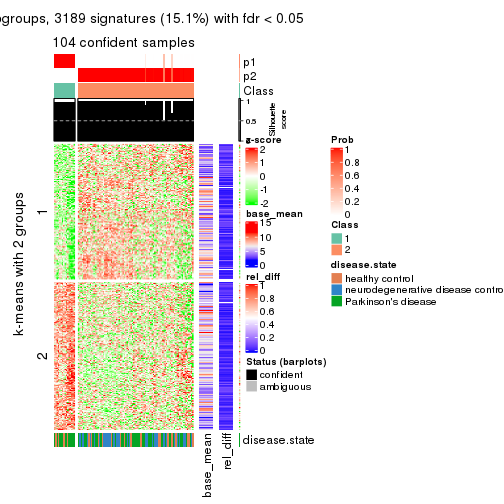
get_signatures(res, k = 3)
get_signatures(res, k = 4)
get_signatures(res, k = 5)
get_signatures(res, k = 6)
Signature heatmaps where rows are not scaled:
get_signatures(res, k = 2, scale_rows = FALSE)
get_signatures(res, k = 3, scale_rows = FALSE)
get_signatures(res, k = 4, scale_rows = FALSE)
get_signatures(res, k = 5, scale_rows = FALSE)
get_signatures(res, k = 6, scale_rows = FALSE)
Compare the overlap of signatures from different k:
compare_signatures(res)
get_signature() returns a data frame invisibly. TO get the list of signatures, the function
call should be assigned to a variable explicitly. In following code, if plot argument is set
to FALSE, no heatmap is plotted while only the differential analysis is performed.
# code only for demonstration
tb = get_signature(res, k = ..., plot = FALSE)
An example of the output of tb is:
#> which_row fdr mean_1 mean_2 scaled_mean_1 scaled_mean_2 km
#> 1 38 0.042760348 8.373488 9.131774 -0.5533452 0.5164555 1
#> 2 40 0.018707592 7.106213 8.469186 -0.6173731 0.5762149 1
#> 3 55 0.019134737 10.221463 11.207825 -0.6159697 0.5749050 1
#> 4 59 0.006059896 5.921854 7.869574 -0.6899429 0.6439467 1
#> 5 60 0.018055526 8.928898 10.211722 -0.6204761 0.5791110 1
#> 6 98 0.009384629 15.714769 14.887706 0.6635654 -0.6193277 2
...
The columns in tb are:
which_row: row indices corresponding to the input matrix.fdr: FDR for the differential test. mean_x: The mean value in group x.scaled_mean_x: The mean value in group x after rows are scaled.km: Row groups if k-means clustering is applied to rows.UMAP plot which shows how samples are separated.
dimension_reduction(res, k = 2, method = "UMAP")
dimension_reduction(res, k = 3, method = "UMAP")
dimension_reduction(res, k = 4, method = "UMAP")
dimension_reduction(res, k = 5, method = "UMAP")
dimension_reduction(res, k = 6, method = "UMAP")
Following heatmap shows how subgroups are split when increasing k:
collect_classes(res)
Test correlation between subgroups and known annotations. If the known annotation is numeric, one-way ANOVA test is applied, and if the known annotation is discrete, chi-squared contingency table test is applied.
test_to_known_factors(res)
#> n disease.state(p) k
#> MAD:mclust 104 0.00979 2
#> MAD:mclust 103 0.00272 3
#> MAD:mclust 100 0.00792 4
#> MAD:mclust 86 0.02151 5
#> MAD:mclust 80 0.00897 6
If matrix rows can be associated to genes, consider to use functional_enrichment(res,
...) to perform function enrichment for the signature genes. See this vignette for more detailed explanations.
The object with results only for a single top-value method and a single partition method can be extracted as:
res = res_list["MAD", "NMF"]
# you can also extract it by
# res = res_list["MAD:NMF"]
A summary of res and all the functions that can be applied to it:
res
#> A 'ConsensusPartition' object with k = 2, 3, 4, 5, 6.
#> On a matrix with 21168 rows and 105 columns.
#> Top rows (1000, 2000, 3000, 4000, 5000) are extracted by 'MAD' method.
#> Subgroups are detected by 'NMF' method.
#> Performed in total 1250 partitions by row resampling.
#> Best k for subgroups seems to be 2.
#>
#> Following methods can be applied to this 'ConsensusPartition' object:
#> [1] "cola_report" "collect_classes" "collect_plots"
#> [4] "collect_stats" "colnames" "compare_signatures"
#> [7] "consensus_heatmap" "dimension_reduction" "functional_enrichment"
#> [10] "get_anno_col" "get_anno" "get_classes"
#> [13] "get_consensus" "get_matrix" "get_membership"
#> [16] "get_param" "get_signatures" "get_stats"
#> [19] "is_best_k" "is_stable_k" "membership_heatmap"
#> [22] "ncol" "nrow" "plot_ecdf"
#> [25] "rownames" "select_partition_number" "show"
#> [28] "suggest_best_k" "test_to_known_factors"
collect_plots() function collects all the plots made from res for all k (number of partitions)
into one single page to provide an easy and fast comparison between different k.
collect_plots(res)
The plots are:
k and the heatmap of
predicted classes for each k.k.k.k.All the plots in panels can be made by individual functions and they are plotted later in this section.
select_partition_number() produces several plots showing different
statistics for choosing “optimized” k. There are following statistics:
k;k, the area increased is defined as \(A_k - A_{k-1}\).The detailed explanations of these statistics can be found in the cola vignette.
Generally speaking, lower PAC score, higher mean silhouette score or higher
concordance corresponds to better partition. Rand index and Jaccard index
measure how similar the current partition is compared to partition with k-1.
If they are too similar, we won't accept k is better than k-1.
select_partition_number(res)
The numeric values for all these statistics can be obtained by get_stats().
get_stats(res)
#> k 1-PAC mean_silhouette concordance area_increased Rand Jaccard
#> 2 2 0.691 0.875 0.942 0.4936 0.501 0.501
#> 3 3 0.515 0.699 0.845 0.3187 0.699 0.481
#> 4 4 0.480 0.545 0.731 0.1271 0.843 0.598
#> 5 5 0.507 0.452 0.686 0.0671 0.832 0.505
#> 6 6 0.526 0.353 0.606 0.0461 0.886 0.581
suggest_best_k() suggests the best \(k\) based on these statistics. The rules are as follows:
suggest_best_k(res)
#> [1] 2
Following shows the table of the partitions (You need to click the show/hide
code output link to see it). The membership matrix (columns with name p*)
is inferred by
clue::cl_consensus()
function with the SE method. Basically the value in the membership matrix
represents the probability to belong to a certain group. The finall class
label for an item is determined with the group with highest probability it
belongs to.
In get_classes() function, the entropy is calculated from the membership
matrix and the silhouette score is calculated from the consensus matrix.
cbind(get_classes(res, k = 2), get_membership(res, k = 2))
#> class entropy silhouette p1 p2
#> GSM153405 1 0.0000 0.9202 1.000 0.000
#> GSM153406 2 0.7528 0.7405 0.216 0.784
#> GSM153419 1 0.0000 0.9202 1.000 0.000
#> GSM153423 2 0.0000 0.9486 0.000 1.000
#> GSM153425 1 0.0000 0.9202 1.000 0.000
#> GSM153427 2 0.5946 0.8372 0.144 0.856
#> GSM153428 1 0.0000 0.9202 1.000 0.000
#> GSM153429 2 0.2778 0.9246 0.048 0.952
#> GSM153433 1 0.2778 0.9036 0.952 0.048
#> GSM153444 2 0.0376 0.9471 0.004 0.996
#> GSM153448 2 0.4298 0.8958 0.088 0.912
#> GSM153451 2 0.0000 0.9486 0.000 1.000
#> GSM153452 1 0.4161 0.8786 0.916 0.084
#> GSM153477 2 0.0000 0.9486 0.000 1.000
#> GSM153479 2 0.1414 0.9411 0.020 0.980
#> GSM153484 2 0.0672 0.9460 0.008 0.992
#> GSM153488 1 0.9686 0.4100 0.604 0.396
#> GSM153496 1 0.5946 0.8323 0.856 0.144
#> GSM153497 2 0.0000 0.9486 0.000 1.000
#> GSM153500 1 0.1184 0.9166 0.984 0.016
#> GSM153503 1 0.0000 0.9202 1.000 0.000
#> GSM153508 2 0.7056 0.7613 0.192 0.808
#> GSM153409 2 0.0000 0.9486 0.000 1.000
#> GSM153426 2 0.0000 0.9486 0.000 1.000
#> GSM153431 1 0.4161 0.8735 0.916 0.084
#> GSM153438 2 0.0000 0.9486 0.000 1.000
#> GSM153440 1 0.0000 0.9202 1.000 0.000
#> GSM153447 1 0.0000 0.9202 1.000 0.000
#> GSM153450 2 0.0672 0.9459 0.008 0.992
#> GSM153456 2 0.0000 0.9486 0.000 1.000
#> GSM153457 2 0.0000 0.9486 0.000 1.000
#> GSM153458 2 0.0000 0.9486 0.000 1.000
#> GSM153459 2 0.0000 0.9486 0.000 1.000
#> GSM153460 2 0.0000 0.9486 0.000 1.000
#> GSM153461 2 0.5294 0.8639 0.120 0.880
#> GSM153463 1 0.0000 0.9202 1.000 0.000
#> GSM153464 2 0.0000 0.9486 0.000 1.000
#> GSM153466 2 0.3114 0.9173 0.056 0.944
#> GSM153467 2 0.0000 0.9486 0.000 1.000
#> GSM153468 2 0.0376 0.9474 0.004 0.996
#> GSM153469 2 0.0000 0.9486 0.000 1.000
#> GSM153470 2 0.0000 0.9486 0.000 1.000
#> GSM153471 2 0.0000 0.9486 0.000 1.000
#> GSM153472 1 0.4562 0.8740 0.904 0.096
#> GSM153473 1 0.0000 0.9202 1.000 0.000
#> GSM153474 1 0.3274 0.8972 0.940 0.060
#> GSM153475 2 0.1843 0.9360 0.028 0.972
#> GSM153476 2 0.0938 0.9443 0.012 0.988
#> GSM153478 1 0.4562 0.8743 0.904 0.096
#> GSM153480 2 0.0000 0.9486 0.000 1.000
#> GSM153486 2 0.0000 0.9486 0.000 1.000
#> GSM153487 2 0.2043 0.9322 0.032 0.968
#> GSM153499 2 0.0000 0.9486 0.000 1.000
#> GSM153504 1 0.4690 0.8706 0.900 0.100
#> GSM153507 2 0.8081 0.6660 0.248 0.752
#> GSM153404 1 0.1184 0.9163 0.984 0.016
#> GSM153407 1 0.0000 0.9202 1.000 0.000
#> GSM153408 1 0.0938 0.9173 0.988 0.012
#> GSM153410 2 0.5408 0.8545 0.124 0.876
#> GSM153411 1 0.0000 0.9202 1.000 0.000
#> GSM153412 2 0.6438 0.8112 0.164 0.836
#> GSM153413 1 0.0000 0.9202 1.000 0.000
#> GSM153414 2 0.9732 0.3065 0.404 0.596
#> GSM153415 1 0.0672 0.9185 0.992 0.008
#> GSM153416 2 0.0000 0.9486 0.000 1.000
#> GSM153417 1 0.0000 0.9202 1.000 0.000
#> GSM153418 1 0.9850 0.2447 0.572 0.428
#> GSM153420 1 0.0000 0.9202 1.000 0.000
#> GSM153421 1 0.0000 0.9202 1.000 0.000
#> GSM153422 1 0.0000 0.9202 1.000 0.000
#> GSM153424 1 0.0000 0.9202 1.000 0.000
#> GSM153430 1 0.3431 0.8952 0.936 0.064
#> GSM153432 2 0.0000 0.9486 0.000 1.000
#> GSM153434 1 0.7528 0.7522 0.784 0.216
#> GSM153435 2 0.0000 0.9486 0.000 1.000
#> GSM153436 1 0.1633 0.9140 0.976 0.024
#> GSM153437 2 0.0000 0.9486 0.000 1.000
#> GSM153439 2 0.0376 0.9474 0.004 0.996
#> GSM153441 2 0.4815 0.8748 0.104 0.896
#> GSM153442 2 0.5294 0.8597 0.120 0.880
#> GSM153443 2 0.0000 0.9486 0.000 1.000
#> GSM153445 2 0.0000 0.9486 0.000 1.000
#> GSM153446 2 0.0000 0.9486 0.000 1.000
#> GSM153449 1 0.7299 0.7634 0.796 0.204
#> GSM153453 1 0.6973 0.7857 0.812 0.188
#> GSM153454 1 0.0000 0.9202 1.000 0.000
#> GSM153455 1 0.9993 0.0868 0.516 0.484
#> GSM153462 2 0.0000 0.9486 0.000 1.000
#> GSM153465 2 0.0000 0.9486 0.000 1.000
#> GSM153481 2 0.0000 0.9486 0.000 1.000
#> GSM153482 2 0.9000 0.5291 0.316 0.684
#> GSM153483 2 0.0000 0.9486 0.000 1.000
#> GSM153485 2 0.5059 0.8677 0.112 0.888
#> GSM153489 1 0.9963 0.1872 0.536 0.464
#> GSM153490 1 0.0000 0.9202 1.000 0.000
#> GSM153491 1 0.7219 0.7728 0.800 0.200
#> GSM153492 1 0.0000 0.9202 1.000 0.000
#> GSM153493 1 0.0000 0.9202 1.000 0.000
#> GSM153494 2 0.1184 0.9425 0.016 0.984
#> GSM153495 1 0.0000 0.9202 1.000 0.000
#> GSM153498 2 0.4431 0.8883 0.092 0.908
#> GSM153501 1 0.0000 0.9202 1.000 0.000
#> GSM153502 1 0.1633 0.9142 0.976 0.024
#> GSM153505 1 0.0000 0.9202 1.000 0.000
#> GSM153506 2 0.0000 0.9486 0.000 1.000
cbind(get_classes(res, k = 3), get_membership(res, k = 3))
#> class entropy silhouette p1 p2 p3
#> GSM153405 3 0.1529 0.821 0.000 0.040 0.960
#> GSM153406 2 0.6180 0.280 0.000 0.584 0.416
#> GSM153419 3 0.0592 0.831 0.000 0.012 0.988
#> GSM153423 2 0.1399 0.807 0.004 0.968 0.028
#> GSM153425 3 0.1529 0.829 0.040 0.000 0.960
#> GSM153427 2 0.6008 0.387 0.000 0.628 0.372
#> GSM153428 3 0.2356 0.814 0.072 0.000 0.928
#> GSM153429 2 0.5733 0.524 0.324 0.676 0.000
#> GSM153433 1 0.3482 0.776 0.872 0.000 0.128
#> GSM153444 2 0.3551 0.750 0.000 0.868 0.132
#> GSM153448 1 0.6062 0.385 0.616 0.384 0.000
#> GSM153451 2 0.1411 0.804 0.000 0.964 0.036
#> GSM153452 3 0.4605 0.698 0.000 0.204 0.796
#> GSM153477 2 0.4605 0.713 0.204 0.796 0.000
#> GSM153479 1 0.5859 0.455 0.656 0.344 0.000
#> GSM153484 2 0.6126 0.337 0.400 0.600 0.000
#> GSM153488 1 0.2879 0.807 0.924 0.052 0.024
#> GSM153496 1 0.1529 0.807 0.960 0.000 0.040
#> GSM153497 2 0.0661 0.809 0.008 0.988 0.004
#> GSM153500 1 0.2537 0.797 0.920 0.000 0.080
#> GSM153503 1 0.3116 0.786 0.892 0.000 0.108
#> GSM153508 1 0.2261 0.799 0.932 0.068 0.000
#> GSM153409 2 0.3412 0.756 0.000 0.876 0.124
#> GSM153426 2 0.2537 0.784 0.000 0.920 0.080
#> GSM153431 3 0.4446 0.789 0.032 0.112 0.856
#> GSM153438 2 0.2165 0.793 0.000 0.936 0.064
#> GSM153440 3 0.1411 0.831 0.036 0.000 0.964
#> GSM153447 3 0.5859 0.388 0.344 0.000 0.656
#> GSM153450 2 0.3340 0.760 0.000 0.880 0.120
#> GSM153456 2 0.2066 0.794 0.000 0.940 0.060
#> GSM153457 2 0.1411 0.804 0.000 0.964 0.036
#> GSM153458 2 0.3267 0.762 0.000 0.884 0.116
#> GSM153459 2 0.2796 0.777 0.000 0.908 0.092
#> GSM153460 2 0.3192 0.765 0.000 0.888 0.112
#> GSM153461 2 0.4504 0.687 0.000 0.804 0.196
#> GSM153463 1 0.6008 0.444 0.628 0.000 0.372
#> GSM153464 2 0.1411 0.806 0.036 0.964 0.000
#> GSM153466 1 0.3192 0.784 0.888 0.112 0.000
#> GSM153467 2 0.6244 0.215 0.440 0.560 0.000
#> GSM153468 1 0.3412 0.778 0.876 0.124 0.000
#> GSM153469 2 0.5859 0.487 0.344 0.656 0.000
#> GSM153470 2 0.3941 0.760 0.156 0.844 0.000
#> GSM153471 2 0.3879 0.764 0.152 0.848 0.000
#> GSM153472 1 0.1163 0.809 0.972 0.000 0.028
#> GSM153473 1 0.5465 0.603 0.712 0.000 0.288
#> GSM153474 1 0.1753 0.805 0.952 0.000 0.048
#> GSM153475 1 0.6111 0.335 0.604 0.396 0.000
#> GSM153476 2 0.2903 0.809 0.048 0.924 0.028
#> GSM153478 1 0.5774 0.685 0.748 0.020 0.232
#> GSM153480 2 0.0424 0.809 0.000 0.992 0.008
#> GSM153486 2 0.2959 0.791 0.100 0.900 0.000
#> GSM153487 1 0.2878 0.791 0.904 0.096 0.000
#> GSM153499 1 0.3551 0.774 0.868 0.132 0.000
#> GSM153504 1 0.2796 0.794 0.908 0.000 0.092
#> GSM153507 1 0.2796 0.794 0.908 0.092 0.000
#> GSM153404 3 0.5363 0.590 0.000 0.276 0.724
#> GSM153407 3 0.1031 0.830 0.000 0.024 0.976
#> GSM153408 3 0.4346 0.713 0.000 0.184 0.816
#> GSM153410 2 0.5926 0.424 0.000 0.644 0.356
#> GSM153411 3 0.2796 0.796 0.092 0.000 0.908
#> GSM153412 2 0.6079 0.351 0.000 0.612 0.388
#> GSM153413 3 0.2261 0.806 0.000 0.068 0.932
#> GSM153414 2 0.6143 0.536 0.012 0.684 0.304
#> GSM153415 3 0.4702 0.681 0.000 0.212 0.788
#> GSM153416 2 0.1267 0.808 0.004 0.972 0.024
#> GSM153417 3 0.2261 0.816 0.068 0.000 0.932
#> GSM153418 3 0.6045 0.353 0.000 0.380 0.620
#> GSM153420 3 0.0892 0.832 0.020 0.000 0.980
#> GSM153421 3 0.1860 0.825 0.052 0.000 0.948
#> GSM153422 3 0.2066 0.821 0.060 0.000 0.940
#> GSM153424 3 0.6168 0.191 0.412 0.000 0.588
#> GSM153430 1 0.4605 0.714 0.796 0.000 0.204
#> GSM153432 2 0.3412 0.781 0.124 0.876 0.000
#> GSM153434 1 0.3649 0.808 0.896 0.036 0.068
#> GSM153435 2 0.2261 0.802 0.068 0.932 0.000
#> GSM153436 1 0.6451 0.291 0.560 0.004 0.436
#> GSM153437 2 0.0829 0.809 0.004 0.984 0.012
#> GSM153439 2 0.4555 0.716 0.200 0.800 0.000
#> GSM153441 1 0.6154 0.333 0.592 0.408 0.000
#> GSM153442 1 0.2625 0.795 0.916 0.084 0.000
#> GSM153443 2 0.3412 0.779 0.124 0.876 0.000
#> GSM153445 2 0.2959 0.791 0.100 0.900 0.000
#> GSM153446 2 0.0592 0.809 0.000 0.988 0.012
#> GSM153449 1 0.2339 0.810 0.940 0.012 0.048
#> GSM153453 1 0.1031 0.809 0.976 0.000 0.024
#> GSM153454 1 0.4121 0.744 0.832 0.000 0.168
#> GSM153455 1 0.4228 0.762 0.844 0.148 0.008
#> GSM153462 2 0.1964 0.804 0.056 0.944 0.000
#> GSM153465 2 0.2261 0.802 0.068 0.932 0.000
#> GSM153481 2 0.2537 0.798 0.080 0.920 0.000
#> GSM153482 1 0.2448 0.798 0.924 0.076 0.000
#> GSM153483 1 0.6286 0.100 0.536 0.464 0.000
#> GSM153485 1 0.3116 0.786 0.892 0.108 0.000
#> GSM153489 1 0.2173 0.805 0.944 0.048 0.008
#> GSM153490 1 0.4605 0.715 0.796 0.000 0.204
#> GSM153491 1 0.1585 0.809 0.964 0.008 0.028
#> GSM153492 1 0.3267 0.782 0.884 0.000 0.116
#> GSM153493 1 0.3116 0.787 0.892 0.000 0.108
#> GSM153494 1 0.4842 0.670 0.776 0.224 0.000
#> GSM153495 1 0.5178 0.651 0.744 0.000 0.256
#> GSM153498 1 0.3551 0.774 0.868 0.132 0.000
#> GSM153501 1 0.2537 0.797 0.920 0.000 0.080
#> GSM153502 1 0.3412 0.779 0.876 0.000 0.124
#> GSM153505 1 0.3038 0.788 0.896 0.000 0.104
#> GSM153506 2 0.5905 0.468 0.352 0.648 0.000
cbind(get_classes(res, k = 4), get_membership(res, k = 4))
#> class entropy silhouette p1 p2 p3 p4
#> GSM153405 3 0.3765 0.5467 0.004 0.004 0.812 0.180
#> GSM153406 4 0.5615 0.1239 0.000 0.032 0.356 0.612
#> GSM153419 3 0.4088 0.5009 0.004 0.000 0.764 0.232
#> GSM153423 2 0.1452 0.7745 0.000 0.956 0.008 0.036
#> GSM153425 3 0.2256 0.6452 0.056 0.020 0.924 0.000
#> GSM153427 2 0.3946 0.6643 0.000 0.812 0.168 0.020
#> GSM153428 3 0.8237 0.4359 0.192 0.280 0.492 0.036
#> GSM153429 4 0.5596 0.5908 0.180 0.088 0.004 0.728
#> GSM153433 1 0.4455 0.5992 0.800 0.012 0.164 0.024
#> GSM153444 2 0.1388 0.7684 0.000 0.960 0.028 0.012
#> GSM153448 2 0.7143 0.3571 0.308 0.584 0.064 0.044
#> GSM153451 2 0.1398 0.7755 0.000 0.956 0.004 0.040
#> GSM153452 2 0.6715 -0.1451 0.032 0.472 0.464 0.032
#> GSM153477 4 0.6957 0.4964 0.172 0.248 0.000 0.580
#> GSM153479 1 0.7221 0.3534 0.564 0.116 0.016 0.304
#> GSM153484 4 0.6032 0.4339 0.308 0.056 0.004 0.632
#> GSM153488 1 0.5420 0.4945 0.624 0.000 0.024 0.352
#> GSM153496 1 0.2255 0.7339 0.920 0.000 0.012 0.068
#> GSM153497 2 0.2053 0.7704 0.004 0.924 0.000 0.072
#> GSM153500 1 0.2032 0.7322 0.936 0.000 0.036 0.028
#> GSM153503 1 0.1724 0.7319 0.948 0.000 0.032 0.020
#> GSM153508 1 0.4522 0.5578 0.680 0.000 0.000 0.320
#> GSM153409 2 0.1820 0.7660 0.000 0.944 0.036 0.020
#> GSM153426 2 0.2222 0.7755 0.000 0.924 0.016 0.060
#> GSM153431 3 0.8196 0.3237 0.148 0.352 0.460 0.040
#> GSM153438 2 0.2611 0.7666 0.000 0.896 0.008 0.096
#> GSM153440 3 0.5832 0.6124 0.132 0.088 0.748 0.032
#> GSM153447 3 0.7710 0.3995 0.332 0.104 0.524 0.040
#> GSM153450 2 0.2546 0.7348 0.000 0.912 0.060 0.028
#> GSM153456 2 0.1305 0.7757 0.000 0.960 0.004 0.036
#> GSM153457 2 0.1824 0.7733 0.000 0.936 0.004 0.060
#> GSM153458 2 0.1209 0.7660 0.000 0.964 0.032 0.004
#> GSM153459 2 0.0804 0.7728 0.000 0.980 0.012 0.008
#> GSM153460 2 0.1109 0.7629 0.000 0.968 0.028 0.004
#> GSM153461 2 0.4247 0.6640 0.016 0.832 0.116 0.036
#> GSM153463 1 0.6694 0.1693 0.568 0.032 0.360 0.040
#> GSM153464 2 0.4624 0.5434 0.000 0.660 0.000 0.340
#> GSM153466 1 0.4149 0.6807 0.804 0.028 0.000 0.168
#> GSM153467 2 0.5384 0.5979 0.196 0.728 0.000 0.076
#> GSM153468 1 0.4936 0.5062 0.652 0.008 0.000 0.340
#> GSM153469 4 0.4890 0.5313 0.236 0.024 0.004 0.736
#> GSM153470 4 0.6382 0.5740 0.136 0.196 0.004 0.664
#> GSM153471 4 0.5902 0.5980 0.160 0.140 0.000 0.700
#> GSM153472 1 0.3681 0.6962 0.816 0.000 0.008 0.176
#> GSM153473 1 0.3653 0.7026 0.844 0.000 0.128 0.028
#> GSM153474 1 0.1488 0.7301 0.956 0.000 0.012 0.032
#> GSM153475 4 0.4601 0.4819 0.256 0.004 0.008 0.732
#> GSM153476 4 0.2841 0.5633 0.032 0.032 0.024 0.912
#> GSM153478 1 0.5906 0.4941 0.708 0.052 0.216 0.024
#> GSM153480 2 0.4222 0.6427 0.000 0.728 0.000 0.272
#> GSM153486 2 0.4485 0.6922 0.028 0.772 0.000 0.200
#> GSM153487 1 0.4916 0.3734 0.576 0.000 0.000 0.424
#> GSM153499 1 0.5212 0.3759 0.588 0.004 0.004 0.404
#> GSM153504 1 0.4289 0.6956 0.796 0.000 0.032 0.172
#> GSM153507 1 0.4843 0.4332 0.604 0.000 0.000 0.396
#> GSM153404 3 0.5510 0.3125 0.000 0.024 0.600 0.376
#> GSM153407 3 0.6558 0.5582 0.076 0.212 0.676 0.036
#> GSM153408 3 0.5353 0.2126 0.000 0.012 0.556 0.432
#> GSM153410 4 0.5839 0.1213 0.000 0.044 0.352 0.604
#> GSM153411 3 0.2266 0.6383 0.084 0.000 0.912 0.004
#> GSM153412 4 0.5614 0.1636 0.000 0.036 0.336 0.628
#> GSM153413 3 0.5147 0.1726 0.004 0.000 0.536 0.460
#> GSM153414 2 0.6092 0.4521 0.044 0.696 0.224 0.036
#> GSM153415 4 0.5070 0.0237 0.000 0.004 0.416 0.580
#> GSM153416 2 0.1576 0.7767 0.000 0.948 0.004 0.048
#> GSM153417 3 0.2002 0.6427 0.044 0.000 0.936 0.020
#> GSM153418 4 0.5938 -0.1636 0.000 0.036 0.480 0.484
#> GSM153420 3 0.2238 0.6156 0.004 0.004 0.920 0.072
#> GSM153421 3 0.1629 0.6396 0.024 0.000 0.952 0.024
#> GSM153422 3 0.2300 0.6339 0.028 0.000 0.924 0.048
#> GSM153424 3 0.8725 0.3868 0.280 0.284 0.396 0.040
#> GSM153430 1 0.6185 0.4615 0.700 0.056 0.208 0.036
#> GSM153432 2 0.6659 0.0609 0.084 0.468 0.000 0.448
#> GSM153434 1 0.6218 0.4638 0.704 0.088 0.184 0.024
#> GSM153435 2 0.4697 0.5977 0.008 0.696 0.000 0.296
#> GSM153436 3 0.8527 0.3408 0.352 0.228 0.388 0.032
#> GSM153437 2 0.2944 0.7498 0.000 0.868 0.004 0.128
#> GSM153439 4 0.6719 0.5631 0.180 0.204 0.000 0.616
#> GSM153441 2 0.7398 0.2371 0.380 0.512 0.056 0.052
#> GSM153442 1 0.4505 0.6856 0.828 0.096 0.024 0.052
#> GSM153443 2 0.4675 0.6475 0.020 0.736 0.000 0.244
#> GSM153445 2 0.6161 0.3159 0.044 0.552 0.004 0.400
#> GSM153446 2 0.4134 0.6565 0.000 0.740 0.000 0.260
#> GSM153449 1 0.4265 0.6680 0.832 0.020 0.116 0.032
#> GSM153453 1 0.2266 0.7286 0.912 0.000 0.004 0.084
#> GSM153454 1 0.3658 0.6501 0.836 0.000 0.144 0.020
#> GSM153455 1 0.5189 0.4680 0.616 0.000 0.012 0.372
#> GSM153462 2 0.3486 0.7088 0.000 0.812 0.000 0.188
#> GSM153465 4 0.5698 0.4765 0.060 0.244 0.004 0.692
#> GSM153481 4 0.5446 0.5632 0.076 0.184 0.004 0.736
#> GSM153482 1 0.3982 0.6648 0.776 0.004 0.000 0.220
#> GSM153483 4 0.6904 0.2084 0.388 0.096 0.004 0.512
#> GSM153485 1 0.4896 0.6038 0.704 0.012 0.004 0.280
#> GSM153489 1 0.3982 0.6708 0.776 0.004 0.000 0.220
#> GSM153490 1 0.2654 0.7086 0.888 0.000 0.108 0.004
#> GSM153491 1 0.2918 0.7201 0.876 0.000 0.008 0.116
#> GSM153492 1 0.2164 0.7134 0.924 0.004 0.068 0.004
#> GSM153493 1 0.1938 0.7265 0.936 0.000 0.052 0.012
#> GSM153494 1 0.5484 0.6353 0.744 0.104 0.004 0.148
#> GSM153495 1 0.4542 0.5653 0.752 0.000 0.228 0.020
#> GSM153498 4 0.4964 0.2137 0.380 0.000 0.004 0.616
#> GSM153501 1 0.2179 0.7331 0.924 0.000 0.012 0.064
#> GSM153502 1 0.4224 0.7101 0.812 0.000 0.044 0.144
#> GSM153505 1 0.1724 0.7314 0.948 0.000 0.032 0.020
#> GSM153506 4 0.6836 0.4551 0.280 0.140 0.000 0.580
cbind(get_classes(res, k = 5), get_membership(res, k = 5))
#> class entropy silhouette p1 p2 p3 p4 p5
#> GSM153405 3 0.5717 0.28588 0.000 0.000 0.540 0.092 0.368
#> GSM153406 3 0.3110 0.68544 0.004 0.004 0.868 0.036 0.088
#> GSM153419 3 0.5094 0.20614 0.004 0.000 0.532 0.028 0.436
#> GSM153423 2 0.1588 0.75771 0.008 0.948 0.000 0.016 0.028
#> GSM153425 5 0.2962 0.70823 0.000 0.000 0.084 0.048 0.868
#> GSM153427 2 0.7154 0.37589 0.000 0.556 0.084 0.188 0.172
#> GSM153428 5 0.6389 0.45991 0.036 0.120 0.000 0.248 0.596
#> GSM153429 1 0.6628 0.18812 0.452 0.128 0.400 0.020 0.000
#> GSM153433 1 0.6269 0.02673 0.452 0.000 0.004 0.416 0.128
#> GSM153444 2 0.4941 0.61294 0.000 0.720 0.036 0.212 0.032
#> GSM153448 2 0.6225 0.56567 0.128 0.664 0.000 0.084 0.124
#> GSM153451 2 0.0771 0.76324 0.000 0.976 0.004 0.020 0.000
#> GSM153452 5 0.5766 0.48003 0.020 0.284 0.000 0.076 0.620
#> GSM153477 2 0.8096 0.01821 0.324 0.340 0.236 0.100 0.000
#> GSM153479 1 0.6370 0.49372 0.656 0.120 0.072 0.148 0.004
#> GSM153484 1 0.6540 0.39658 0.568 0.076 0.292 0.064 0.000
#> GSM153488 1 0.5697 0.50624 0.644 0.000 0.172 0.180 0.004
#> GSM153496 1 0.5377 0.53423 0.712 0.000 0.028 0.100 0.160
#> GSM153497 2 0.2381 0.75946 0.004 0.908 0.036 0.052 0.000
#> GSM153500 1 0.4797 0.50965 0.724 0.000 0.000 0.104 0.172
#> GSM153503 1 0.5068 0.35596 0.592 0.000 0.000 0.364 0.044
#> GSM153508 1 0.4102 0.57086 0.796 0.004 0.080 0.120 0.000
#> GSM153409 4 0.6272 -0.00343 0.000 0.380 0.092 0.508 0.020
#> GSM153426 4 0.6403 -0.07717 0.000 0.396 0.148 0.452 0.004
#> GSM153431 4 0.4142 0.44773 0.020 0.040 0.024 0.828 0.088
#> GSM153438 2 0.1741 0.76183 0.000 0.936 0.024 0.040 0.000
#> GSM153440 4 0.5941 -0.15189 0.000 0.008 0.088 0.532 0.372
#> GSM153447 4 0.3663 0.44489 0.044 0.000 0.004 0.820 0.132
#> GSM153450 2 0.2899 0.72156 0.004 0.872 0.000 0.028 0.096
#> GSM153456 2 0.0566 0.76078 0.000 0.984 0.000 0.012 0.004
#> GSM153457 2 0.0162 0.76227 0.000 0.996 0.004 0.000 0.000
#> GSM153458 2 0.1579 0.75466 0.000 0.944 0.000 0.032 0.024
#> GSM153459 2 0.2331 0.74610 0.000 0.908 0.008 0.068 0.016
#> GSM153460 2 0.1836 0.75102 0.000 0.932 0.000 0.036 0.032
#> GSM153461 4 0.5201 0.36360 0.000 0.192 0.056 0.716 0.036
#> GSM153463 4 0.5844 0.33193 0.208 0.000 0.000 0.608 0.184
#> GSM153464 2 0.4032 0.71637 0.072 0.800 0.124 0.004 0.000
#> GSM153466 1 0.4004 0.56145 0.832 0.088 0.008 0.040 0.032
#> GSM153467 2 0.3633 0.70615 0.160 0.812 0.004 0.020 0.004
#> GSM153468 1 0.3993 0.56675 0.832 0.036 0.080 0.048 0.004
#> GSM153469 1 0.5584 0.26868 0.520 0.040 0.424 0.016 0.000
#> GSM153470 3 0.7911 0.06289 0.216 0.096 0.420 0.268 0.000
#> GSM153471 3 0.7211 -0.17785 0.400 0.132 0.412 0.056 0.000
#> GSM153472 1 0.4055 0.56115 0.800 0.000 0.048 0.012 0.140
#> GSM153473 1 0.5495 0.48617 0.676 0.000 0.008 0.176 0.140
#> GSM153474 4 0.4659 -0.16949 0.488 0.000 0.000 0.500 0.012
#> GSM153475 1 0.5904 0.33270 0.552 0.032 0.380 0.020 0.016
#> GSM153476 3 0.3567 0.54853 0.112 0.004 0.832 0.052 0.000
#> GSM153478 1 0.7162 -0.02307 0.380 0.020 0.000 0.368 0.232
#> GSM153480 2 0.3829 0.73024 0.024 0.816 0.136 0.024 0.000
#> GSM153486 2 0.3901 0.73099 0.108 0.828 0.036 0.024 0.004
#> GSM153487 1 0.4407 0.55061 0.760 0.004 0.172 0.064 0.000
#> GSM153499 1 0.6241 0.36726 0.512 0.000 0.164 0.324 0.000
#> GSM153504 1 0.4753 0.51600 0.708 0.000 0.032 0.244 0.016
#> GSM153507 1 0.3906 0.56614 0.812 0.004 0.104 0.080 0.000
#> GSM153404 3 0.4488 0.60668 0.000 0.004 0.736 0.048 0.212
#> GSM153407 5 0.5658 0.62356 0.000 0.068 0.052 0.192 0.688
#> GSM153408 3 0.3757 0.63721 0.000 0.000 0.772 0.020 0.208
#> GSM153410 3 0.2633 0.68433 0.004 0.008 0.892 0.012 0.084
#> GSM153411 5 0.1469 0.69886 0.016 0.000 0.036 0.000 0.948
#> GSM153412 3 0.2177 0.68279 0.004 0.000 0.908 0.008 0.080
#> GSM153413 3 0.3387 0.64956 0.004 0.000 0.796 0.004 0.196
#> GSM153414 2 0.6751 0.25990 0.008 0.508 0.004 0.268 0.212
#> GSM153415 3 0.2621 0.68508 0.004 0.000 0.876 0.008 0.112
#> GSM153416 2 0.1443 0.76249 0.000 0.948 0.004 0.044 0.004
#> GSM153417 5 0.2942 0.68723 0.008 0.000 0.128 0.008 0.856
#> GSM153418 3 0.3834 0.66928 0.000 0.008 0.816 0.052 0.124
#> GSM153420 5 0.4210 0.55126 0.000 0.000 0.224 0.036 0.740
#> GSM153421 5 0.2463 0.70028 0.008 0.000 0.100 0.004 0.888
#> GSM153422 5 0.4118 0.61603 0.008 0.000 0.188 0.032 0.772
#> GSM153424 4 0.6022 0.19330 0.036 0.072 0.000 0.608 0.284
#> GSM153430 4 0.3875 0.42880 0.160 0.000 0.000 0.792 0.048
#> GSM153432 2 0.6820 0.44718 0.264 0.548 0.144 0.044 0.000
#> GSM153434 1 0.7009 0.20045 0.444 0.028 0.000 0.168 0.360
#> GSM153435 2 0.7582 0.29990 0.060 0.444 0.260 0.236 0.000
#> GSM153436 5 0.6116 0.45913 0.160 0.128 0.000 0.052 0.660
#> GSM153437 2 0.1329 0.76373 0.004 0.956 0.032 0.008 0.000
#> GSM153439 1 0.7243 0.05887 0.380 0.312 0.292 0.012 0.004
#> GSM153441 2 0.6482 0.47872 0.204 0.608 0.000 0.044 0.144
#> GSM153442 1 0.5653 0.40786 0.612 0.048 0.000 0.312 0.028
#> GSM153443 2 0.3319 0.73849 0.100 0.852 0.040 0.008 0.000
#> GSM153445 2 0.5091 0.64428 0.180 0.712 0.100 0.008 0.000
#> GSM153446 2 0.2819 0.75315 0.024 0.884 0.080 0.012 0.000
#> GSM153449 1 0.6153 0.35537 0.552 0.004 0.000 0.144 0.300
#> GSM153453 1 0.4010 0.49648 0.744 0.004 0.004 0.240 0.008
#> GSM153454 1 0.6448 0.22663 0.500 0.000 0.000 0.272 0.228
#> GSM153455 1 0.6591 0.49472 0.676 0.048 0.080 0.072 0.124
#> GSM153462 2 0.4868 0.68324 0.020 0.752 0.092 0.136 0.000
#> GSM153465 4 0.6878 0.17070 0.104 0.056 0.332 0.508 0.000
#> GSM153481 2 0.7131 0.04055 0.340 0.352 0.296 0.012 0.000
#> GSM153482 1 0.4886 0.24015 0.528 0.000 0.024 0.448 0.000
#> GSM153483 4 0.5560 0.33557 0.184 0.008 0.140 0.668 0.000
#> GSM153485 1 0.4432 0.57377 0.812 0.028 0.064 0.080 0.016
#> GSM153489 1 0.5307 0.55803 0.716 0.000 0.080 0.172 0.032
#> GSM153490 1 0.6155 0.38024 0.548 0.000 0.000 0.176 0.276
#> GSM153491 1 0.3800 0.56840 0.828 0.000 0.012 0.068 0.092
#> GSM153492 1 0.5157 0.19629 0.520 0.000 0.000 0.440 0.040
#> GSM153493 1 0.5164 0.45860 0.660 0.000 0.000 0.084 0.256
#> GSM153494 4 0.5342 -0.07606 0.428 0.004 0.028 0.532 0.008
#> GSM153495 4 0.6434 -0.05580 0.392 0.000 0.000 0.432 0.176
#> GSM153498 1 0.5374 0.49105 0.668 0.016 0.268 0.032 0.016
#> GSM153501 1 0.4781 0.33684 0.592 0.000 0.008 0.388 0.012
#> GSM153502 1 0.5433 0.51565 0.676 0.000 0.060 0.236 0.028
#> GSM153505 4 0.4769 -0.06312 0.440 0.000 0.004 0.544 0.012
#> GSM153506 1 0.7318 0.36132 0.520 0.196 0.212 0.072 0.000
cbind(get_classes(res, k = 6), get_membership(res, k = 6))
#> class entropy silhouette p1 p2 p3 p4 p5 p6
#> GSM153405 3 0.5052 0.51198 0.000 0.108 0.656 0.012 0.224 0.000
#> GSM153406 3 0.2068 0.79738 0.000 0.048 0.916 0.000 0.016 0.020
#> GSM153419 3 0.4631 0.39682 0.000 0.028 0.636 0.008 0.320 0.008
#> GSM153423 1 0.1231 0.75768 0.960 0.012 0.000 0.004 0.012 0.012
#> GSM153425 5 0.4354 0.56231 0.004 0.040 0.228 0.012 0.716 0.000
#> GSM153427 1 0.6883 0.29515 0.536 0.192 0.096 0.008 0.164 0.004
#> GSM153428 5 0.7501 0.18364 0.128 0.228 0.008 0.232 0.404 0.000
#> GSM153429 6 0.7644 0.25821 0.132 0.008 0.336 0.100 0.028 0.396
#> GSM153433 2 0.7216 -0.24246 0.000 0.356 0.000 0.268 0.088 0.288
#> GSM153444 1 0.4849 0.60522 0.708 0.212 0.032 0.004 0.032 0.012
#> GSM153448 1 0.6695 0.29101 0.472 0.028 0.000 0.348 0.108 0.044
#> GSM153451 1 0.1406 0.75802 0.952 0.020 0.004 0.000 0.016 0.008
#> GSM153452 5 0.7417 0.26561 0.320 0.056 0.016 0.176 0.416 0.016
#> GSM153477 6 0.7505 0.29636 0.256 0.108 0.084 0.032 0.024 0.496
#> GSM153479 4 0.7224 0.03439 0.072 0.060 0.004 0.456 0.072 0.336
#> GSM153484 6 0.6137 0.34277 0.084 0.068 0.112 0.048 0.012 0.676
#> GSM153488 6 0.7309 0.00718 0.000 0.160 0.116 0.268 0.012 0.444
#> GSM153496 4 0.6077 0.14272 0.000 0.028 0.008 0.480 0.100 0.384
#> GSM153497 1 0.2434 0.74985 0.892 0.036 0.000 0.000 0.008 0.064
#> GSM153500 4 0.5345 0.29930 0.000 0.024 0.000 0.628 0.100 0.248
#> GSM153503 4 0.6611 0.33794 0.000 0.236 0.000 0.448 0.040 0.276
#> GSM153508 4 0.5839 0.12416 0.000 0.032 0.008 0.520 0.072 0.368
#> GSM153409 2 0.5024 0.32432 0.264 0.664 0.032 0.004 0.016 0.020
#> GSM153426 2 0.6161 0.32544 0.236 0.600 0.108 0.012 0.012 0.032
#> GSM153431 2 0.2564 0.49567 0.012 0.904 0.016 0.028 0.032 0.008
#> GSM153438 1 0.2690 0.75204 0.896 0.040 0.032 0.012 0.012 0.008
#> GSM153440 2 0.5963 0.31785 0.012 0.648 0.132 0.084 0.124 0.000
#> GSM153447 2 0.3663 0.46976 0.004 0.808 0.012 0.128 0.048 0.000
#> GSM153450 1 0.2494 0.73115 0.892 0.008 0.000 0.020 0.072 0.008
#> GSM153456 1 0.0653 0.75356 0.980 0.012 0.000 0.004 0.004 0.000
#> GSM153457 1 0.0622 0.75467 0.980 0.000 0.000 0.008 0.000 0.012
#> GSM153458 1 0.2557 0.73451 0.896 0.028 0.000 0.044 0.028 0.004
#> GSM153459 1 0.1686 0.74949 0.932 0.052 0.000 0.004 0.008 0.004
#> GSM153460 1 0.2182 0.73971 0.916 0.032 0.000 0.020 0.028 0.004
#> GSM153461 2 0.2563 0.49426 0.084 0.880 0.028 0.000 0.008 0.000
#> GSM153463 2 0.5772 0.22429 0.000 0.548 0.000 0.316 0.108 0.028
#> GSM153464 1 0.4501 0.66757 0.752 0.000 0.048 0.028 0.012 0.160
#> GSM153466 6 0.6717 0.12375 0.096 0.016 0.000 0.296 0.084 0.508
#> GSM153467 1 0.5065 0.63242 0.708 0.008 0.000 0.112 0.028 0.144
#> GSM153468 4 0.6339 -0.05912 0.044 0.000 0.048 0.452 0.040 0.416
#> GSM153469 6 0.5794 0.31660 0.040 0.004 0.244 0.076 0.012 0.624
#> GSM153470 6 0.8345 0.11379 0.080 0.268 0.188 0.060 0.024 0.380
#> GSM153471 6 0.8440 0.21438 0.100 0.040 0.260 0.148 0.052 0.400
#> GSM153472 6 0.5382 0.08959 0.000 0.004 0.008 0.300 0.100 0.588
#> GSM153473 4 0.6862 0.36163 0.000 0.088 0.004 0.488 0.160 0.260
#> GSM153474 2 0.6338 -0.12913 0.000 0.412 0.000 0.388 0.028 0.172
#> GSM153475 6 0.5542 0.33184 0.024 0.024 0.104 0.064 0.060 0.724
#> GSM153476 3 0.5811 0.40802 0.000 0.092 0.616 0.024 0.024 0.244
#> GSM153478 4 0.7698 0.21683 0.020 0.248 0.000 0.408 0.168 0.156
#> GSM153480 1 0.5466 0.64306 0.684 0.040 0.108 0.008 0.004 0.156
#> GSM153486 1 0.5711 0.51138 0.636 0.004 0.016 0.084 0.028 0.232
#> GSM153487 6 0.4503 0.27251 0.000 0.048 0.048 0.108 0.020 0.776
#> GSM153499 4 0.7927 0.15405 0.000 0.200 0.120 0.364 0.036 0.280
#> GSM153504 6 0.6333 -0.13743 0.000 0.140 0.008 0.348 0.028 0.476
#> GSM153507 6 0.4886 0.26419 0.008 0.036 0.012 0.140 0.060 0.744
#> GSM153404 3 0.2702 0.76941 0.000 0.036 0.868 0.004 0.092 0.000
#> GSM153407 5 0.7578 0.40948 0.116 0.228 0.100 0.072 0.484 0.000
#> GSM153408 3 0.2199 0.79025 0.000 0.020 0.892 0.000 0.088 0.000
#> GSM153410 3 0.0964 0.80102 0.000 0.004 0.968 0.000 0.016 0.012
#> GSM153411 5 0.3721 0.56827 0.000 0.000 0.168 0.032 0.784 0.016
#> GSM153412 3 0.0891 0.78977 0.000 0.000 0.968 0.000 0.008 0.024
#> GSM153413 3 0.1528 0.79967 0.000 0.000 0.936 0.000 0.048 0.016
#> GSM153414 1 0.7602 0.09925 0.436 0.208 0.012 0.144 0.196 0.004
#> GSM153415 3 0.0767 0.80512 0.000 0.004 0.976 0.000 0.012 0.008
#> GSM153416 1 0.1396 0.75990 0.952 0.024 0.000 0.012 0.004 0.008
#> GSM153417 5 0.3714 0.53887 0.000 0.008 0.264 0.000 0.720 0.008
#> GSM153418 3 0.2488 0.78966 0.000 0.076 0.880 0.000 0.044 0.000
#> GSM153420 5 0.4988 0.39964 0.000 0.040 0.340 0.008 0.600 0.012
#> GSM153421 5 0.3584 0.55066 0.000 0.000 0.244 0.004 0.740 0.012
#> GSM153422 5 0.4711 0.48135 0.000 0.028 0.296 0.008 0.652 0.016
#> GSM153424 2 0.6606 0.35793 0.092 0.532 0.000 0.192 0.184 0.000
#> GSM153430 2 0.4225 0.37758 0.000 0.688 0.000 0.276 0.020 0.016
#> GSM153432 6 0.7116 -0.12307 0.412 0.060 0.048 0.036 0.032 0.412
#> GSM153434 4 0.7911 0.23835 0.068 0.092 0.000 0.424 0.228 0.188
#> GSM153435 1 0.8048 0.16542 0.364 0.220 0.224 0.012 0.012 0.168
#> GSM153436 5 0.6893 0.19320 0.176 0.008 0.000 0.288 0.464 0.064
#> GSM153437 1 0.1749 0.75814 0.936 0.016 0.000 0.012 0.004 0.032
#> GSM153439 6 0.7623 0.24716 0.288 0.012 0.104 0.108 0.036 0.452
#> GSM153441 1 0.6606 0.46618 0.584 0.020 0.000 0.108 0.112 0.176
#> GSM153442 6 0.8101 -0.10945 0.104 0.156 0.000 0.308 0.076 0.356
#> GSM153443 1 0.4194 0.60928 0.700 0.004 0.004 0.016 0.008 0.268
#> GSM153445 1 0.5061 0.50021 0.624 0.004 0.020 0.032 0.008 0.312
#> GSM153446 1 0.4040 0.68381 0.772 0.016 0.036 0.000 0.008 0.168
#> GSM153449 6 0.7274 -0.15548 0.020 0.060 0.000 0.340 0.200 0.380
#> GSM153453 6 0.6414 -0.13621 0.000 0.180 0.000 0.320 0.036 0.464
#> GSM153454 4 0.5788 0.32311 0.000 0.152 0.000 0.624 0.172 0.052
#> GSM153455 6 0.6501 0.22425 0.056 0.016 0.008 0.136 0.192 0.592
#> GSM153462 1 0.6166 0.60052 0.620 0.180 0.036 0.008 0.016 0.140
#> GSM153465 2 0.6524 0.32358 0.032 0.576 0.208 0.024 0.008 0.152
#> GSM153481 6 0.7155 0.10214 0.348 0.000 0.176 0.064 0.016 0.396
#> GSM153482 6 0.6597 -0.11154 0.000 0.344 0.016 0.196 0.016 0.428
#> GSM153483 2 0.6282 0.35177 0.012 0.628 0.116 0.080 0.008 0.156
#> GSM153485 6 0.6203 0.21021 0.044 0.028 0.020 0.252 0.048 0.608
#> GSM153489 6 0.6139 0.06036 0.000 0.072 0.032 0.292 0.036 0.568
#> GSM153490 6 0.7199 -0.17093 0.000 0.096 0.000 0.304 0.224 0.376
#> GSM153491 6 0.5202 0.02193 0.000 0.004 0.008 0.396 0.060 0.532
#> GSM153492 4 0.6628 0.27690 0.000 0.332 0.000 0.392 0.032 0.244
#> GSM153493 4 0.5862 0.20954 0.000 0.012 0.000 0.512 0.156 0.320
#> GSM153494 2 0.6697 -0.11049 0.020 0.428 0.004 0.220 0.008 0.320
#> GSM153495 4 0.6595 0.16817 0.000 0.288 0.000 0.496 0.132 0.084
#> GSM153498 6 0.6864 0.19698 0.012 0.000 0.224 0.240 0.048 0.476
#> GSM153501 4 0.6375 0.29900 0.000 0.268 0.000 0.424 0.016 0.292
#> GSM153502 6 0.6986 -0.14196 0.000 0.132 0.032 0.348 0.048 0.440
#> GSM153505 2 0.6297 -0.16912 0.000 0.412 0.000 0.376 0.020 0.192
#> GSM153506 6 0.6821 0.31481 0.144 0.036 0.104 0.072 0.028 0.616
Heatmaps for the consensus matrix. It visualizes the probability of two samples to be in a same group.
consensus_heatmap(res, k = 2)
consensus_heatmap(res, k = 3)
consensus_heatmap(res, k = 4)
consensus_heatmap(res, k = 5)
consensus_heatmap(res, k = 6)
Heatmaps for the membership of samples in all partitions to see how consistent they are:
membership_heatmap(res, k = 2)
membership_heatmap(res, k = 3)
membership_heatmap(res, k = 4)
membership_heatmap(res, k = 5)
membership_heatmap(res, k = 6)
As soon as we have had the classes for columns, we can look for signatures which are significantly different between classes which can be candidate marks for certain classes. Following are the heatmaps for signatures.
Signature heatmaps where rows are scaled:
get_signatures(res, k = 2)
get_signatures(res, k = 3)
get_signatures(res, k = 4)
get_signatures(res, k = 5)

get_signatures(res, k = 6)
Signature heatmaps where rows are not scaled:
get_signatures(res, k = 2, scale_rows = FALSE)
get_signatures(res, k = 3, scale_rows = FALSE)
get_signatures(res, k = 4, scale_rows = FALSE)
get_signatures(res, k = 5, scale_rows = FALSE)
get_signatures(res, k = 6, scale_rows = FALSE)
Compare the overlap of signatures from different k:
compare_signatures(res)
get_signature() returns a data frame invisibly. TO get the list of signatures, the function
call should be assigned to a variable explicitly. In following code, if plot argument is set
to FALSE, no heatmap is plotted while only the differential analysis is performed.
# code only for demonstration
tb = get_signature(res, k = ..., plot = FALSE)
An example of the output of tb is:
#> which_row fdr mean_1 mean_2 scaled_mean_1 scaled_mean_2 km
#> 1 38 0.042760348 8.373488 9.131774 -0.5533452 0.5164555 1
#> 2 40 0.018707592 7.106213 8.469186 -0.6173731 0.5762149 1
#> 3 55 0.019134737 10.221463 11.207825 -0.6159697 0.5749050 1
#> 4 59 0.006059896 5.921854 7.869574 -0.6899429 0.6439467 1
#> 5 60 0.018055526 8.928898 10.211722 -0.6204761 0.5791110 1
#> 6 98 0.009384629 15.714769 14.887706 0.6635654 -0.6193277 2
...
The columns in tb are:
which_row: row indices corresponding to the input matrix.fdr: FDR for the differential test. mean_x: The mean value in group x.scaled_mean_x: The mean value in group x after rows are scaled.km: Row groups if k-means clustering is applied to rows.UMAP plot which shows how samples are separated.
dimension_reduction(res, k = 2, method = "UMAP")
dimension_reduction(res, k = 3, method = "UMAP")
dimension_reduction(res, k = 4, method = "UMAP")
dimension_reduction(res, k = 5, method = "UMAP")
dimension_reduction(res, k = 6, method = "UMAP")
Following heatmap shows how subgroups are split when increasing k:
collect_classes(res)
Test correlation between subgroups and known annotations. If the known annotation is numeric, one-way ANOVA test is applied, and if the known annotation is discrete, chi-squared contingency table test is applied.
test_to_known_factors(res)
#> n disease.state(p) k
#> MAD:NMF 100 0.0565 2
#> MAD:NMF 87 0.0995 3
#> MAD:NMF 69 0.0566 4
#> MAD:NMF 52 0.0316 5
#> MAD:NMF 34 0.0280 6
If matrix rows can be associated to genes, consider to use functional_enrichment(res,
...) to perform function enrichment for the signature genes. See this vignette for more detailed explanations.
The object with results only for a single top-value method and a single partition method can be extracted as:
res = res_list["ATC", "hclust"]
# you can also extract it by
# res = res_list["ATC:hclust"]
A summary of res and all the functions that can be applied to it:
res
#> A 'ConsensusPartition' object with k = 2, 3, 4, 5, 6.
#> On a matrix with 21168 rows and 105 columns.
#> Top rows (1000, 2000, 3000, 4000, 5000) are extracted by 'ATC' method.
#> Subgroups are detected by 'hclust' method.
#> Performed in total 1250 partitions by row resampling.
#> Best k for subgroups seems to be 2.
#>
#> Following methods can be applied to this 'ConsensusPartition' object:
#> [1] "cola_report" "collect_classes" "collect_plots"
#> [4] "collect_stats" "colnames" "compare_signatures"
#> [7] "consensus_heatmap" "dimension_reduction" "functional_enrichment"
#> [10] "get_anno_col" "get_anno" "get_classes"
#> [13] "get_consensus" "get_matrix" "get_membership"
#> [16] "get_param" "get_signatures" "get_stats"
#> [19] "is_best_k" "is_stable_k" "membership_heatmap"
#> [22] "ncol" "nrow" "plot_ecdf"
#> [25] "rownames" "select_partition_number" "show"
#> [28] "suggest_best_k" "test_to_known_factors"
collect_plots() function collects all the plots made from res for all k (number of partitions)
into one single page to provide an easy and fast comparison between different k.
collect_plots(res)
The plots are:
k and the heatmap of
predicted classes for each k.k.k.k.All the plots in panels can be made by individual functions and they are plotted later in this section.
select_partition_number() produces several plots showing different
statistics for choosing “optimized” k. There are following statistics:
k;k, the area increased is defined as \(A_k - A_{k-1}\).The detailed explanations of these statistics can be found in the cola vignette.
Generally speaking, lower PAC score, higher mean silhouette score or higher
concordance corresponds to better partition. Rand index and Jaccard index
measure how similar the current partition is compared to partition with k-1.
If they are too similar, we won't accept k is better than k-1.
select_partition_number(res)
The numeric values for all these statistics can be obtained by get_stats().
get_stats(res)
#> k 1-PAC mean_silhouette concordance area_increased Rand Jaccard
#> 2 2 0.765 0.935 0.958 0.353 0.677 0.677
#> 3 3 0.475 0.836 0.826 0.284 0.985 0.978
#> 4 4 0.444 0.656 0.776 0.154 0.985 0.977
#> 5 5 0.449 0.689 0.792 0.151 0.692 0.524
#> 6 6 0.539 0.715 0.834 0.114 0.923 0.800
suggest_best_k() suggests the best \(k\) based on these statistics. The rules are as follows:
suggest_best_k(res)
#> [1] 2
Following shows the table of the partitions (You need to click the show/hide
code output link to see it). The membership matrix (columns with name p*)
is inferred by
clue::cl_consensus()
function with the SE method. Basically the value in the membership matrix
represents the probability to belong to a certain group. The finall class
label for an item is determined with the group with highest probability it
belongs to.
In get_classes() function, the entropy is calculated from the membership
matrix and the silhouette score is calculated from the consensus matrix.
cbind(get_classes(res, k = 2), get_membership(res, k = 2))
#> class entropy silhouette p1 p2
#> GSM153405 2 0.3274 0.934 0.060 0.940
#> GSM153406 2 0.0376 0.952 0.004 0.996
#> GSM153419 2 0.6887 0.836 0.184 0.816
#> GSM153423 2 0.0000 0.952 0.000 1.000
#> GSM153425 2 0.2423 0.944 0.040 0.960
#> GSM153427 2 0.0672 0.952 0.008 0.992
#> GSM153428 2 0.2236 0.945 0.036 0.964
#> GSM153429 2 0.0938 0.952 0.012 0.988
#> GSM153433 2 0.6712 0.844 0.176 0.824
#> GSM153444 2 0.0376 0.952 0.004 0.996
#> GSM153448 2 0.0672 0.952 0.008 0.992
#> GSM153451 2 0.0000 0.952 0.000 1.000
#> GSM153452 2 0.2236 0.945 0.036 0.964
#> GSM153477 2 0.0000 0.952 0.000 1.000
#> GSM153479 2 0.0376 0.952 0.004 0.996
#> GSM153484 2 0.0938 0.952 0.012 0.988
#> GSM153488 2 0.5408 0.891 0.124 0.876
#> GSM153496 2 0.6623 0.850 0.172 0.828
#> GSM153497 2 0.0000 0.952 0.000 1.000
#> GSM153500 1 0.0000 0.989 1.000 0.000
#> GSM153503 1 0.0000 0.989 1.000 0.000
#> GSM153508 2 0.0938 0.951 0.012 0.988
#> GSM153409 2 0.0000 0.952 0.000 1.000
#> GSM153426 2 0.0000 0.952 0.000 1.000
#> GSM153431 2 0.3274 0.934 0.060 0.940
#> GSM153438 2 0.0000 0.952 0.000 1.000
#> GSM153440 2 0.7453 0.804 0.212 0.788
#> GSM153447 1 0.0000 0.989 1.000 0.000
#> GSM153450 2 0.0376 0.952 0.004 0.996
#> GSM153456 2 0.0000 0.952 0.000 1.000
#> GSM153457 2 0.0000 0.952 0.000 1.000
#> GSM153458 2 0.0000 0.952 0.000 1.000
#> GSM153459 2 0.0000 0.952 0.000 1.000
#> GSM153460 2 0.0000 0.952 0.000 1.000
#> GSM153461 2 0.2948 0.938 0.052 0.948
#> GSM153463 1 0.0000 0.989 1.000 0.000
#> GSM153464 2 0.0000 0.952 0.000 1.000
#> GSM153466 2 0.1843 0.948 0.028 0.972
#> GSM153467 2 0.0000 0.952 0.000 1.000
#> GSM153468 2 0.0376 0.952 0.004 0.996
#> GSM153469 2 0.0376 0.952 0.004 0.996
#> GSM153470 2 0.0000 0.952 0.000 1.000
#> GSM153471 2 0.0000 0.952 0.000 1.000
#> GSM153472 2 0.8327 0.731 0.264 0.736
#> GSM153473 1 0.0376 0.986 0.996 0.004
#> GSM153474 1 0.0672 0.982 0.992 0.008
#> GSM153475 2 0.1633 0.949 0.024 0.976
#> GSM153476 2 0.4939 0.903 0.108 0.892
#> GSM153478 2 0.7883 0.772 0.236 0.764
#> GSM153480 2 0.0000 0.952 0.000 1.000
#> GSM153486 2 0.0000 0.952 0.000 1.000
#> GSM153487 2 0.7056 0.829 0.192 0.808
#> GSM153499 2 0.0938 0.952 0.012 0.988
#> GSM153504 1 0.0000 0.989 1.000 0.000
#> GSM153507 1 0.3114 0.933 0.944 0.056
#> GSM153404 2 0.3274 0.934 0.060 0.940
#> GSM153407 2 0.7674 0.790 0.224 0.776
#> GSM153408 2 0.0376 0.952 0.004 0.996
#> GSM153410 2 0.0376 0.952 0.004 0.996
#> GSM153411 1 0.0000 0.989 1.000 0.000
#> GSM153412 2 0.0376 0.952 0.004 0.996
#> GSM153413 2 0.6887 0.836 0.184 0.816
#> GSM153414 2 0.2236 0.945 0.036 0.964
#> GSM153415 2 0.0672 0.952 0.008 0.992
#> GSM153416 2 0.0000 0.952 0.000 1.000
#> GSM153417 1 0.0000 0.989 1.000 0.000
#> GSM153418 2 0.0376 0.952 0.004 0.996
#> GSM153420 1 0.0000 0.989 1.000 0.000
#> GSM153421 1 0.0000 0.989 1.000 0.000
#> GSM153422 1 0.0000 0.989 1.000 0.000
#> GSM153424 2 0.2236 0.945 0.036 0.964
#> GSM153430 2 0.7139 0.823 0.196 0.804
#> GSM153432 2 0.0672 0.952 0.008 0.992
#> GSM153434 2 0.5842 0.878 0.140 0.860
#> GSM153435 2 0.0000 0.952 0.000 1.000
#> GSM153436 2 0.6247 0.865 0.156 0.844
#> GSM153437 2 0.0000 0.952 0.000 1.000
#> GSM153439 2 0.0938 0.952 0.012 0.988
#> GSM153441 2 0.2423 0.944 0.040 0.960
#> GSM153442 2 0.2603 0.943 0.044 0.956
#> GSM153443 2 0.0000 0.952 0.000 1.000
#> GSM153445 2 0.0000 0.952 0.000 1.000
#> GSM153446 2 0.0000 0.952 0.000 1.000
#> GSM153449 2 0.4690 0.911 0.100 0.900
#> GSM153453 2 0.8555 0.705 0.280 0.720
#> GSM153454 1 0.0000 0.989 1.000 0.000
#> GSM153455 2 0.1633 0.950 0.024 0.976
#> GSM153462 2 0.0000 0.952 0.000 1.000
#> GSM153465 2 0.0000 0.952 0.000 1.000
#> GSM153481 2 0.0000 0.952 0.000 1.000
#> GSM153482 2 0.4939 0.903 0.108 0.892
#> GSM153483 2 0.1184 0.951 0.016 0.984
#> GSM153485 2 0.2778 0.941 0.048 0.952
#> GSM153489 2 0.6148 0.869 0.152 0.848
#> GSM153490 1 0.0000 0.989 1.000 0.000
#> GSM153491 2 0.6531 0.854 0.168 0.832
#> GSM153492 1 0.5629 0.833 0.868 0.132
#> GSM153493 1 0.0000 0.989 1.000 0.000
#> GSM153494 2 0.1184 0.951 0.016 0.984
#> GSM153495 1 0.0000 0.989 1.000 0.000
#> GSM153498 2 0.1414 0.951 0.020 0.980
#> GSM153501 1 0.0000 0.989 1.000 0.000
#> GSM153502 1 0.0000 0.989 1.000 0.000
#> GSM153505 1 0.0000 0.989 1.000 0.000
#> GSM153506 2 0.0000 0.952 0.000 1.000
cbind(get_classes(res, k = 3), get_membership(res, k = 3))
#> class entropy silhouette p1 p2 p3
#> GSM153405 2 0.4095 0.841 0.056 0.880 0.064
#> GSM153406 2 0.1289 0.860 0.000 0.968 0.032
#> GSM153419 2 0.7026 0.739 0.152 0.728 0.120
#> GSM153423 2 0.4178 0.826 0.000 0.828 0.172
#> GSM153425 2 0.3550 0.854 0.024 0.896 0.080
#> GSM153427 2 0.1399 0.861 0.004 0.968 0.028
#> GSM153428 2 0.2918 0.851 0.032 0.924 0.044
#> GSM153429 2 0.1711 0.862 0.008 0.960 0.032
#> GSM153433 2 0.6721 0.752 0.136 0.748 0.116
#> GSM153444 2 0.1267 0.862 0.004 0.972 0.024
#> GSM153448 2 0.1399 0.860 0.004 0.968 0.028
#> GSM153451 2 0.4346 0.821 0.000 0.816 0.184
#> GSM153452 2 0.2806 0.854 0.032 0.928 0.040
#> GSM153477 2 0.3752 0.836 0.000 0.856 0.144
#> GSM153479 2 0.2301 0.862 0.004 0.936 0.060
#> GSM153484 2 0.3129 0.859 0.008 0.904 0.088
#> GSM153488 2 0.6176 0.781 0.100 0.780 0.120
#> GSM153496 2 0.6975 0.741 0.144 0.732 0.124
#> GSM153497 2 0.4346 0.821 0.000 0.816 0.184
#> GSM153500 1 0.0592 0.925 0.988 0.000 0.012
#> GSM153503 1 0.1031 0.907 0.976 0.000 0.024
#> GSM153508 2 0.5254 0.792 0.000 0.736 0.264
#> GSM153409 2 0.4346 0.821 0.000 0.816 0.184
#> GSM153426 2 0.4346 0.821 0.000 0.816 0.184
#> GSM153431 2 0.3921 0.839 0.036 0.884 0.080
#> GSM153438 2 0.4346 0.821 0.000 0.816 0.184
#> GSM153440 2 0.7297 0.710 0.172 0.708 0.120
#> GSM153447 1 0.0747 0.923 0.984 0.000 0.016
#> GSM153450 2 0.1267 0.862 0.004 0.972 0.024
#> GSM153456 2 0.4346 0.821 0.000 0.816 0.184
#> GSM153457 2 0.4346 0.821 0.000 0.816 0.184
#> GSM153458 2 0.4346 0.821 0.000 0.816 0.184
#> GSM153459 2 0.4346 0.821 0.000 0.816 0.184
#> GSM153460 2 0.4346 0.821 0.000 0.816 0.184
#> GSM153461 2 0.3649 0.850 0.036 0.896 0.068
#> GSM153463 1 0.2959 0.786 0.900 0.000 0.100
#> GSM153464 2 0.4346 0.821 0.000 0.816 0.184
#> GSM153466 2 0.2651 0.860 0.012 0.928 0.060
#> GSM153467 2 0.4178 0.827 0.000 0.828 0.172
#> GSM153468 2 0.2200 0.862 0.004 0.940 0.056
#> GSM153469 2 0.3193 0.861 0.004 0.896 0.100
#> GSM153470 2 0.4235 0.824 0.000 0.824 0.176
#> GSM153471 2 0.4291 0.823 0.000 0.820 0.180
#> GSM153472 2 0.8117 0.616 0.236 0.636 0.128
#> GSM153473 1 0.0424 0.924 0.992 0.000 0.008
#> GSM153474 1 0.0747 0.922 0.984 0.000 0.016
#> GSM153475 2 0.2486 0.862 0.008 0.932 0.060
#> GSM153476 2 0.5804 0.796 0.088 0.800 0.112
#> GSM153478 2 0.7860 0.658 0.204 0.664 0.132
#> GSM153480 2 0.4346 0.821 0.000 0.816 0.184
#> GSM153486 2 0.3340 0.843 0.000 0.880 0.120
#> GSM153487 2 0.7256 0.716 0.164 0.712 0.124
#> GSM153499 2 0.2550 0.860 0.012 0.932 0.056
#> GSM153504 1 0.0424 0.925 0.992 0.000 0.008
#> GSM153507 1 0.3690 0.784 0.884 0.016 0.100
#> GSM153404 2 0.4095 0.841 0.056 0.880 0.064
#> GSM153407 2 0.7447 0.702 0.184 0.696 0.120
#> GSM153408 2 0.1289 0.860 0.000 0.968 0.032
#> GSM153410 2 0.1529 0.860 0.000 0.960 0.040
#> GSM153411 3 0.6154 0.967 0.408 0.000 0.592
#> GSM153412 2 0.1529 0.860 0.000 0.960 0.040
#> GSM153413 2 0.7026 0.739 0.152 0.728 0.120
#> GSM153414 2 0.3028 0.851 0.032 0.920 0.048
#> GSM153415 2 0.2774 0.860 0.008 0.920 0.072
#> GSM153416 2 0.4178 0.826 0.000 0.828 0.172
#> GSM153417 3 0.6126 0.984 0.400 0.000 0.600
#> GSM153418 2 0.1289 0.860 0.000 0.968 0.032
#> GSM153420 3 0.6095 0.988 0.392 0.000 0.608
#> GSM153421 3 0.6095 0.988 0.392 0.000 0.608
#> GSM153422 3 0.6095 0.988 0.392 0.000 0.608
#> GSM153424 2 0.3028 0.851 0.032 0.920 0.048
#> GSM153430 2 0.7016 0.731 0.156 0.728 0.116
#> GSM153432 2 0.1399 0.861 0.004 0.968 0.028
#> GSM153434 2 0.6107 0.782 0.100 0.784 0.116
#> GSM153435 2 0.4346 0.821 0.000 0.816 0.184
#> GSM153436 2 0.6322 0.774 0.120 0.772 0.108
#> GSM153437 2 0.4346 0.821 0.000 0.816 0.184
#> GSM153439 2 0.1711 0.862 0.008 0.960 0.032
#> GSM153441 2 0.3434 0.850 0.032 0.904 0.064
#> GSM153442 2 0.3499 0.846 0.028 0.900 0.072
#> GSM153443 2 0.4346 0.821 0.000 0.816 0.184
#> GSM153445 2 0.4346 0.821 0.000 0.816 0.184
#> GSM153446 2 0.4346 0.821 0.000 0.816 0.184
#> GSM153449 2 0.5243 0.814 0.072 0.828 0.100
#> GSM153453 2 0.8221 0.602 0.248 0.624 0.128
#> GSM153454 1 0.1411 0.905 0.964 0.000 0.036
#> GSM153455 2 0.2804 0.863 0.016 0.924 0.060
#> GSM153462 2 0.4178 0.826 0.000 0.828 0.172
#> GSM153465 2 0.3038 0.847 0.000 0.896 0.104
#> GSM153481 2 0.4121 0.831 0.000 0.832 0.168
#> GSM153482 2 0.5657 0.801 0.088 0.808 0.104
#> GSM153483 2 0.2703 0.863 0.016 0.928 0.056
#> GSM153485 2 0.3764 0.851 0.040 0.892 0.068
#> GSM153489 2 0.6597 0.762 0.124 0.756 0.120
#> GSM153490 1 0.1765 0.894 0.956 0.004 0.040
#> GSM153491 2 0.6979 0.740 0.140 0.732 0.128
#> GSM153492 1 0.4745 0.652 0.852 0.068 0.080
#> GSM153493 1 0.0237 0.925 0.996 0.000 0.004
#> GSM153494 2 0.2703 0.860 0.016 0.928 0.056
#> GSM153495 1 0.0424 0.926 0.992 0.000 0.008
#> GSM153498 2 0.2902 0.859 0.016 0.920 0.064
#> GSM153501 1 0.0237 0.925 0.996 0.000 0.004
#> GSM153502 1 0.0592 0.925 0.988 0.000 0.012
#> GSM153505 1 0.1411 0.894 0.964 0.000 0.036
#> GSM153506 2 0.4346 0.821 0.000 0.816 0.184
cbind(get_classes(res, k = 4), get_membership(res, k = 4))
#> class entropy silhouette p1 p2 p3 p4
#> GSM153405 2 0.2813 0.677 0.024 0.896 0.000 0.080
#> GSM153406 2 0.2216 0.697 0.000 0.908 0.000 0.092
#> GSM153419 2 0.5119 0.569 0.124 0.764 0.000 0.112
#> GSM153423 2 0.4843 0.498 0.000 0.604 0.000 0.396
#> GSM153425 2 0.2742 0.690 0.000 0.900 0.024 0.076
#> GSM153427 2 0.1557 0.704 0.000 0.944 0.000 0.056
#> GSM153428 2 0.1792 0.696 0.000 0.932 0.000 0.068
#> GSM153429 2 0.1474 0.706 0.000 0.948 0.000 0.052
#> GSM153433 2 0.4956 0.578 0.108 0.776 0.000 0.116
#> GSM153444 2 0.1637 0.704 0.000 0.940 0.000 0.060
#> GSM153448 2 0.1474 0.705 0.000 0.948 0.000 0.052
#> GSM153451 2 0.4888 0.478 0.000 0.588 0.000 0.412
#> GSM153452 2 0.1557 0.698 0.000 0.944 0.000 0.056
#> GSM153477 2 0.4564 0.558 0.000 0.672 0.000 0.328
#> GSM153479 2 0.1940 0.705 0.000 0.924 0.000 0.076
#> GSM153484 2 0.3528 0.658 0.000 0.808 0.000 0.192
#> GSM153488 2 0.4735 0.609 0.068 0.784 0.000 0.148
#> GSM153496 2 0.5369 0.555 0.112 0.744 0.000 0.144
#> GSM153497 2 0.4877 0.484 0.000 0.592 0.000 0.408
#> GSM153500 1 0.0376 0.936 0.992 0.004 0.004 0.000
#> GSM153503 1 0.1743 0.920 0.940 0.004 0.056 0.000
#> GSM153508 4 0.3970 0.000 0.004 0.124 0.036 0.836
#> GSM153409 2 0.4888 0.478 0.000 0.588 0.000 0.412
#> GSM153426 2 0.4888 0.478 0.000 0.588 0.000 0.412
#> GSM153431 2 0.2334 0.676 0.004 0.908 0.000 0.088
#> GSM153438 2 0.4888 0.478 0.000 0.588 0.000 0.412
#> GSM153440 2 0.5369 0.536 0.144 0.744 0.000 0.112
#> GSM153447 1 0.0895 0.936 0.976 0.004 0.020 0.000
#> GSM153450 2 0.1637 0.704 0.000 0.940 0.000 0.060
#> GSM153456 2 0.4888 0.478 0.000 0.588 0.000 0.412
#> GSM153457 2 0.4888 0.478 0.000 0.588 0.000 0.412
#> GSM153458 2 0.4888 0.478 0.000 0.588 0.000 0.412
#> GSM153459 2 0.4877 0.484 0.000 0.592 0.000 0.408
#> GSM153460 2 0.4877 0.484 0.000 0.592 0.000 0.408
#> GSM153461 2 0.1978 0.691 0.004 0.928 0.000 0.068
#> GSM153463 1 0.3448 0.807 0.828 0.004 0.168 0.000
#> GSM153464 2 0.4888 0.478 0.000 0.588 0.000 0.412
#> GSM153466 2 0.2412 0.702 0.008 0.908 0.000 0.084
#> GSM153467 2 0.4804 0.511 0.000 0.616 0.000 0.384
#> GSM153468 2 0.2081 0.705 0.000 0.916 0.000 0.084
#> GSM153469 2 0.3873 0.642 0.000 0.772 0.000 0.228
#> GSM153470 2 0.4855 0.492 0.000 0.600 0.000 0.400
#> GSM153471 2 0.4855 0.489 0.000 0.600 0.000 0.400
#> GSM153472 2 0.6229 0.424 0.204 0.664 0.000 0.132
#> GSM153473 1 0.0524 0.937 0.988 0.008 0.004 0.000
#> GSM153474 1 0.0859 0.936 0.980 0.004 0.008 0.008
#> GSM153475 2 0.2799 0.704 0.008 0.884 0.000 0.108
#> GSM153476 2 0.4364 0.631 0.056 0.808 0.000 0.136
#> GSM153478 2 0.5874 0.477 0.176 0.700 0.000 0.124
#> GSM153480 2 0.4877 0.484 0.000 0.592 0.000 0.408
#> GSM153486 2 0.4304 0.594 0.000 0.716 0.000 0.284
#> GSM153487 2 0.5763 0.529 0.132 0.712 0.000 0.156
#> GSM153499 2 0.2281 0.701 0.000 0.904 0.000 0.096
#> GSM153504 1 0.0657 0.937 0.984 0.004 0.012 0.000
#> GSM153507 1 0.4264 0.823 0.844 0.028 0.048 0.080
#> GSM153404 2 0.2813 0.677 0.024 0.896 0.000 0.080
#> GSM153407 2 0.5507 0.526 0.156 0.732 0.000 0.112
#> GSM153408 2 0.2216 0.697 0.000 0.908 0.000 0.092
#> GSM153410 2 0.2345 0.695 0.000 0.900 0.000 0.100
#> GSM153411 3 0.1867 0.960 0.072 0.000 0.928 0.000
#> GSM153412 2 0.2345 0.695 0.000 0.900 0.000 0.100
#> GSM153413 2 0.5119 0.569 0.124 0.764 0.000 0.112
#> GSM153414 2 0.1867 0.695 0.000 0.928 0.000 0.072
#> GSM153415 2 0.2011 0.704 0.000 0.920 0.000 0.080
#> GSM153416 2 0.4843 0.498 0.000 0.604 0.000 0.396
#> GSM153417 3 0.1637 0.976 0.060 0.000 0.940 0.000
#> GSM153418 2 0.2216 0.697 0.000 0.908 0.000 0.092
#> GSM153420 3 0.1211 0.980 0.040 0.000 0.960 0.000
#> GSM153421 3 0.1302 0.981 0.044 0.000 0.956 0.000
#> GSM153422 3 0.1211 0.980 0.040 0.000 0.960 0.000
#> GSM153424 2 0.1867 0.695 0.000 0.928 0.000 0.072
#> GSM153430 2 0.5226 0.557 0.128 0.756 0.000 0.116
#> GSM153432 2 0.1557 0.704 0.000 0.944 0.000 0.056
#> GSM153434 2 0.4274 0.613 0.072 0.820 0.000 0.108
#> GSM153435 2 0.4843 0.499 0.000 0.604 0.000 0.396
#> GSM153436 2 0.4599 0.606 0.088 0.800 0.000 0.112
#> GSM153437 2 0.4888 0.478 0.000 0.588 0.000 0.412
#> GSM153439 2 0.1474 0.706 0.000 0.948 0.000 0.052
#> GSM153441 2 0.2053 0.691 0.004 0.924 0.000 0.072
#> GSM153442 2 0.1637 0.687 0.000 0.940 0.000 0.060
#> GSM153443 2 0.4888 0.478 0.000 0.588 0.000 0.412
#> GSM153445 2 0.4888 0.478 0.000 0.588 0.000 0.412
#> GSM153446 2 0.4877 0.484 0.000 0.592 0.000 0.408
#> GSM153449 2 0.3525 0.642 0.040 0.860 0.000 0.100
#> GSM153453 2 0.6265 0.414 0.220 0.656 0.000 0.124
#> GSM153454 1 0.1824 0.918 0.936 0.004 0.060 0.000
#> GSM153455 2 0.2611 0.707 0.008 0.896 0.000 0.096
#> GSM153462 2 0.4843 0.498 0.000 0.604 0.000 0.396
#> GSM153465 2 0.3907 0.632 0.000 0.768 0.000 0.232
#> GSM153481 2 0.4661 0.537 0.000 0.652 0.000 0.348
#> GSM153482 2 0.4205 0.637 0.056 0.820 0.000 0.124
#> GSM153483 2 0.2589 0.700 0.000 0.884 0.000 0.116
#> GSM153485 2 0.2882 0.689 0.024 0.892 0.000 0.084
#> GSM153489 2 0.5031 0.582 0.092 0.768 0.000 0.140
#> GSM153490 1 0.2153 0.913 0.936 0.008 0.036 0.020
#> GSM153491 2 0.5407 0.553 0.108 0.740 0.000 0.152
#> GSM153492 1 0.4488 0.725 0.820 0.096 0.008 0.076
#> GSM153493 1 0.0895 0.937 0.976 0.004 0.020 0.000
#> GSM153494 2 0.2345 0.701 0.000 0.900 0.000 0.100
#> GSM153495 1 0.0657 0.938 0.984 0.004 0.012 0.000
#> GSM153498 2 0.2593 0.699 0.004 0.892 0.000 0.104
#> GSM153501 1 0.0895 0.937 0.976 0.004 0.020 0.000
#> GSM153502 1 0.0376 0.936 0.992 0.004 0.004 0.000
#> GSM153505 1 0.1978 0.911 0.928 0.004 0.068 0.000
#> GSM153506 2 0.4877 0.480 0.000 0.592 0.000 0.408
cbind(get_classes(res, k = 5), get_membership(res, k = 5))
#> class entropy silhouette p1 p2 p3 p4 p5
#> GSM153405 1 0.3561 0.7821 0.740 0.260 0.000 0.000 0.000
#> GSM153406 2 0.4425 -0.3498 0.452 0.544 0.004 0.000 0.000
#> GSM153419 1 0.4672 0.7354 0.748 0.176 0.012 0.064 0.000
#> GSM153423 2 0.0510 0.8129 0.016 0.984 0.000 0.000 0.000
#> GSM153425 1 0.4737 0.7741 0.680 0.284 0.012 0.000 0.024
#> GSM153427 1 0.4440 0.5572 0.528 0.468 0.004 0.000 0.000
#> GSM153428 1 0.4029 0.7681 0.680 0.316 0.004 0.000 0.000
#> GSM153429 1 0.4415 0.6094 0.552 0.444 0.004 0.000 0.000
#> GSM153433 1 0.5033 0.7428 0.720 0.196 0.020 0.064 0.000
#> GSM153444 1 0.4443 0.5494 0.524 0.472 0.004 0.000 0.000
#> GSM153448 1 0.4383 0.6509 0.572 0.424 0.004 0.000 0.000
#> GSM153451 2 0.0000 0.8152 0.000 1.000 0.000 0.000 0.000
#> GSM153452 1 0.4084 0.7622 0.668 0.328 0.004 0.000 0.000
#> GSM153477 2 0.2286 0.7115 0.108 0.888 0.004 0.000 0.000
#> GSM153479 1 0.4436 0.6863 0.596 0.396 0.008 0.000 0.000
#> GSM153484 2 0.4494 -0.0679 0.380 0.608 0.012 0.000 0.000
#> GSM153488 1 0.4545 0.7584 0.752 0.192 0.028 0.028 0.000
#> GSM153496 1 0.4861 0.7313 0.748 0.168 0.036 0.048 0.000
#> GSM153497 2 0.0162 0.8161 0.004 0.996 0.000 0.000 0.000
#> GSM153500 4 0.0324 0.9013 0.004 0.000 0.000 0.992 0.004
#> GSM153503 4 0.1544 0.8836 0.000 0.000 0.000 0.932 0.068
#> GSM153508 3 0.1012 0.0000 0.012 0.020 0.968 0.000 0.000
#> GSM153409 2 0.0290 0.8152 0.008 0.992 0.000 0.000 0.000
#> GSM153426 2 0.0000 0.8152 0.000 1.000 0.000 0.000 0.000
#> GSM153431 1 0.3992 0.7798 0.720 0.268 0.012 0.000 0.000
#> GSM153438 2 0.0000 0.8152 0.000 1.000 0.000 0.000 0.000
#> GSM153440 1 0.4872 0.7182 0.744 0.164 0.020 0.072 0.000
#> GSM153447 4 0.0771 0.9025 0.004 0.000 0.000 0.976 0.020
#> GSM153450 1 0.4443 0.5494 0.524 0.472 0.004 0.000 0.000
#> GSM153456 2 0.0000 0.8152 0.000 1.000 0.000 0.000 0.000
#> GSM153457 2 0.0000 0.8152 0.000 1.000 0.000 0.000 0.000
#> GSM153458 2 0.0000 0.8152 0.000 1.000 0.000 0.000 0.000
#> GSM153459 2 0.0404 0.8148 0.012 0.988 0.000 0.000 0.000
#> GSM153460 2 0.0162 0.8161 0.004 0.996 0.000 0.000 0.000
#> GSM153461 1 0.4025 0.7786 0.700 0.292 0.008 0.000 0.000
#> GSM153463 4 0.3003 0.7781 0.000 0.000 0.000 0.812 0.188
#> GSM153464 2 0.0000 0.8152 0.000 1.000 0.000 0.000 0.000
#> GSM153466 1 0.4858 0.6426 0.556 0.424 0.012 0.008 0.000
#> GSM153467 2 0.1121 0.7889 0.044 0.956 0.000 0.000 0.000
#> GSM153468 1 0.4455 0.6743 0.588 0.404 0.008 0.000 0.000
#> GSM153469 2 0.4482 -0.0224 0.376 0.612 0.012 0.000 0.000
#> GSM153470 2 0.0566 0.8135 0.012 0.984 0.004 0.000 0.000
#> GSM153471 2 0.0671 0.8104 0.016 0.980 0.004 0.000 0.000
#> GSM153472 1 0.4833 0.6486 0.748 0.108 0.012 0.132 0.000
#> GSM153473 4 0.0451 0.9024 0.008 0.000 0.000 0.988 0.004
#> GSM153474 4 0.0671 0.8977 0.016 0.000 0.000 0.980 0.004
#> GSM153475 1 0.4907 0.5378 0.512 0.468 0.012 0.008 0.000
#> GSM153476 1 0.4509 0.7679 0.744 0.208 0.024 0.024 0.000
#> GSM153478 1 0.4605 0.6803 0.768 0.116 0.012 0.104 0.000
#> GSM153480 2 0.0162 0.8161 0.004 0.996 0.000 0.000 0.000
#> GSM153486 2 0.3013 0.6270 0.160 0.832 0.008 0.000 0.000
#> GSM153487 1 0.5036 0.7111 0.740 0.164 0.044 0.052 0.000
#> GSM153499 1 0.4921 0.7187 0.604 0.360 0.036 0.000 0.000
#> GSM153504 4 0.0798 0.9012 0.008 0.000 0.000 0.976 0.016
#> GSM153507 4 0.5463 0.5299 0.292 0.000 0.020 0.636 0.052
#> GSM153404 1 0.3561 0.7821 0.740 0.260 0.000 0.000 0.000
#> GSM153407 1 0.5040 0.7099 0.732 0.164 0.020 0.084 0.000
#> GSM153408 2 0.4425 -0.3498 0.452 0.544 0.004 0.000 0.000
#> GSM153410 2 0.4415 -0.3250 0.444 0.552 0.004 0.000 0.000
#> GSM153411 5 0.1121 0.9356 0.000 0.000 0.000 0.044 0.956
#> GSM153412 2 0.4415 -0.3250 0.444 0.552 0.004 0.000 0.000
#> GSM153413 1 0.4672 0.7354 0.748 0.176 0.012 0.064 0.000
#> GSM153414 1 0.4029 0.7684 0.680 0.316 0.004 0.000 0.000
#> GSM153415 1 0.4387 0.7532 0.640 0.348 0.012 0.000 0.000
#> GSM153416 2 0.0510 0.8129 0.016 0.984 0.000 0.000 0.000
#> GSM153417 5 0.0880 0.9574 0.000 0.000 0.000 0.032 0.968
#> GSM153418 2 0.4425 -0.3498 0.452 0.544 0.004 0.000 0.000
#> GSM153420 5 0.0162 0.9639 0.000 0.000 0.000 0.004 0.996
#> GSM153421 5 0.0404 0.9667 0.000 0.000 0.000 0.012 0.988
#> GSM153422 5 0.0162 0.9639 0.000 0.000 0.000 0.004 0.996
#> GSM153424 1 0.4009 0.7707 0.684 0.312 0.004 0.000 0.000
#> GSM153430 1 0.4959 0.7307 0.732 0.180 0.020 0.068 0.000
#> GSM153432 1 0.4440 0.5572 0.528 0.468 0.004 0.000 0.000
#> GSM153434 1 0.4692 0.7653 0.732 0.212 0.020 0.036 0.000
#> GSM153435 2 0.0510 0.8123 0.016 0.984 0.000 0.000 0.000
#> GSM153436 1 0.4843 0.7568 0.728 0.204 0.020 0.048 0.000
#> GSM153437 2 0.0000 0.8152 0.000 1.000 0.000 0.000 0.000
#> GSM153439 1 0.4415 0.6094 0.552 0.444 0.004 0.000 0.000
#> GSM153441 1 0.4299 0.7675 0.672 0.316 0.008 0.004 0.000
#> GSM153442 1 0.4130 0.7782 0.696 0.292 0.012 0.000 0.000
#> GSM153443 2 0.0000 0.8152 0.000 1.000 0.000 0.000 0.000
#> GSM153445 2 0.0000 0.8152 0.000 1.000 0.000 0.000 0.000
#> GSM153446 2 0.0162 0.8161 0.004 0.996 0.000 0.000 0.000
#> GSM153449 1 0.4422 0.7810 0.732 0.232 0.016 0.020 0.000
#> GSM153453 1 0.5063 0.6399 0.720 0.116 0.008 0.156 0.000
#> GSM153454 4 0.1704 0.8845 0.004 0.000 0.000 0.928 0.068
#> GSM153455 1 0.4777 0.6237 0.548 0.436 0.008 0.008 0.000
#> GSM153462 2 0.0510 0.8129 0.016 0.984 0.000 0.000 0.000
#> GSM153465 2 0.4040 0.3373 0.276 0.712 0.012 0.000 0.000
#> GSM153481 2 0.2660 0.6863 0.128 0.864 0.008 0.000 0.000
#> GSM153482 1 0.4483 0.7711 0.740 0.216 0.020 0.024 0.000
#> GSM153483 1 0.4958 0.6678 0.568 0.400 0.032 0.000 0.000
#> GSM153485 1 0.4607 0.7640 0.664 0.312 0.012 0.012 0.000
#> GSM153489 1 0.4754 0.7469 0.748 0.180 0.036 0.036 0.000
#> GSM153490 4 0.3633 0.7989 0.116 0.000 0.012 0.832 0.040
#> GSM153491 1 0.4828 0.7289 0.752 0.164 0.040 0.044 0.000
#> GSM153492 4 0.3918 0.6099 0.232 0.000 0.008 0.752 0.008
#> GSM153493 4 0.0703 0.9020 0.000 0.000 0.000 0.976 0.024
#> GSM153494 1 0.4849 0.7190 0.608 0.360 0.032 0.000 0.000
#> GSM153495 4 0.0566 0.9036 0.004 0.000 0.000 0.984 0.012
#> GSM153498 1 0.4880 0.7276 0.616 0.348 0.036 0.000 0.000
#> GSM153501 4 0.0703 0.9020 0.000 0.000 0.000 0.976 0.024
#> GSM153502 4 0.0324 0.9013 0.004 0.000 0.000 0.992 0.004
#> GSM153505 4 0.1732 0.8747 0.000 0.000 0.000 0.920 0.080
#> GSM153506 2 0.0162 0.8154 0.004 0.996 0.000 0.000 0.000
cbind(get_classes(res, k = 6), get_membership(res, k = 6))
#> class entropy silhouette p1 p2 p3 p4 p5 p6
#> GSM153405 2 0.2344 0.755 0.076 0.892 0.004 0.000 0.000 0.028
#> GSM153406 2 0.4280 0.434 0.428 0.556 0.008 0.000 0.000 0.008
#> GSM153419 2 0.3637 0.681 0.040 0.788 0.000 0.008 0.000 0.164
#> GSM153423 1 0.0632 0.892 0.976 0.024 0.000 0.000 0.000 0.000
#> GSM153425 2 0.3077 0.680 0.008 0.836 0.008 0.000 0.012 0.136
#> GSM153427 2 0.3983 0.582 0.348 0.640 0.008 0.000 0.000 0.004
#> GSM153428 2 0.2265 0.747 0.068 0.900 0.008 0.000 0.000 0.024
#> GSM153429 2 0.4000 0.614 0.324 0.660 0.008 0.000 0.000 0.008
#> GSM153433 2 0.2994 0.664 0.008 0.820 0.000 0.008 0.000 0.164
#> GSM153444 2 0.3996 0.577 0.352 0.636 0.008 0.000 0.000 0.004
#> GSM153448 2 0.3721 0.640 0.308 0.684 0.004 0.000 0.000 0.004
#> GSM153451 1 0.0146 0.897 0.996 0.000 0.000 0.000 0.000 0.004
#> GSM153452 2 0.2408 0.756 0.108 0.876 0.004 0.000 0.000 0.012
#> GSM153477 1 0.2615 0.764 0.852 0.136 0.008 0.000 0.000 0.004
#> GSM153479 2 0.4158 0.680 0.280 0.688 0.012 0.000 0.000 0.020
#> GSM153484 1 0.4579 -0.246 0.496 0.476 0.016 0.000 0.000 0.012
#> GSM153488 2 0.3897 0.720 0.064 0.804 0.024 0.004 0.000 0.104
#> GSM153496 2 0.4426 0.695 0.052 0.764 0.036 0.008 0.000 0.140
#> GSM153497 1 0.0146 0.898 0.996 0.004 0.000 0.000 0.000 0.000
#> GSM153500 4 0.0363 0.877 0.000 0.000 0.000 0.988 0.000 0.012
#> GSM153503 4 0.1444 0.863 0.000 0.000 0.000 0.928 0.072 0.000
#> GSM153508 3 0.0260 0.000 0.000 0.008 0.992 0.000 0.000 0.000
#> GSM153409 1 0.0551 0.896 0.984 0.008 0.004 0.000 0.000 0.004
#> GSM153426 1 0.0146 0.897 0.996 0.000 0.000 0.000 0.000 0.004
#> GSM153431 2 0.1577 0.730 0.016 0.940 0.008 0.000 0.000 0.036
#> GSM153438 1 0.0146 0.897 0.996 0.000 0.000 0.000 0.000 0.004
#> GSM153440 2 0.3163 0.656 0.012 0.808 0.000 0.008 0.000 0.172
#> GSM153447 4 0.1341 0.870 0.000 0.000 0.000 0.948 0.028 0.024
#> GSM153450 2 0.3996 0.577 0.352 0.636 0.008 0.000 0.000 0.004
#> GSM153456 1 0.0146 0.897 0.996 0.000 0.000 0.000 0.000 0.004
#> GSM153457 1 0.0146 0.897 0.996 0.000 0.000 0.000 0.000 0.004
#> GSM153458 1 0.0146 0.897 0.996 0.000 0.000 0.000 0.000 0.004
#> GSM153459 1 0.0508 0.896 0.984 0.012 0.004 0.000 0.000 0.000
#> GSM153460 1 0.0146 0.898 0.996 0.004 0.000 0.000 0.000 0.000
#> GSM153461 2 0.1901 0.743 0.040 0.924 0.008 0.000 0.000 0.028
#> GSM153463 4 0.3141 0.690 0.000 0.000 0.000 0.788 0.200 0.012
#> GSM153464 1 0.0146 0.897 0.996 0.000 0.000 0.000 0.000 0.004
#> GSM153466 2 0.4428 0.629 0.312 0.648 0.008 0.000 0.000 0.032
#> GSM153467 1 0.1152 0.874 0.952 0.044 0.000 0.000 0.000 0.004
#> GSM153468 2 0.4216 0.668 0.292 0.676 0.012 0.000 0.000 0.020
#> GSM153469 1 0.4729 -0.230 0.500 0.464 0.016 0.000 0.000 0.020
#> GSM153470 1 0.0603 0.894 0.980 0.016 0.004 0.000 0.000 0.000
#> GSM153471 1 0.0858 0.885 0.968 0.028 0.004 0.000 0.000 0.000
#> GSM153472 2 0.4314 0.608 0.004 0.744 0.008 0.072 0.000 0.172
#> GSM153473 4 0.1036 0.875 0.000 0.004 0.000 0.964 0.008 0.024
#> GSM153474 4 0.0914 0.866 0.000 0.016 0.000 0.968 0.000 0.016
#> GSM153475 2 0.4468 0.555 0.364 0.604 0.008 0.000 0.000 0.024
#> GSM153476 2 0.3527 0.736 0.068 0.832 0.020 0.004 0.000 0.076
#> GSM153478 2 0.3662 0.642 0.004 0.780 0.000 0.044 0.000 0.172
#> GSM153480 1 0.0146 0.898 0.996 0.004 0.000 0.000 0.000 0.000
#> GSM153486 1 0.3219 0.668 0.792 0.192 0.012 0.000 0.000 0.004
#> GSM153487 2 0.4695 0.677 0.064 0.724 0.040 0.000 0.000 0.172
#> GSM153499 2 0.4244 0.733 0.196 0.740 0.040 0.000 0.000 0.024
#> GSM153504 4 0.1867 0.835 0.000 0.000 0.000 0.916 0.020 0.064
#> GSM153507 6 0.3889 0.213 0.000 0.068 0.000 0.104 0.028 0.800
#> GSM153404 2 0.2344 0.755 0.076 0.892 0.004 0.000 0.000 0.028
#> GSM153407 2 0.3295 0.648 0.012 0.800 0.000 0.012 0.000 0.176
#> GSM153408 2 0.4280 0.434 0.428 0.556 0.008 0.000 0.000 0.008
#> GSM153410 2 0.4291 0.417 0.436 0.548 0.008 0.000 0.000 0.008
#> GSM153411 5 0.0820 0.949 0.000 0.000 0.000 0.016 0.972 0.012
#> GSM153412 2 0.4291 0.417 0.436 0.548 0.008 0.000 0.000 0.008
#> GSM153413 2 0.3637 0.681 0.040 0.788 0.000 0.008 0.000 0.164
#> GSM153414 2 0.2517 0.755 0.100 0.876 0.008 0.000 0.000 0.016
#> GSM153415 2 0.4166 0.732 0.124 0.760 0.008 0.000 0.000 0.108
#> GSM153416 1 0.0632 0.892 0.976 0.024 0.000 0.000 0.000 0.000
#> GSM153417 5 0.0260 0.965 0.000 0.000 0.000 0.008 0.992 0.000
#> GSM153418 2 0.4280 0.434 0.428 0.556 0.008 0.000 0.000 0.008
#> GSM153420 5 0.0713 0.971 0.000 0.000 0.000 0.000 0.972 0.028
#> GSM153421 5 0.0458 0.972 0.000 0.000 0.000 0.000 0.984 0.016
#> GSM153422 5 0.0713 0.971 0.000 0.000 0.000 0.000 0.972 0.028
#> GSM153424 2 0.2344 0.748 0.068 0.896 0.008 0.000 0.000 0.028
#> GSM153430 2 0.3128 0.662 0.012 0.812 0.000 0.008 0.000 0.168
#> GSM153432 2 0.3983 0.582 0.348 0.640 0.008 0.000 0.000 0.004
#> GSM153434 2 0.2868 0.705 0.028 0.840 0.000 0.000 0.000 0.132
#> GSM153435 1 0.0603 0.896 0.980 0.016 0.000 0.000 0.000 0.004
#> GSM153436 2 0.2488 0.689 0.008 0.864 0.000 0.004 0.000 0.124
#> GSM153437 1 0.0146 0.897 0.996 0.000 0.000 0.000 0.000 0.004
#> GSM153439 2 0.4000 0.614 0.324 0.660 0.008 0.000 0.000 0.008
#> GSM153441 2 0.3370 0.760 0.140 0.812 0.004 0.000 0.000 0.044
#> GSM153442 2 0.2604 0.755 0.076 0.880 0.008 0.000 0.000 0.036
#> GSM153443 1 0.0146 0.897 0.996 0.000 0.000 0.000 0.000 0.004
#> GSM153445 1 0.0146 0.897 0.996 0.000 0.000 0.000 0.000 0.004
#> GSM153446 1 0.0146 0.898 0.996 0.004 0.000 0.000 0.000 0.000
#> GSM153449 2 0.2257 0.724 0.012 0.904 0.008 0.008 0.000 0.068
#> GSM153453 2 0.4389 0.593 0.004 0.732 0.004 0.084 0.000 0.176
#> GSM153454 4 0.2122 0.843 0.000 0.000 0.000 0.900 0.076 0.024
#> GSM153455 2 0.4459 0.638 0.320 0.640 0.008 0.000 0.000 0.032
#> GSM153462 1 0.0458 0.895 0.984 0.016 0.000 0.000 0.000 0.000
#> GSM153465 1 0.4058 0.355 0.660 0.320 0.016 0.000 0.000 0.004
#> GSM153481 1 0.3163 0.698 0.808 0.172 0.008 0.000 0.000 0.012
#> GSM153482 2 0.3442 0.739 0.068 0.840 0.024 0.004 0.000 0.064
#> GSM153483 2 0.4473 0.703 0.240 0.700 0.036 0.000 0.000 0.024
#> GSM153485 2 0.4008 0.754 0.172 0.768 0.012 0.004 0.000 0.044
#> GSM153489 2 0.4273 0.712 0.064 0.768 0.036 0.000 0.000 0.132
#> GSM153490 6 0.4916 0.280 0.000 0.016 0.000 0.444 0.032 0.508
#> GSM153491 2 0.4421 0.693 0.052 0.760 0.040 0.004 0.000 0.144
#> GSM153492 4 0.4940 0.222 0.000 0.160 0.000 0.684 0.012 0.144
#> GSM153493 4 0.0713 0.879 0.000 0.000 0.000 0.972 0.028 0.000
#> GSM153494 2 0.4208 0.731 0.200 0.740 0.036 0.000 0.000 0.024
#> GSM153495 4 0.0914 0.881 0.000 0.000 0.000 0.968 0.016 0.016
#> GSM153498 2 0.4331 0.738 0.188 0.740 0.040 0.000 0.000 0.032
#> GSM153501 4 0.0713 0.879 0.000 0.000 0.000 0.972 0.028 0.000
#> GSM153502 4 0.0632 0.876 0.000 0.000 0.000 0.976 0.000 0.024
#> GSM153505 4 0.1663 0.851 0.000 0.000 0.000 0.912 0.088 0.000
#> GSM153506 1 0.0146 0.898 0.996 0.004 0.000 0.000 0.000 0.000
Heatmaps for the consensus matrix. It visualizes the probability of two samples to be in a same group.
consensus_heatmap(res, k = 2)
consensus_heatmap(res, k = 3)
consensus_heatmap(res, k = 4)
consensus_heatmap(res, k = 5)

consensus_heatmap(res, k = 6)
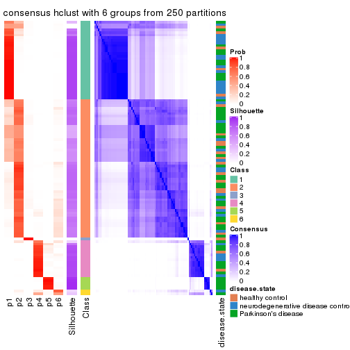
Heatmaps for the membership of samples in all partitions to see how consistent they are:
membership_heatmap(res, k = 2)
membership_heatmap(res, k = 3)
membership_heatmap(res, k = 4)
membership_heatmap(res, k = 5)
membership_heatmap(res, k = 6)
As soon as we have had the classes for columns, we can look for signatures which are significantly different between classes which can be candidate marks for certain classes. Following are the heatmaps for signatures.
Signature heatmaps where rows are scaled:
get_signatures(res, k = 2)
get_signatures(res, k = 3)
get_signatures(res, k = 4)
get_signatures(res, k = 5)
get_signatures(res, k = 6)

Signature heatmaps where rows are not scaled:
get_signatures(res, k = 2, scale_rows = FALSE)
get_signatures(res, k = 3, scale_rows = FALSE)
get_signatures(res, k = 4, scale_rows = FALSE)
get_signatures(res, k = 5, scale_rows = FALSE)
get_signatures(res, k = 6, scale_rows = FALSE)
Compare the overlap of signatures from different k:
compare_signatures(res)
get_signature() returns a data frame invisibly. TO get the list of signatures, the function
call should be assigned to a variable explicitly. In following code, if plot argument is set
to FALSE, no heatmap is plotted while only the differential analysis is performed.
# code only for demonstration
tb = get_signature(res, k = ..., plot = FALSE)
An example of the output of tb is:
#> which_row fdr mean_1 mean_2 scaled_mean_1 scaled_mean_2 km
#> 1 38 0.042760348 8.373488 9.131774 -0.5533452 0.5164555 1
#> 2 40 0.018707592 7.106213 8.469186 -0.6173731 0.5762149 1
#> 3 55 0.019134737 10.221463 11.207825 -0.6159697 0.5749050 1
#> 4 59 0.006059896 5.921854 7.869574 -0.6899429 0.6439467 1
#> 5 60 0.018055526 8.928898 10.211722 -0.6204761 0.5791110 1
#> 6 98 0.009384629 15.714769 14.887706 0.6635654 -0.6193277 2
...
The columns in tb are:
which_row: row indices corresponding to the input matrix.fdr: FDR for the differential test. mean_x: The mean value in group x.scaled_mean_x: The mean value in group x after rows are scaled.km: Row groups if k-means clustering is applied to rows.UMAP plot which shows how samples are separated.
dimension_reduction(res, k = 2, method = "UMAP")
dimension_reduction(res, k = 3, method = "UMAP")
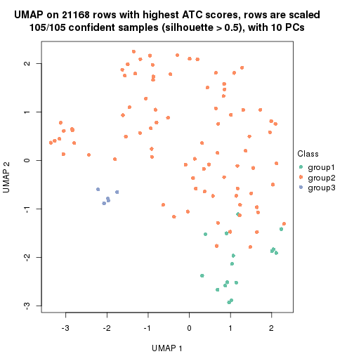
dimension_reduction(res, k = 4, method = "UMAP")
dimension_reduction(res, k = 5, method = "UMAP")
dimension_reduction(res, k = 6, method = "UMAP")
Following heatmap shows how subgroups are split when increasing k:
collect_classes(res)
Test correlation between subgroups and known annotations. If the known annotation is numeric, one-way ANOVA test is applied, and if the known annotation is discrete, chi-squared contingency table test is applied.
test_to_known_factors(res)
#> n disease.state(p) k
#> ATC:hclust 105 0.2430 2
#> ATC:hclust 105 0.1458 3
#> ATC:hclust 78 0.1236 4
#> ATC:hclust 96 0.0483 5
#> ATC:hclust 93 0.0553 6
If matrix rows can be associated to genes, consider to use functional_enrichment(res,
...) to perform function enrichment for the signature genes. See this vignette for more detailed explanations.
The object with results only for a single top-value method and a single partition method can be extracted as:
res = res_list["ATC", "kmeans"]
# you can also extract it by
# res = res_list["ATC:kmeans"]
A summary of res and all the functions that can be applied to it:
res
#> A 'ConsensusPartition' object with k = 2, 3, 4, 5, 6.
#> On a matrix with 21168 rows and 105 columns.
#> Top rows (1000, 2000, 3000, 4000, 5000) are extracted by 'ATC' method.
#> Subgroups are detected by 'kmeans' method.
#> Performed in total 1250 partitions by row resampling.
#> Best k for subgroups seems to be 2.
#>
#> Following methods can be applied to this 'ConsensusPartition' object:
#> [1] "cola_report" "collect_classes" "collect_plots"
#> [4] "collect_stats" "colnames" "compare_signatures"
#> [7] "consensus_heatmap" "dimension_reduction" "functional_enrichment"
#> [10] "get_anno_col" "get_anno" "get_classes"
#> [13] "get_consensus" "get_matrix" "get_membership"
#> [16] "get_param" "get_signatures" "get_stats"
#> [19] "is_best_k" "is_stable_k" "membership_heatmap"
#> [22] "ncol" "nrow" "plot_ecdf"
#> [25] "rownames" "select_partition_number" "show"
#> [28] "suggest_best_k" "test_to_known_factors"
collect_plots() function collects all the plots made from res for all k (number of partitions)
into one single page to provide an easy and fast comparison between different k.
collect_plots(res)
The plots are:
k and the heatmap of
predicted classes for each k.k.k.k.All the plots in panels can be made by individual functions and they are plotted later in this section.
select_partition_number() produces several plots showing different
statistics for choosing “optimized” k. There are following statistics:
k;k, the area increased is defined as \(A_k - A_{k-1}\).The detailed explanations of these statistics can be found in the cola vignette.
Generally speaking, lower PAC score, higher mean silhouette score or higher
concordance corresponds to better partition. Rand index and Jaccard index
measure how similar the current partition is compared to partition with k-1.
If they are too similar, we won't accept k is better than k-1.
select_partition_number(res)
The numeric values for all these statistics can be obtained by get_stats().
get_stats(res)
#> k 1-PAC mean_silhouette concordance area_increased Rand Jaccard
#> 2 2 1.000 0.981 0.991 0.4413 0.558 0.558
#> 3 3 0.644 0.923 0.924 0.3805 0.630 0.429
#> 4 4 0.705 0.533 0.825 0.1537 0.923 0.799
#> 5 5 0.686 0.657 0.792 0.0901 0.822 0.520
#> 6 6 0.730 0.629 0.759 0.0527 0.906 0.634
suggest_best_k() suggests the best \(k\) based on these statistics. The rules are as follows:
suggest_best_k(res)
#> [1] 2
Following shows the table of the partitions (You need to click the show/hide
code output link to see it). The membership matrix (columns with name p*)
is inferred by
clue::cl_consensus()
function with the SE method. Basically the value in the membership matrix
represents the probability to belong to a certain group. The finall class
label for an item is determined with the group with highest probability it
belongs to.
In get_classes() function, the entropy is calculated from the membership
matrix and the silhouette score is calculated from the consensus matrix.
cbind(get_classes(res, k = 2), get_membership(res, k = 2))
#> class entropy silhouette p1 p2
#> GSM153405 2 0.000 0.994 0.000 1.000
#> GSM153406 2 0.000 0.994 0.000 1.000
#> GSM153419 1 0.000 0.983 1.000 0.000
#> GSM153423 2 0.000 0.994 0.000 1.000
#> GSM153425 2 0.469 0.887 0.100 0.900
#> GSM153427 2 0.000 0.994 0.000 1.000
#> GSM153428 2 0.000 0.994 0.000 1.000
#> GSM153429 2 0.000 0.994 0.000 1.000
#> GSM153433 1 0.000 0.983 1.000 0.000
#> GSM153444 2 0.000 0.994 0.000 1.000
#> GSM153448 2 0.000 0.994 0.000 1.000
#> GSM153451 2 0.000 0.994 0.000 1.000
#> GSM153452 2 0.000 0.994 0.000 1.000
#> GSM153477 2 0.000 0.994 0.000 1.000
#> GSM153479 2 0.000 0.994 0.000 1.000
#> GSM153484 2 0.000 0.994 0.000 1.000
#> GSM153488 1 0.163 0.963 0.976 0.024
#> GSM153496 1 0.000 0.983 1.000 0.000
#> GSM153497 2 0.000 0.994 0.000 1.000
#> GSM153500 1 0.000 0.983 1.000 0.000
#> GSM153503 1 0.000 0.983 1.000 0.000
#> GSM153508 2 0.000 0.994 0.000 1.000
#> GSM153409 2 0.000 0.994 0.000 1.000
#> GSM153426 2 0.000 0.994 0.000 1.000
#> GSM153431 2 0.000 0.994 0.000 1.000
#> GSM153438 2 0.000 0.994 0.000 1.000
#> GSM153440 1 0.000 0.983 1.000 0.000
#> GSM153447 1 0.000 0.983 1.000 0.000
#> GSM153450 2 0.000 0.994 0.000 1.000
#> GSM153456 2 0.000 0.994 0.000 1.000
#> GSM153457 2 0.000 0.994 0.000 1.000
#> GSM153458 2 0.000 0.994 0.000 1.000
#> GSM153459 2 0.000 0.994 0.000 1.000
#> GSM153460 2 0.000 0.994 0.000 1.000
#> GSM153461 2 0.000 0.994 0.000 1.000
#> GSM153463 1 0.000 0.983 1.000 0.000
#> GSM153464 2 0.000 0.994 0.000 1.000
#> GSM153466 2 0.000 0.994 0.000 1.000
#> GSM153467 2 0.000 0.994 0.000 1.000
#> GSM153468 2 0.000 0.994 0.000 1.000
#> GSM153469 2 0.000 0.994 0.000 1.000
#> GSM153470 2 0.000 0.994 0.000 1.000
#> GSM153471 2 0.000 0.994 0.000 1.000
#> GSM153472 1 0.000 0.983 1.000 0.000
#> GSM153473 1 0.000 0.983 1.000 0.000
#> GSM153474 1 0.000 0.983 1.000 0.000
#> GSM153475 2 0.000 0.994 0.000 1.000
#> GSM153476 2 0.000 0.994 0.000 1.000
#> GSM153478 1 0.000 0.983 1.000 0.000
#> GSM153480 2 0.000 0.994 0.000 1.000
#> GSM153486 2 0.000 0.994 0.000 1.000
#> GSM153487 2 0.653 0.797 0.168 0.832
#> GSM153499 2 0.000 0.994 0.000 1.000
#> GSM153504 1 0.000 0.983 1.000 0.000
#> GSM153507 1 0.000 0.983 1.000 0.000
#> GSM153404 2 0.000 0.994 0.000 1.000
#> GSM153407 1 0.000 0.983 1.000 0.000
#> GSM153408 2 0.000 0.994 0.000 1.000
#> GSM153410 2 0.000 0.994 0.000 1.000
#> GSM153411 1 0.000 0.983 1.000 0.000
#> GSM153412 2 0.000 0.994 0.000 1.000
#> GSM153413 1 0.518 0.869 0.884 0.116
#> GSM153414 2 0.000 0.994 0.000 1.000
#> GSM153415 2 0.000 0.994 0.000 1.000
#> GSM153416 2 0.000 0.994 0.000 1.000
#> GSM153417 1 0.000 0.983 1.000 0.000
#> GSM153418 2 0.000 0.994 0.000 1.000
#> GSM153420 1 0.000 0.983 1.000 0.000
#> GSM153421 1 0.000 0.983 1.000 0.000
#> GSM153422 1 0.000 0.983 1.000 0.000
#> GSM153424 2 0.000 0.994 0.000 1.000
#> GSM153430 1 0.000 0.983 1.000 0.000
#> GSM153432 2 0.000 0.994 0.000 1.000
#> GSM153434 2 0.000 0.994 0.000 1.000
#> GSM153435 2 0.000 0.994 0.000 1.000
#> GSM153436 2 0.000 0.994 0.000 1.000
#> GSM153437 2 0.000 0.994 0.000 1.000
#> GSM153439 2 0.000 0.994 0.000 1.000
#> GSM153441 2 0.000 0.994 0.000 1.000
#> GSM153442 2 0.000 0.994 0.000 1.000
#> GSM153443 2 0.000 0.994 0.000 1.000
#> GSM153445 2 0.000 0.994 0.000 1.000
#> GSM153446 2 0.000 0.994 0.000 1.000
#> GSM153449 1 0.730 0.755 0.796 0.204
#> GSM153453 1 0.000 0.983 1.000 0.000
#> GSM153454 1 0.000 0.983 1.000 0.000
#> GSM153455 2 0.000 0.994 0.000 1.000
#> GSM153462 2 0.000 0.994 0.000 1.000
#> GSM153465 2 0.000 0.994 0.000 1.000
#> GSM153481 2 0.000 0.994 0.000 1.000
#> GSM153482 2 0.000 0.994 0.000 1.000
#> GSM153483 2 0.000 0.994 0.000 1.000
#> GSM153485 2 0.000 0.994 0.000 1.000
#> GSM153489 2 0.541 0.857 0.124 0.876
#> GSM153490 1 0.000 0.983 1.000 0.000
#> GSM153491 1 0.730 0.755 0.796 0.204
#> GSM153492 1 0.000 0.983 1.000 0.000
#> GSM153493 1 0.000 0.983 1.000 0.000
#> GSM153494 2 0.000 0.994 0.000 1.000
#> GSM153495 1 0.000 0.983 1.000 0.000
#> GSM153498 2 0.000 0.994 0.000 1.000
#> GSM153501 1 0.000 0.983 1.000 0.000
#> GSM153502 1 0.000 0.983 1.000 0.000
#> GSM153505 1 0.000 0.983 1.000 0.000
#> GSM153506 2 0.000 0.994 0.000 1.000
cbind(get_classes(res, k = 3), get_membership(res, k = 3))
#> class entropy silhouette p1 p2 p3
#> GSM153405 3 0.2066 0.9055 0.000 0.060 0.940
#> GSM153406 2 0.0747 0.9541 0.000 0.984 0.016
#> GSM153419 3 0.0747 0.8677 0.016 0.000 0.984
#> GSM153423 2 0.0000 0.9667 0.000 1.000 0.000
#> GSM153425 3 0.3752 0.9346 0.000 0.144 0.856
#> GSM153427 3 0.3816 0.9349 0.000 0.148 0.852
#> GSM153428 3 0.3816 0.9349 0.000 0.148 0.852
#> GSM153429 3 0.3816 0.9349 0.000 0.148 0.852
#> GSM153433 3 0.0747 0.8677 0.016 0.000 0.984
#> GSM153444 3 0.3879 0.9315 0.000 0.152 0.848
#> GSM153448 3 0.3816 0.9349 0.000 0.148 0.852
#> GSM153451 2 0.0000 0.9667 0.000 1.000 0.000
#> GSM153452 3 0.3816 0.9349 0.000 0.148 0.852
#> GSM153477 2 0.0000 0.9667 0.000 1.000 0.000
#> GSM153479 3 0.3816 0.9349 0.000 0.148 0.852
#> GSM153484 3 0.3816 0.9349 0.000 0.148 0.852
#> GSM153488 3 0.0747 0.8677 0.016 0.000 0.984
#> GSM153496 3 0.0747 0.8677 0.016 0.000 0.984
#> GSM153497 2 0.0000 0.9667 0.000 1.000 0.000
#> GSM153500 1 0.3551 0.9654 0.868 0.000 0.132
#> GSM153503 1 0.3551 0.9654 0.868 0.000 0.132
#> GSM153508 3 0.2959 0.9241 0.000 0.100 0.900
#> GSM153409 2 0.0000 0.9667 0.000 1.000 0.000
#> GSM153426 2 0.0000 0.9667 0.000 1.000 0.000
#> GSM153431 3 0.3816 0.9349 0.000 0.148 0.852
#> GSM153438 2 0.0000 0.9667 0.000 1.000 0.000
#> GSM153440 3 0.0747 0.8677 0.016 0.000 0.984
#> GSM153447 1 0.3551 0.9654 0.868 0.000 0.132
#> GSM153450 3 0.3816 0.9349 0.000 0.148 0.852
#> GSM153456 2 0.0000 0.9667 0.000 1.000 0.000
#> GSM153457 2 0.0000 0.9667 0.000 1.000 0.000
#> GSM153458 2 0.0000 0.9667 0.000 1.000 0.000
#> GSM153459 2 0.0000 0.9667 0.000 1.000 0.000
#> GSM153460 2 0.0000 0.9667 0.000 1.000 0.000
#> GSM153461 3 0.3816 0.9349 0.000 0.148 0.852
#> GSM153463 1 0.1163 0.9309 0.972 0.000 0.028
#> GSM153464 2 0.0000 0.9667 0.000 1.000 0.000
#> GSM153466 3 0.3816 0.9349 0.000 0.148 0.852
#> GSM153467 2 0.0000 0.9667 0.000 1.000 0.000
#> GSM153468 3 0.3816 0.9349 0.000 0.148 0.852
#> GSM153469 2 0.0747 0.9541 0.000 0.984 0.016
#> GSM153470 2 0.0000 0.9667 0.000 1.000 0.000
#> GSM153471 2 0.0000 0.9667 0.000 1.000 0.000
#> GSM153472 3 0.0747 0.8677 0.016 0.000 0.984
#> GSM153473 1 0.3551 0.9654 0.868 0.000 0.132
#> GSM153474 1 0.3551 0.9654 0.868 0.000 0.132
#> GSM153475 3 0.3816 0.9349 0.000 0.148 0.852
#> GSM153476 3 0.3482 0.9320 0.000 0.128 0.872
#> GSM153478 3 0.0747 0.8677 0.016 0.000 0.984
#> GSM153480 2 0.0000 0.9667 0.000 1.000 0.000
#> GSM153486 2 0.5835 0.3722 0.000 0.660 0.340
#> GSM153487 3 0.0747 0.8790 0.000 0.016 0.984
#> GSM153499 3 0.3816 0.9349 0.000 0.148 0.852
#> GSM153504 1 0.3551 0.9654 0.868 0.000 0.132
#> GSM153507 1 0.3551 0.9654 0.868 0.000 0.132
#> GSM153404 3 0.3816 0.9349 0.000 0.148 0.852
#> GSM153407 3 0.0747 0.8677 0.016 0.000 0.984
#> GSM153408 3 0.3816 0.9349 0.000 0.148 0.852
#> GSM153410 2 0.0747 0.9541 0.000 0.984 0.016
#> GSM153411 1 0.0000 0.9184 1.000 0.000 0.000
#> GSM153412 2 0.0747 0.9541 0.000 0.984 0.016
#> GSM153413 3 0.0747 0.8677 0.016 0.000 0.984
#> GSM153414 3 0.3816 0.9349 0.000 0.148 0.852
#> GSM153415 3 0.3816 0.9349 0.000 0.148 0.852
#> GSM153416 2 0.0000 0.9667 0.000 1.000 0.000
#> GSM153417 1 0.0000 0.9184 1.000 0.000 0.000
#> GSM153418 3 0.3816 0.9349 0.000 0.148 0.852
#> GSM153420 1 0.0000 0.9184 1.000 0.000 0.000
#> GSM153421 1 0.0000 0.9184 1.000 0.000 0.000
#> GSM153422 1 0.0000 0.9184 1.000 0.000 0.000
#> GSM153424 3 0.3816 0.9349 0.000 0.148 0.852
#> GSM153430 3 0.0747 0.8677 0.016 0.000 0.984
#> GSM153432 3 0.3816 0.9349 0.000 0.148 0.852
#> GSM153434 3 0.3412 0.9313 0.000 0.124 0.876
#> GSM153435 2 0.0000 0.9667 0.000 1.000 0.000
#> GSM153436 3 0.2066 0.9056 0.000 0.060 0.940
#> GSM153437 2 0.0000 0.9667 0.000 1.000 0.000
#> GSM153439 3 0.3816 0.9349 0.000 0.148 0.852
#> GSM153441 3 0.3816 0.9349 0.000 0.148 0.852
#> GSM153442 3 0.3816 0.9349 0.000 0.148 0.852
#> GSM153443 2 0.0000 0.9667 0.000 1.000 0.000
#> GSM153445 2 0.0000 0.9667 0.000 1.000 0.000
#> GSM153446 2 0.0000 0.9667 0.000 1.000 0.000
#> GSM153449 3 0.0747 0.8677 0.016 0.000 0.984
#> GSM153453 3 0.0747 0.8677 0.016 0.000 0.984
#> GSM153454 1 0.3482 0.9647 0.872 0.000 0.128
#> GSM153455 3 0.3816 0.9349 0.000 0.148 0.852
#> GSM153462 2 0.0000 0.9667 0.000 1.000 0.000
#> GSM153465 2 0.0747 0.9541 0.000 0.984 0.016
#> GSM153481 2 0.0000 0.9667 0.000 1.000 0.000
#> GSM153482 3 0.3482 0.9320 0.000 0.128 0.872
#> GSM153483 2 0.6192 0.0978 0.000 0.580 0.420
#> GSM153485 3 0.3412 0.9312 0.000 0.124 0.876
#> GSM153489 3 0.0747 0.8790 0.000 0.016 0.984
#> GSM153490 1 0.2959 0.9581 0.900 0.000 0.100
#> GSM153491 3 0.0747 0.8677 0.016 0.000 0.984
#> GSM153492 1 0.3551 0.9654 0.868 0.000 0.132
#> GSM153493 1 0.3551 0.9654 0.868 0.000 0.132
#> GSM153494 3 0.3816 0.9349 0.000 0.148 0.852
#> GSM153495 1 0.3551 0.9654 0.868 0.000 0.132
#> GSM153498 3 0.3340 0.9300 0.000 0.120 0.880
#> GSM153501 1 0.3551 0.9654 0.868 0.000 0.132
#> GSM153502 1 0.3551 0.9654 0.868 0.000 0.132
#> GSM153505 1 0.2878 0.9569 0.904 0.000 0.096
#> GSM153506 2 0.0000 0.9667 0.000 1.000 0.000
cbind(get_classes(res, k = 4), get_membership(res, k = 4))
#> class entropy silhouette p1 p2 p3 p4
#> GSM153405 3 0.3569 0.4337 0.000 0.000 0.804 0.196
#> GSM153406 2 0.5987 0.3190 0.000 0.520 0.440 0.040
#> GSM153419 3 0.5236 -0.4192 0.008 0.000 0.560 0.432
#> GSM153423 2 0.0000 0.9141 0.000 1.000 0.000 0.000
#> GSM153425 3 0.3074 0.4668 0.000 0.000 0.848 0.152
#> GSM153427 3 0.1867 0.5297 0.000 0.000 0.928 0.072
#> GSM153428 3 0.3024 0.4666 0.000 0.000 0.852 0.148
#> GSM153429 3 0.1118 0.5246 0.000 0.000 0.964 0.036
#> GSM153433 3 0.5161 -0.3823 0.008 0.000 0.592 0.400
#> GSM153444 3 0.1398 0.5349 0.000 0.004 0.956 0.040
#> GSM153448 3 0.1211 0.5347 0.000 0.000 0.960 0.040
#> GSM153451 2 0.0000 0.9141 0.000 1.000 0.000 0.000
#> GSM153452 3 0.2760 0.4776 0.000 0.000 0.872 0.128
#> GSM153477 2 0.0000 0.9141 0.000 1.000 0.000 0.000
#> GSM153479 3 0.3569 0.3609 0.000 0.000 0.804 0.196
#> GSM153484 3 0.3052 0.4327 0.000 0.004 0.860 0.136
#> GSM153488 4 0.5000 0.8440 0.000 0.000 0.496 0.504
#> GSM153496 4 0.5277 0.8843 0.008 0.000 0.460 0.532
#> GSM153497 2 0.0000 0.9141 0.000 1.000 0.000 0.000
#> GSM153500 1 0.1940 0.8781 0.924 0.000 0.000 0.076
#> GSM153503 1 0.0000 0.8972 1.000 0.000 0.000 0.000
#> GSM153508 3 0.4830 -0.3039 0.000 0.000 0.608 0.392
#> GSM153409 2 0.0000 0.9141 0.000 1.000 0.000 0.000
#> GSM153426 2 0.0000 0.9141 0.000 1.000 0.000 0.000
#> GSM153431 3 0.2760 0.4869 0.000 0.000 0.872 0.128
#> GSM153438 2 0.0000 0.9141 0.000 1.000 0.000 0.000
#> GSM153440 3 0.4898 -0.3709 0.000 0.000 0.584 0.416
#> GSM153447 1 0.1792 0.8819 0.932 0.000 0.000 0.068
#> GSM153450 3 0.1118 0.5346 0.000 0.000 0.964 0.036
#> GSM153456 2 0.0000 0.9141 0.000 1.000 0.000 0.000
#> GSM153457 2 0.0000 0.9141 0.000 1.000 0.000 0.000
#> GSM153458 2 0.0000 0.9141 0.000 1.000 0.000 0.000
#> GSM153459 2 0.0000 0.9141 0.000 1.000 0.000 0.000
#> GSM153460 2 0.0000 0.9141 0.000 1.000 0.000 0.000
#> GSM153461 3 0.1637 0.5322 0.000 0.000 0.940 0.060
#> GSM153463 1 0.1474 0.8872 0.948 0.000 0.000 0.052
#> GSM153464 2 0.0000 0.9141 0.000 1.000 0.000 0.000
#> GSM153466 3 0.1716 0.5245 0.000 0.000 0.936 0.064
#> GSM153467 2 0.0000 0.9141 0.000 1.000 0.000 0.000
#> GSM153468 3 0.3726 0.3446 0.000 0.000 0.788 0.212
#> GSM153469 2 0.6477 0.3800 0.000 0.552 0.368 0.080
#> GSM153470 2 0.0000 0.9141 0.000 1.000 0.000 0.000
#> GSM153471 2 0.0000 0.9141 0.000 1.000 0.000 0.000
#> GSM153472 4 0.5268 0.8900 0.008 0.000 0.452 0.540
#> GSM153473 1 0.1792 0.8811 0.932 0.000 0.000 0.068
#> GSM153474 1 0.1302 0.8894 0.956 0.000 0.000 0.044
#> GSM153475 3 0.3123 0.4158 0.000 0.000 0.844 0.156
#> GSM153476 3 0.4790 -0.2911 0.000 0.000 0.620 0.380
#> GSM153478 4 0.4972 0.8675 0.000 0.000 0.456 0.544
#> GSM153480 2 0.0000 0.9141 0.000 1.000 0.000 0.000
#> GSM153486 3 0.5611 0.0532 0.000 0.412 0.564 0.024
#> GSM153487 3 0.4998 -0.8358 0.000 0.000 0.512 0.488
#> GSM153499 3 0.3801 0.3309 0.000 0.000 0.780 0.220
#> GSM153504 1 0.0188 0.8971 0.996 0.000 0.000 0.004
#> GSM153507 1 0.3751 0.7719 0.800 0.000 0.004 0.196
#> GSM153404 3 0.2081 0.5224 0.000 0.000 0.916 0.084
#> GSM153407 3 0.4761 -0.2518 0.000 0.000 0.628 0.372
#> GSM153408 3 0.1792 0.5238 0.000 0.000 0.932 0.068
#> GSM153410 2 0.5894 0.4169 0.000 0.568 0.392 0.040
#> GSM153411 1 0.4804 0.7570 0.616 0.000 0.000 0.384
#> GSM153412 2 0.6222 0.3489 0.000 0.532 0.412 0.056
#> GSM153413 4 0.4967 0.7980 0.000 0.000 0.452 0.548
#> GSM153414 3 0.2281 0.5232 0.000 0.000 0.904 0.096
#> GSM153415 3 0.4008 0.3449 0.000 0.000 0.756 0.244
#> GSM153416 2 0.0000 0.9141 0.000 1.000 0.000 0.000
#> GSM153417 1 0.4804 0.7570 0.616 0.000 0.000 0.384
#> GSM153418 3 0.1792 0.5238 0.000 0.000 0.932 0.068
#> GSM153420 1 0.4804 0.7570 0.616 0.000 0.000 0.384
#> GSM153421 1 0.4804 0.7570 0.616 0.000 0.000 0.384
#> GSM153422 1 0.4804 0.7570 0.616 0.000 0.000 0.384
#> GSM153424 3 0.2760 0.4780 0.000 0.000 0.872 0.128
#> GSM153430 3 0.4877 -0.3585 0.000 0.000 0.592 0.408
#> GSM153432 3 0.1022 0.5315 0.000 0.000 0.968 0.032
#> GSM153434 3 0.4477 -0.0601 0.000 0.000 0.688 0.312
#> GSM153435 2 0.0000 0.9141 0.000 1.000 0.000 0.000
#> GSM153436 3 0.4713 -0.2387 0.000 0.000 0.640 0.360
#> GSM153437 2 0.0000 0.9141 0.000 1.000 0.000 0.000
#> GSM153439 3 0.1022 0.5250 0.000 0.000 0.968 0.032
#> GSM153441 3 0.1716 0.5297 0.000 0.000 0.936 0.064
#> GSM153442 3 0.2149 0.5186 0.000 0.000 0.912 0.088
#> GSM153443 2 0.0000 0.9141 0.000 1.000 0.000 0.000
#> GSM153445 2 0.0000 0.9141 0.000 1.000 0.000 0.000
#> GSM153446 2 0.0000 0.9141 0.000 1.000 0.000 0.000
#> GSM153449 3 0.4697 -0.3024 0.000 0.000 0.644 0.356
#> GSM153453 4 0.5865 0.8367 0.036 0.000 0.412 0.552
#> GSM153454 1 0.0000 0.8972 1.000 0.000 0.000 0.000
#> GSM153455 3 0.0817 0.5270 0.000 0.000 0.976 0.024
#> GSM153462 2 0.0000 0.9141 0.000 1.000 0.000 0.000
#> GSM153465 2 0.5673 0.3251 0.000 0.528 0.448 0.024
#> GSM153481 2 0.0000 0.9141 0.000 1.000 0.000 0.000
#> GSM153482 3 0.4713 -0.3462 0.000 0.000 0.640 0.360
#> GSM153483 3 0.7122 0.1287 0.000 0.248 0.560 0.192
#> GSM153485 3 0.4746 -0.3821 0.000 0.000 0.632 0.368
#> GSM153489 3 0.4999 -0.8490 0.000 0.000 0.508 0.492
#> GSM153490 1 0.0000 0.8972 1.000 0.000 0.000 0.000
#> GSM153491 3 0.5000 -0.8596 0.000 0.000 0.504 0.496
#> GSM153492 1 0.2530 0.8571 0.888 0.000 0.000 0.112
#> GSM153493 1 0.0188 0.8971 0.996 0.000 0.000 0.004
#> GSM153494 3 0.3764 0.3304 0.000 0.000 0.784 0.216
#> GSM153495 1 0.0000 0.8972 1.000 0.000 0.000 0.000
#> GSM153498 3 0.4776 -0.2945 0.000 0.000 0.624 0.376
#> GSM153501 1 0.0000 0.8972 1.000 0.000 0.000 0.000
#> GSM153502 1 0.2530 0.8575 0.888 0.000 0.000 0.112
#> GSM153505 1 0.0188 0.8966 0.996 0.000 0.000 0.004
#> GSM153506 2 0.0000 0.9141 0.000 1.000 0.000 0.000
cbind(get_classes(res, k = 5), get_membership(res, k = 5))
#> class entropy silhouette p1 p2 p3 p4 p5
#> GSM153405 3 0.5093 0.4423 0.180 0.000 0.696 0.124 0.000
#> GSM153406 3 0.6970 0.4362 0.084 0.216 0.572 0.128 0.000
#> GSM153419 1 0.6463 0.3510 0.464 0.000 0.344 0.192 0.000
#> GSM153423 2 0.0000 0.9961 0.000 1.000 0.000 0.000 0.000
#> GSM153425 3 0.3992 0.5361 0.124 0.000 0.796 0.080 0.000
#> GSM153427 3 0.1579 0.6181 0.024 0.000 0.944 0.032 0.000
#> GSM153428 3 0.3840 0.5414 0.116 0.000 0.808 0.076 0.000
#> GSM153429 3 0.3485 0.6012 0.124 0.000 0.828 0.048 0.000
#> GSM153433 1 0.6272 0.3249 0.468 0.000 0.380 0.152 0.000
#> GSM153444 3 0.1697 0.6218 0.060 0.000 0.932 0.008 0.000
#> GSM153448 3 0.2351 0.6139 0.088 0.000 0.896 0.016 0.000
#> GSM153451 2 0.0162 0.9963 0.000 0.996 0.000 0.004 0.000
#> GSM153452 3 0.4197 0.5347 0.148 0.000 0.776 0.076 0.000
#> GSM153477 2 0.0579 0.9846 0.000 0.984 0.008 0.008 0.000
#> GSM153479 3 0.5989 0.1383 0.412 0.000 0.476 0.112 0.000
#> GSM153484 3 0.5231 0.4021 0.316 0.004 0.624 0.056 0.000
#> GSM153488 1 0.3301 0.6542 0.848 0.000 0.072 0.080 0.000
#> GSM153496 1 0.3918 0.6484 0.804 0.000 0.100 0.096 0.000
#> GSM153497 2 0.0000 0.9961 0.000 1.000 0.000 0.000 0.000
#> GSM153500 4 0.4315 0.8130 0.024 0.000 0.000 0.700 0.276
#> GSM153503 4 0.4138 0.8451 0.000 0.000 0.000 0.616 0.384
#> GSM153508 1 0.4069 0.5502 0.792 0.000 0.096 0.112 0.000
#> GSM153409 2 0.0162 0.9963 0.000 0.996 0.000 0.004 0.000
#> GSM153426 2 0.0162 0.9963 0.000 0.996 0.000 0.004 0.000
#> GSM153431 3 0.3146 0.5862 0.092 0.000 0.856 0.052 0.000
#> GSM153438 2 0.0162 0.9963 0.000 0.996 0.000 0.004 0.000
#> GSM153440 1 0.6224 0.3241 0.468 0.000 0.388 0.144 0.000
#> GSM153447 4 0.4229 0.8098 0.020 0.000 0.000 0.704 0.276
#> GSM153450 3 0.1597 0.6221 0.048 0.000 0.940 0.012 0.000
#> GSM153456 2 0.0162 0.9963 0.000 0.996 0.000 0.004 0.000
#> GSM153457 2 0.0162 0.9963 0.000 0.996 0.000 0.004 0.000
#> GSM153458 2 0.0162 0.9963 0.000 0.996 0.000 0.004 0.000
#> GSM153459 2 0.0000 0.9961 0.000 1.000 0.000 0.000 0.000
#> GSM153460 2 0.0162 0.9963 0.000 0.996 0.000 0.004 0.000
#> GSM153461 3 0.1830 0.6179 0.040 0.000 0.932 0.028 0.000
#> GSM153463 4 0.4437 0.7377 0.004 0.000 0.000 0.532 0.464
#> GSM153464 2 0.0162 0.9963 0.000 0.996 0.000 0.004 0.000
#> GSM153466 3 0.2574 0.6064 0.112 0.000 0.876 0.012 0.000
#> GSM153467 2 0.0162 0.9963 0.000 0.996 0.000 0.004 0.000
#> GSM153468 1 0.5773 -0.0382 0.476 0.000 0.436 0.088 0.000
#> GSM153469 3 0.8138 0.1895 0.252 0.292 0.352 0.104 0.000
#> GSM153470 2 0.0451 0.9883 0.000 0.988 0.004 0.008 0.000
#> GSM153471 2 0.0162 0.9943 0.000 0.996 0.000 0.004 0.000
#> GSM153472 1 0.4117 0.6424 0.788 0.000 0.096 0.116 0.000
#> GSM153473 4 0.4130 0.8217 0.012 0.000 0.000 0.696 0.292
#> GSM153474 4 0.3949 0.8276 0.004 0.000 0.000 0.696 0.300
#> GSM153475 3 0.5467 0.3000 0.384 0.000 0.548 0.068 0.000
#> GSM153476 1 0.3875 0.5860 0.792 0.000 0.160 0.048 0.000
#> GSM153478 1 0.4498 0.6228 0.756 0.000 0.132 0.112 0.000
#> GSM153480 2 0.0000 0.9961 0.000 1.000 0.000 0.000 0.000
#> GSM153486 3 0.5970 0.4411 0.084 0.272 0.616 0.028 0.000
#> GSM153487 1 0.3176 0.6506 0.856 0.000 0.080 0.064 0.000
#> GSM153499 1 0.5770 0.1136 0.532 0.000 0.372 0.096 0.000
#> GSM153504 4 0.4505 0.8412 0.012 0.000 0.000 0.604 0.384
#> GSM153507 4 0.6524 0.2394 0.356 0.000 0.000 0.444 0.200
#> GSM153404 3 0.4588 0.5690 0.116 0.000 0.748 0.136 0.000
#> GSM153407 3 0.6239 -0.2587 0.404 0.000 0.452 0.144 0.000
#> GSM153408 3 0.4444 0.5722 0.104 0.000 0.760 0.136 0.000
#> GSM153410 3 0.7135 0.3995 0.080 0.256 0.536 0.128 0.000
#> GSM153411 5 0.0162 0.9950 0.004 0.000 0.000 0.000 0.996
#> GSM153412 3 0.7201 0.4173 0.096 0.220 0.548 0.136 0.000
#> GSM153413 1 0.4720 0.5942 0.736 0.000 0.124 0.140 0.000
#> GSM153414 3 0.3181 0.5838 0.072 0.000 0.856 0.072 0.000
#> GSM153415 3 0.6515 0.0520 0.388 0.000 0.420 0.192 0.000
#> GSM153416 2 0.0000 0.9961 0.000 1.000 0.000 0.000 0.000
#> GSM153417 5 0.0162 0.9950 0.004 0.000 0.000 0.000 0.996
#> GSM153418 3 0.4444 0.5722 0.104 0.000 0.760 0.136 0.000
#> GSM153420 5 0.0162 0.9952 0.004 0.000 0.000 0.000 0.996
#> GSM153421 5 0.0000 0.9958 0.000 0.000 0.000 0.000 1.000
#> GSM153422 5 0.0162 0.9952 0.004 0.000 0.000 0.000 0.996
#> GSM153424 3 0.3532 0.5646 0.092 0.000 0.832 0.076 0.000
#> GSM153430 1 0.6224 0.3177 0.468 0.000 0.388 0.144 0.000
#> GSM153432 3 0.4049 0.5937 0.164 0.000 0.780 0.056 0.000
#> GSM153434 3 0.5641 -0.1562 0.436 0.000 0.488 0.076 0.000
#> GSM153435 2 0.0162 0.9963 0.000 0.996 0.000 0.004 0.000
#> GSM153436 3 0.5816 -0.2055 0.440 0.000 0.468 0.092 0.000
#> GSM153437 2 0.0162 0.9963 0.000 0.996 0.000 0.004 0.000
#> GSM153439 3 0.3460 0.6024 0.128 0.000 0.828 0.044 0.000
#> GSM153441 3 0.3803 0.5763 0.140 0.000 0.804 0.056 0.000
#> GSM153442 3 0.3914 0.5589 0.164 0.000 0.788 0.048 0.000
#> GSM153443 2 0.0000 0.9961 0.000 1.000 0.000 0.000 0.000
#> GSM153445 2 0.0000 0.9961 0.000 1.000 0.000 0.000 0.000
#> GSM153446 2 0.0000 0.9961 0.000 1.000 0.000 0.000 0.000
#> GSM153449 1 0.5785 0.2687 0.504 0.000 0.404 0.092 0.000
#> GSM153453 1 0.4255 0.6382 0.776 0.000 0.096 0.128 0.000
#> GSM153454 4 0.4288 0.8435 0.004 0.000 0.000 0.612 0.384
#> GSM153455 3 0.3844 0.5948 0.164 0.000 0.792 0.044 0.000
#> GSM153462 2 0.0000 0.9961 0.000 1.000 0.000 0.000 0.000
#> GSM153465 3 0.7023 0.3948 0.112 0.288 0.528 0.072 0.000
#> GSM153481 2 0.0609 0.9806 0.000 0.980 0.000 0.020 0.000
#> GSM153482 1 0.3098 0.6092 0.836 0.000 0.148 0.016 0.000
#> GSM153483 1 0.7285 -0.0936 0.440 0.084 0.372 0.104 0.000
#> GSM153485 1 0.3011 0.6157 0.844 0.000 0.140 0.016 0.000
#> GSM153489 1 0.3051 0.6549 0.864 0.000 0.076 0.060 0.000
#> GSM153490 4 0.4610 0.8368 0.016 0.000 0.000 0.596 0.388
#> GSM153491 1 0.3242 0.6547 0.852 0.000 0.076 0.072 0.000
#> GSM153492 4 0.4734 0.7540 0.064 0.000 0.000 0.704 0.232
#> GSM153493 4 0.4138 0.8451 0.000 0.000 0.000 0.616 0.384
#> GSM153494 1 0.5401 0.0896 0.536 0.000 0.404 0.060 0.000
#> GSM153495 4 0.4138 0.8451 0.000 0.000 0.000 0.616 0.384
#> GSM153498 1 0.4277 0.5590 0.768 0.000 0.156 0.076 0.000
#> GSM153501 4 0.4138 0.8451 0.000 0.000 0.000 0.616 0.384
#> GSM153502 4 0.4769 0.7879 0.056 0.000 0.000 0.688 0.256
#> GSM153505 4 0.4138 0.8451 0.000 0.000 0.000 0.616 0.384
#> GSM153506 2 0.0162 0.9943 0.000 0.996 0.000 0.004 0.000
cbind(get_classes(res, k = 6), get_membership(res, k = 6))
#> class entropy silhouette p1 p2 p3 p4 p5 p6
#> GSM153405 2 0.5353 0.39499 0.000 0.632 0.252 0.000 0.036 0.080
#> GSM153406 3 0.2589 0.57811 0.056 0.020 0.892 0.000 0.028 0.004
#> GSM153419 2 0.6558 0.24311 0.000 0.476 0.120 0.000 0.080 0.324
#> GSM153423 1 0.0870 0.96339 0.972 0.004 0.012 0.000 0.012 0.000
#> GSM153425 2 0.3946 0.40498 0.000 0.736 0.228 0.000 0.016 0.020
#> GSM153427 3 0.3895 0.45390 0.000 0.280 0.700 0.000 0.008 0.012
#> GSM153428 2 0.3614 0.40246 0.000 0.752 0.220 0.000 0.000 0.028
#> GSM153429 3 0.4226 0.57279 0.000 0.216 0.724 0.000 0.008 0.052
#> GSM153433 2 0.5296 0.35173 0.000 0.564 0.024 0.000 0.060 0.352
#> GSM153444 3 0.4756 0.42848 0.004 0.332 0.608 0.000 0.000 0.056
#> GSM153448 2 0.4992 -0.25256 0.000 0.472 0.460 0.000 0.000 0.068
#> GSM153451 1 0.0935 0.97004 0.964 0.004 0.000 0.000 0.032 0.000
#> GSM153452 2 0.4336 0.36157 0.000 0.704 0.232 0.000 0.004 0.060
#> GSM153477 1 0.2557 0.90385 0.892 0.004 0.056 0.000 0.036 0.012
#> GSM153479 6 0.6740 -0.02308 0.004 0.236 0.344 0.000 0.032 0.384
#> GSM153484 3 0.4865 0.54483 0.000 0.068 0.680 0.000 0.024 0.228
#> GSM153488 6 0.3425 0.55986 0.000 0.120 0.024 0.000 0.032 0.824
#> GSM153496 6 0.3242 0.54523 0.000 0.148 0.004 0.000 0.032 0.816
#> GSM153497 1 0.0291 0.96976 0.992 0.004 0.000 0.000 0.004 0.000
#> GSM153500 4 0.2666 0.88156 0.000 0.024 0.008 0.892 0.032 0.044
#> GSM153503 4 0.0000 0.91059 0.000 0.000 0.000 1.000 0.000 0.000
#> GSM153508 6 0.5466 0.52127 0.000 0.168 0.080 0.000 0.084 0.668
#> GSM153409 1 0.0603 0.97094 0.980 0.004 0.000 0.000 0.016 0.000
#> GSM153426 1 0.0713 0.97046 0.972 0.000 0.000 0.000 0.028 0.000
#> GSM153431 2 0.4814 -0.00131 0.000 0.504 0.452 0.000 0.008 0.036
#> GSM153438 1 0.0935 0.97004 0.964 0.004 0.000 0.000 0.032 0.000
#> GSM153440 2 0.5316 0.29365 0.000 0.524 0.020 0.000 0.060 0.396
#> GSM153447 4 0.3967 0.78542 0.000 0.124 0.012 0.800 0.032 0.032
#> GSM153450 3 0.4731 0.29631 0.000 0.428 0.524 0.000 0.000 0.048
#> GSM153456 1 0.0790 0.97019 0.968 0.000 0.000 0.000 0.032 0.000
#> GSM153457 1 0.0790 0.97019 0.968 0.000 0.000 0.000 0.032 0.000
#> GSM153458 1 0.0935 0.97004 0.964 0.004 0.000 0.000 0.032 0.000
#> GSM153459 1 0.0508 0.96935 0.984 0.004 0.000 0.000 0.012 0.000
#> GSM153460 1 0.0935 0.97004 0.964 0.004 0.000 0.000 0.032 0.000
#> GSM153461 3 0.4675 0.35102 0.000 0.368 0.580 0.000 0.000 0.052
#> GSM153463 4 0.2163 0.80914 0.000 0.008 0.004 0.892 0.096 0.000
#> GSM153464 1 0.0632 0.97099 0.976 0.000 0.000 0.000 0.024 0.000
#> GSM153466 3 0.5196 0.26508 0.000 0.404 0.504 0.000 0.000 0.092
#> GSM153467 1 0.0632 0.97099 0.976 0.000 0.000 0.000 0.024 0.000
#> GSM153468 6 0.6361 0.18894 0.000 0.236 0.272 0.000 0.024 0.468
#> GSM153469 3 0.8115 0.12538 0.200 0.156 0.356 0.000 0.040 0.248
#> GSM153470 1 0.2077 0.92614 0.920 0.004 0.032 0.000 0.032 0.012
#> GSM153471 1 0.1296 0.94769 0.952 0.000 0.004 0.000 0.032 0.012
#> GSM153472 6 0.4064 0.46833 0.000 0.200 0.004 0.000 0.056 0.740
#> GSM153473 4 0.2454 0.88762 0.000 0.032 0.008 0.904 0.024 0.032
#> GSM153474 4 0.1518 0.89775 0.000 0.008 0.000 0.944 0.024 0.024
#> GSM153475 3 0.4978 0.51810 0.000 0.072 0.644 0.000 0.016 0.268
#> GSM153476 6 0.4442 0.57174 0.000 0.068 0.144 0.000 0.036 0.752
#> GSM153478 6 0.4554 0.35232 0.000 0.272 0.008 0.000 0.052 0.668
#> GSM153480 1 0.0000 0.96959 1.000 0.000 0.000 0.000 0.000 0.000
#> GSM153486 3 0.6797 0.51350 0.136 0.140 0.580 0.000 0.032 0.112
#> GSM153487 6 0.2291 0.60921 0.000 0.044 0.040 0.000 0.012 0.904
#> GSM153499 6 0.6118 0.35034 0.000 0.160 0.236 0.000 0.044 0.560
#> GSM153504 4 0.1148 0.90510 0.000 0.020 0.016 0.960 0.000 0.004
#> GSM153507 6 0.6967 -0.06536 0.000 0.124 0.016 0.392 0.072 0.396
#> GSM153404 3 0.4331 0.49387 0.000 0.188 0.740 0.000 0.032 0.040
#> GSM153407 2 0.5618 0.35428 0.000 0.540 0.044 0.000 0.060 0.356
#> GSM153408 3 0.2216 0.57365 0.000 0.052 0.908 0.000 0.024 0.016
#> GSM153410 3 0.2843 0.55006 0.104 0.004 0.860 0.000 0.028 0.004
#> GSM153411 5 0.3329 0.99479 0.000 0.004 0.004 0.236 0.756 0.000
#> GSM153412 3 0.3078 0.56423 0.076 0.012 0.864 0.000 0.032 0.016
#> GSM153413 6 0.6060 0.41425 0.000 0.116 0.232 0.000 0.068 0.584
#> GSM153414 2 0.4612 0.20670 0.000 0.636 0.308 0.000 0.004 0.052
#> GSM153415 3 0.6450 -0.01642 0.000 0.140 0.492 0.000 0.060 0.308
#> GSM153416 1 0.0767 0.96300 0.976 0.004 0.012 0.000 0.008 0.000
#> GSM153417 5 0.3329 0.99479 0.000 0.004 0.004 0.236 0.756 0.000
#> GSM153418 3 0.2295 0.57265 0.000 0.052 0.904 0.000 0.028 0.016
#> GSM153420 5 0.3050 0.99653 0.000 0.000 0.000 0.236 0.764 0.000
#> GSM153421 5 0.3050 0.99653 0.000 0.000 0.000 0.236 0.764 0.000
#> GSM153422 5 0.3050 0.99653 0.000 0.000 0.000 0.236 0.764 0.000
#> GSM153424 2 0.3720 0.38673 0.000 0.736 0.236 0.000 0.000 0.028
#> GSM153430 2 0.5408 0.36133 0.000 0.564 0.032 0.000 0.060 0.344
#> GSM153432 3 0.4265 0.56586 0.000 0.172 0.728 0.000 0.000 0.100
#> GSM153434 2 0.5408 0.45169 0.000 0.604 0.076 0.000 0.032 0.288
#> GSM153435 1 0.0632 0.97099 0.976 0.000 0.000 0.000 0.024 0.000
#> GSM153436 2 0.4506 0.48037 0.000 0.684 0.048 0.000 0.012 0.256
#> GSM153437 1 0.0790 0.97019 0.968 0.000 0.000 0.000 0.032 0.000
#> GSM153439 3 0.4145 0.56969 0.000 0.220 0.724 0.000 0.004 0.052
#> GSM153441 2 0.5727 -0.06886 0.000 0.476 0.372 0.000 0.004 0.148
#> GSM153442 2 0.5282 0.14882 0.000 0.568 0.304 0.000 0.000 0.128
#> GSM153443 1 0.0632 0.97099 0.976 0.000 0.000 0.000 0.024 0.000
#> GSM153445 1 0.0146 0.97039 0.996 0.000 0.000 0.000 0.004 0.000
#> GSM153446 1 0.0000 0.96959 1.000 0.000 0.000 0.000 0.000 0.000
#> GSM153449 2 0.5759 0.33529 0.000 0.484 0.104 0.000 0.020 0.392
#> GSM153453 6 0.4436 0.46999 0.000 0.192 0.004 0.016 0.056 0.732
#> GSM153454 4 0.0291 0.90887 0.000 0.004 0.004 0.992 0.000 0.000
#> GSM153455 3 0.5678 0.49491 0.000 0.220 0.588 0.000 0.016 0.176
#> GSM153462 1 0.0520 0.96481 0.984 0.000 0.008 0.000 0.008 0.000
#> GSM153465 3 0.4966 0.57058 0.140 0.048 0.736 0.000 0.024 0.052
#> GSM153481 1 0.2490 0.89883 0.896 0.000 0.044 0.000 0.032 0.028
#> GSM153482 6 0.2476 0.61157 0.000 0.032 0.072 0.000 0.008 0.888
#> GSM153483 6 0.6736 0.13021 0.016 0.152 0.340 0.000 0.040 0.452
#> GSM153485 6 0.2758 0.61014 0.000 0.036 0.080 0.000 0.012 0.872
#> GSM153489 6 0.2462 0.59943 0.000 0.064 0.032 0.000 0.012 0.892
#> GSM153490 4 0.1722 0.89860 0.000 0.036 0.016 0.936 0.008 0.004
#> GSM153491 6 0.2339 0.60669 0.000 0.072 0.020 0.000 0.012 0.896
#> GSM153492 4 0.3293 0.80417 0.000 0.020 0.000 0.840 0.048 0.092
#> GSM153493 4 0.0000 0.91059 0.000 0.000 0.000 1.000 0.000 0.000
#> GSM153494 6 0.6052 0.34087 0.000 0.180 0.220 0.000 0.036 0.564
#> GSM153495 4 0.0146 0.90997 0.000 0.004 0.000 0.996 0.000 0.000
#> GSM153498 6 0.4649 0.56865 0.000 0.112 0.100 0.000 0.044 0.744
#> GSM153501 4 0.0000 0.91059 0.000 0.000 0.000 1.000 0.000 0.000
#> GSM153502 4 0.3381 0.85192 0.000 0.032 0.016 0.852 0.032 0.068
#> GSM153505 4 0.0000 0.91059 0.000 0.000 0.000 1.000 0.000 0.000
#> GSM153506 1 0.1409 0.94515 0.948 0.000 0.008 0.000 0.032 0.012
Heatmaps for the consensus matrix. It visualizes the probability of two samples to be in a same group.
consensus_heatmap(res, k = 2)
consensus_heatmap(res, k = 3)
consensus_heatmap(res, k = 4)
consensus_heatmap(res, k = 5)
consensus_heatmap(res, k = 6)
Heatmaps for the membership of samples in all partitions to see how consistent they are:
membership_heatmap(res, k = 2)
membership_heatmap(res, k = 3)
membership_heatmap(res, k = 4)
membership_heatmap(res, k = 5)
membership_heatmap(res, k = 6)
As soon as we have had the classes for columns, we can look for signatures which are significantly different between classes which can be candidate marks for certain classes. Following are the heatmaps for signatures.
Signature heatmaps where rows are scaled:
get_signatures(res, k = 2)
get_signatures(res, k = 3)
get_signatures(res, k = 4)
get_signatures(res, k = 5)
get_signatures(res, k = 6)
Signature heatmaps where rows are not scaled:
get_signatures(res, k = 2, scale_rows = FALSE)
get_signatures(res, k = 3, scale_rows = FALSE)
get_signatures(res, k = 4, scale_rows = FALSE)
get_signatures(res, k = 5, scale_rows = FALSE)
get_signatures(res, k = 6, scale_rows = FALSE)
Compare the overlap of signatures from different k:
compare_signatures(res)
get_signature() returns a data frame invisibly. TO get the list of signatures, the function
call should be assigned to a variable explicitly. In following code, if plot argument is set
to FALSE, no heatmap is plotted while only the differential analysis is performed.
# code only for demonstration
tb = get_signature(res, k = ..., plot = FALSE)
An example of the output of tb is:
#> which_row fdr mean_1 mean_2 scaled_mean_1 scaled_mean_2 km
#> 1 38 0.042760348 8.373488 9.131774 -0.5533452 0.5164555 1
#> 2 40 0.018707592 7.106213 8.469186 -0.6173731 0.5762149 1
#> 3 55 0.019134737 10.221463 11.207825 -0.6159697 0.5749050 1
#> 4 59 0.006059896 5.921854 7.869574 -0.6899429 0.6439467 1
#> 5 60 0.018055526 8.928898 10.211722 -0.6204761 0.5791110 1
#> 6 98 0.009384629 15.714769 14.887706 0.6635654 -0.6193277 2
...
The columns in tb are:
which_row: row indices corresponding to the input matrix.fdr: FDR for the differential test. mean_x: The mean value in group x.scaled_mean_x: The mean value in group x after rows are scaled.km: Row groups if k-means clustering is applied to rows.UMAP plot which shows how samples are separated.
dimension_reduction(res, k = 2, method = "UMAP")
dimension_reduction(res, k = 3, method = "UMAP")
dimension_reduction(res, k = 4, method = "UMAP")
dimension_reduction(res, k = 5, method = "UMAP")
dimension_reduction(res, k = 6, method = "UMAP")
Following heatmap shows how subgroups are split when increasing k:
collect_classes(res)
Test correlation between subgroups and known annotations. If the known annotation is numeric, one-way ANOVA test is applied, and if the known annotation is discrete, chi-squared contingency table test is applied.
test_to_known_factors(res)
#> n disease.state(p) k
#> ATC:kmeans 105 0.502 2
#> ATC:kmeans 103 0.103 3
#> ATC:kmeans 69 0.262 4
#> ATC:kmeans 81 0.119 5
#> ATC:kmeans 68 0.161 6
If matrix rows can be associated to genes, consider to use functional_enrichment(res,
...) to perform function enrichment for the signature genes. See this vignette for more detailed explanations.
The object with results only for a single top-value method and a single partition method can be extracted as:
res = res_list["ATC", "skmeans"]
# you can also extract it by
# res = res_list["ATC:skmeans"]
A summary of res and all the functions that can be applied to it:
res
#> A 'ConsensusPartition' object with k = 2, 3, 4, 5, 6.
#> On a matrix with 21168 rows and 105 columns.
#> Top rows (1000, 2000, 3000, 4000, 5000) are extracted by 'ATC' method.
#> Subgroups are detected by 'skmeans' method.
#> Performed in total 1250 partitions by row resampling.
#> Best k for subgroups seems to be 2.
#>
#> Following methods can be applied to this 'ConsensusPartition' object:
#> [1] "cola_report" "collect_classes" "collect_plots"
#> [4] "collect_stats" "colnames" "compare_signatures"
#> [7] "consensus_heatmap" "dimension_reduction" "functional_enrichment"
#> [10] "get_anno_col" "get_anno" "get_classes"
#> [13] "get_consensus" "get_matrix" "get_membership"
#> [16] "get_param" "get_signatures" "get_stats"
#> [19] "is_best_k" "is_stable_k" "membership_heatmap"
#> [22] "ncol" "nrow" "plot_ecdf"
#> [25] "rownames" "select_partition_number" "show"
#> [28] "suggest_best_k" "test_to_known_factors"
collect_plots() function collects all the plots made from res for all k (number of partitions)
into one single page to provide an easy and fast comparison between different k.
collect_plots(res)
The plots are:
k and the heatmap of
predicted classes for each k.k.k.k.All the plots in panels can be made by individual functions and they are plotted later in this section.
select_partition_number() produces several plots showing different
statistics for choosing “optimized” k. There are following statistics:
k;k, the area increased is defined as \(A_k - A_{k-1}\).The detailed explanations of these statistics can be found in the cola vignette.
Generally speaking, lower PAC score, higher mean silhouette score or higher
concordance corresponds to better partition. Rand index and Jaccard index
measure how similar the current partition is compared to partition with k-1.
If they are too similar, we won't accept k is better than k-1.
select_partition_number(res)
The numeric values for all these statistics can be obtained by get_stats().
get_stats(res)
#> k 1-PAC mean_silhouette concordance area_increased Rand Jaccard
#> 2 2 1.000 0.984 0.993 0.4961 0.503 0.503
#> 3 3 0.710 0.723 0.879 0.2520 0.840 0.696
#> 4 4 0.658 0.631 0.823 0.1206 0.880 0.709
#> 5 5 0.691 0.666 0.832 0.0689 0.917 0.743
#> 6 6 0.715 0.600 0.788 0.0406 0.978 0.917
suggest_best_k() suggests the best \(k\) based on these statistics. The rules are as follows:
suggest_best_k(res)
#> [1] 2
Following shows the table of the partitions (You need to click the show/hide
code output link to see it). The membership matrix (columns with name p*)
is inferred by
clue::cl_consensus()
function with the SE method. Basically the value in the membership matrix
represents the probability to belong to a certain group. The finall class
label for an item is determined with the group with highest probability it
belongs to.
In get_classes() function, the entropy is calculated from the membership
matrix and the silhouette score is calculated from the consensus matrix.
cbind(get_classes(res, k = 2), get_membership(res, k = 2))
#> class entropy silhouette p1 p2
#> GSM153405 1 0.0000 0.986 1.000 0.000
#> GSM153406 2 0.0000 0.998 0.000 1.000
#> GSM153419 1 0.0000 0.986 1.000 0.000
#> GSM153423 2 0.0000 0.998 0.000 1.000
#> GSM153425 1 0.3733 0.918 0.928 0.072
#> GSM153427 2 0.0000 0.998 0.000 1.000
#> GSM153428 2 0.0000 0.998 0.000 1.000
#> GSM153429 2 0.0000 0.998 0.000 1.000
#> GSM153433 1 0.0000 0.986 1.000 0.000
#> GSM153444 2 0.0000 0.998 0.000 1.000
#> GSM153448 2 0.0000 0.998 0.000 1.000
#> GSM153451 2 0.0000 0.998 0.000 1.000
#> GSM153452 2 0.0000 0.998 0.000 1.000
#> GSM153477 2 0.0000 0.998 0.000 1.000
#> GSM153479 2 0.0000 0.998 0.000 1.000
#> GSM153484 2 0.0000 0.998 0.000 1.000
#> GSM153488 1 0.0000 0.986 1.000 0.000
#> GSM153496 1 0.0000 0.986 1.000 0.000
#> GSM153497 2 0.0000 0.998 0.000 1.000
#> GSM153500 1 0.0000 0.986 1.000 0.000
#> GSM153503 1 0.0000 0.986 1.000 0.000
#> GSM153508 1 0.8016 0.687 0.756 0.244
#> GSM153409 2 0.0000 0.998 0.000 1.000
#> GSM153426 2 0.0000 0.998 0.000 1.000
#> GSM153431 1 0.3274 0.931 0.940 0.060
#> GSM153438 2 0.0000 0.998 0.000 1.000
#> GSM153440 1 0.0000 0.986 1.000 0.000
#> GSM153447 1 0.0000 0.986 1.000 0.000
#> GSM153450 2 0.0000 0.998 0.000 1.000
#> GSM153456 2 0.0000 0.998 0.000 1.000
#> GSM153457 2 0.0000 0.998 0.000 1.000
#> GSM153458 2 0.0000 0.998 0.000 1.000
#> GSM153459 2 0.0000 0.998 0.000 1.000
#> GSM153460 2 0.0000 0.998 0.000 1.000
#> GSM153461 2 0.0000 0.998 0.000 1.000
#> GSM153463 1 0.0000 0.986 1.000 0.000
#> GSM153464 2 0.0000 0.998 0.000 1.000
#> GSM153466 2 0.0938 0.987 0.012 0.988
#> GSM153467 2 0.0000 0.998 0.000 1.000
#> GSM153468 2 0.0000 0.998 0.000 1.000
#> GSM153469 2 0.0000 0.998 0.000 1.000
#> GSM153470 2 0.0000 0.998 0.000 1.000
#> GSM153471 2 0.0000 0.998 0.000 1.000
#> GSM153472 1 0.0000 0.986 1.000 0.000
#> GSM153473 1 0.0000 0.986 1.000 0.000
#> GSM153474 1 0.0000 0.986 1.000 0.000
#> GSM153475 2 0.0000 0.998 0.000 1.000
#> GSM153476 1 0.0000 0.986 1.000 0.000
#> GSM153478 1 0.0000 0.986 1.000 0.000
#> GSM153480 2 0.0000 0.998 0.000 1.000
#> GSM153486 2 0.0000 0.998 0.000 1.000
#> GSM153487 1 0.0000 0.986 1.000 0.000
#> GSM153499 2 0.0000 0.998 0.000 1.000
#> GSM153504 1 0.0000 0.986 1.000 0.000
#> GSM153507 1 0.0000 0.986 1.000 0.000
#> GSM153404 2 0.0000 0.998 0.000 1.000
#> GSM153407 1 0.0000 0.986 1.000 0.000
#> GSM153408 2 0.0000 0.998 0.000 1.000
#> GSM153410 2 0.0000 0.998 0.000 1.000
#> GSM153411 1 0.0000 0.986 1.000 0.000
#> GSM153412 2 0.0000 0.998 0.000 1.000
#> GSM153413 1 0.0000 0.986 1.000 0.000
#> GSM153414 2 0.0000 0.998 0.000 1.000
#> GSM153415 2 0.4298 0.902 0.088 0.912
#> GSM153416 2 0.0000 0.998 0.000 1.000
#> GSM153417 1 0.0000 0.986 1.000 0.000
#> GSM153418 2 0.0000 0.998 0.000 1.000
#> GSM153420 1 0.0000 0.986 1.000 0.000
#> GSM153421 1 0.0000 0.986 1.000 0.000
#> GSM153422 1 0.0000 0.986 1.000 0.000
#> GSM153424 2 0.1184 0.983 0.016 0.984
#> GSM153430 1 0.0000 0.986 1.000 0.000
#> GSM153432 2 0.0000 0.998 0.000 1.000
#> GSM153434 1 0.0000 0.986 1.000 0.000
#> GSM153435 2 0.0000 0.998 0.000 1.000
#> GSM153436 1 0.0000 0.986 1.000 0.000
#> GSM153437 2 0.0000 0.998 0.000 1.000
#> GSM153439 2 0.0000 0.998 0.000 1.000
#> GSM153441 2 0.0000 0.998 0.000 1.000
#> GSM153442 2 0.0000 0.998 0.000 1.000
#> GSM153443 2 0.0000 0.998 0.000 1.000
#> GSM153445 2 0.0000 0.998 0.000 1.000
#> GSM153446 2 0.0000 0.998 0.000 1.000
#> GSM153449 1 0.0000 0.986 1.000 0.000
#> GSM153453 1 0.0000 0.986 1.000 0.000
#> GSM153454 1 0.0000 0.986 1.000 0.000
#> GSM153455 2 0.0000 0.998 0.000 1.000
#> GSM153462 2 0.0000 0.998 0.000 1.000
#> GSM153465 2 0.0000 0.998 0.000 1.000
#> GSM153481 2 0.0000 0.998 0.000 1.000
#> GSM153482 1 0.0000 0.986 1.000 0.000
#> GSM153483 2 0.0000 0.998 0.000 1.000
#> GSM153485 1 0.0000 0.986 1.000 0.000
#> GSM153489 1 0.0000 0.986 1.000 0.000
#> GSM153490 1 0.0000 0.986 1.000 0.000
#> GSM153491 1 0.0000 0.986 1.000 0.000
#> GSM153492 1 0.0000 0.986 1.000 0.000
#> GSM153493 1 0.0000 0.986 1.000 0.000
#> GSM153494 2 0.0000 0.998 0.000 1.000
#> GSM153495 1 0.0000 0.986 1.000 0.000
#> GSM153498 1 0.8207 0.666 0.744 0.256
#> GSM153501 1 0.0000 0.986 1.000 0.000
#> GSM153502 1 0.0000 0.986 1.000 0.000
#> GSM153505 1 0.0000 0.986 1.000 0.000
#> GSM153506 2 0.0000 0.998 0.000 1.000
cbind(get_classes(res, k = 3), get_membership(res, k = 3))
#> class entropy silhouette p1 p2 p3
#> GSM153405 1 0.6168 0.4450 0.588 0.000 0.412
#> GSM153406 3 0.6309 0.2114 0.000 0.496 0.504
#> GSM153419 1 0.3192 0.8779 0.888 0.000 0.112
#> GSM153423 2 0.0424 0.8467 0.000 0.992 0.008
#> GSM153425 3 0.7430 0.0512 0.424 0.036 0.540
#> GSM153427 3 0.3619 0.6277 0.000 0.136 0.864
#> GSM153428 3 0.6235 0.1681 0.000 0.436 0.564
#> GSM153429 2 0.1289 0.8354 0.000 0.968 0.032
#> GSM153433 1 0.2448 0.9015 0.924 0.000 0.076
#> GSM153444 2 0.6095 0.2121 0.000 0.608 0.392
#> GSM153448 2 0.5905 0.3820 0.000 0.648 0.352
#> GSM153451 2 0.0000 0.8498 0.000 1.000 0.000
#> GSM153452 2 0.6008 0.3342 0.000 0.628 0.372
#> GSM153477 2 0.1163 0.8362 0.000 0.972 0.028
#> GSM153479 2 0.0237 0.8483 0.000 0.996 0.004
#> GSM153484 2 0.1031 0.8384 0.000 0.976 0.024
#> GSM153488 1 0.0892 0.9104 0.980 0.000 0.020
#> GSM153496 1 0.0000 0.9195 1.000 0.000 0.000
#> GSM153497 2 0.0000 0.8498 0.000 1.000 0.000
#> GSM153500 1 0.0000 0.9195 1.000 0.000 0.000
#> GSM153503 1 0.0000 0.9195 1.000 0.000 0.000
#> GSM153508 2 0.7056 0.1092 0.404 0.572 0.024
#> GSM153409 2 0.0747 0.8434 0.000 0.984 0.016
#> GSM153426 2 0.0000 0.8498 0.000 1.000 0.000
#> GSM153431 3 0.3845 0.5691 0.116 0.012 0.872
#> GSM153438 2 0.0000 0.8498 0.000 1.000 0.000
#> GSM153440 1 0.2796 0.8917 0.908 0.000 0.092
#> GSM153447 1 0.2356 0.9034 0.928 0.000 0.072
#> GSM153450 2 0.6062 0.3060 0.000 0.616 0.384
#> GSM153456 2 0.0000 0.8498 0.000 1.000 0.000
#> GSM153457 2 0.0000 0.8498 0.000 1.000 0.000
#> GSM153458 2 0.0000 0.8498 0.000 1.000 0.000
#> GSM153459 2 0.0424 0.8467 0.000 0.992 0.008
#> GSM153460 2 0.0000 0.8498 0.000 1.000 0.000
#> GSM153461 3 0.4750 0.6096 0.000 0.216 0.784
#> GSM153463 1 0.2356 0.9034 0.928 0.000 0.072
#> GSM153464 2 0.0000 0.8498 0.000 1.000 0.000
#> GSM153466 3 0.3619 0.6151 0.000 0.136 0.864
#> GSM153467 2 0.0000 0.8498 0.000 1.000 0.000
#> GSM153468 2 0.2878 0.7814 0.000 0.904 0.096
#> GSM153469 2 0.0424 0.8460 0.000 0.992 0.008
#> GSM153470 2 0.0237 0.8484 0.000 0.996 0.004
#> GSM153471 2 0.0000 0.8498 0.000 1.000 0.000
#> GSM153472 1 0.0000 0.9195 1.000 0.000 0.000
#> GSM153473 1 0.0424 0.9189 0.992 0.000 0.008
#> GSM153474 1 0.0000 0.9195 1.000 0.000 0.000
#> GSM153475 3 0.6309 0.2071 0.000 0.496 0.504
#> GSM153476 1 0.6941 0.1499 0.520 0.016 0.464
#> GSM153478 1 0.0000 0.9195 1.000 0.000 0.000
#> GSM153480 2 0.0000 0.8498 0.000 1.000 0.000
#> GSM153486 2 0.1163 0.8362 0.000 0.972 0.028
#> GSM153487 1 0.0892 0.9104 0.980 0.000 0.020
#> GSM153499 2 0.3554 0.7620 0.064 0.900 0.036
#> GSM153504 1 0.0000 0.9195 1.000 0.000 0.000
#> GSM153507 1 0.1643 0.9118 0.956 0.000 0.044
#> GSM153404 2 0.5327 0.5502 0.000 0.728 0.272
#> GSM153407 1 0.6252 0.3010 0.556 0.000 0.444
#> GSM153408 3 0.5835 0.4737 0.000 0.340 0.660
#> GSM153410 2 0.4842 0.5993 0.000 0.776 0.224
#> GSM153411 1 0.2356 0.9034 0.928 0.000 0.072
#> GSM153412 2 0.4504 0.6387 0.000 0.804 0.196
#> GSM153413 1 0.4346 0.7554 0.816 0.000 0.184
#> GSM153414 2 0.5926 0.3752 0.000 0.644 0.356
#> GSM153415 2 0.7523 0.3878 0.080 0.660 0.260
#> GSM153416 2 0.0000 0.8498 0.000 1.000 0.000
#> GSM153417 1 0.2356 0.9034 0.928 0.000 0.072
#> GSM153418 3 0.6192 0.3624 0.000 0.420 0.580
#> GSM153420 1 0.2356 0.9034 0.928 0.000 0.072
#> GSM153421 1 0.2356 0.9034 0.928 0.000 0.072
#> GSM153422 1 0.2356 0.9034 0.928 0.000 0.072
#> GSM153424 3 0.4834 0.5654 0.004 0.204 0.792
#> GSM153430 1 0.2878 0.8888 0.904 0.000 0.096
#> GSM153432 3 0.5363 0.5604 0.000 0.276 0.724
#> GSM153434 3 0.5016 0.4272 0.240 0.000 0.760
#> GSM153435 2 0.0000 0.8498 0.000 1.000 0.000
#> GSM153436 3 0.6286 -0.0889 0.464 0.000 0.536
#> GSM153437 2 0.0000 0.8498 0.000 1.000 0.000
#> GSM153439 2 0.4346 0.6873 0.000 0.816 0.184
#> GSM153441 2 0.5678 0.4503 0.000 0.684 0.316
#> GSM153442 2 0.6008 0.3387 0.000 0.628 0.372
#> GSM153443 2 0.0000 0.8498 0.000 1.000 0.000
#> GSM153445 2 0.0000 0.8498 0.000 1.000 0.000
#> GSM153446 2 0.0000 0.8498 0.000 1.000 0.000
#> GSM153449 1 0.2261 0.9048 0.932 0.000 0.068
#> GSM153453 1 0.0000 0.9195 1.000 0.000 0.000
#> GSM153454 1 0.0237 0.9193 0.996 0.000 0.004
#> GSM153455 2 0.4399 0.6814 0.000 0.812 0.188
#> GSM153462 2 0.0000 0.8498 0.000 1.000 0.000
#> GSM153465 2 0.1753 0.8214 0.000 0.952 0.048
#> GSM153481 2 0.0000 0.8498 0.000 1.000 0.000
#> GSM153482 1 0.4473 0.7709 0.828 0.008 0.164
#> GSM153483 2 0.0747 0.8415 0.000 0.984 0.016
#> GSM153485 1 0.2066 0.8864 0.940 0.000 0.060
#> GSM153489 1 0.0747 0.9125 0.984 0.000 0.016
#> GSM153490 1 0.2261 0.9048 0.932 0.000 0.068
#> GSM153491 1 0.0747 0.9125 0.984 0.000 0.016
#> GSM153492 1 0.0000 0.9195 1.000 0.000 0.000
#> GSM153493 1 0.0000 0.9195 1.000 0.000 0.000
#> GSM153494 2 0.2806 0.7935 0.040 0.928 0.032
#> GSM153495 1 0.0000 0.9195 1.000 0.000 0.000
#> GSM153498 2 0.7915 -0.0542 0.456 0.488 0.056
#> GSM153501 1 0.0000 0.9195 1.000 0.000 0.000
#> GSM153502 1 0.0000 0.9195 1.000 0.000 0.000
#> GSM153505 1 0.0000 0.9195 1.000 0.000 0.000
#> GSM153506 2 0.0000 0.8498 0.000 1.000 0.000
cbind(get_classes(res, k = 4), get_membership(res, k = 4))
#> class entropy silhouette p1 p2 p3 p4
#> GSM153405 4 0.7597 0.0965 0.224 0.000 0.308 0.468
#> GSM153406 3 0.6936 0.4132 0.000 0.224 0.588 0.188
#> GSM153419 1 0.4123 0.8217 0.820 0.000 0.044 0.136
#> GSM153423 2 0.0469 0.8633 0.000 0.988 0.000 0.012
#> GSM153425 4 0.4664 0.3452 0.248 0.004 0.012 0.736
#> GSM153427 3 0.6197 0.1946 0.000 0.052 0.508 0.440
#> GSM153428 4 0.3074 0.4291 0.000 0.152 0.000 0.848
#> GSM153429 2 0.2908 0.7930 0.000 0.896 0.064 0.040
#> GSM153433 1 0.3208 0.8391 0.848 0.000 0.004 0.148
#> GSM153444 2 0.6398 0.1816 0.000 0.576 0.080 0.344
#> GSM153448 4 0.5155 0.1977 0.000 0.468 0.004 0.528
#> GSM153451 2 0.0336 0.8642 0.000 0.992 0.000 0.008
#> GSM153452 4 0.5099 0.3590 0.000 0.380 0.008 0.612
#> GSM153477 2 0.1356 0.8476 0.000 0.960 0.008 0.032
#> GSM153479 2 0.0657 0.8597 0.000 0.984 0.004 0.012
#> GSM153484 2 0.1929 0.8319 0.000 0.940 0.024 0.036
#> GSM153488 1 0.4163 0.6975 0.792 0.000 0.188 0.020
#> GSM153496 1 0.1388 0.8517 0.960 0.000 0.028 0.012
#> GSM153497 2 0.0188 0.8653 0.000 0.996 0.000 0.004
#> GSM153500 1 0.0000 0.8728 1.000 0.000 0.000 0.000
#> GSM153503 1 0.0000 0.8728 1.000 0.000 0.000 0.000
#> GSM153508 2 0.8427 -0.2105 0.248 0.396 0.332 0.024
#> GSM153409 2 0.0592 0.8617 0.000 0.984 0.000 0.016
#> GSM153426 2 0.0000 0.8655 0.000 1.000 0.000 0.000
#> GSM153431 4 0.5910 0.0854 0.040 0.008 0.316 0.636
#> GSM153438 2 0.0336 0.8642 0.000 0.992 0.000 0.008
#> GSM153440 1 0.3306 0.8349 0.840 0.000 0.004 0.156
#> GSM153447 1 0.3157 0.8414 0.852 0.000 0.004 0.144
#> GSM153450 4 0.5406 0.1695 0.000 0.480 0.012 0.508
#> GSM153456 2 0.0336 0.8642 0.000 0.992 0.000 0.008
#> GSM153457 2 0.0188 0.8653 0.000 0.996 0.000 0.004
#> GSM153458 2 0.0336 0.8642 0.000 0.992 0.000 0.008
#> GSM153459 2 0.0336 0.8642 0.000 0.992 0.000 0.008
#> GSM153460 2 0.0188 0.8653 0.000 0.996 0.000 0.004
#> GSM153461 4 0.7081 -0.0733 0.000 0.136 0.352 0.512
#> GSM153463 1 0.3157 0.8414 0.852 0.000 0.004 0.144
#> GSM153464 2 0.0000 0.8655 0.000 1.000 0.000 0.000
#> GSM153466 4 0.5276 0.2814 0.008 0.056 0.188 0.748
#> GSM153467 2 0.0336 0.8624 0.000 0.992 0.000 0.008
#> GSM153468 2 0.5944 0.5055 0.000 0.684 0.104 0.212
#> GSM153469 2 0.0592 0.8593 0.000 0.984 0.016 0.000
#> GSM153470 2 0.0188 0.8648 0.000 0.996 0.000 0.004
#> GSM153471 2 0.0000 0.8655 0.000 1.000 0.000 0.000
#> GSM153472 1 0.0000 0.8728 1.000 0.000 0.000 0.000
#> GSM153473 1 0.0707 0.8737 0.980 0.000 0.000 0.020
#> GSM153474 1 0.0000 0.8728 1.000 0.000 0.000 0.000
#> GSM153475 3 0.6202 0.4100 0.000 0.172 0.672 0.156
#> GSM153476 3 0.1256 0.4035 0.028 0.000 0.964 0.008
#> GSM153478 1 0.1975 0.8498 0.936 0.000 0.048 0.016
#> GSM153480 2 0.0000 0.8655 0.000 1.000 0.000 0.000
#> GSM153486 2 0.0921 0.8553 0.000 0.972 0.000 0.028
#> GSM153487 1 0.5311 0.4781 0.648 0.000 0.328 0.024
#> GSM153499 2 0.6839 0.2325 0.056 0.572 0.344 0.028
#> GSM153504 1 0.0000 0.8728 1.000 0.000 0.000 0.000
#> GSM153507 1 0.1389 0.8697 0.952 0.000 0.000 0.048
#> GSM153404 3 0.7640 0.1738 0.000 0.356 0.432 0.212
#> GSM153407 1 0.6038 0.3503 0.532 0.000 0.044 0.424
#> GSM153408 3 0.5431 0.4283 0.000 0.064 0.712 0.224
#> GSM153410 3 0.6393 0.1957 0.000 0.456 0.480 0.064
#> GSM153411 1 0.3157 0.8414 0.852 0.000 0.004 0.144
#> GSM153412 2 0.6000 -0.1245 0.000 0.508 0.452 0.040
#> GSM153413 3 0.5453 0.1464 0.388 0.000 0.592 0.020
#> GSM153414 4 0.5383 0.2293 0.000 0.452 0.012 0.536
#> GSM153415 3 0.5603 0.4245 0.012 0.180 0.736 0.072
#> GSM153416 2 0.0000 0.8655 0.000 1.000 0.000 0.000
#> GSM153417 1 0.3157 0.8414 0.852 0.000 0.004 0.144
#> GSM153418 3 0.6074 0.4293 0.000 0.104 0.668 0.228
#> GSM153420 1 0.3157 0.8414 0.852 0.000 0.004 0.144
#> GSM153421 1 0.3157 0.8414 0.852 0.000 0.004 0.144
#> GSM153422 1 0.3157 0.8414 0.852 0.000 0.004 0.144
#> GSM153424 4 0.1994 0.4075 0.004 0.052 0.008 0.936
#> GSM153430 1 0.3306 0.8338 0.840 0.000 0.004 0.156
#> GSM153432 3 0.5985 0.3013 0.000 0.052 0.596 0.352
#> GSM153434 4 0.6179 0.2722 0.140 0.000 0.188 0.672
#> GSM153435 2 0.0000 0.8655 0.000 1.000 0.000 0.000
#> GSM153436 4 0.4483 0.3195 0.284 0.000 0.004 0.712
#> GSM153437 2 0.0188 0.8653 0.000 0.996 0.000 0.004
#> GSM153439 2 0.5355 0.5883 0.000 0.736 0.180 0.084
#> GSM153441 2 0.5964 -0.0188 0.000 0.536 0.040 0.424
#> GSM153442 2 0.5000 -0.1725 0.000 0.500 0.000 0.500
#> GSM153443 2 0.0000 0.8655 0.000 1.000 0.000 0.000
#> GSM153445 2 0.0000 0.8655 0.000 1.000 0.000 0.000
#> GSM153446 2 0.0000 0.8655 0.000 1.000 0.000 0.000
#> GSM153449 1 0.3351 0.8403 0.844 0.000 0.008 0.148
#> GSM153453 1 0.0188 0.8715 0.996 0.000 0.004 0.000
#> GSM153454 1 0.0707 0.8736 0.980 0.000 0.000 0.020
#> GSM153455 2 0.6224 0.4895 0.000 0.668 0.188 0.144
#> GSM153462 2 0.0000 0.8655 0.000 1.000 0.000 0.000
#> GSM153465 2 0.1936 0.8295 0.000 0.940 0.032 0.028
#> GSM153481 2 0.0000 0.8655 0.000 1.000 0.000 0.000
#> GSM153482 3 0.6806 0.1341 0.384 0.024 0.540 0.052
#> GSM153483 2 0.2271 0.8072 0.000 0.916 0.076 0.008
#> GSM153485 1 0.6166 0.3235 0.572 0.020 0.384 0.024
#> GSM153489 1 0.4225 0.6964 0.792 0.000 0.184 0.024
#> GSM153490 1 0.2714 0.8531 0.884 0.000 0.004 0.112
#> GSM153491 1 0.3910 0.7299 0.820 0.000 0.156 0.024
#> GSM153492 1 0.0000 0.8728 1.000 0.000 0.000 0.000
#> GSM153493 1 0.0000 0.8728 1.000 0.000 0.000 0.000
#> GSM153494 2 0.5669 0.5493 0.020 0.712 0.228 0.040
#> GSM153495 1 0.0188 0.8731 0.996 0.000 0.000 0.004
#> GSM153498 3 0.8391 0.2001 0.240 0.292 0.440 0.028
#> GSM153501 1 0.0000 0.8728 1.000 0.000 0.000 0.000
#> GSM153502 1 0.0000 0.8728 1.000 0.000 0.000 0.000
#> GSM153505 1 0.0000 0.8728 1.000 0.000 0.000 0.000
#> GSM153506 2 0.0000 0.8655 0.000 1.000 0.000 0.000
cbind(get_classes(res, k = 5), get_membership(res, k = 5))
#> class entropy silhouette p1 p2 p3 p4 p5
#> GSM153405 5 0.6369 0.0246 0.024 0.000 0.368 0.096 0.512
#> GSM153406 3 0.1831 0.5706 0.000 0.076 0.920 0.000 0.004
#> GSM153419 4 0.3038 0.7830 0.008 0.000 0.080 0.872 0.040
#> GSM153423 2 0.0727 0.9082 0.004 0.980 0.004 0.000 0.012
#> GSM153425 5 0.3656 0.4298 0.000 0.000 0.020 0.196 0.784
#> GSM153427 3 0.4387 0.4599 0.044 0.004 0.744 0.000 0.208
#> GSM153428 5 0.1299 0.4946 0.000 0.012 0.008 0.020 0.960
#> GSM153429 2 0.4014 0.7322 0.008 0.804 0.128 0.000 0.060
#> GSM153433 4 0.1270 0.8288 0.000 0.000 0.000 0.948 0.052
#> GSM153444 2 0.6704 0.2033 0.048 0.568 0.128 0.000 0.256
#> GSM153448 5 0.4240 0.4811 0.004 0.284 0.012 0.000 0.700
#> GSM153451 2 0.0404 0.9111 0.000 0.988 0.000 0.000 0.012
#> GSM153452 5 0.3427 0.5192 0.028 0.128 0.008 0.000 0.836
#> GSM153477 2 0.1471 0.8932 0.004 0.952 0.024 0.000 0.020
#> GSM153479 2 0.3209 0.8100 0.068 0.864 0.008 0.000 0.060
#> GSM153484 2 0.3164 0.8216 0.084 0.868 0.028 0.000 0.020
#> GSM153488 4 0.4251 0.5497 0.372 0.000 0.000 0.624 0.004
#> GSM153496 4 0.3366 0.7729 0.232 0.000 0.000 0.768 0.000
#> GSM153497 2 0.0451 0.9098 0.004 0.988 0.000 0.000 0.008
#> GSM153500 4 0.2732 0.8379 0.160 0.000 0.000 0.840 0.000
#> GSM153503 4 0.2561 0.8451 0.144 0.000 0.000 0.856 0.000
#> GSM153508 1 0.2623 0.6051 0.900 0.048 0.004 0.044 0.004
#> GSM153409 2 0.0960 0.9040 0.004 0.972 0.008 0.000 0.016
#> GSM153426 2 0.0324 0.9105 0.000 0.992 0.004 0.000 0.004
#> GSM153431 3 0.6937 0.1571 0.044 0.000 0.500 0.132 0.324
#> GSM153438 2 0.0290 0.9113 0.000 0.992 0.000 0.000 0.008
#> GSM153440 4 0.1205 0.8325 0.004 0.000 0.000 0.956 0.040
#> GSM153447 4 0.0963 0.8356 0.000 0.000 0.000 0.964 0.036
#> GSM153450 5 0.5256 0.3336 0.032 0.420 0.008 0.000 0.540
#> GSM153456 2 0.0290 0.9113 0.000 0.992 0.000 0.000 0.008
#> GSM153457 2 0.0290 0.9113 0.000 0.992 0.000 0.000 0.008
#> GSM153458 2 0.0404 0.9108 0.000 0.988 0.000 0.000 0.012
#> GSM153459 2 0.0566 0.9090 0.004 0.984 0.000 0.000 0.012
#> GSM153460 2 0.0290 0.9113 0.000 0.992 0.000 0.000 0.008
#> GSM153461 3 0.7106 0.1677 0.052 0.140 0.488 0.000 0.320
#> GSM153463 4 0.0880 0.8367 0.000 0.000 0.000 0.968 0.032
#> GSM153464 2 0.0324 0.9105 0.000 0.992 0.004 0.000 0.004
#> GSM153466 5 0.5965 0.1764 0.056 0.020 0.308 0.012 0.604
#> GSM153467 2 0.0451 0.9097 0.000 0.988 0.004 0.000 0.008
#> GSM153468 2 0.6946 0.0160 0.236 0.488 0.020 0.000 0.256
#> GSM153469 2 0.1116 0.8975 0.028 0.964 0.004 0.000 0.004
#> GSM153470 2 0.0740 0.9072 0.004 0.980 0.008 0.000 0.008
#> GSM153471 2 0.0451 0.9104 0.000 0.988 0.008 0.000 0.004
#> GSM153472 4 0.2732 0.8392 0.160 0.000 0.000 0.840 0.000
#> GSM153473 4 0.1851 0.8532 0.088 0.000 0.000 0.912 0.000
#> GSM153474 4 0.2648 0.8423 0.152 0.000 0.000 0.848 0.000
#> GSM153475 3 0.6818 0.4110 0.280 0.116 0.548 0.000 0.056
#> GSM153476 3 0.4551 0.3929 0.348 0.000 0.636 0.008 0.008
#> GSM153478 4 0.4392 0.7579 0.200 0.000 0.004 0.748 0.048
#> GSM153480 2 0.0324 0.9103 0.004 0.992 0.000 0.000 0.004
#> GSM153486 2 0.1716 0.8895 0.016 0.944 0.024 0.000 0.016
#> GSM153487 1 0.3088 0.5548 0.828 0.000 0.004 0.164 0.004
#> GSM153499 1 0.5051 0.3033 0.640 0.316 0.032 0.000 0.012
#> GSM153504 4 0.2690 0.8401 0.156 0.000 0.000 0.844 0.000
#> GSM153507 4 0.1121 0.8511 0.044 0.000 0.000 0.956 0.000
#> GSM153404 3 0.6322 0.3447 0.024 0.152 0.600 0.000 0.224
#> GSM153407 4 0.6054 0.4371 0.040 0.000 0.116 0.652 0.192
#> GSM153408 3 0.0324 0.5670 0.000 0.004 0.992 0.000 0.004
#> GSM153410 3 0.3730 0.4135 0.000 0.288 0.712 0.000 0.000
#> GSM153411 4 0.1043 0.8343 0.000 0.000 0.000 0.960 0.040
#> GSM153412 3 0.4422 0.3653 0.004 0.320 0.664 0.000 0.012
#> GSM153413 3 0.6724 0.1757 0.192 0.000 0.512 0.280 0.016
#> GSM153414 5 0.4674 0.4604 0.008 0.292 0.024 0.000 0.676
#> GSM153415 3 0.6185 0.4809 0.188 0.092 0.652 0.000 0.068
#> GSM153416 2 0.0324 0.9115 0.000 0.992 0.004 0.000 0.004
#> GSM153417 4 0.1043 0.8343 0.000 0.000 0.000 0.960 0.040
#> GSM153418 3 0.0324 0.5670 0.000 0.004 0.992 0.000 0.004
#> GSM153420 4 0.1043 0.8343 0.000 0.000 0.000 0.960 0.040
#> GSM153421 4 0.1043 0.8343 0.000 0.000 0.000 0.960 0.040
#> GSM153422 4 0.1043 0.8343 0.000 0.000 0.000 0.960 0.040
#> GSM153424 5 0.2011 0.4735 0.008 0.000 0.044 0.020 0.928
#> GSM153430 4 0.1502 0.8246 0.004 0.000 0.000 0.940 0.056
#> GSM153432 3 0.4869 0.4555 0.096 0.000 0.712 0.000 0.192
#> GSM153434 5 0.7851 0.1586 0.116 0.000 0.228 0.196 0.460
#> GSM153435 2 0.0324 0.9105 0.000 0.992 0.004 0.000 0.004
#> GSM153436 5 0.4532 0.3701 0.020 0.000 0.016 0.248 0.716
#> GSM153437 2 0.0451 0.9107 0.000 0.988 0.004 0.000 0.008
#> GSM153439 2 0.5608 0.4692 0.008 0.652 0.224 0.000 0.116
#> GSM153441 5 0.5996 0.2328 0.076 0.448 0.012 0.000 0.464
#> GSM153442 5 0.5409 0.4780 0.084 0.252 0.008 0.000 0.656
#> GSM153443 2 0.0324 0.9105 0.000 0.992 0.004 0.000 0.004
#> GSM153445 2 0.0324 0.9105 0.000 0.992 0.004 0.000 0.004
#> GSM153446 2 0.0162 0.9110 0.004 0.996 0.000 0.000 0.000
#> GSM153449 4 0.2378 0.8236 0.048 0.000 0.000 0.904 0.048
#> GSM153453 4 0.2605 0.8442 0.148 0.000 0.000 0.852 0.000
#> GSM153454 4 0.1908 0.8531 0.092 0.000 0.000 0.908 0.000
#> GSM153455 2 0.7197 0.2420 0.232 0.544 0.096 0.000 0.128
#> GSM153462 2 0.0162 0.9110 0.004 0.996 0.000 0.000 0.000
#> GSM153465 2 0.1960 0.8741 0.004 0.928 0.048 0.000 0.020
#> GSM153481 2 0.0579 0.9092 0.008 0.984 0.008 0.000 0.000
#> GSM153482 1 0.1483 0.5768 0.952 0.000 0.012 0.028 0.008
#> GSM153483 2 0.3048 0.7456 0.176 0.820 0.004 0.000 0.000
#> GSM153485 1 0.2116 0.5996 0.912 0.000 0.008 0.076 0.004
#> GSM153489 1 0.4440 -0.2116 0.528 0.000 0.004 0.468 0.000
#> GSM153490 4 0.0807 0.8442 0.012 0.000 0.000 0.976 0.012
#> GSM153491 4 0.4302 0.2550 0.480 0.000 0.000 0.520 0.000
#> GSM153492 4 0.2648 0.8423 0.152 0.000 0.000 0.848 0.000
#> GSM153493 4 0.2648 0.8423 0.152 0.000 0.000 0.848 0.000
#> GSM153494 1 0.4793 0.1573 0.544 0.436 0.000 0.000 0.020
#> GSM153495 4 0.2377 0.8487 0.128 0.000 0.000 0.872 0.000
#> GSM153498 1 0.1967 0.5896 0.932 0.036 0.020 0.012 0.000
#> GSM153501 4 0.2561 0.8451 0.144 0.000 0.000 0.856 0.000
#> GSM153502 4 0.2732 0.8379 0.160 0.000 0.000 0.840 0.000
#> GSM153505 4 0.2516 0.8461 0.140 0.000 0.000 0.860 0.000
#> GSM153506 2 0.0451 0.9095 0.004 0.988 0.000 0.000 0.008
cbind(get_classes(res, k = 6), get_membership(res, k = 6))
#> class entropy silhouette p1 p2 p3 p4 p5 p6
#> GSM153405 2 0.6289 -0.0706 0.000 0.408 0.400 0.008 0.172 0.012
#> GSM153406 3 0.2238 0.4916 0.068 0.004 0.904 0.000 0.016 0.008
#> GSM153419 4 0.4771 0.6806 0.000 0.008 0.100 0.700 0.188 0.004
#> GSM153423 1 0.1476 0.8614 0.948 0.028 0.004 0.000 0.012 0.008
#> GSM153425 2 0.4518 0.3525 0.000 0.708 0.020 0.052 0.220 0.000
#> GSM153427 3 0.5495 0.1079 0.004 0.068 0.608 0.000 0.284 0.036
#> GSM153428 2 0.1226 0.5155 0.004 0.952 0.004 0.000 0.040 0.000
#> GSM153429 1 0.4760 0.6691 0.748 0.092 0.116 0.000 0.028 0.016
#> GSM153433 4 0.3320 0.7694 0.000 0.016 0.000 0.772 0.212 0.000
#> GSM153444 1 0.7329 0.1730 0.492 0.140 0.092 0.000 0.236 0.040
#> GSM153448 2 0.5313 0.4528 0.164 0.680 0.008 0.000 0.120 0.028
#> GSM153451 1 0.0858 0.8651 0.968 0.028 0.000 0.000 0.000 0.004
#> GSM153452 2 0.1262 0.5278 0.016 0.956 0.000 0.000 0.008 0.020
#> GSM153477 1 0.2483 0.8366 0.904 0.020 0.016 0.000 0.036 0.024
#> GSM153479 1 0.5181 0.5887 0.696 0.152 0.000 0.000 0.064 0.088
#> GSM153484 1 0.3747 0.7626 0.816 0.004 0.024 0.000 0.060 0.096
#> GSM153488 4 0.4626 0.4528 0.000 0.000 0.000 0.652 0.076 0.272
#> GSM153496 4 0.3072 0.7210 0.000 0.004 0.000 0.836 0.036 0.124
#> GSM153497 1 0.0964 0.8650 0.968 0.016 0.000 0.000 0.012 0.004
#> GSM153500 4 0.1049 0.8164 0.000 0.000 0.000 0.960 0.008 0.032
#> GSM153503 4 0.0260 0.8258 0.000 0.000 0.000 0.992 0.000 0.008
#> GSM153508 6 0.3111 0.6402 0.008 0.000 0.000 0.124 0.032 0.836
#> GSM153409 1 0.1570 0.8594 0.944 0.028 0.004 0.000 0.016 0.008
#> GSM153426 1 0.0622 0.8651 0.980 0.012 0.000 0.000 0.008 0.000
#> GSM153431 5 0.5981 0.1370 0.000 0.096 0.388 0.008 0.484 0.024
#> GSM153438 1 0.0935 0.8645 0.964 0.032 0.000 0.000 0.000 0.004
#> GSM153440 4 0.3831 0.7161 0.000 0.012 0.000 0.712 0.268 0.008
#> GSM153447 4 0.2595 0.7972 0.000 0.004 0.000 0.836 0.160 0.000
#> GSM153450 1 0.6497 -0.1625 0.420 0.404 0.028 0.000 0.132 0.016
#> GSM153456 1 0.0858 0.8651 0.968 0.028 0.000 0.000 0.000 0.004
#> GSM153457 1 0.0692 0.8654 0.976 0.020 0.000 0.000 0.000 0.004
#> GSM153458 1 0.1152 0.8621 0.952 0.044 0.000 0.000 0.000 0.004
#> GSM153459 1 0.1138 0.8635 0.960 0.024 0.000 0.000 0.012 0.004
#> GSM153460 1 0.0858 0.8650 0.968 0.028 0.000 0.000 0.000 0.004
#> GSM153461 3 0.7654 -0.1110 0.112 0.136 0.368 0.000 0.348 0.036
#> GSM153463 4 0.2491 0.7970 0.000 0.000 0.000 0.836 0.164 0.000
#> GSM153464 1 0.0551 0.8635 0.984 0.004 0.000 0.000 0.008 0.004
#> GSM153466 5 0.7179 0.0268 0.016 0.344 0.192 0.000 0.388 0.060
#> GSM153467 1 0.1769 0.8425 0.924 0.060 0.000 0.000 0.012 0.004
#> GSM153468 1 0.7286 -0.3201 0.340 0.332 0.004 0.000 0.084 0.240
#> GSM153469 1 0.1970 0.8369 0.920 0.008 0.000 0.000 0.028 0.044
#> GSM153470 1 0.0458 0.8647 0.984 0.000 0.000 0.000 0.016 0.000
#> GSM153471 1 0.0964 0.8631 0.968 0.004 0.000 0.000 0.016 0.012
#> GSM153472 4 0.1367 0.8124 0.000 0.000 0.000 0.944 0.012 0.044
#> GSM153473 4 0.0458 0.8277 0.000 0.000 0.000 0.984 0.016 0.000
#> GSM153474 4 0.0363 0.8252 0.000 0.000 0.000 0.988 0.000 0.012
#> GSM153475 3 0.7658 0.0925 0.088 0.024 0.360 0.000 0.240 0.288
#> GSM153476 3 0.5817 0.2845 0.000 0.000 0.480 0.000 0.208 0.312
#> GSM153478 4 0.5891 0.4700 0.000 0.048 0.012 0.632 0.192 0.116
#> GSM153480 1 0.0260 0.8655 0.992 0.000 0.000 0.000 0.008 0.000
#> GSM153486 1 0.2683 0.8239 0.884 0.028 0.000 0.000 0.056 0.032
#> GSM153487 6 0.4120 0.5668 0.000 0.000 0.000 0.204 0.068 0.728
#> GSM153499 6 0.4942 0.4001 0.236 0.004 0.016 0.000 0.072 0.672
#> GSM153504 4 0.0692 0.8223 0.000 0.000 0.000 0.976 0.004 0.020
#> GSM153507 4 0.3046 0.7848 0.000 0.000 0.000 0.800 0.188 0.012
#> GSM153404 3 0.6102 0.3674 0.060 0.192 0.620 0.000 0.112 0.016
#> GSM153407 5 0.5937 0.0106 0.000 0.048 0.068 0.376 0.504 0.004
#> GSM153408 3 0.0146 0.4855 0.000 0.000 0.996 0.000 0.000 0.004
#> GSM153410 3 0.3560 0.4252 0.256 0.000 0.732 0.000 0.008 0.004
#> GSM153411 4 0.2933 0.7785 0.000 0.004 0.000 0.796 0.200 0.000
#> GSM153412 3 0.4283 0.3819 0.280 0.000 0.680 0.000 0.032 0.008
#> GSM153413 3 0.6757 0.2806 0.000 0.004 0.540 0.148 0.176 0.132
#> GSM153414 2 0.4335 0.4988 0.156 0.760 0.020 0.000 0.056 0.008
#> GSM153415 3 0.5973 0.4356 0.012 0.068 0.640 0.000 0.156 0.124
#> GSM153416 1 0.0767 0.8658 0.976 0.012 0.000 0.000 0.008 0.004
#> GSM153417 4 0.2933 0.7785 0.000 0.004 0.000 0.796 0.200 0.000
#> GSM153418 3 0.0291 0.4845 0.000 0.000 0.992 0.000 0.004 0.004
#> GSM153420 4 0.3081 0.7681 0.000 0.004 0.000 0.776 0.220 0.000
#> GSM153421 4 0.2994 0.7745 0.000 0.004 0.000 0.788 0.208 0.000
#> GSM153422 4 0.2854 0.7774 0.000 0.000 0.000 0.792 0.208 0.000
#> GSM153424 2 0.3409 0.4258 0.004 0.804 0.020 0.000 0.164 0.008
#> GSM153430 4 0.3782 0.7429 0.000 0.036 0.000 0.740 0.224 0.000
#> GSM153432 3 0.6206 0.0254 0.024 0.032 0.512 0.000 0.352 0.080
#> GSM153434 5 0.7107 0.1946 0.000 0.264 0.108 0.056 0.508 0.064
#> GSM153435 1 0.0405 0.8643 0.988 0.004 0.000 0.000 0.008 0.000
#> GSM153436 2 0.5978 -0.0297 0.000 0.552 0.020 0.156 0.268 0.004
#> GSM153437 1 0.0858 0.8650 0.968 0.028 0.000 0.000 0.000 0.004
#> GSM153439 1 0.7056 0.2271 0.520 0.164 0.204 0.000 0.088 0.024
#> GSM153441 2 0.7029 0.3185 0.304 0.452 0.016 0.000 0.164 0.064
#> GSM153442 2 0.6348 0.4015 0.148 0.580 0.012 0.000 0.204 0.056
#> GSM153443 1 0.0665 0.8637 0.980 0.008 0.000 0.000 0.008 0.004
#> GSM153445 1 0.0551 0.8635 0.984 0.004 0.000 0.000 0.008 0.004
#> GSM153446 1 0.0146 0.8656 0.996 0.000 0.000 0.000 0.004 0.000
#> GSM153449 4 0.4959 0.6507 0.000 0.028 0.000 0.684 0.208 0.080
#> GSM153453 4 0.1010 0.8190 0.000 0.000 0.000 0.960 0.004 0.036
#> GSM153454 4 0.0713 0.8273 0.000 0.000 0.000 0.972 0.028 0.000
#> GSM153455 1 0.8140 -0.0534 0.400 0.108 0.084 0.000 0.236 0.172
#> GSM153462 1 0.0260 0.8655 0.992 0.000 0.000 0.000 0.008 0.000
#> GSM153465 1 0.2151 0.8382 0.916 0.004 0.036 0.000 0.032 0.012
#> GSM153481 1 0.1434 0.8586 0.948 0.008 0.000 0.000 0.020 0.024
#> GSM153482 6 0.4018 0.6063 0.004 0.004 0.016 0.068 0.112 0.796
#> GSM153483 1 0.3593 0.6724 0.764 0.004 0.000 0.000 0.024 0.208
#> GSM153485 6 0.3314 0.6360 0.000 0.004 0.000 0.076 0.092 0.828
#> GSM153489 6 0.5405 0.1911 0.000 0.004 0.004 0.436 0.084 0.472
#> GSM153490 4 0.2416 0.8029 0.000 0.000 0.000 0.844 0.156 0.000
#> GSM153491 4 0.4568 0.2704 0.000 0.004 0.000 0.612 0.040 0.344
#> GSM153492 4 0.0603 0.8236 0.000 0.000 0.000 0.980 0.004 0.016
#> GSM153493 4 0.0547 0.8232 0.000 0.000 0.000 0.980 0.000 0.020
#> GSM153494 6 0.5123 0.3083 0.304 0.040 0.000 0.000 0.040 0.616
#> GSM153495 4 0.0146 0.8263 0.000 0.000 0.000 0.996 0.000 0.004
#> GSM153498 6 0.2379 0.6351 0.008 0.000 0.008 0.064 0.020 0.900
#> GSM153501 4 0.0260 0.8258 0.000 0.000 0.000 0.992 0.000 0.008
#> GSM153502 4 0.1605 0.8034 0.000 0.004 0.000 0.936 0.016 0.044
#> GSM153505 4 0.0260 0.8258 0.000 0.000 0.000 0.992 0.000 0.008
#> GSM153506 1 0.0837 0.8631 0.972 0.004 0.000 0.000 0.020 0.004
Heatmaps for the consensus matrix. It visualizes the probability of two samples to be in a same group.
consensus_heatmap(res, k = 2)
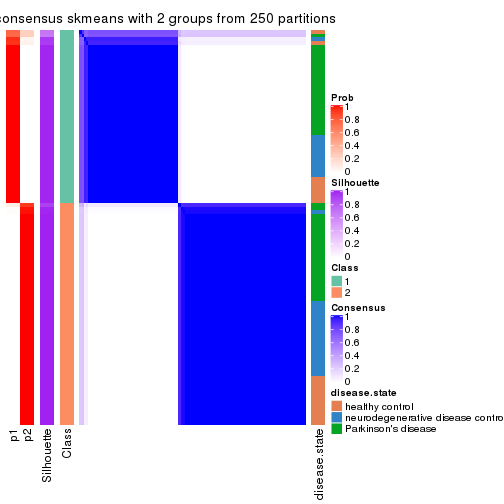
consensus_heatmap(res, k = 3)
consensus_heatmap(res, k = 4)
consensus_heatmap(res, k = 5)
consensus_heatmap(res, k = 6)
Heatmaps for the membership of samples in all partitions to see how consistent they are:
membership_heatmap(res, k = 2)
membership_heatmap(res, k = 3)
membership_heatmap(res, k = 4)
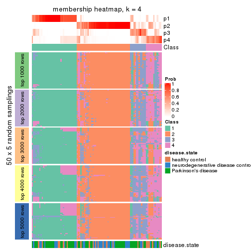
membership_heatmap(res, k = 5)
membership_heatmap(res, k = 6)

As soon as we have had the classes for columns, we can look for signatures which are significantly different between classes which can be candidate marks for certain classes. Following are the heatmaps for signatures.
Signature heatmaps where rows are scaled:
get_signatures(res, k = 2)
get_signatures(res, k = 3)
get_signatures(res, k = 4)
get_signatures(res, k = 5)
get_signatures(res, k = 6)
Signature heatmaps where rows are not scaled:
get_signatures(res, k = 2, scale_rows = FALSE)
get_signatures(res, k = 3, scale_rows = FALSE)
get_signatures(res, k = 4, scale_rows = FALSE)
get_signatures(res, k = 5, scale_rows = FALSE)
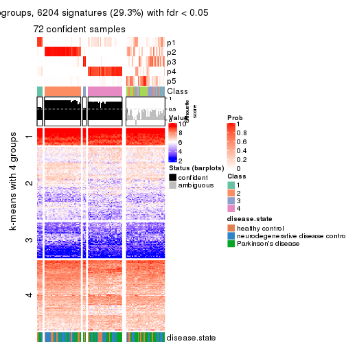
get_signatures(res, k = 6, scale_rows = FALSE)
Compare the overlap of signatures from different k:
compare_signatures(res)
get_signature() returns a data frame invisibly. TO get the list of signatures, the function
call should be assigned to a variable explicitly. In following code, if plot argument is set
to FALSE, no heatmap is plotted while only the differential analysis is performed.
# code only for demonstration
tb = get_signature(res, k = ..., plot = FALSE)
An example of the output of tb is:
#> which_row fdr mean_1 mean_2 scaled_mean_1 scaled_mean_2 km
#> 1 38 0.042760348 8.373488 9.131774 -0.5533452 0.5164555 1
#> 2 40 0.018707592 7.106213 8.469186 -0.6173731 0.5762149 1
#> 3 55 0.019134737 10.221463 11.207825 -0.6159697 0.5749050 1
#> 4 59 0.006059896 5.921854 7.869574 -0.6899429 0.6439467 1
#> 5 60 0.018055526 8.928898 10.211722 -0.6204761 0.5791110 1
#> 6 98 0.009384629 15.714769 14.887706 0.6635654 -0.6193277 2
...
The columns in tb are:
which_row: row indices corresponding to the input matrix.fdr: FDR for the differential test. mean_x: The mean value in group x.scaled_mean_x: The mean value in group x after rows are scaled.km: Row groups if k-means clustering is applied to rows.UMAP plot which shows how samples are separated.
dimension_reduction(res, k = 2, method = "UMAP")
dimension_reduction(res, k = 3, method = "UMAP")
dimension_reduction(res, k = 4, method = "UMAP")
dimension_reduction(res, k = 5, method = "UMAP")
dimension_reduction(res, k = 6, method = "UMAP")
Following heatmap shows how subgroups are split when increasing k:
collect_classes(res)
Test correlation between subgroups and known annotations. If the known annotation is numeric, one-way ANOVA test is applied, and if the known annotation is discrete, chi-squared contingency table test is applied.
test_to_known_factors(res)
#> n disease.state(p) k
#> ATC:skmeans 105 0.4501 2
#> ATC:skmeans 84 0.6014 3
#> ATC:skmeans 69 0.2569 4
#> ATC:skmeans 73 0.3823 5
#> ATC:skmeans 69 0.0791 6
If matrix rows can be associated to genes, consider to use functional_enrichment(res,
...) to perform function enrichment for the signature genes. See this vignette for more detailed explanations.
The object with results only for a single top-value method and a single partition method can be extracted as:
res = res_list["ATC", "pam"]
# you can also extract it by
# res = res_list["ATC:pam"]
A summary of res and all the functions that can be applied to it:
res
#> A 'ConsensusPartition' object with k = 2, 3, 4, 5, 6.
#> On a matrix with 21168 rows and 105 columns.
#> Top rows (1000, 2000, 3000, 4000, 5000) are extracted by 'ATC' method.
#> Subgroups are detected by 'pam' method.
#> Performed in total 1250 partitions by row resampling.
#> Best k for subgroups seems to be 3.
#>
#> Following methods can be applied to this 'ConsensusPartition' object:
#> [1] "cola_report" "collect_classes" "collect_plots"
#> [4] "collect_stats" "colnames" "compare_signatures"
#> [7] "consensus_heatmap" "dimension_reduction" "functional_enrichment"
#> [10] "get_anno_col" "get_anno" "get_classes"
#> [13] "get_consensus" "get_matrix" "get_membership"
#> [16] "get_param" "get_signatures" "get_stats"
#> [19] "is_best_k" "is_stable_k" "membership_heatmap"
#> [22] "ncol" "nrow" "plot_ecdf"
#> [25] "rownames" "select_partition_number" "show"
#> [28] "suggest_best_k" "test_to_known_factors"
collect_plots() function collects all the plots made from res for all k (number of partitions)
into one single page to provide an easy and fast comparison between different k.
collect_plots(res)
The plots are:
k and the heatmap of
predicted classes for each k.k.k.k.All the plots in panels can be made by individual functions and they are plotted later in this section.
select_partition_number() produces several plots showing different
statistics for choosing “optimized” k. There are following statistics:
k;k, the area increased is defined as \(A_k - A_{k-1}\).The detailed explanations of these statistics can be found in the cola vignette.
Generally speaking, lower PAC score, higher mean silhouette score or higher
concordance corresponds to better partition. Rand index and Jaccard index
measure how similar the current partition is compared to partition with k-1.
If they are too similar, we won't accept k is better than k-1.
select_partition_number(res)
The numeric values for all these statistics can be obtained by get_stats().
get_stats(res)
#> k 1-PAC mean_silhouette concordance area_increased Rand Jaccard
#> 2 2 0.529 0.803 0.897 0.4287 0.519 0.519
#> 3 3 0.757 0.902 0.902 0.3911 0.609 0.403
#> 4 4 0.621 0.766 0.884 0.1636 0.806 0.567
#> 5 5 0.703 0.681 0.843 0.0742 0.829 0.527
#> 6 6 0.714 0.415 0.739 0.0824 0.829 0.440
suggest_best_k() suggests the best \(k\) based on these statistics. The rules are as follows:
suggest_best_k(res)
#> [1] 3
Following shows the table of the partitions (You need to click the show/hide
code output link to see it). The membership matrix (columns with name p*)
is inferred by
clue::cl_consensus()
function with the SE method. Basically the value in the membership matrix
represents the probability to belong to a certain group. The finall class
label for an item is determined with the group with highest probability it
belongs to.
In get_classes() function, the entropy is calculated from the membership
matrix and the silhouette score is calculated from the consensus matrix.
cbind(get_classes(res, k = 2), get_membership(res, k = 2))
#> class entropy silhouette p1 p2
#> GSM153405 1 0.9686 0.592 0.604 0.396
#> GSM153406 2 0.0000 0.935 0.000 1.000
#> GSM153419 1 0.8813 0.691 0.700 0.300
#> GSM153423 2 0.0000 0.935 0.000 1.000
#> GSM153425 2 0.6148 0.779 0.152 0.848
#> GSM153427 2 0.2423 0.909 0.040 0.960
#> GSM153428 2 0.6048 0.785 0.148 0.852
#> GSM153429 2 0.0000 0.935 0.000 1.000
#> GSM153433 1 0.7139 0.747 0.804 0.196
#> GSM153444 2 0.0000 0.935 0.000 1.000
#> GSM153448 2 0.0376 0.933 0.004 0.996
#> GSM153451 2 0.0000 0.935 0.000 1.000
#> GSM153452 2 0.2423 0.909 0.040 0.960
#> GSM153477 2 0.0000 0.935 0.000 1.000
#> GSM153479 2 0.0000 0.935 0.000 1.000
#> GSM153484 2 0.0000 0.935 0.000 1.000
#> GSM153488 1 0.9635 0.605 0.612 0.388
#> GSM153496 1 0.8443 0.709 0.728 0.272
#> GSM153497 2 0.0000 0.935 0.000 1.000
#> GSM153500 1 0.3431 0.781 0.936 0.064
#> GSM153503 1 0.0000 0.773 1.000 0.000
#> GSM153508 2 0.5842 0.788 0.140 0.860
#> GSM153409 2 0.0000 0.935 0.000 1.000
#> GSM153426 2 0.0000 0.935 0.000 1.000
#> GSM153431 1 0.9661 0.599 0.608 0.392
#> GSM153438 2 0.0000 0.935 0.000 1.000
#> GSM153440 1 0.8909 0.685 0.692 0.308
#> GSM153447 1 0.0000 0.773 1.000 0.000
#> GSM153450 2 0.0000 0.935 0.000 1.000
#> GSM153456 2 0.0000 0.935 0.000 1.000
#> GSM153457 2 0.0000 0.935 0.000 1.000
#> GSM153458 2 0.0000 0.935 0.000 1.000
#> GSM153459 2 0.0000 0.935 0.000 1.000
#> GSM153460 2 0.0000 0.935 0.000 1.000
#> GSM153461 2 0.0000 0.935 0.000 1.000
#> GSM153463 1 0.0000 0.773 1.000 0.000
#> GSM153464 2 0.0000 0.935 0.000 1.000
#> GSM153466 2 0.7219 0.704 0.200 0.800
#> GSM153467 2 0.0000 0.935 0.000 1.000
#> GSM153468 2 0.2423 0.909 0.040 0.960
#> GSM153469 2 0.0000 0.935 0.000 1.000
#> GSM153470 2 0.0000 0.935 0.000 1.000
#> GSM153471 2 0.0000 0.935 0.000 1.000
#> GSM153472 1 0.8861 0.688 0.696 0.304
#> GSM153473 1 0.3431 0.781 0.936 0.064
#> GSM153474 1 0.3114 0.781 0.944 0.056
#> GSM153475 2 0.5737 0.793 0.136 0.864
#> GSM153476 1 0.9635 0.605 0.612 0.388
#> GSM153478 1 0.9635 0.605 0.612 0.388
#> GSM153480 2 0.0000 0.935 0.000 1.000
#> GSM153486 2 0.0000 0.935 0.000 1.000
#> GSM153487 2 0.9460 0.199 0.364 0.636
#> GSM153499 2 0.1633 0.921 0.024 0.976
#> GSM153504 1 0.2423 0.780 0.960 0.040
#> GSM153507 1 0.5178 0.771 0.884 0.116
#> GSM153404 2 0.5946 0.790 0.144 0.856
#> GSM153407 1 0.9635 0.605 0.612 0.388
#> GSM153408 1 0.9732 0.574 0.596 0.404
#> GSM153410 2 0.0000 0.935 0.000 1.000
#> GSM153411 1 0.0000 0.773 1.000 0.000
#> GSM153412 2 0.0000 0.935 0.000 1.000
#> GSM153413 1 0.9635 0.605 0.612 0.388
#> GSM153414 2 0.2423 0.909 0.040 0.960
#> GSM153415 2 0.6712 0.744 0.176 0.824
#> GSM153416 2 0.0000 0.935 0.000 1.000
#> GSM153417 1 0.0000 0.773 1.000 0.000
#> GSM153418 2 0.6247 0.774 0.156 0.844
#> GSM153420 1 0.0000 0.773 1.000 0.000
#> GSM153421 1 0.0000 0.773 1.000 0.000
#> GSM153422 1 0.0000 0.773 1.000 0.000
#> GSM153424 2 0.2778 0.903 0.048 0.952
#> GSM153430 1 0.9635 0.605 0.612 0.388
#> GSM153432 2 0.6712 0.729 0.176 0.824
#> GSM153434 1 0.9635 0.605 0.612 0.388
#> GSM153435 2 0.0000 0.935 0.000 1.000
#> GSM153436 1 0.9732 0.575 0.596 0.404
#> GSM153437 2 0.0000 0.935 0.000 1.000
#> GSM153439 2 0.0000 0.935 0.000 1.000
#> GSM153441 2 0.1184 0.925 0.016 0.984
#> GSM153442 2 0.3274 0.894 0.060 0.940
#> GSM153443 2 0.0000 0.935 0.000 1.000
#> GSM153445 2 0.0000 0.935 0.000 1.000
#> GSM153446 2 0.0000 0.935 0.000 1.000
#> GSM153449 1 0.9635 0.605 0.612 0.388
#> GSM153453 1 0.7219 0.746 0.800 0.200
#> GSM153454 1 0.0000 0.773 1.000 0.000
#> GSM153455 2 0.3274 0.886 0.060 0.940
#> GSM153462 2 0.0000 0.935 0.000 1.000
#> GSM153465 2 0.0000 0.935 0.000 1.000
#> GSM153481 2 0.0000 0.935 0.000 1.000
#> GSM153482 2 0.9580 0.200 0.380 0.620
#> GSM153483 2 0.0000 0.935 0.000 1.000
#> GSM153485 2 0.8081 0.603 0.248 0.752
#> GSM153489 1 0.9993 0.358 0.516 0.484
#> GSM153490 1 0.0000 0.773 1.000 0.000
#> GSM153491 1 0.9983 0.384 0.524 0.476
#> GSM153492 1 0.3431 0.781 0.936 0.064
#> GSM153493 1 0.1414 0.777 0.980 0.020
#> GSM153494 2 0.0938 0.928 0.012 0.988
#> GSM153495 1 0.0000 0.773 1.000 0.000
#> GSM153498 2 0.8608 0.522 0.284 0.716
#> GSM153501 1 0.0000 0.773 1.000 0.000
#> GSM153502 1 0.3431 0.781 0.936 0.064
#> GSM153505 1 0.0000 0.773 1.000 0.000
#> GSM153506 2 0.0000 0.935 0.000 1.000
cbind(get_classes(res, k = 3), get_membership(res, k = 3))
#> class entropy silhouette p1 p2 p3
#> GSM153405 3 0.3116 0.881 0.108 0.000 0.892
#> GSM153406 3 0.4002 0.798 0.000 0.160 0.840
#> GSM153419 3 0.4235 0.805 0.176 0.000 0.824
#> GSM153423 2 0.0000 0.994 0.000 1.000 0.000
#> GSM153425 3 0.0424 0.942 0.008 0.000 0.992
#> GSM153427 3 0.0000 0.942 0.000 0.000 1.000
#> GSM153428 3 0.0424 0.942 0.008 0.000 0.992
#> GSM153429 3 0.0000 0.942 0.000 0.000 1.000
#> GSM153433 1 0.6308 0.090 0.508 0.000 0.492
#> GSM153444 3 0.0000 0.942 0.000 0.000 1.000
#> GSM153448 3 0.0000 0.942 0.000 0.000 1.000
#> GSM153451 2 0.0000 0.994 0.000 1.000 0.000
#> GSM153452 3 0.0424 0.942 0.008 0.000 0.992
#> GSM153477 2 0.0592 0.983 0.000 0.988 0.012
#> GSM153479 3 0.0475 0.942 0.004 0.004 0.992
#> GSM153484 3 0.0237 0.941 0.000 0.004 0.996
#> GSM153488 3 0.2878 0.892 0.096 0.000 0.904
#> GSM153496 3 0.2796 0.885 0.092 0.000 0.908
#> GSM153497 2 0.0000 0.994 0.000 1.000 0.000
#> GSM153500 1 0.4504 0.794 0.804 0.000 0.196
#> GSM153503 1 0.0000 0.865 1.000 0.000 0.000
#> GSM153508 3 0.0424 0.941 0.000 0.008 0.992
#> GSM153409 2 0.0000 0.994 0.000 1.000 0.000
#> GSM153426 2 0.0000 0.994 0.000 1.000 0.000
#> GSM153431 3 0.3192 0.873 0.112 0.000 0.888
#> GSM153438 2 0.0000 0.994 0.000 1.000 0.000
#> GSM153440 3 0.3752 0.845 0.144 0.000 0.856
#> GSM153447 1 0.0000 0.865 1.000 0.000 0.000
#> GSM153450 3 0.0000 0.942 0.000 0.000 1.000
#> GSM153456 2 0.0000 0.994 0.000 1.000 0.000
#> GSM153457 2 0.0000 0.994 0.000 1.000 0.000
#> GSM153458 2 0.0000 0.994 0.000 1.000 0.000
#> GSM153459 2 0.0000 0.994 0.000 1.000 0.000
#> GSM153460 2 0.0000 0.994 0.000 1.000 0.000
#> GSM153461 3 0.2959 0.884 0.100 0.000 0.900
#> GSM153463 1 0.0000 0.865 1.000 0.000 0.000
#> GSM153464 2 0.0000 0.994 0.000 1.000 0.000
#> GSM153466 3 0.0000 0.942 0.000 0.000 1.000
#> GSM153467 2 0.1964 0.925 0.000 0.944 0.056
#> GSM153468 3 0.0424 0.942 0.008 0.000 0.992
#> GSM153469 3 0.2448 0.896 0.000 0.076 0.924
#> GSM153470 3 0.5560 0.598 0.000 0.300 0.700
#> GSM153471 2 0.0000 0.994 0.000 1.000 0.000
#> GSM153472 3 0.2448 0.907 0.076 0.000 0.924
#> GSM153473 1 0.4504 0.794 0.804 0.000 0.196
#> GSM153474 1 0.4346 0.805 0.816 0.000 0.184
#> GSM153475 3 0.0000 0.942 0.000 0.000 1.000
#> GSM153476 3 0.2878 0.891 0.096 0.000 0.904
#> GSM153478 3 0.3340 0.869 0.120 0.000 0.880
#> GSM153480 2 0.0000 0.994 0.000 1.000 0.000
#> GSM153486 3 0.3116 0.849 0.000 0.108 0.892
#> GSM153487 3 0.0000 0.942 0.000 0.000 1.000
#> GSM153499 3 0.0661 0.942 0.008 0.004 0.988
#> GSM153504 1 0.4121 0.816 0.832 0.000 0.168
#> GSM153507 1 0.6079 0.447 0.612 0.000 0.388
#> GSM153404 3 0.0424 0.942 0.008 0.000 0.992
#> GSM153407 3 0.3192 0.873 0.112 0.000 0.888
#> GSM153408 3 0.0424 0.942 0.008 0.000 0.992
#> GSM153410 3 0.3686 0.823 0.000 0.140 0.860
#> GSM153411 1 0.0000 0.865 1.000 0.000 0.000
#> GSM153412 3 0.0661 0.942 0.008 0.004 0.988
#> GSM153413 3 0.3340 0.869 0.120 0.000 0.880
#> GSM153414 3 0.0424 0.942 0.008 0.000 0.992
#> GSM153415 3 0.0661 0.942 0.008 0.004 0.988
#> GSM153416 2 0.1643 0.939 0.000 0.956 0.044
#> GSM153417 1 0.0000 0.865 1.000 0.000 0.000
#> GSM153418 3 0.0424 0.942 0.008 0.000 0.992
#> GSM153420 1 0.0000 0.865 1.000 0.000 0.000
#> GSM153421 1 0.0000 0.865 1.000 0.000 0.000
#> GSM153422 1 0.0000 0.865 1.000 0.000 0.000
#> GSM153424 3 0.0000 0.942 0.000 0.000 1.000
#> GSM153430 3 0.3340 0.869 0.120 0.000 0.880
#> GSM153432 3 0.0000 0.942 0.000 0.000 1.000
#> GSM153434 3 0.0424 0.942 0.008 0.000 0.992
#> GSM153435 2 0.0000 0.994 0.000 1.000 0.000
#> GSM153436 3 0.0424 0.941 0.008 0.000 0.992
#> GSM153437 2 0.0000 0.994 0.000 1.000 0.000
#> GSM153439 3 0.0000 0.942 0.000 0.000 1.000
#> GSM153441 3 0.0000 0.942 0.000 0.000 1.000
#> GSM153442 3 0.0000 0.942 0.000 0.000 1.000
#> GSM153443 2 0.0000 0.994 0.000 1.000 0.000
#> GSM153445 2 0.0000 0.994 0.000 1.000 0.000
#> GSM153446 2 0.0000 0.994 0.000 1.000 0.000
#> GSM153449 3 0.2066 0.914 0.060 0.000 0.940
#> GSM153453 3 0.5138 0.683 0.252 0.000 0.748
#> GSM153454 1 0.0000 0.865 1.000 0.000 0.000
#> GSM153455 3 0.0000 0.942 0.000 0.000 1.000
#> GSM153462 2 0.0000 0.994 0.000 1.000 0.000
#> GSM153465 3 0.2625 0.885 0.000 0.084 0.916
#> GSM153481 2 0.0000 0.994 0.000 1.000 0.000
#> GSM153482 3 0.0000 0.942 0.000 0.000 1.000
#> GSM153483 3 0.2356 0.896 0.000 0.072 0.928
#> GSM153485 3 0.0000 0.942 0.000 0.000 1.000
#> GSM153489 3 0.0000 0.942 0.000 0.000 1.000
#> GSM153490 1 0.0000 0.865 1.000 0.000 0.000
#> GSM153491 3 0.0424 0.942 0.008 0.000 0.992
#> GSM153492 1 0.4504 0.794 0.804 0.000 0.196
#> GSM153493 1 0.3551 0.830 0.868 0.000 0.132
#> GSM153494 3 0.0000 0.942 0.000 0.000 1.000
#> GSM153495 1 0.0000 0.865 1.000 0.000 0.000
#> GSM153498 3 0.0424 0.942 0.008 0.000 0.992
#> GSM153501 1 0.0237 0.865 0.996 0.000 0.004
#> GSM153502 1 0.4504 0.794 0.804 0.000 0.196
#> GSM153505 1 0.0000 0.865 1.000 0.000 0.000
#> GSM153506 2 0.0000 0.994 0.000 1.000 0.000
cbind(get_classes(res, k = 4), get_membership(res, k = 4))
#> class entropy silhouette p1 p2 p3 p4
#> GSM153405 3 0.4222 0.658 0.272 0.000 0.728 0.000
#> GSM153406 3 0.2281 0.773 0.000 0.096 0.904 0.000
#> GSM153419 1 0.2704 0.781 0.876 0.000 0.124 0.000
#> GSM153423 2 0.0592 0.960 0.000 0.984 0.016 0.000
#> GSM153425 3 0.4222 0.658 0.272 0.000 0.728 0.000
#> GSM153427 3 0.0000 0.821 0.000 0.000 1.000 0.000
#> GSM153428 3 0.4222 0.658 0.272 0.000 0.728 0.000
#> GSM153429 3 0.0000 0.821 0.000 0.000 1.000 0.000
#> GSM153433 1 0.2589 0.782 0.884 0.000 0.116 0.000
#> GSM153444 3 0.0000 0.821 0.000 0.000 1.000 0.000
#> GSM153448 3 0.0000 0.821 0.000 0.000 1.000 0.000
#> GSM153451 2 0.0000 0.974 0.000 1.000 0.000 0.000
#> GSM153452 3 0.4222 0.658 0.272 0.000 0.728 0.000
#> GSM153477 2 0.3942 0.653 0.000 0.764 0.236 0.000
#> GSM153479 3 0.4105 0.747 0.156 0.032 0.812 0.000
#> GSM153484 3 0.0469 0.818 0.000 0.012 0.988 0.000
#> GSM153488 1 0.3688 0.737 0.792 0.000 0.208 0.000
#> GSM153496 1 0.2589 0.782 0.884 0.000 0.116 0.000
#> GSM153497 2 0.0000 0.974 0.000 1.000 0.000 0.000
#> GSM153500 1 0.0000 0.743 1.000 0.000 0.000 0.000
#> GSM153503 1 0.3907 0.507 0.768 0.000 0.000 0.232
#> GSM153508 3 0.6963 -0.205 0.424 0.112 0.464 0.000
#> GSM153409 2 0.0000 0.974 0.000 1.000 0.000 0.000
#> GSM153426 2 0.0000 0.974 0.000 1.000 0.000 0.000
#> GSM153431 3 0.0336 0.820 0.008 0.000 0.992 0.000
#> GSM153438 2 0.0000 0.974 0.000 1.000 0.000 0.000
#> GSM153440 1 0.2921 0.778 0.860 0.000 0.140 0.000
#> GSM153447 1 0.0000 0.743 1.000 0.000 0.000 0.000
#> GSM153450 3 0.0000 0.821 0.000 0.000 1.000 0.000
#> GSM153456 2 0.0000 0.974 0.000 1.000 0.000 0.000
#> GSM153457 2 0.0000 0.974 0.000 1.000 0.000 0.000
#> GSM153458 2 0.0000 0.974 0.000 1.000 0.000 0.000
#> GSM153459 2 0.0000 0.974 0.000 1.000 0.000 0.000
#> GSM153460 2 0.0000 0.974 0.000 1.000 0.000 0.000
#> GSM153461 3 0.0000 0.821 0.000 0.000 1.000 0.000
#> GSM153463 4 0.2530 0.875 0.112 0.000 0.000 0.888
#> GSM153464 2 0.0000 0.974 0.000 1.000 0.000 0.000
#> GSM153466 3 0.0000 0.821 0.000 0.000 1.000 0.000
#> GSM153467 2 0.2647 0.821 0.000 0.880 0.120 0.000
#> GSM153468 3 0.3486 0.735 0.188 0.000 0.812 0.000
#> GSM153469 3 0.3873 0.683 0.000 0.228 0.772 0.000
#> GSM153470 3 0.4981 0.250 0.000 0.464 0.536 0.000
#> GSM153471 2 0.0000 0.974 0.000 1.000 0.000 0.000
#> GSM153472 1 0.4103 0.689 0.744 0.000 0.256 0.000
#> GSM153473 1 0.0000 0.743 1.000 0.000 0.000 0.000
#> GSM153474 1 0.0000 0.743 1.000 0.000 0.000 0.000
#> GSM153475 3 0.0000 0.821 0.000 0.000 1.000 0.000
#> GSM153476 1 0.4164 0.678 0.736 0.000 0.264 0.000
#> GSM153478 1 0.3123 0.770 0.844 0.000 0.156 0.000
#> GSM153480 2 0.0000 0.974 0.000 1.000 0.000 0.000
#> GSM153486 3 0.1557 0.802 0.000 0.056 0.944 0.000
#> GSM153487 1 0.4907 0.497 0.580 0.000 0.420 0.000
#> GSM153499 3 0.4134 0.669 0.260 0.000 0.740 0.000
#> GSM153504 1 0.0000 0.743 1.000 0.000 0.000 0.000
#> GSM153507 1 0.4804 0.546 0.616 0.000 0.384 0.000
#> GSM153404 3 0.4222 0.658 0.272 0.000 0.728 0.000
#> GSM153407 1 0.4992 0.392 0.524 0.000 0.476 0.000
#> GSM153408 3 0.4543 0.586 0.324 0.000 0.676 0.000
#> GSM153410 3 0.3123 0.719 0.000 0.156 0.844 0.000
#> GSM153411 4 0.0000 0.937 0.000 0.000 0.000 1.000
#> GSM153412 3 0.3810 0.735 0.188 0.008 0.804 0.000
#> GSM153413 1 0.2704 0.781 0.876 0.000 0.124 0.000
#> GSM153414 3 0.4193 0.663 0.268 0.000 0.732 0.000
#> GSM153415 3 0.4500 0.599 0.316 0.000 0.684 0.000
#> GSM153416 2 0.1716 0.902 0.000 0.936 0.064 0.000
#> GSM153417 4 0.0000 0.937 0.000 0.000 0.000 1.000
#> GSM153418 3 0.3486 0.735 0.188 0.000 0.812 0.000
#> GSM153420 4 0.0000 0.937 0.000 0.000 0.000 1.000
#> GSM153421 4 0.0000 0.937 0.000 0.000 0.000 1.000
#> GSM153422 4 0.0000 0.937 0.000 0.000 0.000 1.000
#> GSM153424 3 0.0592 0.819 0.016 0.000 0.984 0.000
#> GSM153430 1 0.2921 0.777 0.860 0.000 0.140 0.000
#> GSM153432 3 0.0000 0.821 0.000 0.000 1.000 0.000
#> GSM153434 3 0.3486 0.735 0.188 0.000 0.812 0.000
#> GSM153435 2 0.0000 0.974 0.000 1.000 0.000 0.000
#> GSM153436 3 0.1557 0.790 0.056 0.000 0.944 0.000
#> GSM153437 2 0.0000 0.974 0.000 1.000 0.000 0.000
#> GSM153439 3 0.0000 0.821 0.000 0.000 1.000 0.000
#> GSM153441 3 0.0000 0.821 0.000 0.000 1.000 0.000
#> GSM153442 3 0.0000 0.821 0.000 0.000 1.000 0.000
#> GSM153443 2 0.0000 0.974 0.000 1.000 0.000 0.000
#> GSM153445 2 0.0000 0.974 0.000 1.000 0.000 0.000
#> GSM153446 2 0.0000 0.974 0.000 1.000 0.000 0.000
#> GSM153449 1 0.4941 0.469 0.564 0.000 0.436 0.000
#> GSM153453 1 0.2647 0.782 0.880 0.000 0.120 0.000
#> GSM153454 1 0.4008 0.489 0.756 0.000 0.000 0.244
#> GSM153455 3 0.0000 0.821 0.000 0.000 1.000 0.000
#> GSM153462 2 0.0000 0.974 0.000 1.000 0.000 0.000
#> GSM153465 3 0.2921 0.735 0.000 0.140 0.860 0.000
#> GSM153481 2 0.0817 0.949 0.000 0.976 0.024 0.000
#> GSM153482 1 0.5000 0.330 0.504 0.000 0.496 0.000
#> GSM153483 3 0.2814 0.742 0.000 0.132 0.868 0.000
#> GSM153485 3 0.2647 0.737 0.120 0.000 0.880 0.000
#> GSM153489 1 0.4907 0.497 0.580 0.000 0.420 0.000
#> GSM153490 4 0.4382 0.646 0.296 0.000 0.000 0.704
#> GSM153491 1 0.2647 0.782 0.880 0.000 0.120 0.000
#> GSM153492 1 0.0000 0.743 1.000 0.000 0.000 0.000
#> GSM153493 1 0.0000 0.743 1.000 0.000 0.000 0.000
#> GSM153494 3 0.0000 0.821 0.000 0.000 1.000 0.000
#> GSM153495 1 0.3219 0.600 0.836 0.000 0.000 0.164
#> GSM153498 1 0.3688 0.735 0.792 0.000 0.208 0.000
#> GSM153501 1 0.0000 0.743 1.000 0.000 0.000 0.000
#> GSM153502 1 0.0000 0.743 1.000 0.000 0.000 0.000
#> GSM153505 1 0.4855 0.123 0.600 0.000 0.000 0.400
#> GSM153506 2 0.0000 0.974 0.000 1.000 0.000 0.000
cbind(get_classes(res, k = 5), get_membership(res, k = 5))
#> class entropy silhouette p1 p2 p3 p4 p5
#> GSM153405 3 0.3983 0.52187 0.340 0.000 0.660 0.000 0.000
#> GSM153406 1 0.2962 0.71897 0.872 0.096 0.016 0.016 0.000
#> GSM153419 3 0.0000 0.58669 0.000 0.000 1.000 0.000 0.000
#> GSM153423 2 0.0794 0.94710 0.028 0.972 0.000 0.000 0.000
#> GSM153425 3 0.4030 0.51752 0.352 0.000 0.648 0.000 0.000
#> GSM153427 1 0.0324 0.76542 0.992 0.000 0.004 0.004 0.000
#> GSM153428 3 0.4030 0.51752 0.352 0.000 0.648 0.000 0.000
#> GSM153429 1 0.1018 0.75878 0.968 0.000 0.016 0.016 0.000
#> GSM153433 3 0.0510 0.58253 0.000 0.000 0.984 0.016 0.000
#> GSM153444 1 0.0794 0.76947 0.972 0.000 0.028 0.000 0.000
#> GSM153448 1 0.1197 0.76761 0.952 0.000 0.048 0.000 0.000
#> GSM153451 2 0.0000 0.97106 0.000 1.000 0.000 0.000 0.000
#> GSM153452 3 0.4045 0.51363 0.356 0.000 0.644 0.000 0.000
#> GSM153477 2 0.3968 0.58500 0.276 0.716 0.004 0.004 0.000
#> GSM153479 1 0.4021 0.61352 0.764 0.036 0.200 0.000 0.000
#> GSM153484 1 0.0324 0.76589 0.992 0.004 0.004 0.000 0.000
#> GSM153488 3 0.4674 0.00871 0.416 0.000 0.568 0.016 0.000
#> GSM153496 3 0.0798 0.58421 0.008 0.000 0.976 0.016 0.000
#> GSM153497 2 0.0000 0.97106 0.000 1.000 0.000 0.000 0.000
#> GSM153500 4 0.0609 0.75112 0.000 0.000 0.020 0.980 0.000
#> GSM153503 4 0.0566 0.74978 0.000 0.000 0.012 0.984 0.004
#> GSM153508 1 0.5917 0.44988 0.592 0.088 0.304 0.016 0.000
#> GSM153409 2 0.0000 0.97106 0.000 1.000 0.000 0.000 0.000
#> GSM153426 2 0.0000 0.97106 0.000 1.000 0.000 0.000 0.000
#> GSM153431 1 0.0290 0.76604 0.992 0.000 0.008 0.000 0.000
#> GSM153438 2 0.0000 0.97106 0.000 1.000 0.000 0.000 0.000
#> GSM153440 3 0.0579 0.58744 0.008 0.000 0.984 0.008 0.000
#> GSM153447 3 0.3966 0.23962 0.000 0.000 0.664 0.336 0.000
#> GSM153450 1 0.1197 0.76761 0.952 0.000 0.048 0.000 0.000
#> GSM153456 2 0.0000 0.97106 0.000 1.000 0.000 0.000 0.000
#> GSM153457 2 0.0000 0.97106 0.000 1.000 0.000 0.000 0.000
#> GSM153458 2 0.0000 0.97106 0.000 1.000 0.000 0.000 0.000
#> GSM153459 2 0.0162 0.96745 0.004 0.996 0.000 0.000 0.000
#> GSM153460 2 0.0000 0.97106 0.000 1.000 0.000 0.000 0.000
#> GSM153461 1 0.0000 0.76651 1.000 0.000 0.000 0.000 0.000
#> GSM153463 4 0.4283 0.11369 0.000 0.000 0.000 0.544 0.456
#> GSM153464 2 0.0000 0.97106 0.000 1.000 0.000 0.000 0.000
#> GSM153466 1 0.1197 0.76761 0.952 0.000 0.048 0.000 0.000
#> GSM153467 2 0.2280 0.81484 0.120 0.880 0.000 0.000 0.000
#> GSM153468 1 0.3635 0.56804 0.748 0.000 0.248 0.004 0.000
#> GSM153469 1 0.4043 0.58454 0.756 0.220 0.012 0.012 0.000
#> GSM153470 1 0.4798 0.36573 0.576 0.404 0.004 0.016 0.000
#> GSM153471 2 0.0000 0.97106 0.000 1.000 0.000 0.000 0.000
#> GSM153472 3 0.4658 0.03104 0.408 0.000 0.576 0.016 0.000
#> GSM153473 4 0.4268 0.29146 0.000 0.000 0.444 0.556 0.000
#> GSM153474 4 0.4126 0.52711 0.000 0.000 0.380 0.620 0.000
#> GSM153475 1 0.0000 0.76651 1.000 0.000 0.000 0.000 0.000
#> GSM153476 3 0.4655 -0.06206 0.476 0.000 0.512 0.012 0.000
#> GSM153478 3 0.0566 0.58540 0.004 0.000 0.984 0.012 0.000
#> GSM153480 2 0.0000 0.97106 0.000 1.000 0.000 0.000 0.000
#> GSM153486 1 0.2376 0.75889 0.904 0.044 0.052 0.000 0.000
#> GSM153487 1 0.4505 0.39811 0.604 0.000 0.384 0.012 0.000
#> GSM153499 1 0.4014 0.55088 0.728 0.000 0.256 0.016 0.000
#> GSM153504 4 0.2020 0.72288 0.000 0.000 0.100 0.900 0.000
#> GSM153507 1 0.6681 0.11332 0.448 0.000 0.340 0.208 0.004
#> GSM153404 3 0.4551 0.50610 0.368 0.000 0.616 0.016 0.000
#> GSM153407 1 0.4210 0.36906 0.588 0.000 0.412 0.000 0.000
#> GSM153408 3 0.4538 0.51026 0.364 0.000 0.620 0.016 0.000
#> GSM153410 1 0.3674 0.66503 0.812 0.156 0.016 0.016 0.000
#> GSM153411 5 0.0000 1.00000 0.000 0.000 0.000 0.000 1.000
#> GSM153412 1 0.3843 0.59385 0.788 0.012 0.184 0.016 0.000
#> GSM153413 3 0.1597 0.55576 0.048 0.000 0.940 0.012 0.000
#> GSM153414 3 0.4249 0.38136 0.432 0.000 0.568 0.000 0.000
#> GSM153415 3 0.4551 0.50610 0.368 0.000 0.616 0.016 0.000
#> GSM153416 2 0.1341 0.91371 0.056 0.944 0.000 0.000 0.000
#> GSM153417 5 0.0000 1.00000 0.000 0.000 0.000 0.000 1.000
#> GSM153418 1 0.3527 0.58937 0.792 0.000 0.192 0.016 0.000
#> GSM153420 5 0.0000 1.00000 0.000 0.000 0.000 0.000 1.000
#> GSM153421 5 0.0000 1.00000 0.000 0.000 0.000 0.000 1.000
#> GSM153422 5 0.0000 1.00000 0.000 0.000 0.000 0.000 1.000
#> GSM153424 1 0.2377 0.71576 0.872 0.000 0.128 0.000 0.000
#> GSM153430 3 0.0566 0.58567 0.004 0.000 0.984 0.012 0.000
#> GSM153432 1 0.0000 0.76651 1.000 0.000 0.000 0.000 0.000
#> GSM153434 1 0.3242 0.60727 0.784 0.000 0.216 0.000 0.000
#> GSM153435 2 0.0000 0.97106 0.000 1.000 0.000 0.000 0.000
#> GSM153436 1 0.2516 0.73547 0.860 0.000 0.140 0.000 0.000
#> GSM153437 2 0.0000 0.97106 0.000 1.000 0.000 0.000 0.000
#> GSM153439 1 0.0162 0.76638 0.996 0.000 0.004 0.000 0.000
#> GSM153441 1 0.1197 0.76761 0.952 0.000 0.048 0.000 0.000
#> GSM153442 1 0.1197 0.76761 0.952 0.000 0.048 0.000 0.000
#> GSM153443 2 0.0000 0.97106 0.000 1.000 0.000 0.000 0.000
#> GSM153445 2 0.0000 0.97106 0.000 1.000 0.000 0.000 0.000
#> GSM153446 2 0.0000 0.97106 0.000 1.000 0.000 0.000 0.000
#> GSM153449 1 0.4114 0.42897 0.624 0.000 0.376 0.000 0.000
#> GSM153453 3 0.0609 0.58041 0.000 0.000 0.980 0.020 0.000
#> GSM153454 4 0.0566 0.74978 0.000 0.000 0.012 0.984 0.004
#> GSM153455 1 0.1197 0.76761 0.952 0.000 0.048 0.000 0.000
#> GSM153462 2 0.0000 0.97106 0.000 1.000 0.000 0.000 0.000
#> GSM153465 1 0.3078 0.69166 0.848 0.132 0.004 0.016 0.000
#> GSM153481 2 0.1195 0.93516 0.028 0.960 0.000 0.012 0.000
#> GSM153482 1 0.4211 0.44703 0.636 0.000 0.360 0.004 0.000
#> GSM153483 1 0.2818 0.69675 0.856 0.132 0.000 0.012 0.000
#> GSM153485 1 0.2864 0.72436 0.852 0.000 0.136 0.012 0.000
#> GSM153489 1 0.4288 0.40953 0.612 0.000 0.384 0.004 0.000
#> GSM153490 4 0.3999 0.39441 0.000 0.000 0.000 0.656 0.344
#> GSM153491 3 0.0912 0.58350 0.012 0.000 0.972 0.016 0.000
#> GSM153492 4 0.4278 0.42911 0.000 0.000 0.452 0.548 0.000
#> GSM153493 4 0.0510 0.75162 0.000 0.000 0.016 0.984 0.000
#> GSM153494 1 0.1197 0.76761 0.952 0.000 0.048 0.000 0.000
#> GSM153495 4 0.0510 0.75162 0.000 0.000 0.016 0.984 0.000
#> GSM153498 3 0.4482 0.12966 0.376 0.000 0.612 0.012 0.000
#> GSM153501 4 0.0510 0.75162 0.000 0.000 0.016 0.984 0.000
#> GSM153502 4 0.4150 0.51880 0.000 0.000 0.388 0.612 0.000
#> GSM153505 4 0.1270 0.72303 0.000 0.000 0.000 0.948 0.052
#> GSM153506 2 0.0000 0.97106 0.000 1.000 0.000 0.000 0.000
cbind(get_classes(res, k = 6), get_membership(res, k = 6))
#> class entropy silhouette p1 p2 p3 p4 p5 p6
#> GSM153405 2 0.1267 0.51817 0.000 0.940 0.060 0.000 0.000 0.000
#> GSM153406 3 0.3172 0.34543 0.128 0.000 0.824 0.000 0.000 0.048
#> GSM153419 2 0.4680 0.39499 0.000 0.684 0.184 0.000 0.000 0.132
#> GSM153423 1 0.3417 0.76017 0.828 0.108 0.044 0.000 0.000 0.020
#> GSM153425 2 0.0146 0.52255 0.000 0.996 0.004 0.000 0.000 0.000
#> GSM153427 3 0.5649 0.19388 0.000 0.152 0.452 0.000 0.000 0.396
#> GSM153428 2 0.0363 0.52285 0.000 0.988 0.012 0.000 0.000 0.000
#> GSM153429 3 0.1225 0.41734 0.000 0.012 0.952 0.000 0.000 0.036
#> GSM153433 2 0.3707 0.33294 0.000 0.680 0.000 0.008 0.000 0.312
#> GSM153444 3 0.5743 0.19305 0.000 0.168 0.428 0.000 0.000 0.404
#> GSM153448 2 0.5216 -0.06141 0.000 0.484 0.424 0.000 0.000 0.092
#> GSM153451 1 0.0000 0.92603 1.000 0.000 0.000 0.000 0.000 0.000
#> GSM153452 2 0.1075 0.51385 0.000 0.952 0.048 0.000 0.000 0.000
#> GSM153477 1 0.4801 0.10665 0.484 0.024 0.016 0.000 0.000 0.476
#> GSM153479 3 0.4262 -0.06156 0.000 0.476 0.508 0.000 0.000 0.016
#> GSM153484 6 0.5597 -0.17129 0.000 0.148 0.372 0.000 0.000 0.480
#> GSM153488 6 0.4252 0.02533 0.000 0.372 0.024 0.000 0.000 0.604
#> GSM153496 6 0.3828 -0.04524 0.000 0.440 0.000 0.000 0.000 0.560
#> GSM153497 1 0.0000 0.92603 1.000 0.000 0.000 0.000 0.000 0.000
#> GSM153500 4 0.0146 0.82919 0.000 0.004 0.000 0.996 0.000 0.000
#> GSM153503 4 0.0000 0.83070 0.000 0.000 0.000 1.000 0.000 0.000
#> GSM153508 6 0.4904 0.05459 0.000 0.316 0.084 0.000 0.000 0.600
#> GSM153409 1 0.0000 0.92603 1.000 0.000 0.000 0.000 0.000 0.000
#> GSM153426 1 0.0000 0.92603 1.000 0.000 0.000 0.000 0.000 0.000
#> GSM153431 6 0.5725 -0.24204 0.000 0.164 0.416 0.000 0.000 0.420
#> GSM153438 1 0.0000 0.92603 1.000 0.000 0.000 0.000 0.000 0.000
#> GSM153440 2 0.3563 0.30724 0.000 0.664 0.000 0.000 0.000 0.336
#> GSM153447 2 0.3351 0.32324 0.000 0.712 0.000 0.288 0.000 0.000
#> GSM153450 3 0.5781 0.19401 0.000 0.176 0.428 0.000 0.000 0.396
#> GSM153456 1 0.0000 0.92603 1.000 0.000 0.000 0.000 0.000 0.000
#> GSM153457 1 0.0000 0.92603 1.000 0.000 0.000 0.000 0.000 0.000
#> GSM153458 1 0.0000 0.92603 1.000 0.000 0.000 0.000 0.000 0.000
#> GSM153459 1 0.0146 0.92321 0.996 0.004 0.000 0.000 0.000 0.000
#> GSM153460 1 0.0000 0.92603 1.000 0.000 0.000 0.000 0.000 0.000
#> GSM153461 3 0.5743 0.19305 0.000 0.168 0.428 0.000 0.000 0.404
#> GSM153463 4 0.3747 0.36916 0.000 0.000 0.000 0.604 0.396 0.000
#> GSM153464 1 0.0000 0.92603 1.000 0.000 0.000 0.000 0.000 0.000
#> GSM153466 6 0.5725 -0.24346 0.000 0.164 0.416 0.000 0.000 0.420
#> GSM153467 1 0.1524 0.86308 0.932 0.008 0.060 0.000 0.000 0.000
#> GSM153468 3 0.3830 0.01577 0.000 0.376 0.620 0.000 0.000 0.004
#> GSM153469 3 0.2419 0.39920 0.060 0.016 0.896 0.000 0.000 0.028
#> GSM153470 1 0.5542 0.23661 0.528 0.008 0.348 0.000 0.000 0.116
#> GSM153471 1 0.0000 0.92603 1.000 0.000 0.000 0.000 0.000 0.000
#> GSM153472 6 0.4899 -0.09729 0.000 0.452 0.060 0.000 0.000 0.488
#> GSM153473 4 0.3066 0.72873 0.000 0.124 0.000 0.832 0.000 0.044
#> GSM153474 4 0.4319 0.42755 0.000 0.024 0.000 0.576 0.000 0.400
#> GSM153475 6 0.5618 -0.17480 0.000 0.152 0.368 0.000 0.000 0.480
#> GSM153476 6 0.4855 0.07513 0.000 0.056 0.460 0.000 0.000 0.484
#> GSM153478 2 0.3101 0.40815 0.000 0.756 0.000 0.000 0.000 0.244
#> GSM153480 1 0.0000 0.92603 1.000 0.000 0.000 0.000 0.000 0.000
#> GSM153486 6 0.5786 -0.16669 0.008 0.144 0.364 0.000 0.000 0.484
#> GSM153487 6 0.0260 0.36215 0.000 0.000 0.008 0.000 0.000 0.992
#> GSM153499 3 0.2218 0.38913 0.000 0.012 0.884 0.000 0.000 0.104
#> GSM153504 4 0.2762 0.69816 0.000 0.000 0.000 0.804 0.000 0.196
#> GSM153507 6 0.2121 0.33394 0.000 0.000 0.012 0.096 0.000 0.892
#> GSM153404 2 0.3996 0.06417 0.000 0.512 0.484 0.000 0.000 0.004
#> GSM153407 6 0.3650 0.27390 0.000 0.116 0.092 0.000 0.000 0.792
#> GSM153408 3 0.3756 -0.02085 0.000 0.400 0.600 0.000 0.000 0.000
#> GSM153410 3 0.2706 0.35487 0.124 0.000 0.852 0.000 0.000 0.024
#> GSM153411 5 0.0000 1.00000 0.000 0.000 0.000 0.000 1.000 0.000
#> GSM153412 3 0.0000 0.40986 0.000 0.000 1.000 0.000 0.000 0.000
#> GSM153413 3 0.4314 -0.08829 0.000 0.444 0.536 0.000 0.000 0.020
#> GSM153414 2 0.3390 0.31098 0.000 0.704 0.296 0.000 0.000 0.000
#> GSM153415 3 0.3817 -0.05687 0.000 0.432 0.568 0.000 0.000 0.000
#> GSM153416 1 0.3426 0.73743 0.808 0.124 0.068 0.000 0.000 0.000
#> GSM153417 5 0.0000 1.00000 0.000 0.000 0.000 0.000 1.000 0.000
#> GSM153418 3 0.1007 0.41373 0.000 0.000 0.956 0.000 0.000 0.044
#> GSM153420 5 0.0000 1.00000 0.000 0.000 0.000 0.000 1.000 0.000
#> GSM153421 5 0.0000 1.00000 0.000 0.000 0.000 0.000 1.000 0.000
#> GSM153422 5 0.0000 1.00000 0.000 0.000 0.000 0.000 1.000 0.000
#> GSM153424 2 0.5917 -0.24060 0.000 0.396 0.208 0.000 0.000 0.396
#> GSM153430 2 0.2454 0.45497 0.000 0.840 0.000 0.000 0.000 0.160
#> GSM153432 3 0.5718 0.19738 0.000 0.164 0.440 0.000 0.000 0.396
#> GSM153434 2 0.4632 -0.00185 0.000 0.520 0.440 0.000 0.000 0.040
#> GSM153435 1 0.0000 0.92603 1.000 0.000 0.000 0.000 0.000 0.000
#> GSM153436 2 0.4813 0.13099 0.000 0.608 0.316 0.000 0.000 0.076
#> GSM153437 1 0.0000 0.92603 1.000 0.000 0.000 0.000 0.000 0.000
#> GSM153439 3 0.5569 0.24175 0.000 0.160 0.520 0.000 0.000 0.320
#> GSM153441 3 0.5634 0.07932 0.000 0.416 0.436 0.000 0.000 0.148
#> GSM153442 3 0.5784 0.18474 0.000 0.176 0.420 0.000 0.000 0.404
#> GSM153443 1 0.0000 0.92603 1.000 0.000 0.000 0.000 0.000 0.000
#> GSM153445 1 0.0000 0.92603 1.000 0.000 0.000 0.000 0.000 0.000
#> GSM153446 1 0.0000 0.92603 1.000 0.000 0.000 0.000 0.000 0.000
#> GSM153449 6 0.1418 0.35465 0.000 0.032 0.024 0.000 0.000 0.944
#> GSM153453 6 0.4181 -0.10096 0.000 0.476 0.000 0.012 0.000 0.512
#> GSM153454 4 0.0000 0.83070 0.000 0.000 0.000 1.000 0.000 0.000
#> GSM153455 6 0.5623 -0.17609 0.000 0.152 0.372 0.000 0.000 0.476
#> GSM153462 1 0.0000 0.92603 1.000 0.000 0.000 0.000 0.000 0.000
#> GSM153465 6 0.5837 -0.14525 0.084 0.036 0.396 0.000 0.000 0.484
#> GSM153481 1 0.2956 0.79525 0.848 0.000 0.064 0.000 0.000 0.088
#> GSM153482 6 0.1950 0.33959 0.000 0.024 0.064 0.000 0.000 0.912
#> GSM153483 6 0.5740 -0.15130 0.068 0.040 0.408 0.000 0.000 0.484
#> GSM153485 6 0.5855 -0.06817 0.000 0.200 0.352 0.000 0.000 0.448
#> GSM153489 6 0.0260 0.36119 0.000 0.008 0.000 0.000 0.000 0.992
#> GSM153490 4 0.3756 0.36540 0.000 0.000 0.000 0.600 0.400 0.000
#> GSM153491 6 0.3756 0.00560 0.000 0.400 0.000 0.000 0.000 0.600
#> GSM153492 6 0.4335 -0.31171 0.000 0.020 0.000 0.472 0.000 0.508
#> GSM153493 4 0.0000 0.83070 0.000 0.000 0.000 1.000 0.000 0.000
#> GSM153494 2 0.6074 -0.22223 0.000 0.376 0.356 0.000 0.000 0.268
#> GSM153495 4 0.0000 0.83070 0.000 0.000 0.000 1.000 0.000 0.000
#> GSM153498 6 0.4672 0.13266 0.000 0.056 0.348 0.000 0.000 0.596
#> GSM153501 4 0.0000 0.83070 0.000 0.000 0.000 1.000 0.000 0.000
#> GSM153502 6 0.4644 -0.28396 0.000 0.040 0.000 0.456 0.000 0.504
#> GSM153505 4 0.0790 0.81592 0.000 0.000 0.000 0.968 0.032 0.000
#> GSM153506 1 0.0000 0.92603 1.000 0.000 0.000 0.000 0.000 0.000
Heatmaps for the consensus matrix. It visualizes the probability of two samples to be in a same group.
consensus_heatmap(res, k = 2)
consensus_heatmap(res, k = 3)
consensus_heatmap(res, k = 4)
consensus_heatmap(res, k = 5)
consensus_heatmap(res, k = 6)
Heatmaps for the membership of samples in all partitions to see how consistent they are:
membership_heatmap(res, k = 2)
membership_heatmap(res, k = 3)
membership_heatmap(res, k = 4)
membership_heatmap(res, k = 5)
membership_heatmap(res, k = 6)
As soon as we have had the classes for columns, we can look for signatures which are significantly different between classes which can be candidate marks for certain classes. Following are the heatmaps for signatures.
Signature heatmaps where rows are scaled:
get_signatures(res, k = 2)
get_signatures(res, k = 3)
get_signatures(res, k = 4)
get_signatures(res, k = 5)
get_signatures(res, k = 6)
Signature heatmaps where rows are not scaled:
get_signatures(res, k = 2, scale_rows = FALSE)
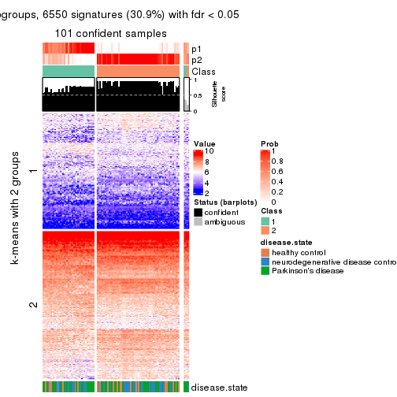
get_signatures(res, k = 3, scale_rows = FALSE)
get_signatures(res, k = 4, scale_rows = FALSE)
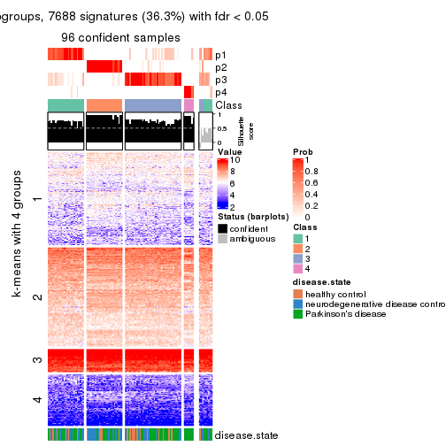
get_signatures(res, k = 5, scale_rows = FALSE)
get_signatures(res, k = 6, scale_rows = FALSE)
Compare the overlap of signatures from different k:
compare_signatures(res)
get_signature() returns a data frame invisibly. TO get the list of signatures, the function
call should be assigned to a variable explicitly. In following code, if plot argument is set
to FALSE, no heatmap is plotted while only the differential analysis is performed.
# code only for demonstration
tb = get_signature(res, k = ..., plot = FALSE)
An example of the output of tb is:
#> which_row fdr mean_1 mean_2 scaled_mean_1 scaled_mean_2 km
#> 1 38 0.042760348 8.373488 9.131774 -0.5533452 0.5164555 1
#> 2 40 0.018707592 7.106213 8.469186 -0.6173731 0.5762149 1
#> 3 55 0.019134737 10.221463 11.207825 -0.6159697 0.5749050 1
#> 4 59 0.006059896 5.921854 7.869574 -0.6899429 0.6439467 1
#> 5 60 0.018055526 8.928898 10.211722 -0.6204761 0.5791110 1
#> 6 98 0.009384629 15.714769 14.887706 0.6635654 -0.6193277 2
...
The columns in tb are:
which_row: row indices corresponding to the input matrix.fdr: FDR for the differential test. mean_x: The mean value in group x.scaled_mean_x: The mean value in group x after rows are scaled.km: Row groups if k-means clustering is applied to rows.UMAP plot which shows how samples are separated.
dimension_reduction(res, k = 2, method = "UMAP")
dimension_reduction(res, k = 3, method = "UMAP")
dimension_reduction(res, k = 4, method = "UMAP")
dimension_reduction(res, k = 5, method = "UMAP")
dimension_reduction(res, k = 6, method = "UMAP")
Following heatmap shows how subgroups are split when increasing k:
collect_classes(res)
Test correlation between subgroups and known annotations. If the known annotation is numeric, one-way ANOVA test is applied, and if the known annotation is discrete, chi-squared contingency table test is applied.
test_to_known_factors(res)
#> n disease.state(p) k
#> ATC:pam 101 0.496328 2
#> ATC:pam 103 0.129480 3
#> ATC:pam 96 0.140196 4
#> ATC:pam 87 0.058653 5
#> ATC:pam 42 0.000426 6
If matrix rows can be associated to genes, consider to use functional_enrichment(res,
...) to perform function enrichment for the signature genes. See this vignette for more detailed explanations.
The object with results only for a single top-value method and a single partition method can be extracted as:
res = res_list["ATC", "mclust"]
# you can also extract it by
# res = res_list["ATC:mclust"]
A summary of res and all the functions that can be applied to it:
res
#> A 'ConsensusPartition' object with k = 2, 3, 4, 5, 6.
#> On a matrix with 21168 rows and 105 columns.
#> Top rows (1000, 2000, 3000, 4000, 5000) are extracted by 'ATC' method.
#> Subgroups are detected by 'mclust' method.
#> Performed in total 1250 partitions by row resampling.
#> Best k for subgroups seems to be 2.
#>
#> Following methods can be applied to this 'ConsensusPartition' object:
#> [1] "cola_report" "collect_classes" "collect_plots"
#> [4] "collect_stats" "colnames" "compare_signatures"
#> [7] "consensus_heatmap" "dimension_reduction" "functional_enrichment"
#> [10] "get_anno_col" "get_anno" "get_classes"
#> [13] "get_consensus" "get_matrix" "get_membership"
#> [16] "get_param" "get_signatures" "get_stats"
#> [19] "is_best_k" "is_stable_k" "membership_heatmap"
#> [22] "ncol" "nrow" "plot_ecdf"
#> [25] "rownames" "select_partition_number" "show"
#> [28] "suggest_best_k" "test_to_known_factors"
collect_plots() function collects all the plots made from res for all k (number of partitions)
into one single page to provide an easy and fast comparison between different k.
collect_plots(res)
The plots are:
k and the heatmap of
predicted classes for each k.k.k.k.All the plots in panels can be made by individual functions and they are plotted later in this section.
select_partition_number() produces several plots showing different
statistics for choosing “optimized” k. There are following statistics:
k;k, the area increased is defined as \(A_k - A_{k-1}\).The detailed explanations of these statistics can be found in the cola vignette.
Generally speaking, lower PAC score, higher mean silhouette score or higher
concordance corresponds to better partition. Rand index and Jaccard index
measure how similar the current partition is compared to partition with k-1.
If they are too similar, we won't accept k is better than k-1.
select_partition_number(res)
The numeric values for all these statistics can be obtained by get_stats().
get_stats(res)
#> k 1-PAC mean_silhouette concordance area_increased Rand Jaccard
#> 2 2 0.843 0.895 0.954 0.4597 0.551 0.551
#> 3 3 0.513 0.630 0.787 0.1021 0.814 0.721
#> 4 4 0.582 0.797 0.840 0.2027 0.652 0.475
#> 5 5 0.488 0.479 0.652 0.0791 0.847 0.646
#> 6 6 0.459 0.384 0.674 0.0841 0.729 0.373
suggest_best_k() suggests the best \(k\) based on these statistics. The rules are as follows:
suggest_best_k(res)
#> [1] 2
Following shows the table of the partitions (You need to click the show/hide
code output link to see it). The membership matrix (columns with name p*)
is inferred by
clue::cl_consensus()
function with the SE method. Basically the value in the membership matrix
represents the probability to belong to a certain group. The finall class
label for an item is determined with the group with highest probability it
belongs to.
In get_classes() function, the entropy is calculated from the membership
matrix and the silhouette score is calculated from the consensus matrix.
cbind(get_classes(res, k = 2), get_membership(res, k = 2))
#> class entropy silhouette p1 p2
#> GSM153405 2 0.9044 0.557 0.320 0.680
#> GSM153406 2 0.0376 0.945 0.004 0.996
#> GSM153419 1 0.0938 0.960 0.988 0.012
#> GSM153423 2 0.0000 0.944 0.000 1.000
#> GSM153425 1 0.0376 0.964 0.996 0.004
#> GSM153427 2 0.9754 0.353 0.408 0.592
#> GSM153428 1 0.0672 0.962 0.992 0.008
#> GSM153429 2 0.0376 0.945 0.004 0.996
#> GSM153433 1 0.0672 0.962 0.992 0.008
#> GSM153444 2 0.0376 0.945 0.004 0.996
#> GSM153448 2 0.0376 0.945 0.004 0.996
#> GSM153451 2 0.0376 0.945 0.004 0.996
#> GSM153452 2 0.9129 0.544 0.328 0.672
#> GSM153477 2 0.0000 0.944 0.000 1.000
#> GSM153479 2 0.0376 0.945 0.004 0.996
#> GSM153484 2 0.0000 0.944 0.000 1.000
#> GSM153488 2 0.8608 0.624 0.284 0.716
#> GSM153496 1 0.1633 0.950 0.976 0.024
#> GSM153497 2 0.0000 0.944 0.000 1.000
#> GSM153500 1 0.0000 0.964 1.000 0.000
#> GSM153503 1 0.0000 0.964 1.000 0.000
#> GSM153508 1 0.0000 0.964 1.000 0.000
#> GSM153409 2 0.0376 0.945 0.004 0.996
#> GSM153426 2 0.0376 0.945 0.004 0.996
#> GSM153431 1 0.5629 0.835 0.868 0.132
#> GSM153438 2 0.0376 0.945 0.004 0.996
#> GSM153440 1 0.4431 0.885 0.908 0.092
#> GSM153447 1 0.0376 0.964 0.996 0.004
#> GSM153450 2 0.0376 0.945 0.004 0.996
#> GSM153456 2 0.0376 0.945 0.004 0.996
#> GSM153457 2 0.0376 0.945 0.004 0.996
#> GSM153458 2 0.5737 0.822 0.136 0.864
#> GSM153459 2 0.0376 0.945 0.004 0.996
#> GSM153460 2 0.0376 0.945 0.004 0.996
#> GSM153461 2 0.0376 0.945 0.004 0.996
#> GSM153463 1 0.0376 0.964 0.996 0.004
#> GSM153464 2 0.0000 0.944 0.000 1.000
#> GSM153466 2 0.0376 0.945 0.004 0.996
#> GSM153467 2 0.0376 0.945 0.004 0.996
#> GSM153468 2 0.0938 0.940 0.012 0.988
#> GSM153469 2 0.0000 0.944 0.000 1.000
#> GSM153470 2 0.0000 0.944 0.000 1.000
#> GSM153471 2 0.0376 0.945 0.004 0.996
#> GSM153472 1 0.3274 0.918 0.940 0.060
#> GSM153473 1 0.0000 0.964 1.000 0.000
#> GSM153474 1 0.0000 0.964 1.000 0.000
#> GSM153475 2 0.0672 0.943 0.008 0.992
#> GSM153476 2 0.0376 0.945 0.004 0.996
#> GSM153478 2 0.7815 0.703 0.232 0.768
#> GSM153480 2 0.0000 0.944 0.000 1.000
#> GSM153486 2 0.0376 0.945 0.004 0.996
#> GSM153487 1 0.2423 0.937 0.960 0.040
#> GSM153499 2 0.9522 0.446 0.372 0.628
#> GSM153504 1 0.0000 0.964 1.000 0.000
#> GSM153507 1 0.0376 0.964 0.996 0.004
#> GSM153404 2 0.0376 0.945 0.004 0.996
#> GSM153407 1 0.0376 0.964 0.996 0.004
#> GSM153408 2 0.0376 0.945 0.004 0.996
#> GSM153410 2 0.0376 0.945 0.004 0.996
#> GSM153411 1 0.0376 0.964 0.996 0.004
#> GSM153412 2 0.0376 0.945 0.004 0.996
#> GSM153413 2 0.9460 0.456 0.364 0.636
#> GSM153414 2 0.0376 0.945 0.004 0.996
#> GSM153415 2 0.0376 0.945 0.004 0.996
#> GSM153416 2 0.0000 0.944 0.000 1.000
#> GSM153417 1 0.0376 0.964 0.996 0.004
#> GSM153418 2 0.0376 0.945 0.004 0.996
#> GSM153420 1 0.0376 0.964 0.996 0.004
#> GSM153421 1 0.0376 0.964 0.996 0.004
#> GSM153422 1 0.0376 0.964 0.996 0.004
#> GSM153424 2 0.8955 0.564 0.312 0.688
#> GSM153430 2 0.9754 0.350 0.408 0.592
#> GSM153432 2 0.9087 0.547 0.324 0.676
#> GSM153434 2 0.0376 0.945 0.004 0.996
#> GSM153435 2 0.0376 0.945 0.004 0.996
#> GSM153436 2 0.0376 0.945 0.004 0.996
#> GSM153437 2 0.0376 0.945 0.004 0.996
#> GSM153439 2 0.0376 0.945 0.004 0.996
#> GSM153441 2 0.0376 0.945 0.004 0.996
#> GSM153442 2 0.0376 0.945 0.004 0.996
#> GSM153443 2 0.0000 0.944 0.000 1.000
#> GSM153445 2 0.0000 0.944 0.000 1.000
#> GSM153446 2 0.0000 0.944 0.000 1.000
#> GSM153449 2 0.0672 0.943 0.008 0.992
#> GSM153453 1 0.0000 0.964 1.000 0.000
#> GSM153454 1 0.0000 0.964 1.000 0.000
#> GSM153455 2 0.0376 0.945 0.004 0.996
#> GSM153462 2 0.0000 0.944 0.000 1.000
#> GSM153465 2 0.0000 0.944 0.000 1.000
#> GSM153481 2 0.0000 0.944 0.000 1.000
#> GSM153482 2 0.0376 0.945 0.004 0.996
#> GSM153483 2 0.0000 0.944 0.000 1.000
#> GSM153485 2 0.0376 0.945 0.004 0.996
#> GSM153489 2 0.2423 0.917 0.040 0.960
#> GSM153490 1 0.0000 0.964 1.000 0.000
#> GSM153491 1 0.8861 0.542 0.696 0.304
#> GSM153492 1 0.0000 0.964 1.000 0.000
#> GSM153493 1 0.0000 0.964 1.000 0.000
#> GSM153494 2 0.0376 0.945 0.004 0.996
#> GSM153495 1 0.0000 0.964 1.000 0.000
#> GSM153498 1 0.9686 0.303 0.604 0.396
#> GSM153501 1 0.0000 0.964 1.000 0.000
#> GSM153502 1 0.0000 0.964 1.000 0.000
#> GSM153505 1 0.0000 0.964 1.000 0.000
#> GSM153506 2 0.0000 0.944 0.000 1.000
cbind(get_classes(res, k = 3), get_membership(res, k = 3))
#> class entropy silhouette p1 p2 p3
#> GSM153405 2 0.0592 0.763 0.000 0.988 0.012
#> GSM153406 2 0.3043 0.718 0.008 0.908 0.084
#> GSM153419 2 0.4121 0.659 0.000 0.832 0.168
#> GSM153423 2 0.6026 0.638 0.376 0.624 0.000
#> GSM153425 2 0.5591 0.426 0.000 0.696 0.304
#> GSM153427 2 0.5986 0.430 0.012 0.704 0.284
#> GSM153428 2 0.5058 0.513 0.000 0.756 0.244
#> GSM153429 2 0.0000 0.769 0.000 1.000 0.000
#> GSM153433 2 0.0592 0.763 0.000 0.988 0.012
#> GSM153444 2 0.0000 0.769 0.000 1.000 0.000
#> GSM153448 2 0.0000 0.769 0.000 1.000 0.000
#> GSM153451 2 0.6026 0.638 0.376 0.624 0.000
#> GSM153452 2 0.0592 0.763 0.000 0.988 0.012
#> GSM153477 2 0.6026 0.638 0.376 0.624 0.000
#> GSM153479 2 0.0000 0.769 0.000 1.000 0.000
#> GSM153484 2 0.0000 0.769 0.000 1.000 0.000
#> GSM153488 2 0.0592 0.763 0.000 0.988 0.012
#> GSM153496 1 0.6617 0.351 0.600 0.388 0.012
#> GSM153497 2 0.6026 0.638 0.376 0.624 0.000
#> GSM153500 1 0.6079 0.624 0.612 0.000 0.388
#> GSM153503 1 0.6079 0.624 0.612 0.000 0.388
#> GSM153508 1 0.6745 0.324 0.560 0.428 0.012
#> GSM153409 2 0.7067 0.613 0.376 0.596 0.028
#> GSM153426 2 0.6026 0.638 0.376 0.624 0.000
#> GSM153431 2 0.6019 0.421 0.012 0.700 0.288
#> GSM153438 2 0.6026 0.638 0.376 0.624 0.000
#> GSM153440 2 0.0592 0.763 0.000 0.988 0.012
#> GSM153447 3 0.7562 0.403 0.064 0.308 0.628
#> GSM153450 2 0.0000 0.769 0.000 1.000 0.000
#> GSM153456 2 0.6026 0.638 0.376 0.624 0.000
#> GSM153457 2 0.6026 0.638 0.376 0.624 0.000
#> GSM153458 2 0.6026 0.638 0.376 0.624 0.000
#> GSM153459 2 0.6026 0.638 0.376 0.624 0.000
#> GSM153460 2 0.6026 0.638 0.376 0.624 0.000
#> GSM153461 2 0.2860 0.714 0.004 0.912 0.084
#> GSM153463 3 0.7013 0.152 0.324 0.036 0.640
#> GSM153464 2 0.6026 0.638 0.376 0.624 0.000
#> GSM153466 2 0.0000 0.769 0.000 1.000 0.000
#> GSM153467 2 0.6026 0.638 0.376 0.624 0.000
#> GSM153468 2 0.4121 0.618 0.168 0.832 0.000
#> GSM153469 2 0.2625 0.749 0.084 0.916 0.000
#> GSM153470 2 0.6026 0.638 0.376 0.624 0.000
#> GSM153471 2 0.6026 0.638 0.376 0.624 0.000
#> GSM153472 2 0.6825 -0.330 0.488 0.500 0.012
#> GSM153473 1 0.7325 0.550 0.576 0.036 0.388
#> GSM153474 1 0.6079 0.624 0.612 0.000 0.388
#> GSM153475 2 0.0000 0.769 0.000 1.000 0.000
#> GSM153476 2 0.0000 0.769 0.000 1.000 0.000
#> GSM153478 2 0.0237 0.767 0.004 0.996 0.000
#> GSM153480 2 0.6026 0.638 0.376 0.624 0.000
#> GSM153486 2 0.0000 0.769 0.000 1.000 0.000
#> GSM153487 2 0.4514 0.617 0.156 0.832 0.012
#> GSM153499 2 0.6244 -0.126 0.440 0.560 0.000
#> GSM153504 1 0.6095 0.620 0.608 0.000 0.392
#> GSM153507 3 0.5397 0.456 0.000 0.280 0.720
#> GSM153404 2 0.0000 0.769 0.000 1.000 0.000
#> GSM153407 2 0.6079 0.236 0.000 0.612 0.388
#> GSM153408 2 0.3459 0.697 0.012 0.892 0.096
#> GSM153410 2 0.5785 0.656 0.332 0.668 0.000
#> GSM153411 3 0.3155 0.636 0.044 0.040 0.916
#> GSM153412 2 0.5650 0.664 0.312 0.688 0.000
#> GSM153413 2 0.0000 0.769 0.000 1.000 0.000
#> GSM153414 2 0.0000 0.769 0.000 1.000 0.000
#> GSM153415 2 0.0000 0.769 0.000 1.000 0.000
#> GSM153416 2 0.6026 0.638 0.376 0.624 0.000
#> GSM153417 3 0.1411 0.644 0.036 0.000 0.964
#> GSM153418 2 0.5268 0.556 0.012 0.776 0.212
#> GSM153420 3 0.0000 0.658 0.000 0.000 1.000
#> GSM153421 3 0.0000 0.658 0.000 0.000 1.000
#> GSM153422 3 0.0000 0.658 0.000 0.000 1.000
#> GSM153424 2 0.1529 0.748 0.000 0.960 0.040
#> GSM153430 2 0.0592 0.763 0.000 0.988 0.012
#> GSM153432 2 0.3551 0.672 0.000 0.868 0.132
#> GSM153434 2 0.0000 0.769 0.000 1.000 0.000
#> GSM153435 2 0.6026 0.638 0.376 0.624 0.000
#> GSM153436 2 0.0000 0.769 0.000 1.000 0.000
#> GSM153437 2 0.6026 0.638 0.376 0.624 0.000
#> GSM153439 2 0.0000 0.769 0.000 1.000 0.000
#> GSM153441 2 0.0000 0.769 0.000 1.000 0.000
#> GSM153442 2 0.0000 0.769 0.000 1.000 0.000
#> GSM153443 2 0.6026 0.638 0.376 0.624 0.000
#> GSM153445 2 0.6026 0.638 0.376 0.624 0.000
#> GSM153446 2 0.6026 0.638 0.376 0.624 0.000
#> GSM153449 2 0.0000 0.769 0.000 1.000 0.000
#> GSM153453 1 0.6896 0.345 0.588 0.392 0.020
#> GSM153454 1 0.6111 0.615 0.604 0.000 0.396
#> GSM153455 2 0.0000 0.769 0.000 1.000 0.000
#> GSM153462 2 0.6026 0.638 0.376 0.624 0.000
#> GSM153465 2 0.0424 0.768 0.008 0.992 0.000
#> GSM153481 2 0.5948 0.644 0.360 0.640 0.000
#> GSM153482 2 0.0000 0.769 0.000 1.000 0.000
#> GSM153483 2 0.0000 0.769 0.000 1.000 0.000
#> GSM153485 2 0.0000 0.769 0.000 1.000 0.000
#> GSM153489 2 0.0000 0.769 0.000 1.000 0.000
#> GSM153490 3 0.5741 0.548 0.036 0.188 0.776
#> GSM153491 1 0.6745 0.324 0.560 0.428 0.012
#> GSM153492 1 0.6079 0.624 0.612 0.000 0.388
#> GSM153493 1 0.6079 0.624 0.612 0.000 0.388
#> GSM153494 2 0.0000 0.769 0.000 1.000 0.000
#> GSM153495 1 0.6079 0.624 0.612 0.000 0.388
#> GSM153498 1 0.6786 0.297 0.540 0.448 0.012
#> GSM153501 1 0.6079 0.624 0.612 0.000 0.388
#> GSM153502 1 0.6079 0.624 0.612 0.000 0.388
#> GSM153505 1 0.6079 0.624 0.612 0.000 0.388
#> GSM153506 2 0.6026 0.638 0.376 0.624 0.000
cbind(get_classes(res, k = 4), get_membership(res, k = 4))
#> class entropy silhouette p1 p2 p3 p4
#> GSM153405 1 0.0672 0.879 0.984 0.008 0.000 0.008
#> GSM153406 1 0.7314 -0.164 0.428 0.420 0.152 0.000
#> GSM153419 1 0.3681 0.778 0.816 0.008 0.000 0.176
#> GSM153423 2 0.4053 0.972 0.228 0.768 0.004 0.000
#> GSM153425 1 0.4399 0.711 0.760 0.016 0.000 0.224
#> GSM153427 1 0.3945 0.740 0.780 0.004 0.216 0.000
#> GSM153428 1 0.4327 0.721 0.768 0.016 0.000 0.216
#> GSM153429 1 0.0000 0.881 1.000 0.000 0.000 0.000
#> GSM153433 1 0.1109 0.874 0.968 0.004 0.000 0.028
#> GSM153444 1 0.0000 0.881 1.000 0.000 0.000 0.000
#> GSM153448 1 0.0188 0.880 0.996 0.004 0.000 0.000
#> GSM153451 2 0.3975 0.979 0.240 0.760 0.000 0.000
#> GSM153452 1 0.0336 0.880 0.992 0.008 0.000 0.000
#> GSM153477 2 0.4053 0.972 0.228 0.768 0.004 0.000
#> GSM153479 1 0.0000 0.881 1.000 0.000 0.000 0.000
#> GSM153484 1 0.0000 0.881 1.000 0.000 0.000 0.000
#> GSM153488 1 0.0921 0.874 0.972 0.000 0.000 0.028
#> GSM153496 1 0.4655 0.705 0.760 0.208 0.000 0.032
#> GSM153497 2 0.4018 0.971 0.224 0.772 0.004 0.000
#> GSM153500 4 0.7646 0.779 0.000 0.208 0.384 0.408
#> GSM153503 4 0.7646 0.779 0.000 0.208 0.384 0.408
#> GSM153508 1 0.4655 0.705 0.760 0.208 0.000 0.032
#> GSM153409 2 0.4008 0.977 0.244 0.756 0.000 0.000
#> GSM153426 2 0.3975 0.979 0.240 0.760 0.000 0.000
#> GSM153431 1 0.3791 0.752 0.796 0.004 0.200 0.000
#> GSM153438 2 0.3975 0.979 0.240 0.760 0.000 0.000
#> GSM153440 1 0.0921 0.874 0.972 0.000 0.000 0.028
#> GSM153447 4 0.4034 0.344 0.008 0.004 0.192 0.796
#> GSM153450 1 0.0000 0.881 1.000 0.000 0.000 0.000
#> GSM153456 2 0.3975 0.979 0.240 0.760 0.000 0.000
#> GSM153457 2 0.3975 0.979 0.240 0.760 0.000 0.000
#> GSM153458 2 0.3942 0.977 0.236 0.764 0.000 0.000
#> GSM153459 2 0.4188 0.977 0.244 0.752 0.004 0.000
#> GSM153460 2 0.3975 0.979 0.240 0.760 0.000 0.000
#> GSM153461 1 0.2401 0.843 0.904 0.004 0.092 0.000
#> GSM153463 4 0.0000 -0.131 0.000 0.000 0.000 1.000
#> GSM153464 2 0.3975 0.979 0.240 0.760 0.000 0.000
#> GSM153466 1 0.0000 0.881 1.000 0.000 0.000 0.000
#> GSM153467 2 0.3975 0.979 0.240 0.760 0.000 0.000
#> GSM153468 1 0.3494 0.774 0.824 0.172 0.000 0.004
#> GSM153469 2 0.4830 0.755 0.392 0.608 0.000 0.000
#> GSM153470 2 0.4053 0.972 0.228 0.768 0.004 0.000
#> GSM153471 2 0.4008 0.977 0.244 0.756 0.000 0.000
#> GSM153472 1 0.4375 0.741 0.788 0.180 0.000 0.032
#> GSM153473 4 0.7788 0.774 0.004 0.204 0.384 0.408
#> GSM153474 4 0.7646 0.779 0.000 0.208 0.384 0.408
#> GSM153475 1 0.0592 0.878 0.984 0.000 0.000 0.016
#> GSM153476 1 0.0000 0.881 1.000 0.000 0.000 0.000
#> GSM153478 1 0.0188 0.880 0.996 0.004 0.000 0.000
#> GSM153480 2 0.4018 0.971 0.224 0.772 0.004 0.000
#> GSM153486 1 0.0000 0.881 1.000 0.000 0.000 0.000
#> GSM153487 1 0.1109 0.874 0.968 0.004 0.000 0.028
#> GSM153499 1 0.3494 0.774 0.824 0.172 0.000 0.004
#> GSM153504 4 0.7646 0.779 0.000 0.208 0.384 0.408
#> GSM153507 1 0.7906 -0.155 0.392 0.004 0.372 0.232
#> GSM153404 1 0.0336 0.880 0.992 0.008 0.000 0.000
#> GSM153407 1 0.5011 0.697 0.748 0.004 0.208 0.040
#> GSM153408 1 0.3791 0.758 0.796 0.004 0.200 0.000
#> GSM153410 2 0.4372 0.951 0.268 0.728 0.004 0.000
#> GSM153411 4 0.4713 -0.746 0.000 0.000 0.360 0.640
#> GSM153412 2 0.4356 0.919 0.292 0.708 0.000 0.000
#> GSM153413 1 0.0000 0.881 1.000 0.000 0.000 0.000
#> GSM153414 1 0.0336 0.880 0.992 0.008 0.000 0.000
#> GSM153415 1 0.0376 0.880 0.992 0.004 0.000 0.004
#> GSM153416 2 0.4053 0.972 0.228 0.768 0.004 0.000
#> GSM153417 4 0.4713 -0.746 0.000 0.000 0.360 0.640
#> GSM153418 1 0.3945 0.740 0.780 0.004 0.216 0.000
#> GSM153420 3 0.4933 1.000 0.000 0.000 0.568 0.432
#> GSM153421 3 0.4933 1.000 0.000 0.000 0.568 0.432
#> GSM153422 3 0.4933 1.000 0.000 0.000 0.568 0.432
#> GSM153424 1 0.0336 0.880 0.992 0.008 0.000 0.000
#> GSM153430 1 0.0376 0.880 0.992 0.004 0.000 0.004
#> GSM153432 1 0.4331 0.758 0.800 0.004 0.168 0.028
#> GSM153434 1 0.0000 0.881 1.000 0.000 0.000 0.000
#> GSM153435 2 0.3975 0.979 0.240 0.760 0.000 0.000
#> GSM153436 1 0.0188 0.880 0.996 0.004 0.000 0.000
#> GSM153437 2 0.3975 0.979 0.240 0.760 0.000 0.000
#> GSM153439 1 0.0000 0.881 1.000 0.000 0.000 0.000
#> GSM153441 1 0.0188 0.880 0.996 0.004 0.000 0.000
#> GSM153442 1 0.0000 0.881 1.000 0.000 0.000 0.000
#> GSM153443 2 0.3975 0.979 0.240 0.760 0.000 0.000
#> GSM153445 2 0.4018 0.971 0.224 0.772 0.004 0.000
#> GSM153446 2 0.4018 0.971 0.224 0.772 0.004 0.000
#> GSM153449 1 0.0000 0.881 1.000 0.000 0.000 0.000
#> GSM153453 1 0.4633 0.737 0.780 0.172 0.000 0.048
#> GSM153454 4 0.7638 0.772 0.000 0.208 0.372 0.420
#> GSM153455 1 0.0000 0.881 1.000 0.000 0.000 0.000
#> GSM153462 2 0.4053 0.972 0.228 0.768 0.004 0.000
#> GSM153465 1 0.3975 0.474 0.760 0.240 0.000 0.000
#> GSM153481 2 0.4188 0.977 0.244 0.752 0.004 0.000
#> GSM153482 1 0.0000 0.881 1.000 0.000 0.000 0.000
#> GSM153483 1 0.0188 0.878 0.996 0.004 0.000 0.000
#> GSM153485 1 0.0000 0.881 1.000 0.000 0.000 0.000
#> GSM153489 1 0.0000 0.881 1.000 0.000 0.000 0.000
#> GSM153490 4 0.5016 0.238 0.004 0.000 0.396 0.600
#> GSM153491 1 0.4365 0.736 0.784 0.188 0.000 0.028
#> GSM153492 4 0.7646 0.779 0.000 0.208 0.384 0.408
#> GSM153493 4 0.7646 0.779 0.000 0.208 0.384 0.408
#> GSM153494 1 0.0000 0.881 1.000 0.000 0.000 0.000
#> GSM153495 4 0.7646 0.779 0.000 0.208 0.384 0.408
#> GSM153498 1 0.4418 0.737 0.784 0.184 0.000 0.032
#> GSM153501 4 0.7646 0.779 0.000 0.208 0.384 0.408
#> GSM153502 4 0.7646 0.779 0.000 0.208 0.384 0.408
#> GSM153505 4 0.7646 0.779 0.000 0.208 0.384 0.408
#> GSM153506 2 0.4155 0.978 0.240 0.756 0.004 0.000
cbind(get_classes(res, k = 5), get_membership(res, k = 5))
#> class entropy silhouette p1 p2 p3 p4 p5
#> GSM153405 1 0.6121 0.5690 0.584 0.308 NA 0.004 0.020
#> GSM153406 1 0.5138 0.1726 0.684 0.228 NA 0.000 0.004
#> GSM153419 1 0.8638 0.4467 0.376 0.212 NA 0.024 0.116
#> GSM153423 2 0.2389 0.7375 0.004 0.880 NA 0.000 0.000
#> GSM153425 1 0.7401 0.2395 0.480 0.036 NA 0.012 0.296
#> GSM153427 1 0.3166 0.3494 0.860 0.020 NA 0.000 0.016
#> GSM153428 1 0.7342 0.2523 0.484 0.040 NA 0.008 0.296
#> GSM153429 2 0.5178 -0.4238 0.480 0.480 NA 0.000 0.000
#> GSM153433 1 0.7076 0.4683 0.392 0.380 NA 0.012 0.004
#> GSM153444 1 0.5693 0.4981 0.604 0.292 NA 0.000 0.004
#> GSM153448 1 0.5469 0.5459 0.548 0.392 NA 0.000 0.004
#> GSM153451 2 0.1074 0.7576 0.012 0.968 NA 0.000 0.004
#> GSM153452 1 0.6121 0.5608 0.584 0.308 NA 0.004 0.020
#> GSM153477 2 0.2439 0.7359 0.004 0.876 NA 0.000 0.000
#> GSM153479 1 0.5250 0.5425 0.536 0.416 NA 0.000 0.000
#> GSM153484 1 0.5036 0.5454 0.560 0.404 NA 0.000 0.000
#> GSM153488 2 0.6691 -0.4525 0.360 0.400 NA 0.000 0.000
#> GSM153496 4 0.6665 0.1246 0.336 0.000 NA 0.424 0.000
#> GSM153497 2 0.1124 0.7581 0.004 0.960 NA 0.000 0.000
#> GSM153500 4 0.0000 0.6989 0.000 0.000 NA 1.000 0.000
#> GSM153503 4 0.0000 0.6989 0.000 0.000 NA 1.000 0.000
#> GSM153508 1 0.6441 -0.0366 0.424 0.004 NA 0.420 0.000
#> GSM153409 2 0.2395 0.7086 0.072 0.904 NA 0.000 0.008
#> GSM153426 2 0.1059 0.7575 0.008 0.968 NA 0.000 0.004
#> GSM153431 1 0.2732 0.3900 0.884 0.020 NA 0.000 0.008
#> GSM153438 2 0.1597 0.7485 0.020 0.948 NA 0.000 0.008
#> GSM153440 1 0.6742 0.4557 0.396 0.388 NA 0.004 0.000
#> GSM153447 4 0.6306 -0.1760 0.048 0.000 NA 0.488 0.412
#> GSM153450 1 0.5344 0.4625 0.500 0.448 NA 0.000 0.000
#> GSM153456 2 0.1471 0.7521 0.020 0.952 NA 0.000 0.004
#> GSM153457 2 0.1153 0.7570 0.008 0.964 NA 0.000 0.004
#> GSM153458 2 0.3130 0.6774 0.040 0.872 NA 0.000 0.016
#> GSM153459 2 0.1485 0.7602 0.020 0.948 NA 0.000 0.000
#> GSM153460 2 0.1173 0.7564 0.012 0.964 NA 0.000 0.004
#> GSM153461 1 0.3450 0.4237 0.848 0.060 NA 0.000 0.008
#> GSM153463 5 0.3730 0.4852 0.000 0.000 NA 0.288 0.712
#> GSM153464 2 0.1026 0.7589 0.004 0.968 NA 0.000 0.004
#> GSM153466 1 0.4989 0.5428 0.552 0.416 NA 0.000 0.000
#> GSM153467 2 0.1780 0.7433 0.024 0.940 NA 0.000 0.008
#> GSM153468 1 0.7427 0.3284 0.488 0.096 NA 0.308 0.004
#> GSM153469 2 0.4670 0.4602 0.200 0.724 NA 0.000 0.000
#> GSM153470 2 0.2536 0.7327 0.004 0.868 NA 0.000 0.000
#> GSM153471 2 0.0579 0.7607 0.008 0.984 NA 0.000 0.000
#> GSM153472 4 0.7193 0.0842 0.328 0.020 NA 0.400 0.000
#> GSM153473 4 0.0162 0.6953 0.000 0.000 NA 0.996 0.004
#> GSM153474 4 0.0000 0.6989 0.000 0.000 NA 1.000 0.000
#> GSM153475 1 0.5401 0.5415 0.536 0.404 NA 0.000 0.000
#> GSM153476 1 0.6042 0.5212 0.484 0.396 NA 0.000 0.000
#> GSM153478 2 0.6689 -0.4382 0.344 0.412 NA 0.000 0.000
#> GSM153480 2 0.1282 0.7568 0.004 0.952 NA 0.000 0.000
#> GSM153486 2 0.4978 -0.4029 0.476 0.496 NA 0.000 0.000
#> GSM153487 1 0.8154 0.4596 0.368 0.292 NA 0.116 0.000
#> GSM153499 1 0.6598 0.1250 0.472 0.028 NA 0.392 0.000
#> GSM153504 4 0.0000 0.6989 0.000 0.000 NA 1.000 0.000
#> GSM153507 1 0.7195 -0.2894 0.468 0.000 NA 0.052 0.148
#> GSM153404 1 0.5128 0.5564 0.580 0.380 NA 0.000 0.004
#> GSM153407 1 0.4621 0.1887 0.724 0.000 NA 0.012 0.036
#> GSM153408 1 0.2879 0.4057 0.880 0.032 NA 0.000 0.008
#> GSM153410 2 0.3651 0.6984 0.060 0.828 NA 0.000 0.004
#> GSM153411 5 0.0880 0.7409 0.000 0.000 NA 0.032 0.968
#> GSM153412 2 0.4422 0.5906 0.120 0.772 NA 0.000 0.004
#> GSM153413 2 0.6714 -0.4368 0.344 0.404 NA 0.000 0.000
#> GSM153414 1 0.5596 0.5488 0.552 0.376 NA 0.000 0.004
#> GSM153415 1 0.6046 0.5439 0.512 0.376 NA 0.000 0.004
#> GSM153416 2 0.2536 0.7322 0.004 0.868 NA 0.000 0.000
#> GSM153417 5 0.0794 0.7422 0.000 0.000 NA 0.028 0.972
#> GSM153418 1 0.3218 0.3765 0.860 0.032 NA 0.000 0.012
#> GSM153420 5 0.5961 0.7770 0.076 0.000 NA 0.016 0.548
#> GSM153421 5 0.5961 0.7770 0.076 0.000 NA 0.016 0.548
#> GSM153422 5 0.5961 0.7770 0.076 0.000 NA 0.016 0.548
#> GSM153424 1 0.6035 0.5552 0.544 0.352 NA 0.000 0.012
#> GSM153430 1 0.6647 0.5063 0.452 0.388 NA 0.008 0.004
#> GSM153432 1 0.2605 0.4843 0.900 0.060 NA 0.000 0.016
#> GSM153434 1 0.4582 0.5465 0.572 0.416 NA 0.000 0.000
#> GSM153435 2 0.0451 0.7605 0.008 0.988 NA 0.000 0.000
#> GSM153436 1 0.5652 0.5414 0.516 0.404 NA 0.000 0.000
#> GSM153437 2 0.1865 0.7419 0.024 0.936 NA 0.000 0.008
#> GSM153439 1 0.5131 0.5174 0.540 0.420 NA 0.000 0.000
#> GSM153441 1 0.4210 0.5465 0.588 0.412 NA 0.000 0.000
#> GSM153442 1 0.4817 0.5524 0.572 0.404 NA 0.000 0.000
#> GSM153443 2 0.0833 0.7586 0.004 0.976 NA 0.000 0.004
#> GSM153445 2 0.1205 0.7571 0.004 0.956 NA 0.000 0.000
#> GSM153446 2 0.1124 0.7581 0.004 0.960 NA 0.000 0.000
#> GSM153449 1 0.6153 0.5047 0.460 0.408 NA 0.000 0.000
#> GSM153453 4 0.7464 0.0506 0.316 0.036 NA 0.388 0.000
#> GSM153454 4 0.0290 0.6921 0.000 0.000 NA 0.992 0.008
#> GSM153455 1 0.4760 0.5446 0.564 0.416 NA 0.000 0.000
#> GSM153462 2 0.2233 0.7422 0.004 0.892 NA 0.000 0.000
#> GSM153465 2 0.5593 -0.0220 0.340 0.572 NA 0.000 0.000
#> GSM153481 2 0.2305 0.7406 0.012 0.896 NA 0.000 0.000
#> GSM153482 1 0.6047 0.5174 0.480 0.400 NA 0.000 0.000
#> GSM153483 1 0.5295 0.4502 0.488 0.464 NA 0.000 0.000
#> GSM153485 1 0.6146 0.5114 0.468 0.400 NA 0.000 0.000
#> GSM153489 2 0.6632 -0.4719 0.380 0.400 NA 0.000 0.000
#> GSM153490 4 0.7733 -0.1697 0.300 0.012 NA 0.468 0.144
#> GSM153491 4 0.6957 0.0477 0.360 0.012 NA 0.408 0.000
#> GSM153492 4 0.0000 0.6989 0.000 0.000 NA 1.000 0.000
#> GSM153493 4 0.0000 0.6989 0.000 0.000 NA 1.000 0.000
#> GSM153494 1 0.6822 0.5376 0.480 0.368 NA 0.044 0.000
#> GSM153495 4 0.0000 0.6989 0.000 0.000 NA 1.000 0.000
#> GSM153498 1 0.6456 0.0680 0.460 0.016 NA 0.408 0.000
#> GSM153501 4 0.0000 0.6989 0.000 0.000 NA 1.000 0.000
#> GSM153502 4 0.0000 0.6989 0.000 0.000 NA 1.000 0.000
#> GSM153505 4 0.0000 0.6989 0.000 0.000 NA 1.000 0.000
#> GSM153506 2 0.1408 0.7571 0.008 0.948 NA 0.000 0.000
cbind(get_classes(res, k = 6), get_membership(res, k = 6))
#> class entropy silhouette p1 p2 p3 p4 p5 p6
#> GSM153405 2 0.5090 0.2976 0.148 0.712 0.064 0.004 0.000 0.072
#> GSM153406 3 0.1700 0.6295 0.048 0.024 0.928 0.000 0.000 0.000
#> GSM153419 2 0.5031 0.1754 0.092 0.720 0.028 0.016 0.000 0.144
#> GSM153423 1 0.2382 0.5869 0.904 0.020 0.048 0.000 0.004 0.024
#> GSM153425 6 0.5319 0.3553 0.008 0.344 0.060 0.008 0.004 0.576
#> GSM153427 3 0.1793 0.6587 0.004 0.040 0.932 0.000 0.008 0.016
#> GSM153428 6 0.5510 0.3459 0.012 0.364 0.064 0.008 0.004 0.548
#> GSM153429 1 0.5133 0.3072 0.536 0.076 0.384 0.000 0.000 0.004
#> GSM153433 2 0.5570 0.4265 0.324 0.580 0.032 0.012 0.000 0.052
#> GSM153444 3 0.4031 0.4566 0.212 0.048 0.736 0.000 0.000 0.004
#> GSM153448 3 0.6485 -0.1368 0.308 0.332 0.344 0.000 0.000 0.016
#> GSM153451 1 0.1895 0.5723 0.912 0.072 0.000 0.000 0.000 0.016
#> GSM153452 2 0.6244 -0.0109 0.136 0.540 0.280 0.008 0.000 0.036
#> GSM153477 1 0.3020 0.5770 0.856 0.016 0.100 0.000 0.004 0.024
#> GSM153479 1 0.6280 0.1152 0.452 0.232 0.300 0.000 0.000 0.016
#> GSM153484 1 0.5791 0.1719 0.472 0.160 0.364 0.000 0.000 0.004
#> GSM153488 2 0.4400 0.4266 0.456 0.524 0.012 0.000 0.000 0.008
#> GSM153496 4 0.4128 0.1928 0.000 0.492 0.004 0.500 0.000 0.004
#> GSM153497 1 0.0653 0.5862 0.980 0.004 0.000 0.000 0.004 0.012
#> GSM153500 4 0.0000 0.7299 0.000 0.000 0.000 1.000 0.000 0.000
#> GSM153503 4 0.0000 0.7299 0.000 0.000 0.000 1.000 0.000 0.000
#> GSM153508 4 0.4666 0.1731 0.000 0.476 0.024 0.492 0.004 0.004
#> GSM153409 1 0.4090 0.4576 0.776 0.060 0.144 0.000 0.004 0.016
#> GSM153426 1 0.1802 0.5733 0.916 0.072 0.000 0.000 0.000 0.012
#> GSM153431 3 0.2679 0.6434 0.004 0.088 0.876 0.000 0.008 0.024
#> GSM153438 1 0.3320 0.4562 0.772 0.212 0.000 0.000 0.000 0.016
#> GSM153440 2 0.5848 0.4092 0.424 0.460 0.072 0.000 0.000 0.044
#> GSM153447 4 0.6596 -0.3373 0.004 0.264 0.000 0.400 0.020 0.312
#> GSM153450 1 0.5540 0.2656 0.468 0.116 0.412 0.000 0.000 0.004
#> GSM153456 1 0.3361 0.4802 0.788 0.188 0.000 0.000 0.004 0.020
#> GSM153457 1 0.2006 0.5697 0.904 0.080 0.000 0.000 0.000 0.016
#> GSM153458 1 0.4035 0.3510 0.680 0.296 0.000 0.004 0.000 0.020
#> GSM153459 1 0.2843 0.5486 0.848 0.036 0.116 0.000 0.000 0.000
#> GSM153460 1 0.1802 0.5729 0.916 0.072 0.000 0.000 0.000 0.012
#> GSM153461 3 0.1793 0.6737 0.012 0.048 0.928 0.000 0.000 0.012
#> GSM153463 6 0.5731 0.1229 0.000 0.000 0.000 0.276 0.212 0.512
#> GSM153464 1 0.1151 0.5837 0.956 0.032 0.000 0.000 0.000 0.012
#> GSM153466 1 0.6005 0.1503 0.476 0.172 0.340 0.000 0.000 0.012
#> GSM153467 1 0.3599 0.4432 0.764 0.212 0.000 0.004 0.004 0.016
#> GSM153468 2 0.6582 0.0361 0.020 0.420 0.172 0.372 0.000 0.016
#> GSM153469 1 0.4377 0.4381 0.644 0.044 0.312 0.000 0.000 0.000
#> GSM153470 1 0.2316 0.5801 0.900 0.004 0.064 0.000 0.004 0.028
#> GSM153471 1 0.0713 0.5866 0.972 0.028 0.000 0.000 0.000 0.000
#> GSM153472 2 0.4490 -0.2170 0.016 0.504 0.000 0.472 0.000 0.008
#> GSM153473 4 0.0000 0.7299 0.000 0.000 0.000 1.000 0.000 0.000
#> GSM153474 4 0.0000 0.7299 0.000 0.000 0.000 1.000 0.000 0.000
#> GSM153475 1 0.5859 0.1074 0.460 0.208 0.332 0.000 0.000 0.000
#> GSM153476 2 0.4992 0.3699 0.464 0.468 0.068 0.000 0.000 0.000
#> GSM153478 2 0.4165 0.4268 0.452 0.536 0.000 0.012 0.000 0.000
#> GSM153480 1 0.0767 0.5832 0.976 0.008 0.000 0.000 0.004 0.012
#> GSM153486 1 0.5290 0.3248 0.560 0.072 0.352 0.000 0.000 0.016
#> GSM153487 2 0.5333 0.4489 0.408 0.524 0.012 0.044 0.004 0.008
#> GSM153499 4 0.5796 0.1155 0.012 0.420 0.072 0.476 0.000 0.020
#> GSM153504 4 0.0000 0.7299 0.000 0.000 0.000 1.000 0.000 0.000
#> GSM153507 2 0.6573 -0.2063 0.000 0.488 0.240 0.020 0.236 0.016
#> GSM153404 3 0.6464 -0.0746 0.284 0.340 0.360 0.000 0.000 0.016
#> GSM153407 3 0.5522 0.2310 0.004 0.292 0.608 0.004 0.048 0.044
#> GSM153408 3 0.1942 0.6730 0.008 0.064 0.916 0.000 0.000 0.012
#> GSM153410 1 0.4659 0.1774 0.488 0.016 0.480 0.000 0.000 0.016
#> GSM153411 6 0.4234 -0.0153 0.000 0.000 0.000 0.016 0.440 0.544
#> GSM153412 1 0.4423 0.4256 0.644 0.020 0.320 0.000 0.000 0.016
#> GSM153413 2 0.4315 0.4225 0.460 0.524 0.008 0.000 0.000 0.008
#> GSM153414 2 0.6421 -0.0493 0.232 0.404 0.344 0.000 0.000 0.020
#> GSM153415 2 0.5851 0.3296 0.372 0.484 0.128 0.000 0.000 0.016
#> GSM153416 1 0.3380 0.5429 0.804 0.004 0.164 0.000 0.004 0.024
#> GSM153417 6 0.4234 -0.0153 0.000 0.000 0.000 0.016 0.440 0.544
#> GSM153418 3 0.1577 0.6627 0.008 0.036 0.940 0.000 0.000 0.016
#> GSM153420 5 0.0291 0.9972 0.000 0.000 0.004 0.004 0.992 0.000
#> GSM153421 5 0.0436 0.9945 0.000 0.000 0.004 0.004 0.988 0.004
#> GSM153422 5 0.0291 0.9972 0.000 0.000 0.004 0.004 0.992 0.000
#> GSM153424 2 0.7391 -0.0827 0.176 0.420 0.248 0.000 0.004 0.152
#> GSM153430 2 0.5755 0.3928 0.388 0.512 0.040 0.008 0.000 0.052
#> GSM153432 3 0.2517 0.6665 0.008 0.100 0.876 0.000 0.016 0.000
#> GSM153434 1 0.6082 -0.0471 0.476 0.276 0.240 0.000 0.000 0.008
#> GSM153435 1 0.1434 0.5862 0.940 0.048 0.012 0.000 0.000 0.000
#> GSM153436 1 0.6477 -0.2874 0.412 0.400 0.132 0.000 0.000 0.056
#> GSM153437 1 0.3570 0.4349 0.752 0.228 0.000 0.000 0.004 0.016
#> GSM153439 1 0.5493 0.2236 0.488 0.112 0.396 0.000 0.000 0.004
#> GSM153441 1 0.6200 0.1553 0.452 0.196 0.336 0.000 0.000 0.016
#> GSM153442 1 0.6278 0.0329 0.460 0.252 0.272 0.000 0.000 0.016
#> GSM153443 1 0.1074 0.5842 0.960 0.028 0.000 0.000 0.000 0.012
#> GSM153445 1 0.1223 0.5835 0.960 0.016 0.008 0.000 0.004 0.012
#> GSM153446 1 0.0508 0.5856 0.984 0.000 0.000 0.000 0.004 0.012
#> GSM153449 2 0.4834 0.3990 0.468 0.484 0.044 0.004 0.000 0.000
#> GSM153453 2 0.4466 -0.2205 0.020 0.500 0.000 0.476 0.000 0.004
#> GSM153454 4 0.0260 0.7232 0.000 0.000 0.000 0.992 0.000 0.008
#> GSM153455 1 0.6030 0.1303 0.484 0.184 0.320 0.000 0.000 0.012
#> GSM153462 1 0.1793 0.5823 0.932 0.008 0.040 0.000 0.004 0.016
#> GSM153465 1 0.4609 0.3720 0.588 0.048 0.364 0.000 0.000 0.000
#> GSM153481 1 0.2487 0.5728 0.876 0.032 0.092 0.000 0.000 0.000
#> GSM153482 2 0.5120 0.3967 0.460 0.476 0.052 0.000 0.000 0.012
#> GSM153483 1 0.5844 0.2080 0.492 0.184 0.320 0.000 0.000 0.004
#> GSM153485 2 0.5017 0.4039 0.460 0.484 0.044 0.000 0.000 0.012
#> GSM153489 2 0.4400 0.4266 0.456 0.524 0.012 0.000 0.000 0.008
#> GSM153490 4 0.8193 -0.2099 0.092 0.088 0.240 0.376 0.204 0.000
#> GSM153491 2 0.4258 -0.2451 0.004 0.500 0.004 0.488 0.000 0.004
#> GSM153492 4 0.0146 0.7257 0.004 0.000 0.000 0.996 0.000 0.000
#> GSM153493 4 0.0000 0.7299 0.000 0.000 0.000 1.000 0.000 0.000
#> GSM153494 2 0.7303 0.3858 0.352 0.392 0.132 0.108 0.000 0.016
#> GSM153495 4 0.0000 0.7299 0.000 0.000 0.000 1.000 0.000 0.000
#> GSM153498 4 0.4989 0.1447 0.008 0.468 0.032 0.484 0.000 0.008
#> GSM153501 4 0.0000 0.7299 0.000 0.000 0.000 1.000 0.000 0.000
#> GSM153502 4 0.0000 0.7299 0.000 0.000 0.000 1.000 0.000 0.000
#> GSM153505 4 0.0000 0.7299 0.000 0.000 0.000 1.000 0.000 0.000
#> GSM153506 1 0.1341 0.5805 0.948 0.028 0.024 0.000 0.000 0.000
Heatmaps for the consensus matrix. It visualizes the probability of two samples to be in a same group.
consensus_heatmap(res, k = 2)
consensus_heatmap(res, k = 3)
consensus_heatmap(res, k = 4)
consensus_heatmap(res, k = 5)
consensus_heatmap(res, k = 6)
Heatmaps for the membership of samples in all partitions to see how consistent they are:
membership_heatmap(res, k = 2)
membership_heatmap(res, k = 3)
membership_heatmap(res, k = 4)
membership_heatmap(res, k = 5)
membership_heatmap(res, k = 6)
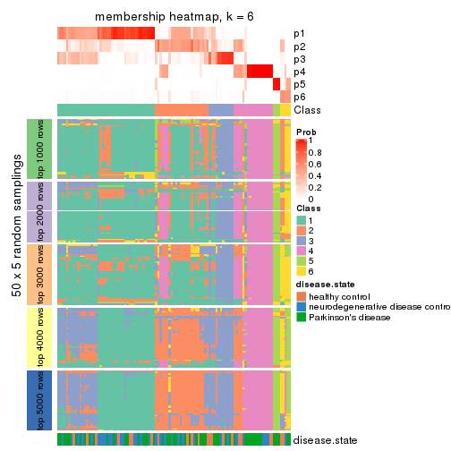
As soon as we have had the classes for columns, we can look for signatures which are significantly different between classes which can be candidate marks for certain classes. Following are the heatmaps for signatures.
Signature heatmaps where rows are scaled:
get_signatures(res, k = 2)
get_signatures(res, k = 3)
get_signatures(res, k = 4)
get_signatures(res, k = 5)
get_signatures(res, k = 6)

Signature heatmaps where rows are not scaled:
get_signatures(res, k = 2, scale_rows = FALSE)
get_signatures(res, k = 3, scale_rows = FALSE)
get_signatures(res, k = 4, scale_rows = FALSE)
get_signatures(res, k = 5, scale_rows = FALSE)
get_signatures(res, k = 6, scale_rows = FALSE)
Compare the overlap of signatures from different k:
compare_signatures(res)
get_signature() returns a data frame invisibly. TO get the list of signatures, the function
call should be assigned to a variable explicitly. In following code, if plot argument is set
to FALSE, no heatmap is plotted while only the differential analysis is performed.
# code only for demonstration
tb = get_signature(res, k = ..., plot = FALSE)
An example of the output of tb is:
#> which_row fdr mean_1 mean_2 scaled_mean_1 scaled_mean_2 km
#> 1 38 0.042760348 8.373488 9.131774 -0.5533452 0.5164555 1
#> 2 40 0.018707592 7.106213 8.469186 -0.6173731 0.5762149 1
#> 3 55 0.019134737 10.221463 11.207825 -0.6159697 0.5749050 1
#> 4 59 0.006059896 5.921854 7.869574 -0.6899429 0.6439467 1
#> 5 60 0.018055526 8.928898 10.211722 -0.6204761 0.5791110 1
#> 6 98 0.009384629 15.714769 14.887706 0.6635654 -0.6193277 2
...
The columns in tb are:
which_row: row indices corresponding to the input matrix.fdr: FDR for the differential test. mean_x: The mean value in group x.scaled_mean_x: The mean value in group x after rows are scaled.km: Row groups if k-means clustering is applied to rows.UMAP plot which shows how samples are separated.
dimension_reduction(res, k = 2, method = "UMAP")
dimension_reduction(res, k = 3, method = "UMAP")
dimension_reduction(res, k = 4, method = "UMAP")
dimension_reduction(res, k = 5, method = "UMAP")
dimension_reduction(res, k = 6, method = "UMAP")
Following heatmap shows how subgroups are split when increasing k:
collect_classes(res)
Test correlation between subgroups and known annotations. If the known annotation is numeric, one-way ANOVA test is applied, and if the known annotation is discrete, chi-squared contingency table test is applied.
test_to_known_factors(res)
#> n disease.state(p) k
#> ATC:mclust 100 0.8760 2
#> ATC:mclust 91 0.1362 3
#> ATC:mclust 97 0.1295 4
#> ATC:mclust 68 0.0743 5
#> ATC:mclust 42 0.5834 6
If matrix rows can be associated to genes, consider to use functional_enrichment(res,
...) to perform function enrichment for the signature genes. See this vignette for more detailed explanations.
The object with results only for a single top-value method and a single partition method can be extracted as:
res = res_list["ATC", "NMF"]
# you can also extract it by
# res = res_list["ATC:NMF"]
A summary of res and all the functions that can be applied to it:
res
#> A 'ConsensusPartition' object with k = 2, 3, 4, 5, 6.
#> On a matrix with 21168 rows and 105 columns.
#> Top rows (1000, 2000, 3000, 4000, 5000) are extracted by 'ATC' method.
#> Subgroups are detected by 'NMF' method.
#> Performed in total 1250 partitions by row resampling.
#> Best k for subgroups seems to be 2.
#>
#> Following methods can be applied to this 'ConsensusPartition' object:
#> [1] "cola_report" "collect_classes" "collect_plots"
#> [4] "collect_stats" "colnames" "compare_signatures"
#> [7] "consensus_heatmap" "dimension_reduction" "functional_enrichment"
#> [10] "get_anno_col" "get_anno" "get_classes"
#> [13] "get_consensus" "get_matrix" "get_membership"
#> [16] "get_param" "get_signatures" "get_stats"
#> [19] "is_best_k" "is_stable_k" "membership_heatmap"
#> [22] "ncol" "nrow" "plot_ecdf"
#> [25] "rownames" "select_partition_number" "show"
#> [28] "suggest_best_k" "test_to_known_factors"
collect_plots() function collects all the plots made from res for all k (number of partitions)
into one single page to provide an easy and fast comparison between different k.
collect_plots(res)
The plots are:
k and the heatmap of
predicted classes for each k.k.k.k.All the plots in panels can be made by individual functions and they are plotted later in this section.
select_partition_number() produces several plots showing different
statistics for choosing “optimized” k. There are following statistics:
k;k, the area increased is defined as \(A_k - A_{k-1}\).The detailed explanations of these statistics can be found in the cola vignette.
Generally speaking, lower PAC score, higher mean silhouette score or higher
concordance corresponds to better partition. Rand index and Jaccard index
measure how similar the current partition is compared to partition with k-1.
If they are too similar, we won't accept k is better than k-1.
select_partition_number(res)
The numeric values for all these statistics can be obtained by get_stats().
get_stats(res)
#> k 1-PAC mean_silhouette concordance area_increased Rand Jaccard
#> 2 2 0.960 0.929 0.973 0.4255 0.572 0.572
#> 3 3 0.566 0.793 0.872 0.3491 0.782 0.641
#> 4 4 0.525 0.535 0.785 0.2094 0.802 0.572
#> 5 5 0.513 0.480 0.711 0.1172 0.751 0.369
#> 6 6 0.556 0.358 0.602 0.0472 0.913 0.665
suggest_best_k() suggests the best \(k\) based on these statistics. The rules are as follows:
suggest_best_k(res)
#> [1] 2
Following shows the table of the partitions (You need to click the show/hide
code output link to see it). The membership matrix (columns with name p*)
is inferred by
clue::cl_consensus()
function with the SE method. Basically the value in the membership matrix
represents the probability to belong to a certain group. The finall class
label for an item is determined with the group with highest probability it
belongs to.
In get_classes() function, the entropy is calculated from the membership
matrix and the silhouette score is calculated from the consensus matrix.
cbind(get_classes(res, k = 2), get_membership(res, k = 2))
#> class entropy silhouette p1 p2
#> GSM153405 2 0.5294 0.8478 0.120 0.880
#> GSM153406 2 0.0000 0.9800 0.000 1.000
#> GSM153419 1 0.0000 0.9495 1.000 0.000
#> GSM153423 2 0.0000 0.9800 0.000 1.000
#> GSM153425 1 1.0000 0.0427 0.504 0.496
#> GSM153427 2 0.0000 0.9800 0.000 1.000
#> GSM153428 2 0.0000 0.9800 0.000 1.000
#> GSM153429 2 0.0000 0.9800 0.000 1.000
#> GSM153433 1 0.0000 0.9495 1.000 0.000
#> GSM153444 2 0.0000 0.9800 0.000 1.000
#> GSM153448 2 0.0000 0.9800 0.000 1.000
#> GSM153451 2 0.0000 0.9800 0.000 1.000
#> GSM153452 2 0.0000 0.9800 0.000 1.000
#> GSM153477 2 0.0000 0.9800 0.000 1.000
#> GSM153479 2 0.0000 0.9800 0.000 1.000
#> GSM153484 2 0.0000 0.9800 0.000 1.000
#> GSM153488 2 0.9129 0.4910 0.328 0.672
#> GSM153496 1 0.1843 0.9288 0.972 0.028
#> GSM153497 2 0.0000 0.9800 0.000 1.000
#> GSM153500 1 0.0000 0.9495 1.000 0.000
#> GSM153503 1 0.0000 0.9495 1.000 0.000
#> GSM153508 2 0.0000 0.9800 0.000 1.000
#> GSM153409 2 0.0000 0.9800 0.000 1.000
#> GSM153426 2 0.0000 0.9800 0.000 1.000
#> GSM153431 2 0.0938 0.9689 0.012 0.988
#> GSM153438 2 0.0000 0.9800 0.000 1.000
#> GSM153440 1 0.0376 0.9470 0.996 0.004
#> GSM153447 1 0.0000 0.9495 1.000 0.000
#> GSM153450 2 0.0000 0.9800 0.000 1.000
#> GSM153456 2 0.0000 0.9800 0.000 1.000
#> GSM153457 2 0.0000 0.9800 0.000 1.000
#> GSM153458 2 0.0000 0.9800 0.000 1.000
#> GSM153459 2 0.0000 0.9800 0.000 1.000
#> GSM153460 2 0.0000 0.9800 0.000 1.000
#> GSM153461 2 0.0000 0.9800 0.000 1.000
#> GSM153463 1 0.0000 0.9495 1.000 0.000
#> GSM153464 2 0.0000 0.9800 0.000 1.000
#> GSM153466 2 0.0000 0.9800 0.000 1.000
#> GSM153467 2 0.0000 0.9800 0.000 1.000
#> GSM153468 2 0.0000 0.9800 0.000 1.000
#> GSM153469 2 0.0000 0.9800 0.000 1.000
#> GSM153470 2 0.0000 0.9800 0.000 1.000
#> GSM153471 2 0.0000 0.9800 0.000 1.000
#> GSM153472 1 0.0376 0.9470 0.996 0.004
#> GSM153473 1 0.0000 0.9495 1.000 0.000
#> GSM153474 1 0.0000 0.9495 1.000 0.000
#> GSM153475 2 0.0000 0.9800 0.000 1.000
#> GSM153476 2 0.0000 0.9800 0.000 1.000
#> GSM153478 1 0.9963 0.1580 0.536 0.464
#> GSM153480 2 0.0000 0.9800 0.000 1.000
#> GSM153486 2 0.0000 0.9800 0.000 1.000
#> GSM153487 2 0.0000 0.9800 0.000 1.000
#> GSM153499 2 0.0000 0.9800 0.000 1.000
#> GSM153504 1 0.0000 0.9495 1.000 0.000
#> GSM153507 1 0.0000 0.9495 1.000 0.000
#> GSM153404 2 0.0000 0.9800 0.000 1.000
#> GSM153407 1 0.1633 0.9321 0.976 0.024
#> GSM153408 2 0.0000 0.9800 0.000 1.000
#> GSM153410 2 0.0000 0.9800 0.000 1.000
#> GSM153411 1 0.0000 0.9495 1.000 0.000
#> GSM153412 2 0.0000 0.9800 0.000 1.000
#> GSM153413 2 0.9608 0.3421 0.384 0.616
#> GSM153414 2 0.0000 0.9800 0.000 1.000
#> GSM153415 2 0.0000 0.9800 0.000 1.000
#> GSM153416 2 0.0000 0.9800 0.000 1.000
#> GSM153417 1 0.0000 0.9495 1.000 0.000
#> GSM153418 2 0.0000 0.9800 0.000 1.000
#> GSM153420 1 0.0000 0.9495 1.000 0.000
#> GSM153421 1 0.0000 0.9495 1.000 0.000
#> GSM153422 1 0.0000 0.9495 1.000 0.000
#> GSM153424 2 0.0000 0.9800 0.000 1.000
#> GSM153430 1 0.6623 0.7750 0.828 0.172
#> GSM153432 2 0.0000 0.9800 0.000 1.000
#> GSM153434 2 0.0000 0.9800 0.000 1.000
#> GSM153435 2 0.0000 0.9800 0.000 1.000
#> GSM153436 2 0.2423 0.9412 0.040 0.960
#> GSM153437 2 0.0000 0.9800 0.000 1.000
#> GSM153439 2 0.0000 0.9800 0.000 1.000
#> GSM153441 2 0.0000 0.9800 0.000 1.000
#> GSM153442 2 0.0000 0.9800 0.000 1.000
#> GSM153443 2 0.0000 0.9800 0.000 1.000
#> GSM153445 2 0.0000 0.9800 0.000 1.000
#> GSM153446 2 0.0000 0.9800 0.000 1.000
#> GSM153449 1 0.8955 0.5521 0.688 0.312
#> GSM153453 1 0.0000 0.9495 1.000 0.000
#> GSM153454 1 0.0000 0.9495 1.000 0.000
#> GSM153455 2 0.0000 0.9800 0.000 1.000
#> GSM153462 2 0.0000 0.9800 0.000 1.000
#> GSM153465 2 0.0000 0.9800 0.000 1.000
#> GSM153481 2 0.0000 0.9800 0.000 1.000
#> GSM153482 2 0.0000 0.9800 0.000 1.000
#> GSM153483 2 0.0000 0.9800 0.000 1.000
#> GSM153485 2 0.0000 0.9800 0.000 1.000
#> GSM153489 2 0.2778 0.9332 0.048 0.952
#> GSM153490 1 0.0000 0.9495 1.000 0.000
#> GSM153491 2 0.9795 0.2467 0.416 0.584
#> GSM153492 1 0.0000 0.9495 1.000 0.000
#> GSM153493 1 0.0000 0.9495 1.000 0.000
#> GSM153494 2 0.0000 0.9800 0.000 1.000
#> GSM153495 1 0.0000 0.9495 1.000 0.000
#> GSM153498 2 0.0000 0.9800 0.000 1.000
#> GSM153501 1 0.0000 0.9495 1.000 0.000
#> GSM153502 1 0.0000 0.9495 1.000 0.000
#> GSM153505 1 0.0000 0.9495 1.000 0.000
#> GSM153506 2 0.0000 0.9800 0.000 1.000
cbind(get_classes(res, k = 3), get_membership(res, k = 3))
#> class entropy silhouette p1 p2 p3
#> GSM153405 2 0.5237 0.831 0.056 0.824 0.120
#> GSM153406 2 0.4339 0.852 0.084 0.868 0.048
#> GSM153419 3 0.1964 0.827 0.056 0.000 0.944
#> GSM153423 2 0.2301 0.897 0.060 0.936 0.004
#> GSM153425 3 0.7376 0.548 0.076 0.252 0.672
#> GSM153427 2 0.5793 0.786 0.084 0.800 0.116
#> GSM153428 2 0.4660 0.877 0.072 0.856 0.072
#> GSM153429 2 0.0747 0.917 0.016 0.984 0.000
#> GSM153433 3 0.2625 0.813 0.084 0.000 0.916
#> GSM153444 2 0.4232 0.856 0.084 0.872 0.044
#> GSM153448 2 0.1860 0.911 0.052 0.948 0.000
#> GSM153451 2 0.0892 0.913 0.020 0.980 0.000
#> GSM153452 2 0.2878 0.893 0.096 0.904 0.000
#> GSM153477 2 0.2066 0.899 0.060 0.940 0.000
#> GSM153479 2 0.3816 0.848 0.148 0.852 0.000
#> GSM153484 2 0.1964 0.915 0.056 0.944 0.000
#> GSM153488 1 0.5473 0.717 0.808 0.140 0.052
#> GSM153496 1 0.3995 0.716 0.868 0.116 0.016
#> GSM153497 2 0.0892 0.915 0.020 0.980 0.000
#> GSM153500 1 0.3879 0.688 0.848 0.000 0.152
#> GSM153503 1 0.4931 0.650 0.768 0.000 0.232
#> GSM153508 1 0.4062 0.701 0.836 0.164 0.000
#> GSM153409 2 0.3183 0.882 0.076 0.908 0.016
#> GSM153426 2 0.1529 0.917 0.040 0.960 0.000
#> GSM153431 3 0.8179 0.388 0.084 0.352 0.564
#> GSM153438 2 0.1411 0.916 0.036 0.964 0.000
#> GSM153440 3 0.0829 0.827 0.012 0.004 0.984
#> GSM153447 3 0.2625 0.813 0.084 0.000 0.916
#> GSM153450 2 0.2749 0.891 0.064 0.924 0.012
#> GSM153456 2 0.1643 0.916 0.044 0.956 0.000
#> GSM153457 2 0.1031 0.917 0.024 0.976 0.000
#> GSM153458 2 0.1860 0.916 0.052 0.948 0.000
#> GSM153459 2 0.3234 0.882 0.072 0.908 0.020
#> GSM153460 2 0.1643 0.913 0.044 0.956 0.000
#> GSM153461 2 0.5010 0.827 0.084 0.840 0.076
#> GSM153463 3 0.3192 0.786 0.112 0.000 0.888
#> GSM153464 2 0.2711 0.895 0.088 0.912 0.000
#> GSM153466 2 0.2384 0.897 0.056 0.936 0.008
#> GSM153467 2 0.2959 0.889 0.100 0.900 0.000
#> GSM153468 1 0.5926 0.499 0.644 0.356 0.000
#> GSM153469 2 0.3340 0.873 0.120 0.880 0.000
#> GSM153470 2 0.0747 0.916 0.016 0.984 0.000
#> GSM153471 2 0.2959 0.889 0.100 0.900 0.000
#> GSM153472 1 0.4995 0.714 0.840 0.068 0.092
#> GSM153473 1 0.6008 0.471 0.628 0.000 0.372
#> GSM153474 1 0.4062 0.686 0.836 0.000 0.164
#> GSM153475 2 0.1647 0.912 0.036 0.960 0.004
#> GSM153476 2 0.3918 0.862 0.140 0.856 0.004
#> GSM153478 1 0.6252 0.603 0.708 0.268 0.024
#> GSM153480 2 0.0892 0.914 0.020 0.980 0.000
#> GSM153486 2 0.1289 0.917 0.032 0.968 0.000
#> GSM153487 1 0.4178 0.701 0.828 0.172 0.000
#> GSM153499 1 0.4178 0.697 0.828 0.172 0.000
#> GSM153504 1 0.4796 0.658 0.780 0.000 0.220
#> GSM153507 3 0.3690 0.791 0.100 0.016 0.884
#> GSM153404 2 0.1643 0.914 0.044 0.956 0.000
#> GSM153407 3 0.5998 0.674 0.084 0.128 0.788
#> GSM153408 2 0.5010 0.826 0.084 0.840 0.076
#> GSM153410 2 0.3461 0.877 0.076 0.900 0.024
#> GSM153411 3 0.1860 0.828 0.052 0.000 0.948
#> GSM153412 2 0.0892 0.918 0.020 0.980 0.000
#> GSM153413 1 0.6102 0.560 0.672 0.320 0.008
#> GSM153414 2 0.1860 0.913 0.052 0.948 0.000
#> GSM153415 2 0.3686 0.863 0.140 0.860 0.000
#> GSM153416 2 0.1163 0.911 0.028 0.972 0.000
#> GSM153417 3 0.1753 0.829 0.048 0.000 0.952
#> GSM153418 2 0.4830 0.833 0.084 0.848 0.068
#> GSM153420 3 0.0892 0.820 0.020 0.000 0.980
#> GSM153421 3 0.1529 0.829 0.040 0.000 0.960
#> GSM153422 3 0.1289 0.829 0.032 0.000 0.968
#> GSM153424 2 0.5375 0.800 0.056 0.816 0.128
#> GSM153430 3 0.3425 0.743 0.004 0.112 0.884
#> GSM153432 2 0.4035 0.861 0.080 0.880 0.040
#> GSM153434 2 0.2096 0.901 0.052 0.944 0.004
#> GSM153435 2 0.1964 0.909 0.056 0.944 0.000
#> GSM153436 2 0.4035 0.867 0.040 0.880 0.080
#> GSM153437 2 0.1860 0.911 0.052 0.948 0.000
#> GSM153439 2 0.0592 0.917 0.012 0.988 0.000
#> GSM153441 2 0.1753 0.912 0.048 0.952 0.000
#> GSM153442 2 0.3116 0.883 0.108 0.892 0.000
#> GSM153443 2 0.2261 0.905 0.068 0.932 0.000
#> GSM153445 2 0.2959 0.888 0.100 0.900 0.000
#> GSM153446 2 0.0424 0.917 0.008 0.992 0.000
#> GSM153449 3 0.6527 0.466 0.020 0.320 0.660
#> GSM153453 1 0.5000 0.708 0.832 0.044 0.124
#> GSM153454 1 0.5760 0.546 0.672 0.000 0.328
#> GSM153455 2 0.1289 0.916 0.032 0.968 0.000
#> GSM153462 2 0.1163 0.917 0.028 0.972 0.000
#> GSM153465 2 0.1399 0.912 0.028 0.968 0.004
#> GSM153481 2 0.3267 0.876 0.116 0.884 0.000
#> GSM153482 2 0.5948 0.444 0.360 0.640 0.000
#> GSM153483 2 0.3686 0.855 0.140 0.860 0.000
#> GSM153485 1 0.6299 0.162 0.524 0.476 0.000
#> GSM153489 1 0.5356 0.691 0.784 0.196 0.020
#> GSM153490 3 0.2165 0.823 0.064 0.000 0.936
#> GSM153491 1 0.3686 0.710 0.860 0.140 0.000
#> GSM153492 1 0.4750 0.662 0.784 0.000 0.216
#> GSM153493 1 0.4555 0.671 0.800 0.000 0.200
#> GSM153494 1 0.6154 0.368 0.592 0.408 0.000
#> GSM153495 1 0.5591 0.579 0.696 0.000 0.304
#> GSM153498 1 0.3941 0.705 0.844 0.156 0.000
#> GSM153501 1 0.4750 0.662 0.784 0.000 0.216
#> GSM153502 1 0.4452 0.675 0.808 0.000 0.192
#> GSM153505 1 0.5254 0.619 0.736 0.000 0.264
#> GSM153506 2 0.3116 0.883 0.108 0.892 0.000
cbind(get_classes(res, k = 4), get_membership(res, k = 4))
#> class entropy silhouette p1 p2 p3 p4
#> GSM153405 2 0.5147 0.4648 0.000 0.740 0.200 0.060
#> GSM153406 4 0.4454 0.5402 0.000 0.308 0.000 0.692
#> GSM153419 3 0.2401 0.7795 0.000 0.004 0.904 0.092
#> GSM153423 2 0.5000 -0.1478 0.000 0.504 0.000 0.496
#> GSM153425 3 0.5404 0.4141 0.000 0.328 0.644 0.028
#> GSM153427 4 0.3333 0.6308 0.000 0.088 0.040 0.872
#> GSM153428 2 0.4524 0.4680 0.000 0.768 0.204 0.028
#> GSM153429 2 0.2868 0.6253 0.000 0.864 0.000 0.136
#> GSM153433 3 0.1004 0.7684 0.024 0.000 0.972 0.004
#> GSM153444 4 0.4972 0.2684 0.000 0.456 0.000 0.544
#> GSM153448 2 0.2714 0.6391 0.000 0.884 0.004 0.112
#> GSM153451 2 0.2530 0.6397 0.000 0.888 0.000 0.112
#> GSM153452 2 0.3836 0.5466 0.004 0.840 0.128 0.028
#> GSM153477 4 0.5119 0.3201 0.004 0.440 0.000 0.556
#> GSM153479 2 0.1151 0.6599 0.008 0.968 0.000 0.024
#> GSM153484 4 0.5620 0.3646 0.024 0.416 0.000 0.560
#> GSM153488 1 0.1305 0.8371 0.960 0.004 0.000 0.036
#> GSM153496 1 0.3306 0.7899 0.840 0.004 0.156 0.000
#> GSM153497 2 0.5155 -0.0508 0.004 0.528 0.000 0.468
#> GSM153500 1 0.3356 0.7707 0.824 0.000 0.176 0.000
#> GSM153503 1 0.4401 0.6518 0.724 0.000 0.272 0.004
#> GSM153508 1 0.0657 0.8447 0.984 0.012 0.004 0.000
#> GSM153409 2 0.4843 0.1961 0.000 0.604 0.000 0.396
#> GSM153426 2 0.0188 0.6668 0.000 0.996 0.000 0.004
#> GSM153431 4 0.3367 0.5077 0.000 0.028 0.108 0.864
#> GSM153438 2 0.0469 0.6677 0.000 0.988 0.000 0.012
#> GSM153440 3 0.4713 0.7244 0.004 0.004 0.700 0.292
#> GSM153447 3 0.1296 0.7667 0.028 0.004 0.964 0.004
#> GSM153450 2 0.4697 0.4203 0.000 0.696 0.008 0.296
#> GSM153456 2 0.0469 0.6678 0.000 0.988 0.000 0.012
#> GSM153457 2 0.1211 0.6651 0.000 0.960 0.000 0.040
#> GSM153458 2 0.0657 0.6640 0.000 0.984 0.004 0.012
#> GSM153459 2 0.4999 -0.1268 0.000 0.508 0.000 0.492
#> GSM153460 2 0.0336 0.6677 0.000 0.992 0.000 0.008
#> GSM153461 4 0.5235 0.6092 0.000 0.236 0.048 0.716
#> GSM153463 3 0.1488 0.7702 0.032 0.000 0.956 0.012
#> GSM153464 2 0.0524 0.6670 0.008 0.988 0.000 0.004
#> GSM153466 4 0.5097 0.3500 0.004 0.428 0.000 0.568
#> GSM153467 2 0.0779 0.6605 0.004 0.980 0.000 0.016
#> GSM153468 2 0.4666 0.5299 0.152 0.792 0.004 0.052
#> GSM153469 2 0.2282 0.6461 0.024 0.924 0.000 0.052
#> GSM153470 2 0.5168 -0.1402 0.004 0.504 0.000 0.492
#> GSM153471 2 0.2413 0.6591 0.020 0.916 0.000 0.064
#> GSM153472 1 0.1174 0.8458 0.968 0.000 0.020 0.012
#> GSM153473 3 0.5070 0.1636 0.416 0.000 0.580 0.004
#> GSM153474 1 0.2081 0.8324 0.916 0.000 0.084 0.000
#> GSM153475 4 0.4724 0.6315 0.076 0.136 0.000 0.788
#> GSM153476 4 0.7277 0.4102 0.228 0.232 0.000 0.540
#> GSM153478 2 0.8680 -0.0978 0.320 0.440 0.180 0.060
#> GSM153480 2 0.5151 -0.0316 0.004 0.532 0.000 0.464
#> GSM153486 2 0.5105 0.0808 0.004 0.564 0.000 0.432
#> GSM153487 1 0.1545 0.8348 0.952 0.008 0.000 0.040
#> GSM153499 1 0.2002 0.8280 0.936 0.044 0.000 0.020
#> GSM153504 1 0.0817 0.8440 0.976 0.000 0.024 0.000
#> GSM153507 4 0.3931 0.3920 0.128 0.000 0.040 0.832
#> GSM153404 2 0.1890 0.6481 0.000 0.936 0.008 0.056
#> GSM153407 4 0.3945 0.2606 0.000 0.004 0.216 0.780
#> GSM153408 4 0.3082 0.6130 0.000 0.084 0.032 0.884
#> GSM153410 4 0.4925 0.3014 0.000 0.428 0.000 0.572
#> GSM153411 3 0.0336 0.7745 0.000 0.000 0.992 0.008
#> GSM153412 2 0.4194 0.5539 0.008 0.764 0.000 0.228
#> GSM153413 1 0.7160 0.4606 0.592 0.272 0.020 0.116
#> GSM153414 2 0.1109 0.6561 0.000 0.968 0.004 0.028
#> GSM153415 2 0.3485 0.5985 0.048 0.872 0.004 0.076
#> GSM153416 2 0.4989 -0.0303 0.000 0.528 0.000 0.472
#> GSM153417 3 0.2401 0.7790 0.004 0.000 0.904 0.092
#> GSM153418 4 0.4328 0.6025 0.000 0.244 0.008 0.748
#> GSM153420 3 0.4800 0.6880 0.004 0.000 0.656 0.340
#> GSM153421 3 0.4088 0.7444 0.004 0.000 0.764 0.232
#> GSM153422 3 0.4720 0.6997 0.004 0.000 0.672 0.324
#> GSM153424 2 0.5056 0.5034 0.000 0.732 0.224 0.044
#> GSM153430 3 0.2480 0.7303 0.000 0.088 0.904 0.008
#> GSM153432 4 0.3142 0.6410 0.008 0.132 0.000 0.860
#> GSM153434 2 0.5925 -0.0472 0.000 0.512 0.036 0.452
#> GSM153435 2 0.0895 0.6683 0.004 0.976 0.000 0.020
#> GSM153436 2 0.5911 0.2855 0.000 0.584 0.372 0.044
#> GSM153437 2 0.0188 0.6658 0.004 0.996 0.000 0.000
#> GSM153439 2 0.4790 0.2918 0.000 0.620 0.000 0.380
#> GSM153441 2 0.0895 0.6625 0.004 0.976 0.000 0.020
#> GSM153442 2 0.2542 0.6508 0.012 0.904 0.000 0.084
#> GSM153443 2 0.1042 0.6679 0.008 0.972 0.000 0.020
#> GSM153445 2 0.4004 0.6065 0.024 0.812 0.000 0.164
#> GSM153446 2 0.4888 0.1565 0.000 0.588 0.000 0.412
#> GSM153449 4 0.7023 0.5827 0.052 0.144 0.136 0.668
#> GSM153453 1 0.3890 0.7999 0.836 0.004 0.132 0.028
#> GSM153454 3 0.3428 0.6788 0.144 0.000 0.844 0.012
#> GSM153455 2 0.5039 0.1811 0.004 0.592 0.000 0.404
#> GSM153462 2 0.5132 0.0269 0.004 0.548 0.000 0.448
#> GSM153465 4 0.5070 0.3724 0.004 0.416 0.000 0.580
#> GSM153481 2 0.5619 0.5159 0.124 0.724 0.000 0.152
#> GSM153482 1 0.5431 0.5740 0.712 0.224 0.000 0.064
#> GSM153483 2 0.4203 0.5977 0.108 0.824 0.000 0.068
#> GSM153485 1 0.3071 0.7809 0.888 0.068 0.000 0.044
#> GSM153489 1 0.1388 0.8388 0.960 0.012 0.000 0.028
#> GSM153490 3 0.5897 0.6667 0.044 0.000 0.588 0.368
#> GSM153491 1 0.1305 0.8453 0.960 0.004 0.036 0.000
#> GSM153492 1 0.1042 0.8450 0.972 0.000 0.020 0.008
#> GSM153493 1 0.1557 0.8401 0.944 0.000 0.056 0.000
#> GSM153494 1 0.4994 0.0341 0.520 0.480 0.000 0.000
#> GSM153495 3 0.4920 0.2712 0.368 0.000 0.628 0.004
#> GSM153498 1 0.1297 0.8399 0.964 0.016 0.000 0.020
#> GSM153501 1 0.1940 0.8347 0.924 0.000 0.076 0.000
#> GSM153502 1 0.1940 0.8330 0.924 0.000 0.076 0.000
#> GSM153505 1 0.3528 0.7500 0.808 0.000 0.192 0.000
#> GSM153506 2 0.6438 -0.1135 0.068 0.496 0.000 0.436
cbind(get_classes(res, k = 5), get_membership(res, k = 5))
#> class entropy silhouette p1 p2 p3 p4 p5
#> GSM153405 3 0.2411 0.63299 0.004 0.008 0.912 0.052 0.024
#> GSM153406 2 0.6488 0.19295 0.000 0.512 0.200 0.004 0.284
#> GSM153419 3 0.6036 0.05225 0.004 0.000 0.576 0.140 0.280
#> GSM153423 2 0.1168 0.64160 0.000 0.960 0.032 0.000 0.008
#> GSM153425 4 0.7414 0.28553 0.000 0.088 0.172 0.516 0.224
#> GSM153427 2 0.4367 0.05106 0.000 0.580 0.004 0.000 0.416
#> GSM153428 4 0.7685 0.29798 0.000 0.136 0.116 0.460 0.288
#> GSM153429 3 0.6032 0.20561 0.000 0.356 0.536 0.008 0.100
#> GSM153433 4 0.1728 0.44447 0.036 0.000 0.004 0.940 0.020
#> GSM153444 2 0.1764 0.60433 0.000 0.928 0.008 0.000 0.064
#> GSM153448 2 0.6810 0.41205 0.012 0.528 0.008 0.192 0.260
#> GSM153451 2 0.5991 0.51143 0.000 0.616 0.172 0.008 0.204
#> GSM153452 4 0.8043 0.24222 0.004 0.160 0.120 0.420 0.296
#> GSM153477 2 0.2128 0.63018 0.012 0.928 0.020 0.004 0.036
#> GSM153479 3 0.5898 0.44761 0.004 0.160 0.632 0.004 0.200
#> GSM153484 2 0.2634 0.60131 0.040 0.904 0.012 0.004 0.040
#> GSM153488 1 0.4356 0.49374 0.648 0.000 0.340 0.000 0.012
#> GSM153496 1 0.3511 0.76778 0.800 0.000 0.004 0.184 0.012
#> GSM153497 2 0.2036 0.64409 0.000 0.920 0.056 0.000 0.024
#> GSM153500 1 0.2338 0.83186 0.884 0.000 0.000 0.112 0.004
#> GSM153503 1 0.3797 0.71256 0.756 0.000 0.004 0.232 0.008
#> GSM153508 1 0.1299 0.85060 0.960 0.020 0.012 0.000 0.008
#> GSM153409 2 0.3584 0.63657 0.000 0.840 0.076 0.008 0.076
#> GSM153426 3 0.6083 0.32313 0.000 0.252 0.592 0.008 0.148
#> GSM153431 2 0.5542 -0.04742 0.000 0.532 0.000 0.072 0.396
#> GSM153438 2 0.7056 0.32790 0.000 0.440 0.272 0.016 0.272
#> GSM153440 5 0.6862 0.29358 0.004 0.012 0.380 0.168 0.436
#> GSM153447 4 0.1278 0.43934 0.020 0.000 0.004 0.960 0.016
#> GSM153450 2 0.5792 0.54130 0.000 0.688 0.168 0.056 0.088
#> GSM153456 2 0.6918 0.35473 0.000 0.460 0.264 0.012 0.264
#> GSM153457 2 0.6774 0.36522 0.000 0.476 0.272 0.008 0.244
#> GSM153458 2 0.7953 0.34078 0.000 0.420 0.172 0.120 0.288
#> GSM153459 2 0.1278 0.64013 0.000 0.960 0.020 0.004 0.016
#> GSM153460 2 0.7067 0.17171 0.000 0.376 0.356 0.012 0.256
#> GSM153461 2 0.4449 0.20198 0.000 0.636 0.008 0.004 0.352
#> GSM153463 4 0.2952 0.38102 0.036 0.000 0.004 0.872 0.088
#> GSM153464 3 0.4599 0.56825 0.000 0.156 0.744 0.000 0.100
#> GSM153466 2 0.3441 0.60368 0.008 0.848 0.000 0.088 0.056
#> GSM153467 3 0.7135 0.04548 0.000 0.268 0.436 0.020 0.276
#> GSM153468 3 0.2945 0.64967 0.020 0.012 0.880 0.004 0.084
#> GSM153469 3 0.0968 0.64544 0.012 0.012 0.972 0.000 0.004
#> GSM153470 2 0.3484 0.62633 0.004 0.824 0.144 0.000 0.028
#> GSM153471 2 0.6628 0.44642 0.016 0.540 0.212 0.000 0.232
#> GSM153472 1 0.3707 0.80455 0.828 0.000 0.116 0.044 0.012
#> GSM153473 4 0.5166 -0.03458 0.436 0.000 0.004 0.528 0.032
#> GSM153474 1 0.2144 0.85606 0.912 0.000 0.020 0.068 0.000
#> GSM153475 2 0.5877 0.24372 0.120 0.616 0.004 0.004 0.256
#> GSM153476 3 0.5067 0.49840 0.040 0.056 0.736 0.000 0.168
#> GSM153478 3 0.3782 0.56022 0.032 0.000 0.832 0.104 0.032
#> GSM153480 2 0.3203 0.60756 0.000 0.820 0.168 0.000 0.012
#> GSM153486 2 0.3175 0.64249 0.016 0.864 0.016 0.004 0.100
#> GSM153487 1 0.1460 0.85195 0.956 0.012 0.020 0.004 0.008
#> GSM153499 1 0.3205 0.73800 0.816 0.004 0.176 0.000 0.004
#> GSM153504 1 0.1211 0.85783 0.960 0.000 0.000 0.024 0.016
#> GSM153507 5 0.6805 0.37567 0.160 0.260 0.004 0.028 0.548
#> GSM153404 3 0.1216 0.64890 0.000 0.020 0.960 0.000 0.020
#> GSM153407 5 0.7023 0.44839 0.000 0.252 0.040 0.188 0.520
#> GSM153408 5 0.6163 0.01837 0.000 0.092 0.440 0.012 0.456
#> GSM153410 3 0.4431 0.56380 0.000 0.068 0.760 0.004 0.168
#> GSM153411 4 0.3242 0.28269 0.012 0.000 0.000 0.816 0.172
#> GSM153412 3 0.1725 0.63752 0.000 0.020 0.936 0.000 0.044
#> GSM153413 3 0.4050 0.53459 0.036 0.004 0.796 0.008 0.156
#> GSM153414 3 0.5567 0.58165 0.000 0.072 0.708 0.060 0.160
#> GSM153415 3 0.2457 0.61786 0.008 0.016 0.900 0.000 0.076
#> GSM153416 2 0.4731 0.39523 0.000 0.640 0.328 0.000 0.032
#> GSM153417 4 0.4029 -0.00762 0.004 0.000 0.000 0.680 0.316
#> GSM153418 3 0.5606 0.21516 0.000 0.084 0.556 0.000 0.360
#> GSM153420 5 0.4101 0.49129 0.000 0.000 0.000 0.372 0.628
#> GSM153421 5 0.4306 0.33973 0.000 0.000 0.000 0.492 0.508
#> GSM153422 5 0.4182 0.47426 0.000 0.000 0.000 0.400 0.600
#> GSM153424 4 0.7131 -0.12541 0.000 0.368 0.016 0.368 0.248
#> GSM153430 4 0.3038 0.39335 0.008 0.004 0.032 0.876 0.080
#> GSM153432 2 0.4774 0.16792 0.000 0.632 0.024 0.004 0.340
#> GSM153434 3 0.6192 0.37737 0.000 0.352 0.548 0.048 0.052
#> GSM153435 3 0.6479 0.10345 0.000 0.328 0.504 0.008 0.160
#> GSM153436 4 0.4863 0.36020 0.000 0.148 0.060 0.756 0.036
#> GSM153437 2 0.7187 0.29082 0.000 0.416 0.292 0.020 0.272
#> GSM153439 3 0.4497 0.56020 0.000 0.248 0.716 0.008 0.028
#> GSM153441 3 0.4507 0.62520 0.000 0.096 0.780 0.016 0.108
#> GSM153442 2 0.7555 0.41886 0.048 0.520 0.024 0.164 0.244
#> GSM153443 2 0.6806 0.24224 0.000 0.420 0.336 0.004 0.240
#> GSM153445 3 0.4406 0.56083 0.012 0.220 0.740 0.000 0.028
#> GSM153446 2 0.3690 0.58083 0.000 0.780 0.200 0.000 0.020
#> GSM153449 2 0.5439 0.41849 0.204 0.696 0.000 0.044 0.056
#> GSM153453 3 0.6137 -0.03715 0.408 0.000 0.496 0.076 0.020
#> GSM153454 4 0.4150 0.40495 0.140 0.000 0.004 0.788 0.068
#> GSM153455 2 0.2629 0.64672 0.008 0.896 0.064 0.000 0.032
#> GSM153462 2 0.2929 0.62490 0.004 0.856 0.128 0.000 0.012
#> GSM153465 2 0.4023 0.60553 0.008 0.816 0.076 0.004 0.096
#> GSM153481 2 0.7145 0.39721 0.168 0.528 0.244 0.000 0.060
#> GSM153482 3 0.4925 0.46279 0.232 0.024 0.708 0.000 0.036
#> GSM153483 3 0.3184 0.65319 0.052 0.068 0.868 0.000 0.012
#> GSM153485 1 0.1644 0.84639 0.940 0.008 0.048 0.000 0.004
#> GSM153489 1 0.1952 0.81252 0.912 0.084 0.000 0.004 0.000
#> GSM153490 5 0.5770 0.37377 0.080 0.004 0.000 0.388 0.528
#> GSM153491 1 0.0671 0.85601 0.980 0.000 0.000 0.016 0.004
#> GSM153492 1 0.2546 0.85254 0.904 0.000 0.036 0.048 0.012
#> GSM153493 1 0.1877 0.85443 0.924 0.000 0.012 0.064 0.000
#> GSM153494 1 0.5922 0.49061 0.672 0.132 0.164 0.004 0.028
#> GSM153495 4 0.4581 0.21284 0.360 0.000 0.004 0.624 0.012
#> GSM153498 1 0.1412 0.84876 0.952 0.004 0.036 0.000 0.008
#> GSM153501 1 0.2068 0.84648 0.904 0.000 0.004 0.092 0.000
#> GSM153502 1 0.1408 0.85275 0.948 0.000 0.000 0.044 0.008
#> GSM153505 1 0.3362 0.80034 0.824 0.000 0.012 0.156 0.008
#> GSM153506 2 0.3504 0.63160 0.092 0.852 0.036 0.004 0.016
cbind(get_classes(res, k = 6), get_membership(res, k = 6))
#> class entropy silhouette p1 p2 p3 p4 p5 p6
#> GSM153405 3 0.608 0.5260 0.004 0.112 0.588 0.000 0.060 0.236
#> GSM153406 1 0.708 0.2156 0.480 0.000 0.124 0.004 0.224 0.168
#> GSM153419 3 0.656 0.2621 0.000 0.060 0.456 0.000 0.336 0.148
#> GSM153423 1 0.127 0.4841 0.952 0.008 0.004 0.000 0.000 0.036
#> GSM153425 6 0.694 -0.1189 0.076 0.192 0.000 0.000 0.324 0.408
#> GSM153427 1 0.717 0.0881 0.452 0.036 0.052 0.000 0.304 0.156
#> GSM153428 2 0.607 0.1692 0.116 0.528 0.044 0.000 0.000 0.312
#> GSM153429 1 0.710 -0.0960 0.392 0.060 0.344 0.000 0.012 0.192
#> GSM153433 2 0.280 0.4584 0.000 0.888 0.036 0.032 0.028 0.016
#> GSM153444 1 0.462 0.4580 0.772 0.040 0.032 0.000 0.052 0.104
#> GSM153448 1 0.616 -0.0410 0.444 0.408 0.032 0.004 0.000 0.112
#> GSM153451 1 0.400 0.0218 0.692 0.016 0.008 0.000 0.000 0.284
#> GSM153452 2 0.569 0.4109 0.084 0.652 0.116 0.000 0.000 0.148
#> GSM153477 1 0.259 0.4776 0.884 0.000 0.000 0.036 0.012 0.068
#> GSM153479 3 0.642 0.4279 0.100 0.084 0.584 0.016 0.000 0.216
#> GSM153484 1 0.268 0.4902 0.876 0.000 0.000 0.084 0.016 0.024
#> GSM153488 4 0.500 0.2275 0.000 0.012 0.424 0.528 0.024 0.012
#> GSM153496 4 0.374 0.4724 0.000 0.392 0.000 0.608 0.000 0.000
#> GSM153497 1 0.135 0.4689 0.940 0.000 0.000 0.000 0.004 0.056
#> GSM153500 4 0.263 0.6949 0.000 0.152 0.000 0.840 0.008 0.000
#> GSM153503 4 0.465 0.4260 0.000 0.380 0.000 0.572 0.048 0.000
#> GSM153508 4 0.251 0.6930 0.060 0.000 0.024 0.892 0.000 0.024
#> GSM153409 1 0.288 0.3265 0.812 0.008 0.000 0.000 0.000 0.180
#> GSM153426 6 0.530 0.5502 0.272 0.000 0.108 0.000 0.012 0.608
#> GSM153431 1 0.512 0.0676 0.480 0.020 0.000 0.000 0.460 0.040
#> GSM153438 1 0.579 -0.5481 0.480 0.084 0.032 0.000 0.000 0.404
#> GSM153440 3 0.715 0.2371 0.008 0.236 0.488 0.004 0.156 0.108
#> GSM153447 2 0.289 0.4012 0.000 0.856 0.000 0.032 0.104 0.008
#> GSM153450 3 0.764 0.1252 0.240 0.240 0.380 0.000 0.012 0.128
#> GSM153456 6 0.447 0.5209 0.480 0.020 0.004 0.000 0.000 0.496
#> GSM153457 1 0.476 -0.5734 0.492 0.008 0.032 0.000 0.000 0.468
#> GSM153458 6 0.547 0.5236 0.416 0.124 0.000 0.000 0.000 0.460
#> GSM153459 1 0.131 0.4823 0.952 0.008 0.008 0.000 0.000 0.032
#> GSM153460 6 0.555 0.5992 0.416 0.024 0.072 0.000 0.000 0.488
#> GSM153461 1 0.714 0.2490 0.520 0.052 0.068 0.000 0.232 0.128
#> GSM153463 2 0.468 0.2795 0.000 0.700 0.012 0.068 0.216 0.004
#> GSM153464 3 0.600 -0.1925 0.236 0.000 0.392 0.000 0.000 0.372
#> GSM153466 1 0.427 0.4715 0.788 0.080 0.000 0.024 0.016 0.092
#> GSM153467 6 0.685 0.4955 0.288 0.064 0.216 0.000 0.000 0.432
#> GSM153468 3 0.499 0.5562 0.012 0.052 0.716 0.048 0.000 0.172
#> GSM153469 3 0.462 0.5568 0.008 0.000 0.716 0.048 0.020 0.208
#> GSM153470 1 0.280 0.4339 0.852 0.000 0.000 0.012 0.012 0.124
#> GSM153471 1 0.495 -0.4592 0.504 0.000 0.004 0.044 0.004 0.444
#> GSM153472 4 0.634 0.4331 0.004 0.212 0.236 0.524 0.008 0.016
#> GSM153473 2 0.463 -0.0892 0.000 0.560 0.000 0.396 0.044 0.000
#> GSM153474 4 0.285 0.7207 0.000 0.076 0.036 0.872 0.004 0.012
#> GSM153475 1 0.647 0.3304 0.556 0.000 0.000 0.200 0.140 0.104
#> GSM153476 3 0.482 0.4850 0.004 0.000 0.704 0.016 0.188 0.088
#> GSM153478 3 0.386 0.4888 0.004 0.136 0.800 0.020 0.004 0.036
#> GSM153480 1 0.243 0.4231 0.876 0.000 0.024 0.000 0.000 0.100
#> GSM153486 1 0.328 0.4047 0.828 0.020 0.000 0.024 0.000 0.128
#> GSM153487 4 0.176 0.7168 0.004 0.004 0.064 0.924 0.000 0.004
#> GSM153499 4 0.595 0.3782 0.020 0.000 0.192 0.628 0.036 0.124
#> GSM153504 4 0.203 0.7183 0.000 0.044 0.004 0.920 0.024 0.008
#> GSM153507 5 0.841 0.2344 0.268 0.020 0.072 0.108 0.388 0.144
#> GSM153404 3 0.502 0.5267 0.004 0.004 0.624 0.000 0.080 0.288
#> GSM153407 5 0.876 0.0997 0.164 0.160 0.216 0.000 0.308 0.152
#> GSM153408 5 0.644 -0.1793 0.020 0.000 0.296 0.004 0.456 0.224
#> GSM153410 3 0.656 0.4647 0.072 0.000 0.504 0.000 0.152 0.272
#> GSM153411 5 0.452 0.2908 0.000 0.412 0.000 0.012 0.560 0.016
#> GSM153412 3 0.525 0.5139 0.008 0.000 0.596 0.004 0.084 0.308
#> GSM153413 3 0.601 0.4624 0.004 0.000 0.584 0.032 0.200 0.180
#> GSM153414 3 0.671 0.2916 0.052 0.324 0.428 0.000 0.000 0.196
#> GSM153415 3 0.626 0.4427 0.012 0.004 0.472 0.008 0.152 0.352
#> GSM153416 1 0.627 0.2310 0.572 0.032 0.256 0.000 0.028 0.112
#> GSM153417 5 0.388 0.4207 0.000 0.320 0.000 0.008 0.668 0.004
#> GSM153418 3 0.651 0.2844 0.024 0.000 0.400 0.000 0.332 0.244
#> GSM153420 5 0.251 0.5293 0.004 0.088 0.008 0.000 0.884 0.016
#> GSM153421 5 0.279 0.5170 0.000 0.200 0.000 0.000 0.800 0.000
#> GSM153422 5 0.222 0.5349 0.000 0.136 0.000 0.000 0.864 0.000
#> GSM153424 2 0.630 0.0652 0.320 0.508 0.028 0.000 0.012 0.132
#> GSM153430 2 0.366 0.4217 0.000 0.824 0.052 0.004 0.092 0.028
#> GSM153432 1 0.741 0.1479 0.476 0.024 0.120 0.000 0.204 0.176
#> GSM153434 3 0.729 0.2658 0.076 0.216 0.512 0.000 0.056 0.140
#> GSM153435 6 0.579 0.5724 0.388 0.000 0.156 0.000 0.004 0.452
#> GSM153436 2 0.528 0.3759 0.060 0.684 0.196 0.000 0.012 0.048
#> GSM153437 6 0.477 0.5906 0.440 0.028 0.012 0.000 0.000 0.520
#> GSM153439 3 0.555 0.4598 0.096 0.072 0.692 0.000 0.016 0.124
#> GSM153441 3 0.541 0.4235 0.052 0.208 0.668 0.004 0.004 0.064
#> GSM153442 2 0.684 -0.0835 0.408 0.412 0.032 0.064 0.000 0.084
#> GSM153443 6 0.459 0.5752 0.448 0.000 0.028 0.004 0.000 0.520
#> GSM153445 3 0.647 0.0819 0.280 0.000 0.500 0.040 0.004 0.176
#> GSM153446 1 0.332 0.3143 0.800 0.000 0.036 0.000 0.000 0.164
#> GSM153449 1 0.554 0.3081 0.628 0.044 0.000 0.264 0.048 0.016
#> GSM153453 3 0.597 0.2533 0.004 0.180 0.584 0.204 0.000 0.028
#> GSM153454 2 0.434 0.3694 0.000 0.732 0.000 0.164 0.100 0.004
#> GSM153455 1 0.175 0.4853 0.936 0.004 0.004 0.016 0.004 0.036
#> GSM153462 1 0.245 0.4509 0.888 0.000 0.040 0.000 0.004 0.068
#> GSM153465 1 0.308 0.4948 0.856 0.000 0.004 0.008 0.056 0.076
#> GSM153481 1 0.635 -0.1845 0.452 0.000 0.012 0.284 0.004 0.248
#> GSM153482 3 0.509 0.5037 0.012 0.016 0.732 0.132 0.024 0.084
#> GSM153483 3 0.615 0.5064 0.088 0.000 0.628 0.132 0.012 0.140
#> GSM153485 4 0.295 0.6991 0.016 0.004 0.108 0.856 0.000 0.016
#> GSM153489 4 0.333 0.6961 0.084 0.064 0.004 0.840 0.004 0.004
#> GSM153490 5 0.654 0.2660 0.016 0.256 0.000 0.176 0.520 0.032
#> GSM153491 4 0.100 0.7188 0.004 0.028 0.000 0.964 0.004 0.000
#> GSM153492 4 0.573 0.5037 0.000 0.264 0.124 0.588 0.008 0.016
#> GSM153493 4 0.328 0.6971 0.000 0.148 0.028 0.816 0.000 0.008
#> GSM153494 4 0.557 0.3530 0.260 0.004 0.048 0.620 0.000 0.068
#> GSM153495 2 0.408 0.2266 0.000 0.680 0.000 0.288 0.032 0.000
#> GSM153498 4 0.224 0.6932 0.004 0.000 0.076 0.900 0.004 0.016
#> GSM153501 4 0.298 0.6959 0.000 0.164 0.004 0.820 0.012 0.000
#> GSM153502 4 0.301 0.7037 0.008 0.072 0.000 0.868 0.032 0.020
#> GSM153505 4 0.496 0.4937 0.000 0.316 0.008 0.608 0.068 0.000
#> GSM153506 1 0.341 0.4136 0.808 0.000 0.000 0.128 0.000 0.064
Heatmaps for the consensus matrix. It visualizes the probability of two samples to be in a same group.
consensus_heatmap(res, k = 2)
consensus_heatmap(res, k = 3)
consensus_heatmap(res, k = 4)
consensus_heatmap(res, k = 5)
consensus_heatmap(res, k = 6)
Heatmaps for the membership of samples in all partitions to see how consistent they are:
membership_heatmap(res, k = 2)
membership_heatmap(res, k = 3)
membership_heatmap(res, k = 4)
membership_heatmap(res, k = 5)
membership_heatmap(res, k = 6)
As soon as we have had the classes for columns, we can look for signatures which are significantly different between classes which can be candidate marks for certain classes. Following are the heatmaps for signatures.
Signature heatmaps where rows are scaled:
get_signatures(res, k = 2)
get_signatures(res, k = 3)
get_signatures(res, k = 4)
get_signatures(res, k = 5)
get_signatures(res, k = 6)
Signature heatmaps where rows are not scaled:
get_signatures(res, k = 2, scale_rows = FALSE)
get_signatures(res, k = 3, scale_rows = FALSE)
get_signatures(res, k = 4, scale_rows = FALSE)
get_signatures(res, k = 5, scale_rows = FALSE)
get_signatures(res, k = 6, scale_rows = FALSE)
Compare the overlap of signatures from different k:
compare_signatures(res)
get_signature() returns a data frame invisibly. TO get the list of signatures, the function
call should be assigned to a variable explicitly. In following code, if plot argument is set
to FALSE, no heatmap is plotted while only the differential analysis is performed.
# code only for demonstration
tb = get_signature(res, k = ..., plot = FALSE)
An example of the output of tb is:
#> which_row fdr mean_1 mean_2 scaled_mean_1 scaled_mean_2 km
#> 1 38 0.042760348 8.373488 9.131774 -0.5533452 0.5164555 1
#> 2 40 0.018707592 7.106213 8.469186 -0.6173731 0.5762149 1
#> 3 55 0.019134737 10.221463 11.207825 -0.6159697 0.5749050 1
#> 4 59 0.006059896 5.921854 7.869574 -0.6899429 0.6439467 1
#> 5 60 0.018055526 8.928898 10.211722 -0.6204761 0.5791110 1
#> 6 98 0.009384629 15.714769 14.887706 0.6635654 -0.6193277 2
...
The columns in tb are:
which_row: row indices corresponding to the input matrix.fdr: FDR for the differential test. mean_x: The mean value in group x.scaled_mean_x: The mean value in group x after rows are scaled.km: Row groups if k-means clustering is applied to rows.UMAP plot which shows how samples are separated.
dimension_reduction(res, k = 2, method = "UMAP")
dimension_reduction(res, k = 3, method = "UMAP")
dimension_reduction(res, k = 4, method = "UMAP")
dimension_reduction(res, k = 5, method = "UMAP")
dimension_reduction(res, k = 6, method = "UMAP")
Following heatmap shows how subgroups are split when increasing k:
collect_classes(res)
Test correlation between subgroups and known annotations. If the known annotation is numeric, one-way ANOVA test is applied, and if the known annotation is discrete, chi-squared contingency table test is applied.
test_to_known_factors(res)
#> n disease.state(p) k
#> ATC:NMF 100 0.525 2
#> ATC:NMF 98 0.928 3
#> ATC:NMF 72 0.911 4
#> ATC:NMF 51 0.208 5
#> ATC:NMF 30 0.482 6
If matrix rows can be associated to genes, consider to use functional_enrichment(res,
...) to perform function enrichment for the signature genes. See this vignette for more detailed explanations.
sessionInfo()
#> R version 3.6.0 (2019-04-26)
#> Platform: x86_64-pc-linux-gnu (64-bit)
#> Running under: CentOS Linux 7 (Core)
#>
#> Matrix products: default
#> BLAS: /usr/lib64/libblas.so.3.4.2
#> LAPACK: /usr/lib64/liblapack.so.3.4.2
#>
#> locale:
#> [1] LC_CTYPE=en_GB.UTF-8 LC_NUMERIC=C LC_TIME=en_GB.UTF-8
#> [4] LC_COLLATE=en_GB.UTF-8 LC_MONETARY=en_GB.UTF-8 LC_MESSAGES=en_GB.UTF-8
#> [7] LC_PAPER=en_GB.UTF-8 LC_NAME=C LC_ADDRESS=C
#> [10] LC_TELEPHONE=C LC_MEASUREMENT=en_GB.UTF-8 LC_IDENTIFICATION=C
#>
#> attached base packages:
#> [1] grid stats graphics grDevices utils datasets methods base
#>
#> other attached packages:
#> [1] genefilter_1.66.0 ComplexHeatmap_2.3.1 markdown_1.1 knitr_1.26
#> [5] GetoptLong_0.1.7 cola_1.3.2
#>
#> loaded via a namespace (and not attached):
#> [1] circlize_0.4.8 shape_1.4.4 xfun_0.11 slam_0.1-46
#> [5] lattice_0.20-38 splines_3.6.0 colorspace_1.4-1 vctrs_0.2.0
#> [9] stats4_3.6.0 blob_1.2.0 XML_3.98-1.20 survival_2.44-1.1
#> [13] rlang_0.4.2 pillar_1.4.2 DBI_1.0.0 BiocGenerics_0.30.0
#> [17] bit64_0.9-7 RColorBrewer_1.1-2 matrixStats_0.55.0 stringr_1.4.0
#> [21] GlobalOptions_0.1.1 evaluate_0.14 memoise_1.1.0 Biobase_2.44.0
#> [25] IRanges_2.18.3 parallel_3.6.0 AnnotationDbi_1.46.1 highr_0.8
#> [29] Rcpp_1.0.3 xtable_1.8-4 backports_1.1.5 S4Vectors_0.22.1
#> [33] annotate_1.62.0 skmeans_0.2-11 bit_1.1-14 microbenchmark_1.4-7
#> [37] brew_1.0-6 impute_1.58.0 rjson_0.2.20 png_0.1-7
#> [41] digest_0.6.23 stringi_1.4.3 polyclip_1.10-0 clue_0.3-57
#> [45] tools_3.6.0 bitops_1.0-6 magrittr_1.5 eulerr_6.0.0
#> [49] RCurl_1.95-4.12 RSQLite_2.1.4 tibble_2.1.3 cluster_2.1.0
#> [53] crayon_1.3.4 pkgconfig_2.0.3 zeallot_0.1.0 Matrix_1.2-17
#> [57] xml2_1.2.2 httr_1.4.1 R6_2.4.1 mclust_5.4.5
#> [61] compiler_3.6.0